Capítulo 1. Noções básicas de informática
Computers are useless. They can only give you answers.
1.1. Problema: Comprando um computador
Começamos quase todos os capítulos deste livro com um problema motivador. Por quê? Às vezes, ajuda ver como as ferramentas podem ser aplicadas para entender por que são úteis. À medida que avançamos em cada capítulo, abordamos os conceitos básicos necessários para resolver o problema na seção Conceitos, os detalhes técnicos específicos (geralmente na forma de sintaxe Java) necessários na seção Sintaxe e, por fim, a solução para o problema nas seções Solução. Se você não estiver interessado no problema, tudo bem! Fique à vontade para pular para Seção 1.2 sobre hardware e software ou para Seção 1.3 sobre representação de dados, especialmente se você já tiver alguma experiência em programação. Então, se quiser ver outro exemplo detalhado, a solução para este problema está disponível em Seção 1.5 como referência.
Vamos começar com um problema que não tem a ver com programação e que talvez lhe seja familiar. Imagine que você está prestes a entrar na faculdade e precisa de um computador. Deveria comprar um Mac ou um PC? Que tipo de computador vai executar os programas mais rápido? Será que alguns tipos de computadores travam mais do que outros? Por quais recursos vale a pena pagar mais? Por que há tantos termos da moda e tanto jargão incompreensível associados à compra de um computador?
Quando muitas pessoas ouvem “ciência da computação”, essas costumam ser as primeiras perguntas que vêm à mente. A maior parte deste livro trata da programação de computadores em uma linguagem chamada Java e não dos computadores em si. Tentamos apresentar todo o material de forma que praticamente qualquer tipo de computador possa ser usado na programação dos problemas e exemplos. No entanto, tanto o hardware que compõe o seu computador quanto o outro software em execução nele afetam a maneira como os programas que você escreve funcionam.
1.2. Conceitos: Hardware e software
Os computadores estão por toda parte. Nós os vemos em quase todos os lugares. Eles estão presentes na maioria das casas, lojas, carros, aviões, telefones e dentro de muitos outros dispositivos. Às vezes, são visíveis, como um laptop sobre uma mesa, mas a maioria dos computadores fica oculta dentro de outros dispositivos, como um relógio ou uma televisão de tela plana. Os computadores podem ser máquinas complexas ou relativamente simples. Apesar de sua diversidade, podemos pensar em todos os computadores em termos de seu hardware e do software que nele é executado.
1.2.1. Hardware
O hardware consiste nos componentes físicos que compõem um computador, mas não nos programas ou dados armazenados nele. Os componentes de hardware podem ser vistos e tocados, se você estiver disposto a abrir o gabinete do computador. Uma maneira de organizar o hardware é dividi-lo em três categorias: o processador, a memória e os dispositivos de entrada e saída (E/S).
Essa visão de um computador é uma versão simplificada do que é chamado de arquitetura von Neumann ou computador de programa armazenado. É um bom (mas imperfeito) modelo da maioria dos computadores modernos. Nesse modelo, um programa (uma lista de instruções) é armazenado na memória. O processador carrega o programa e executa as instruções, algumas das quais exigem que o processador faça muitos cálculos. Às vezes, o processador lê dados da memória ou grava novos dados nela. Periodicamente, o processador pode enviar saída para um dos dispositivos de saída ou receber entrada de um dos dispositivos de entrada.
Em outras palavras, o processador pensa, a memória armazena e os dispositivos de E/S se comunicam com o mundo exterior. O processador fica entre a memória e os dispositivos de E/S. Vamos examinar essas categorias mais detalhadamente.
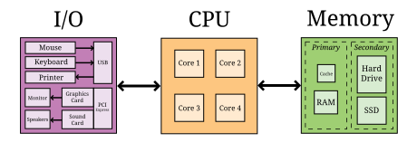
CPU
O processador, ou unidade central de processamento (CPU), é o “cerebro” de um computador. Ele recebe instruções, as decodifica e as executa. Ele pode enviar ou receber informações das memórias ou dispositivos de entrada e saída (E/S). A CPU, em quase todos os computadores modernos é um microprocessador, significando que toda computação é realizada por um circuito integrado fabricado em silício. Quais são as características importantes em uma CPU? Como medimos sua velocidade e potência?
| Frequência |
A velocidade de uma CPU (e de um computador como um todo) é geralmente apresentada em gigahertz (GHz). Hertz (Hz) é a unidade de medida de frequência. Se alguma coisa acontece uma vez por segundo, então sua frequência é exatamente 1 Hz. Talvez o ponteiro de segundos do seu relógio se mova numa frequência de 1 Hz.Na América do Norte, a corrente nas tomadas alternam com uma frequência de 60 Hz. O som também pode ser medido pela sua frequência. O som mais grave que um ouvido humano pode ouvir é de cerca de 20 Hz. O som mais agudo é cerca de 20.000 Hz. Um som como esse pulsa contra o seu tímpano 20.000 vezes por segundo. Parece muito, mas muitos computadores modernos operam em uma frequência de 1 a 4 gigahertz. O prefixo “giga” significa “bilhão”. Portanto, estamos falando de computadores realizando algo mais de um bilhão (1.000.000.000) de vezes por segundo. Mas o que eles estão fazendo? Essa frequência é a frequência de clock, que indica a frequência que um sinal elétrico passa pela CPU. Em cada ciclo, a CPU realiza algum cálculo. Quanto? Depende. Em alguns sistemas, simples instruções (como somar dois números) pode ser computada em um único ciclo de clock. Outras instruções podem levar dez ou mais ciclos. Diferentes projetos de processadores podem levar diferentes números de ciclos para executar as mesmas instruções. As instruções também são executadas em pipeline, o que significa que uma instrução está sendo executada enquanto outra está sendo buscada na memória ou decodificada. Diferentes processadores podem ter maneiras diferentes de otimizar esse processo. Devido a essas diferenças, a frequência de um processador, medida em gigahertz, não é uma maneira precisa de comparar a velocidade efetiva de um processador com a de outro, a menos que os dois processadores sejam muito semelhantes. Mesmo que não faça muito sentido, a frequência do clock é comumente anunciada como a velocidade de um computador. |
| Tamanho da palavra |
Talvez você já tenha ouvido falar de computadores de 32-bit ou 64-bit. Como nós falamos sobre no subtópico sobre memórias, um bit é um 0 ou um 1, a menor quantidade de informação que pode ser armazenada. A maioria dos novos computadores são 64-bit, o que significa que eles operam a 64 bits por vez e podem utilizar valores de 64-bit como endereços de memória. As instruções que eles executam nofmalmente performam em quantidades de 64-bit, ou seja, números compostos de 64 0s e 1s. O tamanho dos dados que um computador pode operar com uma única instrução é conhecido como tamamnho da palavra. Em operações do dia-a-dia, o tamanho da palavra não é importante para a maioria dos usuátios. Certos programas que interagem diretamente com o hardware, como sistemas operacionais, podem ser influenciados pelo tamanho da palavra. Por exemplo, a maioria dos sistemas operacionais de 32-bit foram desenvolvidos para funcionar em um processador de 64-bit, mas a maioria dos sistemas operacionais de 64-bit não funcionam em processadores 32-bit. Programas normalmente são executdos com maior velocidade em máquinas com um tamanho da palavra maior, mas normalmente consomem mais memória. Um processador de 32-bit (ou sistema operacional) não pode usar mais de 4 gigabytes (definido abaixo) de memória. Assim, um computador de 64-bit é necessário para aproveitar a grande quantidade de memória que existem hoje. |
| Cache |
O cérebro humano realiza cálculos e armazena informações. A CPU de um computador realiza cálculos, mas, na maioria das vezes, não armazena informações. O cache da CPU é a exceção. A maioria das CPUs modernas possui uma seção pequena e muito rápida de memória integrada diretamente ao chip. Ao prever quais informações a CPU utilizará em seguida, ela pode pré-carregá-las no cache e evitar a espera pela memória normal, que é mais lenta. Com o tempo, os caches se tornaram mais complexos e, muitas vezes, possuem vários níveis. O primeiro nível é muito pequeno, mas incrivelmente rápido. O segundo nível é maior e mais lento. E assim por diante. Seria preferível ter um cache de primeiro nível grande, mas memória rápida é memória cara. Cada nível é maior, mais lento e mais barato que o anterior. O tamanho do cache não é um recurso da CPU amplamente divulgado, mas faz uma enorme diferença no desempenho. Um processador com um cache maior pode frequentemente superar um processador que é mais rápido em termos de frequência de clock. |
| Núcleos |
A maioria do notebooks e computadores de mesa disponíveis hoje possui processadores multicore. Esses processadores contêm dois, quatro, seis ou até mais núcleos. Cada núcleo é um processador capaz de executar instruções de forma independente, e todos eles podem se comunicar com a mesma memória. Em teoria, ter seis núcleos poderia permitir que seu computador funcionasse seis vezes mais rápido. Na prática, esse aumento de velocidade é difícil de alcançar. Aprender como obter mais desempenho de sistemas multicore é um dos principais temas deste livro. Concorrência e Sincronização, bem como as seções marcadas com Concorrência em outros capítulos, são especificamente adaptadas para alunos interessados em programar esses sistemas multicore para que funcionem de maneira eficaz. Se você não estiver interessado em programação concorrente, pode pular esses capítulos e seções e usar este livro como um manual introdutório tradicional de programação Java. Por outro lado, se você estiver interessado na área cada vez mais importante da programação concorrente, Concorrência: Processos Multicores perto do final deste capítulo é a primeira seção Concorrência do livro e discute os processadores multicore mais profundamente. |
Memory
A memória é onde todos os programas e dados de um computador são armazenados. A memória de um computador geralmente não é um único componente de hardware. Em vez disso, as necessidades de armazenamento de um computador são atendidas por diversas tecnologias.
No topo da pirâmide da memória está o armazenamento primário, a memória que a CPU pode acessar e controlar diretamente. Em computadores de mesa e portáteis, o armazenamento primário geralmente assume a forma de memória de acesso aleatório (RAM). Ela é chamada de memória de acesso aleatório porque leva o mesmo tempo para acessar qualquer parte da RAM. A RAM tradicional é volátil, o que significa que seu conteúdo é perdido quando a energia é desligada. Todos os programas e dados devem ser carregados na RAM para serem usados pela CPU.
Depois do armazenamento primário vem o armazenamento secundário. O campo do armazenamento secundário é dominado por discos rígidos que armazenam dados em pratos magnéticos giratórios, embora a tecnologia flash esteja começando a substituí-los. Unidades ópticas (como CD, DVD e Blu-ray) e as unidades de disquete, agora praticamente obsoletas, também se enquadram na categoria de armazenamento secundário. O armazenamento secundário é mais lento que o primário, mas é não volátil. Algumas formas de armazenamento secundário, como CD-ROM e DVD-ROM, são somente de leitura, mas a maioria é capaz de ler e gravar.
Antes de podermos comparar esses tipos de armazenamento de forma eficaz, precisamos ter um sistema para medir a quantidade de dados que eles armazenam. Nos computadores digitais modernos, todos os dados são armazenados como uma sequência de 0s e 1s. Na memória, o espaço que pode conter um único 0 ou um único 1 é chamado de bit, que é a abreviação de “binary digit”(dígito binário).
Um bit é uma quantidade minúscula de informação. Para fins organizacionais, chamamos uma sequência de oito bits de byte. O tamanho em palavras de uma CPU é de dois ou mais bytes, mas a capacidade de memória é geralmente listada em bytes, não em palavras.
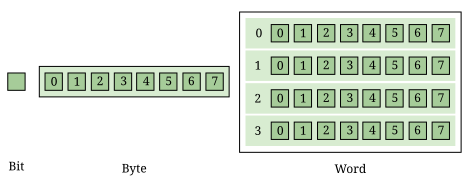
Tanto a capacidade de armazenamento primário quanto a secundária tornaram-se tão grandes que é inconveniente descrevê-las em bytes. Os cientistas da computação adotaram prefixos da física para criar unidades adequadas.
Unidades comuns para medir memória são bytes, kilobytes, megabytes, gigabytes e terabytes. Cada unidade é 1.024 vezes maior que a unidade anterior. Você deve ter notado que 210 (1.024) é quase igual a 103 (1.000). Às vezes, não fica claro qual valor se refere. Os fabricantes de unidades de disco sempre usam potências de 10 quando indicam o tamanho de seus discos. Assim, um disco rígido de 1 TB pode armazenar 1012 (1.000.000.000.000) bytes, e não 240 (1.099.511.627.776) bytes. Organizações de padronização têm defendido que os termos kibibyte (KiB), mebibyte (MiB), gibibyte (GiB) e tebibyte (TiB) sejam usados para se referir às unidades baseadas em potências de 2, enquanto os nomes tradicionais sejam usados apenas para se referir às unidades baseadas em potências de 10, mas os novos termos ainda não se popularizaram.
| Unidade | Tamanho | Bytes | Medida Prática |
|---|---|---|---|
byte |
8 bits |
20 = 100 |
um único caracter |
kilobyte (KB) |
1,024 bytes |
210 ≈ 103 |
um parágrafo de texto |
megabyte (MB) |
1,024 kilobytes |
220 ≈ 106 |
um minuto de uma música MP3 |
gigabyte (GB) |
1,024 megabytes |
230 ≈ 109 |
uma hora de streaming de vídeo em qualidade padrão |
terabyte (TB) |
1,024 gigabytes |
240 ≈ 1012 |
80% da capacidade da memória humana, estimado por Raymond Kurzweil |
No início desta seção, nos referimos à memória como uma pirâmide. No topo, há uma quantidade pequena, mas muito rápida, de memória. À medida que descemos pela pirâmide, a capacidade de armazenamento aumenta, mas a velocidade diminui. É claro que a pirâmide varia de computador para computador. Abaixo, há uma tabela que mostra vários tipos de memória, ordenados da mais rápida e menor à mais lenta e maior. A velocidade efetiva é difícil de medir (e muda à medida que a tecnologia avança), mas observe que cada camada da pirâmide tende a ser de 10 a 100 vezes mais lenta do que a camada anterior.
| Memória | Capacidade Típica | Uso |
|---|---|---|
Cache |
kilobytes ou megabytes |
O cache é um armazenamento rápido e temporário para a própria CPU. As CPUs modernas possuem dois ou três níveis de cache, que se tornam progressivamente maiores e mais lentos. |
RAM |
gigabytes |
A maior parte da memória primária é a RAM. A RAM vem em módulos que podem ser trocados para atualizar um computador. |
Unidades Flash |
gigabytes até terabytes |
As unidades flash oferecem um dos armazenamentos secundários mais rápidos disponíveis para consumidores comuns. Os pen drives vêm na forma de dispositivos USB tipo chaveiro, mas também como unidades que ficam dentro do computador (às vezes chamadas de unidades de estado sólido ou SSDs). À medida que o preço das unidades flash caem, espera-se que eles substituam totalmente os discos rígidos. Alguns SSDs já têm capacidades na faixa dos terabytes. |
Discos rígidos |
terabytes |
Os discos rígidos ainda são o armazenamento secundário mais comum para desktops, laptops e servidores. Eles têm velocidade limitada, em parte devido às suas peças móveis. |
Backup em fita |
terabytes e mais |
Algumas grandes empresas ainda armazenam enormes quantidades de informação em fitas magnéticas. As fitas têm bom desempenho para acessos sequenciais longos. |
Armazenamento em rede |
terabytes e mais |
O armazenamento acessado por meio de uma rede é limitado pela velocidade da rede. Muitas empresas utilizam computadores em rede para backup e redundância, bem como para computação distribuída. Amazon, Google, Microsoft e outras empresas alugam seus sistemas de armazenamento em rede a taxas baseadas no tamanho do armazenamento e na taxa de transferência total de dados. Esses serviços fazem parte do que é chamado de computação em nuvem. |
Dispositivos E/S
Os dispositivos de E/S apresentam uma variedade muito maior do que as CPUs ou a memória. Alguns dispositivos de E/S, como as portas USB, estão permanentemente conectados à CPU por meio de uma placa de circuito impresso. Outros dispositivos, chamados de periféricos, são conectados ao computador conforme necessário. Seus tipos e recursos são muitos e variados, e este livro não aborda em profundidade como interagir com dispositivos de E/S.
Dispositivos de entrada comuns incluem mouses, teclados, touchpads, microfones, controles de videogame e mesas digitalizadoras. Dispositivos de saída comuns incluem monitores, alto-falantes e impressoras. Alguns dispositivos realizam tanto entrada quanto saída, como as placas de rede.
Lembre-se de que nossa visão do hardware do computador como CPU, memória e dispositivos de E/S é apenas um modelo. Um soquete PCI Express pode ser considerado um dispositivo de E/S, mas a placa de vídeo que se encaixa no soquete também pode ser considerada um. E o monitor que se conecta à placa de vídeo é mais um. Embora a placa de vídeo seja um dispositivo de E/S, ela também possui seu próprio processador e memória. Não faz sentido se perder em detalhes, a menos que sejam relevantes para o problema que você está tentando resolver. Uma das habilidades mais importantes na ciência da computação é encontrar o nível certo de detalhe e abstração para analisar um determinado problema.
1.2.2. Software
Sem hardware, os computadores não existiriam, mas o software é igualmente importante. O software consiste nos programas e dados que são executados e armazenados pelo computador. O foco deste livro é aprender a escrever software.
O software abrange uma variedade quase infinita de programas de computador. Com as ferramentas certas (muitas das quais são gratuitas), qualquer pessoa pode escrever um programa que rode em uma máquina Windows, Mac ou Linux. Embora seja quase impossível listar todos os diferentes tipos de software, vale a pena mencionar algumas categorias.
| Sistemas Operacionais |
O sistema operacional (SO) é o software que gerencia a interação entre o hardware e o restante do software. Programas chamados drivers são adicionados ao SO para cada dispositivo de hardware. Por exemplo, quando um aplicativo deseja imprimir um documento, ele se comunica com a impressora por meio de um driver de impressora personalizado para aquela impressora específica, o SO e o hardware do computador. O SO também agenda, executa e gerencia a memória para todos os outros programas. Os três SO mais comuns para computadores desktop são o Microsoft Windows, o Apple macOS e o Linux. Atualmente, todos os três rodam em hardware semelhante, baseado nas arquiteturas Intel x86 e x64. A Microsoft não vende computadores desktop, mas muitos computadores desktop e laptops vêm com o Windows pré-instalado. Para pessoas físicas e jurídicas que montam seu próprio hardware, também é possível adquirir o Windows separadamente. Em contrapartida, quase todos os computadores que rodam o macOS são vendidos pela Apple, e o macOS geralmente vem integrado ao computador. O Linux é um software de código aberto, o que significa que todo o código-fonte usado para criá-lo está disponível gratuitamente. Apesar do Linux ser gratuito, muitos consumidores preferem o Windows ou o macOS devido à facilidade de uso, compatibilidade com softwares específicos e suporte técnico. Muitos consumidores também não sabem que o hardware pode ser adquirido separadamente de um sistema operacional ou que o Linux é uma alternativa gratuita aos outros dois. Outros computadores também possuem sistemas operacionais. Muitos tipos de telefones celulares utilizam o sistema operacional Android, do Google. O iPad e o iPhone da Apple utilizam o iOS, concorrente da Apple. Telefones, fornos de micro-ondas, automóveis e inúmeros outros dispositivos possuem computadores internos que utilizam algum tipo de sistema operacional incorporado. Considere dois aplicativos em execução em um telefone celular com uma CPU de núcleo único. Um aplicativo é um navegador da web e o outro é um reprodutor de música. O usuário pode começar a ouvir música e, em seguida, iniciar o navegador. Para funcionar, ambos os aplicativos precisam acessar a CPU ao mesmo tempo. Como a CPU tem apenas um núcleo, ela pode executar apenas uma instrução por vez. Em vez de forçar o usuário a terminar de ouvir a música antes de usar o navegador da web, o sistema operacional alterna a CPU entre os dois aplicativos muito rapidamente. Essa alternância permite que o usuário continue navegando enquanto a música toca em segundo plano. O usuário tem a ilusão de que ambos os aplicativos estão usando a CPU ao mesmo tempo. |
| Compiladores |
Um compilador é um tipo de programa particularmente importante para os programadores. Os programas de computador são escritos em linguagens especiais, como Java, que são legíveis para os humanos. Um compilador pega esse programa legível para humanos e o transforma em instruções (geralmente código de máquina) que um computador pode entender. Para compilar os programas deste livro, você usa o compilador Java |
| Aplicativos Empresariais |
Existem muitos tipos diferentes de programas que se enquadram na categoria de software empresarial ou de produtividade. Talvez o mais conhecido seja o pacote de ferramentas Microsoft Office, que inclui o processador de texto Word, a planilha eletrônica Excel e o software de apresentações PowerPoint. Os programas dessa categoria costumam ser os primeiros a vir à mente quando as pessoas pensam em software, e essa categoria teve um impacto histórico tremendo. A popularidade do Microsoft Office levou à ampla adoção do Microsoft Windows na década de 1990. Um único aplicativo tão desejável que um consumidor está disposto a comprar o hardware e o sistema operacional apenas para poder executá-lo é, às vezes, chamado de killer app. |
| Video Games |
Os videogames são softwares como qualquer outro programa, mas merecem atenção especial por representarem uma indústria gigantesca, avaliada em bilhões de dólares. Geralmente, são desafiadores de programar, e o setor de desenvolvimento de videogames é altamente competitivo. Os gráficos 3D intensos exigidos pelos videogames modernos levaram fabricantes de hardware como Nvidia, AMD e Intel a desenvolver placas de vídeo de alto desempenho para computadores desktop e laptops. Ao mesmo tempo, empresas como Nintendo, Sony e Microsoft desenvolveram consoles como o Switch 2, o PlayStation 5 e o Xbox Series X, que são especializados em videogames, mas não foram projetados para tarefas gerais de computação. |
| Navegadores Web |
Os navegadores da Web são programas capazes de se conectar à Internet, baixar e exibir páginas da Web e outros arquivos. Os primeiros navegadores da Web só conseguiam exibir páginas relativamente simples, contendo texto e imagens. Devido à crescente importância da comunicação pela Internet, os navegadores da Web evoluíram para reproduzir sons, exibir vídeos e permitir uma comunicação sofisticada em tempo real. Entre os navegadores da Web mais populares estão o Microsoft Edge, o Mozilla Firefox, o Apple Safari e o Google Chrome. Cada um deles apresenta vantagens e desvantagens em termos de compatibilidade, conformidade com padrões, segurança, velocidade e suporte ao cliente. |
1.3. Sintaxe: Representação de dados
Após cada seção Conceitos, este livro geralmente apresenta uma seção Sintaxe. Sintaxe é o conjunto de regras de uma linguagem. Essas seções Sintaxe geralmentese concentram em recursos concretos da linguagem Java e em detalhes técnicos relacionados aos conceitos descritos no capítulo.
Neste capítulo, ainda estamos tentando descrever computadores em um nível geral. Consequentemente, os detalhes técnicos que abordaremos nesta seção não serão sobre a sintaxe do Java. Embora tudo o que dizemos se aplique ao Java, também se aplica a muitas outras linguagens de programação.
1.4. Compiladores e Interpretadores
Este livro trata principalmente da resolução de problemas por meio de programas de computador. Daqui em diante, só mencionaremos o hardware quando ele tiver impacto na programação. O primeiro passo para escrever um programa de computador é decidir qual linguagem usar.
A maioria das pessoas se comunica por meio de línguas naturais, como o chinês, o inglês, o francês, o russo ou o tâmil. No entanto, os computadores têm dificuldade em compreender línguas naturais. Como um meio-termo, os programadores escrevem programas (instruções para o computador seguir) em uma linguagem mais semelhante a uma linguagem natural do que à linguagem compreendida pela CPU. Essas linguagens são chamadas de linguagens de alto nível, porque estão mais próximas da linguagem natural (o nível mais alto) do que da linguagem de máquina (o nível mais baixo). Também podemos nos referir à linguagem de máquina como código de máquina ou código nativo.
Milhares de linguagens de programação foram criadas ao longo dos anos, mas algumas das linguagens de alto nível mais populares de todos os tempos incluem Fortran, Cobol, Visual Basic, C, C++, Python, Java, JavaScript (que é quase totalmente independente do Java) e C#.
Como mencionamos na seção anterior, um compilador é um programa que traduz uma linguagem para outra. Em muitos casos, um compilador traduz uma linguagem de alto nível para uma linguagem de baixo nível que a CPU possa compreender e executar. Como todo o trabalho é feito antecipadamente, esse tipo de compilação é conhecido como compilação estática ou antecipada. Em outros casos, a saída do compilador é uma linguagem intermediária que é mais fácil para o computador compreender do que a linguagem de alto nível, mas ainda assim requer alguma tradução antes que o computador possa seguir as instruções.
Um interpretador é um programa semelhante a um compilador. No entanto, um interpretador recebe código em uma linguagem como entrada e, em tempo real, executa cada instrução na CPU à medida que a traduz. Os interpretadores geralmente executam o código mais lentamente do que se ele tivesse sido traduzido para linguagem de máquina antes da execução.
Observe que tanto compiladores quanto interpretadores são programas normais. Eles geralmente são escritos em linguagens de alto nível e compilados para linguagem de máquina antes da execução. Isso levanta uma questão filosófica: se você precisa de um compilador para criar um programa, de onde veio o primeiro compilador?
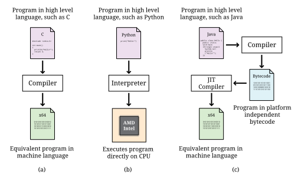
Java é a popular linguagem de programação de alto nível em que nos concentramos neste livro. A maneira padrão de executar um programa Java envolve uma etapa adicional que muitas linguagens compiladas não possuem. A maioria dos compiladores de Java, embora não todos, traduz um programa escrito em Java para uma linguagem intermediária conhecida como bytecode. Essa versão intermediária do programa de alto nível é usada como entrada para outro programa chamado JVM "Java Virtual Machine"(Máquina Virtual Java) . A maioria das JVMs populares traduz o bytecode em código de máquina que é executado diretamente pela CPU. Essa conversão de bytecode em código de máquina é feita com um compilador just-in-time (JIT). É chamado de “just-in-time” porque as seções do bytecode não são compiladas até o momento em que são necessárias. Como a saída será usada para essa execução específica do programa, o JIT pode fazer otimizações para que o código de máquina final funcione particularmente bem no ambiente atual.
Por que o Java usa a etapa intermediária do bytecode? Um dos objetivos de design do Java é ser independente de plataforma, o que significa que ele pode ser executado em qualquer tipo de computador. Esse é um objetivo difícil, pois cada combinação de SO e CPU precisará de instruções de baixo nível diferentes.
O Java aborda o problema mantendo seu bytecode independente de plataforma. Você pode compilar um programa em bytecode em uma máquina Windows e, em seguida, executar o bytecode em uma JVM em um ambiente macOS. Parte do trabalho é independente de plataforma, e parte não é. Cada JVM deve ser adaptada à combinação de sistema operacional e hardware em que é executada. A Sun Microsystems, Inc., desenvolvedora original da linguagem Java e da JVM, comercializou esse recurso da linguagem com o slogan “Escreva uma vez, execute em qualquer lugar.”
A Sun Microsystems foi comprada pela Oracle Corporation em 2009. A Oracle continua a produzir o HotSpot, a JVM padrão, mas existem muitas outras JVMs, incluindo o Apache Harmony e o Dalvik, a JVM do Google Android.
1.4.1. Números
Todos os dados dentro de um computador são representados por números. Embora os seres humanos utilizem números em nosso dia a dia, a representação e a manipulação de números pelos computadores funcionam de maneira diferente. Nesta subseção, apresentamos os conceitos de sistemas numéricos, bases, conversão de uma base para outra e aritmética em sistemas numéricos arbitrários.
Alguns Sistemas Numéricos
Um sistema numérico é uma forma de representar números. É fácil confundir o algarismo que representa o número com o próprio número. Você pode pensar no número dez como “10,”, um algarismo composto por dois símbolos, mas o próprio número é o conceito de ser dez. Você poderia expressar essa quantidade levantando todos os dedos, com o símbolo “X,” ou batendo dez vezes.
Representar dez com “10” é um exemplo de um sistema numérico posicional, ou seja, de base 1. Em um sistema numérico posicional, a posição dos dígitos determina a magnitude que eles representam. Por exemplo, o numeral 3.432 contém o dígito 3 duas vezes. Na primeira vez, ele representa três grupos de mil. Na segunda vez, representa três grupos de dez. Em contrapartida, o sistema numérico romano é um exemplo de sistema numérico que não é posicional.
O número 3.432 e, possivelmente, todos os outros números escritos normalmente que você já viu são expressos na base 10 ou no sistema decimal. É chamado de base 10 porque, à medida que você se move do dígito mais à direita para a esquerda, o valor de cada posição aumenta em um fator de 10. Além disso, na base 10, dez é o menor inteiro positivo que requer dois dígitos para ser representado. Cada número menor tem seu próprio dígito: 0, 1, 2, 3, 4, 5, 6, 7, 8 e 9. Representar dez requer a combinação de dois dígitos existentes. Toda base tem a propriedade de que o número que lhe dá nome requer dois dígitos para ser escrito, a saber, “1” e “0.” (Uma exceção é a base 1, que não se comporta como as outras bases e não é um sistema numérico posicional normal.)
O número 723 pode ser escrito como 723 = 7 · 102 + 2 · 101 + 3 · 100.
Observe que o dígito mais à direita é a casa das unidades, o que equivale a 100. Certifique-se de começar com b0 e não com b1_ ao considerar o valor de um número escrito na base b, independentemente do valor de b. O segundo dígito a partir da direita é multiplicado por 101, e assim por diante. O produto de um dígito pela potência correspondente de 10 nos diz quanto um dígito contribui para o número. Na expansão acima, o dígito 7 contribui com 700 para o número 723. Os dígitos 2 e 3 contribuem, respectivamente, com 20 e 3 para 723.
À medida que avançamos para a direita, a potência de 10 diminui em um, e esse padrão funciona mesmo para potências negativas de 10. Se expandirmos o valor fracionário 0,324, obtemos 0,324 = 3 · 10-1 + 2 · 10-2 + 4 · 10-3.
Podemos combinar os dois números acima para obter 723,324 = 7 · 102 + 2 · 101 + 3 · 100 + 3 · 10-1 + 2 · 10-2 + 4 · 10-3.
Podemos estender essas ideias a qualquer base, verificando nossa lógica em relação à conhecida base 10. Suponhamos que um numeral seja composto por n símbolos sn-1, sn-2, …, s1, s0. Além disso, suponhamos que esse numeral pertença ao sistema numérico de base _b. Podemos expandir o valor desse numeral da seguinte forma:
sn-1 sn-2 … s1 s0 = sn-1 · bn-1 + sn-2 · bn-2 + … + s1 · b1 + s0 · b0
O símbolo mais à esquerda no número é o dígito de maior ordem e o símbolo mais à direita é o dígito de menor ordem. Por exemplo, no número decimal 492, 4 é o dígito de maior ordem e 2, o dígito de menor ordem.
As frações podem ser expandidas de maneira semelhante. Por exemplo, uma fração com n símbolos s1, s2, …, sn-1, sn_ em um sistema numérico de base b pode ser expandida para:
0.s1 s2 … sn-2 sn-1 = s1 · b-1 + s2 · b-2 + … + sn-1 · b-n+1 + sn · b-n
Como cientistas da computação, temos um interesse especial pela base 2, pois é a base usada para expressar números dentro dos computadores. A base 2 também é chamada de binária. Os únicos símbolos permitidos para representar números em binário são “0” e “1”, os dígitos binários ou bits.
No número binário 10011, o 1 mais à esquerda é o bit de ordem mais alta e o 0 mais à direita é o bit de ordem mais baixa. Pelas regras dos sistemas numéricos posicionais, o bit de ordem mais alta representa 1 · 24 = 16.
Exemplos de números escritos em binário são 1002, 1112, 101012 e 110000012 Lembre-se de que a base do sistema numérico binário é 2. Assim, podemos escrever um número em binário como a soma dos produtos das potências de 2. Por exemplo, o número 100112 pode ser expandido para:
100112 = 1 · 24 + 0 · 23 + 0 · 22 + 1 · 21 + 1 · 20 = 16 + 0 + 0 + 2 + 1 = 19
Ao expandir o número, também mostramos como converter um número binário em um número decimal. Lembre-se de que tanto 100112 quanto 19 representam o mesmo valor, ou seja, dezenove. A conversão entre bases altera apenas a forma como o número é escrito. Como antes, o bit mais à direita é multiplicado por 20 para determinar sua contribuição para o número binário. O bit à sua esquerda é multiplicado por 21 para determinar sua contribuição, e assim por diante. Neste caso, o 1 mais à esquerda contribui com 1 · 24 = 16 para o valor.
Outro sistema numérico útil é o base 16, também conhecido como hexadecimal. O sistema hexadecimal é surpreendente porque requer mais do que os 10 dígitos a que estamos acostumados. Os números nesse sistema são escritos com 16 dígitos hexadecimais, que incluem os dez dígitos de 0 a 9 e as seis letras A, B, C, D, E e F. As seis letras, começando por A, correspondem aos valores 10, 11, 12, 13, 14 e 15.
O hexadecimal é usado como uma representação compacta do binário. Embora os números binários possam ficar muito longos, quatro dígitos binários podem ser representados com apenas um único dígito hexadecimal.
39A16, 3216 e AFBC1216 são exemplos de números escritos em hexadecimal. Um número hexadecimal pode ser expresso como a soma dos produtos das potências de 16. Por exemplo, o número hexadecimal A0BF16 pode ser expandido para:
A · 163 + 0 · 162 + B · 161 + F · 160
Para converter um número hexadecimal em decimal, devemos substituir os dígitos de A a F pelos valores de 10 a 15. Agora podemos reescrever a soma dos produtos acima como:
10 · 163 + 0 · 162 + 11 · 161 + 15 · 160 = 40.960 + 0 + 176 + 15 = 41.151
Assim, obtemos A0BF16 = 41.151.
O sistema numérico de base 8 também é chamado de octal. Assim como o hexadecimal, o octal é usado como uma forma abreviada do binário. Um número octal utiliza os dígitos octais 0, 1, 2, 3, 4, 5, 6 e 7. Fora isso, aplicam-se as mesmas regras. Por exemplo, o número octal 377 pode ser expandido para:
3778 = 3 · 82 + 7 · 81 + 7 · 80 = 255
Você deve ter notado que nem sempre fica claro em qual base um numeral está escrito. A sequência de dígitos 337 é um numeral válido em octal, decimal e hexadecimal, mas representa números diferentes em cada sistema. Os matemáticos usam um subscrito para indicar a base na qual um numeral está escrito.
Assim, 3378 = 25510, 37710 = 37710, e 37716 = 88710. Os números de base são sempre escritos na base 10. Presume-se que um número sem subscrito esteja na base 10. Em Java, não há como marcar subscritos, então são usados prefixos. O prefixo 0b é usado para binário, o prefixo 0 é usado para octal, nenhum prefixo é usado para decimal e o prefixo 0x é usado para hexadecimal. Os números correspondentes no código Java seriam, portanto, escritos como 0377, 377 e 0x377. Tenha cuidado para não preencher números com zeros em Java, pois eles podem ser interpretados como base 8! Lembre-se de que o valor 056 não é o mesmo que o valor 56 em Java.
A tabela a seguir lista algumas características dos quatro sistemas numéricos que discutimos, com representações dos números 7 e 29.
| Sistema Numérico | Base | Digitos | Numerais Matemáticos |
Numerais Java |
|---|---|---|---|---|
Binário |
2 |
0, 1 |
1112, 111012 |
|
Octal |
8 |
0, 1, 2, 3, 4, 5, 6, 7 |
78, 358 |
|
Decimal |
10 |
0, 1, 2, 3, 4, 5, 6, 7, 8, 9 |
7, 29 |
|
Hexadecimal |
16 |
0, 1, 2, 3, 4, 5, 6, 7, 8, 9, A, B, C, D, E, F |
716, 1D16 |
|
Conversão entre sistemas numéricos
É útil saber como converter um número representado em uma base para a representação equivalente em outra base. Nossos exemplos mostraram como converter um número em qualquer base para o sistema decimal, expandindo-o na forma de soma de produtos e, em seguida, somando os diferentes termos. Mas como converter um número decimal para outra base?
Conversão decimal para binário
Existem pelo menos duas maneiras diferentes de converter um número decimal em binário. Uma delas consiste em escrever o número decimal como uma soma de potências de dois, como na seguinte conversão do número 23.
23 = 16 + 0 + 4 + 2 + 1 = 1 · 24 + 0 · 23 + 1 · 22 + 1 · 21 + 1 · 20 = 101112
Primeiro, encontre a maior potência de dois que seja menor ou igual ao número. Neste caso, 16 se encaixa, pois 32 é muito grande. Subtraia esse valor do número, restando 7 neste caso. Em seguida, repita o processo. O último passo é reunir os coeficientes das potências de dois em uma sequência para obter o equivalente binário. Usamos 16, 4, 2 e 1, mas pulamos o 8. Se escrevermos um 1 para cada posição que usamos e um 0 para cada posição que pulamos, obtemos 2³ = 101112. Embora esse seja um procedimento simples para a conversão de decimal para binário, ele pode ser complicado para números maiores.
Uma maneira alternativa de converter um número decimal em seu equivalente binário é dividir o número dado por 2 até que o quociente seja 0 (mantendo apenas a parte inteira do quociente). A cada etapa, registre o resto obtido ao dividir por 2. Reúna esses restos (que serão sempre 0 ou 1) para formar o equivalente binário. O bit menos significativo é o resto obtido após a primeira divisão, e o bit mais significativo é o resto obtido após a última divisão. Em outras palavras, essa abordagem determina os dígitos do número binário na ordem inversa.
Vamos usar esse método para converter 23 em seu equivalente binário. A tabela a seguir mostra as etapas necessárias para a conversão. A coluna mais à esquerda indica o número da etapa. A segunda coluna contém o número a ser dividido por 2 em cada etapa. A terceira coluna contém o quociente de cada etapa, e a última coluna contém o resto atual.
| Etapa | Número | Quociente | Resto |
|---|---|---|---|
1 |
23 |
11 |
1 |
2 |
11 |
5 |
1 |
3 |
5 |
2 |
1 |
4 |
2 |
1 |
0 |
5 |
1 |
0 |
1 |
Começamos dividindo 23 por 2, obtendo 11 como quociente e 1 como resto. O quociente 11 é então dividido por 2, resultando em 5 como quociente e 1 como resto. Esse processo continua até chegarmos a um quociente de 0 e um resto de 1 na Etapa 5. Agora escrevemos os restos do mais recente para o menos recente e obtemos o mesmo resultado de antes, 23 = 101112.
Outras conversões
Um número decimal pode ser convertido para seu equivalente hexadecimal usando qualquer um dos dois procedimentos descritos acima. Em vez de escrever um número decimal como uma soma de potências de 2, escreve-se como uma soma de potências de 16. Da mesma forma, ao usar o método da divisão, em vez de dividir por 2, divide-se por 16. A conversão para o sistema octal é semelhante.
Usamos o sistema hexadecimal porque é fácil converter dele para o binário e vice-versa. A tabela a seguir lista os equivalentes binários dos 16 dígitos hexadecimais.
| Dígito Hexadecimal |
Equivalente Binário |
Dígito Hexadecimal |
Equivalente Binário |
|---|---|---|---|
0 |
0000 |
8 |
1000 |
1 |
0001 |
9 |
1001 |
2 |
0010 |
A |
1010 |
3 |
0011 |
B |
1011 |
4 |
0100 |
C |
1100 |
5 |
0101 |
D |
1101 |
6 |
0110 |
E |
1110 |
7 |
0111 |
F |
1111 |
Com a ajuda da tabela acima, vamos converter 3FA16 para binário. Por simples substituição, 3FA16 = 0011 1111 10102. Observe que agrupamos os dígitos binários em blocos de 4 bits cada. É claro que os zeros mais à esquerda no equivalente binário são irrelevantes, pois não contribuem para o valor do número.
Representação de números inteiros em um computador
Na matemática, os números binários podem representar números arbitrariamente grandes. Dentro de um computador, o tamanho de um número é limitado pelo número de bits usados para representá-lo. Para cálculos de uso geral, são comumente utilizados inteiros de 32 e 64 bits. O maior inteiro que o Java representa com 32 bits é 2.147.483.647, o que é suficiente para a maioria das tarefas. Para números maiores, o Java pode representar até 9.223.372.036.854.775.807 com 64 bits. O Java também oferece representações para inteiros usando 8 e 16 bits.
Essas representações são fáceis de determinar para números positivos: encontre o equivalente binário do número e, em seguida, preencha o lado esquerdo com zeros para ocupar o espaço restante. Por exemplo, 19 = 100112. Se armazenado usando 8 bits, 19 seria representado como 0001 0011. Se armazenado usando 16 bits, 19 seria representado como 0000 0000 0001 0011. (Separamos grupos de 4 bits para facilitar a leitura).
Aritmética binária
Lembre-se de que os computadores lidam com números em sua representação binária, o que significa que toda a aritmética é realizada com números binários. Às vezes, é útil compreender como esse processo funciona e compará-lo com a aritmética decimal. A tabela abaixo lista as regras para a adição binária.
| + | 0 | 1 |
|---|---|---|
0 |
0 |
1 |
1 |
1 |
10 |
Conforme indicado acima, a soma de dois 1s resulta em um 0, com um transporte de 1 para a posição seguinte à esquerda. A soma de números compostos por mais de um bit segue as mesmas regras de qualquer soma, transportando valores excessivamente grandes para a posição seguinte. Na soma decimal, valores acima de 9 devem ser transportados. Na soma binária, valores acima de 1 devem ser transportados. O exemplo a seguir mostra uma demonstração de soma binária. Para simplificar a apresentação, assumimos que os números inteiros são representados com apenas 8 bits.
Vamos somar os números 60 e 6 no sistema binário. Usando as técnicas de conversão descritas acima, podemos ver que 60 = 111100₂ e 6 = 110₂. No computador, esses números já estariam no sistema binário e preenchidos com zeros à esquerda para ocupar 8 bits.
| Binário | Decimal | |
|---|---|---|
|
|
|
+ |
|
|
|
|
O resultado não é nenhuma surpresa, mas observe que a soma pode ser realizada em binário sem a necessidade de conversão para decimal em nenhum momento.
A subtração no sistema binário também é semelhante à subtração no sistema decimal. As regras estão apresentadas na tabela a seguir.
| - | 0 | 1 |
|---|---|---|
0 |
0 |
1 |
1 |
(1)1 |
0 |
Ao subtrair um 1 de um 0, toma-se emprestado um 1 da posição imediatamente à esquerda. O exemplo a seguir ilustra a subtração binária.
Mais uma vez, usaremos 60 e 6 e seus equivalentes binários indicados acima.
| Binário | Decimal | |
|---|---|---|
|
|
|
- |
|
|
|
|
Representação de números inteiros negativos em um computador
Os números inteiros negativos também são representados na memória do computador como números binários, utilizando um sistema chamado complemento a dois. Ao analisar a representação binária de um número inteiro com sinal em um computador, o bit mais à esquerda (o mais significativo) será 1 se o número for negativo e 0 se for positivo. Infelizmente, encontrar a representação de um número negativo envolve mais do que apenas inverter esse bit.
Suponhamos que precisemos encontrar o equivalente binário do número decimal -12 usando 8 bits na forma de complemento de dois. O primeiro passo é converter 12 para seu equivalente binário de 8 bits. Ao fazer isso, obtemos 12 = 0000 1100. Observe que o bit mais à esquerda da representação é um 0, indicando que o número é positivo. Em seguida, calculamos o complemento a dois da representação de 8 bits em duas etapas. Na primeira etapa, invertemos todos os bits, ou seja, mudamos todos os 0 para 1 e todos os 1 para 0. Isso nos dá o complemento a um do número, 1111 0011. Na segunda etapa, somamos 1 ao complemento a um para obter o complemento a dois. O resultado é 1111 0011 + 1 = 1111 0100.
Assim, o equivalente binário de 8 bits em complemento de dois de -12 é 1111 0100. Observe que o bit mais à esquerda é um 1, indicando que este é um número negativo.
Vamos converter -29 para seu equivalente binário, assumindo que o número será armazenado na forma de complemento a dois de 8 bits. Primeiro, convertemos o número positivo 29 para seu equivalente binário de 8 bits: 29 = 0001 1101.
Em seguida, obtemos o complemento à 1 da representação binária invertendo os 0s para 1s e os 1s para 0s. Isso nos dá 1110 0010. Por fim, somamos 1 à representação do complemento à 1 para obter 1110 0010 + 1 = 1110 0011, que é o equivalente binário desejado de -29.
Vamos converter o valor de 8 bits em complemento de dois 1000 1100 para decimal. Observamos que o bit mais à esquerda desse número é 1, o que o torna um número negativo. Portanto, invertemos o processo de formação do complemento de dois. Primeiro, subtraímos 1 da representação, obtendo 1000 1100 - 1 = 1000 1011. Em seguida, invertemos todos os bits nesta forma de complemento de um, obtendo 0111 0100.
Convertemos essa representação binária em seu equivalente decimal, obtendo 116. Assim, o equivalente decimal de 1000 1100 é -116.
Por que os computadores usam o complemento a dois? Em primeiro lugar, eles precisam de um sistema capaz de representar tanto números positivos quanto negativos. Eles poderiam ter usado o bit mais à esquerda como bit de sinal e representado o restante do número como um número binário positivo. Fazer isso exigiria uma verificação desse bit e alguma conversão para números negativos toda vez que o computador quisesse realizar uma adição ou subtração.
Devido à forma como foi projetado, os números inteiros positivos e negativos armazenados no complemento a dois podem ser somados ou subtraídos sem nenhuma conversão especial. O bit mais à esquerda é somado ou subtraído exatamente como qualquer outro bit, e os valores que ultrapassam o bit mais à esquerda são ignorados. O complemento a dois tem uma vantagem sobre o complemento de um, pois existe apenas uma representação para o zero. O próximo exemplo mostra o complemento a dois em ação.
Vamos somar -126 e 126. Após realizar as conversões necessárias, suas representações em complemento de dois de 8 bits são 1000 0010 e 0111 1110.
| Binário | Decimal | |
|---|---|---|
|
|
|
+ |
|
|
|
|
Como experado, a soma retorna 0.
Agora, vamos somar os dois números inteiros negativos -126 e -2, cujas representações em complemento de dois de 8 bits são 1000 0010 e 1111 1110.
| Binário | Decimal | |
|---|---|---|
|
|
|
+ |
|
|
|
|
O resultado é -128, que é o menor número inteiro negativo que pode ser representado no complemento a dois de 8 bits.
Estouro e subfluxo
Ao realizar operações aritméticas com números, diz-se que ocorre um estouro quando o resultado da operação é maior do que o maior valor que pode ser armazenado nessa representação. Diz-se que ocorre um subfluxo quando o resultado da operação é menor do que o menor valor possível.
Tanto os estouros quanto os subfluxos levam a valores que retornam ao início do intervalo. Por exemplo, somar dois números positivos pode resultar em um número negativo, ou somar dois números negativos pode resultar em um número positivo.
Vamos somar os números 124 e 6. Suas representações em complemento de dois, de 8 bits, são 0111 1100 e 0000 0110.
| Binário | Decimal | |
|---|---|---|
|
|
|
+ |
|
|
|
|
Esse resultado surpreendente ocorre porque o maior inteiro de 8 bits no complemento a dois é 127. A soma de 124 e 6 resulta em 130, um valor superior a esse máximo, o que causa um estouro com um resultado negativo.
O menor número (o mais negativo) que pode ser representado no complemento a dois de 8 bits é -128. Um resultado menor que esse resultará em um estouro negativo. Por exemplo, -115 - 31 = 110. Experimente as conversões necessárias para testar esse resultado.
Operadores bit a bit
Embora normalmente manipulemos números usando operações matemáticas tradicionais, como adição, subtração, multiplicação e divisão, também existem operações que atuam diretamente sobre as representações binárias dos números. Alguns desses operadores têm relações claras com as operações matemáticas, enquanto outros não.
| Operador | Nome | Descrição |
|---|---|---|
|
E bit a bit |
Combina duas representações binárias em uma nova representação que contém um 1 em todas as posições em que ambas as representações originais têm um 1 |
|
OU bit a bit |
Combina duas representações binárias em uma nova representação que contém um 1 em todas as posições em que qualquer uma das representações originais tem um 1 |
|
OU EXCLUSIVO bit a bit |
Combina duas representações binárias em uma nova representação que possui um 1 em todas as posições em que as representações originais possuem valores diferentes |
|
Complemento bit a bit |
Pega uma representação e cria uma nova representação na qual cada bit é invertido de 0 para 1 e de 1 para 0 |
|
Deslocamento à esquerda com sinal |
Desloca todos os bits o número especificado de posições para a esquerda, inserindo zeros nos bits mais à direita |
|
Deslocamento à direita com sinal |
Desloca todos os bits o número especificado de posições para a direita, preenchendo a esquerda com cópias do bit de sinal |
|
Deslocamento à direita sem sinal |
Desloca todos os bits o número especificado de posições para a direita, preenchendo com zero. |
O E bit a bit, o OU bit a bit e o OU EXCLUSIVO bit a bit recebem duas representações inteiras e as combinam para formar uma nova representação. No E bit a bit, cada bit do resultado será um 1 se ambas as representações inteiras originais nessa posição forem 1 e 0 caso contrário. No OU bit a bit, cada bit do resultado será um 1 se qualquer uma das representações inteiras originais nessa posição for 1 e 0 caso contrário. No OU EXCLUSIVO bit a bit, cada bit no resultado será um 1 se os dois bits das representações inteiras originais nessa posição forem diferentes e 0 caso contrário.
O complemento bit a bit é um operador unário, como o operador de negação (-). Em vez de apenas alterar o sinal de um valor (o que ele também faz), seu resultado altera todos os 1 na representação original para 0 e todos os 0 para 1.
Os operadores de deslocamento à esquerda com sinal, deslocamento à direita com sinal e deslocamento à direita sem sinal criam uma nova representação binária deslocando os bits da representação original um certo número de posições para a esquerda ou para a direita. O deslocamento à esquerda com sinal move os bits para a esquerda, preenchendo com zeros. Se você fizer um deslocamento à esquerda com sinal em n posições, isso é equivalente a multiplicar o número por 2^n _^(até ocorrer estouro). O deslocamento à direita com sinal move os bits para a direita, preenchendo com o valor do bit de sinal. Se você fizer um deslocamento à direita com sinal em _n posições, isso é equivalente a dividir o número por 2^n ^(com divisão inteira). O deslocamento à direita sem sinal move os bits para a direita, incluindo o bit de sinal, preenchendo o lado esquerdo com zeros. Um deslocamento à direita sem sinal sempre tornará um valor positivo, mas, fora isso, é semelhante a um deslocamento à direita com sinal. Seguem alguns exemplos.
Aqui estão alguns exemplos do resultado de operações bit a bit. Vamos supor que os valores sejam representados usando o complemento a dois de 32 bits, em vez de valores de 8 bits como antes. Em Java, os operadores bit a bit convertem automaticamente os valores menores para representações de 32 bits antes de prosseguir.
Vamos analisar o resultado de 21 & 27.
| Binário | Decimal | |
|---|---|---|
|
21 |
|
|
|
27 |
|
17 |
Observe como esse resultado difere de 21 | 27.
| Binário | Decimal | |
|---|---|---|
|
21 |
|
|
|
27 |
|
31 |
E também de 21 ^ 27.
| Binário | Decimal | |
|---|---|---|
|
21 |
|
|
|
27 |
|
14 |
Ignorando o estouro, o deslocamento à esquerda com sinal é equivalente a multiplicações repetidas por 2. Considere 11 << 3. A representação 0000 0000 0000 0000 0000 0000 0000 1011 é deslocada para a esquerda para formar 0000 0000 0000 0000 0000 0000 0101 1000 = 88 = 11 · 23.
O deslocamento à direita com sinal é equivalente a divisões inteiras repetidas por 2. Considere -104 >> 2. A representação 1111 1111 1111 1111 1111 1111 1001 1000 é deslocada para a direita para formar 1111 1111 1111 1111 1111 1111 1110 0110 = -26 = -104 ÷ 22.
O deslocamento à direita sem sinal é igual ao deslocamento à direita com sinal, exceto quando é feito em números negativos. Como seu bit de sinal é substituído por 0, um deslocamento à direita sem sinal produz um número positivo (geralmente grande). Considere -104 >>> 2. A representação 1111 1111 1111 1111 1111 1111 1001 1000 é deslocada para a direita, resultando em 0011 1111 1111 1111 1111 1111 1110 0110 = 1.073.741.798.
Devido à forma como o complemento de dois é projetado, o complemento bit a bit é equivalente a negar o sinal do número e, em seguida, subtrair 1. Considere ~(-104). A representação 1111 1111 1111 1111 1111 1111 1001 1000 é complementada para 0000 0000 0000 0000 0000 0000 0110 0111 = 103.
Números racionais
Já vimos como representar números inteiros positivos e negativos na memória do computador, mas esta seção mostra como os números racionais, como 12,33, -149,89 e 3,14159, podem ser convertidos para o sistema binário e representados.
Notação científica
A notação científica está intimamente relacionada à forma como um computador representa um número racional na memória. A notação científica é uma ferramenta para representar números muito grandes ou muito pequenos sem precisar escrever muitos zeros. Um número decimal na notação científica é escrito como a × 10b, em que a é chamado de mantissa(ou coeficiente) e b é chamado de expoente.
Por exemplo, o número 3,14159 pode ser escrito em notação científica como 0,314159 × 101. Nesse caso, 0,314159 é a mantissa e 1 é o expoente. Aqui estão mais alguns exemplos de como escrever números em notação científica.
3,14159 |
= |
3,14159 × 100 |
3,14159 |
= |
314159 × 10-5 |
-141,324 |
= |
-0,141324 × 103 |
30,000 |
= |
0,3 × 105 |
Existem várias maneiras de escrever um determinado número na notação científica. Uma forma mais padronizada de escrever números reais é a notação científica normalizada. Nessa notação, a mantissa é sempre escrita como um número cujo valor absoluto é menor que 10, mas maior ou igual a 1. A seguir, apresentamos alguns exemplos de números decimais na notação científica normalizada.
3,14159 |
= |
3,14159 × 100 |
-141,324 |
= |
-1,41324 × 102 |
30,000 |
= |
3,0 × 104 |
Uma forma abreviada da notação científica é a notação E, que é escrita com a mantissa seguida da letra ‘E’ e, em seguida, do expoente. Por exemplo, 39,2 na notação E pode ser escrito como 3,92E1 ou 0,392E2. A letra ‘E’ deve ser lida como “multiplicado por 10 elevado a.” É permitido usar a notação E para representar números em notação científica em Java.
Frações
Um número racional pode ser dividido em uma parte inteira e uma parte fracionária. No número 3,14, 3 é a parte inteira e 0,14 é a parte fracionária. Já vimos como converter a parte inteira para o sistema binário. Agora, veremos como converter a parte fracionária para o sistema binário. Podemos então combinar os equivalentes binários das partes inteira e fracionária para encontrar o equivalente binário de um número real decimal.
Uma fração decimal f é convertida em seu equivalente binário multiplicando-a sucessivamente por 2. Ao final de cada etapa de multiplicação, obtém-se um 0 ou um 1 como parte inteira, que é registrado separadamente. A fração restante é novamente multiplicada por 2 e a parte inteira resultante é registrada. Esse processo continua até que a fração se reduza a zero ou até que sejam encontrados dígitos binários suficientes para a precisão desejada. O equivalente binário de f consiste, então, nos bits na ordem em que foram registrados, conforme mostrado no próximo exemplo.
Vamos converter 0,8125 para o sistema binário. A tabela abaixo mostra os passos para fazer isso.
| Etapa | f | 2f | Parte Inteira | Resto |
|---|---|---|---|---|
1 |
0,8125 |
1,625 |
1 |
0,625 |
2 |
0,625 |
1,25 |
1 |
0,25 |
3 |
0,25 |
0,5 |
0 |
0,5 |
4 |
0,5 |
1,0 |
1 |
0 |
Em seguida, reunimos todas as partes inteiras e obtemos 0,11012 como o equivalente binário de 0,8125. Podemos converter essa fração binária de volta para decimal para verificar se está correta.
0,11012 = 1 · 2-1 + 1 · 2-2 + 0 · 2-3 + 1 · 2-4 = 0,5 + 0,25 + 0 + 0,0625 = 0,8125
Em alguns casos, o processo descrito acima nunca resultará em um resto igual a 0. Nesse caso, só podemos encontrar uma representação aproximada da fração dada, conforme demonstrado no exemplo a seguir.
Vamos converter 0,3 para o sistema binário, partindo do princípio de que temos apenas cinco bits para representar a fração. A tabela a seguir mostra as cinco etapas do processo de conversão.
| Etapa | f | 2f | Parte Inteira | Resto |
|---|---|---|---|---|
1 |
0,3 |
0,6 |
0 |
0,6 |
2 |
0,6 |
1,2 |
1 |
0,2 |
3 |
0,2 |
0,4 |
0 |
0,4 |
4 |
0,4 |
0,8 |
0 |
0,8 |
5 |
0,8 |
1,6 |
1 |
0,6 |
Reunindo as partes inteiras, obtemos 0,010012 como representação binária de 0,3. Vamos converter isso de volta para decimal para ver qual é o grau de precisão.
0,010012 = 0 · 2-1 + 1 · 2-2 + 0 · 2-3 + 0 · 2-4 + 1 · 2-5 = 0 + 0,25 + 0 + 0 + 0,03125 = 0,28125
Cinco bits não são suficientes para representar 0,3 com precisão total. Na verdade, uma precisão perfeita exigiria um número infinito de bits! Neste caso, temos um erro de 0,3 - 0,28125 = 0,01875. A maioria dos computadores usa muito mais bits para representar frações e obtém uma precisão muito maior nessa representação.
Agora que entendemos como os números inteiros e as frações podem ser convertidos de uma base numérica para outra, podemos converter qualquer número racional de uma base para outra. O próximo exemplo demonstra uma dessas conversões.
Vamos converter 14,3 para binário, assumindo que usaremos apenas seis bits para representar a parte fracionária. Primeiro, convertemos 14 para binário usando a técnica descrita anteriormente. Isso nos dá 14 = 11102. Levando o método descrito em Fracção_infinita um passo adiante, nossa representação de 0,3 em seis bits é 0,0100112. Combinando as duas representações, obtemos 14,3 = 1110,0100112.
Representação em ponto flutuante
A representação em ponto flutuante é um sistema utilizado para representar números racionais na memória do computador. Nesta notação, um número é representado como a × be, em que a indica os dígitos significativos (mantissa) do número e e é o expoente. O sistema é muito semelhante à notação científica, mas os computadores geralmente utilizam a base b = 2 em vez de 10.
Por exemplo, poderíamos escrever o número binário 1010.12 em representação de ponto flutuante como 10.1012 × 22 ou como 101.012 × 21. Em qualquer dos casos, esse número é equivalente a 10,5 na notação decimal.
Na representação padronizada de ponto flutuante, a é escrito de forma que apenas o dígito não zero mais significativo fique à esquerda da vírgula decimal. A maioria dos computadores usa a representação de ponto flutuante da IEEE 754 para representar números racionais. Nessa notação, a memória para armazenar o número é dividida em três segmentos: um bit usado para marcar o sinal do número, m bits para representar a mantissa (também conhecida como significando) e e bits para representar o expoente.
Na representação de ponto flutuante IEEE, os números são comumente representados usando 32 bits (conhecida como precisão simples) ou usando 64 bits (conhecida como precisão dupla). Na precisão simples, m = 23 e e = 8. Na precisão dupla, m = 52 e e = 11. Para representar expoentes positivos e negativos, um bias é adicionado ao expoente de modo que o resultado nunca seja negativo. Esse bias é 127 para precisão simples e 1.023 para precisão dupla. O agrupamento do bit de sinal, do expoente e da mantissa é mostrado em Figura 1.4 (a) e (b).
A seguir, apresentamos uma demonstração passo a passo de como construir a representação binária de precisão simples, no formato IEEE, do número 10,5.
-
Converta 10,5 para seu equivalente binário usando os métodos descritos anteriormente, obtendo-se 10,5ₙ₁₀ = 1010,1ₙ₂. Ao contrário do que ocorre com os números inteiros, o sinal do número é tratado separadamente na representação de ponto flutuante. Assim, usaríamos 1010,12 também para -10,5.
-
Escreva esse número binário na representação padronizada de ponto flutuante, resultando em 1,01012 × 23.
-
Remova o bit inicial (sempre um 1 para números diferentes de zero), restando
0101. -
Preencha a fração com zeros à direita para preencher a mantissa de 23 bits, resultando em
0101 0000 0000 0000 0000 000. Observe que o ponto decimal é ignorado nesta etapa. -
Adicione 127 ao expoente. Isso nos dá um expoente de 3 + 127 = 130.
-
Converta o expoente para seu equivalente binário sem sinal de 8 bits. Isso nos dá 13010 = 100000102.
-
Defina o bit de sinal como 0 se o número for positivo e como 1 caso contrário. Como 10,5 é positivo, definimos o bit de sinal como 0.
Agora temos os três componentes de 10,5 em binário. A representação em memória de 10,5 é mostrada em Figura 1.4 (c). Observe na figura como o bit de sinal, o expoente e a mantissa são compactados em 32 bits.

Os números maiores e menores
A fixação do número de bits utilizados para representar um número real limita os números que podem ser representados na memória do computador usando a notação de ponto flutuante. O maior número racional que pode ser representado em precisão simples tem um expoente de 127 (254 após o desvio) com uma mantissa composta inteiramente por 1s:
0 1111 1110 1111 1111 1111 1111 1111 111
Este número é aproximadamente 3,402 × 1038. Para representar o menor número diferente de zero (o mais próximo de zero), precisamos examinar mais uma complicação no formato IEEE. Um expoente igual a 0 implica que o número não está normalizado. Nesse caso, não assumimos mais que haja um bit 1 à esquerda da mantissa. Assim, o menor número de precisão simples diferente de zero tem seu expoente definido como 0 e sua mantissa definida como zeros, com um 1 no seu 23º bit:
0 0000 0000 0000 0000 0000 0000 0000 001
Valores de precisão simples não normalizados são considerados como tendo um expoente de -126. Assim, o valor desse número é 2-23 × 2-126 = 2-149 ≈ 1,4 × 10-45. Agora que conhecemos as regras para armazenar tanto números inteiros quanto de ponto flutuante, podemos listar os maiores e menores valores possíveis em representações de 32 e 64 bits em Java na tabela a seguir. Observe que maior significa o maior número positivo tanto para inteiros quanto para valores de ponto flutuante, mas menor significa o número mais negativo para inteiros e o menor valor positivo diferente de zero para valores de ponto flutuante.+
| Formato | Maior Número | Menor Número |
|---|---|---|
Inteiro de 32 bits |
2.147.483.647 |
-2.147.483.648 |
Inteiro de 64 bits |
9.223.372.036.854.775.807 |
-9.223.372.036.854.775.808 |
Ponto flutuante de 32 bits |
3,4028235 × 1038 |
1,4 × 10-45 |
Ponto flutuante de 64 bits |
1,7976931348623157 × 10308 |
4,9-324 |
Usando o mesmo número de bits, a representação em ponto flutuante permite armazenar números muito maiores do que a representação em inteiros. No entanto, os números em ponto flutuante nem sempre são exatos, o que resulta em resultados aproximados ao realizar operações aritméticas. Utilize sempre formatos inteiros quando a parte fracionária não for necessária.
Números especiais
Várias representações binárias na notação de ponto flutuante correspondem a números especiais. Esses números são reservados e não apresentam os valores que seriam esperados a partir da multiplicação normal da mantissa pela potência de 2 indicada pelo expoente.
- 0,0 e -0,0
-
Quando o expoente e a mantissa são ambos 0, o número é interpretado como 0.0 ou -0.0, dependendo do bit de sinal. Por exemplo, em um programa Java, dividir 0,0 por -1,0 resulta em -0,0. Da mesma forma, -0,0 dividido por -1,0 é 0,0. Zeros positivos e negativos só existem para valores de ponto flutuante. -0 é o mesmo que 0 para inteiros. Dividir o inteiro 0 por -1 em Java resulta em 0 e não em -0.
- Infinito positivo e negativo
-
Pode ocorrer um estouro (overflow) ou um subfluxo (underflow) ao realizar operações aritméticas com valores de ponto flutuante. No caso de um estouro, o número resultante é um valor especial que o Java reconhece como infinito. No caso de um subfluxo, é um valor especial de infinito negativo. Por exemplo, dividir 1,0 por 0,0 em Java resulta em infinito e dividir -1,0 por 0,0 resulta em infinito negativo. Esses valores têm um comportamento bem definido. Por exemplo, somar 1,0 a infinito resulta em infinito.
Observe que valores de ponto flutuante e inteiros não se comportam da mesma maneira. Dividir o inteiro 1 pelo inteiro 0 gera um erro que pode travar um programa Java. - Não é um número (
NaN) -
Algumas operações matemáticas podem resultar em um número indefinido. Por exemplo, a raiz quadrada de um número negativo é um número imaginário. Java possui um valor reservado para resultados que não são números racionais. Quando discutirmos como encontrar a raiz quadrada de um valor em Java, esse valor “não é um número” será a resposta para a raiz quadrada de um número negativo.
Erros na aritmética de ponto flutuante
Como vimos, muitos números racionais só podem ser representados de forma aproximada na memória do computador. Assim, a aritmética realizada com esses valores aproximados produz resultados aproximados. Por exemplo, 1,3 não pode ser representado exatamente usando um valor de 64 bits. Nesse caso, o produto 1,3 * 3,0 será 3,9000000000000004 em vez de 3,9. Esse erro se propagará à medida que operações adicionais forem realizadas sobre os resultados anteriores. O próximo exemplo ilustra essa propagação de erros quando uma sequência de operações de ponto flutuante é realizada.
Propagação de erros
Suponha que o preço de vários produtos seja somado para determinar o preço total de uma compra em uma caixa registradora que utiliza aritmética de ponto flutuante com uma variável de 32 bits (o equivalente a um float em Java). Para simplificar, vamos supor que todos os itens tenham o preço de US$ 1,99. Não sabemos antecipadamente quantos itens serão comprados e simplesmente somamos o preço de cada item até que todos tenham sido escaneados no caixa. A tabela abaixo mostra o valor do custo total para diferentes quantidades de itens.
| Itens | Custo Correto | Custo Calculado | Erro Absoluto | Erro Relativo |
|---|---|---|---|---|
100 |
199,0 |
1,9900015E02 |
1,5258789E-04 |
7,6677333E-07 |
500 |
995,0 |
9,9499670E02 |
3,2958984E-03 |
3,3124606E-06 |
1000 |
1990,0 |
1,9899918E03 |
8,1787109E-03 |
4,1099051E-06 |
10000 |
19900,0 |
1,9901842E04 |
1,8417969E00 |
9,2552604E-05 |
A primeira coluna da tabela acima indica o número de itens. A segunda coluna apresenta o custo correto de todos os itens adquiridos. A terceira coluna mostra o custo calculado pela soma de cada item utilizando adição de ponto flutuante de precisão simples. A quarta e a quinta colunas apresentam, respectivamente, os erros absoluto e relativo do valor calculado. Observe como o erro aumenta à medida que o número de somas cresce. Na última linha, o erro absoluto é de quase dois dólares.
Embora o exemplo acima possa parecer irrealista, ele expõe os riscos inerentes aos cálculos em ponto flutuante. Embora o erro seja menor quando se utilizam representações de precisão dupla, ele ainda existe.
1.5. Solução: Comprando um computador
Apresentamos um problema motivador na seção Problema, no início da maioria dos capítulos. Sempre que há uma seção Problema, há uma seção Solução no final, na qual apresentamos a solução para o problema anterior.
Depois de toda a discussão sobre hardware, software e representação de dados dentro de um computador, você pode se sentir mais confuso do que antes sobre qual computador comprar. Como programador, é importante entender como os dados são representados, mas essa informação praticamente não tem importância na hora de decidir qual computador comprar. Ao contrário da maioria dos problemas deste livro, não há uma resposta concreta que possamos dar aqui. Como o desenvolvimento da tecnologia avança tão rapidamente, qualquer conselho sobre hardware ou software de computador tem vida útil curta.
O software é uma consideração importante, começando pelo sistema operacional. Como a escolha do sistema operacional geralmente afeta a escolha do hardware, vamos começar por aí. As três principais opções de sistema operacional para computadores de mesa ou portáteis são o Microsoft Windows, o Apple macOS e o Linux.
O Windows é fortemente promovido para uso empresarial. O Windows costumava sofrer com muitos problemas de estabilidade e segurança, mas a Microsoft tem trabalhado arduamente para resolvê-los. O Apple macOS e os computadores nos quais ele está instalado são direcionados a um público artístico e da contracultura. O Linux é popular entre usuários experientes em tecnologia. Deixando de lado os viéses de marketing, os três sistemas operacionais tornaram-se mais semelhantes ao longo do tempo, e a maioria das pessoas poderia ser produtiva usando qualquer um dos três. A tabela a seguir lista alguns prós e contras de cada sistema operacional.
| SO | Prós | Contras |
|---|---|---|
Microsoft Windows |
|
|
Apple macOS |
|
|
Linux |
|
|
Depois de escolher um sistema operacional, você pode selecionar o hardware e outros softwares compatíveis com ele. No caso do macOS, quase todas as opções de hardware serão computadores vendidos pela Apple. Para o Windows e o Linux, você pode optar por comprar um computador já montado ou montar o seu próprio. Embora o hardware dos computadores evolua rapidamente, vamos examinar algumas orientações gerais.
- CPU
-
Lembre-se de que a velocidade de uma CPU é medida em GHz (bilhões de ciclos de clock por segundo). Um GHz mais alto geralmente é melhor, mas é difícil comparar o desempenho entre diferentes modelos de CPU. Há também um efeito de rendimentos decrescentes: as CPUs mais rápidas e mais recentes costumam ser consideravelmente mais caras, mesmo que ofereçam apenas um desempenho ligeiramente melhor. Geralmente, é mais econômico escolher uma CPU que se situe no meio do espectro de desempenho.
O tamanho do cache também tem um efeito enorme no desempenho. Quanto maior o cache, menos vezes a CPU precisa ler dados da memória mais lenta. Como a maioria das novas CPUs disponíveis hoje é de 64 bits, a questão do tamanho da palavra não é mais significativa.
- Memory
- Memória
-
A memória inclui RAM, discos rígidos, unidades ópticas e qualquer outro tipo de armazenamento. A RAM geralmente é fácil de atualizar em computadores de mesa e menos fácil (embora muitas vezes seja possível) em laptops. É preciso pesquisar um pouco para encontrar exatamente o tipo certo de RAM para sua CPU e placa-mãe, e a quantidade de RAM depende do que você pretende fazer com seu sistema. A quantidade mínima de RAM para rodar o Microsoft Windows 11 é de 4 GB. A quantidade recomendada de RAM para rodar o Apple macOS Sequoia é de pelo menos 8 GB. Uma boa orientação é ter pelo menos o dobro da RAM mínima exigida.
O espaço no disco rígido depende de como você pretende usar o computador. Unidades de 1 TB e 2 TB não são muito caras e representam uma enorme capacidade de armazenamento. Você provavelmente precisará de mais espaço apenas se planeja ter bibliotecas enormes de vídeos ou dados de áudio não compactados. Bancos de dados corporativos, servidores web e alguns outros sistemas empresariais também podem exigir grandes quantidades de espaço. A velocidade do disco rígido é muito afetada pelo tamanho do cache do disco. Como sempre, um cache maior significa melhor desempenho. Usar uma unidade de estado sólido (SSD) em vez de um disco rígido tradicional oferece desempenho muito melhor e se tornou padrão na maioria dos novos desktops e laptops.
A instalação de unidades ópticas e outros dispositivos de armazenamento depende das necessidades individuais. Com o surgimento dos serviços de streaming e do backup em nuvem, as unidades ópticas praticamente desapareceram.
- Dispositivos de E/S
-
A escolha de dispositivos de E/S é uma questão pessoal. É difícil dizer o que alguém deve comprar sem levar em conta suas necessidades específicas. Um monitor é o dispositivo de saída visual essencial, enquanto o teclado e o mouse são os dispositivos de entrada essenciais. Os alto-falantes também são importantes. A maioria dos laptops possui todos esses elementos integrados de uma forma ou de outra. Os laptops geralmente vêm com webcams baratas instaladas também.
Quem se interessa por videogames pode querer investir em uma placa de vídeo potente. Placas mais novas, com mais memória de vídeo, geralmente são melhores do que as mais antigas, com menos memória, mas qual placa é a melhor em uma determinada faixa de preço é tema de discussão constante em sites como Tom’s Hardware.
As impressoras continuam sendo dispositivos de saída úteis. As mesas digitalizadoras podem facilitar a criação de arte digital no computador. O número de dispositivos de E/S potencialmente úteis é ilimitado.
Esta seção é um ponto de partida para a compra de um computador. À medida que você aprender mais sobre hardware e software, ficará mais fácil saber qual combinação dos dois atenderá às suas necessidades. É claro que sempre há mais a aprender, e a tecnologia muda rapidamente.
1.5.1. Concorrência: Processadores multicore
Nas últimas duas décadas, a palavra “core” tem aparecido em todas as embalagens de CPUs. A Intel, em particular, promoveu intensamente essa ideia com seus modelos mais antigos Core e Core 2 e com seus chips modernos Core i3, Core i5, Core i7 e Core i9. O que são todos esses núcleos?
Olhando para o passado, a maioria dos processadores de consumo tinha um único core, ou cérebro. Eles só podiam executar uma instrução por vez. Mesmo essa definição é imprecisa, pois o pipelining mantinha mais de uma instrução em processo de execução, mas a execução geral ocorria sequencialmente.
O advento dos processadores multicore mudou significativamente esse design. Cada processador agora possui vários núcleos independentes, cada um dos quais pode executar instruções diferentes ao mesmo tempo. Antes da chegada dos processadores multicore, alguns computadores desktop e muitos supercomputadores possuíam vários processadores separados que podiam alcançar um efeito semelhante. No entanto, como os processadores multicore possuem mais de um processador efetivo no mesmo chip de silício, o tempo de comunicação entre os processadores é muito mais rápido e o custo geral de um sistema multiprocessador é mais barato.
O bom
Os sistemas multicore apresentam um desempenho impressionante. Os primeiros processadores multicore tinham dois núcleos, mas os modelos atuais possuem quatro, seis, oito ou mais. Um processador com oito núcleos pode executar oito programas diferentes ao mesmo tempo. Ou, quando confrontado com um problema computacionalmente intenso, como matemática matricial, quebra de códigos ou simulação científica, um processador com oito núcleos poderia resolver o problema oito vezes mais rápido. Um processador de desktop com 100 núcleos capaz de resolver um problema 100 vezes mais rápido não está fora de alcance.
Na verdade, as placas gráficas modernas já estão abrindo esse caminho. Considere o padrão 1080p para vídeo de alta definição, que tem uma resolução de 1.920 × 1.080 pixels. Cada pixel (abreviação de “picture element”) é um ponto na tela. Uma tela com resolução de 1080p tem 2.073.600 pontos. Para manter a ilusão de movimento suave, esses pontos devem ser atualizados cerca de 30 vezes por segundo. Calcular a cor de mais de 2 milhões de pontos com base em geometria 3D, iluminação e efeitos físicos 30 vezes por segundo não é tarefa fácil, e muitos entusiastas de videogames exigem uma taxa de quadros de 60 vezes por segundo ou mais. Algumas das placas usadas para renderizar jogos de computador têm centenas ou milhares de núcleos. Esses núcleos não são de uso geral nem totalmente independentes. Em vez disso, são especializados para realizar certos tipos de transformações matriciais e cálculos de ponto flutuante.
No entanto, o poder dessas placas de vídeo impulsionou melhorias recentes na IA. Mesmo que os núcleos não sejam de uso geral, engenheiros de hardware e software qualificados encontraram maneiras de aproveitar seu incrível poder de computação paralela para resolver problemas difíceis. Escrever código que tire proveito dessas arquiteturas é desafiador, mas servidores equipados com as placas de vídeo mais rápidas são usados para tudo, desde a mineração de criptomoedas até o treinamento de grandes modelos de linguagem. Só a empresa Nvidia vende placas de vídeo no valor de dezenas de bilhões de dólares todos os anos.
O ruim
Embora os fabricantes de chips tenham investido muito dinheiro na divulgação da tecnologia multicore, eles não gastaram muito explicando que uma das principais razões por trás da “revolução multicore” foi simplesmente a incapacidade de tornar os processadores mais rápidos por outros meios. Em 1965, Gordon Moore, um dos fundadores da Intel, observou que a densidade dos microprocessadores de silício vinha dobrando a cada ano (embora ele tenha posteriormente revisado essa estimativa para a cada dois anos), o que significava que o dobro de transistores (blocos de construção computacionais) cabia no mesmo espaço físico. Essa tendência, frequentemente chamada de Lei de Moore, se manteve razoavelmente bem ao longo do século XX. Durante anos, projetos inteligentes baseados em tempos de comunicação mais curtos, pipelining e outros esquemas conseguiram dobrar o desempenho efetivo dos processadores a cada dois anos.
Em algum momento, os truques se tornaram menos eficazes e os ganhos exponenciais na frequência de clock do processador não puderam mais ser sustentados. À medida que a frequência de clock aumenta, o sinal se torna mais caótico, e fica mais difícil distinguir entre as tensões que representam 0s e 1s. Outro problema é o calor. A energia que um processador consome está relacionada ao quadrado da frequência de clock. Essa relação significa que aumentar a frequência de clock de um processador em quatro vezes aumentará seu consumo de energia (e geração de calor) em 16 vezes.
O legado da Lei de Moore continua vivo. Ainda somos capazes de encaixar cada vez mais transistores em espaços cada vez menores. Após décadas de aumento da frequência de clock, os fabricantes de chips passaram a usar a densidade adicional de silício para fabricar processadores com mais de um núcleo. Desde 2005, aproximadamente, os aumentos na frequência de clock estagnaram.
O feio
Um processador com oito núcleos resolve problemas oito vezes mais rápido do que seu equivalente de núcleo único? Infelizmente, a resposta é “Quase nunca”. A maioria dos problemas não é fácil de dividir em oito partes independentes.
Por exemplo, se você quiser construir oito casas e tiver oito equipes de construção, provavelmente conseguirá chegar bem perto de concluir todas as oito casas no tempo que levaria para uma equipe construir uma única casa. Mas e se você tiver oito equipes e apenas uma casa para construir? Você talvez consiga terminar a casa um pouco mais cedo, mas algumas etapas necessariamente vêm depois de outras: a fundação de concreto precisa ser moldada e estar sólida antes que a estrutura possa começar. A estrutura precisa estar pronta antes que o telhado possa ser colocado. E assim por diante.
Assim como construir uma casa, a maioria dos problemas que você pode resolver em um computador é difícil de dividir em tarefas simultâneas. Alguns problemas são como pintar uma casa e podem ser concluídos muito mais rápido com muitos trabalhadores simultâneos. Outras tarefas simplesmente não podem ser feitas mais rápido com mais de uma equipe no trabalho. Pior ainda, alguns trabalhos podem realmente interferir uns nos outros. Se uma equipe estiver tentando armar as paredes enquanto outra equipe estiver tentando colocar o telhado sobre paredes inacabadas, nenhuma delas terá sucesso, a casa pode ficar arruinada e pessoas podem se machucar.
Em um computador desktop, os núcleos individuais geralmente têm seu próprio cache de nível 1, mas compartilham o cache de nível 2 e a RAM. Se o programador não tomar cuidado, ele ou ela pode dar instruções aos núcleos que farão com que eles entrem em conflito, sobrescrevendo a memória que outros núcleos estão usando e travando o programa ou fornecendo uma resposta incorreta. Imagine se diferentes partes do seu cérebro fossem completamente independentes e entrassem em conflito. As palavras que saíssem da sua boca poderiam ser um jargão sem sentido.
Para recapitular, o primeiro problema da programação concorrente é encontrar maneiras de dividir os problemas para que possam ser resolvidos mais rapidamente com múltiplos núcleos. O segundo problema é garantir que os diferentes núcleos cooperem para que a resposta seja correta e faça sentido. Esses não são problemas fáceis, e os pesquisadores ainda estão trabalhando para encontrar maneiras melhores de resolver ambos.
Alguns educadores acreditam que os iniciantes ficarão confusos com a concorrência e devem esperar até cursos posteriores para enfrentar esses problemas. Discordamos: prevenir é melhor do que remediar. A concorrência é parte integrante da computação moderna, e quanto mais cedo você for apresentado a ela, mais familiarizada ficará com o assunto.
1.6. Resumo
Este capítulo introdutório centrou-se nos fundamentos do computador. Começamos com uma descrição do hardware do computador, incluindo a CPU, a memória e os dispositivos de E/S. Também descrevemos o software do computador, destacando programas essenciais, como o sistema operacional e os compiladores, bem como outros programas úteis, como aplicativos de negócios, videogames e navegadores da web.
Em seguida, abordamos o tema de como os números são representados dentro do computador. Foram explicados vários sistemas numéricos e a conversão de um sistema para outro. Discutimos como a representação em ponto flutuante é usada para representar números racionais. Um conhecimento sólido sobre representação de dados ajuda o programador a decidir que tipo de dados usar (inteiros ou ponto flutuante e qual o nível de precisão), bem como que tipos de erros esperar (overflow, underflow e erros de precisão em ponto flutuante).
O próximo capítulo amplia a ideia de representação de dados para os tipos específicos de dados que o Java utiliza e apresenta sistemas de representação para caracteres individuais e texto.
1.7. Exercícios
Problemas Conceituais
-
Cite algumas linguagens de programação além do Java.
-
Qual é a diferença entre código de máquina e bytecode?
-
Quais são algumas das vantagens da compilação JIT em relação à compilação tradicional antecipada?
-
Sem converter para o sistema decimal, como é possível determinar se um determinado número binário é ímpar ou par?
-
Converta os seguintes números binários positivos para o sistema decimal.
-
1002
-
1112
-
1000002
-
1111012
-
101012
-
-
Converta os seguintes números decimais positivos para o sistema binário.
-
1
-
15
-
100
-
1.025
-
567.899
-
-
Qual é o processo para converter a representação de um número inteiro binário no complemento a um para o complemento a dois?
-
Faça a conversão do complemento a um para o complemento a dois na representação
1011 0111, que utiliza 8 bits para armazenamento. -
Converta os seguintes números decimais em seus equivalentes hexadecimais e octais.
-
29
-
100
-
255
-
382
-
4.096
-
-
Crie uma tabela que liste os equivalentes binários dos dígitos octais, semelhante à que se encontra em Seção 1.4.1.4. Dica: cada dígito octal pode ser representado como uma sequência de três dígitos binários.
-
Use a tabela presente em Exercício 1.10 para converter os seguintes dígitos octais para dígitos binários.
-
3378
-
248
-
7778
-
-
O sistema numérico ternário tem base 3 e utiliza os símbolos 0, 1 e 2 para formar números. Converta os seguintes números decimais para seus equivalentes ternários.
-
23
-
333
-
729
-
-
Converta os seguintes números decimais em representações binárias de 8 bits no formato complemento a dois.
-
-15
-
-101
-
-120
-
-
Dadas as seguintes representações binárias de 8 bits no complemento a dois, encontre seus equivalentes decimais.
-
1100 0000 -
1111 1111 -
1000 0001
-
-
Realize a seguinte operação aritmética nas representações binárias em complemento a dois dos números inteiros de 8 bits a seguir. Verifique suas respostas realizando as operações aritméticas nos números decimais equivalentes.
-
0000 0011+0111 1110= -
1000 1110+0000 1111= -
1111 1111+1000 0000= -
0000 1111-0001 1110= -
1000 0001-1111 1100=
-
-
Aplique as regras da adição decimal e binária ao sistema hexadecimal. Em seguida, use essas regras para realizar as seguintes operações de adição no sistema hexadecimal. Verifique suas respostas convertendo os valores e suas somas para o sistema decimal.
-
A2F16 + BB16 =
-
32C16 + D11F16 =
-
-
Expanda Exemplo 1.14, supondo que você tenha dez bits para representar a fração. Converta a representação de volta para a base 10. Qual é a diferença entre esse valor e 0,3? this value from 0.3?
-
O processo em Exemplo 1.14 chegará a terminar, supondo que possamos usar quantos bits forem necessários para representar 0,3 em binário? Por que sim ou por que não?
-
Calcule a representação binária dos seguintes números decimais, considerando uma representação de precisão de 32 bits (simples) utilizando o formato de ponto flutuante da IEEE 754. floating-point format.
-
0,0125
-
7,7
-
-10,3
-
-
A norma IEEE 754 também define um formato de precisão de 16 bits (meia precisão). Neste formato, há um bit de sinal, cinco bits para o expoente e dez bits para a mantissa. Este formato é idêntico ao de precisão simples e dupla, na medida em que pressupõe que um bit com valor 1 precede os dez bits da mantissa. Ele também utiliza um desvio de 15 para o expoente. Qual é o maior número decimal que pode ser armazenado neste formato?
-
Sejam a, b e c três números reais. Com números reais, cada uma das equações abaixo é verdadeira. Suponha agora que todas as operações aritméticas sejam realizadas usando representações em ponto flutuante desses números. Indique quais das equações a seguir continuam sendo sempre verdadeiras e quais são, às vezes, falsas.
-
(a + b) + c = a + (b + c)
-
a + b = b + a
-
a · b = b · a
-
a + 0 = a
-
(a · b) · c = a · (b · c)
-
a · (b + c) = (a · b) + (a · c)
-
-
O que é um microprocessador multicore? Por que você acha que um chip multicore pode ser melhor do que um chip de núcleo único? Pesquise na Internet para encontrar as especificações de alguns chips multicore comuns. Qual chip o seu computador utiliza?
Capítulo 2. Resolução de Problemas e Programação
Se você não consegue resolver um problema, há um problema mais fácil que você pode resolver: encontre-o.
2.1. Problema: Como resolver problemas
Como resolvemos problemas em geral? Essa pergunta é o problema motivador (ou até mesmo o metaproblema) deste capítulo. Na verdade, essa pergunta é o problema motivador deste livro. Queremos compreender o processo de resolução de problemas com computadores.
Como mencionamos no capítulo anterior, muitos programas de computador, como aplicativos de negócios e navegadores da web, já foram criados para ajudar as pessoas a resolver problemas, mas queremos resolver novos problemas escrevendo nossos próprios programas. A arte de escrever esses programas é chamada de programação de computador ou simplesmente programação.
Muitas pessoas que estão lendo este livro serão estudantes de ciência da computação, e isso é ótimo. No entanto, os computadores encontraram seu lugar em todos os segmentos das empresas comerciais e da vida pessoal. Consequentemente, a programação tornou-se uma habilidade de uso geral que pode ajudar quase qualquer pessoa em sua carreira, seja no transporte, na medicina, nas forças armadas, no comércio ou em inúmeras outras áreas.
2.1.1. O que é um programa?
Se você não tem muita experiência em ciência da computação, escrever um programa de computador pode parecer assustador. Os programas que rodam no seu computador são complexos e variados. Por onde você começaria se quisesse criar algo como o Microsoft Word ou o Adobe Photoshop?
Um programa de computador é uma sequência de instruções que um computador segue. Mesmo o programa mais complexo é apenas uma lista de instruções. A lista pode ficar muito longa, e o computador pode pular de um ponto para outro na lista ao tomar decisões sobre o que fazer a seguir.
Pesquisadores continuam a fazer progressos no campo da inteligência artificial, mas ainda existe um enorme abismo entre a inteligência artificial e a inteligência humana. Além disso, é o software cuja inteligência esses pesquisadores se esforçam para melhorar. O hardware do computador não é nem inteligente nem burro, porque um computador não possui inteligência que possa ser medida. Um computador é uma máquina, como uma máquina de costura ou um motor de combustão interna. Ele segue cegamente as instruções que lhe damos. Ele não tem sentimentos nem opiniões sobre as instruções que recebe. Os computadores fazem exatamente o que lhes mandamos e raramente cometem erros.
De vez em quando, um computador comete um erro devido a uma falha de construção, uma fonte de alimentação defeituosa ou raios cósmicos, mas bem mais de 99,999% dos problemas que ocorrem com computadores se devem ao fato de que algum ser humano, em algum lugar, deu uma instrução incorreta. Esse ponto destaca um dos aspectos mais desafiadores da programação de um computador. Como você organiza seus pensamentos para expressar ao computador exatamente o que deseja que ele faça? Se você der a alguém instruções para chegar a uma farmácia, talvez diga: "Caminhe dois quarteirões para o leste e entre na terceira porta à direita." A pessoa preencherá todos os detalhes necessários: parar no semáforo, atravessar na faixa de pedestres, tomar cuidado com obras e assim por diante. Dado um corpo robótico, um computador faria exatamente o que você diz. As instruções nunca mencionaram abrir a porta e, portanto, um computador poderia simplesmente atravessar a porta fechada, quebrando o vidro no processo.
2.1.2. O que é uma linguagem de programação?
Qual é o nível adequado de detalhe para as instruções destinadas a um computador? Isso depende do computador e da aplicação. Mas como transmitimos essas instruções? Os programas são compostos por instruções escritas em uma linguagem de programação. Neste livro, utilizaremos a linguagem de programação Java.
Por que as instruções não podem ser dadas em inglês ou em alguma outra liguagem natural? Se o exemplo anterior de um robô atravessando uma porta de vidro não o convenceu, considere a citação de Groucho Marx: "Certa manhã, atirei em um elefante de pijama. Como ele entrou no meu pijama, eu nunca saberei."
As linguagens naturais estão repletas de expressões idiomáticas, metáforas, trocadilhos e outras ambiguidades. Bons escritores usam isso para dar vida à sua poesia e prosa, mas nosso objetivo neste livro não é escrever poesia ou prosa. Queremos escrever instruções cristalinas para computadores.
Aprender Java não é como aprender espanhol ou suaíli. Assim como a maioria das linguagens de programação, Java é altamente estruturada. Possui menos de 100 palavras reservadas e símbolos especiais. Não há exceções às suas regras gramaticais. Não confunda o processo de projetar uma solução para um problema com o processo de implementar essa solução em uma linguagem de programação. Aprender a organizar seus pensamentos em uma lista sequencial de instruções é diferente de aprender a traduzir essa lista para Java ou outra linguagem de programação, mas há uma forte conexão entre os dois.
Aprender a programar é treinar sua mente para pensar como uma máquina, para decompor tudo em passos lógicos simples. No início, o código Java parecerá um jargão incompreensível. Com o tempo, ele se tornará tão familiar que uma simples olhada dirá muito sobre como um programa funciona. Aprender a programar não é fácil, mas o tipo de análise lógica envolvida é valiosa mesmo que você nunca mais programe depois disso. Se você precisar aprender outras linguagens de programação no futuro, será fáceil depois de ter dominado Java.
2.1.3. Um problema de exemplo
Este capítulo aborda de forma geral a resolução de problemas com um computador, mas precisamos de um exemplo para tornar algumas etapas mais concretas. Usaremos o seguinte problema de física como exemplo ao longo deste capítulo.
Uma bola de borracha é lançada sobre uma superfície plana e dura a partir de uma altura h. Qual é a altura máxima que a bola alcançará após o k-ésimo salto? Discutiremos as etapas necessárias para criar um programa para resolver este problema na próxima seção.
2.2. Conceitos: Desenvolvimento de software
2.2.1. Ciclo de vida do desenvolvimento de software
Os engenheiros que construíram os primeiros computadores digitais também escreveram os programas para eles. Naquela época, a programação estava intimamente ligada ao hardware, e os programas não eram muito longos. À medida que as capacidades dos computadores aumentaram e as linguagens de programação evoluíram, os programas de computador tornaram-se cada vez mais complexos. São necessárias centenas de desenvolvedores, testadores e gerentes para escrever um conjunto de programas tão complexo quanto o Microsoft Windows 10.
Organizar a criação de programas tão complicados é um desafio, mas a indústria usa um processo chamado ciclo de vida do desenvolvimento de software para ajudar. Esse processo torna possíveis grandes projetos, mas podemos aplicá-lo também aos programas mais simples que escreveremos neste livro. Existem muitas variações do processo, mas usaremos uma versão simples com as seguintes cinco etapas:
-
Compreender o problema: Parece óbvio, mas quando você vai escrever um programa, todos os tipos de detalhes precisam ser resolvidos. Considere um programa que armazena registros médicos. O programa deveria apresentar um erro se a idade de um paciente for superior a 150 anos? E se avanços na longevidade ou no armazenamento criogênico tornassem isso possível? E quanto a idades negativas? Um feto (ou, de forma mais bizarra, alguém que tivesse viajado de volta ao passado usando uma máquina do tempo) poderia ser considerado como tendo uma idade negativa.
Mesmo pequenos detalhes como esses devem ser cuidadosamente considerados para compreender um problema por completo. Na indústria, a compreensão do problema está frequentemente ligada a um documento de requisitos, no qual o cliente define os recursos e as funcionalidades que o programa final deve ter. O “cliente” pode também ser um gerente ou diretor da empresa em que você trabalha, que deseja que sua equipe de desenvolvimento crie um determinado tipo de programa. Às vezes, o cliente não tem uma sólida formação técnica e cria requisitos difíceis de cumprir ou vagamente especificados. A elaboração do documento de requisitos pode ser um processo de negociação no qual a equipe de desenvolvimento de software e seu cliente decidem juntos quais recursos são desejáveis e razoáveis.
Se você estiver fazendo um curso de programação, pode pensar no seu instrutor como seu cliente. Assim, você pode ver uma tarefa de programação como um documento de requisitos e sua nota como o pagamento recebido com base em quão bem os requisitos foram atendidos.
-
Projete uma solução: Depois de compreender bem o problema, você pode começar a projetar uma solução. Para projetos de grande escala, isso pode incluir decisões sobre os tipos de hardware e pacotes de software que serão necessários para resolver o problema. Neste livro, falaremos apenas sobre problemas que podem ser resolvidos em computadores desktop ou laptop padrão com Java instalado.
Estamos interessados apenas pelas etapas que o computador terá de seguir para resolver o problema. Uma lista finita de etapas seguidas para resolver um problema é chamada de algoritmo. Se você já fez uma divisão longa (ou qualquer outro tipo de operação aritmética) à mão, você executou um algoritmo. As etapas da divisão longa funcionam para quaisquer números reais, e a maioria das pessoas consegue seguir o algoritmo sem dificuldade.
Um algoritmo é frequentemente expresso em pseudocódigo, um sistema de notação de alto nível, genérico e semelhante a código. O pseudocódigo é semelhante a uma linguagem de programação, mas não possui o mesmo nível de detalhe. Os algoritmos são frequentemente projetados em pseudocódigo para que não fiquem vinculados a nenhuma linguagem de programação específica.
Ao abordar um problema, é comum dividi-lo em vários subproblemas menores e, em seguida, criar algoritmos para esses subproblemas. Essa abordagem é chamada de programação top-down.
-
Implementar a solução: Depois de planejar sua solução, você pode implementá-la em uma linguagem de programação. Essa etapa envolve pegar todo o pseudocódigo, diagramas e quaisquer outros planos para sua solução e traduzi-los em código em uma linguagem de programação. Usamos Java como nossa linguagem neste livro, mas desenvolvedores reais usam a linguagem que considerarem mais adequada.
Se você projetou sua solução com várias partes, pode implementar cada uma separadamente e, em seguida, integrar as soluções entre si. Desenvolvedores profissionais costumam atribuir diferentes partes da solução a diferentes programadores ou até mesmo a diferentes equipes de programadores.
Os alunos muitas vezes se sentem tentados a pular diretamente para a etapa de implementação, mas nunca se esqueça de que esta é a terceira etapa do processo. Se você não compreender totalmente o problema e não tiver um plano para resolvê-lo, o processo de implementação pode ficar atolado e repleto de erros. No início, os problemas que apresentamos e os programas necessários para resolvê-los serão simples. À medida que você avançar para problemas mais complicados neste livro e em sua carreira como programador, uma boa compreensão do problema e um bom plano para uma solução se tornarão cada vez mais importantes.
-
Teste a solução: Expressar seu algoritmo em uma linguagem de programação é difícil. Se seu algoritmo estiver errado, seu programa nem sempre dará a resposta certa. Se seu algoritmo estiver certo, mas você cometer um erro ao implementá-lo no código, seu programa ainda estará errado. A programação é uma atividade que exige muita atenção aos detalhes. Mesmo desenvolvedores experientes cometem erros o tempo todo.
Boas práticas de design ajudam, mas todo código deve ser exaustivamente testado após sua implementação. Ele deve ser testado de forma exaustiva com entradas esperadas e inesperadas. Pequenos erros no software, chamados de bugs, podem permanecer ocultos por meses ou até anos antes de serem descobertos. Às vezes, um bug de software é uma fonte de aborrecimento para o usuário, mas outras vezes, como na aviação, na indústria automotiva ou em softwares médicos, pessoas morrem por causa de bugs.
A maior parte deste livro é dedicada a projetar soluções para problemas e implementá-las em Java, mas o Capítulo 17 trata exclusivamente de testes e depuração.
-
Manutenção: Imagine que você passou pelas quatro etapas anteriores: Você compreendeu todos os detalhes de um problema, planejou uma solução para ele, implementou essa solução em uma linguagem de programação e a testou até que ficasse perfeita. O que acontece a seguir?
Presumivelmente, seu programa é entregue aos seus clientes e eles o utilizam com satisfação. Mas e se for descoberto um bug que passou despercebido nos seus testes? E se for lançado um novo hardware que não seja compatível com o seu programa? E se seus clientes exigirem que você altere um pequeno recurso?
Especialmente no caso de programas complexos com um grande número de usuários, uma empresa de desenvolvimento de software deve dedicar tempo ao suporte ao cliente. Espera-se que desenvolvedores de software responsáveis corrijam bugs, corrijam vulnerabilidades de segurança e aperfeiçoem funcionalidades ainda em desenvolvimento. Esse processo é denominado manutenção. Os desenvolvedores frequentemente trabalham na próxima versão do produto, o que pode ser considerado manutenção ou um projeto totalmente novo.
Embora não possamos enfatizar o suficiente a importância das quatro primeiras etapas do ciclo de vida do desenvolvimento de software, a manutenção não é algo sobre o qual falamos em profundidade.
O ciclo de vida do desenvolvimento de software que apresentamos acima é um bom guia, mas não entra em detalhes. Projetos diferentes exigem diferentes quantidades de tempo e energia para cada etapa. Também é útil focar nas etapas porque é mais barato corrigir um problema em um estágio mais inicial do desenvolvimento. É impossível definir números exatos, mas alguns desenvolvedores estimam que é necessário dez vezes mais esforço para corrigir um problema na etapa atual do que seria necessário na etapa anterior.
Imagine que sua empresa trabalha com software de desenho assistido por computador (CAD). O documento de requisitos para um novo programa lista a fórmula para a área de um triângulo como base · altura, quando a fórmula real é ½ base · altura. Se esse erro fosse detectado durante a compreensão do problema, significaria alterar uma linha de texto. Uma vez que a solução para o problema tenha sido projetada, pode haver mais referências à fórmula incorreta. Depois que a solução for implementada, essas referências terão se transformado em código espalhado por todo o programa. Se o projeto for mal elaborado, várias partes diferentes do código poderão calcular a área de um triângulo de forma incorreta. Depois que a implementação for testada, uma alteração no código significará que tudo terá de ser testado desde o início, já que corrigir um bug pode fazer com que outros bugs venham à tona. Por fim, uma vez que a fase de manutenção tenha sido alcançada, os requisitos, o plano, a implementação e os testes precisariam ser atualizados para corrigir o bug. Além disso, os clientes já teriam o programa com defeito. Sua empresa teria que criar um patch para corrigir o bug e distribuí-lo através da Internet.
A maioria dos bugs é mais complicada e difícil de corrigir, mas mesmo este bugs simples causa repercussões cada vez maiores à medida que passa despercebido. Um fator de dez para cada nível implica que é necessário 10.000 vezes mais esforço para corrigi-lo na fase de manutenção do que na primeira fase. Como corrigi-lo na primeira fase exigiria apenas algumas teclas e corrigi-lo na última fase exigiria desenvolvimento adicional e testes com servidores web distribuindo patches e e-mails pedindo desculpas pelo erro, um fator de 10.000 poderia ser uma estimativa razoável.
Agora que já temos uma ideia do ciclo de vida do desenvolvimento de software, vamos analisar um exemplo usando o problema da bola quicando para percorrer algumas de suas etapas.
Lembre-se da formulação do problema apresentada na seção Problema:
Uma bola de borracha é lançada sobre uma superfície plana e dura a partir de uma altura h. Qual é a altura máxima que a bola atingirá após o k-ésimo salto?
-
Compreender o problema: Este problema requer a compreensão de alguns princípios da física. Quando uma bola é lançada, a altura do seu primeiro salto depende de um fator conhecido como coeficiente de restituição.
Se c é o coeficiente de restituição, então a bola irá quicar pela primeira vez a uma altura de hc. Então, podemos agir como se a bola estivesse sendo lançada a partir dessa nova altura ao calcular o próximo quique. Assim, ela irá quicar a uma altura de hc2 na segunda vez. Ao examinar esse padrão para o terceiro e o quarto quique, fica claro que a bola quicará a uma altura de hck na k-ésima vez. Veja Figura 2.1 para uma descrição gráfica desse processo.
Estamos assumindo que k > 0 e que c < 1. Observe que c depende de muitos fatores, como a elasticidade da bola e as propriedades do piso sobre o qual a bola é lançada. No entanto, se sabemos que teremos c, não precisamos nos preocupar com quaisquer outros detalhes.
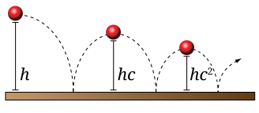
Figura 2.1 Uma bola é lançada de uma altura h. A bola atinge a altura hc após o primeiro quique e hc2 após o segundo. -
Elabore uma solução: Este problema é simples, mas é sempre útil praticar um bom planejamento. Lembre-se de que você precisa planejar as entradas e saídas, bem como o cálculo, em um programa. Como prática para problemas mais complexos, vamos dividir este problema em subproblemas menores.
- Subproblema 1
-
Obtenha os valores de h, c e k do usuário.
- Subproblema 2
-
Calcule a altura da bola após o késimo quique.
- Subproblema 3
-
Exiba a altura calculada.
A solução para cada um dos três subproblemas requer entrada e gera uma saída. A Figura 2.2 mostra como essas soluções estão conectadas. A primeira caixa nesta figura representa a solução para o subproblema 1. Ela solicita que o usuário insira os valores dos parâmetros h, c e k. Ela envia esses valores para a próxima caixa, que representa uma solução para o subproblema 2. Esta segunda caixa calcula a altura da bola após k quicadas e disponibiliza o resultado para a terceira caixa, que representa uma solução para o subproblema 3. Esta terceira caixa exibe a altura calculada.
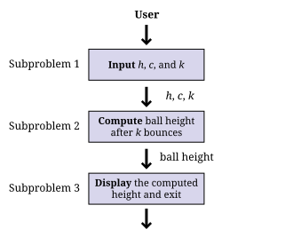
Figura 2.2 Conexões entre as soluções dos três subproblemas no problema da bola quicando.
Antes de prosseguirmos para a Etapa 3, precisamos aprender um pouco de Java. A Seção 2.3 apresenta o Java necessário para resolver este problema.
2.2.2. Obtendo um compilador Java
Antes de apresentarmos qualquer sintaxe Java, certifique-se de ter um compilador Java instalado para que você possa acompanhar o conteúdo e testar sua solução. A programação é uma habilidade prática. É impossível melhorar suas habilidades de programação sem prática. Por mais que você leia sobre programação, nada substitui a experiência prática.
Onde você pode obter um compilador Java? Felizmente, existem opções gratuitas para quase todas as plataformas. Computadores que não sejam Windows podem já ter o Java Runtime Environment (JRE) instalado, permitindo que você execute programas Java; no entanto, muitas opções de desenvolvimento Java exigem que você tenha o Java Development Kit (JDK). A Oracle pode alterar o site, mas, no momento da redação deste artigo, você pode baixar o JDK no site de downloads da Oracle. Baixe uma versão atual (por exemplo, JDK 21 ou JDK 22) da Java Platform, Standard Edition JDK e instale-a.
Depois de fazer isso, você deverá conseguir compilar programas usando o
comando javac, cujo nome é a abreviação de “Java compiler.” Para isso,
abra uma janela de terminal, também conhecida como interface de linha de comando ou
console. Para abrir o terminal no Windows, escolha a opção Windows Powershell
no Menu Iniciar. Para abrir o
terminal no macOS, selecione Terminal na pasta Utilitários. Diferentes distribuições do
Linux têm maneiras diferentes de acessar o terminal, mas os usuários do Linux geralmente
estão familiarizados com seu terminal.
Desde que o caminho esteja configurado corretamente, você deverá conseguir
abrir o terminal, navegar até um diretório que contenha arquivos com extensão
.java e compilá-los usando o comando javac. Por exemplo, para
compilar um programa chamado Exemplo.java em bytecode, você digitaria:
javac Exemplo.java
A compilação do programa cria um arquivo .class, neste caso,
Exemplo.class. Para executar o programa contido em Exemplo.class, você
digitaria:
java Exemplo
Isso inicia a JVM, que usa o compilador JIT para compilar o
bytecode dentro de Exemplo.class em código de máquina e executá-lo. Observe que
você digita apenas Exemplo, e não Exemplo.class, ao especificar o
programa a ser executado. Usando apenas esses comandos no terminal, você pode
compilar e executar programas Java. A interface de linha de comando costumava ser a
única maneira de interagir com um computador e, embora pareça primitiva à
primeira vista, a linha de comando possui um poder e uma versatilidade incríveis.
Para usar a interface de linha de comando para compilar seu próprio programa Java, você deve primeiro criar um arquivo de texto contendo seu código Java. O mundo da programação está repleto de aplicativos de editores de texto cujo único objetivo é facilitar a escrita de código. Esses editores não são como o Microsoft Word: eles não são usados para formatar o texto em parágrafos ou aplicar negrito ou itálico. O resultado é um arquivo de texto “simples”, contendo apenas caracteres sem formatação, semelhante aos arquivos criados pelo Bloco de Notas. Alguns editores de texto possuem recursos avançados úteis para programadores, como destaque de sintaxe (marcação de palavras e símbolos especiais da linguagem com cores ou fontes), autocompletar adequado à linguagem e poderosas ferramentas de localizar e substituir. Dois dos editores de texto mais populares para uso na linha de comando são os editores baseados no vi, particularmente o Vim, e os editores baseados no Emacs, particularmente o GNU Emacs.
Muitos usuários de computador, no entanto, estão acostumados a uma interface gráfica de usuário (GUI), na qual um mouse pode ser usado para interagir com janelas, botões, caixas de texto e outros elementos de uma interface de usuário moderna. Existem ambientes de programação Java que oferecem uma GUI a partir da qual o usuário pode escrever código Java, compilá-lo, executá-lo e até mesmo testá-lo e depurá-lo. Como essas ferramentas estão integradas em um único programa, esses aplicativos são chamados de ambientes de desenvolvimento integrados (IDEs).
Três dos IDEs Java mais populares são o Eclipse, o IntelliJ IDEA e o Visual Studio Code. O Eclipse é de código aberto, gratuito e está disponível aqui. O Visual Studio Code também é gratuito e possui muitas extensões disponíveis para o desenvolvimento em Java. Você pode baixá-lo aqui. Embora algumas versões do IntelliJ IDEA sejam pagas, a edição Community do IntelliJ IDEA é gratuita e está disponível aqui.
A escolha do editor de texto ou IDE gráfico que você usa fica a seu critério. Programação é um ofício, e todo artesão tem suas ferramentas favoritas. A maior parte do conteúdo deste livro é totalmente independente das ferramentas que você usa para escrever e compilar seu código. Uma exceção é o Capítulo 17, onde discutimos brevemente as ferramentas de depuração no Eclipse e no IntelliJ IDEA.
Se você escolher o Eclipse, o IntelliJ IDEA ou outro IDE complexo, talvez queira ler tutoriais online para começar. Esses IDEs geralmente exigem que o usuário crie um projeto e, em seguida, crie arquivos Java dentro dele. A ideia de um projeto contendo arquivos de código-fonte relacionados é útil e muito comum na engenharia de software, mas não faz parte do Java em si.
2.3. Sintaxe: Noções básicas de Java
Nesta seção, começamos com os programas Java mais simples e avançamos até a solução do problema da bola quicando. Sintaxe são as regras para construir programas válidos, assim como a gramática do inglês são as regras para construir frases válidas em inglês. O Java foi lançado pela primeira vez em 1995, há muito tempo na história da ciência da computação, mas foi baseado em linguagens ainda mais antigas. Sua sintaxe herda ideias do C, C++ e de outras linguagens.
Alguns críticos têm reclamado de elementos da sintaxe ou da semântica do Java. Semântica são as regras que definem o significado do código. Lembre-se de que o Java é um sistema arbitrário, projetado por seres humanos falíveis. As regras para construir programas em Java são geralmente lógicas, mas são artificiais. Aprender uma nova linguagem de programação é um processo de aceitar um conjunto de regras e descobrir maneiras de usar essas regras para alcançar seus próprios objetivos.
Existem razões por trás das regras, mas nem sempre seremos capazes de explicar essas razões neste livro. À medida que você começa a aprender Java, terá que acreditar que tal ou tal regra é necessária, mesmo que pareça inútil ou misteriosa. Com o tempo, essas regras se tornarão familiares e talvez sensatas. O mistério desaparecerá, e as regras começarão a parecer um sistema orgânico e lógico (embora imperfeito).
2.3.1. Estrutura do programa Java
A primeira regra do Java é que todo o código deve estar dentro de uma classe. Uma classe é um contêiner para blocos de código chamados métodos e também pode ser usada como um modelo para criar objetos. Falaremos um pouco mais sobre classes neste capítulo e, em seguida, nos concentraremos nelas no Capítulo 9.
Por enquanto, basta lembrar que todo programa Java tem pelo menos
uma classe. É possível colocar mais de uma classe em um arquivo, mas você
só pode ter uma classe pública de nível superior por arquivo. Uma classe pública é
aquela que pode ser usada por outras classes. Quase todas as classes neste livro
são públicas e devem ser claramente marcadas como tal. Para criar uma classe pública
chamada Exemplo, você digitaria o seguinte:
public class Exemplo {
}Algumas palavras em Java têm um significado especial e não podem ser usadas para
outros fins (como o nome que você dá a uma classe). Elas são chamadas de palavras-chave ou
palavras reservadas. A palavra-chave public marca a classe como pública. A
palavra-chave class indica que você está declarando uma classe. Todas as
palavras-chave são escritas em minúsculas em Java.
O nome Exemplo define o nome da classe. Por convenção, todos os nomes de classes
começam com letra maiúscula. As chaves ({ e }) marcam o início
e o fim do conteúdo da classe. No momento, nossa classe não contém
nada.
Este texto deve ser salvo em um arquivo chamado Exemplo.java. É
necessário que o nome da classe pública corresponda ao nome do arquivo em que ela
se encontra, incluindo as maiúsculas. Depois que Exemplo.java for salvo, você
poderá compilá-lo em bytecode. No entanto, como não há nada na classe
Exemplo, não é possível executá-la como um programa.
Um programa é uma lista de instruções, e essa lista precisa começar
em algum lugar. Para um aplicativo Java normal, esse lugar é o método main()
. Ao longo deste livro, sempre acrescentamos parênteses () para indicar
o nome de um método. Se quisermos fazer algo dentro de Exemplo,
teremos que adicionar um método main() da seguinte forma:
public class Exemplo {
public static void main(String[] args) {
}
}Agora há vários novos elementos. Como antes, public significa que outras
classes podem usar o método main(). A palavra-chave static significa que o
método está associado à classe como um todo e não a um objeto específico.
A palavra-chave void significa que o método não retorna um resultado.
A palavra main é obviamente o nome do método, mas precisa
ser escrita exatamente dessa forma (incluindo as maiúsculas) para funcionar.
Talvez a parte mais confusa seja a expressão String[] args, que
é uma lista de texto (strings) fornecida como entrada para o método main() a partir
da linha de comando. Assim como na classe, as chaves marcam o início e o fim
do conteúdo do método main(), que atualmente está vazio.
No momento, você não precisa entender nada disso. Tudo o que você precisa
saber é que, para iniciar um programa, você precisa de um método main() e sua
sintaxe é sempre a mesma do código listado acima. Se você salvar este
código, poderá compilar Exemplo.java e, em seguida, executá-lo, e… nada
acontece! É um programa Java perfeitamente válido, mas a lista de
instruções está vazia.
2.3.2. Entrada e saída da linha de comando
Uma coisa importante que um programa Java precisa fazer é se comunicar com o mundo exterior (onde vivem os humanos). Primeiro, vamos ver como imprimir dados na linha de comando e ler dados da linha de comando.
O método System.out.print()
Os métodos nos permitem realizar ações em Java. São blocos de código agrupados sob um nome, para que possamos executar o mesmo trecho de código repetidamente, mas com diferentes entradas. Abordamos o assunto com muito mais profundidade no Capítulo 8.
Um método comum para saída é System.out.print(). As entradas (geralmente
chamadas de argumentos) de um método são fornecidas entre os parênteses. Assim,
se quisermos imprimir 42 no terminal, digitamos:
System.out.print(42);Observe que o uso do método é seguido por um ponto-e-vírgula (;). Uma
linha de código executável em Java geralmente termina com um ponto-e-vírgula para
separá-la da próxima instrução. Podemos adicionar esse código à nossa
classe Exemplo, resultando em:
public class Exemplo {
public static void main(String[] args) {
System.out.print(42);
}
}Se quisermos imprimir texto, devemos fornecê-lo como argumento para
System.out.print(), entre aspas duplas ("). É necessário
colocar o texto entre aspas para que o Java saiba que se trata de texto e não do
nome de uma classe, método ou variável. O texto entre aspas duplas
é chamado de string. O programa a seguir imprime Quarenta e dois no
terminal.
public class Exemplo {
public static void main(String[] args) {
System.out.print("Quarenta e dois");
}
}Imprimir uma coisa é ótimo, mas os programas geralmente são compostos por muitas instruções. Considere o seguinte programa:
public class Exemplo {
public static void main(String[] args) {
System.out.print(2);
System.out.print(4);
System.out.print(6);
System.out.print(8);
}
}Como você pode ver, cada linha executável termina com um ponto-e-vírgula, e elas são
executadas em sequência. Este código exibe 2, 4, 6 e 8 na tela.
No entanto, não instruímos o programa a mover o cursor para uma nova linha em
nenhum momento, portanto a saída na tela é 2468, o que parece um
único número. Se quisermos que eles fiquem em linhas separadas, podemos conseguir
isso com o método System.out.println(), que passa para uma nova linha
após concluir a saída.
public class Exemplo {
public static void main(String[] args) {
System.out.println(2);
System.out.println(4);
System.out.println(6);
System.out.println(8);
}
}Essa alteração faz com que a saída fique da seguinte forma:
2 4 6 8
Em Java, é possível inserir operações matemáticas praticamente em qualquer lugar. Considere
o programa a seguir, que utiliza o operador +.
public class Exemplo {
public static void main(String[] args) {
System.out.print(35 + 7);
}
}Este código exibe 42 no terminal, assim como em nosso exemplo anterior,
pois realiza a soma antes de passar o resultado para
System.out.print() para saída.
A classe Scanner
Queremos também poder ler entradas do usuário. Para entradas da linha de comando,
precisamos criar um objeto Scanner. Esse objeto é usado para ler
dados do teclado. O programa a seguir solicita ao usuário um
número inteiro, lê um número inteiro do teclado e, em seguida, exibe o
valor multiplicado por 2.
import java.util.Scanner;
public class Exemplo {
public static void main(String[] args) {
Scanner in;
in = new Scanner(System.in);
System.out.print("Digite um número inteiro: ");
int valor;
valor = in.nextInt();
System.out.print("O dobro desse número é: ");
System.out.println(valor * 2);
}
}Este programa apresenta vários elementos novos. Primeiro, observe que ele começa
com
import java.util.Scanner;. Essa linha de código instrui o compilador a usar
a classe Scanner, que está no pacote java.util. Um pacote é uma
forma de organizar um grupo de classes relacionadas. Outra pessoa escreveu a
classe Scanner e todas as outras classes no pacote java.util,
mas, ao importar o pacote, podemos usar o código delas em nosso
programa.
Em seguida, pule para a primeira linha do método main(). O código
Scanner in; declara uma variável chamada in com o tipo Scanner.
Uma variável pode conter um valor. A variável tem um tipo específico, ou seja,
o tipo de dados que o valor pode ser. Neste caso, o tipo é
Scanner, o que significa que a variável in contém um objeto Scanner.
Declarar uma variável cria uma caixa que pode conter elementos do tipo especificado.
Para declarar uma variável, primeiro coloque o tipo que você deseja que ela tenha,
depois coloque seu identificador ou nome e, por fim, coloque um ponto-e-vírgula. Optamos por
chamar a variável de in, mas poderíamos tê-la chamado de input ou até mesmo
marmelada, se quiséssemos. É sempre uma boa prática nomear sua
variável de forma que fique claro o que ela contém.
A próxima linha atribui um valor a in. O operador de atribuição (=)
parece um sinal de igual da matemática, mas pense nele como uma seta que
aponta para a esquerda. O que quer que esteja do lado direito do operador de atribuição
será armazenado na variável do lado esquerdo. A variável in era
uma caixa inicialmente vazia que poderia conter um objeto Scanner. O código
new Scanner(System.in) cria um objeto Scanner totalmente novo com base em
System.in, o que significa que a entrada virá do teclado. A
atribuição armazenou esse objeto na variável in. O fato de
System.in ter sido usado não tem nada a ver com o fato de nossa variável
ter sido nomeada in. Mais uma vez, não espere entender todos os detalhes logo
de cara. Sempre que precisar ler dados do teclado, você precisará
dessas duas linhas de código, que você deve ser capaz de copiar literalmente. É
possível tanto declarar uma variável quanto atribuir seu valor em uma única linha.
Em vez da versão de duas linhas, a maioria dos programadores digitaria:
Scanner in = new Scanner(System.in);Da mesma forma, a linha int value; declara uma variável para armazenar tipos inteiros.
A linha seguinte usa o objeto in para ler um inteiro do
usuário, chamando o método nextInt(). Se quiséssemos ler um valor de ponto flutuante,
teríamos chamado o método nextDouble(). Se
quiséssemos ler algum texto, teríamos chamado o método next().
Infelizmente, essas diferenças significam que precisamos saber que tipo de
dados o usuário irá inserir. Se o usuário inserir um tipo inesperado,
nosso programa poderá apresentar um erro. Como antes, poderíamos combinar a
declaração e a atribuição em uma única linha:
int value = in.nextInt();As duas últimas linhas geram a saída do nosso programa. A primeira imprime
O dobro desse número é: no terminal. A segunda imprime um
valor que é o dobro do que o usuário inseriu. Os dois exemplos a seguir
ilustram como o Scanner pode ser usado para ler entradas enquanto se resolvem
problemas. O primeiro exemplo mostra como esses elementos podem ser aplicados ao
subproblema 1 do problema da bola quicando, e o segundo exemplo
apresenta e resolve um novo problema.
O subproblema 1 exige que obtenhamos a altura, o coeficiente de restituição e o número de saltos do usuário. Código 2.1 mostra um programa Java para resolver este subproblema.
import java.util.*; (1)
public class GetInputCLI { (2)
public static void main(String[] args) { (3)
// Create an object named in for input
Scanner in = new Scanner(System.in); (4)
// Declare variables to hold input data
double height, coefficient; (5)
int bounces;
// Prompt the user and read data from the keyboard
System.out.println("Bouncing Ball: Subproblem 1"); (6)
System.out.print("Enter the height: ");
height = in.nextDouble(); (7)
System.out.print("Enter restitution coefficient: "); (8)
coefficient = in.nextDouble();
System.out.print("Enter the number of bounces: ");
bounces = in.nextInt();
}
}| 1 | Ao contrário do nosso exemplo anterior, a primeira linha do GetInputCLI.java é
import java.util.*;. Em vez de importar apenas a classe Scanner,
essa linha importa todas as classes do pacote java.util. O
asterisco (*) é conhecido como curinga. A notação de curinga é
conveniente se você precisar importar várias classes de um pacote ou se
não souber antecipadamente os nomes de todas as classes de que precisará. |
| 2 | A declaração de classe nomeia a classe GetInputCLI. Colocamos um CLI no final do nome para indicar que
ela usa a interface de linha de comando, em contraste com a versão GUI que mostraremos a seguir. |
| 3 | Dentro da declaração da classe está a
definição do método main(), indicando onde o programa começa. O texto que vem
após as barras duplas (//) é chamado de comentário. Os comentários nos permitem
tornar nosso código mais legível para humanos, mas o
compilador os ignora. |
| 4 | Após os comentários, declaramos e instanciamos uma variável Scanner chamada in para leitura do teclado. |
| 5 | Em seguida, declaramos duas variáveis double
(para armazenar números de ponto flutuante de precisão dupla) e uma
variável int (para armazenar um valor inteiro). |
| 6 | Imprimimos o nome do problema e, em seguida, imprimimos "Digite a altura: ". |
| 7 | A linha height = in.nextDouble(); tenta ler a altura informada pelo usuário.
Ela aguarda até que o usuário pressione Enter antes de ler o valor e passar para a próxima linha. |
| 8 | As últimas quatro linhas do programa solicitam e leem o coeficiente de restituição e, em seguida, o número de saltos. Se você compilar e executar este programa, a execução deverá corresponder aos passos descritos. Observe que ele apenas lê os valores necessários para resolver o problema. Não adicionamos o código para calcular a resposta nem para exibi-la. |
Vamos escrever um programa que receba como entrada a velocidade de um objeto em movimento e o tempo durante o qual ele esteve em movimento. O objetivo é calcular e exibir a distância total percorrida. Podemos dividir esse problema nos seguintes três subproblemas.
- Subproblema 1
-
Receber a velocidade e a duração.
- Subproblema 2
-
Calcular a distância percorrida.
- Subproblema 3
-
Exibir a distância calculada.
O Código 2.2 resolve cada um desses subproblemas em ordem, usando as ferramentas de entrada e saída da linha de comando que acabamos de discutir.
import java.util.*; (1)
public class Distance {
public static void main(String[] args) {
// Create an object named in for input
Scanner in = new Scanner(System.in); (2)
double speed, time;
double distance; // Distance to be computed
// Solution to subproblem 1: Read input
// Prompt the user and get speed and time
System.out.print("Enter the speed: "); (3)
speed = in.nextDouble();
System.out.print("Enter the time: ");
time = in.nextDouble();
// Solution to subproblem 2: Compute distance
distance = speed*time; (4)
// Solution to subproblem 3: Display output
System.out.print("Distance traveled: "); (5)
System.out.print( distance );
System.out.println(" miles.");
}
}| 1 | O programa começa com instruções de importação, a definição da classe e a
definição do método main(). |
| 2 | No início do método main(),
temos o código para declarar e inicializar uma variável do tipo
Scanner chamada in. Também declaramos variáveis do tipo double para armazenar
a velocidade e o tempo inseridos, bem como a distância resultante. |
| 3 | Começamos a resolver o subproblema 1, solicitando ao usuário a velocidade e o tempo e usando nosso objeto Scanner para lê-los. Como ambos são valores de ponto flutuante do tipo double, usamos o método nextDouble() para a entrada. |
| 4 | Calculamos a distância percorrida multiplicando velocidade por tempo e armazenando o resultado em
distância. |
| 5 | As últimas três linhas do método main() resolvem o subproblema 3, exibindo "Distância percorrida: ", a distância calculada e " milhas.". Se você executar o programa, todos os três itens serão impressos na mesma linha no terminal. |
2.3.3. Entrada e saída via GUI
Se você está acostumado com programas baseados em GUI, talvez se pergunte como fazer entrada e saída com uma GUI em vez de na linha de comando. As GUIs podem se tornar complexas, mas neste capítulo apresentamos uma maneira simples de fazer entrada e saída via GUI e a aprofundamos ainda mais no Capítulo 7. Em seguida, abordamos as GUIs com muito mais profundidade no Capítulo 16.
Uma ferramenta limitada para exibir resultados e receber entradas por meio de uma interface gráfica (GUI) é a
classe JOptionPane. Essa classe possui um método complexo chamado
showMessageDialog() que abre uma pequena caixa de diálogo para exibir uma
mensagem ao usuário. Se quisermos criar o equivalente ao
programa de linha de comando que exibe o número 42, o código seria o
seguinte.
import javax.swing.JOptionPane; (1)
public class Exemplo {
public static void main(String[] args) {
JOptionPane.showMessageDialog(null, "42", "Exemplo de Saída", (2)
JOptionPane.INFORMATION_MESSAGE);
}
}Assim como o Scanner, precisamos importar o JOptionPane, conforme mostrado acima, para
poder usá-lo.
O método showMessageDialog() recebe vários argumentos para
indicar o que deve fazer. Para nossos propósitos, o primeiro é sempre o
literal especial de Java null, que representa um valor vazio. O próximo
é a mensagem que você deseja exibir, mas ela deve ser texto. É por isso que
"42" aparece entre aspas. O terceiro argumento é o título
que aparece na parte superior da caixa de diálogo. O argumento final fornece
informações sobre como a caixa de diálogo deve ser apresentada.
JOptionPane.INFORMATION_MESSAGE é um valor de sinalizador que especifica que
a caixa de diálogo está fornecendo informações (em vez de um aviso ou uma pergunta),
fazendo com que um ícone apropriado e específico do sistema seja exibido na
caixa de diálogo.
A Figura 2.3 mostra como a GUI resultante pode ficar.
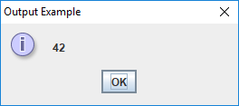
showMessageDialog() para saída de dados.Uma maneira de fazer a entrada de dados com uma GUI é usar o método showInputDialog(),
que também está na classe JOptionPane. O método showInputDialog()
retorna um valor. Isso significa que ele devolve uma resposta que
você pode armazenar em uma variável, colocando a chamada do método no lado direito
de uma instrução de atribuição. Fora isso, é praticamente igual
ao showMessageDialog(). O programa a seguir solicita ao usuário que digite sua
palavra favorita usando o método showInputDialog() e, em seguida, exibe
essa palavra novamente usando o método showMessageDialog().
import javax.swing.JOptionPane;
public class Example {
public static void main(String[] args) {
String message = "Qual é a sua palavra favorita?";
String title = "Exemplo de Entrada";
String word =
JOptionPane.showInputDialog(null, message, title, JOptionPane.QUESTION_MESSAGE);
JOptionPane.showMessageDialog(null, word, title, JOptionPane.INFORMATION_MESSAGE);
}
}Observe que tudo o que o usuário digitar será armazenado em word. Por fim,
a última linha do programa exibe essa informação com
showMessageDialog(). A Figura 2.4 mostra a
GUI enquanto o usuário está inserindo a entrada.
showInputDialog() para entrada de dados.Lembre-se de que o valor retornado pelo método showInputDialog() é
sempre texto; ou seja, ele sempre é do tipo String. Embora haja
muitas coisas interessantes que você pode fazer com um valor String, não é possível realizar
operações aritméticas normais, como se faz com um inteiro ou um número de ponto flutuante.
No entanto, existem maneiras de converter uma representação String de
um número no próprio número. Se você tiver um String que represente um
inteiro, use o método Integer.parseInt() para convertê-lo. Se você
tiver um String que represente um número de ponto flutuante, use o
método Double.parseDouble() para convertê-lo. O trecho de
código a seguir ilustra essas questões.
// Não é possível multiplicar um texto por um número inteiro
int x = "41" * 3;
// Converte corretamente o texto "23" no número inteiro 23
int y = Integer.parseInt("23");
// Converte corretamente o texto "3.14159" em 3.14159
double z = Double.parseDouble("3.14159");
// Faz com que o programa trave
int a = Integer.parseInt("Vinte e três");
// Faz com que o programa trave
double b = Double.parseDouble("pi");Você pode se perguntar por que o computador não é inteligente o suficiente para saber que "23"
significa 23. Lembre-se de que o computador não tem inteligência. Se algo estiver
marcado como texto, ele não sabe que pode interpretá-lo como um número.
O tipo de dados de algo depende de seu tipo, que não
muda. Discutiremos os tipos mais detalhadamente no Capítulo 3.
O próximo exemplo usa esses dois métodos de conversão de tipos com métodos
do JOptionPane em uma solução baseada em GUI para o subproblema 1 do
problema da bola quicando.
Podemos alterar a solução apresentada no Código 2.1 para
usar as ferramentas de entrada baseadas em GUI em JOptionPane. O
Código 2.3 é o programa Java equivalente baseado em GUI.
import javax.swing.*;
public class GetInputGUI {
public static void main(String[] args) {
String title = "Bouncing Ball: Subproblem 1";
// Declare variables to hold input data
double height, coefficient;
int bounces;
// Prompt the user, get data, and convert it
String response = JOptionPane.showInputDialog(null, (1)
"Enter the height: ", title, JOptionPane.QUESTION_MESSAGE);
height = Double.parseDouble(response); (2)
response = JOptionPane.showInputDialog(null, (3)
"Enter restitution coefficient: ", title, JOptionPane.QUESTION_MESSAGE);
coefficient = Double.parseDouble(response);
response = JOptionPane.showInputDialog(null,
"Enter the number of bounces: ", title,
JOptionPane.QUESTION_MESSAGE);
bounces = Integer.parseInt(response);
}
}| 1 | Neste ponto, o código usa o método showInputDialog() para ler uma versão String da altura fornecida pelo usuário. |
| 2 | Na linha seguinte, precisamos
converter essa versão String na versão double que armazenamos na
variável height. |
| 3 | As quatro linhas seguintes leem o coeficiente de restituição e o número de saltos e os convertem em seus tipos numéricos apropriados. |
2.3.4. Algumas operações
Matemática básica
Para tornar nosso código útil, podemos realizar operações em valores e
variáveis. Por exemplo, usamos a expressão 35 + 7 como argumento
do método System.out.print() para exibir 42 na tela. Podemos
usar os operadores de adição (+), subtração (-), multiplicação (*) e divisão (/)
em números para resolver problemas aritméticos. Esses operadores funcionam
da maneira que você esperaria (exceto a divisão que tem algumas surpresas).
Abordaremos esses e outros operadores mais detalhadamente no
Capítulo 3. Aqui estão exemplos desses
quatro operadores usados com números inteiros e de ponto flutuante.
int a = 2 + 3; // a terá o valor 5
int b = 2 - 3; // b terá o valor -1
int c = 2 * 3; // c terá o valor 6
int d = 2 / 3; // d terá o valor 0 (explicado mais adiante)
double x = 1.6 + 3.2; // x terá o valor 4.8
double y = 1.6 - 3.2; // y terá o valor -1.6
double z = 1.6 * 3.2; // z terá o valor 5.12
double w = 1.6 / 3.2; // w terá o valor 0.5Outras operações
Essas operações básicas podem combinar valores e variáveis. Como veremos
mais adiante, elas podem ser arbitrariamente complexas, sendo que a ordem das
operações determina o resultado final. No entanto, também precisamos de maneiras
de realizar outras operações matemáticas, como elevar um número a
uma potência ou calcular sua raiz quadrada. A classe Math possui métodos que
executam essas e outras funções. Para elevar um número a uma potência, chamamos
Math.pow() com dois argumentos: primeiro a base e depois o expoente.
Para calcular uma raiz quadrada, passamos um número para o método Math.sqrt().
// Eleva 3.0 à potência de 2.5, aproximadamente 15.588457
double p = Math.pow(3.0, 2.5);
// Calcula a raiz quadrada de 2.0, aproximadamente 1.4142136
double q = Math.sqrt(2.0);Calculamos a altura final da bola no subproblema 2 do problema da bola quicando. Para isso, precisamos multiplicar a altura pelo
coeficiente de restituição elevado à potência do número de quicadas.
O programa a seguir faz isso, usando o método Math.pow().
public class ComputeHeight {
public static void main(String[] args) {
// Use dummy values to test subproblem 2
double height = 15, coefficient = 0.3;
int bounces = 10;
// Compute height after bounces
double bounceHeight = height*Math.pow(coefficient,bounces);
System.out.println(bounceHeight); // For testing
}
}O Código 2.4 concentra-se apenas no subproblema 2, mas,
se quisermos testá-lo, precisamos fornecer alguns valores fictícios para height,
coefficient e bounces, já que esses valores são lidos pela solução do
subproblema 1. Da mesma forma, a instrução de saída na última linha do
método main() serve apenas para fins de teste. A solução completa tem
uma saída mais complexa.
Concatenando valores String
Assim como podemos somar números, também podemos “juntar” trechos de texto
. Em Java, o texto tem o tipo String. Se você usar o operador +
entre dois valores ou variáveis do tipo String, o resultado é
uma nova String que é a concatenação dos dois valores String
anteriores, o que significa que o resultado são os dois trechos de texto colados
juntos, um após o outro. A concatenação não altera os valores String
que você está concatenando.
Os resultados podem ser inválidos ou, pelo menos, inesperados se você misturar tipos (String, int,
double) ao realizar operações matemáticas. No entanto, sinta-se
à vontade para concatenar valores String com qualquer outro tipo usando o operador +
. Ao fazer isso, o outro tipo é automaticamente convertido em
uma String. Esse comportamento é útil, pois qualquer String é fácil de
exibir. Aqui estão alguns exemplos de concatenação de String.
String word1 = "tomato"; String word2 = "sauce"; String text1 = word1 + word2; // text1 contém "tomatosauce" String text2 = word1 + " " + word2; // text2 contém "molho de tomate" String text3 = "batata " + word1; // text3 contém "batata tomate" String text4 = 5 + " " + word1 + ‘es’; // text4 contém "5 tomates"
Com a concatenação de String, o subproblema 3 fica um pouco mais fácil. Nós
concatenamos os resultados com uma mensagem apropriada e, em seguida,
usamos o método System.out.println() para a saída.
public class DisplayHeightCLI {
public static void main(String[] args) {
// Use dummy values to test subproblem 3
int bounces = 10;
double bounceHeight = 2.0;
String message = "After " + bounces +
" bounces the height of the ball is: " + bounceHeight + " feet";
System.out.println(message);
}
}Código 2.5 concentra-se apenas no subproblema 3,
mas, se quisermos testá-lo, precisamos fornecer valores fictícios para bounces
e bounceHeight, já que estes são gerados pela solução dos subproblemas anteriores
.
A mesma concatenação pode ser usada para a saída da GUI também. A única
diferença é o uso de
JOptionPane.showMessageDialog() em vez de System.out.println().
import javax.swing.*;
public class DisplayHeightGUI {
public static void main(String[] args) {
String title = "Bouncing Ball: Subproblem 3";
// Use dummy values to test subproblem 3
int bounces = 10;
double bounceHeight = 2.0;
String message = "After " + bounces +
" bounces the height of the ball is: " + bounceHeight + " feet";
JOptionPane.showMessageDialog(null, message, title,
JOptionPane.INFORMATION_MESSAGE);
}
}2.3.5. Formatação em Java
Escrever um bom código Java tem algumas semelhanças com escrever de forma eficaz em português. Existem regras que você precisa seguir para que o texto faça sentido, mas também há diretrizes que você deve seguir para tornar seu código mais fácil de ler, tanto para você quanto para os demais.
Nomeação de variáveis e classes
Os programas Java estão repletos de variáveis, e cada variável deve ser nomeada de forma a refletir seu conteúdo. Os nomes de variáveis são essencialmente ilimitados em comprimento (embora a JVM que você usa possa limitar esse comprimento a milhares de caracteres). Um nome de variável extremamente longo pode ser difícil de ler, mas abreviações podem ser piores. Você quer que o significado do seu código seja óbvio para os outros e para você mesmo quando voltar dias ou semanas depois.
Imagine que você está escrevendo um programa que vende frutas. Considere os seguintes nomes para uma variável que controla o número de maçãs.
| Nome | Atributos |
|---|---|
|
Muito curto, não fornece nenhuma informação útil |
|
Muito curto, vago, poderia significar aplicativos ou aperitivos |
|
Muito curto, vago, poderia significar centro |
|
Nada mal, mas contando o quê? |
|
Muito longo sem motivo válido |
|
Muito claro |
|
Conciso e claro, a menos que haja várias quantidades de maçãs
como |
A matemática está repleta de variáveis de uma letra, em parte porque há
uma tradição de escrever matemática em quadros negros e papel. A clareza é
mais importante do que a brevidade com variáveis em programas de computador. Algumas
variáveis precisam de mais de uma palavra para serem descritivas. Nesse caso,
os programadores de Java são incentivados a seguir o camel case. No camel
case, variáveis e métodos com várias palavras começam com uma letra minúscula e
em seguida usam uma letra maiúscula para marcar o início de cada nova palavra. É
chamado de camel case porque as letras maiúsculas lembram
as corcovas de um camelo. Exemplos incluem ultimoValor, tabelaDeSimbolos e
fazerSanduicheDePresunto().
Por convenção, os nomes de classes devem sempre começar com uma letra maiúscula,
mas também usam camel case, marcando o início de
cada nova palavra com uma letra maiúscula. Exemplos incluem ListaEncadeada, PianoJazz e
GuerraNuclearGlobal.
Outra convenção é que as constantes, variáveis cujos valores nunca
mudam, têm nomes totalmente em maiúsculas, separados por sublinhados. Exemplos
incluem PI, LADOS_TRIANGULO e
CONSTANTE_GRAVITACIONAL_UNIVERSAL.
Não são permitidos espaços nos nomes de variáveis, métodos ou classes. Lembre-se de que
um nome em Java é chamado de identificador. As regras para identificadores
especificam que eles devem começar com uma letra maiúscula ou minúscula (ou
um sublinhado) e que os caracteres restantes devem ser letras,
sublinhados ou dígitos numéricos. Assim, Tupac e
o absurdo _5 são identificadores válidos, mas Motley Crue e
2Pac não são.
Em Java, letras podem significar mais do que apenas as letras latinas de A a Z.
Java oferece suporte a muitos idiomas do mundo,
permitindo que identificadores contenham caracteres do chinês, tailandês,
devanágari, cirílico e outros alfabetos. Por exemplo, m\u00F6tleyCr\u00FCe
é um nome de variável válido porque \u00F6 é uma forma de codificar ö e
\u00FC é uma forma de codificar ü. Em alguns sistemas, esse nome de variável pode
ser renderizado como mötleyCrüe, mas o compilador pode gerar um erro se você digitar esses caracteres diretamente. Em resumo, o Java suporta uma enorme variedade de
caracteres, mas fazer com que esse suporte funcione para você às vezes é mais desafiador.
A Seção 3.3.2.10 discute a codificação de caracteres mais detalhadamente.
Lembre-se de que palavras-chave também não podem ser usadas como identificadores. Por exemplo,
public, static e class são todas palavras-chave em Java e nunca podem
ser nomes de classes, variáveis ou métodos.
Espaços em branco
Embora não seja permitido usar espaços em um identificador Java, você geralmente pode usar espaços em branco (espaços, tabulações e novas linhas) onde quiser. O Java ignora espaços em branco extras. Considere a seguinte linha de código.
int x = y + 5;É equivalente à seguinte.
int x=y+5;Optamos por digitar nosso exemplo anterior de um programa que gera saída da seguinte forma .
public class Exemplo{
public static void main(String[] args) {
System.out.print(42);
}
}No entanto, poderíamos ter sido mais caóticos com o uso de espaços em branco.
public
class Exemplo{
public
static void
main (String [
] args
) {
System.
out
.print(42
) ; } }Ou poderíamos ter usado quase nenhum espaço em branco.
public class Exemplo{public static void main(String[]args){System.out.print(42);}}Esses três programas são idênticos aos olhos do compilador Java, mas o primeiro é mais fácil de ler para um ser humano. Você deve usar espaços em branco para aumentar a legibilidade. Não adicione espaços em branco em excesso com muitas linhas em branco entre seções de código. Por outro lado, não use muito poucos e amontoe o código. Sempre que o código estiver aninhado dentro de um conjunto de chaves, recue o conteúdo para que seja fácil ver a relação hierárquica.
O estilo que apresentamos neste livro coloca a chave de abertura ({) na linha
que inicia um bloco de código. Outro estilo popular coloca a chave de abertura na
linha seguinte. Aqui está o mesmo programa de exemplo formatado nesse estilo:
public class Exemplo
{
public static void main(String[] args)
{
System.out.print(42);
}
}Há pessoas (incluindo alguns autores deste livro) que preferem esse estilo porque é mais fácil ver onde os blocos de código começam e terminam. No entanto, o outro estilo ocupa menos espaço, por isso o usamos em todo o livro. Você pode fazer suas próprias escolhas quanto ao estilo, mas seja consistente! Se você trabalha para uma empresa de desenvolvimento de software, ela pode ter padrões rígidos para formatação de código.
Comentários
Como mencionamos antes, você pode deixar comentários em seu código sempre que
quiser que alguém que esteja lendo o código tenha informações adicionais. Java tem três
tipos diferentes de comentários. Descrevemos comentários de linha única, que
começam com // e continuam até o final da linha.
Se você tiver um grande bloco de texto que deseja usar como comentário, pode criar
um comentário em bloco, que começa com /* e continua até chegar a
*/.
Além de deixar mensagens para outros programadores, você também pode “comentar fora” o código existente. Ao colocar código Java dentro de um comentário, ele não afeta mais a execução do programa. Essa prática é comum quando os programadores querem remover ou alterar algum código, mas relutam em excluí-lo até que a nova versão do código tenha sido testada. Não abuse da prática de comentar fora o código!
Programas grandes tornam-se difíceis de navegar quando estão repletos de muitos trechos de código comentados.
O terceiro tipo de comentário é chamado de comentário de documentação e
superficialmente se parece muito com um comentário em bloco. Um comentário de documentação
começa com /** e termina com */. Esses comentários devem
aparecer no início de classes e métodos e explicar para que servem
e como usá-los. Uma ferramenta chamada javadoc é usada para percorrer
os comentários de documentação e gerar um arquivo HTML que os usuários podem
ler para entender como usar o código. Essa ferramenta é um recurso
que contribuiu enormemente para a popularidade do Java, mantendo suas
bibliotecas bem documentadas e fáceis de usar. No entanto, não
abordamos os comentários de documentação em profundidade neste livro.
Aqui está nosso programa de saída de exemplo, com muitos comentários.
/**
* A classe Exemplo imprime o número 42 na tela.
* Ela contém um método main() executável.
*/
public class Exemplo {
/*
* O método main() foi atualizado pela última vez por Barry Wittman.
*/
public static void main(String[] args) {
System.out.print(42); // Resposta para tudo
}
}Comentários são uma ferramenta maravilhosa, mas um código limpo com nomes de variáveis significativos e uso cuidadoso de espaços em branco não requer muitos comentários. Nunca hesite em comentar, mas sempre se pergunte se há uma maneira de escrever o código de forma tão clara que um comentário seja desnecessário.
2.4. Solução: Como resolver problemas
As etapas de resolução de problemas apresentadas na Seção 2.2 são válidas, mas dependem da capacidade de implementar sua solução planejada em Java. Neste capítulo, abordamos muito pouco sobre Java para esperar resolver todos os problemas que podem ser resolvidos com um computador. No entanto, podemos mostrar a solução para o problema da bola que quica e explicar como nossa solução funciona ao longo do ciclo de vida do desenvolvimento de software.
2.4.1. Solução da bola quicando (versão de linha de comando)
No Exemplo 2.2, nos certificamos de que compreendíamos o problema e, em seguida, elaboramos um plano em três partes para ler a entrada, calcular a altura do salto e, então, exibi-la.
No Código 2.1, implementamos o subproblema 1, lendo a entrada da linha de comando. Em Código 2.4, implementamos o subproblema 2, calculando a altura do salto final. No Código 2.5, implementamos o subproblema 3, exibindo a altura que foi calculada. No final, o programa integrado, a parte do código que corresponde à resolução do subproblema 1 está abaixo.
import java.util.*;
public class BouncingBallCLI {
public static void main(String[] args) {
// Solution to subproblem 1
// Create an object named in for input
Scanner in = new Scanner(System.in);
// Declare variables to hold input data
double height, coefficient;
int bounces;
System.out.println("Bouncing Ball");
// Prompt the user and read data from the keyboard
System.out.println("Bouncing Ball: Subproblem 1");
System.out.print("Enter the height: ");
height = in.nextDouble();
System.out.print("Enter restitution coefficient: ");
coefficient = in.nextDouble();
System.out.print("Enter the number of bounces: ");
bounces = in.nextInt();Com as importações, a declaração de classe e o método main() configurados pela
solução do subproblema 1, a solução do subproblema 2 é muito curta.
// Solution to subproblem 2
double bounceHeight = height*Math.pow(coefficient,bounces);A solução para o subproblema 3 e as chaves que marcam o fim do
método main() e, em seguida, o fim da classe ocupam apenas mais algumas
linhas.
// Solution to subproblem 3
String message = "After " + bounces +
" bounces the height of the ball is: " + bounceHeight + " feet";
System.out.println(message);
}
}2.4.2. Solução da bola quicando (versão GUI)
Se você preferir uma interface gráfica (GUI) para entradas e saídas, podemos integrar as versões com GUI das soluções dos subproblemas 1, 2 e 3 de Código 2.1, Código 2.4 e Código 2.6. O programa final está abaixo. Ele difere da versão de linha de comando apenas em alguns detalhes.
import javax.swing.*;
public class BouncingBallGUI {
public static void main(String [] args) {
// Solution to sub-problem 1
String title = "Bouncing Ball";
double height, coefficient;
int bounces;
// Prompt the user, get data, and convert it
String response = JOptionPane.showInputDialog(null,
"Enter the height: ", title, JOptionPane.QUESTION_MESSAGE);
height = Double.parseDouble(response);
response = JOptionPane.showInputDialog(null,
"Enter restitution coefficient: ", title, JOptionPane.QUESTION_MESSAGE);
coefficient = Double.parseDouble(response);
response = JOptionPane.showInputDialog(null,
"Enter the number of bounces: ", title, JOptionPane.QUESTION_MESSAGE);
bounces = Integer.parseInt(response);
// Solution to sub-problem 2
double bounceHeight = height*Math.pow(coefficient,bounces);
// Solution to sub-problem 3
String message = "After " + bounces +
" bounces the height of the ball is: " + bounceHeight + " feet";
JOptionPane.showMessageDialog(null,
message, title, JOptionPane.INFORMATION_MESSAGE);
}
}2.4.3. Testes e manutenção
Testes e manutenção são elementos-chave do ciclo de vida da engenharia de software e frequentemente exigem mais tempo e recursos do que o restante. No entanto, apenas os discutiremos brevemente aqui.
O problema da bola quicando não é complexo. Há algumas coisas óbvias a serem testadas. Devemos escolher um caso de teste "normal", como uma altura de 15 unidades, um coeficiente de restituição de 0,3 e 10 saltos. A altura deve ser 15 · 0,310 = 0,0000885735. O resultado calculado pelo nosso programa deve ser o mesmo, ignorando erros de ponto flutuante . Também podemos verificar alguns casos de teste de limite. Se o coeficiente de restituição for 1, a bola deve quicar de volta perfeitamente, atingindo qualquer altura que inserirmos. Se o coeficiente de restituição for 0, a bola não quica de forma alguma, e a altura final deve ser 0.
Nosso código não leva em conta usuários que inserem dados mal formatados, como
dois em vez de 2. Da mesma forma, nosso código não detecta valores inválidos
, como um coeficiente de restituição maior que 1 ou um número negativo
de saltos. Um programa de nível industrial deveria fazer isso. Discutiremos os testes
mais detalhadamente no Capítulo 17.
Assim como na maioria dos problemas que discutimos neste livro, questões de manutenção não se aplicam: não temos uma base de clientes para manter satisfeita. Mesmo assim, é um bom exercício mental imaginar uma versão em grande escala deste programa capaz de resolver muitos tipos diferentes de problemas de física. Quem provavelmente seriam seus clientes? Que tipos de bugs provavelmente surgiriam em um programa como esse? Como você forneceria correções de bugs e desenvolveria novos recursos?
2.5. Concorrência: Resolvendo problemas em paralelo
2.5.1. Paralelismo e concorrência
Os termos paralelismo e concorrência são frequentemente confundidos e às vezes usados de forma intercambiável. O paralelismo, ou computação paralela, ocorre quando vários cálculos são realizados ao mesmo tempo. A concorrência ocorre quando vários cálculos podem interagir entre si. A distinção é sutil, já que muitos cálculos paralelos são concorrentes e vice-versa.
Um exemplo de paralelismo sem concorrência são dois programas separados em execução em um sistema multicore. Ambos estão realizando cálculos ao mesmo tempo, mas, na maior parte do tempo, não estão interagindo entre si. Problemas de concorrência podem surgir se esses programas tentarem acessar um recurso compartilhado, como um arquivo, ao mesmo tempo.
Um exemplo de concorrência sem paralelismo é um programa com múltiplas linhas de execução rodando em um sistema de núcleo único. Essas linhas não serão executadas simultaneamente. No entanto, o sistema operacional ou o sistema de tempo de execução intercalará a execução dessas linhas, alternando entre elas sempre que desejar. Como essas linhas podem compartilhar memória, elas ainda podem interagir entre si de maneiras complexas e frequentemente imprevisíveis.
Com computadores multicore, buscamos um paralelismo bom e eficaz, processando muitas coisas ao mesmo tempo. Infelizmente, a busca pelo paralelismo muitas vezes implica lidar com a concorrência e gerenciar cuidadosamente as interações entre as threads.
2.5.2. Programação sequencial versus programação concorrente
Imagine que os malvados alienígenas Lellarap estão atacando a Terra. Eles enviaram uma extensa lista de exigências aos líderes mundiais, mas apenas algumas pessoas, incluindo você, dominam a língua deles, o Lellarapiano. Para salvar o povo da Terra, é imperativo que você traduza as exigências o mais rápido possível, para que os líderes mundiais possam escolher um curso de ação. Se você fizer isso sozinho, conforme ilustrado na Figura 2.5(a), os Lellaraps podem atacar antes que você termine.
Para concluir o trabalho mais rapidamente, você contrata um segundo tradutor cujas habilidades em Lellarap são tão boas quanto as suas. Conforme mostrado na Figura 2.5(b), você divide o documento em duas partes quase iguais, o Documento A e o Documento B. Você traduz o Documento A, e seu colega traduz o Documento B. Quando ambas as traduções estiverem concluídas, você mescla as duas, verifica a tradução e envia o resultado aos líderes mundiais.
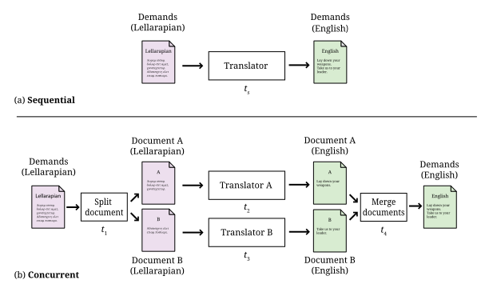
Traduzir as demandas sozinho é uma abordagem sequencial. Neste contexto, sequencial significa não paralelo. Traduzir as demandas com duas pessoas é uma abordagem paralela. É concorrente também porque você tem que decidir como dividir o documento e como juntá-lo novamente .
Se você escrevesse um programa de computador para traduzir as demandas usando a abordagem sequencial, produziria um programa sequencial. Se você escrevesse um programa de computador que usasse a abordagem mostrada na Figura 2.5(b), seria um programa concorrente. Um programa concorrente também é chamado de programa multithread . Threads são sequências de código que podem ser executadas independentemente e acessar a memória umas das outras. Imagine que você é uma thread de execução e seu colega é outra. Assim, a abordagem concorrente terá pelo menos duas threads. Pode ter mais se threads separadas forem usados para dividir o documento ou juntá-lo novamente.
Como estamos interessados no tempo que o processo leva, rotulamos tarefas diferentes na Figura 2.5 com seus tempos de execução. Seja ts o tempo que uma pessoa leva para concluir a tradução. Os tempos t1 a t4 marcam os tempos necessários para concluir as tarefas 1 a 4, indicadas na Figura 2.5(b).
2.5.3. Tipos de concorrência
Um programa sequencial, como o tradutor único, utiliza um único processador em um sistema multiprocessador ou um único núcleo em um chip multicore . Para acelerar a execução de um programa em um chip multicore, pode ser necessário dividir um problema de modo que diferentes partes dele possam ser executadas simultaneamente.
Esse processo de divisão de um problema se enquadra na categoria de decomposição de domínio _, _decomposição de tarefas ou alguma combinação das duas. Na decomposição de domínio, pegamos uma grande quantidade de dados ou elementos a serem processados e dividimos os dados entre workers que fazem a mesma coisa em diferentes partes dos dados. Na decomposição de tarefas, cada worker recebe uma tarefa diferente que precisa ser realizada. Os dois exemplos a seguir exploram cada uma dessas abordagens.
Suponha que tenhamos um robô autônomo chamado Room Rating Robot ou R3. O R3 pode medir a área de qualquer casa. Suponha que queiramos usar um R3 para medir a área da casa de dois andares esboçada na Figura 2.6.
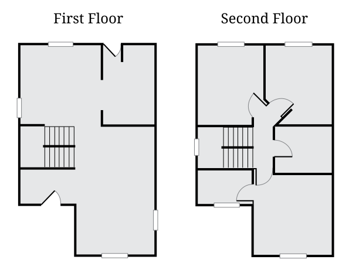
Uma maneira de medir a área é colocar um R3 na entrada da casa, no primeiro andar, e dar-lhe as seguintes instruções:
-
Inicializar a área total como 0
-
Encontrar a área do próximo cômodo e adicioná-la à área total
-
Repetir o Passo 2 até que todos os cômodos tenham sido medidos
-
Subir para o segundo andar
-
Repetir o Passo 2 até que todos os cômodos tenham sido medidos
-
Exibir a área total
Seguindo essas etapas, o R3 percorrerá sistematicamente cada cômodo, medirá sua área e somará o valor à área total encontrada até o momento. Em seguida, ele subirá as escadas e repetirá o processo no segundo andar. Ele somaria as áreas dos dois andares e nos daria a área total da casa. Essa é uma abordagem sequencial para medir a área.
Agora, suponha que tenhamos dois robôs R3, chamados R3A e R3B. Podemos colocar o R3A no primeiro andar e o R3B no segundo. Ambos os robôs são então instruídos a encontrar a área do andar em que estão usando etapas muito semelhantes às listadas acima para uma solução sequencial. Quando terminarem, somamos as respostas de R3A e R3B para obter o total. Esta é uma abordagem concorrente (e também paralela) para medir a área útil de uma casa de dois andares. Usar dois robôs dessa maneira pode acelerar o tempo necessário para medir a área.
No exemplo acima, as tarefas são as mesmas (medir a área) mas são executadas em dois domínios de entrada diferentes (os andares). Esse tipo de divisão de tarefas também é conhecido como decomposição de domínios. Aqui, para alcançar a concorrência, pegamos o domínio do problema (a casa) e o dividimos em subdomínios menores (seus andares). Então, cada processador (ou robô, neste exemplo) executa a mesma tarefa em cada subdomínio. Quando concluído, a resposta final é obtida combinando as respostas. A execução dos robôs em cada andar é puramente paralela, mas a combinação das respostas é concorrente, já que é necessária alguma interação entre os robôs.
Outra maneira de resolver um problema de forma concorrente é dividi-lo em tarefas fundamentalmente diferentes. As tarefas poderiam ser executadas em diferentes processadores e talvez em diferentes domínios de entrada. Eventualmente, alguma coordenação das tarefas deve ser feita para gerar o resultado final. O próximo exemplo ilustra essa divisão.
Vamos ampliar o problema apresentado no Exemplo 2.8. Os robôs R3 podem fazer mais do que apenas medir áreas. Além de calcular a área útil de uma casa, queremos que um robô R3 verifique se as tomadas elétricas estão funcionando. O robô deve nos fornecer a área da casa, bem como uma lista das tomadas elétricas que não estão funcionando.
Esse problema pode ser resolvido de maneira sequencial com apenas um robô. Uma maneira de fazer isso seria fazer com que o robô fizesse uma primeira passagem por todos os andares e cômodos e calculasse a área útil. Ele poderia então fazer uma segunda passagem e compilar uma lista das tomadas elétricas que não estão funcionando.
Uma maneira de resolver esse problema de forma concorrente é designar o R3A para medir a área e o R3B para identificar tomadas elétricas com defeito. Uma vez que as respectivas tarefas sejam atribuídas, colocamos os robôs na entrada da casa e os ativamos. É possível que os dois robôs se choquem enquanto trabalham, e essa é uma das dificuldades da concorrência. Cabe ao programador dar instruções para que os robôs possam evitar ou se recuperar de colisões. Depois que os robôs terminarem, pedimos a R3A a área útil da casa e a R3B uma lista de tomadas com defeito.
2.6. Resumo
Neste capítulo, apresentamos uma abordagem para o desenvolvimento de software destinado a resolver problemas com um computador. Vários exemplos ilustraram como passar da definição de um problema a um programa Java completo. Embora tenhamos apresentado explicações gerais sobre os programas Java neste capítulo, recomendamos que você experimente cada programa para ampliar sua funcionalidade. Vários exercícios o incentivam a fazer exatamente isso. É impossível aprender a programar sem praticar ativamente a programação. Nunca tenha medo de "quebrar" o programa. Somente quebrando-o, alterando-o e corrigindo-o é que sua compreensão aumentará.
Além do ciclo de vida do desenvolvimento de software, apresentamos vários
elementos básicos da sintaxe Java, incluindo classes, métodos main(),
instruções de importação e declarações de variáveis. Também apresentamos uma prévia de
diferentes tipos de variáveis (int, double e String) e operações
que podem ser usadas com elas. O material sobre tipos e operações neles
é abordado em profundidade no próximo capítulo. Além disso, discutimos entrada
e saída usando Scanner e System.out.print() para a interface de linha de comando
e métodos JOptionPane para uma GUI.
Por fim, introduzimos os conceitos de soluções sequenciais e concorrentes para problemas e esclarecemos a diferença sutil entre paralelismo e concorrência.
2.7. Exercícios
Problemas conceituais
-
Ao resolver um problema usando um computador, qual problema é resolvido pelo programador e qual é resolvido pelo programa escrito pelo programador? São os mesmos?
-
No Código 2.2, declaramos todas as variáveis como sendo do tipo
double. Como o programa se comportaria de maneira diferente se tivéssemos declarado todas as variáveis como do tipoint? -
Qual é o objetivo da instrução
Scanner in = new Scanner(System.in);no Código 2.1? -
Explique a diferença entre uma declaração e uma instrução de atribuição .
-
A seguinte instrução de Código 2.7 é uma declaração, uma atribuição ou uma combinação das duas?
String response = JOptionPane.showInputDialog(null, message, title, JOptionPane.QUESTION_MESSAGE); -
Quando você preferiria usar a classe
JOptionPanepara saída em vez deSystem.out.print()? Quando você poderia preferirSystem.out.print()em vez de usarJOptionPane? -
Revise o Código 2.7 e identifique todas as palavras-chave Java usadas nele.
-
Tente recompilar o Código 2.7 após remover a instrução
importno início. Leia e explique a mensagem de erro gerada pelo compilador. -
Explique a diferença entre tarefas paralelas e concorrentes. Dê exemplos de tarefas que são paralelas, mas não concorrentes, tarefas que são concorrentes, mas não paralelas, e tarefas que são ambas.
-
Consulte a Figura 2.5. Suponha que você e seu colega traduzam do inglês para o lellarapiano a uma taxa de 200 palavras por hora. Suponha que a lista de demandas contenha 10.000 palavras.
-
Calcule ts, o tempo que você levaria para traduzir todo o documento sozinho, supondo que, após a tradução, você faça uma verificação final a uma taxa de 500 palavras por hora.
-
Agora, suponha que a tarefa de dividir o documento e entregar a parte correta ao seu colega leve 15 minutos. Além disso, a tarefa de receber o documento traduzido de seu colega e mesclá-lo com o que você traduziu leva outros 15 minutos. Após mesclar os dois documentos, você faz uma verificação final da correção a uma taxa de 500 palavras por hora. Calcule o tempo total para concluir a tradução usando essa abordagem simultânea. Vamos nos referir a esse tempo como tc.
-
Uma maneira de calcular o ganho de velocidade de uma solução simultânea é dividir o tempo sequencial pelo tempo simultâneo. No nosso caso, o ganho de velocidade é ts/tc. Usando os valores que você calculou em (a) e (b), calcule o ganho de velocidade.
-
Suponha que você tenha um total de dois colegas dispostos a ajudá-lo com a tradução. Supondo que vocês três realizarão a tradução e que os tempos necessários para dividir, mesclar e verificar permanecem inalterados, calcule o tempo total necessário. Em seguida, calcule o aumento de velocidade.
-
Agora, suponha que haja um número ilimitado de pessoas dispostas e capazes de ajudá-lo com a tradução. O aumento de velocidade continuará aumentando à medida que você adiciona mais tradutores? Explique sua resposta.
-
-
No Exemplo 2.8, que aspecto de um sistema multicore os robôs representam?
-
No Exemplo 2.8, suponha que você tenha dois robôs R3 disponíveis. Você gostaria de usá-los para medir a área útil de uma casa térrea. Sugira como dois robôs poderiam ser programados para trabalhar simultaneamente a fim de medir a área útil mais rapidamente do que um sozinho.
Exercícios de Programação
-
Escreva um programa que solicite ao usuário três números inteiros pela linha de comando. Leia cada número inteiro usando o método
nextInt()de um objetoScanner. Calcule a soma desses valores e exiba-a na tela usandoSystem.out.print()ouSystem.out.println(). -
Amplie o programa do Exercício 2.13 para que ele calcule a média dos três números em vez da soma. (Dica: tente dividir por
3.0em vez de3para obter uma média com uma parte fracionária. Em seguida, armazene o resultado em uma variável do tipodouble.) -
Reescreva sua solução para o Exercício 2.14 de modo que ela use uma GUI baseada em
JOptionPaneem vez deScannereSystem.out.print(). -
Copie e cole o Código 2.1 no IDE Java de sua preferência. Compile e execute-o, certificando-se de que o programa seja executado conforme o esperado. Em seguida, adicione instruções para solicitar ao usuário a cor da bola e leia-a
-
Armazene a cor em um valor
String. Adicione uma instrução de saída que mencione a cor da bola. -
Reescreva sua solução para Exercício 2.16 de modo que ela use uma GUI baseada em
JOptionPaneem vez deScannereSystem.out.print(). -
No Exemplo 2.4, assumimos que a velocidade é dada em milhas por hora e o tempo em horas. Altere o Código 2.2 para calcular a distância percorrida por um objeto em movimento, dada sua velocidade em milhas por hora, mas o tempo em segundos. Você precisará realizar uma conversão de segundos para horas antes de poder calcular a distância.
-
Um programa pode usar tanto uma interface de linha de comando quanto uma GUI para interagir com um usuário. Escreva um programa que use a classe
Scannerpara ler um valorStringcontendo a comida favorita do usuário -
Em seguida, exiba o nome da comida usando
JOptionPane. -
Use o ciclo completo de desenvolvimento de software para escrever um programa que leia os comprimentos de dois catetos de um triângulo retângulo e calcule o comprimento de sua hipotenusa.
-
Certifique-se de compreender o problema. Como você pode aplicar a fórmula de Pitágoras a2 + b2 = c2 para resolvê-lo?
-
Elabore uma solução listando as etapas necessárias para ler os valores apropriados, encontrar a resposta e, em seguida, exibi-la.
-
Implemente as etapas como um programa Java.
-
Teste a solução com vários valores conhecidos. Por exemplo, um triângulo retângulo com catetos de comprimentos 3 e 4 tem uma hipotenusa de comprimento 5. Quais valores causam erros? Como seu programa deve reagir a esses erros?
-
Considere quais outros recursos seu programa deve ter. Se seu público-alvo for crianças que estão aprendendo geometria, seu tratamento de erros deve ser diferente do que seria para um público de arquitetos?
-
Capítulo 3. Tipos primitivos e Strings
A originalidade existe em cada indivíduo porque cada um de nós difere dos demais. Somos todos números primos, divisíveis apenas por nós mesmos.
3.1. Problema: Calculadora de custos universitários
Talvez você seja um estudante. Talvez não seja. Em ambos os casos, você deve estar ciente do custo cada vez mais alto de uma educação universitária. O problema motivador deste capítulo é criar um programa em Java capaz de estimar esse custo, incluindo hospedagem e alimentação. Ele começa lendo um nome, um sobrenome, o custo por semestre da mensalidade, o custo mensal do aluguel e o custo mensal da alimentação como entrada de um usuário. Muitos estudantes fazem empréstimos para pagar a faculdade. Na verdade, a dívida estudantil ultrapassou a dívida de cartão de crédito nos Estados Unidos. Podemos implementar um recurso para ler uma taxa de juros e o número de anos previstos para quitar o empréstimo.
Depois de receber todos esses dados como entrada, queremos calcular o custo anual dessa educação, o custo total de quatro anos, o pagamento mensal do empréstimo e o custo total do empréstimo ao longo do tempo. Além disso, queremos exibir essas informações na linha de comando de maneira atraente, personalizadas com o nome do usuário. Abaixo está um exemplo de execução deste programa.
Bem-vindo à Calculadora de Custos Universitários! Digite seu nome: Holden Digite seu sobrenome: Caulfield Digite a mensalidade por semestre: $17415 Digite o aluguel por mês: $350 Digite o custo com alimentação por mês: $400 Taxa de juros anual: .0937 Tempo de pagamento do empréstimo: 10 Custos da faculdade para Holden Caulfield *************************************** Custo anual: $43830,00 Custo total de quatro anos: $175320,00 Pagamento mensal do empréstimo: $2256,14 Custo total do empréstimo: $270736,5
Exemplos de uma interface de linha de comando podem ser confusos porque é difícil distinguir o que é saída e o que é entrada. Neste caso, marcamos a entrada com ênfase para que fique claro o que o usuário digita. Neste programa, os nomes, a mensalidade, o aluguel, a alimentação, a taxa de juros e os anos para pagar o empréstimo são inseridos como entrada. Observe que os símbolos de dólar não fazem parte da entrada e são exibidos como uma orientação para o usuário e para dar um acabamento visual.
Esperamos que você já tenha uma boa compreensão deste problema, mas há alguns detalhes matemáticos que vale a pena abordar. Primeiro, o custo anual é o dobro da mensalidade semestral mais 12 vezes os custos de aluguel e alimentação. O custo de quatro anos é simplesmente quatro vezes o custo anual. O valor da prestação mensal do empréstimo , no entanto, requer uma fórmula da matemática financeira. Seja P o valor do empréstimo (o principal). Seja J a taxa de juros mensal (a taxa de juros anual dividida por 12). Seja N o número de meses para pagar o empréstimo (anos do empréstimo multiplicados por 12). Seja M o pagamento mensal que queremos calcular, dado pela seguinte fórmula.
Se você usar os conceitos e a sintaxe do capítulo anterior com cuidado, talvez consiga resolver este problema sem precisar ler mais adiante. No entanto, há uma profundidade nas ideias de tipos e operações que ainda não exploramos totalmente. Fazer um programa funcionar não é suficiente. Os programadores devem compreender cada detalhe e peculiaridade de suas ferramentas para evitar possíveis bugs.
3.2. Conceitos: Tipos
Toda operação dentro de um programa Java manipula dados. Frequentemente, esses dados são armazenados em variáveis, que se parecem com as variáveis da matemática.
Considere a equação matemática x + 3 = 7. Nela, x tem o valor 4, e sempre terá. Você pode criar outra equação na qual x tenha um valor diferente, mas ele não mudará nesta equação. As variáveis Java são diferentes. São locais onde você pode armazenar algo. Se você decidir mais tarde que deseja alterar o que armazenou ali, pode colocar outra coisa no mesmo local, sobrescrevendo o valor antigo.
Em contraste com uma variável está um literal. Um literal é um valor concreto
que não muda, embora possa ser armazenado em uma variável. Números
como 4 ou 2.71828183 são literais. Precisamos representar texto e
caracteres únicos em Java também, e existem literais como
"gomo de laranja" e "X" que desempenham essas funções.
Em Java, tanto variáveis quanto literais têm tipos. Se você pensar em uma
variável como uma caixa onde é possível guardar algo, seu tipo é a forma
dessa caixa. Os tipos de literais que podem ser armazenados nessa caixa devem ter
um formato compatível. No último capítulo, apresentamos o tipo int para
armazenar valores inteiros e o tipo double para armazenar valores de ponto flutuante
. Java é uma linguagem fortemente tipada, o que significa que, se declararmos
uma variável do tipo int, só poderemos colocar valores int nela (com
algumas exceções).
Essa ideia de tipo leva algum tempo para se acostumar. De uma perspectiva matemática
, 3 e 3.0 são idênticos.
No entanto, se você tiver uma variável int em Java, pode armazenar 3 nela
, mas não pode armazenar 3.0. O tipo de um valor nunca muda,
mas você pode converter um valor de um tipo para um valor equivalente em outro tipo.
3.2.1. Tipos como conjuntos e operações
Antes de prosseguirmos, vamos analisar mais a fundo o que realmente é um tipo. Podemos
pensar em um tipo como um conjunto de elementos. Por exemplo, int representa
um conjunto de valores inteiros (especificamente, os inteiros entre
-2.147.483.648 e 2.147.483.647, inclusive). Considere
as seguintes declarações:
int x;
int y;Essas declarações indicam que as variáveis chamadas x e y podem
conter apenas valores inteiros no intervalo int. Além disso, um tipo só
permite operações específicas. Em Java, o tipo int permite adição,
subtração, multiplicação, divisão e várias outras operações sobre as quais
falaremos em Seção 3.3, mas não há nenhuma operação embutida
para elevar um valor int a uma potência em Java. Vamos supor que x
seja do tipo int. Como discutimos no capítulo anterior, a
expressão x + 2 realiza a adição entre a variável representada por
x e o literal 2. Algumas linguagens usam o operador ^ para significar
elevar um número a uma potência. Seguindo essa notação, alguns programadores iniciantes
em Java são tentados a escrever x ^ 2 para calcular x ao quadrado.
O operador ^ tem um significado em Java, mas não eleva
valores a uma potência. Outras combinações de operadores são simplesmente inválidas,
como x # 2.
A ideia de usar tipos dessa maneira dá estrutura a um programa. Todas as
operações são bem definidas. Por exemplo, você sabe que somar dois valores int
resultará em outro valor int. Java é uma linguagem
estaticamente tipada. Isso significa que ela pode analisar todos os tipos que você está
usando em seu programa em tempo de compilação e alertá-lo se você estiver fazendo
algo inválido. Consequentemente, você receberá muitos avisos
e erros do compilador, mas poderá ter mais certeza de que seu programa está correto
se todos os tipos fizerem sentido.
3.2.2. Tipos primitivos e de referência em Java
Conforme mostrado na Figura 3.1(a), existem dois tipos de
tipos em Java: tipos primitivos e tipos de referência. Os tipos primitivos
são como caixas que contêm valores únicos e concretos. Os tipos primitivos em
Java são byte, short, int, long, float, double, boolean,
e char. Esses são tipos fornecidos pelos criadores do Java, e
não é possível criar novos. Cada tipo primitivo possui um conjunto de
operadores que são válidos para ele. Por exemplo, todos os tipos numéricos
podem ser usados com + e -. Falaremos sobre esses tipos e seus
operadores em detalhes em Seção 3.3.

int (b), o tipo primitivo boolean (c), o tipo de referência String (d) e um possível tipo de referência Aircraft (e) são representados como conjuntos de itens com operações.Os tipos de referência funcionam de maneira diferente dos tipos primitivos. Por um lado, uma variável de referência aponta para um objeto. Isso significa que, quando você atribui uma variável de referência a outra, não está obtendo uma cópia totalmente nova do objeto. Em vez disso, você obtém outra seta que aponta para o mesmo objeto. O resultado é que realizar uma operação em uma referência pode efetivamente alterar outra referência, se ambas estiverem apontando para o mesmo objeto.
Outra diferença é que as variáveis de referência (ou simplesmente referências)
não possuem um grande conjunto de operadores que funcionam com elas. Toda variável
pode ser usada com os operadores de atribuição (=) e de comparação (==)
. Toda variável também pode ser concatenada com um String
usando o operador +, mas mesmo que dois objetos representem valores numéricos
, eles não podem ser somados com o operador +.
As referências ainda devem ser consideradas como tipos que definem um conjunto de objetos
e operações que podem ser realizadas com eles. Em vez de usar operadores,
no entanto, as referências usam métodos. Você já viu métodos como
System.out.print() e JOptionPane.showInputDialog() no capítulo anterior
. Um método geralmente tem um ponto (.) antes dele e sempre tem
parênteses depois. Esses parênteses contêm os parâmetros de entrada
ou argumentos que você passa para um método. Usar operadores em tipos primitivos
é conveniente, mas, por outro lado, não há limite para o
número, tipo ou complexidade dos métodos que podem ser usados em referências.
Outra característica importante dos tipos de referência é que qualquer pessoa pode defini-
los. Até agora, você viu os tipos de referência String e
JOptionPane. Como discutiremos mais adiante, String é um tipo de referência incomum
, pois está profundamente integrado à linguagem. Existem
alguns outros tipos como esse (como Object), mas a maioria dos tipos de referência
poderia ter sido escrita por qualquer pessoa, até mesmo por você.
Para criar um novo tipo, você escreve uma classe e define dados e métodos
dentro dela. Se você quisesse definir um tipo para representar aviões, você
poderia criar a classe Airplane e atribuir a ela métodos como
takeOff(), fly() e land(), pois essas são operações que qualquer
avião deve ser capaz de realizar.
Uma vez que uma classe tenha sido definida, é possível instanciar um
objeto. Um objeto é uma instância específica do tipo. Por exemplo, o
tipo pode ser Airplane, mas o objeto pode ser referenciado por uma
variável chamada sr71Blackbird. Presumivelmente, esse objeto tem um peso, uma
velocidade máxima e outras características que o identificam como um Lockheed
SR-71 “Blackbird”, o famoso avião espião. Resumindo: um objeto é uma
instância concreta de dados. Uma referência é uma variável que dá
um nome a (aponta para) um objeto. Um tipo é uma classe que tanto a
variável quanto o objeto possuem, que define que tipos de dados o
objeto contém e quais operações ele pode realizar.
A tabela a seguir lista algumas das diferenças entre tipos primitivos e tipos de referência.
| Tipos primitivos | Tipos de referência |
|---|---|
Criados pelos designers do Java |
Criados por qualquer programador Java |
Usam operadores para realizar operações |
Usam métodos para realizar operações |
Existem apenas oito tipos primitivos diferentes |
O número de tipos de referência é ilimitado e cresce cada vez que alguém cria uma nova classe |
Armazenam um número específico de bytes de dados, dependendo do tipo |
O objeto referenciado pode armazenar quantidades arbitrárias de dados |
A atribuição copia um valor de um lugar para outro |
A atribuição copia uma seta que aponta para um objeto |
A declaração cria uma caixa para armazenar valores |
A declaração cria uma seta que pode apontar para um objeto, mas apenas a instanciação cria um novo objeto |
3.2.3. Segurança de tipos
Por que temos tipos? Existem linguagens de tipagem fraca nas quais é possível armazenar qualquer valor em praticamente qualquer variável. Por que se preocupar com todas essas regras complicadas? A maioria das linguagens de montagem não possui noção de tipos e permite que o programador manipule a memória diretamente.
Como Java é fortemente tipado, o tipo de cada variável, seja primitiva ou de referência, deve ser declarado antes de seu uso. Essa restrição permite que o compilador Java realize muitas verificações de segurança e validade durante a compilação, e a JVM realiza mais algumas durante a execução. Essas verificações evitam erros durante a execução do programa que, de outra forma, seriam difíceis de detectar — erros que poderiam levar a falhas catastróficas do programa.
O foguete Ariane 5 é um exemplo de falha catastrófica causada por um erro de tipo. Em seu primeiro voo, o foguete saiu de sua trajetória e acabou explodindo. A falha foi causada por erros decorrentes da conversão de um valor real de 64 bits em um valor inteiro de 16 bits. O valor convertido era maior do que o inteiro poderia armazenar, resultando em um valor sem sentido.
A conversão de um tipo para outro é chamada de casting. A falha do Ariane 5 foi proveniente a um problema com o casting que não foi detectado. Mesmo em Java, é possível que um ser humano contorne a segurança de tipos com um casting irresponsável.
3.3. Sintaxe: Tipos em Java
Nesta seção, aprofundamos o sistema de tipos em Java,
começando pelas variáveis e passando para as propriedades dos oito
tipos primitivos e as propriedades de String e outros tipos de referência.
3.3.1. Variáveis e literais
Para usar uma variável em Java, você deve primeiro declará-la, o que reserva
memória para armazenar a variável e atribui um nome a esse espaço.
As declarações sempre seguem o mesmo padrão. O tipo é escrito primeiro
seguido pelo identificador, ou nome, da variável. Abaixo, declaramos
uma variável chamada valor do tipo int.
int valor;Observe como usamos o mesmo padrão para declarar uma variável de referência chamada
criatura do tipo Vombate.
Vombate criatura;Você pode declarar uma variável e terminar a linha com um
ponto-e-vírgula (;), mas é comum inicializar uma variável ao mesmo
tempo. A linha a seguir declara valor e a inicializa
simultaneamente como 5.
int valor = 5;Não se esqueça de que você está tanto declarando quanto inicializando em uma linha como a acima. Programadores iniciantes em Java às vezes tentam declarar uma variável mais de uma vez, como no exemplo a seguir:
int valor = 5;
int valor = 10;O Java não permite que duas variáveis com o mesmo nome existam no
mesmo bloco de código. O programador provavelmente pretendia o seguinte,
reutilizar a variável valor e substituir seu conteúdo por 10.
int valor = 5;
valor = 10;Esse erro é mais comum quando várias outras linhas de código se encontram entre as duas atribuições.
Em alguns dos exemplos acima, armazenamos o valor 5 em nossa
variável valor. O símbolo 5 é um exemplo de um literal. Um literal
é um valor representado diretamente no código. Ele não pode ser alterado, mas
pode ser armazenado em variáveis que tenham um tipo compatível. Os valores armazenados
em variáveis provêm de literais, entradas ou expressões mais complexas
. Assim como as variáveis, os literais têm tipos. O tipo de 5
é int, enquanto o tipo de 5.0 é double. Outros tipos têm literais
escritos de maneiras que discutiremos a seguir.
3.3.2. Tipos primitivos
Os blocos de construção de todos os programas Java são os tipos primitivos. Todos os objetos devem, fundamentalmente, conter tipos primitivos em sua essência. Existem oito tipos primitivos. Metade deles é usada para representar valores inteiros, e começaremos analisando esses.
Inteiros: byte, short, int e long
Uma variável destinada a conter valores inteiros pode ser declarada com qualquer um dos
quatro tipos byte, short, int, ou long. Todos eles são assinados
(armazenando números positivos e negativos) e representam números no
complemento de dois. Eles diferem apenas pelo intervalo de valores que cada tipo pode
armazenar. Esses intervalos e o número de bytes usados para representar variáveis
de cada tipo são apresentados abaixo.
| Tipo | Bytes | Intervalo | ||
|---|---|---|---|---|
byte |
1 |
-128 |
a |
127 |
short |
2 |
-32.768 |
a |
32.767 |
int |
4 |
-2.147.483.648 |
até |
2.147.483.647 |
long |
8 |
-9.223.372.036.854.775.808 |
até |
9.223.372.036.854.775.807 |
Observe que todo o intervalo de byte está incluído no de short, o de short
no de int e assim por diante. Dizemos que short é mais amplo que
byte, int é mais amplo que short e long é mais amplo que int.
Uma variável declarada com o tipo byte só pode representar 256 valores diferentes
, os inteiros no intervalo de -128 a 127. Por que usar byte,
então? Como um valor byte ocupa apenas um único byte, ele pode economizar
memória, especialmente se você tiver uma lista de variáveis chamada array,
que discutiremos em Capítulo 6. No entanto, um intervalo muito restrito
resultará em underflow e overflow. Recomenda-se aos programadores Java
que utilizem int para uso geral. Se você precisar representar
valores maiores que 2 bilhões ou menores que -2 bilhões, use long.
Quando você for um programador experiente, poderá ocasionalmente usar byte
e short para economizar espaço, mas eles devem ser usados com moderação e para um
objetivo claro.
Considere as seguintes declarações.
byte idade;
int numeroDeQuartos;
long contadorInfinito = 0;A primeira dessas instruções declara idade como uma variável do tipo
byte. Essa declaração significa que idade pode assumir qualquer valor dentro do
intervalo de byte. Para um ser humano, essa limitação é razoável (mas
perigosamente próxima do limite), já que não há nenhum caso documentado de uma
pessoa que tenha vivido mais de 122 anos. Da mesma forma, a próxima declaração
declara numeroDeQuartos como sendo do tipo int. A última declaração
declara contadorInfinito como sendo do tipo long e a inicializa como
0.
Como idade é uma variável, seu valor pode mudar durante a
execução do programa. Observe que a declaração acima de idade não atribui um
valor a ela. Quando declaradas, todas as variáveis inteiras são definidas como
0 pelo Java. No entanto, para garantir que o programador seja explícito sobre
o que deseja, o compilador emitirá um erro na maioria dos casos se uma
variável for usada sem que seu valor tenha sido definido primeiro.
Como qualquer outra variável inteira, podemos atribuir um valor a idade da seguinte maneira.
idade = 32;Isso atribui o valor 32 à variável idade. Observe que o compilador Java
não reclamaria se você atribuísse -10 à variável
idade, mesmo que seja impossível para um ser humano ter uma idade negativa
(pelo menos, sem uma máquina do tempo). O Java não atribui nenhum significado ao nome
que você dá a uma variável.
Anteriormente, dissemos que as variáveis precisavam corresponder ao tipo dos literais que você
deseja armazenar nelas. No exemplo acima, declaramos idade com
o tipo byte e, em seguida, armazenamos 32 nela. Qual é o tipo de 32? É
byte, short, int ou long? Por padrão, todos os literais inteiros
têm o tipo int, mas podem ser usados com variáveis byte ou short
desde que se encaixem no intervalo. Assim, a linha a seguir causa
um erro.
byte fingers = 128;Se você quiser especificar que um literal tenha o tipo long, pode acrescentar l
ou L a ele. Assim, 42 é um literal int, mas 42L é um literal long
. Você deve sempre usar o L maiúsculo, pois o l pode ser difícil de
distinguir do 1.
No momento da redação deste artigo, o Java 11 é a
versão mais recente do Java, mas
o Java 8 é o mais comumente usado. No Java 7 e versões superiores, é permitido
colocar qualquer número de sublinhados (_) dentro de literais numéricos para
separá-los, a fim de facilitar a legibilidade. Assim, 123_45_6789 pode
representar um número de previdência social, ou você pode usar sublinhados em vez
de vírgulas para escrever três milhões como 3_000_000. Como a maioria dos compiladores suporta
Java 7 ou superior atualmente, é razoável usar essa notação com sublinhados em seus
literais. Observe que você nunca deve usar uma vírgula em um literal numérico Java,
independentemente da versão do Java que estiver usando.
Números de ponto flutuante: float e double
Para representar números com partes fracionárias, o Java oferece dois tipos de ponto flutuante
, double e float. Devido aos limites de precisão de ponto flutuante
discutidos em Capítulo 1, o Java não pode
representar todos os números reais ou racionais, mas esses tipos fornecem boas
aproximações. Se você tiver uma variável que assume valores de ponto flutuante
como 3. 14, 1,707 × 1025,
9,8 ou similares, ela deve ser declarada como double ou
float.
Considere as seguintes declarações.
float areaDoQuarto;
double avogadro = 6,02214179E 23A primeira das duas instruções acima declara areaDoQuarto como sendo do tipo
float. Observe que a declaração não inicializa areaDoQuarto com nenhum
valor. Assim como os tipos primitivos inteiros, uma variável de ponto flutuante não inicializada
contém 0.0, mas o Java geralmente obriga o programador a
atribuir um valor a uma variável antes de usá-la. A segunda das
duas instruções acima declara avogadro como uma variável do tipo double e
a inicializa com a conhecida constante de Avogadro
6.02214179 × 1023. Observe o uso de E para significar
“dez elevado a.” Em Java, você poderia escrever
0,33 × 10-12 como 0,33E-12, ou o número
-4,325 × 1018 como -4,325E18 (ou mesmo -4,325E+18
se você quiser escrever o sinal do expoente explicitamente).
Precisão na representação numérica
Conforme discutido em Capítulo 1, os tipos inteiros
dentro de seus intervalos especificados têm representações exatas. Por
exemplo, se você atribuir 19 a uma variável do tipo int e, em seguida, imprimir
esse valor, você sempre obterá exatamente 19. Os números de ponto flutuante não
têm essa garantia de representação exata.
Tente executar as seguintes instruções em um programa Java.
double teste = 0.0;
teste += 0.1;
System.out.println(teste);
teste += 0.1;
System.out.println(teste);
teste += 0.1;
System.out.println(teste);Como estamos somando 0,1 a cada vez, seria de se esperar ver saídas de
0,1, 0,2 e 0,3. Os dois primeiros números são impressos conforme o esperado, mas
o terceiro número é impresso como 0,30000000000000004. Pode parecer
contraintuitivo, mas 0,1 é um decimal periódico em binário, o que significa que
não pode ser representado exatamente usando o padrão de ponto flutuante IEEE de 64 bits
. O método `System.out.println() ` oculta essa imperfeição ao
arredondar a saída além de um certo nível de precisão, mas na terceira
adição, o número se afastou o suficiente de 0,3 para que um
número inesperado apareça.
Variáveis do tipo float oferecem uma precisão de cerca de 6 dígitos decimais
, enquanto as do tipo double oferecem cerca de 15 dígitos decimais. A
precisão da representação de números de ponto flutuante importa? A resposta a
essa pergunta depende da sua aplicação. Em algumas aplicações, uma precisão de 6 dígitos
pode ser adequada. No entanto, ao realizar simulações em grande escala,
como calcular a trajetória de uma espaçonave em uma missão a Marte,
uma precisão de 15 dígitos pode ser uma questão de vida ou morte. Na verdade, mesmo a
precisão do double pode não ser suficiente. Existe uma classe especial BigDecimal
que pode realizar cálculos de precisão arbitrariamente alta, mas devido
à sua baixa velocidade e alta complexidade, ela só deve ser usada nessas
raras situações em que um programador requer um nível de precisão muito maior
do que o que double oferece.
Recomenda-se que programadores Java usem double para computação de uso geral
. O tipo float deve ser usado apenas em casos especiais em que
o armazenamento ou a velocidade são críticos e a precisão não é. Devido à sua
maior precisão, double é considerado um tipo mais abrangente do que float.
Você pode armazenar valores float em um double sem perder precisão, mas
o inverso não é verdadeiro.
Todos os literais de ponto flutuante em Java têm o tipo double, a menos que tenham
um f ou F anexado no final. Assim, 3.14 é um literal double,
mas 3.14f é um literal float.
Saída de ponto flutuante
A formatação da saída para números de ponto flutuante apresenta uma complicação adicional em comparação com a saída de inteiros: quantos dígitos após a vírgula decimal devem ser exibidos? Se você estiver representando valores monetários, é comum mostrar exatamente dois dígitos após a vírgula decimal. Por padrão, todos os dígitos diferentes de zero são exibidos.
Em vez de usar System.out.print(), você pode usar System.out.format()
para controlar a formatação. Ao usar System.out.format(), o primeiro
argumento do método é uma string de formato, um trecho de texto que contém
todo o texto que você deseja exibir, bem como especificadores de formato especiais
que indicam onde outros dados devem aparecer e como devem ser
formatados. Esse método recebe um argumento adicional para cada
especificador de formato usado. O especificador %d é para valores inteiros, o
especificador %f é para valores de ponto flutuante (incluindo os tipos float e
double), e o especificador %s é para texto. Considere o
exemplo a seguir:
System.out.format("%s! Quebrei %d recordes em %f segundos.\n", "Bob", 3, 2.4985);A saída deste código é
Bob! Quebrei 3 recordes em 2,4985 segundos.
Esse tipo de saída é baseado na função printf() usada para saída
na linguagem de programação C. Ela permite que o programador tenha uma
visão holística de como a saída final poderá ficar, mas também
oferece controle sobre a formatação por meio dos especificadores de formato. Por exemplo,
você pode escolher o número de dígitos para um valor de ponto flutuante a ser
exibido após a vírgula decimal, colocando um . e o número entre
o % e o f.
System.out.format("$%.2f\n", 123.456789 );A saída deste código é:
$123.46
Observe que o último dígito visível é arredondado em vez de truncado. Observe que %n é um especificador de formato especial que indica uma nova linha. Para saber mais sobre outras maneiras de usar strings de formato para manipular a saída, leia a documentação da Oracle https://docs.oracle.com/en/java/javase/ 21/docs/api/java.base/java/util/Formatter.html#syntax[Documentação do Formatter^].
Aritmética básica
A tabela a seguir lista os operadores aritméticos disponíveis em Java. Todos esses operadores podem ser usados tanto nos tipos primitivos inteiros quanto nos tipos primitivos de ponto flutuante.
| Operador | Significado |
|---|---|
+ |
Soma |
- |
Subtração |
* |
Multiplicação |
/ |
Divisão |
% |
Módulo (restante) |
Os quatro primeiros devem ser familiares. Adição, subtração e multiplicação funcionam como você esperaria, desde que o resultado esteja dentro do intervalo definido para os tipos que você está usando, mas a divisão é um pouco confusa. Se você dividir dois valores inteiros em Java, obterá um inteiro como resultado. Se houvesse uma parte fracionária, ela será truncada, não arredondada. Considere o seguinte.
int x = 1999/1000;Na matemática comum, 1.999 ÷ 1.000 = 1,999. Em Java,
1999/1000 resulta em 1, e é isso que é armazenado em x. Para
números de ponto flutuante, o Java funciona muito mais como a matemática comum.
double y = 1999.0/1000.0;Nesse caso, y contém 1. 999. Os literais 1999.0 e 1000.0
são do tipo double. O tipo de y não afeta a divisão, mas ele
precisava ser double para ser um local válido para armazenar o resultado.
É fácil se concentrar na variável e esquecer os tipos envolvidos na operação. Considere o seguinte.
double z = 1999/1000;Como z tem o tipo double, parece que o resultado da divisão
deveria ser 1.999. No entanto, o dividendo e o divisor têm tipo
int, e o resultado é 1. Esse valor é convertido para double e
armazenado em z como 1.0. Esse erro é mais comum no
cenário a seguir.
double metade = 1/2;O código parece correto à primeira vista, mas 1/2 resulta em 0. Se o resultado for
armazenado em uma variável double, é melhor multiplicar por 0.5
em vez de dividir por 2.
Talvez você não tenha pensado nisso desde o ensino fundamental, mas
o operador de divisão (/) calcula o quociente de dois números. O
operador de módulo (%) calcula o restante. Por exemplo, 15 / 6 é
2, enquanto 15 % 6 é 3, porque 6 cabe duas vezes em 15, sobrando 3
. O operador de módulo é geralmente usado com valores inteiros, mas está
também definido para funcionar com valores de ponto flutuante em Java. É fácil
desconsiderar o operador de módulo porque não o usamos com frequência na vida cotidiana
, mas ele é incrivelmente útil em programação. À primeira vista, ele permite
que vejamos o resto após a divisão. Essa ideia pode ser aplicada para verificar
se um número é par ou ímpar. Ele também pode ser usado para comprimir um grande
intervalo de inteiros aleatórios a um intervalo menor ou realizar um tipo de aritmética circular
útil para criptografia. Fique de olho nele.
Vamos usá-lo muitas vezes neste livro.
Precedência
Embora todos os exemplos anteriores usem apenas um operador matemático, você pode combinar vários operadores e operandos em uma expressão maior como a seguinte.
((a + b) * (c + d)) % eEssas expressões são avaliadas da esquerda para a direita, usando a ordem padrão
de operações: Os operadores * e / (e também %) têm
precedência sobre os operadores + e -. Assim como na matemática,
os parênteses têm a maior precedência e podem ser usados para aumentar a clareza.
Assim, a ordem de avaliação de a + b / c é a mesma que
a + (b / c), mas diferente de (a + b) / c.
Considere as seguintes linhas de código.
int a = 31;
int b = 16;
int c = 1;
int d = 2;
a = b + c * d - a / b / d;Qual é o resultado? A primeira operação a ser avaliada é c * d,
resultando em 2. A seguinte é a / b, resultando em 1, que é então dividido
por d, resultando em 0 `. Em seguida, `b + 2 resulta em 18, e 18 - 0 continua sendo
18. Portanto, o valor armazenado em a é 18.
Seu matemático interior pode ficar nervoso porque a é usada na
expressão do lado direito da atribuição e também é a variável
onde o resultado é armazenado, mas essa situação é muito comum na
programação. O valor de a não muda até que toda a matemática
tenha sido feita. A atribuição sempre ocorre por último.
Todos os operadores que discutimos até agora são operadores binários.
Esse uso da palavra “binário” não tem nada a ver com a base 2. Um
operador binário recebe dois operandos e realiza uma operação, como somá-los.
Um operador unário recebe um único operando e realiza uma operação. O operador -
pode ser usado como um operador unário para negar um literal, uma variável
ou uma expressão. Uma negação unária tem precedência maior do que os outros
operadores, assim como na matemática. Em outras palavras , a variável ou
expressão será negada antes de ser multiplicada ou dividida. O operador +
pode ser usado em qualquer lugar onde você usaria uma negação unária, embora
na verdade ele não faça nada. Considere as seguintes instruções.
int a = - 4;
int b = -c + d / -(e * f);
int s = +t + (-r);Atalhos
Algumas operações ocorrem com frequência em Java. Por exemplo, aumentar uma
variável em um determinado valor é uma tarefa comum. Se você quiser aumentar o
conteúdo da variável valor em 10, pode escrever o seguinte.
valor = valor + 10;Embora a instrução acima não seja excessivamente longa, aumentar uma
variável é tão comum que existe uma forma abreviada para isso. Para obter o
mesmo efeito, você pode usar o operador +=.
valor += 10;O operador += obtém o conteúdo da variável, neste caso valor,
soma o que estiver à sua direita, neste caso 10, e armazena o
resultado de volta na variável. Essencialmente, isso evita que você escreva
o nome da variável duas vezes. E += não é o único atalho. É
apenas um membro de uma família de operadores de atalho que realizam uma operação binária
entre a variável no lado esquerdo e a expressão no
lado direito e, em seguida, armazenam o valor de volta na variável. Existe
um operador -= que diminui uma variável, um * = que multiplica uma
variável, e vários outros, incluindo atalhos para operações bit a bit
que abordaremos na próxima subseção.
| Operador | Exemplo | Significado |
|---|---|---|
+= |
a += b; |
a = a + b; |
-= |
a -= b; |
a = a - b; |
*= |
a *= b; |
a = a * b; |
/= |
a /= b; |
a = a / b; |
%= |
a %= b; |
a = a % b; |
&= |
a &= b; |
a = a & b; |
^= |
a ^= b; |
a = a ^ b; |
|= |
a |= b; |
a = a | b; |
<<= |
a <<= b; |
a = a << b; |
>>= |
a >>= b; |
a = a >> b; |
>>>= |
a >>>= b; |
a = a >>> b; |
Esses atalhos de atribuição são úteis e podem tornar uma linha mais curta e mais fácil de ler.
Como você pode perder precisão, não é permitido armazenar um valor double
em uma variável int. Portanto, as seguintes linhas de código são
ilegais e não serão compiladas.
int x = 0;
x = x + 0.1;Nesse caso, a verificação faz muito sentido. Se fosse possível somar
0.1 a 0 e, em seguida, armazenar esse valor em uma variável int, a
parte fracionária seria truncada, mantendo 0 na variável.
No entanto, essa proteção contra perda de precisão não é feita com
atalhos de atribuição. Mesmo que esperemos que as linhas a seguir sejam
funcionalmente idênticas às anteriores, elas serão compiladas (mas
ainda assim não farão nada).
int x = 0;
x += 0.1;Esse tipo de erro pode causar problemas quando o programa espera que o valor
de x aumente e, eventualmente, atinja algum nível.
Existem também dois atalhos unários. Incrementar um valor em um e
decrementar um valor em um são operações tão comuns que recebem
seus próprios operadores especiais, ++ e --.
| Operador | Exemplo | Significado |
|---|---|---|
++ |
++a; |
a = a + 1; |
-- |
--a; |
a = a - 1; |
Usar um incremento ou um decremento altera o valor de uma variável.
Em todos os outros casos, é necessário usar um operador de atribuição para
alterar uma variável. Mesmo nos atalhos binários apresentados anteriormente, o
programador é lembrado de que uma atribuição está ocorrendo porque o símbolo =
está presente.
Tanto o operador de incremento quanto o de decremento existem nas variantes prefixada e pós-fixada
. Você pode escrever ++ (ou --) na frente da variável
que está alterando ou atrás dela.
int valor = 5;
valor++; // Agora valor é 6
++valor; // Agora valor é 7
valor--; // valor é 6 novamenteQuando usada em uma linha sozinha, qualquer uma das formas funciona exatamente da mesma maneira. No entanto, a variável incrementada (ou decrementada) também pode ser usada como parte de uma expressão maior. Em uma expressão maior, a forma prefixada incrementa (ou decrementa) a variável antes de o valor ser usado na expressão. Por outro lado, a forma pós-fixada retorna uma cópia do valor original, efetivamente incrementando (ou decrementando) a variável depois de o valor ser usado na expressão. Considere o seguinte exemplo.
int prefixo = 7;
int resultadoPrefixo = 5 + ++prefix;
int posfixo = 7;
int resultadoPosfixo = 5 + postfix++;Após a execução do código, os valores de prefixo e posfixo são
ambos 8. No entanto, resultadoPrefixo é 13, enquanto resultadoPosfixo é apenas
12. O valor original de posfixo, que é 7, é somado a 5,
e só então a operação de incremento ocorre.
Incrementar uma variável em Java é uma operação muito comum. Expressões
como pass: [i]` e `pass:[i] aparecem com tanta frequência que é fácil esquecer exatamente
o que elas significam. Programadores ocasionalmente esquecem que elas são uma forma abreviada
de i = i + 1 e começam a pensar nelas como uma maneira sofisticada de escrever
i + 1.
Quando confuso, um programador pode escrever algo como o seguinte.
int i = 14;
i = i++;À primeira vista, pode parecer que a segunda linha de código realmente significa
i = i = i + 1. Atribuir i uma vez a mais é inútil, mas parece que
isso não deve causar nenhum dano. Lembre-se de que a versão pós-fixada retorna uma cópia do
valor original antes de ele seja incrementado. Neste caso, i
será incrementado, mas então seu valor original será armazenado de volta
nele mesmo. No código apresentado acima, o valor final de i ainda é
14.
Em geral, não é aconselhável realizar operações de incremento ou decremento no meio de expressões maiores, e desaconselhamos fazê-lo. Em alguns casos, o código pode ser encurtado ocultando-se habilmente um incremento no meio de alguma outra expressão. No entanto, ao reler o código, sempre leva um momento para ter certeza de que o incremento ou decremento está fazendo exatamente o que deveria. A confusão adicional causada por essa astúcia não compensa a linha de código economizada. Além disso, o compilador traduzirá as operações exatamente no mesmo bytecode, o que significa que a versão mais curta não é mais eficiente do que a versão mais longa quando executada.
No entanto, muitos programadores gostam de comprimir seu código até o menor número possível de linhas de código. Você pode ter que ler código que usa incrementos e decrementos de maneiras inteligentes (embora obscuras), mas você deve sempre se esforçar para tornar seu próprio código o mais legível possível. Ao longo deste livro, daremos preferência ao estilo prefixo para incrementos e decrementos, porque é garantido que seja tão rápido ou mais rápido que o pós-fixo e porque corresponde ao que a maioria das pessoas intuitivamente espera, ou seja, que a atualização ocorra primeiro.
Operadores bit a bit
Além dos operadores matemáticos normais, Java fornece um conjunto de
operadores bit a bit correspondentes às operações que discutimos em
Capítulo 1. Esses operadores realizam
operações bit a bit em valores inteiros. Os operadores bit a bit são &, |, ^,
e ~ (que é unário). Além disso, existem operadores de deslocamento
bit a bit: << para deslocamento à esquerda com sinal, >> para deslocamento à direita com sinal e
>>> para deslocamento à direita sem sinal. Não há operador de deslocamento à esquerda sem sinal
em Java.
| Operador | Nome | Descrição |
|---|---|---|
& |
AND bit a bit |
Combina duas representações binárias em uma nova representação que possui um 1 em todas as posições em que ambas as representações originais possuem um 1 |
| |
OR bit a bit |
Combina duas representações binárias em uma nova representação que possui um 1 em todas as posições em que qualquer uma das representações originais possui um 1 |
^ |
XOR bit a bit |
Combina duas representações binárias em uma nova representação que possui um 1 em todas as posições em que as representações originais têm valores diferentes |
~ |
NOT bit a bit |
Pega uma representação e cria uma nova representação na qual todos os bits são invertidos de 0 para 1 e de 1 para 0 |
<< |
Deslocamento à esquerda com sinal |
Desloca todos os bits o número especificado de posições para a esquerda, inserindo zeros nos bits mais à direita |
>> |
Deslocamento à direita com sinal |
Desloca todos os bits o número especificado de posições para a direita, preenchendo a esquerda com cópias do bit de sinal |
>>> |
Deslocamento à direita sem sinal |
Desloca todos os bits o número especificado de posições para a direita, preenchendo com zeros |
Quando usados com byte e short, todos os operadores bit a bit
converterão automaticamente seus operandos em valores int de 32
bits int. É
fundamental lembrar dessa conversão, já que o número de bits usados para
representação é uma parte fundamental dos operadores bit a bit.
O exemplo a seguir mostra esses operadores em uso. Para compreender a saída, você precisa entender como os inteiros são representados no sistema numérico binário, o que é discutido no Seção 1.3.
O código a seguir mostra uma sequência de operações bit a bit realizadas com
os valores 3 e -7. Para entender os resultados, lembre-se de que, na
representação de complemento de dois de 32 bits, 3 =
0000 0000 0000 0000 0000 0000 0000 0011 e ` -7` =
1111 1111 1111 1111 1111 1111 1111 1001.
int x = 3;
int y = -7;
int z = x & y;
System.out.println("x & y\t= " + z);
z = x | y;
System.out.println("x | y\t= " + z);
z = x ^ y;
System.out.println("x ^ y\t= " + z);
z = x << 2;
System.out.println("x << 2\t= " + z);
z = y >> 2;
System.out.println("y >> 2\t= " + z);
z = y >>> 2;
System.out.println("y >>> 2\t= " + z);A saída deste fragmento de código é:
x & y = 1 x | y = -5 x ^ y = -6 x << 2 = 12 y >> 2 = -2 y >>> 2 = 1073741822
Observe como a sequência de escape \t é usada para inserir um caractere de tabulação na
saída, alinhando os resultados.
Por que usar os operadores bit a bit? Às vezes, você pode ler dados como
valores byte individuais e pode precisar combinar quatro desses
valores em um único valor int. Embora o deslocamento à esquerda com sinal (<<)
e o deslocamento à direita com sinal (>>) são, respectivamente, equivalentes a
multiplicações repetidas por 2 ou divisões repetidas por 2, eles são mais rápidos do que
fazer essas operações repetidamente. Por fim, algumas dessas operações
são usadas para fins de criptografia ou geração de números aleatórios.
Conversão de tipos
Às vezes, você precisa usar tipos diferentes (como inteiros e valores de ponto flutuante
) juntos. Outras vezes, você tem um valor em um tipo, mas
precisa armazená-lo em outro (como ao arredondar um double
para o int mais próximo). Algumas combinações de operadores e tipos são
permitidas, mas outras causam erros de compilação.
A regra geral é que o Java permite uma atribuição de um tipo para outro, desde que não haja perda de precisão. Ou seja, podemos copiar um valor de um tipo para uma variável de outro tipo, desde que a variável de destino tenha um tipo mais amplo que o valor de origem. Os próximos exemplos ilustram como converter entre diferentes tipos numéricos .
Considere as seguintes instruções.
short x = 341;
int y = x;Como o tipo de y é int, que é mais amplo que short, é válido
atribuir o valor em x à variável y. Na
atribuição, um valor com o tipo mais restrito short é convertido para
um valor equivalente com o tipo mais amplo int. A conversão de um
tipo mais restrito para um tipo mais amplo é chamada de upcast ou promoção,
e o Java permite isso sem erros. A maioria das linguagens permite upcasts
sem nenhuma sintaxe especial, pois é sempre seguro passar de um
tipo mais restrito e limitador para um tipo mais amplo e menos restritivo.
Considere estas instruções que declaram as variáveis a, b e c e
calculam um valor para c.
int a = 10;
int b = 2;
byte c;
c = a + b;Se você tentar compilar essas instruções como parte de um programa Java, receberá uma mensagem de erro como a seguinte.
Erro: possível perda de precisão encontrado: int necessário: byte
O compilador gera o erro acima porque a soma de dois valores int
é outro valor int, que poderia ser maior que o valor máximo
que você pode armazenar na variável byte c. Neste exemplo, você sabe
que o valor 12 não ultrapasse o máximo de 127, mas o
compilador Java é inerentemente cauteloso. Ele emite uma reclamação sempre que o tipo da
expressão a ser avaliada é mais amplo do que o tipo da
variável de destino.
Os inteiros são automaticamente convertidos para ponto flutuante quando necessário. Considere a seguinte instrução.
double tolerancia = 3;O literal 3 tem tipo int, mas é automaticamente convertido para o
valor de ponto flutuante 3.0 com tipo double. Novamente, double (e também
float) são considerados tipos mais amplos do que qualquer tipo inteiro.
Consequentemente, essa conversão de tipo é um upcast e é totalmente válida.
Upcasts também ocorrem em operações aritméticas. Sempre que você tenta realizar uma operação aritmética com dois tipos numéricos diferentes, o tipo mais restrito é automaticamente convertido para o tipo mais amplo.
double valor = 3 + 7.2;Nesta instrução, 3 é automaticamente convertido para sua versão double
3.0 porque 7.2 tem o tipo mais amplo double.
Para realizar um downcast, o programador precisa indicar que
pretende que a conversão ocorra. Um downcast é indicado
colocando-se o tipo do resultado entre parênteses antes da expressão que você deseja
converter. O próximo exemplo ilustra como converter um valor double para
o tipo int.
double para intAs instruções a seguir causam um erro de compilação porque uma expressão
do tipo double não pode ser armazenada em uma variável do tipo int.
double areaDoQuarto = 3.5;
int areaDaCasa = areaDoQuarto * 4.0;Um downcast pode causar perda de precisão, e é por isso que o Java não o permite.
Como uma conversão para baixo às vezes é necessária, você pode substituir o sistema de tipos do Java
com uma conversão explícita. Para fazer isso, colocamos o tipo de resultado esperado (ou desejado)
entre parênteses antes da expressão. Neste caso e em muitos
outros, também é necessário colocar a expressão entre
parênteses para que toda a expressão (e não apenas areaDoQuarto) seja
convertida para o tipo int.
double areaDoQuarto = 3.5;
int areaDaCasa = (int) (areaDoQuarto * 4.0);Nesse caso, a expressão tem valor 14.0. Consequentemente, a versão int
é 14. Em geral, o valor pode ter uma parte fracionária.
Ao converter de um tipo de ponto flutuante para um tipo inteiro, a
parte fracionária é truncada não arredondada. Considere a seguinte
instrução:
int contagem = (int) 15.99999;Matematicamente, parece óbvio que 15.99999 deveria ser arredondado para
o valor int mais próximo, que é 16, mas o Java não faz isso. Em vez disso, o
código acima armazena 15 em count. Se você quiser arredondar o valor,
o Java fornece um método para arredondamento na classe Math. A versão de arredondamento
(em vez de truncamento) é apresentada abaixo.
int contagem = (int) Math.round(15.99999);O valor retornado por Math.round() é do tipo long. Os criadores da
classe Math escolheram long para que o mesmo método pudesse ser usado para arredondar
grandes valores double para um valor long, já que o resultado pode não
caber em um valor int. Como long é um tipo mais amplo que int,
precisamos fazer o downcast do resultado para um int para que possamos armazená-lo em
contagem.
double para floatConsidere a seguinte declaração e atribuição da variável
areaDoQuarto.
float areaDoQuarto;
areaDoQuarto = 2.0;Essa atribuição é inválida em Java, e o compilador exibe uma mensagem de erro como a seguinte.
Erro: possível perda de precisão encontrado: double necessário: float
Como mencionamos anteriormente, o literal 2.0 tem o tipo double. Quando você
tenta atribuir um valor double a uma variável float, há sempre o
risco de perda de precisão. A melhor maneira de evitar o erro acima
é declarar areaDoQuarto com o tipo double. Alternativamente, poderíamos
armazenar o literal float 2.0f em areaDoQuarto. Também poderíamos atribuir
2 em vez de 2.0 a areaDoQuarto, já que a conversão para um tipo superior a partir de int é feita
automaticamente.
Lembre-se de que você deve quase sempre usar o tipo double para representar
números de ponto flutuante. Somente em casos raros, quando for necessário economizar memória
, você deve usar valores float. Ao tornar ilegal armazenar 2.0 em
uma variável float, o Java está incentivando você a usar armazenamento de alta precisão
.
Os tipos numéricos e as conversões entre eles são elementos críticos da programação em Java, que possui uma sólida base matemática. Além desses tipos numéricos, o Java também oferece dois outros tipos que representam caracteres individuais e valores booleanos. Examinaremos esses a seguir.
Caracteres: char
As frases são compostas por palavras. As palavras são compostas por letras. Embora
tenhamos discutido ferramentas poderosas para representar números em Java,
precisamos de uma maneira de representar as letras e outros caracteres que podemos
encontrar em textos impressos. Valores do tipo char são usados para representar
caracteres individuais.
Nas linguagens mais antigas, como C e C++, o tipo char usava 8 bits para
armazenamento. Pela seção Capítulo 1, você sabe que é possível
representar até 2^8 = 256 valores com 8 bits. O alfabeto latino
, usado para escrever em inglês, utiliza 26 letras. Se precisarmos
representar letras maiúsculas e minúsculas, os 10 dígitos decimais,
sinais de pontuação e vários outros símbolos especiais, 256 valores são
suficientes. No entanto, pessoas em todo o mundo usam computadores e querem
armazenar digitalmente textos em seus idiomas, escritos em seus alfabetos. Considerando
apenas o sistema de caracteres chinês, alguns dicionários chineses listam mais de
100.000 caracteres!
Java usa um padrão chamado codificação UTF-16 para representar caracteres. UTF-16 faz parte de um padrão internacional mais amplo chamado Unicode, que é uma tentativa de representar a maioria dos sistemas de escrita do mundo como números que podem ser armazenados digitalmente. A maior parte do funcionamento interno do Unicode não é importante para a programação Java do dia a dia, mas você pode visitar o https: //www.unicode.org[site do Unicode^] se quiser mais informações.
Em Java, cada variável do tipo char usa 16 bits de armazenamento.
Portanto, cada variável de caractere pode assumir qualquer valor entre um
total de 2^16 = 65.536 possibilidades (embora algumas
dessas não sejam caracteres válidos). Aqui estão algumas declarações e
atribuições de variáveis do tipo char.
char letra = "A";
char pontuacao = "?";
char digito = "7";Estamos armazenando literais char em cada uma das variáveis acima. A maioria dos
literais char que você usará com frequência é criada digitando o único
caractere desejado entre * aspas simples ("), como 'z". Esses
caracteres podem ser letras maiúsculas ou minúsculas, dígitos numéricos únicos,
ou outros símbolos.
O literal do caractere de espaço é " ", mas alguns caracteres são mais difíceis de
representar. Por exemplo, uma nova linha (o equivalente a pressionar
<enter>) é representada como um único caractere, mas não podemos digitar uma
aspas simples, pressionar <enter>, e depois digitar a segunda aspa. Em vez disso,
o caractere para representar uma nova linha é "\n", ao qual nos referiremos
simplesmente como uma nova linha. Cada variável char pode conter apenas um único
caractere. Parece que "\n" contém vários caracteres, mas
não tem. O uso da barra invertida (\) marca uma sequência de escape,
que é uma combinação de caracteres usada para representar um
caractere específico difícil de digitar ou representar. Aqui está uma tabela de
sequências de escape comuns.
| Sequência de escape | Caractere |
|---|---|
\n |
Nova linha |
\t |
Tabulação |
\' |
Aspa simples |
\\ |
Barra invertida |
Lembre-se: tudo dentro de um computador é representado por números,
e cada valor char tem algum equivalente numérico. Esses números são
arbitrários, mas sistemáticos. Por exemplo, o caractere "a" tem um
valor numérico de 97, e "b" tem um valor numérico de 98. Os
códigos para todas as letras minúsculas do alfabeto latino são sequenciais em
ordem alfabética . (Os códigos das letras maiúsculas também são sequenciais,
mas há um intervalo entre eles e os códigos das minúsculas.)
Alguns caracteres Unicode são difíceis de digitar porque seu teclado ou
sistema operacional não oferece uma maneira fácil de produzir o caractere. Outro tipo
de sequência de escape permite que você especifique qualquer caractere por seu valor Unicode
. Existem grandes tabelas listando todos os caracteres Unicode possíveis por
valores numéricos. Se você quiser representar um literal específico, você digita
"\uxxxx", onde xxxx é um número hexadecimal representando o valor.
Por exemplo, "\u0064" convertido para decimal é
16 × 6 + 4 = 100, que é a letra "d".
Se você imprimir uma variável char ou um literal diretamente, ela imprimirá a
representação do caractere na tela. Por exemplo, a seguinte
instrução imprime A, não 65, o valor Unicode de "A".
System.out.println("A");No entanto, os valores Unicode são números. Se você tentar realizar
operações aritméticas com eles, o Java os tratará como números. Por exemplo, a
instrução a seguir soma os equivalentes inteiros dos caracteres
(65 + 66 = 131), concatena a soma com a String
"C" e concatena o resultado com uma representação String do
literal int 999. A surpreendente saída final é 131C999.
System.out.println("A" + "B" + "C" + 999);Booleanos: boolean
Se você é novo na programação, pode parecer inútil ter um tipo projetado para conter apenas valores verdadeiros e falsos. Esses valores são chamados de valores booleanos, e a lógica usada para manipulá-los acaba sendo crucial para quase todos os programas. Nós os usamos para representar condições em seleção.html, repetição.html e muito mais.
Para armazenar esses valores de verdade, o Java usa o tipo boolean. Existem
exatamente dois literais para o tipo boolean: true e false. Aqui estão
duas declarações e atribuições de variáveis boolean.
boolean incrivel = true;
boolean testeFalhou = false;Se pudéssemos armazenar apenas esses dois literais, as variáveis boolean teriam
uma utilidade limitada. No entanto, o Java oferece uma gama completa de
operadores relacionais que nos permitem comparar valores. Cada um desses
operadores gera um resultado boolean. Por exemplo, podemos testar para ver
se dois números são iguais, e a resposta é true ou false.
Todos os operadores relacionais do Java estão listados na tabela abaixo. Suponha que
todas as variáveis usadas na coluna Exemplo tenham tipo numérico.
| Símbolo | Lê-se como | Exemplo |
|---|---|---|
== |
igual a |
x + 3 == y * 2 |
!= |
diferente de |
x != y / 4 |
< |
menor que |
x < 3,5 |
<= |
menor ou igual a |
x <= y |
> |
maior que |
x > y + 1 |
>= |
maior ou igual a |
x + y >= z |
As declarações e atribuições a seguir ilustram alguns usos de
variáveis boolean. Observe o uso dos operadores relacionais == e
>.
int x = 3;
int y = 4;
boolean igual = (x == 3); (1)
igual = (x == y); (2)
boolean xEhMaior = (x > y); (3)| 1 | No primeiro uso de ==, o valor de igual é true porque
o valor de x é 3. |
| 2 | Na segunda, o valor de igual é false porque os valores de x e
y são diferentes. |
| 3 | O valor de xEhMaior também é false, já que o valor de x não é maior que
o valor de y. |
Todos os parênteses neste exemplo são desnecessários e são usados apenas para clareza.
Além dos operadores relacionais, Java também fornece operadores lógicos
que podem ser usados para combinar ou negar valores boolean. Estes
são os operadores lógicos AND (&&), OR (||), XOR (^) e
NOT (!).
| Nome | Operador | Descrição |
|---|---|---|
AND |
&& |
Retorna |
OR |
|| |
Retorna |
XOR |
^ |
Retorna |
NOT |
! |
Retorna o oposto do valor |
Todos esses operadores, exceto NOT, são operadores binários. O
AND lógico é usado quando você deseja que o resultado seja true apenas se ambos os
operandos combinados forem avaliados como true. O OR lógico é usado quando você
deseja que o resultado seja true se qualquer um dos operandos for true. O XOR lógico
é usado quando você deseja que o resultado seja true se um, mas não ambos os
operandos, for true. O operador lógico NOT unário (!) resulta no
oposto do seu operando, mudando true para false ou
false para true. Tanto os operadores relacionais quanto os
operadores lógicos são descritos com mais detalhes em
Capítulo 4.
3.3.3. Tipos de referência
Agora passaremos aos tipos de referência, que superam em muito os tipos primitivos, com novos tipos sendo criados o tempo todo. No entanto, os tipos primitivos em Java são importantes, em parte porque são os blocos de construção para os tipos de referência.
Lembre-se de que uma variável com um tipo de referência não contém um
valor concreto como uma variável primitiva. Em vez disso, o valor que ela contém é uma
referência ou seta apontando para o objeto “real”. É como um nome para
um objeto. Quando você declara uma variável de referência em Java, ela inicialmente não
apontar para nada, e você receberá um erro do compilador se tentar usar seu valor. Por
exemplo, o código a seguir cria uma variável Vombate chamada v, mas ela
ainda não aponta para nada.
Vombate v;Para criar um objeto em Java, você usa a palavra-chave new seguida do
nome do tipo e parênteses, que podem estar vazios ou conter
os dados que você deseja usar para inicializar o objeto. Esse processo é chamado de
invocação do construtor, que cria espaço para o objeto e, em seguida,
o inicializa com os valores que você especificar ou com valores padrão, caso você
deixe os parênteses vazios. Abaixo, invocamos o construtor padrão Vombate
e direcionamos a variável v para o objeto resultante.
v = new Vombate();Alternativamente, um construtor Vombate pode permitir que você especifique sua massa em
quilogramas ao criar um, como segue.
v = new Vombate(26.3);A atribuição de tipos de referência aponta as duas referências para o mesmo
objeto. Assim, podemos ter duas referências Wombat diferentes apontando para
o mesmo objeto.
Vombate v1 = new Vombate(26.3);
Vombate v2 = v1;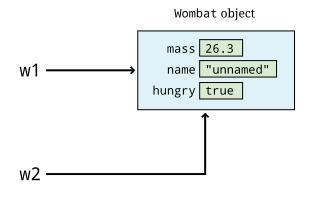
Vombate apontando para o mesmo objeto.Então, qualquer coisa que fazermos com v1 afetará v2 e vice-versa. Por
exemplo, podemos instruir v1 a comer folhas usando o método comerFolhas().
v1.comerFolhas();Talvez isso aumente a massa do objeto para o qual v1 aponta para
26,9 quilogramas. Mas a massa do objeto para o qual V2 aponta também será
aumentada, porque eles são o mesmo objeto. Como as variáveis primitivas
armazenam valores e não referências a objetos, esse tipo de código
funciona de maneira muito diferente com elas. Considere o seguinte.
int a = 10;
int b = a;
a = a + 5;Neste código, a é inicializado com o valor 10, e b é
inicializado com o mesmo valor que a tem, ou seja, 10. A terceira linha
aumenta o valor de a para 15, mas b permanece em 10.
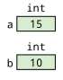
int armazenam valores, não referências.Agora que destacamos algumas das diferenças entre tipos primitivos e
tipos de referência, explicaremos o tipo String mais detalhadamente. Você o utiliza
com frequência, mas ele possui algumas características incomuns que não são compartilhadas por
outros tipos de referência.
Noções básicas sobre String
O tipo String é usado para representar texto em Java. Um objeto String
contém uma sequência de zero ou mais valores char. Ao contrário de todos os outros
tipos de referência, existe uma forma literal para objetos String. Esses
literais são escritos com o texto que você deseja representar entre
aspas duplas ("), como "Fight the power!". Você pode declarar uma
referência String e inicializá-la atribuindo-a a outra
referência String ou a um literal String. Como qualquer outra referência, você
pode deixá-la não inicializada.
Há uma diferença entre uma String não inicializada (uma referência
que aponta para null) e uma String de comprimento 0. Uma String de comprimento
0 também é conhecida como string vazia e é escrita como "“. O caractere de espaço
(” ") e sequências de escape como "\n" também podem fazer parte de
uma String e aumentar seu comprimento. Por exemplo, "ABC" contém três
caracteres, mas a String "A B C" tem cinco, porque os espaços em
cada lado de "B" contam. O próximo exemplo ilustra algumas maneiras de
definir e usar o tipo String.
StringAs declarações a seguir definem duas referências String chamadas
greeting e title e inicializam cada uma com um literal.
String greeting = "Bonjour!"
String title = "French Greeting";Como você viu em Capítulo 2,
podemos exibir valores String usando os métodos System.out.print() e
JOptionPane.
System.out.println(greeting);
JOptionPane.showMessageDialog(null, greeting, title, JOptionPane.INFORMATION_MESSAGE);A primeira instrução acima exibe Bonjour! no terminal. A
segunda instrução cria uma caixa de diálogo com o título Saudação em francês
e a mensagem Bonjour!
Operações com String
Em Capítulo 2, você viu que podemos
concatenar dois objetos String em um terceiro objeto String
usando o operador +. Esse operador é incomum para um tipo de referência.
Quase todos os outros tipos de referência só podem usar o operador de atribuição
(=) e o operador de comparação (==). Assim como outros tipos de referência
, a classe String fornece métodos para interação. Apresentamos
alguns métodos String nesta seção e nas seções seguintes, mas a
classe String define muitos outros.
StringAqui está outro exemplo de combinação de objetos String usando o operador +
.
String argument = "the cannon";
String phrase = "No argument but " + argument + "!";Nessas instruções, inicializamos argument como "the cannon". Em seguida,
calculamos o valor de phrase somando, ou concatenando, três
valores String: "No argument but ", o valor de argument e
"!" . O resultado é `"No argument but the cannon!". Se argument tivesse
sido inicializado como "a pie in the face", então phrase apontaria, em vez disso, para
"No argument but a pie in the face!".
Outra maneira de concatenar dois objetos String é usando o
método concat() de String.
String argument = "the cannon";
String exclamation = "!";
String phraseStart = "No argument but ";
String phrase = phraseStart.concat(argument);
phrase = phrase.concat(exclamation);Esta sequência de instruções dá o mesmo resultado que a anterior
usando o operador +. Na prática, o método concat() raramente é
usado porque o operador + é muito prático. Observe que os objetos String
em Java são imutáveis, o que significa que chamar um método em um
objeto String nunca o alterará. No código acima, chamar
concat() cria novos objetos String. A referência phrase aponta
primeiro para um String e, em seguida, para um novo String na linha seguinte.
Nesse caso, a referência pode ser alterada, mas um objeto String
nunca muda depois de criado. Essa distinção é sutil, mas
importante.
Uma série de outros métodos pode ser usada em um String, assim como concat().
Por exemplo, o comprimento de um String pode ser obtido usando o método length()
. As instruções a seguir imprimem 30 no terminal.
String motto = "Lute pelo seu direito de festejar!";
System.out.println(motto.length()):String literais também são objetos String, e você pode chamar métodos
sobre eles. O código a seguir armazena 11 em letters.
int letters = "cellar door".length();Lembre-se de que um String é uma sequência de valores char. Se você quiser
descobrir qual valor char está em uma determinada posição dentro de um String, você
pode usar o método charAt().
Esse método é chamado com um valor int que indica o índice que você deseja
conhecer. Os índices dentro de um String começam em 0, não em 1.
A numeração baseada em zero é amplamente utilizada em programação, e discutimos
isso mais detalhadamente em Capítulo 6. Pode ajudar se você pensar
no índice como o número de caracteres que aparecem antes do caractere
no índice especificado. O próximo exemplo mostra como charAt() pode ser
usado.
char em um índicePara ver qual é o char em uma determinada posição, chamamos charAt() com o
índice em questão, conforme mostrado abaixo.
String word = "antidisestablishmentarianism";
char letter = word.charAt(11);Nesse caso, letter recebe o valor "b". Lembre-se de que os índices
para valores char dentro de uma String começam em 0. Assim, o char no
índice 0 é "a", o char no índice 1 é "n", o char no índice 2
é "t" e assim por diante. Se você contar até o décimo segundo char (que tem
índice 11), ele deve ser `"b" `.
Cada char dentro de uma String conta, seja uma letra, um
dígito, um espaço, um sinal de pontuação ou algum outro símbolo.
String text = "^_^ l337 #haxor# skillz!";
System.out.println(text.charAt(10));Este código imprime h, já que "h" é o décimo primeiro char (com índice
10) em text.
Uma sequência contígua de caracteres dentro de uma String é chamada de
substring. Por exemplo, algumas substrings de
"Throw your hands in the air!" são "T", "Throw", "hands" e
"ur ha". Observe que "Ty" não é uma substring porque esses caracteres
não aparecem um ao lado do outro.
O próximo exemplo mostra como usar o método substring() para recuperar uma
subsequência de um String existente.
Você pode gerar uma subcadeia de uma String (que é, ela própria, uma String) usando o
método substring(). O método substring() recebe dois argumentos: o índice onde
a subcadeia começa e o índice imediatamente após seu término, conforme mostrado no código a seguir.
String description = "slovenly";
String emotion = description.substring(1, 5);
System.out.println(emotion);Este trecho de código imprime love, já que esses são os caracteres nos índices
1 a 4 de "slovenly". Lembre-se de que os índices de String são sempre baseados em zero. Além disso,
o segundo argumento de substring() é o índice após o último que você deseja na sua subcadeia.
Embora esse comportamento seja confuso, é um padrão comum em muitas bibliotecas de strings diferentes em várias
linguagens diferentes. Uma maneira de pensar nisso é que o comprimento da subcadeia é o
segundo parâmetro menos o primeiro. Neste caso, 5 - 1 = 4, o comprimento de "love".
A classe String também fornece o método indexOf() para encontrar a posição
de uma subcadeia, conforme mostrado no próximo exemplo.
String searchSuponha que desejemos encontrar uma String dentro de outra String. Para fazer isso,
chamamos o método indexOf() na String em que estamos pesquisando
, com a String que estamos procurando como argumento.
String countries = "USA Mexico China Canada";
String search = "China";
System.out.println(countries.indexOf(search));O método indexOf() retorna um valor int que indica a posição da
String que estamos procurando. No código acima, a saída é 11
porque "China" aparece a partir do índice 11 dentro da String
String. Outra maneira de pensar nisso é que há 11 caracteres
antes de "China" em countries. Se a substring fornecida não for encontrada, o método indexOf()
retorna -1. Por exemplo, -1 será impresso no terminal
se substituirmos a instrução de impressão acima pela seguinte.
System.out.println(countries.indexOf("Honduras"));Existem vários outros métodos fornecidos por String que apresentaremos conforme a necessidade. Se você estiver curioso, consulte a documentação Java para String no Oracle https://docs.oracle.com/en/java/javase/21/docs/api/java.base/ java/lang/String.html[Documentação de String^] para obter uma lista completa dos métodos disponíveis.
3.3.4. Atribuição e comparação
Tanto atribuir uma variável a outra quanto testar duas variáveis para verificar se são iguais uma à outra são operações importantes em Java. Essas operações são usadas tanto em tipos primitivos quanto em tipos de referência, mas há diferenças sutis entre os dois que discutiremos a seguir.
Instruções de atribuição
Atribuição é o ato de definir uma variável com o valor de outra.
Com um tipo primitivo, o valor contido em uma variável é copiado para
a outra. Com um tipo de referência, a seta que aponta para o objeto é
copiada. Todos os tipos em Java realizam atribuição com o operador de atribuição
(=).
Como discutimos, os valores podem ser calculados e, em seguida, atribuídos a variáveis, como na instrução a seguir.
int data = Integer.parseInt(response);Em Java, uma instrução que calcula um valor e o atribui é chamada de instrução de atribuição. A forma genérica da instrução de atribuição é a seguinte.
identificador = expressão;Aqui, identificador fornece o nome de alguma variável. Por exemplo, na
instrução acima, data é o nome da variável.
O lado direito de uma instrução de atribuição é uma expressão que retorna um valor que é atribuído à variável no lado esquerdo. Uma instrução de atribuição também pode ser considerada uma expressão, permitindo empilhar várias atribuições em uma única linha, como no seguinte código.
int a, b, c;
a = b = c = 15;O compilador Java verifica a compatibilidade de tipos entre o lado esquerdo e o lado direito de uma instrução de atribuição. Se o lado direito for de um tipo mais amplo que o lado esquerdo (ou for completamente incompatível), o compilador gera um erro, como nos casos a seguir.
int number = 4. 9;
String text = 9;Comparação
Para comparar dois valores e verificar se são iguais, usa-se o operador de comparação
(==) em Java. Com tipos primitivos, esse tipo de verificação é
intuitivo: o resultado é true se os dois valores forem iguais.
Com tipos de referência, o valor mantido pela variável é a seta
que aponta para o objeto. Duas variáveis de referência podem apontar para objetos diferentes
com conteúdo idêntico e retornar false quando comparadas entre
si. A seguir, apresentamos exemplos dessas comparações.
Considere as seguintes linhas de código.
int x = 5;
int y = 2 + 3;
boolean z = (x == y);O valor da variável z é true porque x e y contêm os mesmos
valores. Se, em vez disso, fosse atribuído 6 a x, z seria false.
Agora, considere o código a seguir:
String thing1 = new String("Magical mystery");
String thing2 = new String("Magical mystery");
String thing3 = new String("Tragical tapestry");
thing1, thing2 e thing3 (a) em seus estados iniciais e (b) após a atribuição thing1 = thing2;.Este código declara e inicializa três valores String. Embora seja
possível armazenar String literais diretamente sem invocar um construtor String
, usamos esse estilo de criação de String para ilustrar nosso
argumento, já que o Java pode realizar algumas otimizações confusas caso contrário.
As variáveis thing1 e thing2 apontam para valores String que contêm
sequências idênticas de caracteres. A variável thing3 aponta para uma
String diferente. Considere a seguinte instrução.
boolean same = (thing1 == thing3);Nesse caso, o valor de same é claramente false, pois os dois
valores String não são iguais. E quanto ao caso a seguir?
boolean same = (thing1 == thing2);Novamente, same contém false. Embora thing1 e thing2 apontem para
objetos idênticos, elas apontam para objetos diferentes objetos idênticos. Como
o valor mantido por uma referência é a seta que aponta para o objeto,
o operador de comparação só mostra que duas referências são iguais se
elas apontam para o mesmo objeto.
Para entender melhor a comparação entre tipos de referência, considere a Figura 3.4(a), que mostra três objetos diferentes . Observe que cada referência aponta para um objeto distinto, mesmo que dois objetos tenham o mesmo conteúdo.
Agora considere a seguinte atribuição.
thing1 = thing2;Conforme mostrado na Figura 3.4(b), essa atribuição aponta
a referência thing1 para o mesmo local que a referência thing2. Então,
(thing1 == thing2) seria true.
O operador == geralmente não é muito útil com referências, e o
método equals() deve ser usado em seu lugar. Esse método compara o
conteúdo dos objetos da maneira que o projetista do tipo especificar.
Por exemplo:
thing1.equals(thing2)Esta instrução é true quando thing1 e thing2 apontam para objetos
String idênticos, mesmo que sejam objetos diferentes.
3.3.5. Constantes
Além das variáveis normais, podemos definir constantes nomeadas. Uma
constante nomeada é semelhante a uma variável do mesmo tipo, exceto que seu
valor não pode ser alterado uma vez definido. Uma constante em Java é declarada como
qualquer outra variável, com a adição da palavra-chave final antes da
declaração.
A convenção em Java (e em muitas outras linguagens) é nomear constantes
com letras maiúsculas. Como o camel case não pode mais ser usado para
distinguir onde uma palavra começa e outra termina, um sublinhado (_) é
usado para separar palavras. Aqui estão alguns exemplos de declarações de constantes nomeadas
.
final int POPULATION = 25000;
final double PLANCK_CONSTANT = 6.626E-34;
final boolean FLAG = false;
final char FIRST_INITIAL = "A";
final String MESSAGE = "All your base are belong to us.";Neste código, o valor de POPULATION é 25000 e não pode ser
alterado. Por exemplo, se você escrever agora POPULATION = 30000; em uma linha posterior
, seu compilador irá gerar um erro. PLANCK_CONSTANT, FLAG,
FIRST_INITIAL e MESSAGE também são definidas como constantes nomeadas.
Devido à sintaxe usada pelo Java, essas constantes são às vezes chamadas
de variáveis finais.
No caso de MESSAGE e todas as outras variáveis de referência, ser
final significa que a referência nunca pode apontar para um objeto diferente.
Mesmo com uma referência final, os próprios objetos podem mudar se
seus métodos permitirem. No entanto, objetos String
nunca podem mudar, pois são imutáveis.
Constantes nomeadas são úteis de duas maneiras. Primeiro, uma constante bem nomeada pode
tornar seu código mais legível do que usar um literal. Segundo, se você
precisar alterar o valor para uma constante diferente, você só precisa
alterá-la em um único lugar. Por exemplo, se você usou 25000 em cinco
lugares diferentes no seu programa, alterá-la para 30000 requer cinco
alterações. Se você usou POPULATION em todo o seu programa em vez
de um literal, você só precisa alterar seu valor uma vez.
3.3.6. Declarações var
Esta seção descreve uma alteração na linguagem Java introduzida no Java 10. Considere as seguintes declarações de variáveis que incluem uma atribuição de valor inicial.
int x = 10;
String message = "Hello there."
Wombat w = new Wombat();Cada um dos nomes de tipo na declaração (int, String e Wombat) é óbvio
com base no tipo do valor inicial. A variável x é obviamente um int, a
variável message é obviamente um String e a variável w é obviamente um Wombat.
A partir do Java 10, o compilador pode inferir o tipo da variável a partir
do tipo do valor inicial, eliminando a necessidade de uma declaração de tipo.
Esse recurso é chamado de inferência de tipo de variável local. A declaração
de tipo pode ser substituída pelo “nome de tipo reservado” var e o
compilador fará a inferência.
var x = 10;
var message = " Olá."
var w = new Wombat();O uso de var pode resultar em um código mais claro e conciso, desde que o tipo
inferido pelo compilador seja óbvio e corresponda à sua intenção. Por
exemplo, se você pretendesse que x fosse um double, precisaria usar uma
declaração como uma das seguintes.
// Use um literal double como valor inicial
var x = 10.0;
// Ou declare explicitamente o tipo
double x = 10;Observe que esse recurso é chamado de inferência de tipo de variável local. O compilador só faz inferência de tipo em variáveis locais, não em campos, parâmetros de método ou tipos de retorno.
3.4. Sintaxe: Bibliotecas úteis
É difícil escrever software, mas muitos dos mesmos problemas
surgem repetidamente. Se tivéssemos que resolver esses problemas toda vez que
escrevêssemos um programa, nunca chegaríamos a lugar nenhum. O Java nos permite usar código
escrito por outras pessoas, chamado de bibliotecas. Um dos pontos fortes do Java
é sua ampla biblioteca padrão, que pode ser usada por qualquer programador Java
sem a necessidade de downloads especiais. Você já usou a classe Scanner,
a classe Math e talvez a classe JOptionPane, que fazem
parte de bibliotecas. A seguir, vamos nos aprofundar na classe Math e em
algumas outras bibliotecas úteis.
3.4.1. A biblioteca Math
Operadores aritméticos básicos são úteis, mas o Java também oferece um rico conjunto
de métodos matemáticos por meio da classe Math.
A tabela a seguir lista alguns dos métodos disponíveis. Para obter uma
lista completa dos métodos fornecidos pela classe Math no momento da
redação, consulte a
documentação Math.
Observe que todos os ângulos são expressos em radianos.
| Método | Exemplo de uso | Finalidade |
|---|---|---|
Funções trigonométricas |
||
cos() |
double adjacente = hipotenusa * Math.cos(theta); |
Calcula o cosseno do argumento. |
sin() |
double oposto = hipotenusa * Math.sin (theta); |
Calcula o seno do argumento. |
tan() |
double oposto = adjacente * Math.tan(theta); |
Calcula a tangente do argumento. |
Exponenciação e logaritmos |
||
exp() |
double população = 250 * Math.exp(0.03 * tempo); |
Calcula ex, onde x é o argumento. |
log() |
double digits = Math.log(1000000); |
Calcule o logaritmo natural do argumento. |
pow() |
double money = principal * Math.pow(1.0 + rate, time); |
Calcule ab, onde a e b são o primeiro e o segundo argumentos. |
Diversos |
||
random() |
double percent = Math.random(); |
Gera um número aleatório x onde 0.0 ≤ x < 1.0. |
round() |
long items = Math.round(material); |
Arredonda para o |
sqrt() |
double hypotenuse = Math.sqrt(a*a+b*b); |
Calcula a raiz quadrada do argumento. |
MathAqui está um programa que usa o método Math.pow() para calcular juros compostos
. Ao contrário de Scanner e JOptionPane, a classe Math é
importada por padrão em programas Java e não requer nenhuma instrução de importação
explícita.
import java.util.*;
class CompoundInterestCalculator {
public static void main(String[] args) {
Scanner in = new Scanner(System.in);
System.out.println("Compound Interest Calculator");
System.out.println();
System.out.print("Enter starting balance: ");
double startingBalance = in.nextDouble();
System.out.print("Enter interest rate: ");
double rate = in.nextDouble();
System.out.print("Enter time in years: ");
double years = in.nextDouble();
System.out.print("Enter compounding frequency: ");
double frequency = in.nextDouble();
double newBalance = startingBalance *
Math.pow(1.0 + rate/frequency, frequency*years);
double interest = newBalance - startingBalance;
System.out.println("Interest earned: $" + interest);
System.out.println("New balance: $" + newBalance);
}
}Além dos métodos, a biblioteca Math contém constantes nomeadas
, incluindo o número de Euler e e π. Estas
são escritas no código como Math.E e Math.PI, respectivamente. Por
exemplo, a seguinte instrução de atribuição calcula a circunferência
de um círculo com raio dado pela variável radius, usando a
fórmula 2πr.
double circumference = 2 * Math.PI * radius;3.4.2. Números aleatórios
Números aleatórios são frequentemente necessários em aplicações como jogos e simulações científicas. Por exemplo, jogos de cartas exigem uma distribuição aleatória das cartas. Para simular um baralho de 52 cartas, poderíamos associar um inteiro de 1 a 52 a cada carta. Se tivéssemos uma lista de esses valores, poderíamos trocar cada valor da lista por um valor em uma posição aleatória mais adiante na lista. Fazer isso é equivalente a embaralhar o baralho.
Java fornece a classe Random no pacote java.util para gerar
valores aleatórios. Antes de gerar um número aleatório com essa classe,
é necessário criar um objeto Random da seguinte maneira.
Random random = new Random();Aqui, criamos um objeto chamado random do tipo Random.
Dependendo do tipo de valor aleatório necessário, você pode usar os métodos
nextInt(), nextBoolean() ou nextDouble() para gerar um valor aleatório
do tipo correspondente.
// Número inteiro aleatório com todos os valores possíveis
int saldo = random.nextInt();
// Número inteiro aleatório entre 0 (inclusive) e 130 (exclusivo)
int idadeHumana = random.nextInt(130);
// Valor booleano aleatório
boolean gender = random.nextBoolean();
// Valor de ponto flutuante aleatório entre 0,0 (inclusive) e 1,0 (exclusivo)
double percent = random.nextDouble();Nesses exemplos, inclusive significa que o número pode ser gerado,
enquanto exclusivo significa que o número não pode ser. Assim, a chamada
random.nextInt(130) gera os inteiros de 0 a 129, mas nunca
130. Limites superiores exclusivos em intervalos de valores aleatórios são muito comuns
na programação.
Para gerar um int aleatório entre os valores a e b, sem incluir
b, use o código a seguir, supondo que você tenha um objeto Random chamado
random.
int count = random.nextInt(b - a) + a;A chamada ao método nextInt() gera um valor entre 0
e b - a, e adicionar a o desloca para o
intervalo de a até (mas não incluindo) b.
Gerar um double aleatório entre os valores a e b é semelhante
, exceto que nextDouble() sempre gera um valor entre 0.0 e
1.0, sem incluir 1.0. Portanto, você deve escalar a saída por b - a
, conforme mostrado abaixo.
double value = random.nextDouble()*(b - a) + a;O exemplo a seguir ilustra um uso potencial de números aleatórios em um videogame.
Suponha que você esteja criando um videogame no qual o herói deve lutar contra um dragão com atributos aleatórios. Código 3.2 gera valores aleatórios para a idade, altura, gênero e pontos de vida do dragão.
import java.util.*; (1)
public class DragonAttributes {
public static void main(String[] args) {
Random random = new Random(); (2)
int age = random.nextInt(100) + 1; (3)
double height = random.nextDouble()*30; (4)
boolean gender = random.nextBoolean(); (5)
int hitPoints = random.nextInt(51) + 25; (6)
System.out.println("Dragon Statistics");
System.out.println("Age:\t\t" + age);
System.out.format("Height:\t\t%.1f feet\n", height);
System.out.println("Female:\t\t" + gender);
System.out.println("Hit points:\t" + hitPoints);
}
}| 1 | Começamos importando java.util.* para incluir todas as classes
do pacote java.util, incluindo Random. |
| 2 | Em seguida, criamos um objeto random do tipo Random. |
| 3 | Usamos random para gerar um int aleatório entre 0 e 99, ao qual adicionamos 1, obtendo uma idade entre 1 e 100. |
| 4 | Para gerar a altura, multiplicamos um double aleatório por 75, obtendo um valor entre 0.0 e 75.0 (excluindo os extremos). |
| 5 | Como há apenas duas opções para o gênero de um dragão, geramos um
valor boolean aleatório, interpretando true como feminino e false como
masculino. |
| 6 | Finalmente, determinamos o número de pontos de vida que o dragão tem
gerando um int aleatório entre 0 e 50, e então adicionamos 25 a ele,
resultando em um valor entre 25 e 75. |
Como estamos usando valores aleatórios, a saída do Código 3.2 muda toda vez que executamos o programa. Um exemplo de saída é fornecido abaixo.
Estatísticas do Dragão Idade: 90 Altura: 13,7 pés Fêmea: true Pontos de vida: 67
Se você precisar apenas de um valor double aleatório, pode gerar um número
entre 0,0 e 1,0 (excluindo os extremos) usando o método Math.random()
da classe Math. Esse método é uma maneira rápida e simples de gerar
números aleatórios sem importar java.util.Random ou criar um
objeto Random.
Os números aleatórios gerados pela classe Random e por
Math.random() são números pseudorandom, o que significa que são
gerados por uma fórmula matemática em vez de eventos verdadeiramente aleatórios. Cada
número é calculado usando o anterior, e o número inicial é
determinado usando informações de tempo do sistema operacional. Para a maioria dos propósitos, esses
números pseudoaleatórios são suficientes. Como cada número pode ser previsto
a partir do anterior, os números pseudoaleatórios são insuficientes para algumas
aplicações de segurança. Para esses casos, o Java fornece a classe SecureRandom
, que é mais lenta que Random, mas produz números aleatórios que
são muito mais difíceis de prever.
3.4.3. Classes wrapper
Os tipos de referência possuem métodos que permitem ao usuário interagir com eles de
muitas maneiras úteis. Os tipos primitivos (byte, short, int, long,
float, double, char e boolean) não possuem métodos, mas
às vezes precisamos manipulá-los com métodos ou armazená-los em um local
que exija um tipo de referência.
Para lidar com tais situações, o Java usa classes invólucras, tipos de referência
que correspondem a cada tipo primitivo. Seguindo as convenções do Java
para nomes de classes, os tipos invólucros começam todos com uma letra maiúscula
mas, fora isso, são semelhantes ao nome do tipo primitivo que
suportam: Byte, Short, Integer, Long, Float, Double,
Character e Boolean.
Conversões de String para numéricos
Uma tarefa comum para uma classe wrapper é converter uma representação String
de um número, como "37" ou "2.097", para seu
valor numérico correspondente. Tivemos uma situação desse tipo em
Código 2.3, onde fizemos a conversão da seguinte maneira.
String response = JOptionPane.showInputDialog(null,
"Digite a altura: ", title, JOptionPane.QUESTION_MESSAGE);
height = Double.parseDouble(response);Este código usa o método JOptionPane.showInputDialog() para ler do
usuário a altura na qual uma bola é lançada. Este método sempre
retorna dados como um String. Para que possamos fazer cálculos com o
valor, precisamos convertê-lo para um tipo numérico, como um int ou um
double. Para isso, usamos o método apropriado Byte.parseByte(),
Short.parseShort(), Integer.parseInt(), Long.parseLong(),
Float.parseFloat() ou Double.parseDouble().
O exemplo a seguir mostra conversões de um String para um número
usando três desses métodos.
-
Conversão de
Stringpara numérico
Considere as instruções a seguir, que mostram como uma string pode ser convertida em um valor numérico.
String text = "15";
int count = Integer.parseInt(text);
float value = Float.parseFloat(text);
double tolerance = Double.parseDouble(text);Neste exemplo, declaramos um objeto String chamado text e
o inicializamos como "15". Como text é um String e não um número,
expressões aritméticas como (text*29) são inválidas.
Para usar o String "15" em um cálculo numérico, precisamos
convertê-lo em um número. Usamos os métodos Integer.parseInt(),
Float.parseFloat() e Double.parseDouble() para converter o
String em valores int, float e double, respectivamente. Cada
método nos fornece 15 armazenado como o tipo apropriado.
O que acontece se a String "15.5" (ou mesmo "cinnamon") for fornecida como
entrada para o método Integer.parseInt()? Se a String não estiver
formatada como o tipo apropriado de número, o Java lança uma
NumberFormatException, provavelmente causando a falha do programa. Uma exceção
é um erro ou outra situação inesperada que ocorre no meio da
execução de um programa. Discutimos como trabalhar com exceções em Capítulo 12.
Conversões de numéricos para String
Em alguns casos, a conversão inversa deve ser feita: transformar um número em uma
String equivalente. Uma classe wrapper também pode ser usada para essa tarefa.
Como era de se esperar, o método para converter um número em uma String é o toString()
, que pode ser chamado a partir de uma classe wrapper Byte, Short, Integer, Long, Float
ou Double, dependendo do tipo do número.
String value = Integer.toString(68); // Contém "68"Cada classe wrapper de inteiros (Byte, Short, Integer e Long) possui até mesmo uma
versão do método toString() que converte um número em uma representação String
em uma base específica. Por exemplo, o método a seguir converte
604 para sua representação String em hexadecimal, "25c".
String hex = Integer.toString(604, 16); // Contém "25c"Exceto por esse tipo de conversão de base, muitos programadores raramente usam
métodos toString() porque há uma maneira mais fácil de converter um número (ou qualquer
tipo) em uma String. O operador de concatenação (+) discutido no
Seção 2.3.4.3 pode ser usado para concatenar um número à
string vazia (""), "adicionando" uma versão String do número a, bem,
nada. Usando esse estilo, você pode encontrar um código como o seguinte.
int number = 68;
String text = "" + number; // Contém "68"Embora se possa argumentar que usar o método toString() é mais
legível, a abordagem de concatenação é certamente mais curta de digitar e muito
popular.
Métodos Character
Ao trabalhar com valores char, pode ser útil saber se um
valor específico é um dígito, uma letra ou se possui um caso específico. Também pode
ser útil converter um char para maiúsculas ou minúsculas. Aqui está uma
lista parcial dos métodos fornecidos pela classe wrapper Character para
realizar essas tarefas.
| Método | Finalidade |
|---|---|
isDigit(valor char) |
Retorna |
isLetter (valor char) |
Retorna |
isLetterOrDigit(valor char) |
Retorna |
isLowerCase(valor char) |
Retorna |
isUpperCase(char value) |
Retorna |
isWhitespace(char value) |
Retorna |
toLowerCase(char value) |
Retorna uma versão em minúsculas de |
toUpperCase(char value) |
Retorna uma versão em maiúscula de |
Por exemplo, a variável teste contém true após a execução do seguinte
código.
boolean teste = Character.isLetter("x");E a variável letter contém "M" após a execução do código a seguir
.
char letter = Character.toUpperCase("m");Esses métodos podem ser especialmente úteis ao processar entradas.
Valores máximo e mínimo
Como você deve se lembrar de Capítulo 1, a aritmética de inteiros em Java tem limitações. Se você aumentar um número positivo grande além de seu valor máximo, ele se torna um número negativo de grande magnitude , um fenômeno chamado overflow. Por outro lado, se você diminuir um número negativo de grande magnitude além de seu valor mínimo, ele se torna um número positivo grande, um fenômeno chamado underflow.
Com números de ponto flutuante, aumentar suas magnitudes além de seus valores máximos resulta em valores especiais que o Java reserva para representar o infinito positivo ou negativo, conforme o caso. Se um valor de ponto flutuante ficar muito próximo de zero, ele eventualmente será arredondado para zero.
Além de métodos de conversão úteis, as classes wrapper numéricas
também possuem constantes para os valores máximo e mínimo de cada tipo.
Em vez de tentar lembrar que o maior valor positivo int é
2.147.483.647, você pode usar o equivalente
Integer.MAX_VALUE.
As constantes MAX_VALUE são sempre o maior número positivo que
pode ser representado pelo tipo correspondente. O MIN_VALUE é mais
confuso. Para tipos inteiros, é o maior número negativo em magnitude
. Para tipos de ponto flutuante, é o menor valor positivo diferente de zero
que pode ser representado. Aqui está uma tabela listando essas constantes.
| Constante | Significado |
|---|---|
Byte.MAX_VALUE |
Valor mais positivo que um valor |
Byte.MIN_VALUE |
Valor mais negativo que um valor |
Short.MAX_VALUE |
Valor mais positivo que um valor |
Short.MIN_VALUE |
Valor mais negativo que um valor |
Integer.MAX_VALUE |
Valor mais positivo que um valor |
Integer.MIN_VALUE |
Valor mais negativo que um valor |
Long.MAX_VALUE |
Valor mais positivo que um valor |
Long.MIN_VALUE |
Valor mais negativo que um valor |
Float.MAX_VALUE |
Maior valor absoluto que um valor |
Float.MIN_VALUE |
Menor valor absoluto que um valor |
Double.MAX_VALUE |
Maior valor absoluto que um valor |
Double.MIN_VALUE |
Menor valor absoluto que um valor |
A natureza de retorno ao início da aritmética de inteiros significa que somar 1 a
Integer.MAX_VALUE resulta em Integer.MIN_VALUE. Observe que toda a
aritmética de inteiros em Java é feita assumindo o tipo int, a menos que
especificado explicitamente de outra forma. Assim, Short.MAX_VALUE + 1 não
entra em overflow para um valor negativo, a menos que você armazene o resultado em um short.
As mesmas regras se aplicam ao subfluxo.
O estouro e o subfluxo não funcionam da mesma maneira com os números de ponto flutuante
representados por float e double. A expressão
Double.MAX_VALUE + 1 resulta em Double.MAX_VALUE porque 1 é tão
pequeno em comparação que se perde no erro de arredondamento. No entanto,
1.5*Double.MAX_VALUE resulta em Double.POSITIVE_INFINITY, uma
constante usada para representar qualquer valor maior que Double.MAX_VALUE.
Como Double.MIN_VALUE é o menor número diferente de zero,
Double.MIN_VALUE - 1 é avaliado como -1.0.
Usando classes wrapper para armazenamento
As classes wrapper em Java têm uma personalidade dupla. Por um lado, as próprias classes podem ser usadas para os métodos utilitários e constantes que descrevemos acima. No entanto, os objetos dessas mesmas classes wrapper podem ser usados de uma maneira totalmente diferente para armazenar valores primitivos. Cada tipo primitivo pode ser armazenado em seu tipo wrapper, conforme mostrado abaixo.
Integer fingers = new Integer(5);
Double pi = new Double(3.141592);
Character question = new Character("?");Por que faríamos isso? Há muitas situações em que um método de biblioteca ou estrutura de dados requer um tipo de referência, e não um tipo primitivo. Esses wrappers foram projetados para esses casos em que você precisa tratar um tipo primitivo como um objeto.
Object value = new Integer(42);Para facilitar o trabalho com classes wrapper, o Java 5 e versões superiores oferecem suporte a boxing e unboxing automáticos, o que significa que tipos primitivos serão automaticamente convertidos para seus tipos wrapper (e vice-versa) quando apropriado. Assim, o código anterior poderia ser escrito da seguinte forma.
Integer dedos = 5;
Double pi = 3.141592;
Character pergunta = "?";Programadores que não entendem classes wrapper às vezes usam
tipos primitivos e classes wrapper de forma intercambiável, misturando double e
Double, por exemplo. Evite usar classes wrapper desnecessariamente, já que
elas exigem mais memória e mais computação para realizar operações.
Felizmente, o boxing e o unboxing automáticos reduzem a necessidade de pensar em classes wrapper, e a maioria dos programadores raramente precisará declarar uma referência explícita a uma wrapper. Discutiremos as classes wrapper mais adiante em Capítulo 19, onde elas são usadas para permitir que classes genéricas armazenem tipos primitivos, bem como tipos de referência.
3.5. Solução: Calculadora de custos universitários
Neste capítulo, apresentamos e explicamos mais detalhadamente muitos aspectos da manipulação de dados em Java, incluindo a declaração de variáveis, a atribuição de valores, a realização de operações aritméticas simples e matemáticas mais avançadas, a entrada e saída de dados e o uso do sistema de tipos, que inclui diferenças sutis entre tipos primitivos e tipos de referência. Nossa solução para o problema da calculadora de custos universitários apresentado no início do capítulo utiliza todos esses recursos em algum nível. Apresentamos essa solução abaixo.
import java.util.*; (1)
public class CollegeCosts {
public static void main(String[] args) { (2)
System.out.println("Welcome to the College Cost Calculator!"); (3)
Scanner in = new Scanner(System.in); (4)| 1 | O primeiro passo em nossa solução é
importar java.util.* para que possamos usar a classe Scanner. |
| 2 | Depois de iniciar a classe CollegeCosts, iniciamos o método main(). |
| 3 | Exibimos uma mensagem de boas-vindas para o usuário. |
| 4 | Em seguida, criamos um objeto Scanner. |
A seguir, há uma sequência de solicitações ao usuário intercaladas com entradas feitas
com o objeto Scanner.
System.out.print("Enter your first name:\t\t");
String firstName = in.next(); (1)
System.out.print("Enter your last name:\t\t");
String lastName = in.next(); (2)
System.out.print("Enter tuition per semester:\t$");
double semesterTuition = in.nextDouble(); (3)
System.out.print("Enter rent per month:\t\t$");
double monthlyRent = in.nextDouble(); (4)
System.out.print("Enter food cost per month:\t$");
double monthlyFood = in.nextDouble(); (5)
System.out.print("Annual interest rate:\t\t");
double annualInterest = in.nextDouble(); (6)
System.out.print("Years to pay back your loan:\t");
int years = in.nextInt(); (7)| 1 | O programa lê o nome do usuário como um
String, |
| 2 | o sobrenome do usuário como um String, |
| 3 | o custo da mensalidade por semestre como um double, |
| 4 | o custo mensal do aluguel como um double, |
| 5 | o custo mensal da alimentação como um double, |
| 6 | a taxa de juros do empréstimo como um double, |
| 7 | e o número de anos necessários para pagar o empréstimo como um
int. |
O próximo trecho de código realiza os cálculos necessários.
double yearlyCost = semesterTuition * 2.0 + (monthlyRent + monthlyFood) * 12.0; (1)
double fourYearCost = yearlyCost * 4.0; (2)
double monthlyInterest = annualInterest / 12.0; (3)
double monthlyPayment = fourYearCost * monthlyInterest / (4)
(1.0 - Math.pow(1.0 + monthlyInterest, -years * 12.0));
double totalLoanCost = monthlyPayment * 12.0 * years; (5)| 1 | Ele calcula o custo anual total multiplicando o custo semestral por dois, multiplicando os custos mensais de aluguel e alimentação por 12 e somando os resultados. |
| 2 | O custo de quatro anos é simplesmente quatro vezes o custo anual. |
| 3 | Para calcular o pagamento mensal, calculamos os juros mensais dividindo a taxa de juros anual por 12 e inserindo esse valor na fórmula do início do capítulo. |
| 4 | Finalmente, o custo total do empréstimo é o pagamento mensal multiplicado por 12 vezes o número de anos. |
Resta apenas imprimir o resultado.
System.out.println("\nCollege costs for " + firstName + " " + lastName ); (1)
System.out.println("***************************************");
System.out.format("Yearly cost:\t\t\t$%.2f%n", yearlyCost); (2)
System.out.format("Four year cost:\t\t\t$%.2f%n", fourYearCost);
System.out.format("Monthly loan payment:\t\t$%.2f%n", monthlyPayment);
System.out.format("Total loan cost:\t\t$%.2f%n", totalLoanCost );
}
}| 1 | Primeiro, exibimos um cabeçalho descrevendo a saída a seguir como custos da faculdade para o usuário. |
| 2 | Usando
System.out.format(), conforme descrito em Seção 3.3.2, imprimimos o custo anual, o custo de quatro anos, a prestação mensal do empréstimo
e o custo total, todos formatados com o símbolo do dólar, duas casas decimais
e tabulações para que a saída fique alinhada. |
3.6. Concorrência: Expressões
Em Seção 2.5, apresentamos as ideias de decomposição de tarefas e de domínios que poderiam ser usadas para resolver um problema em paralelo. Ao dividir as tarefas a serem realizadas (como na decomposição de tarefas ) ou dividir uma grande quantidade de dados em partes (como na decomposição de domínios), podemos abordar um problema com vários trabalhadores para concluir o trabalho mais rapidamente.
3.6.1. Dividindo expressões
A realização de operações aritméticas é uma das poucas sintaxes Java que apresentamos que podem ser usadas para resolver problemas diretamente, mas a avaliação de uma única expressão matemática geralmente não justifica a concorrência. Se os termos na expressão forem, eles próprios, funções complexas (como integrações numéricas ou simulações que produzem respostas), pode ser razoável avaliar essas funções simultaneamente.
Nesta seção, apresentamos um exemplo de divisão de uma expressão em subexpressões menores que poderiam ser avaliadas em paralelo. As etapas básicas subjacentes à avaliação paralela de expressões são as seguintes.
-
Identificar subexpressões que sejam independentes umas das outras.
-
Crie um thread separado para avaliar cada subexpressão.
-
Combine os resultados de cada thread para obter uma resposta final.
Embora essa sequência de etapas pareça simples, cada etapa pode ser complexa. Pior ainda, um descuido em qualquer etapa pode resultar em uma solução concorrente que execute mais lentamente do que a solução sequencial ou até mesmo forneça a resposta errada . O exemplo a seguir ilustra essas etapas.
Considere a seguinte instrução:
double value = f(a,b)*g(c);Esta instrução avalia os métodos f() e g(), multiplica os
valores calculados e atribui o resultado à variável valor. Em
Figura 3.5, mostramos duas maneiras de avaliar a
expressão f(a,b)*g(c). Figura 3.5(a) mostra
a avaliação sequencial da expressão, onde f() é calculada, seguida por g()
e, então, os dois resultados são multiplicados para obter o valor final.
Figura 3.5(b) mostra a avaliação da expressão
na qual f() e g() são avaliadas simultaneamente.

value = f(a,b)*g(c) com abordagens (a) sequencial e (b) simultânea.Em um processador multicore, o cálculo de f() e g() poderia ser
executado em núcleos separados. Podemos criar uma thread para cada método
e aguardar a conclusão das threads. Após a conclusão, podemos recuperar
os resultados de cada cálculo e multiplicá-los entre si, como em
Figura 3.5(b). Código 3.3
ilustra essa abordagem simultânea.
public class SplitExpression {
public static void main(String[] args) {
ComputeF fThread = new ComputeF(3.14, 2.99); (1)
ComputeG gThread = new ComputeG(5.55); (2)
fThread.start(); (3)
gThread.start(); (4)
try {
fThread.join(); (5)
gThread.join(); (6)
double fResult = fThread.getResult(); (7)
double gResult = gThread.getResult(); (8)
double answer = fResult*gResult; (9)
System.out.println("Result of f: " + fResult );
System.out.println("Result of g: " + gResult );
System.out.println("Final answer: " + answer);
} catch (InterruptedException e){
System.out.println("Computation interrupted!");
}
}
}| 1 | Criamos um objeto chamado fThread que recebe dois argumentos, 3.14 e 2.99 neste exemplo. |
| 2 | Criamos outro objeto chamado gThread que recebe um, 5.55. Ambos os objetos têm tipos que estendem a classe Thread, o que significa que podem ser executados de forma independente. |
| 3 | Iniciamos a execução da primeira thread. |
| 4 | Iniciamos a execução da segunda thread. Todo objeto cujo tipo seja Thread (ou um descendente de Thread, o que discutiremos em Capítulo 11) possui um método start() que inicia sua execução como uma thread separada. |
| 5 | Esperamos que a primeira thread termine. Como sabemos quando uma thread termina de ser executada? Todo objeto Thread possui um método join(). Se algum código chamar o método join() de uma thread, o método não retornará até que a thread esteja concluída. Quando o código está esperando que uma thread termine, é possível que ele seja interrompido se alguma outra thread se cansar de ver o código esperando sem fazer nada. Se isso acontecer, uma InterruptedException é lançada. Exceções são a maneira como o Java lida com erros e outras situações incomuns. Discutiremos isso mais detalhadamente em
Capítulo 12, mas, por enquanto, você só precisa saber que
código (como o método join()) que pode causar certos tipos de
exceções (como a InterruptedException) precisa estar dentro de um
bloco try. Após o bloco try vem um bloco catch que determina o que
fazer caso ocorra essa exceção. No nosso caso, imprimimos
"Computação interrompida!" |
| 6 | Esperamos que a segunda thread termine. |
| 7 | Assim que as threads concluírem suas respectivas tarefas, a execução do
Código 3.3 é retomada, e obtemos o resultado da
computação feita por fThread chamando seu método getResult(). |
| 8 | Na linha seguinte, chamamos o método getResult() em gThread para obter
seu resultado. Observe que poderíamos ter chamado esses métodos getResult()
antes das chamadas join(), mas os cálculos poderiam não ter
sido concluídos, gerando resultados inválidos ou incorretos (ou causando a falha do
programa). |
| 9 | Finalmente, esses dois valores calculados são multiplicados para obter o resultado final, que é atribuído a answer e impresso. |
Gostaríamos de mostrar como as classes ComputeF e ComputeG são escritas,
mas vamos deixar isso para depois, pois elas utilizam conceitos relacionados a métodos,
projeto de classes e herança que abordaremos em Capítulo 8, Capítulo 9 e Capítulo 11.
Se você não entender todos os elementos de Código 3.3, não se desespere! Estamos tentando dar a você um exemplo de como funciona a concorrência em Java, mas não se pode esperar que você domine todos os detalhes nesta fase. No entanto, a concorrência em Java geralmente seguirá as etapas mostradas:
-
Criação de objetos
Thread(ou descendentes deThread) -
Chamada do método
start()nesses objetos para iniciá-los em execução -
Chamada do método
join()neles para aguardar que concluam -
Recuperação dos resultados (se houver) dos cálculos realizados pelos objetos
3.6.2. Cuidados ao dividir expressões
O exemplo acima ilustra como você poderia dividir uma expressão e
avaliá-la de forma concorrente. Observe os seguintes pontos ao decidir
se deve ou não usar concorrência. Primeiro, seu programa será executado mais rapidamente
em concorrência apenas se o trabalho realizado for complexo o suficiente para que seu
cálculo demore significativamente mais tempo do que o tempo necessário para criar as
threads necessárias. No exemplo acima, os métodos f() e g()
devem ser complexos o suficiente para que demore um tempo significativo para
avaliá-los. Caso contrário, a concorrência não reduzirá o tempo de execução.
Esse aspecto da aceleração é explicado em detalhes em
Capítulo 14.
Segundo, dividir uma expressão (ou qualquer sequência complexa de
cálculos) é fácil quando seus componentes individuais são independentes. Se
eles forem interdependentes, a divisão requer cuidado para evitar erros sutis de programação
. Considere a expressão f(a) + g(b) e suponha que
f() modifique o valor de b durante a execução. Tal modificação é
chamada de efeito colateral. Esse efeito colateral cria uma dependência entre
f() e g(). A execução simultânea desses dois métodos deve ser feita
com cuidado, se é que pode ser feita. Capítulo 15
discute a concorrência na presença de dependências.
3.7. Resumo
Em uma linguagem fortemente tipada como Java, os tipos são um conceito importante . Cada literal e variável em Java possui um tipo, que especifica os valores possíveis que os itens desse tipo podem assumir e as operações que podem ser realizadas com eles. Os tipos são usados para detectar erros de programação em tempo de compilação.
Java possui um pequeno conjunto de tipos primitivos, como int e double
, que armazenam valores únicos e utilizam operadores para manipulá-los. Java também
possui tipos de referência, que utilizam tipos primitivos como blocos de construção, podem
ser criados por qualquer programador Java, podem conter dados arbitrariamente complexos
e são manipulados por meio de métodos. Um dos tipos de referência mais comumente usados
é String, que é utilizado para armazenar texto de qualquer comprimento.
Várias classes de biblioteca foram fornecidas pelos desenvolvedores do
Java. Programas que realizam operações matemáticas além da simples
aritmética podem precisar usar métodos da classe Math. Programas que
precisam gerar números aleatórios podem usar métodos da classe Random.
Conversões e outras manipulações úteis de tipos primitivos são
fornecidas por classes wrapper.
Também apresentamos um resumo da sintaxe para criar, executar e aguardar a conclusão de threads. Essas threads podem ser usadas para acelerar a avaliação de cálculos em processadores multicore, mas somente se os cálculos forem longos, complexos e não muito interdependentes.
3.8. Exercícios
Problemas conceituais
-
Qual é a diferença entre o conjunto dos números inteiros da matemática e os conjuntos definidos por
intelong? -
Em Exemplo 3.11, a soma de duas variáveis
intresultou em outro valorint, que não pôde ser armazenado em uma variávelbyte. Esse código teria funcionado se as variáveisaebtivessem sido declaradas com o tipobyte? E searecebesse o valor121ebrecebesse98? -
As três instruções a seguir são válidas em Java (se incluídas corretamente dentro de um método). No entanto, se alterássemos
2para2.0ou5para5.0, as instruções não seriam válidas. Explique por quê.float areaDoQuarto = 2; float areaDaCasa = 5; float area = areaDoQuarto * areaDaCasa; -
Considere as seguintes declarações de variáveis .
int x = 3, y = 4, z = -9; float p = 3.99f, q = -9.89f; int population1 = 15000, population2 = 8000; final double MAXIMUM_LEVEL = 350; double limitPerCapita = 0.03; int age = 14; final int MAXIMUM_AGE = 23; boolean allowed = false;Agora avalie cada uma das seguintes expressões como
trueoufalse.-
MAXIMUM_LEVEL/population1 > limitPerCapita && MAXIMUM_LEVEL/population2 < limitPerCapita -
MAXIMUM_LEVEL/population1 > limitPerCapita || MAXIMUM_LEVEL/population2 < limitPerCapita -
age < MAXIMUM_AGE && allowed -
(x < y && y > z) || (p > q && population1 < population2)
-
-
Avalie as seguintes expressões manualmente e, em seguida, verifique os resultados com um compilador Java.
-
5 & 6 -
5 | 6 -
5 ^ 6 -
~5 -
5 >> 2 -
5 << 2 -
5 >>> 2
-
-
Avalie as seguintes expressões manualmente e, em seguida, verifique os resultados com um compilador Java.
-
Byte.MIN_VALUE - 1 -
Byte.MAX_VALUE + 1 -
Integer.MIN_VALUE - 1
-
-
Avalie as seguintes expressões manualmente e, em seguida, verifique os resultados com um compilador Java.
-
Float.MAX_VALUE + 1 -
Double.MAX_VALUE - 1 -
-Double.MAX_VALUE - 1 -
-Double.MIN_VALUE - 1 -
-Double.MIN_VALUE + 1
-
-
Quando avaliada em Java, a expressão
2*Double.MAX_VALUEresulta emDouble.POSITIVE_INFINITYpara indicar que o valor máximo representável foi excedido. No entanto, a expressãoDouble.MAX_VALUE + 1resulta emDouble.MAX_VALUE. Por que o segundo caso não resulta emDouble.POSITIVE_INFINITYtambém? -
Explique o que é impresso quando as seguintes instruções são executadas.
System.out.println(15 + 20); System.out.println("15" + 20); System.out.println("" + 15 + 20); -
Para cada uma das seguintes expressões Java, indique os tipos de cada valor utilizado e o tipo do resultado quando a expressão é avaliada.
-
3 + 4 -
3 + 4.0 -
3.0 + 4.0 -
3.0f + 4.0 -
(double)(3 + 4) -
(double)(3.0 + 4.0) -
Math.round(3 * 4.2) -
Math.round(3.2 * 4.9) -
Math.round(15.5 * 4.0) -
(int)(15.5 * 4.0) -
Math.round(3.154)
-
-
Para cada uma das expressões a seguir, determine a quantidade máxima de concorrência que pode ser alcançada. Usando um diagrama semelhante a Figura 3.5(b), mostre como o cálculo de cada expressão será realizado. Suponha que não haja efeitos colaterais. Observe que você pode criar threads separadas para múltiplas instâncias do método
f().-
f(a) + f(b) + f(c) -
f(a * g(b)) -
f(g(a)) + f(b) + f(c)
-
-
Responda às seguintes perguntas sobre tipos, valores e referências.
-
Qual é a diferença entre um valor e o tipo que o valor possui?
-
Em Java, o tipo primitivo
intrepresenta um conjunto limitado de números inteiros, não o conjunto completo de números inteiros da matemática. Por que isso acontece? Por que os criadores do Java não permitiram queintrepresentasse todos os números inteiros? -
Como as operações são definidas para tipos de referência?
-
Explique a diferença sutil entre uma referência e um objeto em Java.
-
-
Considere as seguintes declarações de três objetos
Car.Car car1 = new Car("Mercedes", "C300 Sport", 75000); Car car2 = new Car("Pontiac", "Vibe", 17000); Car car3 = new Car("Mercedes", "C300 Sport", 75000);Seja
sameuma variável do tipoboolean. Qual é o valor da variávelsameapós cada uma das seguintes instruções? Suponha que o métodoequals()retornetruese todos os atributos especificados pelos construtores dos dois objetos forem iguais.-
same = (car1 == car2); -
same = (car1 == car3); -
same = car1.equals(car3); -
car2 = car3; -
same = (car2 == car1); -
same = (car2 == car3); -
same = car2.equals(car3);
-
-
Os caracteres
"a"e"A"têm valores Unicode\u0061e\u0041, respectivamente. Indique a representação desses dois caracteres como inteiros binários sem sinal de 16 bits. -
Supondo que cada caractere ocupe 16 bits (dois bytes) na memória e seja codificado usando Unicode, use números hexadecimais para mostrar como a palavra
"Java"será representada na memória do computador -
Os valores Unicode para o alfabeto latino são os mesmos que os valores do padrão ASCII mais antigo. Você pode encontrar uma lista desses valores em muitos sites, como Tabela ASCII.
-
Qual é a saída da seguinte sequência de instruções?
String p = "Break it"; String q = "down like this!"; System.out.println((p + q).length()); -
Qual é a saída da seguinte sequência de instruções? Observe que
rcontém um único caractere de espaço .String p = "This is not a string."; String q = ""; String r = " "; System.out.println((p + q + r).length());
Prática de Programação
-
Tente compilar o programa a seguir e observe o erro relatado pelo compilador.
public class UninitializedString { public static void main(String[] args) { String greeting; System.out.println(greeting); } }Agora inicialize o objeto
greetinge execute o programa novamente. Por que o programa compila agora? -
Escreva um programa Java que solicite ao usuário que insira o número de cômodos em sua casa, use um objeto
Scannerpara ler a entrada em uma variávelintchamadaroomse, em seguida, exiba o valor na tela. Se você compilar e executar seu programa e digitar o valor3.5, você consegue explicar a saída que vê? -
Converta a solução da calculadora de custos universitários apresentada em Seção 3.5 para usar métodos
JOptionPanetanto para entrada quanto para saída. Use o cabeçalho com o nome e o sobrenome do usuário como título da caixa de diálogo de saída e omita a linha de asteriscos. Se você colocar toda a saída em uma únicaStringcom uma quebra de linha (\n) separando cada linha, a saída será exibida corretamente.
Capítulo 4. Seleção
A vida é a soma de todas as suas escolhas.
4.1. Problema: Simulação de Monty Hall
Existe um famoso enigma matemático chamado problema de Monty Hall, baseado no programa de televisão Let’s Make a Deal, apresentado pelo homônimo Monty Hall. Neste problema, são apresentadas três portas. Duas das três portas escondem lixo. Uma porta selecionada aleatoriamente esconde algo como uma pilha de ouro. Se você conseguir escolher essa porta, você ganha o ouro. Depois que você faz uma escolha inicial, Monty, que sabe atrás de qual porta está a pilha de ouro, abrirá uma das duas outras portas, sempre escolhendo uma porta com lixo atrás dela. Se você escolheu a porta do ouro, Monty escolherá aleatoriamente entre as duas portas com lixo. Depois de abrir uma porta, Monty lhe dá a chance de trocar para a outra porta fechada. Você decide trocar ou não, a porta apropriada é aberta e você ganha ou lixo ou uma pilha de ouro, dependendo da sua sorte.
Acontece que é sempre uma estratégia melhor trocar de porta. Se você mantiver sua escolha inicial, tem 1 em 3 de chance de ganhar o ouro. No entanto, se você trocar de porta, terá 2 em 3 de chance. O problema é contraintuitivo e leva muitas pessoas, incluindo matemáticos e pessoas com pós-graduação, à resposta incorreta.
Pense da seguinte maneira: suponha que você possa escolher duas portas para abrir e que, se o ouro estiver atrás de qualquer uma delas, você ganhe. Claramente, você teria 2 em 3 de chance de ganhar. Monty permite essa opção. Basta escolher as duas portas que você quiser e dizer a Monty qual é a terceira. Ele revela que uma das suas duas portas iniciais é lixo, e você troca para a outra.
Se você ainda não está convencido, tudo bem. Seu objetivo é escrever um programa que simule o dilema de Monty Hall, permitindo que o usuário adivinhe uma porta e, em seguida, possivelmente troque. Depois de escrever a simulação, você pode optar por jogar repetidamente e ver como se sai se mudar de porta.
Um cenário de Monty Hall tem duas características significativas que o distinguem
dos problemas dos capítulos anteriores. Primeiro, a aleatoriedade desempenha um papel.
A geração de números aleatórios tornou-se uma parte importante da ciência da computação
, e a maioria das linguagens fornece aos programadores ferramentas para
gerar números aleatórios ou praticamente aleatórios. Lembre-se da classe Random
de Capítulo 3. Com um objeto de
tipo Random chamado random, você pode gerar um int aleatório entre
0 e n - 1 chamando random.nextInt(n).
A segunda característica, e muito mais importante, do Java na solução para esse problema é o elemento de escolha. Uma porta aleatória é escolhida para esconder o ouro, e o programa deve reagir adequadamente. O usuário escolhe uma porta, e o programa deve escolher cuidadosamente outra porta para abrir em resposta. Por fim, o usuário deve decidir se deseja ou não mudar sua escolha. Inerente a esse problema está a ideia de execução condicional. Todos os programas do capítulo anterior são executados sequencialmente, linha por linha. Com a execução condicional, apenas parte do código pode ser executada, dependendo da entrada do usuário ou dos valores que os números aleatórios assumem. Anteriormente, todos os programas eram determinísticos, uma série de consequências inevitáveis. Agora, esse paradigma linear, em que uma coisa segue a outra, se dividiu em árvores complexas e redes de possíveis execuções de programas.
4.2. Conceitos: Escolhendo entre opções
Antes de abordarmos os números aleatórios e as escolhas complexas envolvidas no problema de Monty Hall, vamos falar sobre a abordagem simplificada que a maioria das linguagens de programação adota para a execução condicional. Quando chegamos a um ponto em um programa onde há uma escolha a ser feita, podemos pensar nisso como a pergunta: “Quero realizar esta série de tarefas?” Assim como o clássico jogo das 20 Perguntas, essas perguntas em Java geralmente têm apenas duas respostas: “sim” ou “não.” Se a resposta for “sim”, o programa conclui a Tarefa A; caso contrário, conclui a Tarefa B. É mais fácil projetar linguagens de programação que possam lidar com perguntas do tipo sim ou não do que qualquer pergunta geral. Se você já estudou lógica no passado, provavelmente se deparou com a lógica booleana. A lógica booleana fornece um conjunto de regras, semelhantes às regras da álgebra tradicional, que podem ser aplicadas a um sistema com apenas dois valores: verdadeiro e falso.
4.2.1. Escolhas simples
Como queremos construir um sistema usando apenas perguntas do tipo sim ou não, a lógica booleana é perfeita para a ciência da computação. Para nos alinharmos com outros cientistas da computação, tentamos pensar nas condições em termos de verdadeiro e falso, em vez de sim e não. Assim, podemos começar a formular os tipos de escolhas que queremos fazer:
Se estiver chovendo lá fora,
vou levar meu guarda-chuva.
Essa afirmação é um programa muito simples, embora não seja um executado por um computador. A pessoa que segue esse programa se pergunta: “Está chovendo hoje?” Se a resposta for “sim,”, então ela vai levar seu guarda-chuva. Podemos abstrair essa ideia um pouco mais dizendo que está chovendo lá fora é uma condição p e que levar meu guarda-chuva é uma ação a. Em outras palavras, se p for verdadeiro, então faça a. Não especificamos o que deve ser feito se p não for verdadeiro, embora possamos supor que o ator nesse drama não levará um guarda-chuva.
Se quisermos ver p como uma decisão a ser tomada, podemos especificar o que acontece se não for verdade. Por exemplo, poderíamos formular outra escolha:
Se eu tiver pelo menos R$50 no bolso,
vou jantar lagosta;
caso contrário,
vou comer fast food.
Nesse caso, vamos considerar ter pelo menos R$50 como a condição q, jantar lagosta como a ação b e comer fast food como a ação c. Agora criamos uma decisão. Se q for verdadeiro, a pessoa realizará a ação b, mas se for falso, ela realizará a ação c.
4.2.2. Operações booleanas
Por si só, a capacidade de escolher entre duas opções já é poderosa, mas podemos ampliar essa capacidade de algumas maneiras. Primeiro, não precisamos depender de condições simples. Usando a lógica booleana, podemos criar condições arbitrariamente complexas.
Se eu estiver entediado, ou se for tarde e eu não conseguir dormir,
vou assistir televisão.
Alguém seguindo este programa assistirá televisão se estiver entediado ou se for tarde e também não conseguir dormir. Podemos dividir a condição em três subcondições: estou entediado é a condição x, é tarde é a condição y, e não consigo dormir é a condição z. Conectamos essas três condições usando as palavras “e” e “ou”. Essas duas palavras simples representam conceitos poderosos na lógica booleana: AND e OR. Quando duas condições são combinadas com AND, o resultado é verdadeiro apenas se ambas as condições forem verdadeiras. Quando duas condições são combinadas com OR, o resultado é verdadeiro se qualquer uma das condições for verdadeira.
Podemos criar uma tabela chamada tabela verdade para mostrar todos os valores possíveis que certas condições podem assumir. Vamos usar o símbolo ∧ para representar o conceito de AND e o símbolo ∨ para representar o conceito de OR. Também vamos abreviar verdadeiro como T e falso como F.
Dadas uma condição x, uma condição y e a condição formada por x ∧ y, esta tabela verdade mostra todos os valores possíveis. Conforme estipulado, x ∧ y é verdadeiro apenas quando tanto x quanto y são verdadeiros.
| x | y | x ∧ y |
|---|---|---|
T |
T |
T |
T |
F |
F |
F |
T |
F |
F |
F |
F |
Esta tabela verdade apresenta todos os valores para x ∨ y. Como você pode ver, x ∨ y é verdadeiro se x ou y forem verdadeiros.
| x | y | x ∨ y |
|---|---|---|
T |
T |
T |
T |
F |
T |
F |
T |
T |
F |
F |
F |
Há uma confusão em torno da palavra “ou” em inglês. Às vezes, “ou” é usada em um sentido exclusivo para significar um ou outro , mas não ambos, como em: “Você gostaria de limonada ou chá gelado com sua refeição?” Na lógica, esse "ou" exclusivo também existe e é chamado de XOR. Essa diferença fornece mais um motivo para que uma linguagem formalmente estruturada como a matemática ou Java nos permita expressar-nos com precisão. Quando duas condições são conectadas com XOR, o resultado é verdadeiro se uma ou a outra, mas não ambas as condições, forem verdadeiras. Usamos o símbolo ⊕ para representar a operação XOR na tabela verdade abaixo.
Esta tabela verdade fornece todos os valores para x ⊕ y.
| x | y | x ⊕ y |
|---|---|---|
V |
V |
F |
V |
F |
V |
F |
V |
V |
F |
F |
F |
As operações AND, OR e XOR são todas operações binárias, como a adição e a multiplicação. Elas conectam duas condições para obter um resultado. Há também uma única operação unária na lógica booleana, o operador NOT . Um NOT simplesmente inverte uma condição. Se uma condição for verdadeira, então NOT aplicado a essa condição resultará em falso, e vice-versa.
Aqui está uma tabela verdade para NOT, usando o símbolo ¬ para representar a operação NOT.
| x | ¬x |
|---|---|
T |
F |
F |
T |
Agora que definimos algumas notações para a lógica booleana, podemos expressar a expressão complicada que nos levou a este caminho em primeiro lugar. Lembre-se de que x é estou entediado, y é é tarde e z é não consigo dormir. Seja d a ação vou assistir televisão. Podemos expressar a escolha desta forma: Se x ∨ (y ∧ z), então faça d. Usando essa notação, expressamos precisamente as condições para assistir televisão, usando parênteses para esclarecer a ambiguidade presente na afirmação original. Se pudermos mapear condições individuais para variáveis booleanas, podemos construir condições de complexidade arbitrária.
4.2.3. Escolhas aninhadas
Fazer uma escolha é muito bom, mas na vida e nos programas de computador , podemos ter que fazer muitas escolhas inter-relacionadas. Por exemplo, se você escolher comer em um restaurante de frutos do mar, então poderá escolher entre comer camarão e lagosta, mas se, em vez disso, escolher comer em uma churrascaria, as opções de camarão e lagosta podem não estar disponíveis.
Uma escolha aninhada é aquela que está dentro de outra escolha que você já fez. Poderíamos descrever as escolhas de restaurantes e refeições da seguinte forma.
Se eu quiser frutos do mar,
vou comer no Bocas’s, onde
se eu tiver pelo menos US$ 50,
vou pedir a lagosta;
caso contrário,
vou pedir o camarão.
Mas se eu não quiser frutos do mar,
vou comer no Ataliba, onde
se eu tiver pelo menos $30,
vou pedir o filé mignon;
caso contrário,
vou pedir as costeletas de porco.
A descrição anterior é longa, mas expressa com precisão as decisões que nosso comensal imaginário poderia tomar. Essa descrição em português tem desvantagens: é longa e repetitiva, e o agrupamento de opções específicas de refeições com restaurantes específicos não fica claro.
Na próxima seção, discutiremos a sintaxe Java que nos permite expressar os mesmos tipos de padrões de decisão. Ao contrário do português, Java foi projetado para tornar essas sequências de decisões claras e fáceis de ler.
4.3. Sintaxe: Seleção em Java
Com algumas noções teóricas sobre os tipos de escolhas que nos
interessam, podemos agora discutir a sintaxe Java usada para
descrever essas escolhas. Não foi por acaso que repetimos várias vezes a
palavra “if”, pois o principal recurso da linguagem Java para fazer escolhas
é chamado de instrução if.
4.3.1. Instruções if
Os criadores do Java estudaram a lógica booleana e criaram um tipo chamado
boolean. Toda condição usada por uma instrução if deve ser avaliada como um
valor boolean, que só pode ser uma de duas coisas: true ou false.
Por exemplo, poderíamos ter uma variável boolean chamada raining. Armazenado
nessa variável está o valor true se estiver chovendo e false se
não estiver. Usando a sintaxe Java, poderíamos codificar nosso primeiro exemplo, no qual nosso
ator pega seu guarda-chuva quando está chovendo.
if (chovendo) {
guardaChuva.pegar();
}A ação realizada se estiver chovendo é feita chamando um método em um
objeto. Discutiremos objetos e métodos mais adiante em
Capítulo 8 e Capítulo 9. O que estamos
focando agora é que a linha guardaChuva.pegar(); é executada apenas se
raining tiver o valor true. Nada é feito se for false.
Figura 4.1 mostra esse padrão de execução condicional
seguido por todas as instruções if.
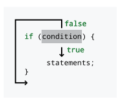
if quando sua condição é true e a ignora caso contrário.Nossas descrições de cenários lógicos da seção anterior usaram a
palavra “then” (que no português significa “então”) para marcar as ações que seriam realizadas se uma condição fosse
verdadeira. Algumas linguagens usam then como palavra-chave, mas o Java não.
Em vez disso, observe a chave esquerda ({) e a chave direita (}) que
delimitam a linha executável guardaChuva.pegar();. Essas chaves desempenham a
mesma função que a palavra “then,”, marcando claramente a ação a ser
executada se uma condição for verdadeira. As chaves são inequívocas porque elas
marcam um início e um fim. Se houver muitas ações a serem realizadas, todas elas podem
ser colocadas dentro das chaves, e não haverá dúvida sobre quais
ações estão associadas a uma determinada instrução if.
Por exemplo, talvez também precisemos fechar a janela e vestir uma capa de chuva se estiver chovendo. Podemos realizar essas tarefas em Java da seguinte maneira.
if (chovendo) {
guardaChuva.pegar();
janela.fechar();
capaDeChuva.vestir();
}Dentro de um par de chaves ({ }), chamado de bloco de código,
a execução prossegue normalmente, linha por linha. Primeiro, a JVM fará com que o
guarda-chuva seja pegado, depois a janela seja fechada e, finalmente, a
capa de chuva seja vestida.
Se houver apenas uma única linha de código dentro de um bloco de código, as chaves podem ser omitidas. Por exemplo, alguns programadores Java experientes podem ter escrito nosso primeiro exemplo da seguinte forma.
if (chovendo)
guardaChuva.pegar();Para programadores Java iniciantes, no entanto, é uma boa ideia usar chaves mesmo quando não for necessário. Sem chaves, o código pode parecer estar fazendo uma coisa quando, na verdade, está fazendo outra.
Como os programadores muitas vezes precisam escolher entre duas alternativas, o Java
fornece uma instrução else para especificar o código que deve ser executado quando a
condição da instrução if for falsa.
Seja cinquentaReais uma variável boolean que é true se tivermos pelo
menos R$50 e false caso contrário. Agora, podemos escolher entre duas
opções de jantar com base em quanto dinheiro temos.
if (cinquentaReais) {
jantarLagosta.comer();
} else {
fastFood.comer();
}Este código Java corresponde às instruções lógicas que escrevemos anteriormente. Se tivermos dinheiro suficiente, comeremos um jantar de lagosta; caso contrário, comeremos fast food.
Assim como em uma instrução if, usamos chaves para marcar um bloco de código
também para uma instrução else. Como uma única linha de código será
executada em cada caso, as chaves são opcionais aqui. Poderíamos ter
escrito o código com a mesma funcionalidade da seguinte forma.
if (cinquentaReais)
jantarLagosta.comer();
else
fastFood.comer();Figura 4.2 mostra o padrão de execução condicional
seguido por todas as instruções if que possuem uma instrução else correspondente.

if quando sua condição é true e salta para a instrução else caso contrário.A indentação é usada para tornar o código mais legível, mas o Java ignora espaços em branco, o que significa que a indentação não tem efeito sobre a execução do código.
Para demonstrar, vamos supor que nosso cliente imaginário saiba que terá dor de estômago depois de comer fast food. Assim, ele tomará um pouco de Pepto-Bismol depois de comer. Se você adicionasse essa ação ao código acima, que não contém chaves, poderia obter o seguinte.
if (cinquentaReais)
jantarLagosta.comer();
else
fastFood.comer();
peptoBismol.pegar();Embora pareça que tanto fastFood.comer(); quanto peptoBismol.pegar();
estejam dentro do bloco da instrução else, apenas fastFood.comer(); está.
A linha peptoBismol.pegar(); não faz parte da estrutura if-else
de forma alguma e será executada independentemente do que acontecer. Portanto, chaves são necessárias, conforme mostrado
abaixo.
if (cinquentaReais)
jantarLagosta.comer();
else {
fastFood.comer();
peptoBismol.pegar();
}Esse tipo de confusão pode ser evitado se sempre forem usadas chaves. Muitos guias de estilo insistem no uso constante de chaves, portanto, adotaremos esse estilo pelo resto do livro.
4.3.2. O tipo boolean e suas operações
Lembre-se de que Java usa o tipo boolean para valores que só podem ser
true ou false. Assim como os tipos numéricos double e int, o
tipo boolean possui operações específicas que podem ser usadas para combiná-los
entre si. Por definição, essas operações correspondem exatamente às operações lógicas
que descrevemos anteriormente. Aqui está uma tabela apresentando os operadores Java
equivalentes às operações lógicas booleanas.
| Nome | Matemática Símbolo |
Java Operador |
Descrição |
|---|---|---|---|
AND |
∧ |
|
Retorna |
OR |
∨ |
|
Retorna |
XOR |
⊕ |
|
Retorna |
NOT |
¬ |
|
Retorna o oposto do valor |
Usando esses operadores, podemos criar valores boolean e combiná-los
entre si.
boolean x = true;
boolean y = false;
boolean z = !((x || y) ^ (x && y));Quando este código for executado, o valor de z será false. Embora
seja perfeitamente válido realizar operações boolean dessa maneira, é
muito mais comum combiná-las “na hora” dentro da condição
de uma instrução if. Lembre-se da instrução da seção anterior:
Se eu estiver entediado, ou se for tarde e eu não conseguir dormir,
eu vou assistir televisão.
Se considerarmos cansado, tarde e podeDormir como variáveis boolean cujos
valores indicam se estamos entediados, se é tarde e se podemos dormir,
respectivamente, podemos codificar essa instrução em Java da seguinte maneira.
if (cansado || (tarde && !podeDormir)) {
televisao.assistir();
}Combinar o operador || com outros operadores || é tanto
comutativo quanto associativo: a ordem e o agrupamento não importam.
Da mesma forma, combinar o operador && com outros operadores && é
também comutativo e associativo. No entanto, quando você começa a misturar ||
com &&, é uma boa ideia usar parênteses para agrupar. Se, no
exemplo acima, cansado for true, tarde for false e podeDormir
for true, então a expressão cansado || (tarde && !podeDormir) será
true. No entanto, com os mesmos valores, a expressão
cansado || tarde && !podeDormir será false.
Agora que estamos discutindo a ordem, observe que ||
e && são operadores de curto-circuito. Curto-circuito significa que, se
o valor da expressão puder ser determinado sem avaliar o
resto dela, a JVM não se dará ao trabalho de calcular mais nada da
expressão. Com ||, essa situação ocorre porque true OU qualquer
outra coisa ainda é true. Com &&, essa situação ocorre porque false
E qualquer outra coisa ainda é false.
if (true || ((tarde && !podeDormir && cansado && temFome) ||
(querDescobrirOQueAconteceA seguirNoSeuProgramaFavorito ||
gostaDeTV)))A condição desta instrução if sempre será avaliada como true, e
seu corpo sempre será executado. Como o Java sabe disso, ele nem
se dará ao trabalho de verificar nenhuma das condições após o primeiro operador ||.
Essa avaliação de curto-circuito é feita em tempo de execução e funcionará se o
valor de uma variável no início de uma cláusula OR for true. Não precisa
ser o literal true.
if (false && ((tarde || !poderdormir || cansado || temFome) &&
(querDescobrirOQueAconteceA seguirNoSeuProgramaFavorito ||
gostaDeTV)))A condição desta instrução if sempre será avaliada como false e
seu trecho não será executado. Como antes, nada após o primeiro &&
será sequer verificado. Se você estiver combinando literais e valores boolean
com os operadores || e &&, não faz diferença que
ocorra a avaliação de curto-circuito. No entanto, se uma chamada de método fizer parte das
cláusulas, seu código pode perder efeitos colaterais valiosos. Por exemplo,
suponha que a variável boolean trabalhando seja false no exemplo a seguir.
if (trabalhando && fazerAlgoImportante())Nesse caso, o método fazerAlgoImportante() deve retornar um
valor boolean para ser uma instrução válida. Ainda assim, se trabalhando for false,
o método "fazerAlgoImportante()" nem mesmo será chamado. Assim que a
JVM perceber que está aplicando a operação && a um valor false
(ou um || a um true), ela desistirá. Em muitos casos, fazer isso é aceitável. Na verdade,
os programadores às vezes exploram esse recurso para permitir que o código em um
método como fazerAlgoImportante() seja executado apenas se for seguro fazê-lo.
Nesse caso, se assumirmos que sempre queremos executar o
método fazerAlgoImportante() (porque ele faz algo importante)
sempre que a condição da instrução if for avaliada, precisamos
reestruturar o código. Por exemplo, podemos inverter a ordem dos dois
termos na cláusula AND para obter esse efeito. Alternativamente, o Java
fornece versões sem curto-circuito dos operadores || e &&,
ou seja, | e &, caso você precise forçar a avaliação completa.
Você deve estar se perguntando de onde vem a maioria dos valores boolean
. A maioria dos programas de computador não faz ao usuário uma longa série de perguntas do tipo verdadeiro
ou falso antes de apresentar uma resposta. A maioria dos valores boolean
em programas Java é resultado de comparações, frequentemente de tipos de dados numéricos
.
Pode ser útil comparar dois números para ver se um é maior, menor ou
igual ao outro. Por exemplo, você pode ter uma variável double
chamada pressao que fornece a pressão da água em um sistema hidráulico.
Talvez você também tenha uma constante chamada PRESSAO_CRITICA que fornece
a pressão máxima segura para o seu sistema. Você pode comparar esses valores
usando o operador >.
if (pressao > PRESSAO_CRITICA) {
desligamentoDeEmergencia();
}Este código permite que você chame o método de emergência apropriado quando
pressao estiver muito alta. É claro que o operador > não é a única maneira
de comparar dois valores em Java. Listamos todos os operadores relacionais em
Capítulo 3, mas
a tabela abaixo os mostra novamente em um
contexto matemático.
| Nome | Matemática Símbolo |
Java Operador |
Descrição |
|---|---|---|---|
Igual |
= |
|
|
Diferente |
≠ |
|
|
Menor que |
< |
|
|
Menor ou igual a |
≤ |
|
|
Maior que |
> |
|
|
Maior ou igual a |
≥ |
|
|
Os conceitos e símbolos matemáticos para esses operadores devem ser
familiares da matemática. Existem algumas diferenças em relação às
versões matemáticas desses conceitos que vale a pena destacar. Primeiro,
apenas símbolos fáceis de digitar são usados para os operadores Java. Assim, precisamos de dois
caracteres para representar a maioria dos operadores relacionais na linguagem. Esses operadores
podem ser usados para comparar qualquer tipo numérico com qualquer outro tipo numérico,
incluindo char. No caso de tipos incompatíveis, como um int e
um double, o tipo de menor precisão é automaticamente convertido para o tipo de maior
precisão. Deve-se ter cuidado ao usar o operador == com
tipos de ponto flutuante devido a erros de arredondamento. Por exemplo, a
expressão 1.0/3.0 == 0.3333333333 sempre resulta em false.
O operador == não é o mesmo que o operador = dos capítulos anteriores
. Em Java, o sinal de igual duplo == é usado para comparar duas
coisas, enquanto o sinal de igual simples = é usado para atribuir uma coisa a
outra.
Também pode haver confusão porque, no mundo da matemática, os símbolos relacionais
são usados para fazer uma afirmação: x < y é uma
afirmação ou uma constatação de que o valor contido em x
é, de fato, menor do que o valor contido em y. No
mundo Java, a afirmação x < y é um teste cuja resposta é true se
o valor contido em x for menor que o valor contido em y
e false caso contrário. Usar esses operadores significa realizar um teste em
um ponto específico do código, fazendo uma pergunta sobre os valores que
certas variáveis ou literais (ou os resultados de chamadas de método) têm naquele
momento. Em outro sentido, usar essas comparações é uma maneira
de pegar dados numéricos e convertê-los na linguagem de valores boolean
. Observe que o código a seguir não compila em Java.
if (4) {
x = y + z;
}Para ser usado em uma instrução if, o valor 4 deve primeiro ser comparado
com algum outro tipo numérico para produzir um true ou false.
Uma armadilha comum é esquecer um dos sinais de igual no operador de comparação.
if (x = 4) {
x = y + z;
}Novamente, este código não será compilado. Se fosse, a variável x teria
atribuído o valor 4, que por sua vez seria passado para a instrução if,
mas uma instrução if não sabe o que fazer com nada
além de um valor boolean.
É preciso ter extremo cuidado ao
comparar dois valores boolean. Por exemplo, podemos ter dois valores boolean
"gostaDeCaes1" e "gostaDeCaes2", correspondendo ao fato de duas
pessoas diferentes gostarem ou não de cães. Digamos que o valor de cada um seja true se a
pessoa gosta de cães e false caso contrário. Poderíamos criar uma instrução if
que funcionaria apenas se seus valores fossem iguais.
if (gostaDeCaes1 == gostaDeCaes2) {
fazerColegasDeQuarto();
}Este código chama corretamente o método fazerColegasDeQuarto() apenas se as duas
pessoas tiverem a mesma opinião sobre cães. Não importa se ambas gostam
ou não gostam de cães, mas um colega de quarto que ama cães e outro que odeia cães levará a problemas.
No entanto, um pequeno erro no código poderia resultar no seguinte.
if (gostaDeCaes1 = gostaDeCaes2) {
fazerColegasDeQuarto();
}Nesse caso, gostaDeCaes1 seria atribuído ao valor de gostaDeCaes2.
Então, esse valor seria passado para a instrução if. Aqui, o método fazerColegasDeQuarto() será chamado apenas se gostaDeCaes2
for true, o que significa que a segunda pessoa gosta de cães. Assim, as duas pessoas se tornarão colegas de quarto se
a segunda pessoa gosta de cães, e os sentimentos da primeira pessoa não serão
considerados. Ao contrário do exemplo x = 4, este código será compilado sem nenhum aviso.
Os próximos exemplos ilustram o uso da instrução if. Eles
também utilizam alguns métodos da classe Math.
No calendário gregoriano padrão, os anos bissextos ocorrem aproximadamente uma vez a cada quatro anos. Durante os anos bissextos, o mês de fevereiro tem 29 dias em vez de 28. Esse dia extra compensa o fato de que a Terra leva um pouco mais de 365,24 dias para orbitar o Sol. Infelizmente, a órbita da Terra ao redor do Sol não coincide de forma exata com a rotação da Terra, criando exceções à regra de a cada quatro anos.
Na verdade, a definição oficial de um ano bissexto é um ano que é divisível por 4, exceto aqueles anos que são divisíveis por 100, com a exceção dos anos que são divisíveis por 400. Por exemplo, 1988 foi um ano bissexto porque era divisível por 4. O ano de 1900 não foi um ano bissexto porque era divisível por 100, mas não por 400, e o ano de 2000 foi um ano bissexto porque era divisível por 400.
Lembre-se de que o operador mod (%) nos permite encontrar o resto
após a divisão inteira. Assim, se n % 100 for zero, n não tem
resto após ser dividido por 100 e deve ser divisível por
100.
import java.util.*;
public class LeapYear {
public static void main(String[] args) {
Scanner in = new Scanner( System.in );
System.out.print("Please enter a year: ");
int year = in.nextInt();
if (year % 400 == 0) {
System.out.println(year + " is a leap year.");
} else if (year % 100 == 0) {
System.out.println(year + " is not a leap year.");
} else if (year % 4 == 0) {
System.out.println(year + " is a leap year.");
} else {
System.out.println(year + " is not a leap year.");
}
}
}Assim como em todos os programas desta seção, começamos importando
java.util.*, necessário para a classe Scanner de entrada. O
programa solicita ao usuário que digite um ano e o lê. Se o ano for
divisível por 400, o programa exibe que é um ano bissexto.
Caso contrário, se o ano for divisível por 100, o programa exibe
que não é um ano bissexto. Caso contrário, se o ano for divisível
por 4, o programa exibe que é um ano bissexto. Por fim, se todas as
outras condições falharem, o programa exibe que o ano não é um
ano bissexto.
A fórmula quadrática é uma ferramenta útil da matemática. Usando essa fórmula, você pode resolver equações da forma ax2 + bx + c = 0. Você deve se lembrar da formulação da fórmula quadrática apresentada abaixo.

A parte b2 - 4ac da fórmula é chamada de discriminante. Se o discriminante for positivo, haverá duas respostas reais para a equação. Se o discriminante for negativo, haverá duas respostas complexas para a equação. Finalmente, se o discriminante for zero, haverá uma única resposta real para o problema. Se você quiser escrever um programa para resolver equações quadráticas, ele deve levar essas três possibilidades em consideração.
import java.util.*;
public class Quadratic {
public static void main(String[] args) {
Scanner in = new Scanner(System.in);
System.out.println("This program solves quadratic" +
" equations of the form ax^2 + bx + c = 0.");
System.out.print("Please enter a value for a: "); (1)
double a = in.nextDouble();
System.out.print("Please enter a value for b: ");
double b = in.nextDouble();
System.out.print("Please enter a value for c: ");
double c = in.nextDouble();
double discriminant = b*b - 4*a*c; (2)
if (discriminant == 0.0) { (3)
System.out.println("The answer is x = " + (-b/(2*a)));
} else if (discriminant < 0.0) { (4)
System.out.println("The answers are x = " + (-b / (2*a)) + " + "
+ Math.sqrt(-discriminant) / (2*a) + "i and x = "
+ (-b / (2*a)) + " - " + Math.sqrt(-discriminant) / (2*a) + "i");
} else { (5)
System.out.println("The answers are x = " + (-b + Math.sqrt(discriminant))/(2*a)
+ " and x = " + (-b - Math.sqrt(discriminant))/(2*a));
}
}
}| 1 | Este programa solicita ao usuário e lê os valores de a,
b e c. |
| 2 | Em seguida, ele calcula o discriminante. |
| 3 | No primeiro caso, verificamos se o discriminante é zero e imprimimos a única resposta. |
| 4 | Em seguida, se o discriminante for negativo, calculamos as partes real e complexa separadamente e exibimos as duas respostas. |
| 5 | Finalmente, se o discriminante for positivo, encontramos as duas respostas reais e as exibimos. |
A condição discriminante == 0.0 é perigosa, pois estamos usando
valores double. Devido a erros de arredondamento, o discriminante pode não
ser exatamente zero, mesmo que devesse ser, matematicamente. Um código de nível industrial
provavelmente verificaria se o valor absoluto do
discriminante é menor que um número muito pequeno (como 0.00000001).
Valores tão pequenos seriam então tratados como se fossem zero.
No tradicional jogo das 20 Perguntas, uma pessoa escolhe mentalmente algo, e os outros participantes devem adivinhar o que é fazendo perguntas cuja resposta seja “sim” ou “não”. Em uma versão popular, a pessoa que escolhe o objeto começa declarando se é animal, vegetal ou mineral.
Usando princípios de contagem da matemática, 20 perguntas de sim ou não tornam possível diferenciar 2^20 = 1.048.576 itens. Se você também souber se a coisa é animal, vegetal ou mineral, deve ser possível adivinhar mais de 3 milhões de itens! Neste ponto de nosso desenvolvimento como programadores Java, ainda não estamos prontos para lidar com uma gama tão grande de possibilidades. Para manter o tamanho do código razoável, vamos restringir o campo a 10 itens diferentes : um lagarto, uma águia, um golfinho, um ser humano, um pouco de chumbo, um diamante, um tomate, um pêssego, uma árvore de bordo e uma batata.

Usando esses itens, podemos construir uma árvore de decisões, começando com a decisão entre animal, vegetal e mineral. Se a coisa for um animal, poderíamos então perguntar se é um mamífero. Se for um mamífero, poderíamos perguntar se vive em terra, decidindo entre humano e golfinho. Se não for um mamífero, poderíamos perguntar se voa, decidindo entre uma águia e um lagarto. Podemos construir perguntas semelhantes para as coisas nas categorias vegetal e mineral, correspondendo a Figura 4.3.
import java.util.*;
public class TwentyQuestions {
public static void main(String[] args) {
Scanner in = new Scanner(System.in);
System.out.print("Is it an animal, vegetable, or mineral? (a, v, or m): ");
String response = in.next().toLowerCase();
if (response.equals("a")) {
System.out.print("Is it a mammal? (y or n): ");
response = in.next().toLowerCase();
if (response.equals("y")) {
System.out.print(
"Does it live on land? (y or n): ");
response = in.next().toLowerCase();
if (response.equals("y")) {
System.out.println("It's a human.");
} else { // Assume "n"
System.out.println("It's a dolphin.");
}
} else { // Assume "n"
System.out.print("Does it fly? (y or n): ");
response = in.next().toLowerCase();
if (response.equals("y")) {
System.out.println("It's an eagle.");
} else { // Assume "n"
System.out.println("It's a lizard.");
}
}
} else if (response.equals("v")) {
System.out.print("Is it a fruit? (y or n): ");
response = in.next().toLowerCase();
if (response.equals("y")) {
System.out.print(
"Does it grown on a vine? (y or n): ");
response = in.next().toLowerCase();
if (response.equals("y")) {
System.out.println("It's a tomato.");
} else { // Assume "n"
System.out.println("It's a peach.");
}
} else { // Assume "n"
System.out.print("Is it a tree? (y or n): ");
response = in.next().toLowerCase();
if (response.equals("y")) {
System.out.println("It's a maple tree.");
} else { // Assume "n"
System.out.println("It's a potato.");
}
}
} else { // Assume "m"
System.out.print(
"Is it the hardest mineral? (y or n): ");
response = in.next().toLowerCase();
if (response.equals("y")) {
System.out.println("It's a diamond.");
} else { // Assume "n"
System.out.println("It's lead.");
}
}
}
}O código neste exemplo é simples, embora mesmo 10 itens
resultem em muitos blocos if e else. Além das instruções if-else,
apenas entradas e saídas simples são necessárias para que o programa
funcione. Para uma comparação String adequada, é necessário usar o
método equals() para testar se dois valores String são iguais.
Observe que adicionamos comentários especificando o que presumimos ser o caso
para cada bloco else. Se fôssemos mais cuidadosos, deveríamos testar
os casos "y" e "n" e, então, exibir uma mensagem de erro quando o usuário
inserisse algo inesperado, como "x", "149" ou mesmo "no".
Você pode estar curioso para saber como criar um jogo de 20 Perguntas de verdade que possa aprender com o tempo. Para isso, são necessárias muitas outras ferramentas de programação: repetição, estruturas de dados (para que você possa organizar as perguntas), e entrada e saída de arquivos (para que você possa armazenar novas informações permanentemente). Esses conceitos são abordados em capítulos posteriores.
4.3.3. Instruções switch
Esta seção descreve a instrução switch tal como foi definida nas versões anteriores ao Java 12 e 14. Seção 4.3.4 descreve as melhorias que permitem que o switch seja usado em qualquer lugar onde uma expressão seja utilizada.
A instrução if é o carro-chefe da execução condicional em Java. Com
o devido cuidado, você pode criar código capaz de tomar qualquer sequência fixa de
decisões com complexidade arbitrária. Mesmo assim, a instrução if pode ser
um pouco desajeitada, pois permite apenas escolher entre duas
alternativas. Afinal, uma condição só pode ser true ou false.
Certamente, as decisões podem ser aninhadas, permitindo mais de duas
possibilidades, mas longas listas de possibilidades podem ser pesadas e difíceis de ler.
Por exemplo, imagine que queremos criar um programa que determine o presente apropriado para um aniversário de casamento. Abaixo está uma tabela de categorias tradicionais de presentes com base no ano de aniversário.
| Ano | Presente | Ano | Presente | |
|---|---|---|---|---|
1 |
Papel |
13 |
Renda |
|
2 |
Algodão |
14 |
Marfim |
|
3 |
Couro |
15 |
Cristal |
|
4 |
Fruta |
20 |
Porcelana |
|
5 |
Madeira |
25 |
Prata |
|
6 |
Doces / Ferro |
30 |
Pérola |
|
7 |
Lã / Cobre |
35 |
Coral |
|
8 |
Bronze / Cerâmica |
40 |
Rubi |
|
9 |
Cerâmica / Salgueiro |
45 |
Safira |
|
10 |
Estanho / Alumínio |
50 |
Ouro |
|
11 |
Aço |
55 |
Esmeralda |
|
12 |
Seda / Linho |
60 |
Diamante |
Seja ano uma variável do tipo int contendo o ano em questão.
Uma estrutura de instruções if-else que pode determinar o presente apropriado
com base no ano está abaixo.
String presente;
if (ano == 1) {
presente = "Papel";
} else if (ano == 2) {
presente = "Algodão";
} else if (ano == 3) {
presente = "Couro";
} else if (ano == 4) {
presente = "Fruta";
} else if (ano == 5) {
presente = "Madeira";
} else if (ano == 6) {
presente = "Doces / Ferro";
} else if (ano == 7) {
presente = "Lã / Cobre";
} else if (ano == 8) {
presente = "Bronze / Cerâmica";
} else if (ano == 9) {
presente = "Cerâmica / Salgueiro";
} else if (ano == 10) {
presente = "Estanho / Alumínio";
} else if (ano == 11) {
presente = "Aço";
} else if (ano == 12) {
presente = "Seda / Linho";
} else if (ano == 13) {
presente = "Renda";
} else if (ano == 14) {
presente = "Marfim";
} else if (ano == 15) {
presente = "Cristal";
} else if (ano == 20) {
presente = "Porcelana";
} else if (ano == 25) {
presente = "Prata";
} else if (ano == 30) {
presente = "Pérola";
} else if (ano == 35) {
presente = "Coral";
} else if (ano == 40) {
presente = "Rubi";
} else if (ano == 45) {
presente = "Safira";
} else if (ano == 50) {
presente = "Ouro";
} else if (ano == 55) {
presente = "Esmeralda";
} else if (ano == 60) {
presente = "Diamante";
} else {
presente = "Sem presente tradicional";
}Este código armazena o valor correto em presente. Observe que estamos usando a
característica das instruções if que trata uma instrução if inteira como uma única
instrução. Se usássemos chaves para agrupar as coisas como elas realmente são, com o
conteúdo de cada else indentado com cada if aninhado dentro, o código
se tornaria ilegível e excessivamente grande.
String presente;
if (ano == 1) {
presente = "Papel";
} else {
if (ano == 2) {
presente = "Algodão";
} else {
if (ano == 3) {
presente = "Couro";
} else {
if (ano == 4) {
present= "Fruit";
}
.
.
.Parece que existe algum tipo de construção else if em Java, mas
não existe. Ainda assim, o uso cuidadoso das regras para chaves nos permite
escrever código que expressa bem uma sequência de alternativas.
Outra maneira de expressar uma longa sequência de alternativas é usando uma
instrução switch. Uma instrução switch recebe um único valor do tipo inteiro
(int, long, short, byte, char) ou uma String e salta
para um caso correspondente à entrada. Podemos reescrever o exemplo do presente de aniversário
usando uma instrução switch da seguinte maneira.
String presente;
switch (ano) {
case 1: presente = "Papel"; break;
case 2: presente = "Algodão"; break;
case 3: presente = "Couro"; break;
case 4: presente = "Fruta"; break;
case 5: presente = "Madeira"; break;
case 6: presente = "Doces / Ferro"; break;
case 7: presente= "Lã / Cobre"; break;
case 8: presente= "Bronze / Cerâmica"; break;
case 9: presente= "Cerâmica / Salgueiro"; break;
case 10: presente= "Estanho / Alumínio"; break;
caso 11: presente = "Aço"; break;
caso 12: presente = "Seda / Linho"; break;
caso 13: presente = "Renda"; break;
caso 14: presente = "Marfim"; break;
caso 15: presente = "Cristal"; break;
caso 20: presente = "Porcelana"; break;
caso 25: presente = "Prata"; break;
caso 30: presente = "Pérola"; break;
caso 35: presente = "Coral"; break;
caso 40: presente = "Rubi"; break;
caso 45: presente = "Safira"; break;
case 50: presente = "Ouro"; break;
case 55: presente = "Esmeralda"; break;
case 60: presente = "Diamante"; break;
default: presente = "Sem presente tradicional"; break;
}Assim como uma instrução if, uma instrução switch sempre possui parênteses
que envolvem algum argumento. Ao contrário de um if, o argumento de um switch básico deve
ser algum tipo de dado que possa ser expresso como um inteiro ou uma String,
não um boolean. (Na próxima seção, veremos que, em versões mais recentes do Java, o argumento do switch pode ser mais complexo.) Para cada um dos valores possíveis que você deseja que o switch
trate, você escreve uma instrução case. Uma instrução case consiste em
a palavra-chave case seguida por um valor constante, seja um literal ou uma
constante nomeada, e depois dois pontos. Quando executada, a JVM salta para o
rótulo case correspondente e começa a executar o código ali. Se não houver
rótulo case correspondente, a JVM vai para o rótulo default. Se não houver
rótulo default, toda a instrução switch é ignorada.
Uma característica incomum das instruções switch é que a execução passa
pelas instruções case. Isso significa que você pode usar muitas instruções
case diferentes para um único segmento de código executável. A execução
do código em uma instrução switch salta para fora quando encontra uma instrução break
. No entanto, uma instrução break não é necessária em todos os case, como mostrado nesta instrução switch que fornece informações de localização para todos os
códigos de área telefônica no estado de Nova York. Se um case não tiver uma instrução break, o controle passa para o próximo case (ou default).
String localidade = "";
switch (codigo) {
case 917: localidade = "Celular: ";
case 212:
case 347:
case 646:
case 718: localidade += "Cidade de Nova York"; break;
case 315: localidade = "Syracuse"; break;
case 516: localidade = "Condado de Nassau"; break;
case 518: localidade = "Albany"; break;
case 585: localidade = "Rochester"; break;
case 607: localidade = "Centro-Sul de Nova York"; break;
case 631: localidade = "Condado de Suffolk"; break;
case 716: localidade = "Buffalo"; break;
case 845: localidade = "Vale do Baixo Hudson"; break;
case 914: localidade = "Condado de Westchester"; break;
default: localidade = "Código de área desconhecido"; break;
}Como você pode ver, cinco códigos de área diferentes são usados pela cidade de Nova York. Ao
omitir as instruções break, os valores de 212, 347, 646 e
718 têm "Cidade de Nova York" armazenado em localidade. O código de área 917
foi originalmente designado para telefones celulares e pagers, embora agora
inclua alguns telefones fixos. Ao colocar habilmente a instrução para 917 à frente das outras entradas da cidade de Nova York, um valor de 917 primeiro armazena
"Celular: " em localidade e, em seguida, passa adiante e acrescenta
"Cidade de Nova York". Para cada um desses cinco códigos de área, a execução na
instrução switch termina somente quando a instrução break é alcançada.
Os nove códigos de área restantes são separados. Cada um deles faz uma
única atribuição e, em seguida, sai do bloco switch. Por fim,
o rótulo default é usado se o código de área não corresponder a um dos
códigos fornecidos. Observe que ordenamos os códigos de área (que não são de Nova York) em
ordem crescente para facilitar a leitura. Conforme mostrado no
exemplo 917, não há regra sobre a ordem dos rótulos. Até mesmo
o rótulo default pode ocorrer em qualquer lugar do bloco switch que você desejar,
embora seja comum colocá-lo no final. Além disso, o break após o
rótulo default é desnecessário, pois a execução sai do bloco switch
de qualquer maneira. No entanto, é sempre aconselhável terminar com um break, caso
você adicione mais casos posteriormente.
O descuido é sempre algo a se ter cuidado nas instruções switch
. Deixar de fora uma instrução break pode causar bugs desastrosos e
difíceis de detectar. O compilador também não avisa sobre a falta de
instruções break. É inteiramente sua responsabilidade usá-las
adequadamente. Devido aos riscos envolvidos, muitas vezes é mais seguro
usar instruções if-else. Qualquer instrução switch pode ser reescrita como
alguma combinação de instruções if-else, mas o inverso não é verdadeiro.
A vantagem das instruções switch é sua capacidade de listar muitas
alternativas de forma clara. Suas desvantagens incluem a facilidade de cometer um
erro, a incapacidade de expressar intervalos de dados ou a maioria dos tipos (double,
float ou qualquer tipo de referência que não seja String) e o
poder de expressão limitado. Elas devem ser usadas apenas quando a vantagem de exibir claramente
uma lista de dados superar as desvantagens.
A seguir, apresentamos vários exemplos para ajudá-lo a se familiarizar mais com
as instruções switch.
Há menos usos para as instruções switch do que para as instruções if.
No entanto, há problemas em que seu
comportamento de falha pode ser útil. Imagine que você precise escrever um
programa que forneça a duração de cada mês (partindo do pressuposto de que fevereiro sempre
tem 28 dias). Dado o mês como um número, podemos usar instruções switch para escrever um programa
que mapeie o número do mês para o número de dias que ele contém.
import java.util.*;
public class DaysInMonth {
public static void main(String[] args) {
Scanner in = new Scanner( System.in );
System.out.print("Please a month number (1-12): ");
int month = in.nextInt();
int days = 0;
switch (month) {
case 2: days = 28; break; (1)
case 4:
case 6:
case 9:
case 11: days = 30; break; (2)
case 1:
case 3:
case 5:
case 7:
case 8:
case 10:
case 12: days = 31; break; (3)
}
System.out.println("The month you entered has " + days + " days.");
}
}| 1 | Este programa tem um único rótulo para fevereiro, definindo days como 28. |
| 2 | Em seguida, há rótulos para abril, junho, setembro e novembro, meses que têm, cada um, 30 dias. |
| 3 | Por fim, o grande bloco de janeiro, março, maio,
julho, agosto, outubro e dezembro define days como 31. |
Seria
fácil estender este código para solicitar ao usuário um ano, de modo que você pudesse
integrar o código de ano bissexto de cima para o caso de fevereiro. Observe também
que não usamos um rótulo default. Você pode querer definir days como
algum valor especial (como -1) para meses inválidos.
Neste programa, é necessário inicializar days com algum valor, neste caso 0.
Caso contrário, o programa não será compilado, pois tentará imprimir o
valor dentro de days, um valor que não existirá se month não estiver no intervalo de 1 a 12.
O termo números ordinais refere-se a números usados para ordenar dentro de um conjunto de itens: primeiro, segundo, terceiro e assim por diante. Ao escrever esses números com algarismos em inglês, é comum acrescentar duas letras ao final do algarismo para dar ao leitor uma pista de que esses algarismos devem ser lidos com seus nomes ordinais: 1º, 2º, 3º e assim por diante.
Ao contrário da maioria das coisas em inglês, as regras para decidir quais duas letras
são relativamente simples. Se o número terminar em 1, as letras “st”
devem ser usadas geralmente. Se o número terminar em 2, as letras “nd”
devem ser usadas geralmente. Se o número terminar em 3, as letras “rd”
devem ser usadas geralmente. Para a maioria dos outros números, as letras “th”
devem ser usadas. Podemos usar uma instrução switch para escrever um programa que
forneça as terminações ordinais corretas para a maioria dos números, como segue.
import java.util.*;
public class Ordinals {
public static void main(String[] args) {
Scanner in = new Scanner( System.in );
System.out.print("Please enter a positive number: ");
int number = in.nextInt();
String ending;
switch (number % 10) {
case 1: ending = "st"; break;
case 2: ending = "nd"; break;
case 3: ending = "rd"; break;
default: ending = "th"; break;
}
System.out.println("Its ordinal version is "
+ number + ending + ".");
}
}Este programa solicita e, em seguida, lê um int do usuário. Em seguida,
encontramos o resto da divisão de number por 10, obtendo seu
último dígito. Com base nesse dígito, podemos escolher entre as quatro possibilidades
e gerar o número ordinal correto na maioria dos casos. Infelizmente, os
nomes dos números em inglês têm uma convenção de nomenclatura inconsistente entre 11 e 19, inclusive,
e os ordinais para qualquer número que termine em 11, 12 ou 13 receberão o sufixo errado
pelo nosso código. Deixamos uma solução mais completa como exercício.
Muitas culturas praticam a astrologia, uma tradição segundo a qual o momento do nascimento de uma pessoa influencia sua personalidade ou futuro. Um elemento importante da astrologia chinesa é o zodíaco, composto por 12 animais. Cada ano consecutivo em um ciclo de 12 anos corresponde a um animal. Como esse sistema se repete, o ano em que se nasce, módulo 12, identifica o animal. Abaixo está uma tabela com esses valores. Por exemplo, se você nasceu em 1979, 1979 mod 12 ≡ 11; portanto, você seria um Carneiro. Observe que essa disposição se baseia nos anos do calendário gregoriano. Os astrólogos chineses não listam o Macaco como o primeiro animal do ciclo. Observe que os nomes desses animais também são, às vezes, traduzidos de maneiras ligeiramente diferentes.
| Animal | Ano módulo 12 |
Animal | Ano módulo 12 |
|
|---|---|---|---|---|
Macaco |
0 |
Tigre |
6 |
|
Galo |
1 |
Coelho |
7 |
|
Cão |
2 |
Dragão |
8 |
|
Javali |
3 |
Cobra |
9 |
|
Rato |
4 |
Cavalo |
10 |
|
Boi |
5 |
Carneiro |
11 |
Infelizmente, esta tabela não é muito precisa porque se baseia na
numeração do calendário gregoriano. Os anos em questão, na verdade,
começam e terminam com base no Ano Novo Chinês, que ocorre entre 21 de janeiro
e 20 de fevereiro. Como consequência, você pode calcular incorretamente seu animal se
seu aniversário for no início do ano. Como calcular a data do
Ano Novo Chinês é complicado, vamos ignorar esse problema por enquanto
e escrever um programa usando uma instrução switch projetada para
exibir corretamente o animal correspondente a um ano de nascimento inserido.
import java.util.*;
public class ChineseZodiac {
public static void main(String[] args) {
Scanner in = new Scanner( System.in );
System.out.print("Please enter a year: ");
int year = in.nextInt();
String animal = "";
switch (year % 12) {
case 0: animal = "Monkey"; break;
case 1: animal = "Rooster"; break;
case 2: animal = "Dog"; break;
case 3: animal = "Boar"; break;
case 4: animal = "Rat"; break;
case 5: animal = "Ox"; break;
case 6: animal = "Tiger"; break;
case 7: animal = "Rabbit"; break;
case 8: animal = "Dragon"; break;
case 9: animal = "Snake"; break;
case 10: animal = "Horse"; break;
case 11: animal = "Ram"; break;
}
System.out.println("The Chinese zodiac animal for this year is: " + animal);
}
}| Signo | Símbolo | Intervalo de datas |
|---|---|---|
Áries |
O Carneiro |
21 de março a 19 de abril |
Touro |
O Touro |
20 de abril a 20 de maio |
Gêmeos |
Os Gêmeos |
21 de maio a 20 de junho |
Câncer |
O Caranguejo |
21 de junho a 22 de julho |
Leão |
O Leão |
23 de julho a 22 de agosto |
Virgem |
A Virgem |
23 de agosto a 22 de setembro |
Libra |
A Balança |
23 de setembro a 22 de outubro |
Escorpião |
O Escorpião |
23 de outubro a 21 de novembro |
Sagitário |
O Arqueiro |
22 de novembro a 21 de dezembro |
Capricórnio |
A Cabra-marinha |
22 de dezembro a 19 de janeiro |
Aquário |
O Portador da Água |
20 de janeiro a 19 de fevereiro |
Peixes |
Os Peixes |
20 de fevereiro a 20 de março |
Na astrologia ocidental, um elemento importante associado ao nascimento de uma pessoa também é chamado de signo do zodíaco. As datas para determinar esse tipo de signo do zodíaco são fornecidas pela tabela anterior.
Se você quiser implementar as regras desse zodíaco em código, uma instrução switch
é um bom ponto de partida, mas você também precisa colocar instruções if
para cada mês para testar o intervalo exato de datas.
import java.util.*;
public class WesternZodiac {
public static void main(String[] args) {
Scanner in = new Scanner(System.in);
System.out.print("Please enter a month number (1-12): ");
int month = in.nextInt();
System.out.print("Please enter a day number in that month (1-31): ");
int day = in.nextInt();
String sign = "";
switch (month) {
case 1:
if (day < 20) {
sign = "Capricorn";
} else {
sign = "Aquarius";
}
break;
case 2:
if (day < 20) {
sign = "Aquarius";
} else {
sign = "Pisces";
}
break;
case 3:
if (day < 20) {
sign = "Pisces";
} else {
sign = "Aries";
}
break;
case 4:
if (day < 20) {
sign = "Aries";
} else {
sign = "Taurus";
}
break;
case 5:
if (day < 21) {
sign = "Taurus";
} else {
sign = "Gemini";
}
break;
case 6:
if (day < 21) {
sign = "Gemini";
} else {
sign = "Cancer";
}
break;
case 7:
if (day < 23) {
sign = "Cancer";
} else {
sign = "Leo";
}
break;
case 8:
if (day < 23) {
sign = "Leo";
} else {
sign = "Virgo";
}
break;
case 9:
if (day < 23) {
sign = "Virgo";
} else {
sign = "Libra";
}
break;
case 10:
if (day < 23) {
sign = "Libra";
} else {
sign = "Scorpio";
}
break;
case 11:
if (day < 22) {
sign = "Scorpio";
} else {
sign = "Sagittarius";
}
break;
case 12:
if (day < 20) {
sign = "Sagittarius";
} else {
sign = "Capricorn";
}
break;
}
System.out.println("The zodiac sign is: " + sign);
}
}Este programa é apenas um pouco mais complexo do que o programa para o zodíaco chinês. Você ainda precisa saltar para 12 casos diferentes (numerados de 1 a 12 em vez de 0 a 11), mas são necessárias informações adicionais sobre o dia para identificar o signo.
4.3.4. Expressões switch
A expressão switch, introduzida no Java 12 e 14, calcula um único valor e pode ser usada em qualquer lugar onde se espere uma expressão. Cada case deve calcular um único valor. Existem duas maneiras de indicar o valor que está sendo calculado:
-
Use a nova instrução
yield E. A instruçãoyieldpode ser considerada como uma instruçãobreak— ela interrompe o fluxo da instruçãoswitch—, mas também indica o valor a ser usado como resultado. -
Use a nova sintaxe
case L -> E. Essa sintaxe indica que o valor resultante paracase Lé o valor da expressãoE. O rótuloLpode ser uma lista de rótulos separados por vírgulas (veja o exemplo abaixo).
Observe que essas duas abordagens não podem ser misturadas: uma única expressão switch usa ou todos os casos da forma case L: ou todos os casos da forma case L -> E.
A expressão switch pode resultar em um código mais simples do que a instrução switch tradicional, tornando-a mais fácil de escrever e manter. O código abaixo calcula o número de dias em um determinado mês, com o mês indicado por uma abreviação de três letras:
int dias =
switch (mes) {
case "Jan", "Mar", "Mai", "Jul", "Ago", "Out", "Dez" -> 31;
case "Abr", "Jun", "Set", "Nov" -> 30;
case "Fev" -> 28;
default -> 0;
};Como outro exemplo, veja abaixo uma expressão switch para calcular o presente de aniversário com base no ano (compare com a versão anterior statement version).
String presente =
switch (ano) {
case 1 -> "Papel";
case 2 -> "Algodão";
case 3 -> "Couro";
case 4 -> "Fruta";
case 5 -> "Madeira";
case 6 -> "Doces / Ferro";
case 7 -> "Lã / Cobre";
case 8 -> "Bronze / Cerâmica";
case 9 -> "Cerâmica / Salgueiro";
case 10 -> "Estanho / Alumínio";
case 11 -> "Aço";
case 12 -> "Seda / Linho";
caso 13 -> "Renda";
caso 14 -> "Marfim";
caso 15 -> "Cristal";
caso 20 -> "Porcelana";
caso 25 -> "Prata";
caso 30 -> "Pérola";
caso 35 -> "Coral";
case 40 -> "Rubi";
case 45 -> "Safira";
case 50 -> "Ouro";
case 55 -> "Esmeralda";
case 60 -> "Diamante";
default -> "Sem presente tradicional";
};4.3.5. Instruções switch sem instruções break
Como mencionado anteriormente, o uso de instruções break pode resultar em erros por descuido: ao omitir acidentalmente um break ou adicionar um onde não é necessário. Com a introdução da sintaxe case L -> E, é possível usar uma instrução switch sem nenhuma instrução break. Cada case torna-se um bloco completo, e não há continuidade para o próximo caso. Se mais de uma instrução for incluída em um bloco, as instruções devem ser delimitadas por chaves ({ }).
Aqui está um exemplo que imprime o número de dias no mês fornecido e usa um sinalizador para indicar se o mês é válido:
boolean mesValido = true;
switch (mes) {
case "Jan", "Mar", "Mai", "Jul", "Ago", "Out", "Dez" ->
System.out.println("Há 31 dias em " + mes);
case "Abr", "Jun", "Set", "Nov" ->
System.out.println("Há 30 dias em " + mes);
case "Fev" ->
System.out.println("Há 28 dias em " + mes);
default -> {
System.out.println("Mês não reconhecido: " + mes);
mesValido = false;
}
};
if (mesValido) {
// Continuar o processamento...
}4.4. Solução: Monty Hall
Voltamos agora à simulação de Monty Hall descrita no início do
capítulo. Lembre-se de que os objetos da classe Random nos permitem gerar todos os
tipos de valores aleatórios. Para implementar essa simulação com sucesso, nosso
programa deve tomar as decisões necessárias para configurar o jogo para o
usuário, bem como responder às entradas do usuário.
import java.util.*; (1)
public class MontyHall {
public static void main(String[] args) {
Random random = new Random();
int winner = random.nextInt(3); (2)
Scanner in = new Scanner( System.in );
System.out.print("Choose a door (enter 0, 1, or 2): ");
int choice = in.nextInt(); (3)
int alternative; (4)
int open;| 1 | Começamos com a instrução import
necessária para usar as classes Scanner e Random
e, em seguida, definimos a classe MontyHall. |
| 2 | No método main(), primeiro decidimos qual das três portas é a
vencedora. Para isso, instanciamos um objeto Random e o usamos para
gerar um número aleatório que seja 0, 1 ou 2, chamando o
método nextInt() com um argumento de 3. Poderíamos ter somado 1 a
esse valor para obter uma escolha aleatória entre 1, 2 ou 3, mas muitos sistemas de contagem
em ciência da computação começam com 0 em vez de 1. Podemos muito bem
aceitar isso. |
| 3 | Em seguida, solicitamos que o usuário escolha uma das três portas e lemos a escolha. |
| 4 | Por fim, declaramos mais dois valores int para acompanhar
qual porta deve ser aberta e qual porta é a alternativa para a qual o
usuário pode optar por mudar. |
Agora, precisamos lidar com uma série complicada de decisões.
if (choice == winner) { (1)
int low;
int high;
if (choice == 0) { (2)
low = 1;
high = 2;
} else if (choice == 1) {
low = 0;
high = 2;
} else { // choice == 2
low = 0;
high = 1;
}
// Randomly choose between other two doors
double threshold = random.nextDouble(); (3)
if (threshold < 0.5) { (4)
alternative = low;
open = high;
} else { (5)
alternative = high;
open = low;
} | 1 | Neste trecho de código, lidamos com a possibilidade de o usuário ter escolhido a porta vencedora. Para seguir as regras do jogo, precisamos escolher aleatoriamente qual das duas outras portas abrir. |
| 2 | Primeiro, determinamos
quais são as outras duas portas e as salvamos em low e high,
respectivamente. |
| 3 | Em seguida, geramos um número aleatório. |
| 4 | Se o número aleatório for menor que 0,5, mantemos a porta com o número menor como uma opção alternativa para o usuário e abrimos a porta com o número maior. |
| 5 | Se o número aleatório for maior ou igual a 0,5, fazemos o contrário. |
} else { (1)
alternative = winner;
if (choice == 0) { (2)
if (winner == 1) {
open = 2;
} else {
open = 1;
}
} else if (choice == 1) {
if (winner == 0) {
open = 2;
} else {
open = 0;
}
} else { // choice == 2
if (winner == 0) {
open = 1;
} else {
open = 0;
}
}
}| 1 | Este bloco else abrange o caso em que o jogador não escolheu a
porta vencedora na primeira vez. Ao contrário do segmento de código anterior, não
temos mais a opção de escolher qual porta abrir. |
| 2 | Em vez disso, devemos sempre tornar a porta vencedora a alternativa para o usuário escolher. Então, simplesmente determinamos qual porta resta para que possamos abri-la. |
System.out.println("We have opened Door " + open + (1)
", and there is junk behind it!");
System.out.print("Do you want to change to Door " + (2)
alternative + " from Door " + choice +
"? (Enter 'y' or 'n'): ");
String change = in.next();
if (change.equals("y")) {
choice = alternative;
}
System.out.println("You chose Door " + choice);
if (choice == winner) { (3)
System.out.println("You win a pile of gold!");
} else {
System.out.println("You win a pile of junk.");
}
}
}| 1 | Este segmento final de código informa ao usuário qual porta foi aberta. |
| 2 | Ele solicita que o usuário altere sua decisão. |
| 3 | Dependendo da escolha final, o programa informa se o usuário ganha ouro ou porcaria. |
4.5. Concorrência: Seleção
As instruções de seleção (if e switch) parecem ter
pouca relação com concorrência ou paralelismo. A seleção permite que você
escolha entre alternativas, enquanto a concorrência diz respeito à interação
entre diferentes threads de execução. Na verdade, existem duas
razões pelas quais a seleção e a concorrência estão profundamente relacionadas entre si.
A primeira razão é que a seleção é uma das ferramentas mais básicas em
Java. É impossível avançar mais do que algumas linhas de código sem
encontrar uma instrução de seleção, geralmente um if.
Programas concorrentes não estão isentos dessa dependência de instruções if
. Tomar decisões está no cerne de todas as linguagens de programação
executadas em todos os computadores.
A segunda razão, mais preocupante, está relacionada a um problema em
alguns programas concorrentes chamado de condição de corrida, que é discutido
em detalhes em sincronização.html. Lembre-se: um dos
maiores desafios da programação de computadores é pensar de uma
maneira completamente sequencial e lógica. Cada linha de código é executada uma
após a outra. Adicionar instruções if significa que parte do código é
executada apenas se uma condição for verdadeira e ignorada caso contrário. Considere o
seguinte fragmento de código.
if (!fosforo.saoAcessos() && !faiscasVoando) {
despensa.entrar();
dinamite.desembrulhar();
}Nesta instrução if, um agente imaginário só entra na sala de armazenamento
e desembala a dinamite se os fósforos não estiverem acesos e não houver
faíscas voando. Quando a execução chega à primeira linha dentro do bloco if
, temos certeza de que fosforo.saoAcessos() retornou false e
faiscasVoando é false. Essa é uma verificação única. Se a primeira coisa
que acontecer dentro do bloco if for um código que acenda os fósforos, o Java
não sairá da instrução if.
Como sempre, o programador é responsável por criar uma instrução if
que faça sentido. É possível que entrar na sala de armazenamento ou
desembalar a dinamite faça faíscas voarem ou os fósforos pegarem fogo
espontaneamente, mas isso parece improvável. Se os objetos despensa e
dinamite tivessem sido escritos por outras pessoas, esperaríamos que sua
documentação explicasse efeitos colaterais incomuns desse tipo. Em um
programa sequencial, o programador pode ter razoável certeza de que é
seguro desembalar a dinamite.
Considere outro fragmento de código.
fosforos.acender();
faiscasVoando = fogosDeArtificio.acender(fosforos);Este código parece acender os fósforos e, em seguida, usar os fósforos acesos para
acender alguns fogos de artifício. Presumivelmente, se o processo for bem-sucedido,
faiscasVoando terá o valor true. Este código é razoável e
potencialmente útil. Se você estivesse comemorando o 4 de julho ou precisasse
sinalizar para um helicóptero que passa para resgatá-lo de uma ilha deserta,
acender fogos de artifício poderia ser uma ótima ideia. Este código de acendimento de fogos de artifício
poderia ocorrer antes ou depois do código de desembalagem da dinamite, mas, em um programa sequencial
, a proteção da instrução if impede que nossa heroína seja explodida se
ela tentar desembalar a dinamite com fogos de artifício acesos.
Em um programa concorrente, nada é garantido. Outra thread de execução
pode estar operando exatamente ao mesmo tempo. É como se nossa heroína estivesse tentando
desembalar a dinamite enquanto o vilão acende fogos de artifício e os joga
na sala de armazenamento. Se a thread de execução chegar à instrução if
e se certificar de que os fósforos não estão acesos e que não há
faíscas voando, ela continua adiante. Se faíscas começarem a voar após essa
verificação, ela ainda assim continua, alheia ao fato. Mesmo que
esse risco de explosão exista, ele depende do sincronismo das duas (ou
mais) threads de execução simultâneas. Pode ser possível executar um
programa 1.000 vezes sem nenhum problema. Mas se o sincronismo estiver errado na
1.001ª vez, BOOM!
Nesse ponto, você não precisa se preocupar com valores dentro de suas instruções if
sendo alterados por outros segmentos de código, mas esse problema está
no cerne do motivo pelo qual a programação concorrente pode ser tão difícil. Quer
você esteja programando de forma concorrente ou não, é importante ter
em mente as suposições que seu código faz e a maneira como diferentes partes do
seu programa interagem entre si.
4.6. Exercícios
Problemas conceituais
-
Considerando que x, y e z são proposições na lógica booleana, elabore uma tabela de verdade para a expressão ¬(x ∧ ¬y) ⊕ ¬z.
-
Qual é o valor da expressão booleana ¬( (T ⊕ F) ∧ ¬(F ∨ T) )?
-
O cálculo para determinar o ano bissexto apresentado em Exemplo 4.3 usa três instruções
ife três instruçõeselse. Escreva o cálculo do ano bissexto usando um únicoife um únicoelse. Sinta-se à vontade para usar operadores lógicos, como||e&&. -
O operador XOR (
^) é útil para combinar valoresboolean, mas pode ser substituído por um operador relacional mais comumente usado em Java. Qual deles? -
As leis de De Morgan são as seguintes, mostrando que o processo de negar uma cláusula transforma um AND em um OR e vice-versa.
¬(x ∧ y) = ¬x ∨ ¬y
¬(x ∨ y) = ¬x ∧ ¬yCrie tabelas de verdade para verificar ambas as afirmações.
-
Use as leis de De Morgan apresentadas acima para reescrever a seguinte afirmação em Java como uma afirmação equivalente que não contenha negações.
boolean valor = !((x != 4) && (y < 2)); -
Considere o seguinte fragmento de código.
int x = 5; int y = 3; if (y > 10 && (x = 10) > 5) { ++y; } System.out.println("x: " + x); System.out.println("y: " + y);Qual é a saída? A saída muda se a condição da instrução
iffor alterada paray > 10 & (x = 10) > 5? Por quê? -
Considere o seguinte fragmento de código.
int a = 7; if (a++ == 7) { System.out.println("Sete"); } else { System.out.println("Não é sete"); }Qual é a saída? A saída muda se a condição da instrução
iffor alterada para++a == 7? Por quê?
Observação: geralmente é aconselhável evitar instruções de incremento, decremento e atribuição na condição de uma instruçãoif, devido à confusão que isso pode causar.
Exercícios de Programação
-
Escreva programas que:
-
Leiam dois valores do tipo
doublee imprimam o maior dos dois. -
Leiam três valores do tipo
doublee imprimam o maior dos três. Observação: Você deve usar instruçõesifaninhadas.
-
-
-
Leiam um valor
intdo usuário especificando um determinado número de centavos. Use instruçõesifpara imprimir o nome da moeda correspondente na moeda dos EUA de acordo com a tabela abaixo. Se o valor não corresponder a nenhuma moeda, imprimano coin.Centavos Moeda 1
penny
5
nickel
10
dime
25
quarter
50
half-dollar
100
dollar
-
Leia um valor
Stringdo usuário que forneça um dos 6 nomes de moedas apresentados na tabela acima. Use instruçõesifpara imprimir o número correspondente de centavos para a entrada. Se o nome não corresponder a nenhuma moeda, imprimamoeda desconhecida.
-
-
Reimplemente ambas as partes de Exercício 4.10 usando instruções
switchem vez de instruçõesif. -
Expanda o programa apresentado em Exemplo 4.7 para fornecer os sufixos corretos (sempre “th”) para números que terminam em 11, 12 e 13. Use o operador módulo para encontrar os dois últimos dígitos do número. Usando uma instrução
if, uma instruçãoswitchou uma combinação, verifique esses três casos antes de passar para os casos normais. -
Na parte inferior de Seção 4.3.3, usamos uma instrução
switchpara determinar a localização de vários códigos de área no estado de Nova York. Escreva um fragmento de código equivalente usando instruçõesif-elseem vez disso. -
Cada membro do seu clube secreto tem um número de identificação. Esses números de identificação estão entre 1 e 1.000.000 e têm duas características especiais: são múltiplos de 7 e todos terminam com um 3 na casa das unidades. Por exemplo, 63 é o menor desses valores, e 999.943 é o maior desses valores. Escreva um programa que solicite ao usuário um valor
int, leia-o e, em seguida, indique se ele poderia ou não ser usado como um número de identificação. Observação: você precisa usar o operador módulo de duas maneiras diferentes para testar o valor corretamente. -
De acordo com o Plano de Numeração Norte-Americano (NANP) usado pelos Estados Unidos, Canadá e vários países menores, um número de telefone válido tem o formato
XYY-XYY-YYYY, ondeXé qualquer dígito de 2 a 9 eYé qualquer dígito de 0 a 9. Escreva um programa que leia umaStringdo usuário e verifique se é um número de telefone válido segundo o NANP. O comprimento total daStringdeve ser 12. O quarto e o oitavo caracteres daString(com índices3e7) devem ser hífens (-), e todos os dígitos restantes devem estar no intervalo correto. Use o métodocharAt()da classeStringpara obter o valorcharem cada índice. Observação: há várias maneiras de estruturar as instruçõesifque você precisa usar, mas o número de condições pode se tornar grande. (23 ou mais!) -
Reimplemente a solução para o programa Monty Hall apresentada em Seção 4.4 usando
JOptionPanepara gerar GUIs para entrada e saída.
Capítulo 5. Repetição
Q-Tip: You on point, Phife?
Phife Dawg: All the time, Tip.
Q-Tip: You on point, Phife?
Phife Dawg: All the time, Tip.
Q-Tip: You on point, Phife?
Phife Dawg: All the time, Tip.
Q-Tip: Well, then grab the microphone and let your words rip.
5.1. Problema: Pesquisa de DNA
O mundo da bioinformática é a interseção entre a biologia e a ciência da computação. O sequenciamento de genomas, a determinação da função de genes específicos, a análise e a previsão de estruturas proteicas e a imagem biomédica são apenas algumas das áreas abrangidas pela bioinformática. Muitas pesquisas fascinantes estão sendo realizadas nessa área, à medida que os biólogos se tornam melhores programadores e os cientistas da computação aplicam suas técnicas à biologia.
Devido à sua importância fundamental e à incrível quantidade de informações envolvidas, com dezenas ou centenas de milhões de pares de bases de DNA em cada cromossomo humano, o DNA é o foco central da bioinformática. Como você deve saber, uma fita de DNA é composta por uma sequência de quatro bases nucleotídicas: adenina, citosina, guanina e timina. Essas bases são geralmente abreviadas como A, C, G e T, respectivamente.
Buscar uma subseqüência específica de DNA dentro de uma sequência maior é uma tarefa comum para os biólogos. Seu objetivo é escrever um programa que busque uma subseqüência e informe quantas vezes ela foi encontrada na sequência. Por exemplo, se você receber a sequência ATTAGACCATATA e for solicitado a buscar CAT, seu programa deve retornar 1, já que há exatamente 1 ocorrência de CAT em ATTAGACCATATA. Uma característica deste problema que o torna mais interessante é que as ocorrências podem se sobrepor. Por exemplo, dada a sequência TATTATTAGATTA e solicitado a procurar por TATTA, a resposta correta é 2. A sequência começa com um TATTA, mas o terceiro T na sequência também é o primeiro T em uma segunda instância de TATTA.
Em Capítulo 4, você aprendeu ferramentas que permitem fazer comparações e escolhas com base nos resultados. Essas ferramentas se tornarão ainda mais úteis. Por exemplo, quando você se depara com um char em uma sequência, você sabe como compará-lo a um char na subseqüência que está procurando. As ferramentas que você ainda não possui são aquelas que permitem a repetição. Como este problema exige que o programa processe uma sequência de DNA de comprimento arbitrário, precisaremos de alguma maneira de realizar uma ação repetidamente.
5.2. Conceitos: Repetição
Você já sabe como incluir opções em um programa Java, mas, até agora, cada opção só pode ser escolhida uma vez. Portanto, se quiser que o computador faça muitas coisas, você precisa digitar muitas coisas. Uma das grandes desvantagens dos computadores é que eles não têm inteligência: podem seguir instruções cegamente, mas não conseguem fazer mais nada. Uma das grandes vantagens dos computadores é que eles são rápidos. Os computadores modernos podem realizar operações matemáticas bilhões de vezes mais rápido do que os seres humanos. Para aproveitar essa velocidade, precisamos dar aos computadores instruções para realizar tarefas repetidamente. Para ser útil, essa instrução deve ter dois componentes: deve ter uma maneira de alterar ligeiramente a tarefa a cada vez, de modo que cada tarefa realize algo diferente. Também deve ter uma maneira de decidir quando parar; caso contrário, continuará para sempre.
O primeiro componente é o mais sutil. Criar um conjunto de instruções para que cada repetição da tarefa seja apropriada será diferente para cada problema. O segundo componente é mais fácil de descrever: vamos nos basear na lógica booleana, assim como fizemos para as instruções condicionais. A principal ferramenta para repetição em Java e em muitas outras linguagens é chamada de laço. O corpo de um laço contém a tarefa a ser executada. O restante do laço, no mínimo, contém uma condição. Toda vez que a tarefa especificada no corpo do laço for concluída, o computador verificará a condição. Se a condição for verdadeira, ele executará a tarefa novamente. Se a condição for falsa, o computador encerra o laço e pode passar para o código que vem a seguir.
Uma das dificuldades de programar um computador é que precisamos ser muito explícitos. Mesmo as tarefas mais óbvias devem ser descritas com detalhes meticulosos. Vamos considerar uma tarefa simples, uma que realizamos todos os dias. Se estivermos em uma sala e quisermos sair, simplesmente saímos pela porta mais próxima. Supondo que haja apenas uma porta na sala, como podemos descrever esse processo dividindo-o nas etapas que (literalmente) damos? Talvez pudéssemos dizer o seguinte.
Caminhe em direção à porta até chegar nela.
Essa instrução é um pouco mais específica do que Saia da sala, mas não se encaixa perfeitamente no paradigma de um laço, ou seja, uma tarefa claramente definida e uma condição. A seguinte opção é melhor.
Enquanto você não estiver na porta,
de um passo em direção a porta.
Agora temos uma boa separação entre o trabalho realizado e a condição para a repetição. Qual é a tarefa executada no corpo desse laço e qual é a condição? A tarefa é dar um passo em direção à porta. A condição é não estar na porta. Parece um pouco estranho incluir esse “não”, mas, na nossa definição de laços, o corpo é executado enquanto a condição for verdadeira.
Em um laço, chamamos cada execução do corpo do laço de iteração. Quando dizemos que um programa itera pelas instruções em um laço, estamos nos referindo a uma única passagem pelo corpo de um laço. Nesse caso, o laço irá iterar quantas vezes forem necessárias, dependendo do número de passos até a porta a partir da posição inicial. É até possível que o laço itere zero vezes: A pessoa que seguir este conjunto de instruções talvez já esteja na porta!
É difícil escapar dos números em um programa de computador, especialmente porque tudo é fundamentalmente armazenado como números dentro de um computador. Portanto, o tipo mais comum de laço é aquele que itera um número fixo de vezes. Por exemplo, sua rotina de exercícios matinais pode incluir pular corda 100 vezes. Poderíamos formular um laço para fazer isso da seguinte maneira.
Zere o seu contador.
Enquanto o seu contador for menor que 100,
pule corda.
Aumente o seu contador em 1.
Este laço requer uma configuração inicial para que o contador comece com o valor correto. Em seguida, o trabalho realizado pelo laço consiste no próprio ato de pular corda e no incremento do contador. A condição é que o contador seja menor que 100. Observe que se trata estritamente de um valor menor que 100. Após o primeiro salto, o contador será incrementado para 1. Após o 100º salto, o contador será incrementado para 100. Como 100 não é menor que 100, o laço será encerrado. Se a condição fosse o contador ser menor ou igual a 100, a pessoa seguindo as instruções saltaria 101 vezes.
A entrada também pode ser um fator nas repetições do laço. Por exemplo, você pode ser um soldado em treinamento no Corpo de Fuzileiros Navais dos EUA. Talvez seu sargento instrutor tenha ordenado que você faça flexões até que ele diga que você pode parar. Poderíamos formular um laço para fazer isso da seguinte maneira.
Faça:
Flexão.
Pergunte ao sargento se você pode parar.
Enquanto a resposta for `não`
Assim como acontece com a entrada do usuário, muitas vezes é necessário entrar no ciclo pelo menos uma vez para obter a entrada. Esse ciclo exige que o soldado faça pelo menos uma flexão antes de pedir para parar. Alguns sistemas podem usar entradas, mas apresentam outras restrições. Uma versão mais realista desse ciclo poderia ser a seguinte. following.
Faça:
Flexão.
Pergunte ao sargento se você pode parar.
Enquanto a resposta for não e você não tiver colapsado.
Lembre-se de que a condição de um laço deve ser um valor booleano, e o laço é executado enquanto a condição for verdadeira. No entanto, não há motivo para que o valor booleano não possa ser uma expressão complexa, utilizando toda a lógica booleana que conhecemos e apreciamos.
Também é possível aninhar laços. Aninhar laços significa colocar um laço dentro de outro, de forma semelhante à maneira como instruções condicionais podem ser aninhadas dentro de outras instruções condicionais. Assim como qualquer outra instrução, um laço interno será executado tantas vezes quantas o laço externo for executado. É claro que as instruções dentro do laço interno serão executadas de acordo com as condições desse laço. Portanto, se um laço externo for executado 10 vezes e um laço interno for executado 50 vezes, uma instrução no corpo de um laço interno seria executada 500 vezes!
Por exemplo, se você estiver malhando, pode fazer várias séries de supino com um número fixo de repetições em cada série. Se você fizesse 3 séries de 15 repetições de supino cada, seu programa de treino poderia ficar assim:
Defina o contador de séries para 0.
Enquanto o contador de séries estiver menor que 3,
defina o contador de repetições para 0.
Enquanto o contador de repetições estiver menor que 15,
faça um supino.
Aumente o contador de repetições em 1.
Descanse por 2 minutos.
Aumente o contador de séries.
Essa forma de descrever o programa de treino parece um pouco entediante. A maior parte da descrição é estrutural: condições para os laços e incrementos para os contadores. As únicas atividades "reais" são o supino e o descanso. Como você pode ver, o supino está dentro do laço de repetições interno e será executado 15 vezes a cada execução completa desse laço. Como o laço de repetições interno está dentro do laço de séries externo, ele será executado 3 vezes, resultando em um total de 45 supinos. O descanso, no entanto, vem após o laço de repetições interno, mas ainda está contido no laço de séries externo e será executado 3 vezes, totalizando 6 minutos de descanso.
Assim como nas condições, escrever laços em inglês é tedioso e impreciso. Na próxima seção, discutiremos as ferramentas para escrever laços em Java. Como o Java foi projetado tendo os laços como ferramenta central, podemos escrevê-los de forma mais sucinta do que em inglês, concentrando muitas informações em um espaço reduzido. Por contermos tanta informação neles, os laços podem parecer intimidadores à primeira vista. Lembre-se de que a sintaxe que apresentaremos é apenas a maneira formal do Java de expressar uma condição e uma lista de instruções a serem executadas repetidamente.
5.3. Sintaxe: Laços no Java
A linguagem de programação Java contém três tipos de laços com nomes diferentes: laços while, laços for e laços do-while. Todos eles permitem escrever código que será executado repetidamente. Na verdade, qualquer programa que utilize um tipo de laço para resolver um problema poderia ser adaptado para usar qualquer um dos outros dois tipos. Os três tipos são fornecidos em Java, em parte para facilitar a codificação de certas formas típicas de repetição e, em parte, porque a linguagem C, antecessora do Java, os continha. Começaremos descrevendo os laços while, pois eles têm a forma mais simples, e depois passaremos para os outros dois tipos. Em seguida, explicaremos a sintaxe para aninhar vários laços e, finalmente, discutiremos várias das armadilhas comuns encontradas pelos programadores ao codificar laços.
5.3.1. Laços while
À primeira vista, a sintaxe de um laço while se assemelha a uma instrução if. Ela começa com a palavra-chave while, seguida por uma condição booleana entre parênteses e, em seguida, por um bloco de código entre chaves ({ }). Essa semelhança não é por acaso. A diferença entre os dois é que o corpo da instrução if será executado apenas uma vez, enquanto o corpo do laço while será executado enquanto a condição permanecer true. Figura 5.1 mostra o padrão de execução dos laços while.

true, todas as instruções no corpo do laço são executadas e, em seguida, a condição é verificada novamente. Quando a condição é false, a execução ignora o corpo do laço.Se considerarmos que o valor booleano naPorta indica se chegamos ou não à porta e que o método andeAteAPorta() nos permite dar um passo em direção à porta, poderíamos reformular nosso exemplo do início da seção anterior da seguinte maneira.
while (!naPorta) {
naPorta = andeAteAPorta();
}Aqui, partimos do princípio de que o método andeAteAPorta() retorna um valor boolean que é true se tivermos chegado à porta e false caso contrário. A menos que o método andeAteAPorta() seja capaz de alterar o valor de naPorta, o laço se repetirá indefinidamente, um fenômeno conhecido como laço infinito.
while (true) {
System.out.println("Me ajude!");
}Este código apresenta um exemplo de um laço infinito. Se você executar este código dentro de um programa, ele exibirá uma sucessão interminável de mensagens "Me ajude!". Esteja preparado para interromper o programa digitando "Ctrl+C" (mantenha pressionada a tecla "Control" e pressione "C"), pois, de outra forma, ele não terminará. Nem todos os laços infinitos são tão óbvios assim. Um programador não usaria true como condição de um laço, mas fazer isso nem sempre é errado. Espera-se que alguns laços continuem por um bom tempo sem um fim definido. Para sair de um laço abruptamente, você pode usar o comando break. Observe que o comando break existe em muitas linguagens, mas deve ser usado raramente, se é que deve ser usado, para sair de um laço.
while (true) {
System.out.println("Me ajude!");
break;
}Este laço exibirá apenas uma vez "Me ajude!" antes de encerrar. É possível usar um comando break junto com uma instrução if para criar um laço que se repita mais de uma vez.
int contador = 0;
while (true) {
System.out.print("o laço ");
++contador;
if (contador >= 3) {
break;
}
}
System.out.println("Está pegando fogo!");Este laço exibirá o laço o laço o laço está pegando fogo!. É claro que a instrução break complica desnecessariamente o código. Poderíamos ter escrito um código equivalente da seguinte forma.
int contador = 0;
while (contador < 3) {
System.out.print("o laço ");
++contador;
}
System.out.println("está pegando fogo!");Agora, vamos passar para um exemplo mais complexo, capaz de imprimir a representação binária de um número.
Conforme discutimos em Capítulo 1, os números binários são os blocos de construção de todos os dados contidos na memória de um computador moderno. Os números inteiros são armazenados em binário. A representação de números de ponto flutuante é mais complicada, mas também usa 1s e 0s. Até mesmo o tipo de dados char e os valores String construídos a partir deles são fundamentalmente armazenados como números binários. Por esse motivo, os cientistas da computação tendem a estar familiarizados com o sistema numérico de base 2 e com a forma de converter entre ele e a base 10, nosso sistema numérico habitual.
Na base 10, o número 379 é igual a 3 · 100 + 7 · 10 + 9 · 1 = 3 · 102 + 7 · 101 + 9 · 100. Movendo-se da direita para a esquerda, o valor de cada posição aumenta por um fator de 10. Um número binário é igual, exceto que o aumento é por um fator de 2 e nenhum dígito é maior que 1. Assim, o número 1010112 = 1 · 25 + 0 · 24 + 1 · 23 + 0 · 22 + 1 · 2 + 1 · 20 = 1 · 32 + 0 · 16 + 1 · 8 + 0 · 4 + 1 · 2 + 1 · 0 = 43. Em binário, o número 379 = 1011110112.
Para converter um número n para binário, primeiro encontramos a maior potência de 2 que não seja maior que n. Em seguida, iniciamos um processo repetitivo que termina quando a potência de 2 em questão é 0. Se 2 elevado à potência atual for maior que n, imprimimos um 0, pois essa potência é grande demais para n. Caso contrário, imprimimos um 1, subtraímos 2 elevado a essa potência de n e passamos para a próxima potência de 2 menor. Esse processo imprimirá um 0 para cada potência de 2 que não esteja em n e um 1 para cada uma que esteja, fornecendo exatamente a definição de um número escrito na base 2.
import java.util.*;
public class DecimalToBinary {
public static void main(String[] args) {
Scanner in = new Scanner(System.in);
System.out.print("Please enter a base 10 number: ");
int number = in.nextInt();
int power = 1;
while (power <= number/2) {
power *= 2;
}
while (power > 0) {
if (power > number) {
System.out.print(0);
} else {
System.out.print(1);
number -= power;
}
power /= 2;
}
}
}O primeiro laço while neste programa dobra o valor de power até que dobrá-lo novamente o tornaria maior que number. Subimos até number/2, inclusive; caso contrário, pararíamos quando power fosse maior que number. Após esse laço, começamos a verificar repetidamente se uma determinada potência de 2 é maior que o valor restante em number. Se for, sabemos que não devemos usar essa potência. Se não for, usamos e devemos remover essa potência do valor de number.
Você pode ter ficado tentado a resolver este problema determinando se um determinado número é par ou ímpar. Se for par, você registra um 0, e se for ímpar, registra um 1. Você poderia então dividir o número por dois e repetir o processo de determinar se ele é par ou ímpar. Você continuaria esse processo até que o número se tornasse 0. Esse procedimento requer apenas um único laço while e forneceria os dígitos do número na base 2. Infelizmente, você obteria os dígitos na ordem inversa. Como escrevemos nossos números com o dígito mais significativo à esquerda, tivemos que usar o código fornecido acima para primeiro encontrar o maior valor e trabalhar de trás para frente, a fim de determinar os dígitos binários na sequência correta.
5.3.2. Laços for
Agora vamos voltar ao nosso código que retorna o laço o laço o laço está pegando fogo!
int contador = 0;
while (contador < 3) {
System.out.print("o laço ");
++contador;
}
System.out.println("está pegando fogo!");Este código envolve uma inicialização, uma condição e uma atualização, como
ocorre em muitos laços. A inicialização define contador como 0, a condição
verifica se contador é menor que 3, e a atualização
incrementa contador em 1 a cada iteração do laço. Esses três
elementos são tão comuns que um tipo especial de laço chamado laço for
foi projetado tendo-os explicitamente em mente. A maioria dos laços for
depende de uma única variável de contagem. Para tornar o laço fácil de ler,
a inicialização, a condição e a atualização, todas relacionadas a essa
variável, são colocadas no cabeçalho do laço. Poderíamos codificar o
exemplo anterior do laço while de forma mais clara, usando um laço for, como
segue.
for (int i = 0; i < 3; ++i) {
System.out.print("o laço ");
}
System.out.println("está pegando fogo!");O cabeçalho de um laço for é composto por três partes: a
inicialização, a condição e a atualização, todas separadas por
ponto-e-vírgula. A Figura 5.2 mostra o padrão de execução dos
laços for.

verdadeira, todas as instruções no corpo do laço são executadas, seguidas pela etapa de incremento. Em seguida, a condição é verificada novamente. Quando a verificação é falsa, a execução ignora o corpo do laço.Você deve ter notado que mudamos o nome da variável usada dentro
do laço de contador para i. Isso não altera a função do
código. Fizemos isso porque usar as variáveis i, j e, às vezes,
k é uma prática muito comum em laços for. Ao usar variáveis com nomes
como esses, estamos indicando que a variável é apenas um contador fictício
que estamos usando para fazer o laço funcionar, e não uma variável com um
propósito mais abrangente. Além disso, com três utilizações de uma única variável no
cabeçalho de um laço for, um nome de variável longo ocupa muito espaço.
Os laços for são mais utilizados em programas Java do que os outros dois tipos de laço.
Eles funcionam bem quando você sabe quantas vezes deseja iterar pelo
laço, o que geralmente é o caso. Você pode pensar na primeira parte do
cabeçalho do laço for como o ponto de partida, na segunda parte como o ponto de
chegada e na terceira parte como a forma de ir do início ao fim. Muitos
programadores iniciantes ficam presos à ideia de que todo laço for começa
com int i = 0 e termina com ++i. Embora esse padrão seja frequentemente verdadeiro,
há muitas outras maneiras de usar um laço for. Por exemplo, poderíamos imprimir
as potências de 2 menores que 1000.
for (int i = 1; i < 1000; i *= 2) {
System.out.println(i);
}Este trecho de código exibe 1, 2, 4, 8, 16, 32, 64,
128, 256 e 512 em linhas separadas, que são as potências de
2, de 2^0 até 2^9.
Ambos os exemplos de laços for que
apresentamos tinham apenas uma única linha executável no corpo do
laço. Assim como as instruções if, os laços só exigem chaves se seus corpos
tiverem mais de uma linha executável. Muitos dos laços while da
subseção anterior poderiam ter sido escritos sem chaves.
O fato de um laço for já possuir um mecanismo de contagem não significa
que não precisaremos de outras variáveis para realizar tarefas úteis. Por
exemplo, dada uma String, poderíamos tentar encontrar a letra do
alfabeto na String que está mais próxima do final do alfabeto.
Para a String "Pluto não é mais um planeta", a última letra do
alfabeto a aparecer é ‘u’. Para escrever código que faça esse trabalho, devemos usar
a variável de contagem do laço for como um índice na
String. Então, também precisamos de uma variável temporária onde guardemos a
última letra encontrada até o momento. Para obter o iésimo char de uma
String, podemos usar o método charAt(). Lembre-se de que o índice do primeiro
char em uma String é 0, e o índice do último char é um a menos
que o comprimento da String.
String s = "A raposa marrom ágil salta por cima do cão preguiçoso.";
String minusculo = s.toLowerCase();
char ultimo= ' ';
char c;
for (int i = 0; i < minusculo.length(); ++i) {
c = minusculo.charAt(i);
if (c >= 'a' && c <= 'z' && c > ultimo) {
ultimo= c;
}
}
System.out.println("O último caractere do alfabeto da sua mensagem é: '"
+ ultimo + "'.");A primeira coisa que fazemos neste exemplo é converter s para minúsculas, de modo
que estejamos comparando todos os valores char no mesmo formato. Em seguida, percorremos
minusculo, começando no índice 0 e avançando até chegarmos ao fim da
String. Para cada char, verificamos se é um caractere alfabético
e, em seguida, se está mais à direita no alfabeto do que o nosso atual
ultimo.
Se for, armazenamos em ultimo. Após o laço, imprimimos
o valor em ultimo. Escolhemos o char ‘ ’ porque ele é
numericamente anterior a todas as letras do alfabeto. Se a saída
for um espaço, saberemos que nenhum dos caracteres em s era
alfabético.
Para o exemplo dado, o último caractere do alfabeto é 'u'
devido à palavra "preguiçoso". Uma fraqueza desse código é que ele
sempre vasculhará toda a String, mesmo que a letra 'u' já tenha
sido encontrada. Para a String
"A raposa marrom ágil salta por cima do cão preguiçoso.", não estamos perdendo muito
tempo. No entanto, se a String fosse "Zanzibar!" seguida pelo
texto completo de Guerra e Paz, estaríamos desperdiçando milhares e
milhares de operações lendo caracteres quando sabíamos que 'z'
seria a última letra, não importa o que acontecesse. Podemos reescrever nosso
laço for para que ele termine mais cedo se chegar a um 'z'.
for (int i = 0; i < minusculo.length(); ++i) {
c = minusculo.charAt(i);
if (c >= 'a' && c <= 'z' && c > ultimo) {
ultimo = c;
}
if (ultimo == 'z') {
break;
}
}Esta versão do laço for sairá imediatamente se o último
já for um ‘z’. Este código funcionará de forma eficiente, mas muitos
programadores profissionais desaconselham o uso de break, exceto quando
for absolutamente necessário (como em uma instrução switch). Se um break for
usado para sair do laço, essa lógica pode ser codificada na condição do
laço. Assim, o mesmo laço escrito com um estilo melhor seria o
seguinte.
for (int i = 0; i < minusculo.length() && ultimo != 'z'; ++i) {
c = minusculo.charAt(i);
if (c >= 'a' && c <= 'z' && c > ultimo) {
ultimo = c;
}
}Nesta versão final do laço, tornamos a parte condicional
do cabeçalho mais complexa. A comparação usando < retorna um valor booleano
que combinamos usando && com o valor booleano da comparação
que usa !=. Como sempre, lembre-se de que o ciclo continuará iterando enquanto
a condição for true. Como precisamos que ambas as partes da
condição sejam true para continuar a execução, usamos o operador &&
para conectá-las.
Pedimos desculpas aos leitores internacionais por nos concentrarmos no alfabeto latino
usado pelo inglês e por muitas outras línguas da Europa Ocidental. Deve ser
possível criar uma versão localizada deste exemplo com qualquer alfabeto
verificando o valor de retorno de Character.isLetter(c), que é válido
para todos os valores Unicode de caractere único, embora a ideia de
ordem alfabética não se aplique realmente a alguns sistemas de caracteres, como
os hanzi e kanji do chinês e do japonês. Independentemente disso, o uso do método
Character.isLetter() é recomendado para quase todas as
aplicações, uma vez que é mais geral e mais legível.
Números primos são números inteiros maiores que 1 cujos únicos divisores são 1 e eles mesmos. Se você já se deparou com números primos antes, eles provavelmente pareceram uma curiosidade matemática e nada mais. Na verdade, os números primos são a base de uma aplicação muito prática da matemática: a criptografia. Com o uso de um pouco de matemática e de números primos muito grandes, os cientistas da computação desenvolveram técnicas que tornam as mensagens enviadas pela Internet mais seguras.
Essas técnicas estão além do escopo deste livro, mas podemos pelo menos escrever algum código para determinar se um número n é primo. Para isso , basta dividir n por todos os números entre 2 e n - 1. Se nenhum desses números o dividir sem sobras, ele deve ser primo. Aqui está essa solução básica.
import java.util.*;
public class PrimalityTester0 {
public static void main(String[] args) {
Scanner in = new Scanner(System.in);
System.out.print("Please enter a number: ");
long number = in.nextLong();
boolean prime = true;
for (long i = 2; i < number && prime; ++i) {
if (number % i == 0) {
prime = false;
}
}
if (prime) {
System.out.println(number + " is prime.");
} else {
System.out.println(number + " is not prime.");
}
}
}Este programa possui um laço for que vai de 2 até número - 1,
desde que não encontremos um número que divida número por inteiro. Essa
otimização significa que o programa exibirá o resultado assim que souber
que o número não é primo, mas teremos que esperar que ele
verifique todas as outras possibilidades antes de ter certeza de que o número é
primo.
Uma observação que podemos usar para tornar o programa mais eficiente é que, depois de verificar 2, não precisamos dividi-lo por nenhum número par. Portanto, podemos fazer metade da verificação com algumas modificações simples.
import java.util.*;
public class PrimalityTester1 {
public static void main(String[] args) {
Scanner in = new Scanner(System.in);
System.out.print("Please enter a number: ");
long number = in.nextLong();
boolean prime = number == 2 || number % 2 != 0;
for (long i = 3; i < number && prime; i += 2) {
if (number % i == 0) {
prime = false;
}
}
if (prime) {
System.out.println(number + " is prime.");
} else {
System.out.println(number + " is not prime.");
}
}
}Esta versão do programa define a variável boolean prime como
false se number for divisível por 2 (a menos que seja o próprio 2) e como true caso contrário. Em seguida,
inicia a busca em 3 e continua em incrementos de 2. Embora economizemos metade das verificações,
podemos fazer muito melhor. Observe que, se um número n é divisível por 2, então também é divisível por
n/2. Portanto, se um número não é divisível por 2, também não é divisível por nenhum
número maior que n/2. Se não for divisível por 2 ou 3, então também não é divisível por nenhum número
maior que n/3. Se não for divisível por 2 ou 3
ou 4, não é divisível por nenhum número maior que
n/4, e assim por diante. Assim, não precisamos verificar todos
os números até n - 1. Se estivermos verificando se
n é divisível por x e descobrirmos que
n não é divisível por nenhum número maior que
n/x, o ponto em que x = n/x
é o seguinte.
Assim, precisamos pesquisar apenas até a raiz quadrada de n, o que economizará muito mais tempo.
import java.util.*;
public class PrimalityTester2 {
public static void main(String[] args) {
Scanner in = new Scanner(System.in);
System.out.print("Please enter a number: ");
long number = in.nextLong();
boolean prime = number == 2 || number % 2 != 0;
long root = (long)Math.sqrt(number);
for (long i = 3; i <= root && prime; i += 2) {
if (number % i == 0) {
prime = false;
}
}
if (prime) {
System.out.println(number + " is prime.");
} else {
System.out.println(number + " is not prime.");
}
}
}Observe que, nesta versão do programa, vamos até raiz, inclusive,
pois existe a possibilidade de que numero seja um quadrado perfeito.
O DNA é geralmente de fita dupla, com cada base emparelhada com outra base específica, chamada de base complementar. A tabela a seguir mostra a relação entre cada base e sua base complementar.
| Base | Abreviação | Base complementar |
|---|---|---|
Adenina |
A |
T |
Citosina |
C |
G |
Guanina |
G |
C |
Timina |
T |
A |
Uma tarefa simples, mas comum, é encontrar o complemento reverso de uma sequência de DNA . O complemento reverso de uma sequência de DNA é a sequência de bases complementares apresentada na ordem inversa. Por exemplo, o complemento reverso de ACATGAG é CTCATGT. Essa sequência é obtida primeiro encontrando o complemento de ACATGAG, que é TGTACTC, e depois invertendo sua ordem.
Vamos escrever um programa que encontre o complemento reverso de uma sequência de DNA
inserida por um usuário. Essa sequência será inserida como uma sequência
de caracteres composta pelas quatro abreviações das bases: A, C, G
e T. Vamos armazenar essa sequência como uma String e realizar algumas
manipulações nela para obter o complemento reverso.
import java.util.*;
public class ReverseComplement {
public static void main(String[] args) {
Scanner in = new Scanner(System.in);
System.out.print("Please enter a DNA sequence: ");
String sequence = in.next().toUpperCase();
String complement = "";
for (int i = 0; i < sequence.length(); ++i) { (1)
switch (sequence.charAt(i)) { // Get complements
case 'A': complement += "T"; break;
case 'C': complement += "G"; break;
case 'G': complement += "C"; break;
case 'T': complement += "A"; break;
}
}
String reverseComplement = "";
// Reverse the complement
for (int i = complement.length() - 1; i >= 0; --i) { (2)
reverseComplement += complement.charAt(i);
}
System.out.println("Reverse complement: " + reverseComplement);
}
}| 1 | Este exemplo cria primeiro uma String preenchida com o complemento dos
pares de bases da String de entrada. |
| 2 | Em seguida, cria uma nova String que é o inverso da sequência
complementar. |
Observe como
complement é criada anexando o char correspondente à
base complementar no final de complement. Se inseríssemos cada
char no início de complement, não precisaríamos inverter em
uma etapa separada.
import java.util.*;
public class CleverReverseComplement {
public static void main(String[] args) {
Scanner in = new Scanner(System.in);
System.out.print("Please enter a DNA sequence: ");
String sequence = in.next().toUpperCase();
String reverseComplement = "";
for (int i = 0; i < sequence.length(); ++i) {
switch (sequence.charAt(i)) { // Get complements
case 'A': reverseComplement = "T" + reverseComplement; break;
case 'C': reverseComplement = "G" + reverseComplement; break;
case 'G': reverseComplement = "C" + reverseComplement; break;
case 'T': reverseComplement = "A" + reverseComplement; break;
}
}
System.out.println("Reverse complement: " + reverseComplement);
}
}Como os valores String são imutáveis, eles nunca podem ser alterados. Portanto, o operador +=
não altera a String; em vez disso, ele cria uma nova String com
as novas informações concatenadas a ela. Infelizmente, isso é ineficiente
se houver muitas concatenações repetidas. Sequências de DNA podem conter
bilhões de bases, e construir o complemento reverso de uma sequência tão
longa geraria bilhões de novos objetos String, sobrecarregando o gerenciamento de memória
. Em situações em que ocorre concatenação repetitiva de String, é
mais eficiente usar um objeto StringBuilder, que é semelhante a um String
mas mutável. Os objetos StringBuilder possuem um método append() que insere
dados no final da representação de texto atual. Eles também possuem um método insert()
que insere dados no índice especificado. Uma vez que o texto tenha sido construído,
chamar o método toString() no objeto StringBuilder retornará o
objeto String que contém o texto representado dentro do StringBuilder.
O código a seguir é uma versão do complemento reverso inteligente usando um
StringBuilder em vez da concatenação de String.
StringBuilder.import java.util.*;
public class StringBuilderReverseComplement {
public static void main(String[] args) {
Scanner in = new Scanner(System.in);
System.out.print("Please enter a DNA sequence: ");
String sequence = in.next().toUpperCase();
StringBuilder reverseComplement = new StringBuilder();
for (int i = 0; i < sequence.length(); ++i) {
switch (sequence.charAt(i)) { // Get complements
case 'A': reverseComplement.insert(0, "T"); break;
case 'C': reverseComplement.insert(0, "G"); break;
case 'G': reverseComplement.insert(0, "C"); break;
case 'T': reverseComplement.insert(0, "A"); break;
}
}
System.out.println("Reverse complement: " + reverseComplement.toString());
}
}Algumas IDEs solicitarão que você converta automaticamente a concatenação de String dentro
de um laço em código StringBuilder equivalente.
5.3.3. Laços do-while
Use esta regra prática para decidir que tipo de laço usar: se você
sabe quantas vezes deseja que o laço seja executado, use um laço for. Se
você não sabe quantas vezes deseja que ele seja executado, use um laço while
. É claro que essa regra não é infalível. No exemplo anterior, nós
usamos um laço for mesmo que ele parasse de ser executado assim que um ‘z’
fosse encontrado. No entanto, parece que cobrimos todas as
situações possíveis com laços while e for. Quando devemos usar
laços do-while? A resposta simples é: nunca.
Você nunca precisa usar um laço do-while. Com um pouco de esforço,
você poderia usar um único tipo de laço para todas as tarefas. A principal diferença entre
um laço do-while e um laço while comum é que um laço do-while
sempre será executado pelo menos uma vez. Nenhum dos outros dois laços oferece
essa garantia. A sintaxe de um laço do-while é um do no início de
um corpo de laço entre chaves, com um cabeçalho while normal no final,
incluindo uma condição entre parênteses, seguida por um ponto-e-vírgula.
Figura 5.3 mostra o padrão de execução dos laços do-while
.
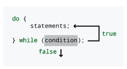
false, a execução pula o corpo do laço. Um laço do-while tem a garantia de ser executado pelo menos uma vez.Podemos usar um laço do-while para imprimir os primeiros 10 quadrados perfeitos
da seguinte forma.
int x = 1;
do {
System.out.println(x*x);
++x;
} while (x <= 10);Este laço se comporta exatamente da mesma forma que o laço a seguir.
int x = 1;
while (x <= 10) {
System.out.println(x*x);
++x;
}O momento em que um laço do-while realmente se destaca é quando seu
programa funcionará incorretamente se o laço não for executado pelo menos uma vez.
Essa situação ocorre frequentemente com entradas, quando o laço deve ser executado pelo menos
uma vez antes de verificar a condição. Por exemplo, imagine que você queira
escrever um programa que escolha um número aleatório entre 1 e 100 e permita
que o usuário adivinhe qual é até acertar. Você precisa de um laço
porque é uma atividade repetitiva, mas precisa permitir que o usuário adivinhe
pelo menos uma vez para que você possa verificar se ele acertou. O
fragmento de programa a seguir faz exatamente isso.
Scanner in = new Scanner(System.in);
Random random = new Random();
int guess;
int number = random.nextInt(100) + 1;
do {
System.out.print("Qual é o seu palpite? ");
guess = in.nextInt();
} while (guess != number);
System.out.println("Você acertou! O número era " + number + ".");Você poderia executar a mesma função com um laço while , mas precisaria
obter a entrada do usuário antes do início do laço. Usar o
laço do-while é um pouco mais elegante.
5.3.4. Laços aninhados
Assim como é possível aninhar instruções if, também é possível aninhar laços dentro de outros
laços. No caso mais simples, você pode ter alguma atividade repetitiva que
precisa ser executada várias vezes. Por exemplo, quando você era
mais jovem, provavelmente teve que aprender as tabuadas. Para cada
número, uma tabuada fornecia o valor do produto desse
número por todos os números inteiros entre 1 e 12. Podemos escrever um código para imprimir
a tabuada de cada número de 1 a 10 simplesmente
repetindo o processo.
for (int number = 1; number <= 10; number++) {
for (int factor = 1; factor <= 12; factor++) {
System.out.println(number + " x " + factor +
" = " + number*factor);
}
System.out.println();
}O laço externo que incrementa number é executado 10 vezes. O laço interno
que incrementa factor será executado 12 vezes a cada iteração do laço externo
. Assim, o código no laço interno será executado um total de 120 vezes.
A cada 12 iterações, o laço interno irá parar, e uma linha em branco extra
será adicionada pelo método System.out.println() no laço externo.
A sequência composta por 1, 3, 6, 10, 15 e assim por diante é conhecida como números triangulares. O iésimo número triangular é a soma dos primeiros i inteiros. Eles são chamados de números triangulares porque podem ser representados como triângulos equiláteros de uma maneira muito natural, se você usar um número de pontos igual ao número.
Podemos usar laços aninhados para imprimir os primeiros n números triangulares, onde n é especificado pelo usuário.
import java.util.*;
public class TriangularNumbers {
public static void main(String[] args) {
Scanner in = new Scanner(System.in);
System.out.print("How many triangular numbers? ");
int n = in.nextInt();
int sum;
for (int i = 1; i <= n; ++i) {
sum = 0;
for (int j = 1; j <= i; ++j) {
sum += j;
}
System.out.println(sum);
}
}
}Como você pode ver, o laço externo percorre cada um dos n
números triangulares diferentes. Em seguida, o laço interno realiza a soma
necessária para calcular o número triangular dado. No entanto, produzir uma sequência de
números triangulares dessa maneira é ineficiente. Laços aninhados são uma maneira eficaz de resolver muitos problemas,
principalmente certos tipos de problemas que usam matrizes, mas podemos gerar
números triangulares usando apenas um único laço for. A ideia principal é
que podemos acompanhar o número triangular anterior e adicionar
i a ele, à medida que i aumenta.
import java.util.*;
public class CleverTriangularNumbers {
public static void main(String[] args) {
Scanner in = new Scanner(System.in);
System.out.print("How many triangular numbers? ");
int n = in.nextInt();
int triangular = 0;
for (int i = 1; i <= n; ++i) {
triangular += i;
System.out.println(triangular);
}
}
}Ao remover o laço interno for, a quantidade total de trabalho necessária é
consideravelmente reduzida.
5.3.5. Armadilhas comuns
Com grande poder vem grande responsabilidade. O poder de repetir coisas inúmeras vezes significa que também podemos repetir nossos erros inúmeras vezes. Muitos bugs clássicos ocorrem como resultado de erros lógicos ou tipográficos em laços. Listamos alguns dos mais comuns a seguir.
|
Armadilha: Laços infinitos
É possível criar um laço que nunca termina. Seu programa pode demorar muito tempo para terminar, mas se demorar muito mais do que você espera, um laço infinito pode ser o culpado. Laços infinitos podem ocorrer porque você se esquece de incluir uma instrução apropriada para avançar um contador. Presume-se que este código tenha a intenção de imprimir os primeiros 100 números inteiros,
mas não há código que aumente o valor de Seria de se esperar que este código imprimisse 20 linhas de saída. No entanto,
lembre-se de que |
|
Armadilha: laços quase infinitos
Muitos laços são realmente infinitos; outros demoram muito tempo. Por exemplo, se você pretendia executar um laço de 10 a 0, mas incrementou seu contador em vez de decrementá-lo, o estouro de memória significa que você acabará chegando a um número menor que 0, mas isso levará mais de 2 bilhões de incrementos em vez dos 10 decrementos esperados. Este laço irá desacelerar significativamente seu código. Todos ficarão tão cansados de esperar que podem acabar saindo do lançamento do foguete. É claro que outro problema com laços quase infinitos é que você está lidando com valores errados. Ninguém espera ouvir o número 2.147.483.647 em uma contagem regressiva. |
|
Armadilha: Erros de "fencepost"
Talvez os erros de laço mais comuns sejam os erros de poste de cerca, frequentemente conhecidos como erros off-by-one. O nome “fencepost” vem de um erro relacionado que alguém poderia cometer ao montar uma cerca. Imagine que você queira erguer uma cerca de arame de 10 metros de comprimento com um poste de suporte a cada metro; quantos postes você precisa? Na verdade, não fornecemos informações suficientes para responder à pergunta corretamente. Se sua cerca for construída em linha reta, você precisará de 11 postes para que haja um poste em cada extremidade. No entanto, se sua cerca for um recinto retangular , digamos, de 3 metros por 2 metros, você precisará apenas de 10 postes. Em laços, os erros de poste de cerca geralmente se devem à contagem baseada em zero. Um laço É claro que, às vezes, precisamos da contagem a partir de 1. Depois de se habituar à contagem a partir de zero, um programador pode criar o seguinte laço que itera incorretamente 9 vezes. A versão correta, que itera 10 vezes, está abaixo. Se você quiser iterar n vezes, comece em 0 e vá até
mas sem incluir n ou, alternativamente, comece em 1 e vá até e
incluindo n. Para manter a consistência dos cabeçalhos dos laços, alguns
programadores sempre começam em 0 e, em seguida, ajustam os valores dentro do
laço, imprimindo |
|
Armadilha: Laços ignorados
Um laço é executado enquanto sua condição for Por exemplo, podemos escrever um programa que somará qualquer número de valores positivos . Quando o usuário terminar de usar o somador, ele ou ela digita um número negativo. Esse número negativo, chamado de valor sentinela, diz ao programa para parar de executar o laço. Abaixo está uma implementação incorreta de tal programa. Este laço nunca será executado porque |
|
Armadilha: Pontos-e-vírgulas mal posicionados
A noção de uma instrução em Java costuma ser confusa na mente de programadores iniciantes. Um laço inteiro (com qualquer número de laços aninhados dentro dele) é considerado uma instrução. Uma instrução executável que termina com um ponto-e-vírgula também é uma instrução, mesmo quando essa instrução executável está vazia. Assim, o seguinte é um laço válido (mas infinito). Esse código deveria fazer uma contagem regressiva a partir de 100, assim como no jogo
esconde-esconde; no entanto, há um ponto-e-vírgula após a condição do
laço Esse erro é comum especialmente para quem é novo em laços e instruções condicionais
e tem o hábito de colocar ponto-e-vírgulas depois de tudo.
Um ponto-e-vírgula mal colocado nem sempre resulta em um laço infinito. Aqui
está a versão com laço Esta versão do código será executada de forma semelhante, exceto que a decrementação está
incorporada no cabeçalho do laço. Assim, o laço executará a instrução vazia
, mas também decrementará Existem alguns casos em que uma instrução vazia no corpo de um laço é útil, embora nunca seja necessária. Nos próximos capítulos, vamos apontar situações em que você pode querer usar uma instrução vazia dessa maneira. |
5.4. Solução: Pesquisa de DNA
A seguir, apresentamos uma solução para o problema de pesquisa de DNA proposto no
início da segunda metade deste capítulo. Nossa solução exibe
o índice dentro da sequência quando encontra uma correspondência com a
subsequência que está procurando. Em seguida, ela exibe o número total de
correspondências. Nosso código também faz verificação de erros para garantir que o usuário
insira apenas sequências de DNA válidas contendo as letras A, C, G e T.
Começamos nosso código com a instrução import padrão e a definição de classe
.
import java.util.*;
public class DNASearch {
public static void main(String[] args) {
Scanner in = new Scanner(System.in); (1)
String sequence, subsequence;
boolean valid; (2)
char c;| 1 | O método main() instancia um objeto Scanner e declara as duas
variáveis String de que precisaremos para armazenar as sequências de DNA. |
| 2 | O método
também declara um boolean e um char que usaremos para a verificação de entrada. |
do {
System.out.print("Enter the DNA sequence you wish to search in: "); (1)
sequence = in.next().toUpperCase(); (2)
valid = true;
for (int i = 0; i < sequence.length() && valid; ++i) { (3)
c = sequence.charAt(i);
if (c != 'A' && c != 'C' && c != 'G' && c != 'T') { (4)
System.out.println("Invalid DNA sequence!");
valid = false;
}
}
} while (!valid); (5)| 1 | Em seguida, o usuário é solicitado a inserir uma sequência de DNA para pesquisa. |
| 2 | Esta
String armazenada em sequence é convertida para maiúsculas, caso
o usuário não esteja sendo consistente. |
| 3 | O laço for interno neste código verifica cada char dentro de sequence. |
| 4 | Se algum char não for um
‘A’, ‘C’, ‘G’ ou ‘T’, então valid é definido como false. Como
resultado, o laço for é encerrado. Além disso, o laço do-while repete o
prompt e obtém uma nova String para sequence do usuário. |
| 5 | Este laço externo
do-while continua enquanto o usuário continuar inserindo sequências de DNA
inválidas. |
do {
System.out.print("Enter the subsequence you wish to search for: ");
subsequence = in.next().toUpperCase();
valid = true;
for (int i = 0; i < subsequence.length() && valid; ++i) {
c = subsequence.charAt(i);
if (c != 'A' && c != 'C' && c != 'G' && c != 'T') {
System.out.println("Invalid DNA sequence!");
valid = false;
}
}
} while (!valid);O código usado para inserir subsequence durante a verificação de erros é
praticamente idêntico ao código para inserir sequence.
int found = 0;
for (int i = 0; i < sequence.length() - subsequence.length() + 1; ++i) { (1)
for (int j = 0; j < subsequence.length(); ++j) { (2)
if (subsequence.charAt(j) != sequence.charAt(i + j)) { (3)
break;
}
if (j == subsequence.length() - 1) { // Matches (4)
System.out.println("Match found at index " + i);
++found;
}
}
}| 1 | O núcleo da pesquisa está nesses laços for aninhados.
O laço externo percorre todos os índices em sequence, até que
chegue a um índice que seja tarde demais para ser o início de uma nova subsequência
(já que a subsequência seria longa demais para caber). Isso ocorre
quando o valor de i é maior ou igual a
sequence.length() - subsequence.length() + 1. Pode ser necessário refletir um pouco
para verificar se essa condição está correta. Uma maneira de pensar sobre
esse problema é observar que, quando sequence e subsequence têm
o mesmo comprimento, você precisa verificar a partir do índice 0 de sequence
, mas não os índices posteriores. Além disso, se subsequence for um char mais longo
que sequence, nunca poderá haver uma correspondência. Nesse caso, o valor de
sequence.length() - subsequence.length() + 1 seria 0. Como 0
não é menor que 0, o laço for externo nunca seria executado. |
| 2 | O laço for interno percorre o comprimento de subsequence,
garantindo que cada char em sequence, começando no deslocamento apropriado,
corresponda exatamente a um char em subsequence. |
| 3 | Se, em qualquer ponto, os
dois valores char não corresponderem, o laço for interno será imediatamente
encerrado, usando o comando break. |
| 4 | Na última iteração do
laço for interno, quando j for um a menos que o comprimento de subsequence,
sabemos que toda a subsequence correspondeu a uma parte de sequence. Como
resultado, imprimimos o índice de sequence onde subsequence começou
e incrementamos o contador found. |
Se você conhece bem a classe String, pode usar o método indexOf()
para substituir o laço for interno. Deixamos essa abordagem como um exercício.
Por fim, imprimimos o número total de correspondências encontradas. Para
evitar uma saída estranha como 1 correspondência encontrada., usamos um if-else para
personalizar a saída com base no valor de found.
if (found == 1) {
System.out.println("One match found.");
} else {
System.out.println(found + " matches found.");
}
}
}As ideias necessárias para implementar corretamente a solução não são difíceis, mas detectar todos os erros de deslocamento de um e acertar todos os detalhes exige cuidado. Também há mais de uma maneira de codificar essa solução. Por exemplo, poderíamos ter escrito os laços aninhados que fazem a busca da seguinte forma.
int found = 0;
for (int i = 0; i < sequence.length() - subsequence.length() + 1; ++i) {
for (int j = 0; j < subsequence.length() &&
subsequence.charAt(j) == sequence.charAt(i + j); ++j) {
if (j == subsequence.length() - 1) { // Correspondências
System.out.println("Correspondência encontrada no índice " + i);
++found;
}
}
}Esse design é preferido por muitos, pois elimina o break. Ao usar
uma instrução vazia, é possível mover a verificação para ver se o
processo de correspondência foi concluído para fora do laço for interno.
int found = 0;
int j;
for (int i = 0; i < sequence.length() - subsequence.length() + 1; ++i) {
for (j = 0; j < subsequence.length() &&
subsequence.charAt(j) == sequence.charAt(i + j); ++j);
if (j == subsequence.length()) { // Correspondências
System.out.println("Correspondência encontrada no índice " + i);
++found;
}
}Nesse caso, observe que devemos declarar j fora do laço for
interno, já que ele será usado fora dele. Essa abordagem é mais eficiente
porque precisamos realizar a verificação apenas uma vez. Observe que a
condição da instrução if também mudou. Agora, sabemos que toda a
subsequência corresponde porque o laço foi executado até o fim. Se o laço
não tivesse sido executado até o fim, então j seria menor que
subsequence.length() e o laço deve ter terminado porque os dois
valores char não corresponderam. Embora seja mais eficiente, alguns programadores
evitariam essa abordagem porque ela usa uma sintaxe confusa na qual
o corpo do laço for é uma única instrução vazia seguida por um
ponto-e-vírgula. Da mesma forma, a lógica sobre sair do laço e a condição
da instrução if fica mais obscura.
5.5. Concorrência: Laços
Muitos programadores utilizam a concorrência para aumentar a velocidade, a fim de fazer com que seus programas sejam executados mais rapidamente. A maioria dos programas que são executados por um longo período utiliza laços para realizar tarefas repetitivas. Se esses laços estiverem realizando a mesma operação em muitos conjuntos de dados diferentes, podemos acelerar o processo ao dividir os dados e permitir que diferentes threads operem em seu próprio segmento dos dados. Dividir os dados dessa maneira é chamado de decomposição de domínio , o que nos permite alcançar o _paralelismo de dados. Esses tópicos são discutidos mais detalhadamente em Seção 14.3.
Executar tarefas repetitivas é um dos grandes pontos fortes dos computadores. Para a maioria dos programas que rodam por muito tempo, quantidades incríveis de cálculos estão sendo feitas dentro de laços (geralmente aninhados). A decomposição de domínios não funcionará para todos esses programas. Alguns não podem ser paralelizados de forma alguma, mas este livro trata de encontrar problemas que possam ter soluções paralelas e concorrentes.
Em concorrência.html, apresentaremos ferramentas para escrever um programa concorrente com diferentes threads de execução rodando exatamente ao mesmo tempo e potencialmente interagindo. Usando apenas o poder dos laços, você pode ver o paralelismo em ação agora.
Considere o problema de calcular a soma dos senos de um intervalo de números inteiros. Em sua essência, há um laço do início ao fim do intervalo.
for (int i = start; i <= end; ++i) {
sum += Math.sin(start);
}Se quisermos permitir que o usuário especifique o início e o fim e imprima a soma, precisamos criar um programa com um pouco de entrada e saída em torno desse laço.
import java.util.Scanner;
public class SumSines {
public static void main(String[] args) {
Scanner in = new Scanner(System.in);
System.out.print("Enter starting value: ");
int start = in.nextInt();
System.out.print("Enter ending value: ");
int end = in.nextInt();
double sum = 0;
for (int i = start; i <= end; ++i) {
sum += Math.sin(start);
}
System.out.println("Sum of sines: " + sum);
}
}Se você compilar e executar este programa com 1 como valor inicial e
100000000 como final, a resposta deve ser 1.7136493465700542. Cem
milhões de valores é uma quantidade enorme para calcular o seno. Dependendo da sua
máquina, essa tarefa deve levar entre 10 segundos e mais de um minuto. Tente
cronometrar o tempo que isso leva com a maior precisão possível.
Agora, abra um total de quatro janelas de terminal e navegue em todas elas até o
diretório que contém SumSines.class. Execute SumSines em cada uma delas. Para
o primeiro terminal, digite 1 como início e 25000000 como fim. Para
o segundo, digite 25000001 e 50000000. Para o terceiro, digite
50000001 e 75000000. Para o último, digite 75000000 e
100000000. Após a execução, você deverá obter, respectivamente,
1.4912473269134603, -0.6795491754132104, -0.2893142602684644 e
1.1912654553381272. Se você somar esses valores usando uma calculadora,
deverá obter 1.7136493465699127, que é quase exatamente a mesma resposta
que obtivemos antes. (Erros de arredondamento de ponto flutuante causam a ligeira
diferença.)
Se você tentar iniciá-los para fazer o cálculo mais ou menos ao mesmo tempo, pode tentar ver quanto tempo leva para todos eles concluírem. Demorou menos tempo do que antes? Se você tiver um processador de núcleo único, pode ter demorado o mesmo tempo ou mais. Se você tiver um processador de dois núcleos, deveria ter demorado menos tempo, e se você tiver um processador de quatro núcleos, ainda menos. Como estamos dividindo o problema em quatro partes, não esperamos ver nenhuma melhoria com mais de quatro núcleos.
A maioria dos sistemas operacionais oferece uma maneira gráfica de visualizar a carga em cada processador. Se você examinar o uso da CPU enquanto executa esses programas, deverá ver um pico quando os programas começarem e, em seguida, uma queda quando eles terminarem. Para múltiplos núcleos, como determinamos em qual núcleo queríamos que cada programa fosse executado? Não dissemos. Em geral, é difícil especificar em qual núcleo queremos executar um programa, processo ou thread. O SO faz o trabalho de agendamento e escolhe um processador livre quando precisa executar um programa. É até possível que programas e threads mudem de um núcleo para outro durante a execução, se o SO precisar equilibrar a carga de trabalho.
Este exemplo de seno é semelhante ao Exemplo 14.10 em Capítulo 14. Como você deve ter percebido, rodar quatro programas simultaneamente não é prático. Você precisa abrir várias janelas, digitar os pontos inicial e final com muito cuidado e combinar as respostas no final, já que seus programas não podem interagir diretamente entre si. Os recursos do Java facilitarão esse trabalho, permitindo que executemos mais de uma thread de execução por vez, sem a necessidade de executar vários programas manualmente.
5.6. Exercícios
Problemas conceituais
-
Se você tiver uma
Stringcontendo um texto longo e quiser contar o número de palavras no texto que começam com a letra‘m’, qual dos três tipos de laço você usaria e por quê? -
Em Exemplo 5.2, nossa última versão do testador de primalidade
PrimalityTester2calcula a raiz quadrada do número que está sendo testado. Em vez de calcular esse valor antes do laço, como o desempenho seria afetado se alterássemos o cabeçalho do laçoforpara o seguinte?for (long i = 3; i <= Math.sqrt(number) && prime; i += 2) -
Quantas sequências de DNA diferentes de comprimento n existem ?
-
Existem três erros diferentes no laço a seguir, destinado a imprimir os números de 1 a 10. Quais são eles?
for (int i = 1; i < 10; --i); { System.out.println(i); } -
Considere o código a seguir contendo laços
foraninhados.Scanner in = new Scanner(System.in); int n = in.nextInt(); int count = 0; for (int i = 1; i <= n; ++i) { for (int j = 1; j <= i; ++j) { ++count; } }Em termos do valor de
n, quantas vezescounté incrementado? Se isso não for imediatamente óbvio, acompanhe a execução do programa manualmente ou execute o código para vários valores diferentes dene tente detectar um padrão.
Exercício de Programação
-
Escreva um programa que converta números na base 10 em números na base 3. Se essa tarefa lhe parecer muito fácil, escreva um programa que converta números na base 10 para qualquer base no intervalo de 2 a 16. Dica: use as letras de A a Z, em ordem, para representar dígitos maiores que 9.
-
O maior divisor comum (MDC) de dois números inteiros é o maior número inteiro que divide ambos sem sobras. O MDC de quaisquer dois números inteiros positivos é, no mínimo, 1 e, no máximo, o menor dos dois números. Escreva um programa que solicite ao usuário dois valores
inte encontre o MDC deles. Embora existam métodos mais eficientes, você pode contar de qualquer um dos números. Se o contador dividir ambos os números sem sobras, esse é o MCD. É garantido que o contador os dividirá se chegar a 1. -
Na solução para o problema de busca de DNA apresentado em <<Solução: Pesquisa de DNA>`, usamos dois laços
forpara encontrar ocorrências de uma subsequência de DNA dentro de uma sequência maior -
Desenvolvedores profissionais de Java teriam usado um único laço
fore o métodoindexOf()na classeString. Uma versão desse método retorna o índice de uma substring dentro de um objetoString, começando a partir de um deslocamento específico, conforme mostrado abaixo.String text = "fun dysfunction"; String search = "fun"; System.out.println("Localização: " + text.indexOf(search, 4));Este código irá exibir
Localização: 7, já que a primeira ocorrência de"fun"a partir do índice4ou posterior começa no índice7. Se não houver mais ocorrências da substring além do índice inicial, o método retornará-1. Reescreva a solução para o problema de pesquisa de DNA, substituindo o laço interno de pesquisaforpelo métodoindexOf(). -
Escreva um programa que leia um número n de um usuário e em seguida imprima todas as sequências de DNA possíveis de comprimento n. Tenha cuidado para não fornecer um valor muito grande ao executar este programa. Dica: Represente a sequência como uma
String. Em cada iteração, concentre-se no últimocharnaString. Se for um‘A’, altere-o para um‘C’. Se for um‘C’, altere-o para um‘G’. Se for um‘G’, altere- o para um‘T’. Se for um‘T’, altere-o de volta para um‘A’, mas “carregue” o incremento para o próximochar, como um odômetro giratório. Você terá que projetar laços que possam lidar com carregamentos que se propagam por vários índices. -
Reimplemente a solução para o programa de busca de DNA apresentado em Seção 5.4 usando
JOptionPanepara gerar GUIs para entrada e saída.
Experimentos
-
Usando um laço
for, registre a simulação de Monty Hall de modo que você possa executá-la 100 vezes, sempre optando por trocar de porta. Mantenha um registro de quantas vezes você ganha. Altere seu código novamente para executar a simulação de Monty Hall mais 100 vezes, sempre optando por manter sua escolha inicial. Mais uma vez, mantenha um registro de quantas vezes você ganha. Compare os dois registros. Escolher trocar deve ter um desempenho aproximadamente duas vezes melhor do que manter sua escolha inicial. Aumente o número de iterações para 1.000 e depois para 10.000 vezes. O desempenho de trocar se aproxima do dobro do desempenho de não trocar? -
Escreva três laços
foraninhados, cada um dos quais executado 1.000 vezes. Incremente um contador no laçoformais interno. Se esse contador começar em 0, seu valor final deve ser 1.000.000.000. Cronometre quanto tempo seu programa leva para ser executado até o fim usando um cronômetro ou, se você estiver em um sistema Unix ou Linux, o comandotime. Sinta-se à vontade para aumentar e diminuir o número de vezes que cada laço é executado para ver o efeito no tempo. No entanto, se você aumentar demais os valores dos três laços, pode ser que tenha que esperar um bom tempo. -
Em Seção 5.3.5, um dos erros comuns em laços que discutimos é um laço quase infinito. Crie seu próprio laço quase infinito que vá de
10a0, incrementando em vez de decrementar. Cronometre a execução do seu programa. Ao contrário do nosso exemplo, não use uma instrução de saída, ou seu código levará muito tempo para ser executado. Quanto tempo a mais seu código levaria para ser executado se você usasse umlongem vez de umint? -
Em Exemplo 5.2, apresentamos três programas para testar se um número é primo. Execute cada um desses testadores de primos em um grande primo, como 982.451.653, e cronometre-os. Existe uma diferença significativa no tempo de execução de
PrimalityTester0ePrimalityTester1? E quanto aPrimalityTester1ePrimalityTester2? -
Em Exemplo 5.6, executamos quatro programas ao mesmo tempo para resolver um problema em paralelo. Use a mesma estrutura (combinada com seu conhecimento sobre números primos de Exemplo 5.2) para escrever um programa que possa verificar quantos números primos existem em um intervalo de inteiros especificado pelo usuário. Em seguida, use-o para encontrar o número total de números primos entre 2 e 500.000.000. Agora, execute duas cópias do programa, com uma começando em 2 e indo até 250.000.000 e a outra começando em 250.000.001 e indo até 500.000.000. Se você somar os números , obtém a mesma resposta? (Se não, há um bug no seu programa.) Agora, divida o trabalho em quatro partes. Quão mais rápido, se é que há diferença, é executar todos os quatro programas em vez de um? Uma das quatro partes é executada significativamente mais rápido ou mais lento do que as outras?
Capítulo 6. Arrays
O excesso de algo bom pode ser maravilhoso.
6.1. Introdução
Com uma exceção, todos os tipos sobre os quais falamos neste livro
armazenam um único valor. Por exemplo, uma variável int só pode
conter um único valor int. Se você tentar inserir um segundo valor int
numa variável, ele substituirá o primeiro.
O tipo String, é claro, é a exceção. Objetos String podem
conter sequências char de qualquer comprimento, de 0 até um tamanho praticamente
ilimitado (o comprimento máximo teórico de um String em Java é
Integer.MAX_INT, mais de 650 vezes o comprimento de Guerra e Paz).
Por mais notáveis que sejam os objetos String, este capítulo trata de um tipo mais
geral de lista chamado array. Podemos criar arrays para armazenar uma
lista de qualquer tipo de variável em Java.
A capacidade de trabalhar com listas amplia o escopo dos problemas que podemos resolver. Além de listas simples, podemos usar as mesmas ferramentas para criar tabelas, grades e outras estruturas para resolver problemas fascinantes como o que vem a seguir.
6.2. Problema: Jogo da Vida
Alguns físicos insistem que as regras que regem o universo são terrivelmente complicadas. Outros insistem que as leis fundamentais são simples e que apenas a interação global entre elas é complexa. Com a capacidade de realizar simulações rapidamente, os cientistas da computação demonstraram que alguns sistemas podem apresentar interações muito complexas utilizando regras simples. Talvez os exemplos mais conhecidos desses sistemas sejam os autômatos celulares, dos quais o Jogo da Vida de Conway é o mais famoso.
A estrutura do Jogo da Vida de Conway é uma grade infinita composta por quadrados chamados células. Algumas células na grade são pretas (ou vivas, para dar um toque biológico), e o restante é branco (ou morto). Qualquer célula tem 8 vizinhas, conforme mostrado na figura abaixo.
O padrão de células vivas e mortas em um determinado momento na grade é chamado de geração. Para determinar a próxima geração, usamos as seguintes regras.
-
Se uma célula viva tiver menos de dois vizinhos vivos, ela morre de solidão.
-
Se uma célula viva tiver mais de três vizinhos, ela morre por causa da superlotação.
-
Se uma célula viva tiver exatamente dois ou três vizinhos vivos, ela sobrevive até a próxima geração.
-
Se uma célula morta tiver exatamente três vizinhas vivas, ela se torna uma célula viva.
Essas quatro regras simples permitem interações mais complexas do que você poderia imaginar. Os padrões que surgem da aplicação dessas regras a uma configuração inicial de células vivas e mortas estabelecem um equilíbrio entre o caos total e a ordem rígida. Como o nome do jogo sugere, a semelhança com padrões biológicos de desenvolvimento pode ser surpreendente.
Sua tarefa é criar um simulador de Life de tamanho n × m, cujos valores específicos serão discutidos a seguir. O programa deve simular o processo a uma velocidade que seja envolvente de se assistir, com uma nova geração a cada décimo de segundo. O programa deve começar tornando aleatoriamente 10% de todas as células vivas e o restante morto.
6.2.1. Limitações do terminal
Um problema que talvez esteja te preocupando é como exibir a
simulação. Em Capítulo 16, você aprenderá a criar uma interface gráfica de usuário (GUI)
capaz de exibir uma grade de células em preto e branco e muitas outras
coisas interessantes também. Por enquanto, a principal ferramenta que podemos usar para
saída ainda é o terminal. O método de saída que recomendamos é imprimir
um asterisco ('*') para uma célula viva e um espaço (' ') para uma
morta. Dessa forma, você pode ver facilmente os padrões se formando na tela e
mudando com o tempo.
O terminal clássico não é muito grande. Por esse motivo, sugerimos que você defina a altura da sua simulação para 24 linhas e a largura da sua simulação para 80 colunas. Essas dimensões estão em conformidade com os tamanhos mais antigos de terminais. Se a tela do seu terminal for muito maior, você pode alterar a largura e a altura posteriormente para realizar uma simulação maior. Não importa o quão grande seja a tela do jogo, o tamanho ideal do jogo. Como nosso tamanho é tão limitado, precisamos lidar com o problema de uma célula na borda. Qualquer coisa além dos limites deve ser considerada morta. Assim, uma célula bem na borda da grade de simulação pode ter no máximo 5 vizinhos. Uma célula em um dos quatro cantos pode ter apenas 3 vizinhos.
Para dar a aparência de transições suaves, você precisa imprimir cada nova geração de células rapidamente e nos mesmos locais que a geração anterior. Simplesmente imprimir um conjunto após o outro não alcançará esse efeito, a menos que a tela do seu terminal tenha exatamente 24 linhas de altura. Portanto, você precisará limpar a tela a cada vez. Em um esforço para ser independente de plataforma, o Java não oferece uma maneira fácil de limpar a tela do terminal. Um truque rápido e simples é simplesmente imprimir 100 linhas em branco antes de imprimir a próxima geração. Esse truque funcionará desde que a altura do seu terminal não seja significativamente superior a 100 linhas. Se for, você precisará imprimir um número maior de linhas em branco.
Por fim, você precisa esperar um breve intervalo de tempo entre as gerações para que o usuário possa ver cada configuração antes que ela seja apagada e substituída pela próxima. A maneira mais simples de fazer isso é fazer com que seu programa entre em espera por um breve período de tempo, um décimo de segundo, como sugerimos anteriormente. O código para fazer seu programa entrar em espera por esse período de tempo é:
--- -
try { Thread.sleep(100);
} catch (InterruptedException e) {}
----Explicaremos esse código com muito mais detalhes em Capítulo 14.
O item-chave de importância é o número passado para o método sleep().
Esse valor é o número de milissegundos que você deseja que seu programa fique em espera.
100 milissegundos são, obviamente, um décimo de segundo.
Para simular o Jogo da Vida, precisamos armazenar informações, ou seja, se as células estão vivas ou mortas, em uma grade. Primeiro, precisamos discutir a tarefa mais simples de armazenar dados em uma lista.
6.3. Conceitos: Listas de dados
As listas de dados são de suma importância em muitas áreas diferentes da vida: listas de compras, listas de itens a levar, listas de funcionários que trabalham em uma empresa, agendas de endereços, listas dos dez melhores e muito mais. As listas são ainda mais importantes na programação. Como você sabe, um dos grandes pontos fortes dos computadores é a velocidade. Se tivermos uma longa lista de dados, podemos usar essa velocidade para realizar operações em todos os dados rapidamente. Listas de contatos de e-mail , entradas em um banco de dados e células em uma planilha são apenas algumas das formas mais óbvias como as listas aparecem em aplicativos de computador.
Mesmo em Java, há muitas maneiras diferentes de registrar uma lista de informações, mas uma lista é apenas uma forma de estrutura de dados. Como o nome indica, uma estrutura de dados é uma maneira de organizar dados, seja em uma lista, em uma árvore, em ordem classificada, em algum tipo de hierarquia ou de qualquer outra forma que possa ser útil. Neste capítulo, falaremos apenas sobre a estrutura de dados de matriz, mas outras estruturas de dados serão discutidas em Capítulo 19. Abaixo, apresentamos uma breve explicação de alguns dos atributos que qualquer estrutura de dados pode ter.
6.3.1. Atributo da estrutura de dados
- Conteúdo
-
Manter apenas um único valor em uma estrutura de dados vai contra o propósito de uma estrutura de dados. Mas, se podemos armazenar mais de um valor, será que todos esses valores devem ser do mesmo tipo? Se uma estrutura de dados pode conter vários tipos diferentes de dados, chamamos-na de heterogênea, mas se ela puder conter apenas um tipo, chamamos-na de homogênea.
- Tamanho
-
O tamanho de uma estrutura de dados pode ser algo fixo no momento em que é criada ou pode mudar dinamicamente. Se o tamanho ou comprimento de uma estrutura de dados pode mudar, chamamos-a de estrutura de dados dinâmica. Se a estrutura de dados tem um tamanho ou comprimento que nunca pode mudar após ter sido criada, chamamos-a de estrutura de dados estática.
- Acesso a Elementos
-
Uma das razões pelas quais existem tantas estruturas de dados diferentes é que diferentes formas de estruturar dados são melhores ou piores para uma determinada tarefa. Por exemplo, se sua tarefa for adicionar uma lista de números, então você espera acessar cada elemento da lista. No entanto, se você estiver procurando uma palavra em um dicionário, não vai querer verificar todas as entradas do dicionário para encontrá-la.
Algumas estruturas de dados são otimizadas para que você possa ler, inserir ou excluir com eficiência apenas um único item, geralmente o primeiro (ou último) item na estrutura de dados. Algumas estruturas de dados permitem apenas que você se desloque pela estrutura sequencialmente, um item após o outro. Tal estrutura de dados possui o que se chama de acesso sequencial. Outras ainda permitem que você salte aleatoriamente para qualquer ponto que desejar dentro da estrutura de dados de forma eficiente. Essas estruturas de dados possuem o que se chama de acesso aleatório. Programadores avançados levam em consideração muitos fatores diferentes antes de decidir qual estrutura de dados é mais adequada para o seu problema.
6.3.2. Características de um vetor
Agora que definimos esses atributos, podemos dizer que um vetor é uma
estrutura de dados homogênea e estática com acesso aleatório. Um vetor é
homogêneo porque só pode conter uma lista de um único tipo de dados,
como int, double ou String. Um vetor é estático porque tem
um comprimento fixo que é definido apenas quando o vetor é instanciado.
Um array
também possui acesso aleatório porque saltar para qualquer elemento no array é
rápido e leva aproximadamente o mesmo tempo que saltar para qualquer
outro.
Um array é uma lista de um tipo específico de elementos que tem comprimento n, um comprimento especificado quando o array é criado. Cada um dos n elementos é indexado usando um número entre 0 e n - 1]. Mais uma vez, a contagem baseada em zero mostra sua face feia . Considere a seguinte lista de itens: {9, 4, 2, 1, 6, 8, 3}
Se essa lista for armazenada em um array, o primeiro elemento, 9, teria o índice 0, 4 teria o índice 1, e assim por diante, terminando em 3 com um índice de 6, embora o número total de itens seja 7. Nem todas as linguagens usam contagem baseada em zero para índices de vetor , mas muitas o fazem, incluindo C, C++ e Java. A razão pela qual linguagens como C originalmente usavam contagem baseada em zero para índices é que a variável correspondente ao vetor é um endereço dentro da memória do computador que aponta para o primeiro elemento da vetor. Assim, um índice de 0 é 0 vezes o tamanho de um elemento somado ao endereço inicial, e um índice de 5 é 5 vezes o tamanho de um elemento somado ao endereço inicial. Portanto, os índices baseados em zero proporcionavam uma maneira rápida para o programa calcular em que ponto da memória um determinado elemento de um array se encontrava.
6.4. Sintaxe: Arrays em Java
O conceito de lista não é nada misterioso. Numerar cada elemento da lista é algo natural, mesmo que a numeração comece no 0 em vez de no 1. No entanto, os arrays são a fonte de muitos erros que fazem com que os programas Java travem. Abaixo, explicamos os fundamentos da criação de arrays, indexação em arrays e uso de arrays com laços. Em seguida, há uma subseção extra explicando como enviar dados de um arquivo para um programa como se o arquivo estivesse sendo digitado por um usuário. Usar essa técnica pode economizar muito tempo quando você estiver experimentando com arrays.
6.4.1. Declaração e instanciação de um array
Para criar um array, geralmente é necessário criar primeiro uma variável de array.
Lembre-se de que um array é uma estrutura de dados homogênea, o que significa que ele
só pode armazenar elementos de um único tipo. Ao criar uma variável de array
, você precisa especificar qual é esse tipo. Para declarar uma variável de
array, use o tipo que ela irá conter, seguido de colchetes
([]), seguido do nome da variável. Por exemplo, se
você quiser criar um array chamado numbers que possa conter inteiros, você
digitaria o seguinte.
int[] numbers;Se você tem alguma experiência em programação em C ou C++, talvez esteja acostumado a ver os colchetes do outro lado da variável, assim.
int numbers[];Em Java, ambas as declarações são perfeitamente válidas e equivalentes. No entanto,
a primeira declaração é preferível do ponto de vista estilístico. Ela
segue o padrão de usar o tipo (um array de valores int, neste
caso) seguido pelo nome da variável como sintaxe para uma declaração.
Como dissemos, os arrays também são estruturas de dados estáticas, o que significa que seu
comprimento é fixado no momento da criação. No entanto, não especificamos um
comprimento acima. Essa declaração ainda não criou um array, apenas uma
variável que pode apontar para um array. Na segunda metade deste capítulo,
discutiremos mais detalhadamente essa diferença entre a maneira como um array é
criado e a maneira como um int ou qualquer outra variável de tipo primitivo é
criada. Para realmente criar o array, precisamos usar outra etapa,
envolvendo a palavra-chave new. Veja como instanciamos uma matriz do tipo
int com 10 elementos.
numbers = new int[10];
Usamos a palavra-chave new, seguida do tipo de elemento, seguida
do número de elementos que o array pode conter entre colchetes. Esse novo
array é armazenado em numbers. Em outras palavras, a variável numbers
é agora um nome para o array. Normalmente, as duas etapas de declarar e
instanciar um array serão combinadas em uma única linha de código.
int[] numbers = new int[10];É sempre possível separar as duas etapas. Em alguns casos, uma única variável pode ser usada para apontar para um array de um comprimento específico, depois alterada para apontar para um array de outro comprimento, e assim por diante, como mostrado abaixo.
int[] numbers;
numbers = new int[10];
numbers = new int[100];
numbers = new int[1000];Aqui, a variável numbers começa sem apontar para nenhum array. Em seguida, ela é
configurada para apontar para um novo array com 10 elementos. Depois, ela é configurada para
apontar para um novo array com 100 elementos, ignorando o array de 10 elementos.
Por fim, ela é configurada para apontar para um array com 1.000 elementos, ignorando
o array de 100 elementos. Lembre-se de que os próprios arrays são estáticos; seus
comprimentos não podem mudar. As variáveis do tipo array, no entanto, podem apontar para
diferentes arrays com comprimentos diferentes, desde que ainda sejam
do tipo correto (neste caso, arrays de valores int).
Quais valores estão dentro do array quando ele é criado pela primeira vez? Vamos voltar
ao caso em que numbers aponta para um novo array com 10 elementos. Cada
um desses elementos contém o valor int 0, conforme mostrado abaixo.
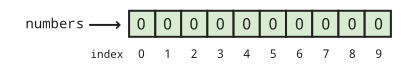
Sempre que um array é instanciado, cada um de seus n elementos
é definido com algum valor padrão. Para int, long, short e byte
esse valor é 0. Para double e float, esse valor é 0.0. Para
char, esse valor é ‘\0’, um caractere especial não imprimível. Para
boolean, esse valor é false. Para String ou qualquer outro tipo de referência
, esse valor é null, um valor especial que significa que não há
objeto.
Também é possível usar uma lista para inicializar um array. Por exemplo,
podemos criar um array do tipo double que contenha os valores 0.5,
1.0, 1.5, 2.0 e 2.5 usando o código a seguir.
double[] increments = {0.5, 1.0, 1.5, 2.0, 2.5};Esta linha de código é equivalente a usar a palavra-chave new para criar um
vetor double com 5 elementos e, em seguida, definir cada um com os valores
mostrados.
6.4.2. Acessando índices em arrays
Para usar um valor em um array, você deve acessar o índice do array, utilizando
novamente os colchetes. Voltando ao exemplo do array int
numbers com comprimento 10, podemos ler o valor no índice 4 do
array e exibi-lo.
System.out.println(numbers[4]);Até que algum outro valor seja armazenado ali, o valor de numbers[4] é 0,
e, portanto, 0 é tudo o que será impresso.
Podemos definir o valor em numbers[4] como 17 da seguinte maneira.
numbers[4] = 17;Então, se tentarmos imprimir numbers[4], 17 será impresso. O
conteúdo do array numbers ficará assim.
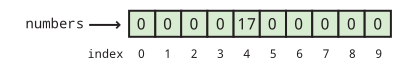
O ponto-chave a entender sobre a indexação em um array é que ela
fornece um elemento do tipo especificado. Em outras palavras, numbers[4]
é uma variável int em todos os sentidos possíveis. Você pode ler seu valor.
Você pode alterar seu valor. Você pode passá-lo para um método. Ele pode ser usado
em qualquer lugar onde um int normal possa ser usado, como no exemplo a seguir.
int x = numbers[4];
double y = Math.sqrt(numbers[2]) + numbers[4];
numbers[9] = (int)(y*x);A execução deste código armazenará 17 em x e 17.0 em y. Em seguida,
o produto desses dois, 289, será armazenado em numbers[9].
Lembre-se: em Java, o tipo à esquerda e o tipo à direita do
operador de atribuição (=) devem coincidir, exceto em casos de conversão automática
, como armazenar um valor int em uma variável double. Como
eles têm o mesmo tipo, faz sentido armazenar um elemento de uma matriz int
como numbers[4] em uma variável int como x. No entanto, um
array de valores int não pode ser armazenada em um tipo int.
int z = numbers;Este código causará um erro de compilação. O que isso significa? Você não pode colocar uma lista de variáveis em uma única variável. E o inverso também é verdadeiro .
numbers = 31;Este código também causará um erro de compilação. Um único valor não pode ser armazenado em uma lista inteira. Você teria que especificar um índice onde ele possa ser armazenado. Além disso, você deve ter cuidado para especificar um índice válido. Nenhum índice negativo será válido, nem um índice maior ou igual ao número de elementos na matriz.
numbers[10] = 99;Este código será compilado corretamente. Se você se lembra, instanciamos o
array para o qual numbers aponta para ter 10 elementos, numerados de 0 a
9. Assim, estamos tentando armazenar 99 no elemento que está um índice
depois do último elemento válido. Como resultado, o Java causará um erro
chamado ArrayIndexOutOfBoundsException, o que fará com que
seu programa trave.
6.4.3. Usando laços com arrays
Uma razão para usar arrays é evitar declarar 10 variáveis separadas
apenas para ter 10 valores int com os quais trabalhar. Mas, uma vez que você tenha o array,
muitas vezes precisará de uma maneira automatizada de processá-lo. Qualquer um dos três
tipos de laços oferece uma ferramenta poderosa para realizar operações em um
array, mas o laço for é especialmente adequado para isso. Aqui está um
exemplo de um laço for que define os valores em um array para seus
índices.
int[] values = new int[100];
for (int i = 0; i < 100; ++i) {
values[i] = i;
}Este exemplo de código mostra como é fácil iterar sobre todos os elementos
de um array com um laço for, no entanto, ele apresenta uma falha de estilo. Observe que
o número 100 é usado duas vezes: uma vez na instanciação do array
e uma segunda vez na condição de terminação do laço for. Este
fragmento de código funciona bem, mas se o programador alterar o comprimento de
values para 50 ou 500, os limites do laço for também
precisarão ser alterados. Além disso, o comprimento do array pode ser determinado
pela entrada do usuário.
Para tornar o código mais robusto e legível, podemos usar o campo length
do array values como limite do laço for.
int[] values = new int[100];
for (int i = 0; i < values.length; ++i) {
values[i] = i;
}O campo length fornece o comprimento do array que values aponta
. Se o programador quiser instanciar o array com um comprimento diferente
, tudo bem. O campo length sempre refletirá o
valor correto. Sempre que possível, use o campo length dos arrays em seu código.
Observe que o campo length é somente leitura. Se você tentar definir
values.length com um valor específico, seu código não será compilado.
Definir os valores em um array é apenas uma das tarefas possíveis que você pode realizar
com um laço. Vamos supor que um array do tipo double chamado data
tenha sido declarado, instanciado e preenchido com a entrada do usuário. Poderíamos
somar todos os seus elementos usando o código a seguir. Uma maneira mais elegante de fazer
a mesma soma é discutida em [Laços for aprimorados].
double sum = 0.0;
for (int i = 0; i < data.length; ++i) {
sum += data[i];
}
System.out.println("A soma dos seus dados é: " + sum);Até agora, discutimos apenas operações sobre os valores em um array. É
importante perceber que a ordem desses valores pode ser igualmente
importante. Vamos criar um array do tipo char chamado
letters, inicializado com alguns valores, e depois inverter a ordem do
array.
char[] letters = {‘b’, ‘y’, ‘z’, ‘a’, ‘n’, ‘t’, ‘i’, ‘n’, ‘e’}; (1)
int start = 0; (2)
int end = letters.length - 1; (3)
char temp;
while (start < end) { (4)
temp = letters[start]; (5)
letters[start] = letters[end];
letters[end] = temp;
++start; (6)
--end;
}
for (int i = 0; i < letters.length; ++i) { (7)
System.out.print(letters[i]);
}| 1 | Após inicializar o array letters
, declaramos start e end.
start recebe o valor 0, o
primeiro índice de letters.
end recebe o valor letters.length - 1, o último índice válido
de letters.
O laço while continua enquanto
start for menor que end. |
| 2 | As três primeiras linhas de cada
iteração do loop while trocam o char no índice start pelo
char no índice end. |
| 3 | As duas linhas seguintes incrementam e
decrementam start e end, respectivamente. Quando os dois se encontram no
meio, toda o array foi invertido. |
| 4 | O laço for simples no
final imprime cada char em letters, gerando a saída enitnazyb. |
É claro que poderíamos ter impresso os elementos do array na ordem inversa sem alterar sua ordem, mas queríamos invertê-los, talvez porque precisaremos deles invertidos no futuro.
6.4.4. Redirecionando a entrada
Com arrays e loops, podemos processar uma grande quantidade de dados, mas testar programas que processam muitos dados pode ser tedioso. Em vez de digitar os dados no terminal, podemos lê-los a partir de um arquivo. Em Java, a E/S de arquivos é um processo complicado que envolve vários objetos e chamadas de métodos. Vamos falar sobre isso em profundidade em Capítulo 21, mas, por enquanto, podemos usar uma solução alternativa rápida e fácil.
Se você criar um arquivo de texto usando um editor de texto simples, poderá redirecionar
o arquivo como entrada para um programa. Tudo o que você escreveu no arquivo de texto
é tratado como se estivesse sendo digitado na linha de comando por uma
pessoa. Para fazer isso, digite o comando usando java para executar sua classe
normalmente, digite o sinal < e, em seguida, digite o nome do arquivo que você
deseja usar como entrada. Por exemplo, se você tiver um arquivo de texto chamado
numbers.txt que deseja usar como entrada para um programa armazenado em
Summer.class, você poderia fazer isso da seguinte maneira.
java Summer < numbers.txt
Redirecionar a entrada dessa maneira não faz parte do Java. Em vez disso, é um recurso do terminal em execução no seu sistema operacional. Nem todos os sistemas operacionais suportam redirecionamento de entrada, mas praticamente todas as versões do Linux e do Unix suportam, assim como a linha de comando do Windows e o terminal do macOS. Nós poderíamos escrever o programa mencionado acima e atribuir a ele a tarefa simples de somar todos os números que receber como entrada.
import java.util.*;
public class Summer {
public static void main(String[] args) {
Scanner in = new Scanner(System.in);
System.out.print("How many numbers do you want to add? ");
int n = in.nextInt();
int sum = 0;
for (int i = 0; i < n; ++i) {
System.out.print("Enter next number: ");
sum += in.nextInt();
}
System.out.println("The sum of the numbers is " + sum);
}
}Agora, podemos criar um arquivo com uma lista de números e salvá-lo como
numbers.txt. Para estar em conformidade com o programa que escrevemos, devemos também colocar
a contagem total de números como o primeiro valor no arquivo. Você pode colocar
cada número em uma linha separada ou apenas deixar um espaço entre cada um.
Desde que estejam separados por espaços em branco, o objeto Scanner irá
cuidar do resto. Você terá que digitar os números no arquivo
uma vez, mas depois poderá testar seu programa repetidamente com o mesmo arquivo.
Se você executar o programa com o arquivo que criou, perceberá
que o programa ainda solicita uma vez a contagem total de números
e, em seguida, solicita várias vezes que você insira o próximo número. Com
entrada redirecionada, todo esse texto é processado de forma confusa. Toda a
entrada vem de numbers.txt. Se você espera que um programa leia
estritamente a partir da entrada redirecionada, pode projetar seu código de maneira um pouco
diferente. Por um lado, você não precisa de solicitações explícitas para
o usuário. Por outro lado, você pode usar vários métodos especiais da
classe Scanner. A classe Scanner possui vários métodos como
hasNextInt() e hasNextDouble(). Esses métodos examinam a
entrada e verificam se há outro int ou double válido, retornando
true ou false conforme o caso. Se você espera que um arquivo tenha apenas uma longa
sequência de valores int, pode usar hasNextInt() para determinar se
chegou ao fim do arquivo ou não. Usando hasNextInt(), podemos
simplificar o programa e remover a expectativa de que o primeiro número
forneça a contagem total de números.
import java.util.*;
public class QuietSummer {
public static void main(String[] args) {
Scanner in = new Scanner(System.in);
int sum = 0;
while (in.hasNextInt()) {
sum += in.nextInt();
}
System.out.println("The sum of the numbers is " + sum);
}
}Por outro lado, você pode estar interessado na saída de um programa.
A saída pode ser muito longa ou pode levar muito tempo para ser produzida
ou você pode querer armazená-la permanentemente. Para essas situações, é
possível redirecionar a saída também. Em vez de imprimir na
tela, você pode enviar a saída para um arquivo de sua escolha. A sintaxe
para essa operação é igual à sintaxe para redirecionamento de entrada, exceto
que você usa o sinal > em vez de <. Para executar QuietSummer com
entrada de numbers.txt e saída para sum.txt, poderíamos fazer o
seguinte.
java QuietSummer < numbers.txt > sum.txt
Você pode examinar o sum.txt a qualquer momento com o editor de texto
de sua preferência. Ao usar o redirecionamento de saída, faz mais sentido executar
o QuietSummer do que o Summer. Se tivéssemos executado o Summer, toda aquela
saída desnecessária solicitando que o usuário insira números seria salva no
sum.txt.
6.5. Exemplos: uso dos arrays
Aqui estão alguns exemplos de uso prático dos arrays. Vamos discutir algumas técnicas úteis principalmente para pesquisa e classificação. Pesquisar valores em uma lista pode parecer algo rotineiro, mas é uma das tarefas mais práticas que um cientista da computação realiza diariamente. Ao fazer com que um computador faça esse trabalho, poupamos dos seres humanos inúmeras horas de pesquisas e verificações tediosas. Outra tarefa importante é a classificação. Classificar uma lista pode tornar pesquisas futuras mais rápidas e é a maneira mais simples de encontrar a mediana de uma lista de valores. A classificação é uma parte fundamental de inúmeros problemas do mundo real.
Nos exemplos abaixo, discutiremos primeiro como encontrar o maior (ou menor) valor em uma lista, passaremos para a classificação de listas e, em seguida, falaremos sobre uma tarefa que pesquisa palavras, como uma consulta em um dicionário.
Encontrar o maior valor inserido por um usuário não é difícil. Aplicar
esse conhecimento a um array também é bastante simples. Essa
tarefa simples também é um alicerce do algoritmo de classificação que discutiremos
abaixo. A chave para encontrar o maior valor em qualquer lista é
manter uma variável temporária que registre o maior valor encontrado até o momento.
À medida que avançamos, atualizamos a variável se encontrarmos um valor maior. O
único truque é inicializar a variável com algum valor inicial apropriado
. Poderíamos inicializá-la com zero, mas e se toda a lista de
números for negativa? Nesse caso, nossa resposta seria maior do que qualquer um dos
números da lista. Se nossa lista de números for do tipo int, poderíamos
inicializar nossa variável como Integer.MIN_VALUE, o menor
int possível. Essa abordagem funciona, mas você precisa se lembrar do nome da
constante, e isso não melhora a legibilidade do código.
Ao trabalhar com um array, a melhor maneira de encontrar o maior valor na
lista é definindo sua variável temporária como o primeiro elemento
(índice 0) do array. Abaixo está um pequeno trecho de código que encontra
o maior valor em um array int chamado values exatamente dessa maneira.
int maior = valores[0];
for (int i = 1; i < valores.length; ++i) {
if (valores[i] > maior) {
maior = valores[i];
}
}
System.out.println("O maior valor é " + maior);Observe que o laço for começa em 1, não em 0. Como largest é
inicializado como values[0], não há motivo para verificar esse valor uma segunda vez.
Fazer isso ainda daria a resposta correta, mas desperdiçaria uma pequena
quantidade de tempo.
Qual é a característica desse código que faz com que ele encontre o maior valor?
A chave é o operador >. Com a alteração de um único caractere,
poderíamos encontrar o menor valor em vez disso.
int menor = valores[0];
for (int i = 1; i < valores.length; ++i) {
if (valores[i] < menor) {
menor = valores[i];
}
}
System.out.println("O menor valor é " + smallest);Além da alteração necessária de > para <, também alteramos a
saída e o nome da variável para evitar confusão. Agora, vamos mostrar
como encontrar repetidamente o menor valor em um array pode ser usado para
ordená-lo. Alternativamente, o maior valor poderia ser usado igualmente bem.
A classificação é o pão com manteiga dos cientistas da computação. Muitas pesquisas têm se dedicado a encontrar as maneiras mais rápidas de ordenar uma lista de dados. O resto do mundo presume que ordenar uma lista de dados é trivial porque os cientistas da computação fizeram um excelente trabalho ao resolver esse problema. O nome do algoritmo de ordenação que descreveremos a seguir é ordenação por seleção. Ela não é uma das maneiras mais rápidas de ordenar dados, mas é simples e fácil de entender.
A ideia por trás da ordenação por seleção é encontrar o menor elemento em um
array e colocá-lo no índice 0 do array. Em seguida, a partir dos
elementos restantes, encontrar o menor elemento e colocá-lo no índice 1 do
array. O processo continua, preenchendo o array a partir do início
com os menores valores até que todo o array esteja ordenado. Se o comprimento
do array for n, precisaremos procurar o menor
elemento no array n - 1 vezes. Ao colocar o código que
procura o menor valor dentro de um laço externo, podemos escrever um
programa que faça a ordenação por seleção de valores int inseridos pelo usuário da
seguinte forma. Este programa não é muito longo, mas há muita coisa acontecendo.
import java.util.*;
public class SelectionSort {
public static void main(String[] args) {
Scanner in = new Scanner(System.in);
int n = in.nextInt(); (1)
int[] values = new int[n]; (2)
int smallest;
int temp;
for (int i = 0; i < values.length; ++i) { (3)
values[i] = in.nextInt();
}
for (int i = 0; i < n - 1; ++i) { (4)
smallest = i;
for (int j = i + 1; j < n; ++j) { (5)
if (values[j] < values[smallest]) {
smallest = j; (6)
}
}
temp = values[smallest]; (7)
values[smallest] = values[i];
values[i] = temp;
}
System.out.print("The sorted list is: ");
for (int i = 0; i < values.length; ++i) { (8)
System.out.print(values[i] + " ");
}
}
}| 1 | Após
instanciar um Scanner, lemos o número total de valores que a
lista irá conter. Não podemos confiar no método hasNextInt() para nos dizer
quando parar de ler valores. |
| 2 | Precisamos saber antecipadamente quantos valores vamos armazenar para que possamos instanciar nosso array com o comprimento apropriado. |
| 3 | Em seguida, lemos cada valor no array usando o
primeiro loop for. |
for (int i = 0; i < n - 1; ++i) { (1)
smallest = i;
for (int j = i + 1; j < n; ++j) { (2)
if (values[j] < values[smallest]) {
smallest = j; (3)
}
}
temp = values[smallest]; (4)
values[smallest] = values[i];
values[i] = temp;
}| 1 | O próximo laço for é onde a classificação propriamente dita ocorre. Começamos no índice
0 e, em seguida, tentamos encontrar o menor valor para ser colocado nesse local.
Depois, passamos para o índice 1, e assim por diante, exatamente como descrevemos anteriormente.
Observe que só vamos até n - 2. Não precisamos encontrar o valor a
ser colocado no índice n - 1, porque o restante da lista contém os n - 1
menores números e, portanto, o último número deve já ser o
maior. |
| 2 | Se você observar com atenção, perceberá que o laço interno for
tem a mesma estrutura geral do laço usado para encontrar o menor
valor no exemplo anterior; no entanto, há uma diferença fundamental: |
| 3 | Em vez de armazenar o valor do menor número em smallest, nós
agora armazenamos o índice do menor número. Precisamos armazenar o índice
do menor número para que, na próxima etapa, possamos trocar o
elemento correspondente com o elemento em i, o local no array
que estamos tentando preencher. |
| 4 | As três linhas após o loop for interno são uma
troca simples para fazer exatamente isso. |
import java.util.*;
public class SelectionSort {
public static void main(String[] args) {
Scanner in = new Scanner(System.in);
int n = in.nextInt(); (1)
int[] values = new int[n]; (2)
int smallest;
int temp;
for (int i = 0; i < values.length; ++i) { (3)
values[i] = in.nextInt();
}
for (int i = 0; i < n - 1; ++i) { (4)
smallest = i;
for (int j = i + 1; j < n; ++j) { (5)
if (values[j] < values[smallest]) {
smallest = j; (6)
}
}
temp = values[smallest]; (7)
values[smallest] = values[i];
values[i] = temp;
}
System.out.print("The sorted list is: ");
for (int i = 0; i < values.length; ++i) { (8)
System.out.print(values[i] + " ");
}
}
}| 1 | Depois que toda a classificação estiver concluída, o laço for final imprime a lista recém-
classificada. |
Este programa não solicita nenhuma entrada do usuário, portanto, está bem projetado para redirecionamento de entrada. Se você for criar um arquivo contendo números que deseja classificar com este programa, certifique-se de que o primeiro número seja a contagem total de números no arquivo.
Mais uma vez, este programa ordena a lista em ordem crescente (do menor para o
maior). Se você quisesse ordenar a lista em ordem decrescente,
bastaria alterar o < para um > na comparação do laço interno
for, embora outras alterações sejam recomendadas para facilitar a
legibilidade.
Neste exemplo, lemos uma lista de palavras e uma longa passagem de texto e registramos o número de vezes que cada palavra da lista aparece na passagem. Esse tipo de pesquisa de texto tem muitas aplicações. Ideias semelhantes são usadas em um corretor ortográfico que precisa consultar palavras em um dicionário. As ferramentas de localização e substituição, incrivelmente valiosas nos modernos processadores de texto, utilizam algumas dessas mesmas técnicas.
Para fazer este programa funcionar, no entanto, precisamos ler uma lista (potencialmente longa) de palavras e, em seguida, uma grande quantidade de texto. Somos obrigados a usar redirecionamento de entrada (ou alguma outra forma de entrada de arquivo) porque digitar esse texto várias vezes seria tedioso. Quando chegarmos a Capítulo 21, falaremos sobre maneiras de ler de vários arquivos ao mesmo tempo. No momento, só podemos redirecionar a entrada de um único arquivo e, portanto, somos obrigados a colocar a lista de palavras no início do arquivo, seguida pelo texto que queremos pesquisar.
import java.util.*;
public class WordCount {
public static void main(String[] args) {
Scanner in = new Scanner(System.in);
int n = in.nextInt(); (1)
String[] words = new String[n]; (2)
int[] counts = new int[n]; (3)
String temp;
for (int i = 0; i < words.length; ++i) { (4)
words[i] = in.next().toLowerCase();
}
while (in.hasNext()) { (5)
temp = in.next().toLowerCase();
for (int i = 0; i < n; ++i) { (6)
if (temp.equals(words[i])) {
++counts[i]; (7)
break;
}
}
}
System.out.println("The word counts are: ");
for (int i = 0; i < words.length; ++i) { (8)
System.out.println(words[i] + " " + counts[i]);
}
}
}| 1 | Assim como no último exemplo, este programa começa lendo o comprimento da lista de palavras. |
| 2 | Em seguida, ele instancia o array String words para
armazenar essas palavras. |
| 3 | Ele também instancia um array counts do tipo int
para acompanhar o número de vezes que cada palavra é encontrada. Por padrão,
cada elemento em counts é inicializado como 0. |
| 4 | O primeiro laço for no
programa lê cada palavra e a armazena no array words. |
import java.util.*;
public class WordCount {
public static void main(String[] args) {
Scanner in = new Scanner(System.in);
int n = in.nextInt(); (1)
String[] words = new String[n]; (2)
int[] counts = new int[n]; (3)
String temp;
for (int i = 0; i < words.length; ++i) { (4)
words[i] = in.next().toLowerCase();
}
while (in.hasNext()) { (5)
temp = in.next().toLowerCase();
for (int i = 0; i < n; ++i) { (6)
if (temp.equals(words[i])) {
++counts[i]; (7)
break;
}
}
}
System.out.println("The word counts are: ");
for (int i = 0; i < words.length; ++i) { (8)
System.out.println(words[i] + " " + counts[i]);
}
}
}| 1 | O laço while lê cada palavra do texto que segue a lista e
a armazena em uma variável chamada temp. |
| 2 | Em seguida, ele percorre words
e verifica se temp corresponde a algum dos elementos da lista. |
| 3 | Se corresponder, ele aumenta o valor do elemento de counts que tem o
mesmo índice e sai do loop for interno. |
import java.util.*;
public class WordCount {
public static void main(String[] args) {
Scanner in = new Scanner(System.in);
int n = in.nextInt(); (1)
String[] words = new String[n]; (2)
int[] counts = new int[n]; (3)
String temp;
for (int i = 0; i < words.length; ++i) { (4)
words[i] = in.next().toLowerCase();
}
while (in.hasNext()) { (5)
temp = in.next().toLowerCase();
for (int i = 0; i < n; ++i) { (6)
if (temp.equals(words[i])) {
++counts[i]; (7)
break;
}
}
}
System.out.println("The word counts are: ");
for (int i = 0; i < words.length; ++i) { (8)
System.out.println(words[i] + " " + counts[i]);
}
}
}| 1 | Depois que todas as palavras do texto forem processadas, o laço for final
imprime cada palavra da lista, juntamente com suas contagens. |
Este programa usa dois arrays diferentes para registro: words contém
as palavras que estamos procurando e counts contém o número de vezes
que cada palavra foi encontrada. Esses dois arrays são estruturas de dados separadas.
A única ligação entre elas é o código que escrevemos para manter a
correspondência entre seus elementos.
Para dar uma ideia clara de como este programa deve se comportar, aqui está um arquivo de entrada de exemplo com dois parágrafos do início de O Conde de Monte Cristo, de Alexandre Dumas.
7 e na ponte para piloto navio noz Em 24 de fevereiro de 1815, o vigia de Notre-Dame de la Garde sinalizou para o veleiro de três mastros, o Pharaon, proveniente de Esmirna, Trieste e Nápoles. Como de costume, um piloto partiu imediatamente e, contornando o Château d’If, embarcou no navio entre o Cabo Morgion e a ilha de Rion. Imediatamente, e conforme o costume, as muralhas do Forte Saint-Jean ficaram repletas de espectadores; é sempre um evento em Marselha quando um navio entra no porto, especialmente quando esse navio, como o Pharaon, foi construído, equipado e carregado nas antigas docas de Foceia e pertence a um armador da cidade.
E aqui está a saída que se deve obter ao executar WordCount com
a entrada redirecionada do arquivo fornecido acima.
As contagens de palavras são: e 6 em 3 ponte 0 para 1 piloto 1 navio 1 noz 0
Para este exemplo, o programa funciona bem. No entanto, nosso programa
teria gerado uma saída incorreta se ship, spectators ou várias outras
palavras no texto estivessem na lista de palavras. Veja bem, o método next()
na classe Scanner lê valores String separados por
espaços em branco. A palavra ship aparece duas vezes no texto, mas a segunda
ocorrência é seguida por uma vírgula. Como as palavras são separadas apenas por espaços em branco
, a String "ship," não corresponde à String "ship".
Lidar com pontuação não é difícil, mas aumentaria o
comprimento do código, então deixamos isso como um exercício.
Imagine que você é um professor que acabou de aplicar uma prova. Você deseja produzir estatísticas para a turma, para que os alunos tenham uma ideia de como se saíram. Você quer escrever um programa em Java para ajudá-lo a produzir as estatísticas, a fim de economizar tempo agora e no futuro.
As estatísticas que você deseja coletar estão listadas na tabela a seguir.
| Estatística | Descrição |
|---|---|
Máximo |
Pontuação máxima |
Mínimo |
Pontuação mínima |
Média |
Média de todas as pontuações |
Desvio Padrão |
Desvio padrão amostral das pontuações |
Mediana |
Valor central das pontuações quando ordenadas |
Exemplo 6.1 abordou como encontrar as pontuações máxima e mínima em uma lista. A média é simplesmente a soma de todas as pontuações dividida pelo número total de pontuações. O desvio padrão é um pouco mais complicado. Ele fornece uma medida de quão dispersos os dados estão. Seja n o número de pontos de dados, denotemos cada ponto de dados como x_i, onde 1 ≤ i ≤ n, e seja μ a média de todos os pontos de dados. Então, a fórmula para o desvio padrão amostral é a seguinte.
Por fim, se você classificar uma lista de números em ordem, a mediana é o valor do meio da lista, ou a média dos dois valores do meio, se a lista tiver um número par de elementos.
Esses tipos de operações estatísticas são úteis e estão integrados em muitos aplicativos empresariais importantes, como o Microsoft Excel. Esta versão terá uma interface simples cuja entrada é feita pela linha de comando . Primeiro, o número total de pontuações será inserido. Em seguida, cada pontuação deve ser inserida uma a uma. Depois que todos os dados forem inseridos, o programa deve calcular e exibir os cinco valores.
Abaixo apresentamos a solução para este problema estatístico. Várias tarefas diferentes são combinadas aqui, mas cada uma delas deve ser razoavelmente fácil de resolver após os exemplos anteriores.
import java.util.*;
public class Statistics {
public static void main(String[] args) {
Scanner in = new Scanner(System.in);
int n = in.nextInt(); (1)
int[] scores = new int[n]; (2)
for (int i = 0; i < n; ++i) { (3)
scores[i] = in.nextInt();
}
int max = scores[0]; (4)
int min = scores[0];
int sum = scores[0];
for (int i = 1; i < n; ++i) { (5)
if (scores[i] > max) {
max = scores[i];
}
if (scores[i] < min) {
min = scores[i];
}
sum += scores[i];
}
double mean = ((double)sum)/n;
System.out.println("Maximum:\t\t" + max);
System.out.println("Minimum:\t\t" + min);
System.out.println("Mean:\t\t\t" + mean);
double variance = 0;
for (int i = 0; i < n; ++i) {
variance += (scores[i] - mean)*(scores[i] - mean); (6)
}
variance /= (n - 1); (7)
System.out.println("Standard Deviation:\t" + Math.sqrt(variance)); (8)
int temp;
for (int i = 0; i < n - 1; ++i) { (9)
min = i;
for (int j = i + 1; j < n; ++j) {
if (scores[j] < scores[min]) {
min = j;
}
}
temp = scores[min];
scores[min] = scores[i];
scores[i] = temp;
}
double median;
if (n % 2 == 0) { (10)
median = (scores[n/2] + scores[n/2 + 1])/2.0; (11)
} else {
median = scores[n/2]; (12)
}
System.out.println("Median:\t\t\t" + median);
}
}| 1 | Em nossa solução, o método main() começa lendo o
número total de pontuações. |
| 2 | Ele declara um array int com esse comprimento chamado
scores. |
| 3 | Em seguida, lemos cada uma das pontuações e as armazenamos em
scores. |
int max = scores[0]; (1)
int min = scores[0];
int sum = scores[0];
for (int i = 1; i < n; ++i) { (2)
if (scores[i] > max) {
max = scores[i];
}
if (scores[i] < min) {
min = scores[i];
}
sum += scores[i];
}| 1 | Aqui declaramos as variáveis max, min e sum para armazenar, respectivamente,
o máximo, o mínimo e a soma dos elementos do array. Em seguida, definimos
todas as três variáveis com o valor do primeiro elemento do array.
Essas inicializações fazem com que o código a seguir funcione. |
| 2 | Em um único laço for
, encontramos o máximo, o mínimo e a soma de todos os valores no
array. |
Poderíamos ter feito isso com três laços separados, mas esta
abordagem é mais eficiente. Definir max e min como scores[0]
segue o padrão que usamos anteriormente, mas definir sum com o mesmo
valor também é necessário neste caso. Como o laço itera de 1
até scores.length - 1, devemos incluir o valor no índice 0 em
sum.
Como alternativa, poderíamos ter definido sum como 0 e iniciado o
laço for em i = 0.
import java.util.*;
public class Statistics {
public static void main(String[] args) {
Scanner in = new Scanner(System.in);
int n = in.nextInt(); (1)
int[] scores = new int[n]; (2)
for (int i = 0; i < n; ++i) { (3)
scores[i] = in.nextInt();
}
int max = scores[0]; (4)
int min = scores[0];
int sum = scores[0];
for (int i = 1; i < n; ++i) { (5)
if (scores[i] > max) {
max = scores[i];
}
if (scores[i] < min) {
min = scores[i];
}
sum += scores[i];
}
double mean = ((double)sum)/n;
System.out.println("Maximum:\t\t" + max);
System.out.println("Minimum:\t\t" + min);
System.out.println("Mean:\t\t\t" + mean);
double variance = 0;
for (int i = 0; i < n; ++i) {
variance += (scores[i] - mean)*(scores[i] - mean); (6)
}
variance /= (n - 1); (7)
System.out.println("Standard Deviation:\t" + Math.sqrt(variance)); (8)
int temp;
for (int i = 0; i < n - 1; ++i) { (9)
min = i;
for (int j = i + 1; j < n; ++j) {
if (scores[j] < scores[min]) {
min = j;
}
}
temp = scores[min];
scores[min] = scores[i];
scores[i] = temp;
}
double median;
if (n % 2 == 0) { (10)
median = (scores[n/2] + scores[n/2 + 1])/2.0; (11)
} else {
median = scores[n/2]; (12)
}
System.out.println("Median:\t\t\t" + median);
}
}Neste pequeno trecho de código, calculamos a média, tomando o cuidado de
convertê-la para o tipo double antes da divisão, e então imprimimos as três
estatísticas que calculamos.
import java.util.*;
public class Statistics {
public static void main(String[] args) {
Scanner in = new Scanner(System.in);
int n = in.nextInt(); (1)
int[] scores = new int[n]; (2)
for (int i = 0; i < n; ++i) { (3)
scores[i] = in.nextInt();
}
int max = scores[0]; (4)
int min = scores[0];
int sum = scores[0];
for (int i = 1; i < n; ++i) { (5)
if (scores[i] > max) {
max = scores[i];
}
if (scores[i] < min) {
min = scores[i];
}
sum += scores[i];
}
double mean = ((double)sum)/n;
System.out.println("Maximum:\t\t" + max);
System.out.println("Minimum:\t\t" + min);
System.out.println("Mean:\t\t\t" + mean);
double variance = 0;
for (int i = 0; i < n; ++i) {
variance += (scores[i] - mean)*(scores[i] - mean); (6)
}
variance /= (n - 1); (7)
System.out.println("Standard Deviation:\t" + Math.sqrt(variance)); (8)
int temp;
for (int i = 0; i < n - 1; ++i) { (9)
min = i;
for (int j = i + 1; j < n; ++j) {
if (scores[j] < scores[min]) {
min = j;
}
}
temp = scores[min];
scores[min] = scores[i];
scores[i] = temp;
}
double median;
if (n % 2 == 0) { (10)
median = (scores[n/2] + scores[n/2 + 1])/2.0; (11)
} else {
median = scores[n/2]; (12)
}
System.out.println("Median:\t\t\t" + median);
}
}<.
Neste ponto, usamos a média que já calculamos para encontrar o desvio padrão amostral. Seguindo a fórmula para o desvio padrão amostral, subtraímos a média de cada pontuação, elevamos o resultado ao quadrado e o adicionamos a um total acumulado. Embora a fórmula para o desvio padrão amostral use os limites de 1 a n, nós os convertemos de
0an - 1devido à numeração do array baseada em zero. <.> Dividindo o total porn - 1, obtemos a variância amostral. <.> Então, a raiz quadrada da variância é o desvio padrão.
import java.util.*;
public class Statistics {
public static void main(String[] args) {
Scanner in = new Scanner(System.in);
int n = in.nextInt(); (1)
int[] scores = new int[n]; (2)
for (int i = 0; i < n; ++i) { (3)
scores[i] = in.nextInt();
}
int max = scores[0]; (4)
int min = scores[0];
int sum = scores[0];
for (int i = 1; i < n; ++i) { (5)
if (scores[i] > max) {
max = scores[i];
}
if (scores[i] < min) {
min = scores[i];
}
sum += scores[i];
}
double mean = ((double)sum)/n;
System.out.println("Maximum:\t\t" + max);
System.out.println("Minimum:\t\t" + min);
System.out.println("Mean:\t\t\t" + mean);
double variance = 0;
for (int i = 0; i < n; ++i) {
variance += (scores[i] - mean)*(scores[i] - mean); (6)
}
variance /= (n - 1); (7)
System.out.println("Standard Deviation:\t" + Math.sqrt(variance)); (8)
int temp;
for (int i = 0; i < n - 1; ++i) { (9)
min = i;
for (int j = i + 1; j < n; ++j) {
if (scores[j] < scores[min]) {
min = j;
}
}
temp = scores[min];
scores[min] = scores[i];
scores[i] = temp;
}
double median;
if (n % 2 == 0) { (10)
median = (scores[n/2] + scores[n/2 + 1])/2.0; (11)
} else {
median = scores[n/2]; (12)
}
System.out.println("Median:\t\t\t" + median);
}
}| 1 | Para encontrar a mediana, usamos nosso código de ordenação por seleção. |
Observe que reutilizamos
a variável min para armazenar o menor valor encontrado até o momento,
em vez de declarar uma nova variável como smallest. Alguns programadores
podem se opor a isso, já que corremos o risco de interpretar a
variável como o valor mínimo em todo o array, como era antes.
Qualquer uma das abordagens está correta. Se você se preocupa em confundir quem estiver lendo
seu código, adicione um comentário.
import java.util.*;
public class Statistics {
public static void main(String[] args) {
Scanner in = new Scanner(System.in);
int n = in.nextInt(); (1)
int[] scores = new int[n]; (2)
for (int i = 0; i < n; ++i) { (3)
scores[i] = in.nextInt();
}
int max = scores[0]; (4)
int min = scores[0];
int sum = scores[0];
for (int i = 1; i < n; ++i) { (5)
if (scores[i] > max) {
max = scores[i];
}
if (scores[i] < min) {
min = scores[i];
}
sum += scores[i];
}
double mean = ((double)sum)/n;
System.out.println("Maximum:\t\t" + max);
System.out.println("Minimum:\t\t" + min);
System.out.println("Mean:\t\t\t" + mean);
double variance = 0;
for (int i = 0; i < n; ++i) {
variance += (scores[i] - mean)*(scores[i] - mean); (6)
}
variance /= (n - 1); (7)
System.out.println("Standard Deviation:\t" + Math.sqrt(variance)); (8)
int temp;
for (int i = 0; i < n - 1; ++i) { (9)
min = i;
for (int j = i + 1; j < n; ++j) {
if (scores[j] < scores[min]) {
min = j;
}
}
temp = scores[min];
scores[min] = scores[i];
scores[i] = temp;
}
double median;
if (n % 2 == 0) { (10)
median = (scores[n/2] + scores[n/2 + 1])/2.0; (11)
} else {
median = scores[n/2]; (12)
}
System.out.println("Median:\t\t\t" + median);
}
}| 1 | Depois que o array foi ordenado, precisamos fazer uma verificação rápida para ver se seu comprimento é ímpar ou par. |
| 2 | Se seu comprimento for par, precisamos encontrar a média dos dois elementos do meio. |
| 3 | Se o comprimento for ímpar, podemos reportar o valor do único elemento do meio. |
Observe que algumas das estatísticas que encontramos, como o máximo, o mínimo ou a média, poderiam ser calculadas com uma única passagem pelos dados sem a necessidade de um array para armazenamento. No entanto, as duas últimas tarefas precisam armazenar todos os valores para funcionar. A maneira mais simples de encontrar o desvio padrão amostral de uma lista de valores requer sua média, exigindo uma passagem para encontrar a média e uma segunda para somar os quadrados da diferença entre a média e cada valor. Da mesma forma, é impossível encontrar a mediana de uma lista de valores sem armazenar a lista.
6.6. Conceitos: Listas multidimensionais
Na primeira metade deste capítulo, focamos em listas de dados e em como armazená-las em Java usando arrays. Os arrays que já discutimos são arrays unidimensionais. Ou seja, cada elemento do array possui um único índice que se refere a ele. Dado um índice específico, um elemento terá esse índice, virá antes dele ou virá depois dele. Esses tipos de array podem ser usados para resolver um grande número de problemas envolvendo listas ou coleções de dados.
Às vezes, os dados precisam ser representados com mais estrutura. Uma maneira de fornecer essa estrutura é com um array bidimensional (que iremos chamar de matriz). Você pode pensar em um array bidimensional como uma tabela de dados. Em vez de usar um único índice, uma matriz bidimensional possui dois índices. Normalmente, pensamos nessas dimensões como linhas e colunas. Abaixo está uma tabela de informações que apresenta as distâncias em quilômetros entre as cinco maiores cidades do Brasil.
| São Paulo | Rio de Janeiro | Brasília | Fortaleza | Salvador | |
|---|---|---|---|---|---|
São Paulo |
0 |
350 |
1.005 |
3.088 |
1.990 |
Rio de Janeiro |
350 |
0 |
1.166 |
2.581 |
1.679 |
Brasília |
1.005 |
1.166 |
0 |
2.116 |
1.443 |
Fortaleza |
3.088 |
2.581 |
2.116 |
0 |
1.187 |
Salvador |
1.990 |
1.679 |
1.443 |
1.187 |
0 |
A posição de cada número na tabela é uma parte fundamental de sua
utilidade. Sabemos que a distância de Brasília a Fortaleza é de 2.116
quilômetros porque esse número está na linha de Brasília e na coluna de Fortaleza.
Uma matriz bidimensional compartilha quase todas as suas propriedades com uma
matriz unidimensional. Continua sendo uma estrutura de dados homogênea e estática
com acesso aleatório. Se o exemplo acima fosse transformado em uma matriz Java,
os próprios números seriam os elementos da matriz. Os nomes das
cidades precisariam ser armazenados separadamente, talvez em uma matriz do
tipo String.
Não há motivo para limitar a ideia de uma lista bidimensional a uma
tabela de valores. Muitos jogos são jogados em uma grade bidimensional. Um dos
jogos mais famosos desse tipo é o xadrez. Assim como em tantas outras coisas na
ciência da computação, precisamos criar uma abstração que reflita
a realidade e nos permita armazenar as informações dentro de um computador. Para
o xadrez, precisaremos de uma matriz bidimensional 8 × 8. Podemos representar
cada peça no tabuleiro com um char, usando a codificação apresentada abaixo.
| Peça | Codificação |
|---|---|
Peão |
‘P’ |
Cavalo |
‘N’ |
Bispo |
‘B’ |
Torre |
‘R’ |
Rainha |
‘Q’ |
Rei |
‘K’ |
Usando letras maiúsculas para as peças pretas e minúsculas para as peças brancas, poderíamos representar uma partida de xadrez após uma clássica abertura do peão do rei pelas brancas, conforme mostrado.
| 0 | 1 | 2 | 3 | 4 | 5 | 6 | 7 | |
|---|---|---|---|---|---|---|---|---|
0 |
‘R’ |
‘N’ |
‘B’ |
‘Q’ |
‘K’ |
‘B’ |
‘N’ |
‘R’ |
1 |
‘P’ |
‘P’ |
‘P’ |
‘P’ |
‘P’ |
‘P’ |
‘P’ |
‘P’ |
2 |
||||||||
3 |
||||||||
4 |
||||||||
5 |
‘p’ |
|||||||
6 |
‘p’ |
‘p’ |
‘p’ |
‘p’ |
‘p’ |
‘p’ |
‘p’ |
|
7 |
‘r’ |
‘n’ |
‘b’ |
‘q’ |
‘k’ |
‘b’ |
‘n’ |
‘r’ |
Observe que, assim como nos arrays unidimensionais, os índices para linhas e colunas em matrizes bidimensionais também usam contagem a partir de zero.
Após a transição de arrays unidimensionais para matrizes bidimensionais, é natural questionar se podem existir matrizes de dimensão ainda maior. Podemos visualizar uma matriz bidimensional como uma tabela, mas uma matriz tridimensional é mais difícil de visualizar. No entanto, há usos para matrizes tridimensionais.
Considere uma professora que está realizando uma pesquisa com os alunos de sua disciplina. Ela quer saber quantos alunos existem em cada uma das três categorias: gênero, série e curso. Se ela tratar cada uma delas como uma dimensão e atribuir um índice a cada valor possível, ela poderia armazenar os resultados em uma matriz tridimensional. Para gênero, ela poderia escolher masculino = 0 e feminino = 1. Para ano letivo, ela poderia escolher calouro = 0, segundo ano = 1, terceiro ano = 2, último ano = 3 e outros = 4. Supondo que seja uma aula de ciência da computação, para curso, ela poderia escolher ciência da computação = 0, matemática = 1, outras ciências = 2, engenharia = 3 e ciências humanas = 4. Usando esse sistema, ela poderia armazenar de forma compacta o número de alunos em qualquer combinação de categorias de seu interesse. Por exemplo, o número total de alunas do segundo ano de engenharia seria armazenado na célula com índice de gênero 1, índice de série 1 e índice de curso 3.
Três dimensões são geralmente o limite prático ao programar em Java. Se você encontrar um motivo especialmente bom para usar quatro ou mais dimensões, fique à vontade para fazê-lo, mas isso deve ocorrer com pouca frequência. A linguagem Java não tem limite definido para as dimensões de matrizes, mas a maioria das máquinas virtuais tem a limitação absurdamente alta de 255 dimensões diferentes.
6.7. Syntax: Advanced arrays in Java
Now that we’ve discussed the value of storing data in multidimensional lists, we’ll describe the Java language features that allow you to do so. The changes needed to go from one-dimensional arrays to two-dimensional and higher arrays are simple. First, we’ll describe how to declare, instantiate, and index into two-dimensional arrays. Then, we’ll discuss some of the ways in which arrays (both one-dimensional and higher) are different from primitive data types. Next, we’ll explain how it’s possible to make two-dimensional arrays in Java where the rows are not all the same length. Finally, we’ll cover some of the most common mistakes programmers make with arrays.
6.7.1. Multidimensional arrays
When declaring a two-dimensional array, the main difference from a
one-dimensional array is an extra pair of brackets. If we wish to
declare a two-dimensional array of type int in which we could store
values like the table of distances above, we would do so as follows.
int[][] distances;As with one-dimensional arrays, it’s legal to put the brackets on the other side of the variable identifier or, even more bizarrely, have a pair on each side.
Once the array is declared, it must still be instantiated using the
new keyword before it can be used. This time we will use two pairs of
brackets, with the number in the first pair specifying the number of
rows and the number in the second pair specifying the number of columns.
distances = new int[5][5];After the instantiation, we will have 5 rows and 5 columns, giving a
total of 25 locations where int values can be stored. Indexing these
locations is done by specifying row and column values in the brackets.
So, to fill up the table with the distances between cities given above
we can use the following tedious code.
// New York
distances[0][1] = 2791;
distances[0][2] = 791;
distances[0][3] = 1632;
distances[0][4] = 2457;
// Los Angeles
distances[1][0] = 2791;
distances[1][2] = 2015;
distances[1][3] = 1546;
distances[1][4] = 373;
// Chicago
distances[2][0] = 791;
distances[2][1] = 2015;
distances[2][3] = 1801;
distances[1][4] = 1181;
// Houston
distances[3][0] = 1632;
distances[3][1] = 1546;
distances[3][2] = 1801;
distances[3][4] = 1176;
// Phoenix
distances[4][0] = 2457;
distances[4][1] = 373;
distances[4][2] = 1181;
distances[4][3] = 1176;You’ll notice that we did not specify values for distances[0][0],
distances[1][1], distances[2][2], distances[3][3], or
distances[4][4], since each of these already has the default value of
0.
Much more often, multidimensional array manipulation will use nested
for loops. For example, we could create an array with 3 rows and 4
columns, and then assign values to those locations such that they were
numbered increasing across each row.
int[][] values = new int[3][4];
int number = 1;
for (int i = 0; i < values.length; ++i) {
for (int j = 0; j < values[i].length; ++j) {
values[i][j] = number;
++number;
}
}This code would result in an array filled up like the following table.
1 |
2 |
3 |
4 |
5 |
6 |
7 |
8 |
9 |
10 |
11 |
12 |
The bounds for the outer for loop in this example uses
values.length, giving the total number of rows. Then, the inner for
loops uses values[i].length, which is the length (number of columns)
of the current row. In this case, all the rows of the array have the same
number of columns, but this is not always true, as we’ll discuss
later.
6.7.2. Reference types
All array variables are reference type variables, not simple values
like most of the types we have discussed so far. A reference variable is
a name for an object. You might recall that we described the difference
between reference types and primitive types in
Seção 3.2, but the only reference type we’ve
considered in detail is String.
More than one reference variable can point at the same object. When one
object has more than one name, this is called aliasing. The String
type is immutable, meaning that an object of type String cannot change
its contents. Arrays, however, are mutable, which means that aliasing
can cause unexpected results. Here is a simple example with
one-dimensional array aliasing.
int[] array1 = new int[10];
for (int i = 0; i < array1.length; ++i) {
array1[i] = i;
}
int[] array2 = array1;
array2[3] = 17;
System.out.println(array1[3]);Surprisingly, the value printed out will be 17. The variables array1
and array2 are references to the same fundamental array. Unlike
primitive values, the complete contents of array1 are not copied to
array2. Only one array exists because only one array has been created
by the new keyword. When index 3 of array2 is updated, index 3
of array1 changes as well, because the two variables are simply two
names for the same array.

Sometimes this reference feature of Java allows us to write code that is confusing or has unexpected consequences. However, the benefit is that we can assign one array to another without incurring the expense of copying the entire array. If you create an array with 1,000,000 elements, copying that array several times could get expensive in terms of program running time.
The best rule of thumb for understanding reference types is that there
is only one actual object for every call to new. The primary exception
to this rule is that uses of new can be hidden from the user when
they’re in method calls.
String greeting = new String("Hello");
String pronoun = greeting.substring(0,2);At the end of this code, the reference pronoun will point to an object
containing the String "He". The substring() method invokes new
internally, generating a new String object completely separate from
the String referenced by greeting. This code may look unusual
because we’re explicitly using new to make a String object
containing "Hello". The String class is different from every other
class because it can be instantiated without using the new keyword.
The line String greeting = "Hello"; implicitly calls new to create an object
containing the String "Hello" and functions nearly the same as the
similar line above.
6.7.3. Ragged arrays
We’re ashamed to say that we’ve lied to you. In Java, there’s no such thing as a true multidimensional array! Instead, the examples of two-dimensional and three-dimensional arrays we’ve given above are actually arrays of arrays (of arrays). Thinking about multidimensional arrays in this way can give the programmer more flexibility.
If we return to the definition of the two-dimensional array with 3 rows and 4 columns, we can instantiate each row separately instead of as a block.
int[][] values = new int[3][];
int number = 1;
for (int i = 0; i < values.length; ++i) {
values[i] = new int[4];
for (int j = 0; j < values[i].length; ++j) {
values[i][j] = number;
++number;
}
}This code is functionally equivalent to the earlier code that instantiated all 12 locations at once. The same could be done with a three-dimensional array or higher. We can specify the length of each row independently, and, more bizarrely, we can give each row a different length. A multidimensional array whose rows have different lengths is called a ragged array.
A ragged array is usually unnecessary. The main reason to use a ragged array is to save space, when you have tabular data in which the lengths of each row vary a great deal. If the lengths of the rows vary only a little, it’s probably not worth the extra hassle. However, if some rows have 10 elements and others have 1,000,000, the space saved can be significant.
We can apply the idea of ragged arrays to the table of distances between cities. If you examine this table, you’ll notice that about half the data in it is repeated, because the distance from Chicago to Los Angeles is the same as the distance from Los Angeles to Chicago, and so on. We can store the data in a triangular shape to keep only the unique distance information.
| New York | Los Angeles | Chicago | Houston | Phoenix | |
|---|---|---|---|---|---|
New York |
0 |
||||
Los Angeles |
2,791 |
0 |
|||
Chicago |
791 |
2,015 |
0 |
||
Houston |
1,632 |
1,546 |
1,801 |
0 |
|
Phoenix |
2,457 |
373 |
1,181 |
1,176 |
0 |
We could create this table in code by doing the following.
distances = new int[5][];
// New York
distances[0] = new int[1];
// Los Angeles
distances[1] = new int[2];
distances[1][0] = 2791;
// Chicago
distances[2] = new int[3];
distances[2][0] = 791;
distances[2][1] = 2015;
// Houston
distances[3] = new int[4];
distances[3][0] = 1632;
distances[3][1] = 1546;
distances[3][2] = 1801;
// Phoenix
distances[4] = new int[5];
distances[4][0] = 2457;
distances[4][1] = 373;
distances[4][2] = 1181;
distances[4][3] = 1176;With this table a user cannot simply type in distances[0][4] and hope
to get the distance from New York to Phoenix. Instead, we have to be
careful to make sure that the index of the first city is never larger
than the index of the second city. If we’re reading in the indexes of
the cities from a user, we can write some code to do this check. Let
city1 and city2, respectively, contain the indexes of the cities the
user wants to use to find the distances between.
if (city1 > city2) {
int temp = city1;
city1 = city2;
city2 = temp;
}
System.out.println("The distance is: " + distances[city1][city2] +
" miles");If we wanted to be even cleverer, we could eliminate the zero entries from the table, but then the ragged array would have one fewer row than the original two-dimensional array.
6.7.4. Common pitfalls
Even one-dimensional arrays make many new errors possible. Below we list two of the most common mistakes made with both one-dimensional and multidimensional arrays.
|
Pitfall: Array out of bounds
The length of an array is determined at run time. Sometimes the number is
specified in the source code, but it’s always possible for an array to
be instantiated based on user input. The Java compiler doesn’t do any
checking to see if you’re in the right range. If your program tries to
access an illegal element, it’ll crash with an
Here’s a classic example. By iterating through the loop one too many
times, the program will try to store There are other less common causes for going outside of array bounds. Imagine that you’re scanning through a file that has been redirected to input, keeping a count of the occurrences of each letter of the alphabet in the file. This segment of code does a decent job of counting the occurrences of
each letter. The |
|
Pitfall: Uninitialized reference arrays
Another problem only comes up with arrays of reference types. Whenever
the elements of an array are primitive data types, memory for that type
is allocated. Whenever the elements of the array are reference types,
only references to objects, initialized to The following code, however, will cause a Arrays of reference types must initialize each element before using it.
The In this case, there would be no error, although
A similar error can happen with multidimensional arrays. Because an array is itself a reference type, the |
6.8. Examples: Two-dimensional arrays
Below we give some examples where two-dimensional arrays can be helpful. We start with a simple calendar example, move on to matrix and vector multiplication useful in math, and finish with a game.
We’re going to create a calendar that can be printed to the terminal to show which day of the week each day lands on. Our program will prompt the user for the day of the week the month starts on and for the total number of days in the month. Our program will print out labels for the seven days of the week, followed by numbering starting at the appropriate place, and wrapping such that each numbered day of the month falls under the appropriate day of the week.
import java.util.*;
public class Calendar {
public static void main(String[] args) {
String[][] squares = new String[7][7]; (1)
squares[0][0] = "Sun"; (2)
squares[0][1] = "Mon";
squares[0][2] = "Tue";
squares[0][3] = "Wed";
squares[0][4] = "Thu";
squares[0][5] = "Fri";
squares[0][6] = "Sat";
for (int i = 1; i < squares.length; ++i) { (3)
for (int j = 0; j < squares[i].length; ++j) {
squares[i][j] = " ";
}
}
Scanner in = new Scanner(System.in);
System.out.print("Which day does your month start on? (0 - 6) ");
int start = in.nextInt(); // Read starting day (4)
System.out.print("How many days does your month have? (28 - 31) ");
int days = in.nextInt(); // Read days in month (5)
int day = 1;
int row = 1;
int column = start;
while (day <= days) { // Fill calendar (6)
squares[row][column] = "" + day;
++day;
++column;
if (column >= squares[row].length) {
column = 0;
++row;
}
}
for (int i = 0; i < squares.length; ++i) { (7)
for (int j = 0; j < squares[i].length; ++j) {
System.out.print(squares[i][j] + "\t");
}
System.out.println();
}
}
}| 1 | First, our code creates a 7 × 7 array of type
String called squares. The array needs 7 rows so that it can start
with a row to label the days and then output up to 6 rows to cover the
weeks. (Months with 31 days span parts of 6 different weeks if they
start on a Friday or a Saturday.) The number of columns corresponds to
the seven days of the week. |
| 2 | Next, we initialize the first row of the array to abbreviations for each day of the week. |
| 3 | Then, we initialize the rest of the array to be a single space. |
| 4 | Our program then reads from the user the day the month starts on. |
| 5 | The program also reads from the user for the total number of days in the month. |
| 6 | The main work of the program is done by the while loop, which fills
each square with a steadily increasing day number for each column,
moving on to the next row when a row is filled. |
| 7 | Finally, the two nested for loops at the end print out the contents of squares, putting a
tab ('\t') between each column and starting a new line for each row. |
Arrays give a natural way to represent vectors and matrices. In 3D graphics and video game design, we can represent a point in 3D space as a vector with three elements: x, y, and z. If we want to rotate the three-dimensional point represented by this vector, we can multiply it by a matrix. For example, to rotate a point around the x-axis by θ degrees, we could use the following matrix.
Given an m × n matrix A, let Aij be the element in the ith row, jth column. Given a vector v of length n, let vi be the ith element in the vector. To multiply A by v, we use the following equation to find the ith element of the resulting vector v′.

By transforming this equation to Java code, we can write a program that can read in a three-dimensional point and rotate it around the x-axis by the amount specified by the user.
import java.util.*;
public class MatrixRotate {
public static void main(String[] args) {
double[] point = new double[3]; (1)
System.out.println("What point do you want to rotate?");
Scanner in = new Scanner(System.in);
System.out.print("x: "); (2)
point[0] = in.nextDouble();
System.out.print("y: ");
point[1] = in.nextDouble();
System.out.print("z: ");
point[2] = in.nextDouble();
System.out.print("What angle around the x-axis? ");
double theta = Math.toRadians(in.nextDouble()); (3)
double[][] rotation = new double[3][3];
rotation[0][0] = 1; (4)
rotation[1][1] = Math.cos(theta);
rotation[1][2] = -Math.sin(theta);
rotation[2][1] = Math.sin(theta);
rotation[2][2] = Math.cos(theta);
double[] rotatedPoint = new double[3];
for (int i = 0; i < rotatedPoint.length; ++i) { (5)
for (int j = 0; j < point.length; ++j) {
rotatedPoint[i] += rotation[i][j]*point[j];
}
}
System.out.println("Rotated point: [" + rotatedPoint[0] + (6)
"," + rotatedPoint[1] + "," + rotatedPoint[2] + "]");
}
}| 1 | This program begins by declaring a array of type double to hold the
vector. |
| 2 | Afterward, it reads three values from the user into it. |
| 3 | Then, the program reads in the angle of rotation in degrees and converts it to radians. |
| 4 | Next, we use the Math class to calculate the values in the
rotation matrix. Note that we do not change the values that need to be
zero. |
| 5 | We use a for loop to perform the matrix-vector
multiplication. Again, the summing done by
our calculations uses the fact that all elements of rotatedPoint are
initialized to 0.0. |
| 6 | Finally, we print out the answer. |
Almost every child knows the game of tic-tac-toe, also known as noughts and crosses. Its playing area is a 3 × 3 grid. Players take turns placing Xs and Os, trying to get three in a row. Strategically, it’s not the most interesting game since two players who make no mistakes will always tie. Still, we present a program that allows two human players to play the game because the manipulations of a two-dimensional array in the program are similar to those for more complicated games such as Connect Four, checkers, chess, or Go. Our program will catch any attempt to play on a location that has already been played and will determine the winner, if there is one.
Games often give rise to complex programs, since rules that are intuitively obvious to humans may be difficult to state explicitly in Java. Our program begins by setting up quite a few variables and objects.
import java.util.*;
public class TicTacToe {
public static void main(String[] args) {
Scanner in = new Scanner(System.in); (1)
char[][] board = new char[3][3]; (2)
for (int i = 0; i < board.length; ++i) { (3)
for (int j = 0; j < board[0].length; ++j) {
board[i][j] = ' ';
}
}
boolean turn = true; (4)
boolean gameOver = false;
int row, column, moves = 0; (5)
char shape;| 1 | First, we create a Scanner to read in data. |
| 2 | Then, we declare
and instantiate our 3 × 3 playing board as a
two-dimensional array of type char. |
| 3 | We want any unplayed space on the
grid to be the char for a space, so we fill the array with ' '. |
| 4 | Next, we declare a boolean value to keep track of whose turn it is and
another to keep track of whether the game is over. |
| 5 | Finally, we
declare variables to hold the row, the column, the number of moves that
have been made so far and the current shape ('X' or 'O'). |
The core of the game is a while loop that runs until gameOver
becomes true. The first line of the body of this loop is an obscure
Java shortcut often referred to as the ternary operator. This line is
really shorthand for the following.
if (turn) {
shape = 'X';
} else {
shape = '0';
}The ternary operator works with a condition followed by a question mark
and then two values separated by a colon. If the condition is true,
the first value is assigned, otherwise the second value is assigned.
It’s perfect for situations like this where one value is needed when
turn is true and another is needed when turn is false. The
ternary operator is a useful trick, but it shouldn’t be overused.
while (!gameOver) {
shape = turn ? 'X' : 'O';
System.out.print(shape + "'s turn. Enter row (0-2): "); (1)
row = in.nextInt();
System.out.print("Enter column (0-2): ");
column = in.nextInt();
if (board[row][column] != ' ') { (2)
System.out.println("Illegal move");
} else {
board[row][column] = shape; (3)
++moves;
turn = !turn;
// Print board (4)
System.out.println(board[0][0] + "|"
+ board[0][1] + "|" + board[0][2]);
System.out.println("-----");
System.out.println(board[1][0] + "|"
+ board[1][1] + "|" + board[1][2]);
System.out.println("-----");
System.out.println(board[2][0] + "|"
+ board[2][1] + "|" + board[2][2] + "\n"); | 1 | After assigning the appropriate value to shape, our code reads in the
row and column values for the current player’s next move. |
| 2 | If the row and column selected correspond to a spot that’s already been taken, the program gives an error message. |
| 3 | Otherwise, the program sets
board[row][column] to the appropriate symbol, increments moves, and
changes the value of turn. |
| 4 | Then, it prints out the board. |
Our program doesn’t do any bounds checking on row and column.
If a user tries to place a move at row 5 column 3, our program will try
to do so and crash. Additional clauses in the if statement could
be used to add bounds checking.
Perhaps the trickiest part of our tic-tac-toe program is checking for a win.
// Check rows (1)
for (int i = 0; i < board.length; ++i) {
if (board[i][0] == shape && board[i][1] == shape
&& board[i][2] == shape) {
gameOver = true;
}
}
// Check column (2)
for (int i = 0; i < board[0].length; ++i) {
if (board[0][i] == shape && board[1][i] == shape
&& board[2][i] == shape) {
gameOver = true;
}
}
// Check diagonals (3)
if (board[0][0] == shape && board[1][1] == shape
&& board[2][2] == shape) {
gameOver = true;
}
if (board[0][2] == shape && board[1][1] == shape
&& board[2][0] == shape) {
gameOver = true;
}
if (gameOver) { (4)
System.out.println(shape + " wins!");
} else if (moves == 9) { (5)
gameOver = true;
System.out.println("Tie game!");
}
}
}
}
}| 1 | First we check each row to see if it contains three in a row. |
| 2 | Then, we check each column. |
| 3 | Finally, we check the two diagonals. |
| 4 | If any of those checks ended the game, we announce a winner. |
| 5 | Otherwise, if the number of moves has reached 9 with no winner, it must be a tie game. |
In a larger game (such as Connect Four), we would want to find better ways to automate checking rows, columns, and diagonals. For example, we wouldn’t want to check the entirety of a larger board each move. Instead, we could focus only on the rows, columns, and diagonals affected by the last move.
6.9. Advanced: Special array tools in Java
Arrays are fundamental data structures in many programming languages.
There are often special syntactical tools or libraries designed to make
them easier to use. In this section, we explore two advanced tools, the
enhanced for loop and the Arrays utility class.
6.9.1. Enhanced for loops
In Capítulo 5 we described three loops: while
loops, for loops, and do-while loops. Although these are the only
three loops in Java, there’s a special form of the for loop designed
for use with arrays (and some other data structures). This construct is
often called the enhanced for loop.
An enhanced for loop does not have the three-part header of a regular for
loop. Instead, it’s designed to iterate over the contents of an array or other list.
Inside its parentheses is a declaration of a variable with the same type
as the elements of the array, then a colon (:), then the name of the
array. Consider the following example of an enhanced for loop used to sum the
values of an array of int values called array. As with all loops in
Java, braces are optional if there’s only one executable statement in
the loop.
int sum = 0;
for (int value : array) {
sum += value;
}This code functions in exactly the same way as the traditional for
loop we would use to solve the same problem.
int sum = 0;
for (int i = 0; i < array.length; ++i) {
sum += array[i];
}The advantage of the enhanced for loop is that it’s shorter and clearer.
There’s also no worry about being off by one with your indexes. The
enhanced for loop iterates over every element in the array, no indexes
needed!
Enhanced for loops can be nested or used inside of other loops. Consider the
following nested enhanced for loops that print out all possible chess
pieces, in both black and white colors.
String[] colors = {"Black", "White"};
String[] pieces = {"King", "Queen", "Rook", "Bishop", "Knight", "Pawn"};
for (String color : colors) {
for (String piece : pieces) {
System.out.println(color + " " + piece);
}
}Enhanced for loops do have a few drawbacks. For one, they’re designed for iterating
through an entire array. It’s ugly to try to make them stop early, and
it’s impossible to make them go back to previous values. They’re also
only designed for read access, not write access. The variable in the
header of the enhanced for loop takes on each value in the array in turn,
but assigning values to that variable has no effect on the underlying
array. Consider the following for loop that assigns 5 to every value
in array.
for (int i = 0; i < array.length; ++i) {
array[i] = 5;
}This kind of assignment is impossible in an enhanced for loop. The
“equivalent” enhanced for loop does nothing. It assigns 5 to the local
variable value but never changes the contents of array.
for (int value : array) {
value = 5;
}While enhanced for loops are great for arrays, they can also be used for
any data structure that implements the Iterable interface. We
discuss interfaces in Capítulo 10 and dynamic data
structures in Capítulo 19 and
Capítulo 20.
6.9.2. The Arrays class
The designers of the Java API knew that arrays were important and added
a special Arrays class to manipulate them.
This class has a number of static methods that can be used to search for
values in arrays, make copies of arrays, copy selected ranges of arrays,
test arrays for equality, fill arrays with specific values, sort arrays,
convert an entire array into a String representation, and more. The
signatures of the methods below are given for double arrays, but most
methods are overloaded to work with all primitive types and reference
types.
| Method | Purpose |
|---|---|
binarySearch(double[] array, double value) |
Returns index of |
copyOf(double[] array, int length) |
Returns a copy of |
copyOfRange(double[] array, int from, int to) |
Returns a copy of
|
equals(double[] array1, double[] array2) |
Returns |
fill(double[] array, double value) |
Fills |
sort(double[] array) |
Sorts |
toString(double[] a) |
Returns a |
Consult the API for more information. Even though tasks like fill()
are simple, it’s worth using the method from Arrays instead of
writing your own. The methods in the Java API have often been tuned for
speed and use special instructions that are not accessible to regular Java
programmers.
6.10. Solution: Game of Life
Here we present our solution to the Conway’s Game of Life simulation. Our program is designed to run the simulation with 24 rows and 80 columns, although it would be easy to change those dimensions.
public class Life {
public static void main(String[] args) {
final int ROWS = 24; (1)
final int COLUMNS = 80;
final int GENERATIONS = 500;
boolean[][] board = new boolean[ROWS][COLUMNS]; (2)
boolean[][] temp = new boolean[ROWS][COLUMNS];
boolean[][] swap;
for (int row = 0; row < ROWS; ++row) { (3)
for (int column = 0; column < COLUMNS; ++column) {
board[row][column] = (Math.random() < 0.1);
}
}| 1 | The main() method of our program starts by defining ROWS, COLUMNS,
and GENERATIONS as named constants using the final keyword. |
| 2 | Next, we
create two arrays with ROWS rows and COLUMNS columns. The board
array will hold the current generation. The temp array will be used to
fill in the next generation. Then, temp will be copied into board,
and the process will repeat. The swap variable is just a reference we’ll
use to swap board and temp. |
| 3 | We randomly fill the board, making 10% of the cells living. Again, you may wish to play with this number to see how the patterns in the simulation are affected. |
for (int generation = 0; generation < GENERATIONS; ++generation) { (1)
for (int row = 0; row < ROWS; ++row) { (2)
for (int column = 0; column < COLUMNS; ++column) {
int total = 0;
for (int i = Math.max(row - 1, 0); (3)
i < Math.min(row + 2, ROWS); ++i) {
for (int j = Math.max(column - 1, 0);
j < Math.min(column + 2, COLUMNS); ++j) {
if ((i != row || j != column) && board[i][j]) {
++total;
}
}
}
if (board[row][column]) {
temp[row][column] = (total == 2 || total == 3); (4)
} else {
temp[row][column] = (total == 3); (5)
}
}
}
swap = board; (6)
board = temp;
temp = swap;| 1 | The for loop at the beginning of this segment of code runs once for
each generation we simulate. |
| 2 | The two nested for loops examine each
cell in board. |
| 3 | The two for loops nested inside of those loops do the
calculations to determine if a cell will be alive or dead in the next
generation. These inner loops start one row before the current row and
finish one row after the current row. They do the same for columns. The
Math.max() and Math.min() methods are used to keep the loops from
going out of bounds of the array. When backing up a row or a column, the
Math.max() methods make sure that we do not generate an index smaller
than 0. When going forward a row or a column, the Math.min() methods
make sure that we do not generate an index greater than ROWS - 1 or
COLUMNS - 1. |
| 4 | After these two innermost for loops have counted the total of living
cells around the cell in question, we decide the fate of the cell for
the next generation. If the cell’s alive and has exactly 2 or 3 living
neighbors, it’ll continue to live. |
| 5 | If a cell’s dead, it’ll come to life only if it has exactly 3 living neighbors. |
| 6 | After we’ve
stored the state of each cell in the next generation into temp, we
swap board and temp, using the swap variable. We could have thrown
out the old array stored in board instead of swapping it with temp,
but then we’d have to create a new array for temp each time, which
is less efficient. |
for (int i = 0; i < 100; ++i) { (1)
System.out.println();
}
for (int row = 0; row < ROWS; ++row) { (2)
for (int column = 0; column < COLUMNS; ++column) {
if (board[row][column]) {
System.out.print("*");
} else {
System.out.print(" ");
}
}
System.out.println();
}
try { Thread.sleep(500); (3)
} catch (InterruptedException e) {}
}
}
}| 1 | The first for loop in this segment prints 100 blank lines to clear the
screen, as we explained earlier. |
| 2 | The two nested for loops print out
the state of the current generation, with a * for each living cell and
a blank space for each dead one. |
| 3 | After the output, the code sleeps for
500 milliseconds to give the effect of an animation. We’ll discuss
exceptions in general in Capítulo 12 and give more
information about the Thread.sleep() method in Capítulo 14. |
Although 500 milliseconds (half a second) is a long delay for animation, the scrolling effect of the screen makes the pattern of alive and dead cells hard to perceive on a terminal. Some kind of GUI (such as we discuss in Capítulo 16) could provide a more pleasing way to visualize the Game of Life, but drawing arbitrary patterns on a GUI presents its own difficulties.
6.11. Concurrency: Arrays
Arrays are critical to concurrent programming in Java. In
Capítulo 14, we’ll explain how to
create independent threads of execution, each of which is tied to a
Thread object. If you have a dual, quad, or higher core computer, you
might want to use two or four threads to solve a problem, but some
programs can use hundreds. How can you keep track of all those Thread
objects? In many cases, you’ll hold references to them in an array.
Arrays can also hold large lists of data. It’s common for threaded programs to share a single array which each thread reads and writes to. In this way, memory costs are kept low because there’s only one copy of all the data. In the simplest case, each thread works on some portion of the array without interacting with the rest. Even then, how do you assign parts of the array to the different threads?
We’ll assume that each element of the array needs to be processed in
some way. For example, we might want to record whether or not each
long in an array is prime or not. If you have k threads
and an array of length n where n happens to
be a multiple of k, then it’s easy: Each thread gets
exactly n/k items to work on. For example, the first
thread will work on indexes 0 through n/k - 1, the
second thread will work on indexes n/k through
2n/k - 1, and so on, with the last thread working
on indexes (k
- 1)n/k through n - 1. Not every element in the array
will require the same amount of computation, but we often assume that
they do because it can be difficult to guess which elements will take
more time to process.
What if the number of elements in the array is not a multiple of the number of threads? We still want to assign the work the work as fairly as possible. New programmers are sometimes tempted to use the same arithmetic from the case in which the threads evenly divide the length of the array: Each thread gets ⌊n/k⌋ (using integer division) elements, and we stick the last thread with the leftovers. How bad can that be?
This assignment of work can be very poorly balanced. Consider a case with 10 threads and 28 pieces of data. ⌊28/10⌋ = 2, using integer division. Thus, the first nine threads have 2 units of work to do, but the last thread is stuck with 10! Not only is this unfair; it’s inefficient. The person writing the program probably wants to minimize the total amount of time needed to finish the job. In this case, the time from when the first thread starts to when the last thread finishes is called the task’s makespan. With this division of work, the makespan is 10 units of work.
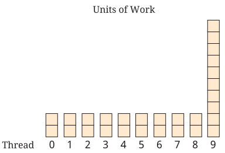
A simple way to fix this problem is to look at the value n mod k, the leftovers when you divide n by k. We want to spread those out over the first few threads. We know that any remainder will be smaller than k. If the index of the thread (starting at 0, of course) is less than the remainder, we add an extra element to its work. In this way, 28 units of work spread over 10 threads will give 3 elements to the first 8 threads and 2 elements to the rest. Using this strategy, the makespan becomes 3 units of work, a huge improvement over 10. Finding a way to spreading work across multiple threads to improve efficiency is a form of load balancing, a broad term for dividing work across computing resources.

The program below reads the length of an array and the number of threads from the user and then prints out the amount of work for each one. You should be able to adapt the ideas in it to your own multi-threaded programs in Capítulo 14.
import java.util.*;
public class AssigningWork {
public static void main(String[] args) {
Scanner in = new Scanner(System.in);
System.out.print("How long is your array? ");
int n = in.nextInt();
System.out.print("How many threads do you have? ");
int k = in.nextInt();
int quotient = n / k;
int remainder = n % k;
int next = 0;
for (int i = 0; i < k; ++i) {
int work = quotient;
if (i < remainder) {
++work;
}
System.out.println("Thread " + i + " does " + work
+ " units of work, starting at index " + next
+ " and ending at index " + (next + work - 1));
next += work;
}
}
}6.12. Exercises
Conceptual Problems
-
Why can’t an array be used to hold an arbitrarily long list of numbers entered by a user? What are strategies that can be used to overcome this problem?
-
In future chapters, we’ll introduce a data structure called a linked list. A linked list is a homogeneous, dynamic data structure with sequential access (unlike an array, which has random access). You can instantly jump to any place in an array, but you have to step through each element of a linked list to get to the one you want, even if you know its position in the list exactly. On the other hand, inserting values into the beginning of a linked list can be done in one step, while an array would need to be resized and have its contents copied over. List some tasks for which an array would be better than a linked list and vice versa.
-
Given the following code:
double[] array1 = new double[50]; double[] array2 = new double[50]; for (int i = 0; i < array1.length; ++i) { array1[i] = i + 1; array2[i] = array2.length - i; } array2 = array1; for (int i = 1; i < array1.length; ++i) { array1[i] = array1[i - 1] + array1[i]; }What is the value in
array2[array2.length - 1]after this code is executed? -
What error will be caused by the following code, and why?
String[] array = new String[100]; System.out.println(array[99].charAt(0) + " is the first letter of the last String."); -
An array of length n in Java typically takes n times the number of bytes for each element plus an additional 16 bytes of overhead. Since an
intuses 4 bytes of storage, an array of 100intelements would take 416 bytes. Consider the following three-dimensional array declaration and allocation.int[][][] data = new int[10][5][20];How many bytes are allocated for this array? Remember that the 16 byte overhead will occur repeatedly, since Java creates a three-dimensional array as an array of arrays of arrays.
-
Our original table of city distances allocates 5 · 5 = 25
intelements to store all the distances between the five cities, including repeats. How manyintelements are allocated for the triangular, ragged array version of this city distance table? If we used the normal table style, n cities would require n2intelements. How many elements would the triangular, ragged array version allocate for n cities? -
Consider the naive method of dividing an array of length n among k threads that was discussed in Seção 6.11: Each thread gets ⌊n/k⌋ (rounded down because of integer division) elements, and the last thread gets any extras. What mathematical expression describes how many extra elements are allocated to the last thread? Can you come up with an example in which the last element gets all the elements? What should have happened in this case using the other, more fair scheme for assigning the data to threads?
Programming Practice
-
In Exemplo 6.3, our code would not count
ship,as an occurrence ofshipbecause of the comma.Rewrite the code from Exemplo 6.3 to remove punctuation from the beginning and end of a word. Use a loop that runs as long as the character at the beginning of a word is not a letter, replacing the word with a substring of itself that does not include the first character. Use a second loop to remove non-letters from the end of a word. Be careful to stop if the length of the
Stringbecomes 0, as with text that’s entirely composed of non-letters. -
In Exemplo 6.3, we wrote a program that counts the occurrences of each word from a list within a text. If the list of words to search within is long, it can take quite some time to search through the entire list. If the list of words were sorted, we could do a trick that would allow us to search much faster. We could play a “high-low” game, searching through the list by checking the middle word in the array. If that word’s too late in the alphabet, repeat the search on the first half of the list. If it’s too early in the alphabet, repeat the search on the second half of the list. By repeatedly dividing the list in half, until you either find the word you’re looking for or narrow your search down to a single incorrect word, you can search much faster. This kind of searching is called binary search and uses around log n comparisons to find an element in a list of n items. In contrast, looking through the list one element at a time takes about n comparisons.
Rewrite the code from Exemplo 6.3 to use binary search, after applying selection sort from Exemplo 6.2. Although selection sort will take some extra time, you should more than make up the difference with such a fast search. To implement binary search, keep variables for the start, middle, and end of the list. Keep adjusting the three variables until the middle index has the word you are looking for or the start and end variables reach each other. Remember to use the
compareTo()method from theStringclass to compare words. -
In Exemplo 6.4, we gave a program that finds the maximum, minimum, mean, standard deviation, and median of a list of values. Another statistic that is sometimes important is the mode, or most commonly occurring element. For example, in the list {1, 2, 3, 3, 3, 5, 6, 6, 10}, the mode is 3. Write a program that can determine the mode of a given list of
intvalues. A list can have multiple modes if more than one element occurs with maximum frequency. For our purposes, we’ll consider any list with multiple modes to have no modes. You may wish to sort the list before starting the process of counting the frequency of each value. -
We used the example of tic-tac-toe in Exemplo 6.7 because a more complex game would have taken too much space to solve. The game of Connect Four (or the Captain’s Mistress, as it was originally called) pits two players against each other on a 6 × 7 vertical board. One player uses red checkers while the other uses black. The two players take turns dropping their checkers into columns of the board in which the checkers will drop to the lowest empty row, due to gravity. The goal of the game is to be the first to make four in a row of your color.
Implement a version of Connect Four for two human players, similar to our version of tic-tac-toe. Many of the ideas are the same, but the details are more complicated. First, a player will only choose a particular column. Your program must then find which row a checker dropped into that column will fall to. Then, the process of counting four in a row is more difficult than the three in a row of tic-tac-toe. You will need more loops to automate the process fully.
-
Once you’ve mastered the material in Capítulo 16, adapt the solution to Conway’s Game of Life from Seção 6.10 to display on a graphical user interface. You can use a
GridLayoutto arrange a large number ofJLabelobjects in a grid and update their background colors toColor.BLACKandColor.WHITEas needed, using thesetBackground()method. (To make these colors visible, you will also need to call thesetOpaque()method once on eachJLabelwith an argument oftrue.) The Game of Life is much more compelling with a real GUI instead of an improvised command line representation.
Experiments
-
Creating arrays with longer and longer lengths requires more processor time, since all of those elements must be initialized to some default value. Using an OS
timecommand, determine the amount of time it takes to create anintarray of length 10, 10,000, and 10,000,000. In all likelihood, the amount of time that instantiation of the array takes is a small part of the program, and you should see very little difference in those three times. However, time is not the only important resource. When you run a JVM, it has a default heap size that limits the amount of space you can use to create new objects, including arrays. When you exceed this size, your program will crash with anOutOfMemoryError. Experiment with different sizes of arrays until you can estimate the size of your heap within 5MB or so.This estimate will be very rough, since the JVM uses other memory in the background. For a more accurate picture, you can use the
Runtime.getRuntime().maxMemory()method to determine the maximum JVM memory size and theRuntime.getRuntime().totalMemory()method to determine the total JVM memory being used. -
Run the implementation of the word search program using the binary search improvement from [wordBinarySearchExercise]. Use the OS
timecommand to time the difference between the regular and binary search versions of the program with a long list of words. You may see very little difference on small input, but you can easily find a list of the 1,000 most commonly used words in English on the Internet along with long, copyright free texts from Project Gutenberg. Combining these two into a single input should see a significant increase in speed for the binary search version relative to the regular version. -
Generate input files consisting of 1,000, 10,000, and 100,000 random
intvalues. Time our implementation of selection sort from Exemplo 6.2 running on each of these input files and redirecting output to output files. What’s the behavior of the running time as the input length increases by a factor of 10? As a function of n, how many times total does the body of the innerforloop run during selection sort? Does this function closely mirror the increase in running time?
Capítulo 7. Simple Graphical User Interfaces
To a true artist only that face is beautiful which, quite apart from its exterior, shines with the truth within the soul.
7.1. Problem: Codon extractor
Recall from Capítulo 5 that we can record DNA as a
sequence of nucleotide bases A, C, G, and T. Using this idea, we can
represent any sequence of DNA using a String made up of those four
letters such as "ATGGAAGTATTTAAATAG".
This particular sequence contains 18 bases and six codons. A codon is a three-base subsequence in DNA. Biologists are interested in dividing DNA into codons because a single codon usually maps to the production of a specific amino acid. Amino acids, in turn, are the building blocks of proteins. The DNA sequence above contains the six codons ATG, GAA, GTA, TTT, AAA, and TAG.
We want to write a program that extracts codons from DNA
sequences entered by the user. The program must detect and inform the
user of invalid DNA sequences (those containing letters other than the
four bases). If the user enters a DNA sequence whose length is not a
multiple of three, the final codon should be written with one or two
asterisks (*), representing the missing bases.
With your knowledge of String manipulation and loops, this problem
should be easy. However, we want to solve it with a graphical user
interface, not with the command line interaction we’ve emphasized in
previous chapters. That is, the input step should be done with a window
that looks similar to the following.
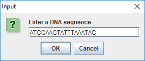
And the corresponding output should look very much like this.
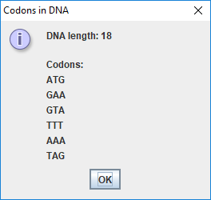
7.2. Concepts: User interaction
Many computer programs communicate with a human user. There are at least
two ways in which this communication can happen. One way is to use
command line input and output. In this case, a program prompts the user
for an input and the user responds through the keyboard, usually
completing the response by pressing the <return> or <enter> key.
Another way to communicate is to use a graphical user interface or GUI.
(Some people pronounce “GUI” to sound like “gooey,” but others say
“G-U-I.”) In this case, the program displays a window consisting of
one or more widgets, such as a button labeled “OK” or a text box in
which the user can type some text. Widgets (also known as controls) can
include buttons, labels, text areas, check boxes, menus, and many other
pre-defined objects for user interaction. While the program waits for
the user or does something in the background, the user has the option of
using a combination of the keyboard and the mouse to respond to the
program. While command line interfaces were dominant until the mid-70s,
GUIs have become the prime mode of communication between a program and a
human user. This chapter focuses on the design of simple GUIs using a
few built-in Java classes. Capítulo 16 introduces more advanced tools for constructing complex
GUIs.
Figura 7.1(a) shows a Java application interacting with a user through a command line interface. The application asks the user for a temperature value in degrees Fahrenheit, converts it to the equivalent Celsius, and displays it. Figura 7.1(b) shows a similar application interacting with the user through a GUI. In this case, the application creates a window with six widgets (two labels, two text boxes, and two buttons). The user enters a temperature value in the text box below either the Celsius label or the Fahrenheit label and presses the appropriate Convert button. Then, the application displays the equivalent temperature in the other text box.
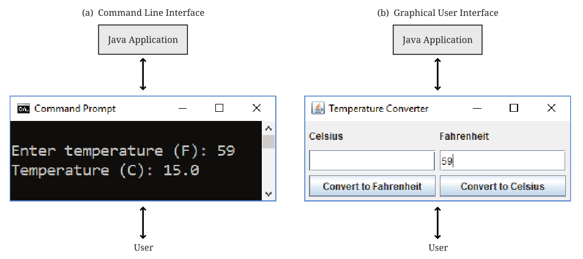
We describe the GUIs we introduce in this chapter as simple because
several aspects of GUI creation are hidden by the methods we use.
For example, these GUIs do not require the programmer to handle the
details of events such as a user pressing an “OK” button or typing
text into a text box and pressing the <enter> key. These events will
be handled automatically by existing libraries.
Capítulo 16 discusses the
creation of more complex GUIs that require the programmer to program
event handling explicitly.
7.3. Syntax: Dialogs and the JOptionPane class
JOptionPane is a utility class for creating GUIs consisting
of a single dialog. It offers a variety of ways to create useful dialogs
quickly and easily and is part of the larger Java Swing GUI library. In
this chapter, we’ll show you how to use the static methods and
constants in JOptionPane to construct useful dialogs. Specifically,
you’ll learn how to construct the following four types of dialogs.
- Information
-
An information, or message, dialog displays a message to the user. Static method
showMessageDialog()creates such a dialog. See Figura 7.2 for an example of a message dialog. - Confirm
-
A confirm dialog asks a user to confirm a statement. Static method
showConfirmDialog()creates such a dialog. This dialog may return user input asYES_OPTION,NO_OPTION,OK_OPTION, orCANCEL_OPTION. See Figura 7.4 for an example of a Yes-No dialog. - Option
-
An option dialog asks the user to select one from an arbitrary set of options. Static method
showOptionDialog()creates such a dialog. See Figura 7.5 for an example. - Input
-
An input dialog is useful for obtaining data provided by the user. Static method
showInputDialog()creates such a dialog. The user can input aStringthat might represent a number, a name, or any arbitrary text. See Figura 7.7 for an example.
The JOptionPane class can be used to create both modal and
non-modal dialogs. A modal dialog is one that forces the user to
interact with the dialog before the program can continue. Thus, the
dialog is dismissed and the program execution resumes only after the
user has responded. Modal dialogs are useful in situations where user
input is required for the program to continue.
A non-modal dialog is one that’s displayed on the screen and doesn’t
require the user to interact with it for the underlying program to
proceed. It’s easy to create a modal dialog using the static methods in
the JOptionPane class mentioned earlier. Creation of non-modal dialogs
requires a bit more effort and is not covered in this chapter. In the
remainder of this chapter we show how to use JOptionPane to create
various types of modal dialogs.
7.3.1. Generating an information dialog
Programs often need to generate a message for the user and request a
response. The message might be a short piece of information, and the
only response might be “OK.” Alternatively, the message might be more complex and
require a more thoughtful response. In this section, we show how the
Java utility class JOptionPane can generate a simple dialog whose sole
purpose is to inform the user that a task has been completed.
Código 7.1 creates a dialog to inform the user that the task it was assigned to perform is now complete. Figura 7.2 shows the dialog generated by this program.
import javax.swing.*; (1)
public class SimpleDialog {
public static void main(String [] args) {
JOptionPane.showMessageDialog(null, (2)
"Task completed. Click OK to exit.",
"Simple Dialog", JOptionPane.INFORMATION_MESSAGE);
System.out.println("Done."); (3)
}
}| 1 | We import classes used in this program. The swing package
contains a number of classes needed to create a GUI, and JOptionPane
is one such class. |
| 2 | These lines use a static
method to create a modal dialog. JOptionPane is a utility class, and
showMessageDialog() is a static method in this class. This method,
along with the other three JOptionPane methods we discuss in this
chapter, is a factory method, meaning that it creates a new object (in
this case some kind of dialog object) on the fly with specific
attributes. In this example, the program informs the user that a
task has been completed. The method has the following four parameters.
|
| 3 | We display a message on the terminal which isn’t
needed in this program but illustrates an interesting point. When
you run SimpleDialog, you’ll notice that the "Done." message
displays on the terminal only after you’ve clicked the “OK” button.
This modal behavior blocks execution of the thread that generated it until
the button is pressed. |
In Figura 7.2 the dialog titled “Simple Dialog” includes an icon, a message, and a button labeled “OK.” This dialog is actually a frame, which is what windows are called in Java. We’ll discuss frames in greater detail in Seção 16.3.
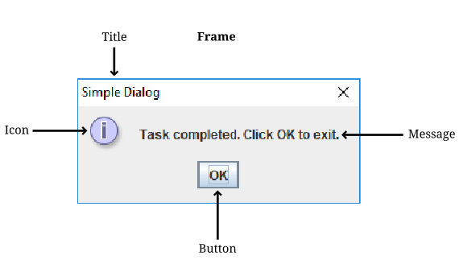
JOptionPane.The appearance of the dialog may be different on your computer. Even though Java is platform independent, GUIs are customized based on the OS you’re running. Each OS has a default look and feel (L & F) manager that specifies how widgets look and behave in your program. You can change the L & F manager, but not all managers are available on all operating systems.
In the previous example, we displayed a message of type
INFORMATION_MESSAGE. There are additional message types that could be
used.
-
ERROR_MESSAGE -
PLAIN_MESSAGE -
QUESTION_MESSAGE -
WARNING_MESSAGE
When used as parameters in showMessageDialog(), the constants above
cause different default icons to be displayed in the dialog box.
Figura 7.3 shows dialogs generated by
showMessageDialog() when using JOptionPane.ERROR_MESSAGE, (left)
and JOptionPane.WARNING_MESSAGE (right). Note the difference in the
icons displayed toward the top left of the two dialogs.
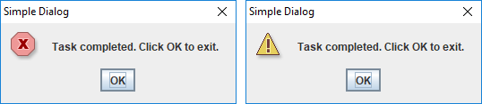
JOptionPane.ERROR_MESSAGE, and the right uses JOptionPane.WARNING_MESSAGE. The only difference is the icon displayed.7.3.2. Generating a Yes-No confirm dialog
There are situations when a program needs to obtain a binary answer from the user, a “yes” or a “no.” The next example shows how to generate such a dialog and how to get the user’s response.
Consider a program that checks whether a student understands the
difference between odd and even integers. The program generates a random
integer x, presents it to the user, and asks the question,
“Is x an odd integer?” The answer given by the user is
checked for correctness, and the user is informed accordingly.
Código 7.2 shows how to use the JOptionPane class
to generate a dialog for such an interaction.
import javax.swing.*;
import java.util.*;
public class OddEvenTest {
public static void main(String [] args) {
String title = "Odd Even Test";
Random random = new Random(); (1)
int x = random.nextInt(10);
String question = "Is " + x + " an odd integer?";
int response = JOptionPane.showConfirmDialog(null, (2)
question, title, JOptionPane.YES_NO_OPTION);
String message;
// Response is YES_OPTION for yes, NO_OPTION for no
if ((response == JOptionPane.YES_OPTION && x % 2 != 0) ||
(response == JOptionPane.NO_OPTION && x % 2 == 0)) {
message = "You're right!";
} else {
message = "Sorry, that's incorrect.";
}
JOptionPane.showMessageDialog(null, message, title, (3)
JOptionPane.INFORMATION_MESSAGE);
}
}| 1 | We declare a random number generator named random and then use it to generate a random number from 0 to 9. |
| 2 | We present the number to the user. Note
the use of JOptionPane.YES_NO_OPTION as the last parameter in the
showConfirmDialog(). The generated
dialog is shown in Figura 7.4(a). The call to
showConfirmDialog() returns the
JOptionPane.YES_OPTION or the JOptionPane.NO_OPTION value
depending on whether the user clicked the “Yes” or “No” button. |
| 3 | A second dialog is shown with a message dependent on whether the user gives the correct answer. The two different versions of this dialog are shown in Figura 7.4(b) and (c). |
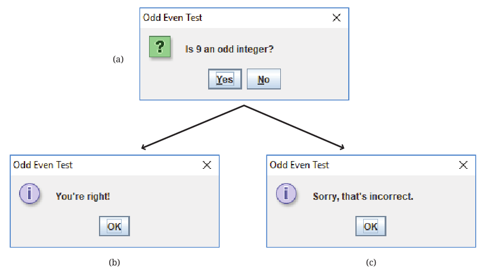
JOptionPane. (b) Dialog in response to correct answer. (c) Dialog in response to incorrect answer.Because we used YES_NO_OPTION, the dialog in
Exemplo 7.3 automatically generates two buttons
labeled “Yes” and “No.” Dialogs can also use the
YES_NO_CANCEL_OPTION to generate a dialog with “Yes,” “No,” and
“Cancel” options. The return value from showConfirmDialog() is
CANCEL_OPTION if the user presses the “Cancel” button.
7.3.3. Generating a dialog with a list of options
The JOptionPane class can also be used to generate an arbitrary set of
options as shown in the next example.
Consider a program that asks the user to select the correct capital of a country from a list of capitals. It shows three options and asks the user to select one from among the three. It then checks the user response for correctness and displays a suitable message.
import javax.swing.*;
public class CapitalQuiz {
public static void main(String[] args) {
String title = "Capital Quiz";
String country = "Azerbaijan";
String[] capitals = {"Bujumbura", "Baku", "Moroni"};
int correct = 1; // Baku is the correct answer
String question = "Select the capital of " + country + ".";
int response = JOptionPane.showOptionDialog(null, (1)
question, title, JOptionPane.PLAIN_MESSAGE,
JOptionPane.QUESTION_MESSAGE, null, capitals, null);
// Response is 0, 1, or 2 for the three options
String message;
if (response == correct) {
message = "You're right!";
} else {
message = "Sorry, the capital of " + country +
" is " + capitals[correct] + ".";
}
JOptionPane.showMessageDialog(null, message, title, (2)
JOptionPane.INFORMATION_MESSAGE);
}
}| 1 | We call the showOptionDialog() method to create a dialog with multiple options. In our case, the options are three names of capitals, and only one of them is correct. Figura 7.5 shows the dialog created.The showOptionDialog() method creates an options dialog, which is the most complicated (but also the most flexible) of all the dialogs. The array of String values provided as the second to last parameter to showOptionDialog() gives the labels for the buttons.There are three null values passed into this method. The first one functions like the null used in Código 7.2, specifying that the default frame should be used. The second specifies that the default icon should be used. In the next section, we’ll show how to specify a custom icon. The last parameter indicates the default button, which will have focus when the dialog is created. If the user hits <enter> instead of clicking, the button with focus is the button that will be pressed. |
| 2 | As in Código 7.2, a second dialog is shown with a message dependent on whether the user gives the correct answer. |
7.3.4. Generating a dialog with a custom icon
A custom icon can be included in any dialog. Each of the methods in
JOptionPane introduced earlier can take an icon as a parameter. The
next example illustrates how to do so.
Código 7.4 shows how to use
showMessageDialog() to generate a message dialog with a custom icon.
import javax.swing.*;
public class CustomIconDialog{
public static void main(String [] args){
String file = "bat.png";
String title = "Custom Icon";
String message = "Some bats eat 3,000 mosquitoes a night.";
JOptionPane.showMessageDialog(null, message, title,
JOptionPane.INFORMATION_MESSAGE, new ImageIcon(file)); (1)
}
}| 1 | The last parameter creates a new ImageIcon object from the file String ("bat.png" in this case). The resulting dialog appears in Figura 7.6. |
Dialogs illustrated in earlier examples can also use an icon parameter to include a custom icon.
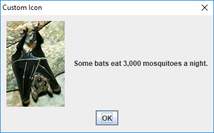
Note that the icon shown above will not appear when you run this code
unless you have a copy of bat.png in the appropriate directory.
7.3.5. Generating an input dialog
An input dialog can read text data from the user. The
showInputDialog() method in the JOptionPane class allows us to
create such a dialog. We introduced the showInputDialog() method in
Seção 2.3, but we give two more examples here to
emphasize its similarity to the other JOptionPane factory methods and
to show off some of its additional features.
We want to write a program that asks a question about basic chemistry. Código 7.5 shows how to display a question, obtain an answer from the user, check for the correctness of the answer, and report back to the user.
import javax.swing.*;
public class ChemistryQuizOne {
public static void main(String [] args) {
String title = "Atoms in Water";
String query = "How many atoms are in a molecule of water?";
String response = JOptionPane.showInputDialog(null, (1)
query, title, JOptionPane.QUESTION_MESSAGE);
int answer = Integer.parseInt(response); (2)
String message;
if (answer == 3) { (3)
message = "You're right!";
} else {
message = "Sorry, that's incorrect.";
}
JOptionPane.showMessageDialog(null, message, title, (4)
JOptionPane.INFORMATION_MESSAGE);
}
}| 1 | We use the showInputDialog() method to generate the dialog shown in Figura 7.7. This method returns a String named response containing the text entered by the user in the dialog box. |
| 2 | We convert this String to an int and save it into variable answer. |
| 3 | We check this value against the correct answer. |
| 4 | The showMessageDialog() method informs the user whether or not the answer is correct. |
It’s important to note that the user could type any sequence of
characters in the dialog box. Try running
Código 7.5 and see what happens when you type
“two,” instead of the number “2,” into the dialog box and press the
“OK” button. The program will generate an exception indicating that
the input String cannot be converted to an integer.
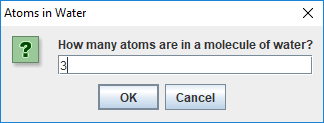
In Exemplo 7.6 the user is required to enter text. To reduce input errors, we can restrict the user to
picking from a predefined list. We can create this list by generating an
array and supplying it as a parameter to the showInputDialog() method.
Código 7.6 displays a list of chemical elements and asks the user to select the heaviest.
import javax.swing.*;
public class ChemistryQuizTwo {
public static void main(String [] args) {
String title = "Heaviest Element";
String query = "Which is the heaviest element?";
String[] elements = {"Iron", "Uranium", "Copernicium", "Nitrogen"};
String response = (String)JOptionPane.showInputDialog(null, (1)
query, title, JOptionPane.QUESTION_MESSAGE, null, elements, null);
String message;
if (response.equals("Copernicium")) { (2)
message = "You're right!";
} else {
message = "Sorry, correct answer: Copernicium.";
}
JOptionPane.showMessageDialog(null, message, title, (3)
JOptionPane.INFORMATION_MESSAGE);
}
}| 1 | We pass an array of four String values to the showInputDialog() method. Note that the last parameter to this method is null indicating that no specific item on the list should be selected by default. (In this case, the first item in the list is initially selected.) The generated dialog is shown in Figura 7.8. The four elements are contained in a drop-down list.Unlike Exemplo 7.6, the return value from showInputDialog() is now of type Object, not of type String. The type of the list required by the method is Object array. You’re allowed to pass a String array to a method that wants an Object array due to inheritance, which is further discussed in
Capítulo 11 and Capítulo 18. The return value is the specific object from the array that was passed in. In our case, it has to be a String, but the compiler isn’t smart enough to figure that out. For this reason, we cast the object to a String before using the equals() method. |
| 2 | We check this String for correctness. |
| 3 | As before, the showMessageDialog() method informs the user whether or not the answer is correct. |
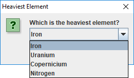
Note that this program will crash if the user clicks the “Cancel” button,
since null will be returned and stored into response.
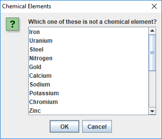
When the number of elements in the list supplied to the
showInputDialog() is 20 or more, a JList object is automatically
used to display the items as shown in
Figura 7.9.
Other than a longer list, the code in this example is virtually identical to the code in Código 7.6.
7.4. Solution: Codon extractor
Here we give the solution to the codon extractor problem posed at the
beginning of the chapter. As we have done throughout this chapter, we
start with the import needed for GUIs built on the Swing framework. Next
we begin the CodonExtractor class and its main() method. For
readability, the solution to this problem is divided into methods that
each do a specific task. We hope that the way a method works is
intuitively clear to you. If not, the next chapter explains them in
detail.
import javax.swing.*;
public class CodonExtractor {
public static void main(String [] args) {
int continueProgram;
do { (1)
// Read DNA sequence
String input = JOptionPane.showInputDialog("Enter a DNA sequence"); (2)
input = input.toUpperCase(); (3)
String message = "Do you want to continue?";
if (isValid(input)) { (4)
displayCodons(input); (5)
} else {
message = "Invalid DNA Sequence.\n" + message;
}
continueProgram = JOptionPane.showConfirmDialog( (6)
null, message, "Alert", JOptionPane.YES_NO_OPTION);
} while (continueProgram == JOptionPane.YES_OPTION);
JOptionPane.showMessageDialog(null, "Thanks for using the Codon Extractor!");
}| 1 | The main() method contains a do-while loop that allows the user to
enter sequences repeatedly. |
| 2 | The showInputDialog() method makes an
input dialog and returns the String the user enters. |
| 3 | The toUpperCase() method converts the String to uppercase, allowing us to read input in either case. |
| 4 | We then call the isValid() method to make sure that the user entered a
valid DNA sequence. |
| 5 | If it is valid, we use displayCodons() to display
the codons in the sequence. |
| 6 | Either way, we use a showConfirmDialog() method to creating a confirm dialog, asking the user if he or she wants to continue entering sequences. The loop will continue as long as the return value is JOptionPane.YES_OPTION. |
public static boolean isValid(String dna) {
String validBases = "ACGT";
for (int i = 0; i < dna.length(); ++i) {
char base = dna.charAt(i);
if (validBases.indexOf(base) == -1) {
return false; // base not in "ACGT"
}
}
return true;
}The isValid() method checks to see if the DNA contains only the
letters representing the four bases. To do this, we use the Java
String library cleverly: We loop through the characters in our input,
checking to see where they can be found in "ACGT". If the index
returned is -1, the character was not found, and the DNA is invalid.
In the displayCodons() method, we display the individual codons to the
user.
public static void displayCodons(String dna) {
String message = "";
// Get as many complete codons as possible
for (int i = 0; i < dna.length() - 2; i += 3) { (1)
message += "\n" + dna.substring(i, i + 3);
}
// 1-2 bases might be left over
int remaining = dna.length() % 3;
if (remaining == 1) {
message += "\n"+ dna.substring(dna.length() - 1, dna.length()) + "**";
} else if (remaining == 2) {
message += "\n"+ dna.substring(dna.length() - 2, dna.length()) + "*";
}
message = "DNA length: " + dna.length() + "\n\nCodons: " + message;
JOptionPane.showMessageDialog(null, message, (2)
"Codons in DNA", JOptionPane.INFORMATION_MESSAGE);
}
}| 1 | We build a large String with newlines separating each codon. To do so, we loop through the input, jumping ahead three characters each time. If the input length is not a multiple of three, we pad with asterisks. |
| 2 | We use the showMessageDialog() method to display an information dialog with the list of codons. |
7.5. Concurrency: Simple GUIs
Many GUI frameworks (including Swing) are built on a multi-threaded model. Swing uses threads to redraw widgets and listen for user input while the main thread can continue processing other data.
In this chapter, the impact of these threads is minimal because we used
only modal dialogs. Every time we called a JOptionPane method, the
execution of the program’s main thread had to wait until the method
returned. As it turns out, several threads are created when
showInputDialog() or any of the others dialog methods are called, but
they do not interact with the main thread since it’s been blocked.
The situation is more complicated with a non-modal dialog, which is one of the reasons we did not go into them. In a non-modal dialog, the threads that redraw the dialog and handle its events (like a user clicking on a button) are running at the same time as the thread that created the dialog. Since many threads are running, it’s possible for them to write to the same data at the same time. Doing so can lead to inconsistencies such as the ones we’ll describe in Capítulo 15.
The GUIs we’ll create in Capítulo 16, however, will be more than dialogs. They will be fully functional windows, known as frames in Java. Like a non-modal dialog, the creation of a frame doesn’t block the thread that created it.
Many applications launch a frame and then end their main thread. If no other threads are created, such a program is comparatively easy to think about. However, complex applications may create multiple frames or launch threads to work on tasks in the background. Another common problem is caused by performing complicated tasks in the event handler for a GUI. If a task takes too long, the GUI can freeze or become unresponsive, as you’ve probably experienced. The fact that this problem happens so frequently even in the latest operating systems should hint at the difficulty of managing GUI threads.
When we describe how to create fully featured GUIs in Capítulo 16, we’ll also give some techniques to help with avoiding unresponsive GUIs in a multi-threaded environment.
7.6. Summary
In this chapter we’ve introduced a way to create simple GUIs. These
GUIs are created using various methods available in the JOptionPane
class. While the interfaces created this way are limited in scope,
they’re often adequate for input and output in short Java programs.
Construction of more complex GUIs is the subject of
Capítulo 16.
7.7. Exercises
Conceptual Problems
-
In which situations would it be better to use a command-line interface instead of a GUI? When is it better to use a GUI over a command-line interface?
-
Explain the difference between a modal and a non-modal dialog. Give an example of when you would prefer a modal over a non-modal dialog and another example of when you would prefer a non-modal to a modal dialog.
-
Give one example each when you would use the five different message type constants in
showMessageDialog()method. -
In Código 7.2, we could have coded the line checking to see if the user had correctly determined whether the number was odd or even as follows.
if ((response == 0 && x % 2 != 0) || (response == 1 && x % 2 == 0))Yet another option is below.
if (response != x % 2)Which of these three implementations is best? Why?
Programming Practice
-
Modify the program in Exemplo 7.3 such that it tests the user many times whether a randomly generated integer is odd or even. The program should keep a score indicating the number of correct answers. At the end of the test, display the score using a suitable dialog.
-
Modify the program in Exemplo 7.3 such that it displays a dialog that asks the user “Do you wish to continue?” and offers options “Yes” and “No.” The program should exit the loop when the “No” option is selected and display the score using a suitable dialog.
-
Rewrite Código 7.2 so that the dialog generated offers the “Yes,” “No,” and “Cancel” options to the user. The program should exit with a message dialog saying “Thank You” when the user selects the “Cancel” option.
-
Modify Código 7.3 to create and administer a test wherein the user is asked capitals of 10 countries in a sequence. The program must keep a count of the number of correct answers. Inform the user of the score at the end of the test using a suitable dialog.
-
Modify Código 7.3 so that the button labeled “Baku” has focus when the program begins.
-
[Solution: Three card poker] gives a method called
shuffle()that can randomize an array representing a deck of cards. Adapt this code and modify Código 7.3 so that the order of the capitals is randomized. Note that you will need to record which index contains the correct answer. -
Re-implement the solution to the college cost calculator problem given in Seção 3.5 so that it uses GUIs constructed with
JOptionPanefor input and output. -
Re-implement the solution to the Monty Hall problem given in Seção 4.4 so that it uses GUIs constructed with
JOptionPanefor input and output. -
Re-implement the solution to the DNA searching problem given in [Solution: DNA searching] so that it uses GUIs constructed with
JOptionPanefor input and output. -
Write a program that creates an input dialog that prompts and reads a file name of an image from the user. Then, create an information dialog that displays the file as a custom icon. In this way, you can construct a simple image viewer.
-
Use a
try-catchblock and modify Código 7.5 so that it handles an exception generated when the user enters text that cannot be converted to an integer. In the event such an exception is raised, pop up a message dialog box informing the user to try again and type an integer value. When the user responds by clicking the “OK” button on this message box, the input dialog box should appear once again and offer the user another chance at the answer. Write two versions of the modified program. In one version, your program should give only one chance for input after an incorrect string has been typed. In another version, your program should remain in a loop until the user enters a valid integer. There is, of course, no guarantee that an answer is correct just because it’s a valid integer.Note: You should attempt this exercise only if you’re familiar with exceptions in Java. Exceptions are covered in Capítulo 12.
Capítulo 8. Methods
Polônio (em voz baixa): Embora isso seja loucura, há um método nisso.
8.1. Problema: Pôquer de três cartas
O jogo exerce um fascínio sobre a humanidade desde sua invenção. Desde que existem matemáticos, eles vêm estudando os mecanismos subjacentes de probabilidade e estatística que regem os jogos de azar. Um jogo clássico que envolve tanto estatística quanto estratégia é o pôquer. O problema que queremos resolver é programar uma das muitas variações do pôquer, chamada pôquer de três cartas. Em vez de blefar, o jogador compete apenas com a casa, de acordo com regras fixas, sem espaço para psicologia. O jogador recebe três cartas. Se a mão do jogador contiver um par ou melhor, ele ou ela ganha um prêmio maior ou igual ao valor apostado. Se o jogador não tiver um par ou melhor, ele ou ela perde o valor apostado. Abaixo está uma tabela que apresenta um conjunto possível de prêmios para cada mão possível.
| Mão | Casa | Mão | Casa | |
|---|---|---|---|---|
Straight Flush |
40 |
Flush |
2 |
|
Trinca |
30 |
Par |
1 |
|
Sequencia |
6 |
Nada |
0 |
Se você não está familiarizado com as regras do pôquer ou com jogos de cartas em geral, aqui vai uma explicação rápida sobre as várias mãos. Um baralho tradicional inglês ou americano é composto por 52 cartas, organizadas em quatro naipes: espadas, copas, ouros e paus. Em cada naipe, há 13 valores: dois, três, quatro, cinco, seis, sete, oito, nove, dez, valete, rainha, rei e ás.
No pôquer de três cartas, uma sequência ocorre quando as três cartas podem ser organizadas de forma que seus valores (independentemente do naipe) estejam em ordem. Por exemplo, uma mão composta por um quatro de ouros, um cinco de espadas e um seis de paus constituiria uma sequência. Um Ás pode servir tanto como a carta de valor mais alto (vindo depois do Rei) quanto como a de valor mais baixo (vindo antes do Dois) e pode ajudar a formar uma sequência em qualquer uma dessas funções (mas não em ambas ao mesmo tempo). Um flush ocorre quando todas as três cartas têm o mesmo naipe. Por exemplo, um Três de Copas, um Sete de Copas e um Valete de Copas constituiriam um flush no pôquer de três cartas. Um straight flush, a mão mais alta, é composto por cartas que formam tanto uma sequência (pela ordem de valor) quanto um flush (pela uniformidade do naipe). Uma trinca ocorre quando todas as três cartas têm o mesmo valor, e um par ocorre quando duas das cartas têm o mesmo valor. Quando nenhuma dessas condições se aplica, a mão não tem nenhuma designação especial no pôquer de três cartas, e a aposta é perdida.
Sua tarefa é escrever um programa que funcione como uma versão computadorizada do jogo. Você deve criar um baralho de 52 cartas, embaralhá-las completamente para simular o embaralhamento e selecionar as três primeiras cartas como uma mão. Você deve então determinar a classificação mais alta que se aplica à mão de cartas e os ganhos correspondentes (se houver).
Qualquer solução razoável para este problema utiliza matrizes, discutidas no capítulo anterior. Usando apenas esse conhecimento, você deve ser capaz de criar um jogo de pôquer de três cartas. No entanto, o foco deste capítulo são métodos, que podem ser usados para dividir a solução de um problema em partes lógicas. Ao dividir a solução dessa maneira, seremos capazes de resolver o problema do pôquer de três cartas de uma forma relativamente curta, elegante e fácil de ler.
8.2. Conceitos: Dividindo o trabalho em segmentos
Você deve ter percebido que as soluções para os problemas com os quais temos trabalhado têm se tornado cada vez mais complexas à medida que o livro avança. Essa progressão se deve, em parte, ao fato de querermos resolver problemas mais interessantes com soluções mais complexas, mas também porque introduzimos ferramentas adicionais do Java que tornam possível a resolução desses problemas mais difíceis.
Surpreendentemente, as ferramentas que apresentamos neste capítulo não permitem que você resolva um problema que não pudesse resolver antes. Em vez disso, as ferramentas deste capítulo e do próximo tornam a resolução de um problema mais fácil e menos suscetível a erros. Uma lista relativamente longa e complicada de instruções Java era necessária para resolver problemas como o programa de estatística ou o Jogo da Vida de Conway. Em vez de resolver esses problemas como um único segmento monolítico de código, podemos dividir nossas soluções em unidades chamadas métodos estáticos .
8.2.1. Razões para os métodos static
Um método estático é um segmento curto e nomeado de código que foi agrupado de modo a poder ser chamado de outras partes do programa. Sempre que a tarefa executada por esse método for necessária, a execução do programa salta para o código do método, realiza o trabalho que deve fazer e, em seguida, retorna ao que estava fazendo antes.
As razões para usar métodos estáticos podem ser resumidas em três pontos essenciais:
- Modularidade
-
Pouquíssimos softwares são escritos por uma única pessoa. Softwares comerciais podem envolver dezenas ou até centenas de desenvolvedores no projeto, na implementação, nos testes e na manutenção do código. Quando o código é dividido em métodos individuais, esses métodos podem ser escritos e testados por pessoas diferentes com o mínimo de interferência. É muito mais difícil trabalhar em conjunto em um único bloco gigante de código.
- Legibilidade
-
Métodos são segmentos de código nomeados. Quando um método é chamado, seu nome é usado. Se for escolhido um nome significativo, a linha no código que chama o método ajuda a documentar o código, explicando o que está acontecendo. Por exemplo, se for usado um método chamado
sort(), um leitor compreende instantaneamente que algo está sendo classificado. Se, em vez de um métodosort()separado, o código que realiza a classificação fosse colado no mesmo local, um leitor talvez tivesse que dedicar alguns instantes para compreender o significado dessas linhas de código, especialmente sem comentários. - Reutilização
-
O fato de um método poder ser chamado de qualquer lugar do código o torna reutilizável. Para usar o exemplo
sort()novamente, talvez tenhamos que classificar vários arrays diferentes em um único programa. Sem métodos, teríamos que ficar copiando e colando código repetidamente. Com métodos, a quantidade total de código-fonte pode ser menor. Na verdade, se você se pegar copiando e colando código, isso geralmente é um indício de que um método seria útil.
Essa ideia de reutilização vai além de programas individuais. Um método estático pode ser chamado a partir de um programa totalmente diferente. Se você criar um método que seja realmente útil, fica à vontade para usá-lo em outros programas que escrever. Ao fazer isso, você só precisa fazer alterações em um único lugar caso descubra erros ou queira ampliar sua funcionalidade.
8.2.2. Paralelismo com funções matemáticas
Temos discutido a utilidade dos métodos estáticos sem explicar exatamente o que eles são. Uma maneira de compreender melhor os métodos é reconhecer sua semelhança com as funções da matemática. Em linguagens procedurais (não orientadas a objetos), como o C, os equivalentes dos métodos estáticos são geralmente chamados de funções. Assim como as funções na matemática, um método estático recebe um certo número de entradas (possivelmente até zero) e, geralmente, produz algum resultado.
Você já utilizou vários métodos estáticos da classe Math, como
Math.sqrt(). Considere a seguinte função.
Essa função reflete o código dentro de Math.sqrt(). Na matemática, quando você aplica f(x) a
um valor específico, pode escrever y = f(5). Em Java,
você pode digitar o seguinte.
double y = Math.sqrt(5);Na expressão f(5), a variável placeholder x assume o valor 5.
Da mesma forma, alguma variável dentro de
Math.sqrt() assume o valor 5 quando o método é chamado.
É importante compreender essa semelhança entre métodos e funções matemáticas, pois os criadores de muitas linguagens de programação foram diretamente influenciados pela notação mais antiga. No entanto, também existem muitas diferenças entre os dois conceitos. Funções matemáticas podem receber mais de uma entrada, assim como os métodos Java . Os métodos Java também podem não receber nenhuma entrada, enquanto a ideia central de uma função matemática é mapear algum(ns) valor(es) de entrada para algum valor de saída . Os métodos Java nem sempre têm valores de saída. Eles podem simplesmente fazer algo.
8.2.3. Fluxo de controle
Já discutimos instruções de seleção, como if e switch, bem
como três estruturas de loop diferentes: for, while e do-while.
Cada um desses recursos da linguagem Java é usado para o fluxo de controle. As
instruções de seleção permitem que seu programa escolha qual código executar.
Os loops permitem que seu código execute repetidamente determinado trecho de código. Os métodos
também afetam o fluxo de controle. Quando um método é chamado, a execução do
programa salta para dentro do método, realiza todo o trabalho necessário ali e
depois retorna ao código que o chamou. Lembre-se do exemplo muito simples
apresentado acima.
double y = Math.sqrt(5);A JVM alocou uma variável do tipo double e está se preparando para
atribuir um valor a ela. De repente, a execução da JVM salta para o
código dentro do método Math.sqrt(). É necessária uma
quantidade não trivial de trabalho para calcular a raiz quadrada de um número. Depois que
esse cálculo é concluído, o fluxo de execução retorna à atribuição
que ficou aguardando todo esse tempo. Assim como uma função matemática,
podemos tratar a chamada de método Math.sqrt(5) como se ela tivesse sido “magicamente”
substituída por um double que aproxima a raiz quadrada de 5.
8.3. Sintaxe: Métodos
A esta altura, você já deve ter uma boa noção dos conceitos por trás da chamada e até mesmo da criação de métodos estáticos e provavelmente está ansioso para usá- los. No entanto, ainda não descrevemos todos os detalhes da sintaxe dos métodos em Java. Primeiro, descreveremos como você pode criar seus próprios métodos estáticos; depois, discutiremos os detalhes da chamada de métodos estáticos; e , por fim, explicaremos como as variáveis de classe podem ser usadas a partir de diversos métodos.
8.3.1. Definindo métodos
Um método muito simples que a classe Math oferece é o Math.max()
. Esse método seleciona o maior dos dois valores fornecidos como
entrada.
int maximum = Math.max(5, 10);Nesse caso, o valor armazenado em maximum é 10. Apesar de sua
simplicidade, demonstramos o quanto esse método pode ser útil em nossa
solução para o Jogo da Vida de Conway, em Capítulo 6. Se
quiséssemos escrever esse método nós mesmos, o código seria o seguinte.
public static int max(int a, int b) {
if (a >= b) {
return a;
} else {
return b;
}
}Mesmo em um método tão pequeno, há muita sintaxe com a qual
preocupar-se. A primeira linha desse método é chamada de _cabeçalho do método
_. A palavra-chave public nesse cabeçalho é usada para indicar que qualquer
código, mesmo código de uma classe diferente, pode chamar esse método. Discutiremos
a restrição de acesso a métodos e variáveis mais adiante
neste capítulo. Por enquanto, considere que todo método é public.
A palavra-chave static indica que esse método é estático. Embora tenhamos
usado o termo método estático muitas vezes, ainda não o definimos
. Um método estático está vinculado a uma classe inteira, não a um objeto específico
dessa classe — ou seja, um método estático pode ser chamado sem fazer referência
a um objeto da classe. Novamente, discutiremos os detalhes de objetos
e classes no próximo capítulo. Por enquanto, todos os métodos são estáticos.
A terceira palavra-chave no cabeçalho do método é o já conhecido int, que indica o
tipo de retorno do método. Onde quer que esse método seja chamado, ele pode ser
tratado como um valor int, pois é isso que ele retorna. Neste
caso, o tipo de retorno é óbvio: o máximo de dois valores int deve
também ser um valor int. Qualquer tipo pode ser usado como valor de retorno, incluindo
todos os tipos primitivos e quaisquer tipos de referência ou de array. A única
limitação é que um método só pode retornar um único item, mas como
esse item pode ser uma matriz, essa limitação geralmente não é importante. Também é
possível que um método não retorne nada. Nesse caso, a
palavra-chave void é usada para o tipo de retorno.
Em seguida, no cabeçalho do método, vem o identificador max, que é o nome do
método. Qualquer identificador válido que você possa usar para um nome de variável é
válido também para um nome de método. É importante escolher um nome que seja
legível e dê ao leitor uma ideia clara do que o método faz. Uma
convenção comum é nomear um método usando uma locução verbal, indicando
a operação que está sendo realizada por esse método (por exemplo, computeTax).
Assim como os nomes de variáveis, o padrão do Java é usar a notação camel,
começando com uma letra minúscula e colocando em maiúscula a primeira letra de
cada nova palavra no nome.
Após o nome do método, vem a lista de parâmetros, separados
por vírgulas. Neste caso, cada parâmetro é do tipo int. Você tem liberdade
para nomear seus parâmetros como quiser, embora eles devam ser
significativos. Você pode ter até zero parâmetros, mas há um
limite máximo imposto pela JVM, geralmente 255. O corpo do método
segue o cabeçalho do método, entre chaves ({ }). Ao contrário das
instruções if e dos laços de repetição, as chaves para métodos são obrigatórias.
Dentro do corpo de um método, as regras usuais para o fluxo de controle em Java
se aplicam. Cada linha é executada uma a uma, a menos que haja
instruções de seleção ou repetição. Também é permitido chamar métodos dentro de outros métodos.
No método max(), usamos uma construção if-else para encontrar
o maior valor entre a e b. Uma instrução return interrompe imediatamente
a execução do método, transfere a execução de volta para o código chamador,
e retorna o valor que vem logo a seguir. Nesse caso, o valor de
a é retornado se for igual ou maior, e o valor de b é
retornado caso contrário. Como uma instrução return salta imediatamente
para fora de um método, poderíamos ter escrito o método sem um else.
public static int max(int a, int b) {
if (a >= b) {
return a;
}
return b;
}A única maneira de a linha return b; ser executada é se a ainda não
tivesse sido retornado.
Programadores iniciantes às vezes perguntam o que fazer se a e b forem iguais. Em nosso código, fica claro que o valor de a será retornado, mas isso praticamente não importa: dois valores int iguais são indistinguíveis um do outro. Alguns alunos imaginam lidar com esse caso especial exibindo uma mensagem de erro, mas essa abordagem raramente é útil. Ao tentar encontrar o maior de dois números na programação, geralmente é o valor que queremos, e não a informação sobre qual deles é realmente maior.
O método main()
Se parte dessa sintaxe parecer estranhamente familiar, lembre-se de que você
já vem programando métodos estáticos desde o seu primeiro programa em Java. O
método main() é apenas mais um método estático, especial apenas porque a
JVM opta por iniciar a execução a partir dele. Vamos dar uma olhada no método main()
de um programa padrão “Hello, World!”.
public static void main(String[] args) {
System.out.println(“Hello, world!”);
return;
}Assim como o método max(), a declaração do main() começa com
public static. Além disso, o tipo de retorno do main() é void, pois
a JVM não espera receber nenhum resultado de volta. O método main() tem
um único parâmetro: uma matriz de valores do tipo String. Neste programa, nós
não usamos o parâmetro args, mas ele está disponível. Para o método main()
, essa declaração está correta, pois main() precisa ser padronizado
em todos os programas. No entanto, ao projetar seus próprios métodos, você
não deve incluir parâmetros desnecessários.
A última linha executável neste método main() é uma instrução return
. Como main() tem tipo de retorno void, a instrução return
não tem nenhum valor para retornar. Para métodos void, uma instrução return
é opcional. Você pode usá-la para sair de um método antecipadamente, se
desejar. Para um método que retorna um valor, a execução deve chegar a uma instrução return
com um valor válido, independentemente da entrada do método.
Se o Java detectar que a execução poderia chegar ao fim de um método que retorna um valor
sem atingir uma instrução return, isso causará um
erro de compilação.
Métodos sobrecarregados
Como essa declaração está em outra classe, é válido criar um método max()
mesmo que já exista um na classe Math. No entanto, é possível criar mais de um método com o mesmo nome, mesmo na
mesma classe, desde que suas assinaturas não sejam iguais. Dois
métodos têm a mesma assinatura se tiverem o mesmo nome e
os mesmos tipos de parâmetros.
public static int max(int a, int b, int c) {
return max(max(a, b), c);
}Neste exemplo, criamos mais um método max(), mas este
aceita três parâmetros em vez de dois. Esse método chega a chamar a
versão de dois parâmetros do max(). Criar mais de um método com o
mesmo nome é chamado de _sobrecarga _ desses métodos. A sobrecarga de métodos é
útil porque permite usar o mesmo nome de método para funcionalidades semelhantes
, mesmo quando há algumas diferenças subjacentes na
implementação. Por exemplo, a classe Math fornece quatro versões diferentes,
sobrecarregadas do método max(), especializadas para valores int,
long, float e double, respectivamente.
É claro que existem limitações na criação de métodos sobrecarregados. O compilador deve ser capaz de determinar qual método você pretende usar. Portanto, as assinaturas precisam variar de acordo com o tipo ou o número de parâmetros. Um tipo de retorno diferente não é suficiente.
8.3.2. Chamada de métodos
Depois que um método é definido, ele precisa ser chamado antes de fazer
qualquer coisa. Você já tem bastante experiência em chamar métodos estáticos como
Math.sqrt() e Math.max(). Um exemplo da sintaxe apropriada foi
apresentado anteriormente.
int maximum = Math.max(5, 10);Formalmente, a chamada começa com o nome da classe (Math), seguido
por um ponto, seguido pelo nome do método (max), seguido pela
lista de argumentos entre parênteses. Esses argumentos são os valores
que você deseja passar para o método. Alguns livros usam o termo parâmetros formais
para descrever as variáveis definidas na assinatura do método
e _parâmetros reais para descrever os valores passados para os métodos,
mas preferimos usar os termos mais simples: parâmetros e argumentos.
É claro que o número de argumentos deve corresponder ao número de parâmetros
definidos pelo método, e os tipos também devem corresponder. O Java realiza
conversão automática quando não há perda de precisão. Assim, você sempre pode fornecer
um argumento int para um parâmetro double, mas não o contrário.
Os argumentos podem ser valores literais, variáveis ou até mesmo outras chamadas de método
que retornem o tipo apropriado.
Usando o método max() definido anteriormente, poderíamos reescrever nosso exemplo simples
sem o nome da classe.
int maximum = max(5, 10);Sempre que você chamar um método estático a partir de código que esteja dentro da mesma classe, poderá omitir o nome da classe.
Ligação
Muitos programadores iniciantes ficam confusos quanto à relação entre argumentos e parâmetros. O processo de fornecer um argumento para ser usado como parâmetro é chamado de ligação. Por meio da ligação, um valor ou variável do código chamador recebe um novo nome dentro de um método. Considere o seguinte método.
public static int add(int a, int b) {
return a + b;
}Este método absurdamente curto soma dois números e retorna o
resultado, aproximando-se da funcionalidade do operador +. Poderíamos
chamar o método no seguinte contexto.
int x = 3;
int y = 5;
int z = add(x, y);Dentro do método, o valor de x é vinculado à variável a, e
o valor de y é vinculado à variável b. O método add() possui
seu próprio escopo. Escopo significa a área onde um nome de variável é visível
(ou significativo). Assim, x e y não existem dentro do método add()
, apenas as variáveis a e b existem. Como os métodos têm seu próprio
escopo, as variáveis em um método podem ter os mesmos nomes que as variáveis em
outro método sem que o compilador (ou o programador!) fique
confuso. Considere o exemplo a seguir.
int a = 3;
int b = 5;
int c = add(b, a);Aqui, as variáveis a e b existem tanto no código de chamada quanto dentro
do método, mas os nomes são independentes. O valor de a no
código de chamada está vinculado a uma variável chamada b dentro do
método, mas a JVM não tem nenhuma confusão sobre qual a é qual. É nisso
que reside o valor dos métodos: eles são amplamente independentes de tudo o mais
que esteja acontecendo no código, permitindo que o programador se concentre em uma tarefa pequena e
gerenciável.
Outra característica importante do Java é que o processo de vinculação de variáveis é passagem por valor, o que significa que apenas o valor do argumento é vinculado ao parâmetro. Sempre que um método é chamado, o método cria uma nova variável para cada parâmetro e copia o valor de seu argumento para ela. Na prática, essa abordagem significa que um método não pode alterar diretamente o valor de um argumento. Considere o seguinte método.
public static void increment(int counter) {
++counter;
}Esse método pega o valor de seu argumento e o copia para a nova
variável counter. Em seguida, ele incrementa counter, mas o
argumento original permanece inalterado. Portanto, o fragmento a seguir é um laço infinito.
int i = 0;
while (i < 100) {
increment(i);
}O valor de i permanece fixo em 0 durante todo o programa. A cópia
de i associada a counter aumenta para 1 toda vez que increment() é
chamado, mas i permanece inalterado.
Isso não significa que um método não possa afetar as variáveis fora de
si mesmo. A principal maneira de fazer isso é usando instruções return
. Podemos reescrever increment() para obter esse efeito.
public static int increment(int counter) {
return counter + 1;
}Em seguida, precisamos ajustar o laço para que ele armazene o valor retornado em vez de descartá-lo.
int i = 0;
while (i < 100) {
i = increment(i);
}Uma segunda maneira pela qual os métodos podem afetar os valores de variáveis externas é mais indireta. Em Java, todos os argumentos são passados por valor, mesmo matrizes e objetos. Na prática, isso significa que, se uma referência a um vetor for passada para um método, você não pode alterar para qual vetor ela está apontando. Como as referências não são valores, mas nomes que apontam para locais específicos na memória, você pode alterar diretamente o conteúdo dessa memória com um método, mesmo que não possa alterar quais locais estão sendo referenciados. Por exemplo, o método a seguir não inverte a ordem de um vetor.
public static void badReverseArray(int[] array) {
int[] temp = new int[array.length];
for (int i = 0; i < array.length; ++i) {
temp[i] = array[array.length - i - 1];
}
array = temp;
}Embora esse código armazene uma versão invertida de array em temp,
a última linha do método não tem sentido: o array passado para o
método ainda aponta para a localização original na memória. Podemos reescrever
o método para fazer a inversão no próprio local, o que significa que os valores do
vetor são reorganizados, mas o vetor ainda ocupa as mesmas
localizações na memória.
public static void goodReverseArray(int[] array) {
int temp;
for (int i = 0; i < array.length / 2; ++i) {
temp = array[i];
array[i] = array[array.length - i - 1];
array[array.length - i - 1] = temp;
}
}Nesta versão do método, trocamos o primeiro elemento da matriz
pelo último, o segundo pelo penúltimo e assim por diante. Só vamos
até a metade da matriz; caso contrário, desfazeríamos o
processo de reversão. Os valores da matriz estão invertidos, mas ainda ocupam o
mesmo bloco de memória. É possível escrever um método correto mais no
estilo de badReverseArray(), que cria uma matriz temporária, copia
os valores originais para ela e, em seguida, os copia de volta para a matriz original
na ordem inversa, mas é menos eficiente criar a matriz extra
e realizar duas cópias.
8.3.3. Variáveis de classe
De acordo com as regras que apresentamos até agora, as únicas variáveis válidas no
escopo de um método estático são os parâmetros e quaisquer outras variáveis locais
declaradas dentro do método. No entanto, é possível criar
uma variável que exista fora dos métodos estáticos, mas que seja visível dentro
de todos eles. Esse tipo de variável é chamado de variáveis de classe (ou
às vezes campos estáticos ou variáveis globais). Essas variáveis
persistem entre as chamadas de método. A sintaxe para criar tal variável
é declará-la fora de todos os métodos (mas dentro da classe) com a palavra-chave static e um modificador de acesso, como public ou private.
Por exemplo, a classe a seguir inclui um método chamado record()
que aumenta a variável de classe counter toda vez que é chamado.
record() é chamado.public class Bookkeeper {
public static int counter = 0;
public static void main(String[] args) {
while (Math.random() > 0.001) {
record();
}
System.out.println("Record was called " + counter + " times.");
}
public static void record() {
++counter;
}
}Quando executado, este programa chama o método record() um número aleatório de
vezes, e a variável counter mantém o controle desse número. Como counter é estática,
ela é acessível tanto pelo método main() quanto pelo record().
Muitos programadores desaprovam o uso de
variáveis de classe justamente porque elas são visíveis a muitos
métodos diferentes. A ideia de um método é isolar trechos de código para que a
complexidade de um programa possa ser dividida em unidades simples. No caso de
uma variável de classe pública, até mesmo o código de outras classes pode modificar seu
valor. Se muitos trechos diferentes de código puderem modificar uma variável, pode
ser difícil impedir que essa variável seja alterada de maneiras inesperadas
. Por exemplo, se outro método usasse a variável counter para registrar o número
de vezes que foi chamado, o valor final de counter seria a soma
do número de vezes que os dois métodos foram chamados. Pode haver algum
motivo para acompanhar essas informações, mas seria impossível
reconstruir qual fração do valor em counter veio de um método
e qual fração veio do outro.
Variáveis de classe têm suas utilidades, mas geralmente devem ser evitadas.
A principal exceção a essa regra são as constantes. Como uma constante nunca muda,
uma variável de classe é um ótimo local para armazená-la, tornando o valor
disponível para todo o código. Um exemplo que você já usou é
Math.PI. Assim como nos métodos estáticos, um campo estático de outra classe pode
ser acessado usando o nome da classe, seguido de um ponto e, em seguida, o nome do
campo estático. Novamente, quando o código que usa o campo está na mesma classe,
o nome da classe pode ser omitido. Uma constante de classe é declarada como uma variável de classe
, mas com a adição da palavra-chave final.
A classe a seguir permite que um usuário calcule a força unidimensional devida à gravidade. Essa força F é dada pela seguinte equação.
Nesta equação, m1 é a massa de um objeto, m2 é a massa de outro, r é a distância entre seus centros e G é a constante gravitacional , 6,673 × 10-11 N·m2·kg-2.
import java.util.Scanner;
public class Gravity {
public static final double G = 6.673e-11;
public static void main(String[] args) {
Scanner in = new Scanner(System.in);
System.out.println("What is the first mass?");
double m1 = in.nextDouble();
System.out.println("What is the second mass?");
double m2 = in.nextDouble();
System.out.println("What is the distance between them?");
double r = in.nextDouble();
System.out.println("The force of gravity is " + force(m1, m2, r) + " N");
}
public static double force(double m1, double m2, double r) {
return G*m1*m2/(r*r);
}
}Use constantes nomeadas sempre que elas aumentarem a legibilidade. Você pode usar o modificador public
se quiser que todas as classes tenham acesso à sua constante
(Gravity.G é um bom exemplo). Você pode usar o modificador private se
quiser que a constante seja acessível apenas dentro da sua classe, se ela não tiver
utilidade fora dela ou se contiver informações confidenciais.
8.4. Exemplos: Definindo métodos
Qualquer problema complexo deve ser dividido em métodos. Como essa
técnica é útil em tantas circunstâncias, é difícil apresentar um
conjunto de exemplos que abranja todos os casos. Em vez disso, nossos exemplos são
métodos curtos e fáceis de entender, com foco na distância euclidiana,
na verificação de palíndromos e na conversão de uma representação String de um
int para um int.
A distância Euclidiana entre dois pontos é o comprimento da reta que os une. Ela desempenha um papel importante em gráficos 3D e jogos e é a base para muitas outras aplicações práticas que envolvem relações espaciais.
Dados dois pontos no espaço 3D (x1, y1, z1) e (x2, y2, z2), podemos calcular a distância Euclidiana entre eles com a seguinte equação.

O método abaixo aplica essa equação diretamente.
public static double distance(double x1, double y1, double z1,
double x2, double y2, double z2) {
double x = x1 - x2;
double y = y1 - y2;
double z = z1 - z2;
return Math.sqrt(x*x + y*y + z*z);
}Essa equação é uma boa candidata a um método estático, já que pode ser necessário fazer esse cálculo várias vezes e ela não depende de nenhuma outra variável ou do estado do programa.
Um palíndromo é uma palavra ou frase (ou até mesmo um número) que é igual
quando lida para frente e para trás. “Arara,”, “"A dama amada,” e
“Socorram-me, subi no ônibus em Marrocos!” são exemplos em português.
Normalmente, espaços e sinais de pontuação são ignorados. Vamos escrever uma
função que, dada uma String, retorne true se for um palíndromo
e false caso contrário. Para simplificar o problema, não vamos
ignorar espaços e sinais de pontuação. Assim, com nosso método, “arara” conta
como um palíndromo, mas nenhum dos outros dois exemplos seria considerado como tal.
public static boolean isPalindrome(String text) { (1)
text = text.toLowerCase(); (2)
for (int i = 0; i < text.length() / 2; ++i) { (3)
if (text.charAt(i) != text.charAt(text.length() - i - 1)) { (4)
return false;
}
}
return true;
}| 1 | Como nosso método retorna true ou false, seu tipo de retorno deve ser
boolean. Muitos métodos que retornam um valor boolean têm um nome
que começa com is, como o nosso método. |
| 2 | A primeira linha do corpo do nosso
método transforma text em letras minúsculas. O método toLowerCase() da classe String
cria uma cópia em letras minúsculas da String na qual é chamado, neste caso
text. Em seguida, atribuímos à variável de referência text essa nova
String em letras minúsculas. Fora desta função, a String passada como parâmetro
não se altera, pois a referência text é passada por valor. |
| 3 | O laço percorre a primeira metade de text, comparando-a com a
segunda metade. Esse loop reflete a assimetria desse tipo de teste:
não é possível ter certeza de que text é um palíndromo até que se verifique
o texto inteiro, mas sabe-se imediatamente que não é, caso mesmo que um único
par de caracteres não coincida. |
| 4 | Se o teste na instrução if
mostrar que os dois valores char não são iguais, a instrução return false
sai do método sem concluir o loop. |
Quando você lê um número usando um objeto da classe Scanner, ele
converte (ou analisa) o texto digitado pelo usuário no tipo apropriado
. Por exemplo, o método nextDouble() lê um texto e
o converte em um double. Quando você usa um método do JOptionPane para ler
uma entrada, ela chega como uma String. Se você quiser usar esses dados como um
double, você deve convertê-lo usando o método estático Double.parseDouble()
. Algum programador Java teve que escrever esse método. Vamos
recriar um método semelhante para converter a representação String de um
número de ponto flutuante em um double. Nosso método simples ignora
a notação científica.
public static double parseDouble(String value) {
int i = 0;
boolean negative = false;
double temp = 0.0;
double fraction = 10.0;
if (value.charAt(i) == ‘-’) { (1)
negative = true;
++i;
} else if (value.charAt(i) == ‘+’) {
++i;
}
while (i < value.length() && value.charAt(i) != ‘.’) { (2)
temp *= 10.0;
temp += value.charAt(i) - ‘0’;
++i;
}
++i; // Passar pela casa decimal (se houver) (3)
while (i < value.length()) { (4)
temp += (value.charAt(i) - ‘0’) / fraction;
fraction *= 10.0;
++i;
}
if (negative) { (5)
temp = -temp;
}
return temp;
}| 1 | Após declarar algumas variáveis, este método verifica primeiro o índice 0 na
String de entrada value para ver se é um ‘-’ ou um ‘’`. Se for
um `‘-’`, ele define `negative` como `true` e segue em frente. Se for um `‘’, ele
simplesmente segue em frente. |
| 2 | Em seguida, o método percorre value até chegar
ao fim ou encontrar um ponto decimal. À medida que itera, ele multiplica o
valor atual de temp por 10.0 e soma o próximo dígito de value
(após subtrair ‘0’ para que o intervalo fique entre 0 e 9).
Essa multiplicação repetitiva por 10.0 representa as potências crescentes de 10
no sistema numérico de base 10. Como temp começa com o valor 0.0,
a primeira multiplicação não tem efeito, conforme pretendido. |
| 3 | Após o primeiro laço while, o índice i é incrementado uma vez, para pular
a vírgula decimal, se houver. Se não houver ponto decimal, o
laço deve ter sido encerrado porque o fim de value foi alcançado. |
| 4 | O segundo laço while é executado até o fim de value, desta vez somando a cada vez
o valor de cada dígito dividido por fraction, que é aumentado por um fator de 10.0
a cada vez. Isso nos permite somar dígitos fracionários cada vez menores
ao total. |
| 5 | Definimos temp como seu oposto se o sinalizador
negative tiver sido definido anteriormente e, por fim, retornamos temp. |
Observe que o método real Double.parseDouble() não apenas
aceita valores String em notação científica, mas também realiza uma grande
quantidade de verificações de erros. Nosso código trava ou apresenta
resultados imprecisos ao receber uma String vazia, uma String contendo caracteres não numéricos
ou uma String com mais de um ponto decimal. Além disso,
esse código não utiliza a melhor abordagem para minimizar
erros de precisão de ponto flutuante.
8.5. Solução: Pôquer de três cartas
Aqui apresentamos nossa solução para o problema do pôquer de três cartas. Explicamos cada método individualmente.
public class ThreeCardPoker {
public static final String[] SUITS = {"Spades", "Hearts", (1)
"Diamonds", "Clubs"};
public static final String[] RANKS = {"2", "3", "4", "5", "6",
"7", "8", "9", "10", "Jack", "Queen", "King", "Ace"};
public static final int STRAIGHT_FLUSH = 40; (2)
public static final int THREE_OF_A_KIND = 30;
public static final int STRAIGHT = 6;
public static final int FLUSH = 2;
public static final int PAIR = 1;
public static final int NOTHING = 0;| 1 | Antes do início do nosso método main(), declaramos várias
constantes de classe. Dois vetores constantes de valores String nos fornecem
uma maneira fácil de representar naipes e valores das cartas. |
| 2 | As seis constantes int
restantes são usadas para atribuir um prêmio a cada possível
resultado. |
Observe que essas constantes podem ser declaradas em qualquer lugar dentro da classe, desde que estejam fora dos métodos. No entanto, é comum (e boa prática) declará-las no início da classe.
public static void main(String[] args) {
int[] deck = new int[52]; (1)
int[] hand = new int[3];
for (int i = 0; i < deck.length; ++i) { (2)
deck[i] = i;
}
shuffle(deck);
for (int i = 0; i < hand.length; ++i) { (3)
hand[i] = deck[i];
}
int winnings = score(hand); (4)
System.out.println("Hand: ");
print(hand);
if (winnings == 0) { (5)
System.out.println("You win nothing.");
} else {
System.out.println("You win " + winnings +
" times your bet.");
}
}| 1 | No método main(), é criado primeiro um vetor que representa um baralho de 52 cartas,
seguido por um vetor que representa as 3 cartas a serem
distribuídas. |
| 2 | O baralho é preenchido sequencialmente e, em seguida, embaralhado por meio de um método. |
| 3 | Em seguida, as três primeiras cartas do baralho são copiadas para a matriz que representa a mão de cartas. |
| 4 | A pontuação da mão é determinada e , em seguida, a mão é exibida. Exibimos a mão após determinar a pontuação porque ela é ordenada durante o processo de determinação da pontuação, tornando a saída mais fácil de ler. |
| 5 | Por fim, imprimimos a saída apropriada, dependendo da pontuação. |
public static void shuffle(int[] deck) {
int index, temp;
for (int i = 0; i < deck.length; ++i) {
index = i + (int)((deck.length - i)*Math.random());
temp = deck[index];
deck[index] = deck[i];
deck[i] = temp;
}
}Este método embaralha o baralho. Sua abordagem consiste em trocar o primeiro elemento
do vetor de cartas por um dos elementos seguintes, escolhido
aleatoriamente. Em seguida, ele troca o segundo elemento do vetor por qualquer um dos
elementos que o seguem, e assim por diante. Se Math.random() realmente nos fornecer um
número aleatório gerado uniformemente no intervalo [0,1), o
baralho final embaralhado deverá ser qualquer um dos 52! baralhos possíveis
com igual probabilidade.
public static void print(int[] hand) { (1)
for (int i = 0; i < hand.length; ++i) {
System.out.println(RANKS[getRank(hand[i])] + " of "
+ SUITS[getSuit(hand[i])]);
}
}
public static int getRank(int value) { return value % 13; } (2)
public static int getSuit(int value) { return value / 13; } (3)| 1 | O primeiro desses métodos imprime uma versão legível por humanos de cada carta em um vetor (em vez de 0 - 51). Ele faz isso usando o segundo e o terceiro métodos como métodos auxiliares. |
| 2 | O método getRank() calcula o valor de
uma carta a partir de seu número. |
| 3 | O método getSuit() calcula o naipe de uma
carta a partir de seu número. |
Os índices obtidos desses métodos são usados
para acessar as matrizes RANKS e SUITS.
Na linguagem C, chamar o equivalente a um método a partir de um método definido anteriormente
requer uma etapa especial de declaração chamada prototipagem antes de ambos os
métodos. Java não apresenta essa complicação, e os métodos getRank() e
getSuit() compilam e funcionam perfeitamente se forem escritos
acima de print() ou abaixo dele dentro da definição da classe.
private static int score(int[] hand) {
sortByRank(hand);
if (hasStraight(hand) && hasFlush(hand)) {
return STRAIGHT_FLUSH;
} else if (hasThree(hand)) {
return THREE_OF_A_KIND;
} else if (hasStraight(hand)) {
return STRAIGHT;
} else if (hasFlush(hand)) {
return FLUSH;
} else if (hasPair(hand)) {
return PAIR;
} else {
return NOTHING;
}
} Este método calcula a pontuação primeiro classificando a mão e, em seguida, testando resultados progressivamente piores, começando pelo melhor, um straight flush. À medida que avança na lista de resultados, ele chama os métodos apropriados para determinar se uma mão possui uma determinada característica.
private static void sortByRank(int[] hand) {
int smallest, temp;
for (int i = 0; i < hand.length - 1; ++i) {
smallest = i;
for (int j = i + 1; j < hand.length; ++j) {
if (getRank(hand[j]) < getRank(hand[smallest])) {
smallest = j;
}
}
temp = hand[smallest];
hand[smallest] = hand[i];
hand[i] = temp;
}
}Este código é uma implementação da ordenação por seleção encapsulada em um método.
Observe que este método altera os valores dentro do vetor hand, embora não possa alterar o vetor para o qual hand aponta.
O vetor em si é passado por valor, mas seu conteúdo é efetivamente passado por referência.
private static boolean hasPair(int[] hand) { (1)
return getRank(hand[0]) == getRank(hand[1]) ||
getRank(hand[1]) == getRank(hand[2]);
}
private static boolean hasThree(int[] hand) { (2)
return getRank(hand[0]) == getRank(hand[1]) &&
getRank(hand[1]) == getRank(hand[2]);
}
private static boolean hasFlush(int[] hand) { (3)
return getSuit(hand[0]) == getSuit(hand[1]) &&
getSuit(hand[1]) == getSuit(hand[2]);
}
private static boolean hasStraight(int[] hand) { (4)
return (getRank(hand[0]) == 0 && getRank(hand[1]) == 1
&& getRank(hand[2]) == 12) || // Ace low
(getRank(hand[1]) == getRank(hand[0]) + 1 &&
getRank(hand[2]) == getRank(hand[1]) + 1);
}
}| 1 | O código em hasPair() funciona
verificando se a primeira e a segunda ou a segunda e a terceira cartas têm
o mesmo valor. |
Seria necessária uma condição adicional se as cartas não estivessem ordenadas.
<.> O código em hasThree() verifica se todos os valores
são iguais.
<.> O código em hasFlush() é igual ao de hasThree()
exceto que ele verifica o naipe em vez do valor.
<.> Por fim, hasStraight()
verifica se os valores vêm em sequência, com um
caso adicional para lidar com a possibilidade de o ás ser considerado como o valor mais baixo.
Esse teste só funciona porque as cartas foram classificadas anteriormente.
Esses quatro métodos seriam semelhantes, mas mais complexos, para mãos de pôquer de cinco ou sete cartas.
8.6. Concorrência: Métodos
Em Java, é impossível ter concorrência sem métodos. Os métodos
são a maneira pela qual dividimos um programa grande em partes gerenciáveis, mas também fazem
parte da sintaxe que o Java usa para criar threads de execução. Cada
thread de execução está associada a um objeto Thread; no entanto, criar
o objeto não é suficiente para iniciar a execução de uma nova thread.
Somente quando o método start() é chamado no objeto Thread é que a
nova thread começa a ser executada.
Espero que você já tenha começado a visualizar a execução de programas Java como
uma seta que fica ao lado de cada linha de código à medida que ela é executada. Essa
seta pode pular para uma opção e ignorar outro código usando as instruções if e
switch. Usando laços, a seta pode saltar para trás e
executar repetidamente o código que acabou de ser executado. Conforme discutimos neste
capítulo, a seta pode saltar para dentro de um método, executar o código nesse
método e, em seguida, retornar ao seu chamador, voltando exatamente para onde havia parado
antes da chamada.
Quando o método start() é chamado em um objeto Thread, no entanto, a
seta retorna ao chamador, mas também se divide em uma segunda
seta que, então, executa o método run() correspondente e quaisquer outros
métodos que ele chame. Observe que estamos falando de um método chamado em um
objeto Thread, não de um método estático chamado na classe como um todo.
Chamar start() é um método de instância, o qual discutimos em
Capítulo 9. Ao contrário dos métodos estáticos deste capítulo,
um método de instância está vinculado a um objeto específico, mas
a maior parte do que você aprendeu sobre métodos ainda se aplica.
Os métodos têm como objetivo facilitar a programação, dividindo os programas em partes pequenas o suficiente para serem compreendidas. Um dos únicos perigos reais dos métodos é o uso de variáveis de classe, conforme mencionado em Seção 8.3.3. Esse problema se agrava com múltiplas threads. Com uma única thread, dois ou mais métodos diferentes podem afetar a mesma variável de classe, talvez de maneiras conflitantes. Com múltiplas threads, até mesmo o mesmo método pode interferir consigo mesmo.
Um gerador congruencial linear (LCG) permite criar uma sequência de números pseudoaleatórios usando a equação xi = (axi-1 + b) mod m, derivando o próximo número do anterior, e assim por diante.
rand() da linguagem C.public class UnsafeRandom {
private static int next = 1;
private final static int A = 1103515245;
private final static int B = 12345;
private final static int M = 32768;
public static int nextInt() {
return next = (A*next + B) % M;
}
}O programa UnsafeRandom listado acima sempre gera a mesma
sequência de números pseudoaleatórios, o que pode ser útil para depurar
um programa. No entanto, se duas ou mais threads chamarem nextInt(), elas
provavelmente obterão sequências diferentes. Uma thread selecionará alguns dos
números, e a outra selecionará os números que faltam entre eles. Se
cada thread quiser gerar a mesma sequência de números, o método
deve ser reescrito para que receba o número anterior da
sequência. Dessa forma, não há estado compartilhado. Lembre-se de que o uso de uma
variável de classe (não final) deve ser evitado sempre que
possível.
public class SafeRandom {
private final static int A = 1103515245;
private final static int B = 12345;
private final static int M = 32768;
public static int nextInt(int previous) {
return (A*previous + B) % M;
}
}Ao forçar cada thread a manter seu próprio estado, corrigimos o problema anterior . Em sincronização.html, falaremos sobre o problema muito mais complicado de duas threads executando um método exatamente ao mesmo tempo. Quando isso acontece, efeitos muito curiosos podem ocorrer. Considere o programa a seguir.
print() sempre imprime “Even” quando executado com uma única thread, mas às vezes pode imprimir “Odd” se for chamado repetidamente com várias threads.public class AlwaysEven {
private static int value = 1;
public static void print() {
++value; (1)
if (value % 2 == 0) {
System.out.println("Even");
} else {
System.out.println("Odd");
}
++value; (2)
}
}| 1 | Com uma única thread em execução, value sempre chega a um número par
antes de ser impresso. |
| 2 | Depois disso, ele é incrementado para o próximo número ímpar. |
Se duas ou mais threads chamarem o método print(), value pode
ser alterado em um valor logo antes de a outra thread executar as instruções if.
8.7. Exercícios
Problemas conceituais
-
Descreva três vantagens de dividir longos segmentos de código em métodos estáticos.
-
Você consegue pensar em alguma desvantagem de dividir o código em métodos? Existem situações em que o uso de um método não é aconselhável?
-
Se você quisesse declarar um método estático que calculasse a média, a mediana e o desvio padrão de um vetor de entrada com valores do tipo
double, como você retornaria esses três resultados? -
Considere a seguinte definição de método.
public static void twice(int i) { i = 2 * i; }Quantas vezes o laço a seguir é executado e por quê?
int x = 2; while (x < 128) { twice(x); } -
Considere as seguintes assinaturas de dois métodos sobrecarregados.
public static int magic(int rabbit, double hat) public static int magic(double wand, int spell)Qual método seria invocado pela seguinte chamada?
int x = magic(3, 16);E quanto ao seguinte?
int y = magic(3.2, 16.4);Use um compilador para verificar suas respostas.
-
A classe a seguir gera uma sequência de números pares. Cada vez que o método
next()é chamado, o próximo número par da sequência é retornado. Qual é o problema de design em usar um campo estático para manter o controle do próximo valor da sequência?public class EvenNumbers { private static int counter = 0; public static int next() { counter += 2; return counter; } }
Exercício de Programação
-
Escreva um método estático chamado
cube()que receba um único valordoublecomo parâmetro e retorne seu valor elevado ao cubo. Não use o métodoMath.pow(). -
Implemente um método estático que receba um único valor
intcomo parâmetro e imprima seus dígitos na ordem inversa. Por exemplo, se103fosse passado para esse método, ele imprimiria301na tela.Você pode descobrir qual dígito está na casa das unidades de um número calculando seu resto na divisão por 10. Em seguida, você pode remover o dígito na casa das unidades dividindo por 10. Não converta o valor
intem umaString. -
Escreva um método estático que receba uma matriz de valores
intcomo parâmetro e retornetruese a matriz estiver em ordem crescente efalsecaso contrário. Compare cada elemento da matriz com o próximo elemento da matriz. Se o elemento atual for maior que o próximo elemento, a matriz não está ordenada em ordem crescente. Observe que você só pode ter certeza de que a matriz está em ordem crescente depois de ter verificado todos os pares vizinhos. -
Escreva um método estático que calcule o ⌊log2 n⌋ de um inteiro n. Observe que, se log2 n = x, também é verdade que n = 2x. Em outras palavras, o operador log2 indica qual é a potência de 2 de um número. Uma maneira de definir o log2 n é o número de vezes que você precisa dividir n por 2 para obter 1. Use essa definição para criar um loop que calcule o valor sem usar nenhuma chamada à biblioteca
Math.Aqui estão alguns exemplos dos valores de retorno que seu método deve retornar para vários valores de entrada de n.
n Valor de retorno n Valor de retorno 1
0
16
4
2
1
100
6
4
2
512
9
8
3
1000
9
10
3
1024
10
-
Escreva um método que verifique palíndromos como o método de Exemplo 8.3, mas que também ignore sinais de pontuação e espaços. Assim,
“Aí, Lima falou: “Olá, família!”deve ser considerado um palíndromo por esse novo método. -
Adicione ao método
parseDouble()de Exemplo 8.4 de modo que ele também possa lidar com números na notação científica padrão do Java , como7.239e-14. Observe que oepode estar em maiúscula ou minúscula, e o expoente pode começar com um sinal de menos (-), um sinal de mais (+), ou nenhum dos dois. -
Reimplemente a solução de Seção 8.5 de modo que ela utilize uma interface gráfica (GUI) construída com
JOptionPanepara exibir a mão e os ganhos. -
O pôquer de cinco cartas é uma versão muito mais comum do pôquer do que a versão de três cartas que discutimos em Seção 8.1. Usando métodos estáticos, implemente um jogo de pôquer para dois jogadores no qual o baralho é embaralhado e, em seguida, distribuído em duas mãos de cinco cartas cada. Em seguida, indique qual mão do jogador vence. Com cinco cartas, determinar qual mão vence é um processo mais complicado. A classificação das várias mãos possíveis, da melhor à pior, é a seguinte.
- Straight Flush
-
Todas as cinco cartas pertencem ao mesmo naipe e têm valores em ordem sequencial (com o ás podendo ser a carta mais alta ou mais baixa). Se dois jogadores tiverem straight flushes, vence aquele com a mão de maior valor. Se ambos tiverem o mesmo valor, é um empate.
- Quarteto
-
Quatro das cinco cartas têm o mesmo valor. Se duas pessoas tiverem um quarteto, o conjunto de quatro com o valor mais alto vence.
- Full House
-
Três das cinco cartas têm o mesmo valor e as outras duas compartilham outro valor. Se duas pessoas tiverem um full house, o conjunto de três com o valor mais alto vence.
- Flush
-
Todas as cinco cartas têm o mesmo naipe. Se dois jogadores tiverem flushes, o que tiver a carta mais alta vence. Se a carta mais alta estiver empatada, a próxima mais alta decide o empate, e assim por diante. Se os dois flushes tiverem exatamente os mesmos valores, os dois flushes empatam.
- Sequência
-
Todas as cinco cartas têm valores em ordem sequencial (com o Ás como carta mais alta ou mais baixa). Se dois jogadores tiverem sequência, a de valor mais alto vence. Se ambos tiverem os mesmos valores, há empate.
- Trinca
-
Três das cartas têm o mesmo valor. Se dois jogadores tiverem três do mesmo valor, o conjunto de três com o valor mais alto vence.
- Dois pares
-
Um par de cartas tem o mesmo valor e outro par de cartas tem outro valor. Se dois jogadores tiverem dois pares, o par de maior valor é o desempate. Se o par de maior valor for o mesmo, o par de menor valor é o desempate. Se o par de menor valor for o mesmo, a última carta não emparelhada é o desempate. Se todos os valores das duas mãos forem iguais, há empate.
- Par
-
Um par de cartas tem o mesmo valor. Se dois jogadores tiverem pares, o valor do par serve como desempate. Se os pares tiverem o mesmo valor, as cartas restantes em cada mão servem como desempate, em ordem decrescente de valor.
- Carta mais alta
-
Se nenhum dos outros casos se aplicar, a carta mais alta determina o valor da mão. Se duas pessoas tiverem a mesma carta mais alta, as cartas restantes em cada mão são usadas como critério de desempate, em ordem decrescente de valor.
Experimentos
-
Em termos de tempo, há uma pequena sobrecarga associada à chamada de um método e ao retorno de um valor, mas é muito difícil de medir. Escreva um programa com duas variáveis
int,aeb, em queacomeça com um valor de1ebcomeça com um valor de2. Execute um loopfor100.000.000 de vezes. Em cada iteração, primeiro aumente o valor deaem o valor debe, em seguida, aumente o valor debema. Cronometre esse loop comSystem.nanoTime()e, em seguida, imprima o tempo gasto e o valor dea. O valor deanão é importante, mas o compilador irá otimizar as operações matemáticas feitas comaeb, a menos que imprimamos o valor. Recomendamos que você execute este programa repetidamente para ter uma noção do tempo médio de execução.Agora, em vez de usar o operador
+para somaraeb, use o método a seguir.public static int add(int a, int b) { return a + b; }Mais uma vez, execute seu programa repetidamente com essa modificação. Qual é a diferença no tempo de execução entre a versão que usa um método e a versão que faz a soma diretamente?
Dependendo da sua JVM, é bem possível que quase não haja diferença. A JVM realiza muitas otimizações, incluindo inlining, que substitui uma chamada a um método curto pelo código real dentro do método.
Capítulo 9. Classes
Luminous beings are we, not this crude matter.
9.1. Problem: Nested expressions
How does the compiler check the Java code that you write and find errors? Parsing and type checking are involved processes that are key parts of compiler design. Compilers are some of the most complex programs of any kind, and building one is beyond the scope of the material covered in this book. However, we can get insight into some problems faced by compiler designers by considering the problem of correctly nested expressions.
There are many rules for forming correct Java code, but it’s always the
case that grouping symbols ((, ), [, ], {, }) must be correctly
nested. Ignoring other symbols, we may find a section of code that
contains the sequence ( ) [ ], but correctly written code never
contains ( [ ) ].
To be correctly nested, left and right parentheses must be balanced, left and right square brackets must be balanced, and left and right curly braces must be balanced. Furthermore, a correctly balanced set of parentheses can be nested inside of a correctly balanced set of square brackets or curly braces (and vice versa), but they cannot intersect as they do at the end of the previous paragraph. The table below shows more examples of correctly and incorrectly nested expressions.
| Correctly Nested | Incorrectly Nested |
|---|---|
( |
|
(){} |
}{ |
((abc)){x} |
( a { b ) c } |
({[z]}) |
{abc( |
({xyz})({ijk}[123]) |
{(333)888(}) |
But how can we examine an expression to see if it’s correctly nested? The key to solving this problem is the idea of a stack. A stack is a simple data structure with three operations: push, pop, and top. The data structure is meant to behave like a stack of books or cups or any other physical objects. When you use the push operation, you’re moving something to the top of the stack. When you use the pop operation, you’re taking something off the top of the stack. The top operation is used to read what’s currently at the top of the stack. In a stack, you can only read that very topmost item, as if all the other items were buried underneath it. A stack is known as a FILO (first in, last out) or a LIFO (last in, first out) data structure because, if you push a series of items onto the stack and then pop them all off the stack, they come off the stack in the reverse order from how they were added.
Armed with an understanding of the stack, it is straightforward to see if an expression is nested correctly. Scan through each character in the input and follow these steps.
-
If it’s a left parenthesis, left square bracket, or left curly brace, put it on the stack.
-
If it’s a right parenthesis, right square bracket, or right curly brace, check that the top of the stack is its matching left half. If it is, pop the left half off the stack. If it isn’t (or if the stack is empty), the grouping symbols are either unbalanced or intersecting. Print an error and quit.
-
For any character that isn’t a grouping symbol, ignore it and move on.
If you reach the end of input without an error, check to see if the stack is empty. If it is, then all of the left grouping symbols have been matched up with right grouping symbols. If not, there are left symbols left on the stack, and the expression isn’t correctly nested.
9.2. Concepts: Object-oriented programming
To solve the nested expressions problem, we can create a stack data
structure. Each element of the stack should be able to hold a char
value term from an expression, where a term is an operator, operand, or
a parenthesis (bracket or curly brace). Although we could get by using
only the static methods we introduced in the previous chapter, a better
tool can make programming easier.
We’re introducing these topics in a progression: First, all of our
programs were a series of sequential instructions inside of a main()
method. We added in selection statements and loops to solve more
difficult problems. As our programs became more complicated, we started
using additional static methods to divide the program into logical
segments. Now, we’re moving to fully object-oriented programming (OOP)
in which data as well as code can be packaged into objects that interact
with each other.
OOP has been a controversial topic, particularly in the computer science education community. The most important thing to remember is that we’re not throwing away any of the ideas we used before. We’re continuing on a path toward making code safer and more reusable. Several other chapters in this book touch on important ideas in OOP such as inheritance and polymorphism. Below, we’re going to focus on the basics, including the fundamentals of objects, encapsulation of data, and instance (non-static) methods.
9.2.1. Objects
You’ve already used objects, perhaps without realizing it. Every time
you use a String, you’re using an object. So far, we’ve created a
class every time we’ve written a program. A class is a way to organize
static methods, but a class is something more: a template for objects.
Whenever you write a class, the potential to create objects from it
exists.
For a conceptual example, you can think of Human as a class and Albert Einstein as an object (or an instance) of that class. The class defines certain characteristics that all human beings have: name, date of birth, height, and so on. Then, the object has specific values for each one of those characteristics, such as Albert Einstein, March 14, 1879, 175, and so on.

This idea of a class as a template is key because it means that an object of a given type (from a given class) can be used anywhere that’s appropriate for another object of that type. Later in the chapter, we’ll create an object that performs the work of a stack, storing a number of other objects. If we design a library of code that can manipulate or use stack objects, we should be able to use this library countless times for countless different stack objects without changing the code. This kind of code reuse is one of the main goals of OOP.
9.2.2. Encapsulation
In order to guarantee that objects can be used in many different contexts safely, the data inside of the object must be protected. Java provides access modifiers so that code without the appropriate permission can’t change or even read the data inside of an object.
This feature is called encapsulation. One programmer might write the class file defining a type of object while another or many others write code that uses those objects. The programmers who use objects written by others do not need to understand the inner workings of those objects. Instead, they can treat each object as a “black box” with a list of actions that the object can do. Each action has a certain specified input and a certain specified output, but the internal functioning of the object is hidden.
9.2.3. Instance methods
These “actions” are methods but not static ones. Static methods did
not need an object in order to be called. Regular (instance) methods
should be thought of as an action performed on (or by) a specific
object. This action could be asking a question, such as inquiring what
the name of an object of type Human is. This action could be telling the
object to change itself, as in the case of pushing something onto a
stack.
One of the broadest definitions of an object is a collection of data and methods to access that data. We call the data inside of an object its fields or instance data and the methods to access them instance methods. Static methods are used primarily to modularize large blocks of code into smaller functional units. However, instance methods are tightly coupled to the fields of an object and perform tasks that change the object or get information from it.
9.3. Syntax: Classes in Java
OOP concepts such as encapsulation may seem esoteric until you see them in practice. Remember, we just want to create some private data and then define a few carefully controlled ways that the data can be manipulated. First, we’ll describe how to declare fields, then explain how to write instance methods to manipulate that data, and finally give more details about protecting its privacy.
9.3.1. Fields
Fields in an object must be declared like any other data in Java. The
type of a field can be a primitive or reference type. Fields are
also sometimes called member variables. You declare fields just like you
would class variables, except without the static keyword. Here’s an
example with the Human class.
public class Human {
private String name;
private String DOB;
private int height; // in cm
}With this definition, a Human object has three attributes: name,
DOB, and height. Because the access modifier for each field is
private, code outside of this class can’t change or even read the
values. This class can’t do anything yet. Also, it doesn’t contain
a main() method. There’s no way to run
this class, but that’s fine. We could add a main() method, of course.
public class Human {
private String name;
private String DOB;
private int height; // in cm
public static void main(String[] args) {
name = "Albert Einstein";
DOB = "March 14, 1879";
height = 175;
}
}Now we’ve added a main() method, but our code doesn’t compile.
Since the main() method is a static method, it is not associated with
any particular object. When we tell the main() method to change the
fields, it doesn’t know what object we’re talking about. If we
actually want to use an object, we’ll have to create one.
public class Human {
private String name;
private String DOB;
private int height; // in cm
public static void main(String[] args) {
Human einstein = new Human();
einstein.name = "Albert Einstein";
einstein.DOB = "March 14, 1879";
einstein.height = 175;
}
}The above code compiles because we’ve used the new keyword to create
an object of type Human saved in a reference variable called
einstein. We can set the fields inside of a particular object using
dot notation. With static methods and static variables, we used the name
of the class followed by a dot, but for instance methods and instance
variables, we use the name of the object followed by a dot. Even
though each of these fields is private, we can access them from main()
because main() is inside the Human class. Code inside of another
class could create a new Human object, but it could not change its
fields.
This juxtaposition of static and non-static fields and methods inside of
a single class is confusing to many new Java programmers. The confusion
seems to stem from the fact that the class (such as Human) is a
template for objects but it’s also a place to house other related code,
such as static methods, including main().
Although the practice is discouraged, we mentioned in
[Class variables] that class variables can be
stored in the class itself. Every object has a distinct copy of each
field, but there’s only a single copy of each class variable that they
all share. By using the keyword static, we could add a class variable
called population to our Human class, since that’s information
connected to humans as a whole, not to any individual human being.
public class Human {
private String name;
private String DOB;
private int height; // in cm
private static long population = 7714576923;
}We’re using a long to represent the world’s population since the
value is too big to fit in an int. If several Human objects
were created, they would each have their own name, DOB, and height
values, but the value for population would only be stored in the class.
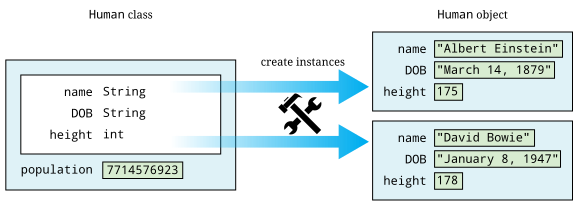
9.3.2. Constructors
To create a new object, you have to invoke a constructor, a special
kind of method that can initialize the object. A constructor sets
up the values inside an object when the object’s first created. Let’s consider
a simple Rectangle class with only two fields: length and width,
both of type int.
public class Rectangle {
private int length;
private int width;One possible constructor for the class is given below.
public Rectangle(int l, int w) {
length = l;
width = w;
}This constructor lets us set the width and length when the object’s
created. To do so, code must invoke the constructor using the new
keyword.
Rectangle rectangle = new Rectangle(50, 20);This code creates a new Rectangle object, with length 50 and width 20.
Constructors are almost always public; otherwise, it would be
impossible for code outside of the Rectangle class to create a
Rectangle object. Note that the definition of the Rectangle
constructor does not have a return type. A constructor is the only kind
of method that doesn’t have a return type. It’s possible to have more
than one constructor as well, just as other methods can be overloaded.
For more information about overloaded methods, refer back to
[Overloaded methods].
public Rectangle(int value) {
length = value;
width = value;
}In the very same class, we could have this second constructor, allowing
us to create a square quickly and easily. All classes have constructors,
but some aren’t written explicitly. If you don’t type out a constructor
for a class, a default one is automatically created for you. The default
constructor takes no parameters and sets all the values inside the new
object to defaults such as null and 0. Once you do create a
constructor, the default one is no longer provided. Thus, since our
definition of the Rectangle class already contains two constructors,
the following line would cause a compiler error if someone tries to use
it in their code.
Rectangle defaultRectangle = new Rectangle();Another important thing to consider with all instance methods is scope. Fields are visible inside of instance methods, but they can be hidden by parameters and other local variables.
public Rectangle(int length, int width) {
length = length;
width = width;
}This version of the two parameter Rectangle constructor compiles, but
it doesn’t properly initialize the values of the fields length and
width. Instead, the parameters length and width are copied back
into themselves for no reason. The designers of Java anticipated that it
would be useful to refer to fields even in the presence of other
variables with the same name. To do so, the this keyword can be used.
Any field (or method) can be referred to by its object name, followed by
a dot, followed by the name of that field or method. Since you don’t
have a variable name to reference the object when you’re inside of it,
the this keyword acts as a reference to the object.
public Rectangle(int length, int width) {
this.length = length;
this.width = width;
}This version of the code functions correctly, since we’ve explicitly
told Java to store the argument length into the field length inside
the object pointed at by this and to do similarly for width.
9.3.3. Methods
Objects don’t really come to life until you add instance methods. With
the Rectangle class described above, any Rectangle objects created
would not be useful to other classes because it would be impossible to access their
data. Instead, we want to create a clear and usable relationship between
the fields and the methods.
There are many different kinds of methods, but two of the most important are accessors and mutators.
Accessors
We often want to read the data inside of various objects. With our
current definition of Rectangle, no code from an outside class can
find out the length or width of the rectangle we’re representing.
Accessor methods (or simply accessors) are designed for this task.
By definition, an accessor allows us to read some data or get some
information out of an object without making any changes to its fields.
Accessors can be thought of as asking the object a question. The names
of accessors often start with the word get.
public int getLength() {
return length;
}
public int getWidth() {
return width;
}Here are two accessors methods that we’d expect in the Rectangle
class. The first returns the value of length, and the second returns
the value of width. These methods only report information. They don’t
change the value of either variable. Their syntax should be
self-explanatory. Each is declared to be public so that anyone can
read the length and width of a rectangle. Both methods have a return
type of int because that’s the type used to store length and
width inside a Rectangle object. Neither method has any parameters.
Of course, an accessor doesn’t have to be so simple. An accessor could return a
value that needs to be computed from the underlying field data.
public int getArea() {
return length*width;
}
public int getPerimeter() {
return 2*length + 2*width;
}These accessors compute the area and perimeter, respectively, of the
rectangle in question, even though that data isn’t stored directly in
the Rectangle object.
Mutators
Some objects, such as String values, are immutable objects, meaning
that the data stored inside them cannot be changed after they’ve been
created with a constructor. If you’ve ever thought you were
changing a String, you were actually creating a new String with the
appropriate modifications. Most objects are mutable, however, and we use
methods called mutator methods (or simply mutators) to change their
fields.
Like accessors, mutators have no special syntax. The term is used to
describe any methods that change the data inside of an object. For the
Rectangle class, the only internal data we have is the length and
width variables. Mutators for these might look as follows.
public void setLength(int length) {
this.length = length;
}
public void setWidth(int width) {
this.width = width;
}Just as the names for many accessors begin with get, the names for
many mutators begin with set. Mutators often have a void return type
because they’re changing the object, not getting information back. Some
mutators might have a return type that gives information about an error
that occurred while trying to make a change. Note that we used the
this keyword once again to distinguish each field from the method
argument with the same name.
You may have noticed that we use the machinery of a method to both get
and set the length field, for example. Perhaps doing so seems
needlessly complex. After all, if the length variable had been
declared with the public modifier instead of the private modifier,
we could get and set its value directly, without using methods. In
response, let’s improve the mutators that set length and width.
public void setLength(int length) {
if (length > 0) {
this.length = length;
}
}
public void setWidth(int width) {
if (width > 0) {
this.width = width;
}
}With these better mutators, we can prevent a user from setting the
values of length and width to negative numbers or zero, values that
don’t make sense for dimensions of a rectangle. For more complicated
objects, it becomes even more important to protect the values of the
fields from malicious or mistaken users.
9.3.4. Access modifiers
Hiding data is at the heart of the Java OOP model. There are four
different levels of access that can be applied to fields and methods,
whether static or not. They are public, private, protected, and
package-private.
publicmodifier-
The
publicaccess modifier states that a variable or method can be accessed by any code, no matter what class contains it. Most methods should bepublicso that they can be used freely to interact with their object. Virtually no fields should bepublic. Constants (static or otherwise) are the most significant exception to this rule. Making constantspublicis usually not a problem since they can’t be changed by outside code anyway. In theRectangleclass, variableslengthandwidthare so simple that making thempublicis not unreasonable. If you have a field that can be changed at any time by any code to any value, you can leave that fieldpublic. privatemodifier-
This modifier states that a variable or method cannot be accessed by any code unless the code is contained in the same class. It’s important to realize that the restriction is based on the class, not on the object. Code inside any
Rectangleobject can modifyprivatevalues inside of any otherRectangleobject and the class as a whole. Most fields should beprivateso that outside code can’t modify them. Methods can beprivate, but these methods should be helper or utility methods used inside the class or object to divide up work. protectedmodifier-
This modifier states that a variable or method cannot be accessed by any code unless the code is contained in the same class, a subclass, or is in the same package. This level of access is more restrictive than
publicbut less restrictive thanprivateor default access. We discuss it further in the context of subclasses and inheritance in Capítulo 11. - Package-private (no explicit modifier)
-
If you don’t type an access modifier when you declare a field or method, that field or method is not
public. Instead, it has the default or package-private access modifier applied to it. Fields or methods with this modifier can be accessed by any code that is in the same package or directory. A package is yet another layer of organization that Java provides to group classes together. When you use animportstatement, you can import an entire package of classes. There’s no keyword for this access modifier. It may be useful if you’re designing a package containing classes that must be able to access each other’s fields or methods. For now, you should always give your fields and methods an explicitpublicorprivate(or sometimesprotected) modifier.
From least restrictive to most restrictive, the modifiers are public,
protected, package-private, and private. Each additional level of
restriction removes a single category of access. All fields and methods
can be accessed by code from the same class. The following table gives
the contexts outside the class that can access a field or method marked
with each modifier.
| Modifier | Package | Subclass | Unrelated Classes |
|---|---|---|---|
|
Yes |
Yes |
Yes |
|
Yes |
Yes |
No |
Package-private |
Yes |
No |
No |
|
No |
No |
No |
Although large and complex programs are needed to see the real benefits of OOP in Java, here’s an example showing how objects can be used to make a roster of students.
We’re going to create a Student class so that we can store objects
containing student roster information. Then, we’re going to create a
client program that reads data from a user to create Student objects,
sort them by GPA, and then print them out.
public class Student {
public static final String[] YEARS = {"Freshman", "Sophomore", "Junior", "Senior"};
private String name;
private int year;
private double GPA;We start by defining the Student class. First, there’s a constant
array of String values, giving the names of each of the four years.
Next, fields in the Student class are declared to store the name, year, and GPA of
the student.
public Student(String name, int year, double GPA) {
setName(name);
setYear(year);
setGPA(GPA);
} We have one constructor for this class, which takes in a String, an
int, and a double corresponding to the name, year, and GPA of the
student. The constructor then internally uses mutator methods to store
the values into the fields. By doing so, we automatically take advantage
of the error checking in the GPA mutator.
public void setName(String name) { this.name = name; }
public void setYear(int year) { this.year = year; }
public void setGPA(double GPA) {
if (GPA >= 0 && GPA <= 4.0) {
this.GPA = GPA;
} else {
System.out.println("Invalid GPA: " + GPA);
}
}These are the mutators corresponding to each of the three fields. The input for the name and year mutators aren’t checked, but the GPA mutator checks to make sure that the GPA value is in the proper range.
public String getName() { return name; };
public int getYear() { return year; };
public double getGPA() { return GPA; };
public String toString() {
return name + "\t" + YEARS[year] + "\t" + GPA;
}
}Finally, these accessors allow the user to find out the name, year, or
GPA of a given student. Every class in Java automatically has a
toString() method that’s called whenever an object is being printed
out directly. We have made this method return the information in
Student formatted as a String.
Creating the Student class is only half the battle. We must also
create client code to use it.
import java.util.*;
public class StudentRoster {
public static void main(String[] args) {
Scanner in = new Scanner(System.in);
int students = in.nextInt(); (1)
Student[] roster = new Student[students]; (2)
for (int i = 0; i < roster.length; ++i) { (3)
in.nextLine();
roster[i] = new Student(in.nextLine(), in.nextInt(), in.nextDouble());
}
sort(roster); (4)
for (int i = 0; i < roster.length; ++i) {
System.out.println(roster[i]);
}
}| 1 | The main() method in the StudentRoster class begins by reading in
the total number of students. |
| 2 | Next, it makes an array of type Student
of that length. |
| 3 | Then, it repeatedly reads in a name, year, and GPA,
creates a new Student object with those values, and stores it into the
array. |
| 4 | After creating all the Student objects, it sorts them with a
method call and prints them out. |
One oddity in this code is the seemingly superfluous in.nextLine() in
the first for loop. This line of code consumes a trailing newline
character from previous input. Take it out and see how quickly the
program malfunctions.
public static void sort(Student[] roster) {
for (int i = 0; i < roster.length - 1; ++i) {
int smallest = i;
for (int j = i + 1; j < roster.length; ++j) {
if (roster[j].getGPA() < roster[smallest].getGPA()) {
smallest = j;
}
}
Student temp = roster[smallest];
roster[smallest] = roster[i];
roster[i] = temp;
}
}
}This sort() method is similar to others you’ve seen. It
implements selection sort in ascending order based on GPA.
If you run this program, you’ll notice that it doesn’t prompt the user for input. This version of the code is designed for redirected input from a file. A more user friendly, interactive version should prompt the user clearly.
Using OOP is not necessary to solve this problem. Instead of objects, we could have used three separate arrays holding the name, year, and GPA of each student, respectively. However, coordinating these arrays together would become tedious, particularly when sorting.
9.4. Advanced: Nested classes
Inside of a class, you can define fields and methods, but what about
other classes? Yes! Doing so creates a nested class. When you define a
class inside of an outer class, it can access fields and methods in the
outer class, even if they are marked private. Java allows a number of
different ways to define a nested class. They’re all useful, but each
is subtly different. Some nested classes are tied to a specific object
of the outer class while others are not.
9.4.1. Static nested classes
If you mark a nested class with the static keyword, you’re creating a
class whose objects are independent of any particular outer class
object. Such a class is called a static nested class. Consider the
following class definition.
public class Outer {
private int x;
private int y;
public static class Nested {
private int z;
}
}A static nested class is similar to a normal, top-level class with two
differences. First, the full name of a nested class is the name of the
outer class followed by a dot followed by the nested class name. Second,
when given an outer class object, code in a static nested class can
access and modify private (and protected) data in the outer class
object.
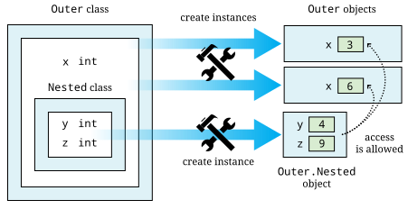
Static nested classes can be used when the class you need is only useful in connection with the outer class. Thus, nesting the class groups it with its outer class. We can create an instance of the nested class above as follows.
Outer.Nested nested = new Outer.Nested();Because it’s a static nested class, we don’t need an instance of type
Outer to create an instance of type Outer.Nested. If you compile
Outer.java, it will create two files, Outer.class and
Outer$Nested.class. The dollar sign ($) separates the names of each
level of nested class in the file name. It’s possible to nest classes
inside of nested classes, producing another .class file with another
dollar sign and the new class name appended.
Like members, static nested classes can be marked public, private,
protected, or package-private (no explicit modifier). These access
modifiers control which code can access or instantiate static nested
classes using the sames access rules for fields and methods.
One application for static nested classes is testing. You can write code
that tests the functionality of your outer class, fiddling with its
fields if needed. Then, because a separate .class file is created, you
can deliver only the .class file for the outer class to your customer.
Consider the Square class, similar to the Rectangle class given
earlier.
public class Square {
private int side;
public Square( int side ) {
this.side = side;
}
public int getArea() {
return side*side;
}
}We could add a static nested class called Test to Square to test
that its getArea() and getPerimeter() methods are working properly.
The final code might be as follows.
public class Square {
private int side;
public Square( int side ) {
this.side = side;
}
public int getArea() {
return side*side;
}
public static class Test {
public static void main(String[] args) {
Square square = new Square(5);
System.out.print("Test 1: ");
if (square.getArea() == 25) {
System.out.println("Passed");
} else {
System.out.println("Failed");
}
square.side = 7;
System.out.print("Test 2: ");
if (square.getArea() == 49) {
System.out.println("Passed");
} else {
System.out.println("Failed");
}
}
}
}To run the tests, you would compile Square.java and then run the
nested class by invoking java Square$Test. It’s unwise to use the
nested class to change the private fields in square, but we did so to
show that it’s allowed in Java. A better test would create a second
Square object with a side of length 7.
9.4.2. Inner classes
Another kind of nested class is an inner class. Unlike static nested classes, the objects of inner classes are associated with a particular object of the outer class. You can think of an inner class object living inside an outer class object. It’s impossible to instantiate an inner class object without having an outer class object first. Consider the following class definition.
public class Outer {
private int a;
public class Inner {
private int b;
private int c;
}
}Every instance of Inner must be associated with an instance of
Outer. To instantiate an inner class, you use the name of an outer
class object, followed by a dot, followed by the new keyword, and then
the name of the inner class. We can create an instance of the inner
class above as follows.
Outer outer = new Outer();
Outer.Inner inner = outer.new Inner();This syntax looks confusing, but it makes inner an object that exists
inside of outer. Thus, if there were methods defined in Inner, they
could refer to field a, because every instance of Inner would be
inside of an instance of Outer with a copy of a.
The relationship between outer and inner objects is one to many. We can instantiate any number of inner class objects that all live inside of the same outer class object.
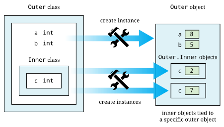
Another issue with inner classes (as opposed to static nested classes) is that they cannot contain static methods or static fields (except for constants). Since each instance of an inner class is tied to an instance of an outer class, the designers of Java thought that static fields and methods for an inner class really belong in the outer class.
It’s even possible to define a class inside a method, if that class is only referred to in the method. Such a class is called a local class. It’s possible to create an unnamed local class on the fly as well. Such a class is called an anonymous class. Both local and anonymous classes are special kinds of inner classes. Because of the way they’re created and used, we’ll discuss them in Seção 10.4
If you create a data structure for other programmers to use, a useful feature is the ability to retrieve each item from the data structure in order. Different threads or methods might need to process these elements independently from each other. Each piece of code can be given an inner class object called an iterator that can repeatedly get the next item in the data structure. Since instances of an inner class can read private data of the outer class, iterators can keep track of where they are inside of the data structure. If outside code were allowed access to the data structure’s internals, it would violate encapsulation. Iterators are a common application of inner classes.
We can create a SafeArray class that only allows data to be written to
its internal array if it falls in the legal range of indexes.
public class SafeArray {
private double[] data;
public SafeArray(int size) {
data = new double[size];
}
public int set(int index, double value) {
if (index >= 0 && index < data.length) {
data[index] = value;
}
}
}We could add an inner class called Iterator to SafeArray that allows
us to process all the array values without knowing how many there are.
This kind of behavior is useful for many dynamic data structures, as
discussed in Capítulo 19.
public class SafeArray {
private double[] data;
public SafeArray(int size) {
data = new double[size];
}
public void set(int index, double value) {
if (index >= 0 && index < data.length) {
data[index] = value;
}
}
public class Iterator {
private int index = 0;
public boolean hasNext() {
return (index < data.length);
}
public double getNext() {
if (index >= 0 && index < data.length) {
return data[index++];
} else {
return Double.NaN;
}
}
}
}The following method uses the iterator we’ve defined to find the sum
of the values in a SafeArray object.
public static findSum(SafeArray array) {
double sum = 0;
SafeArray.Iterator iterator = array.new Iterator();
while (iterator.hasNext()) {
sum += iterator.getNext();
}
return sum;
}9.5. Advanced: Enumeration types
We discussed constants in Seção 3.3.5, but using the final keyword only
forces individual variables, whether local or member variables, to be constant.
What if you wanted a whole object to be constant? What would that even mean?
The C programming language introduced enumerations, fixed lists of named constants starting at 0 and increasing by one for each value. This approach provided an easy way to make distinct, named constants for better readability. In C, these values were essentially integers, but a conceptually similar feature was added in Java 5 to create Java enumerations, fixed lists of named objects.
9.5.1. Basic enumeration types
Enumerations allow us make fixed lists of objects. These enum types can be
stored in their own files or nested inside other classes. As an example, we
can create an enumeration of the four cardinal directions.
public enum Direction {
NORTH, SOUTH, EAST, WEST
}Now, there are four objects accessible by the name Direction followed by a dot
and the name of the direction: Direction.NORTH, Direction.SOUTH,
Direction.EAST, and Direction.WEST. Each name provides a readable
representation of a direction.
Direction direction = whichWay();
if (direction == Direction.EAST) {
System.out.println("When the East is in the house");
}There’s a natural connection between switch statements and enum types:
switch statements are designed for a fixed set of values, and that’s exactly what
enum types provide. Note that, when used in a switch, only the name
of each enum value is used, not its type.
switch (direction) {
case NORTH:
System.out.println("From the Gate of the Kings the North Wind rides");
break;
case SOUTH:
System.out.println("From the mouths of the Sea the South Wind flies");
break;
case WEST:
System.out.println("The West Wind comes walking, and about the walls it goes");
break;
}Making decisions based on enum values is the most common use case, but Java
enumerations also have other, built-in functionality. Each enum value has
an ordinal() method that returns its index, starting with 0 for the first.
Likewise, an array containing all the values in an enum type can be accessed
by calling the static values() method from the type name.
The following code uses these features to print out the number and name
associated with each value in Direction.
for (Direction cardinal : Direction.values()) {
System.out.println(cardinal.ordinal() + ": " + cardinal);
}It gives the output below.
0: NORTH 1: SOUTH 2: EAST 3: WEST
It’s also possible to retrieve an enum value by name, using the static
valueOf() method.
Direction westSide = Direction.valueOf("WEST");Doing so is risky, since the name must match exactly, including case. Supplying an incorrect name will cause an error.
9.5.2. Customized enumeration types
Usually, you won’t need to create enumerations more complicated than simple
lists of values. However, enum values in Java are full objects: They can
contain both member variables and methods. So that enum values can be treated
purely as constants, it’s safest to store only final variables inside enum
types, but Java nevertheless allows them to contain non-constant data.
We can expand the idea of a Direction enumeration to a Movement one that
contains additional directions along with a geometric interpretation of how
movement in a direction would change a position.
public enum Movement {
NORTH(0, 1), (1)
NORTHEAST(1, 1),
EAST(1, 0),
SOUTHEAST(1, -1),
SOUTH(0, -1),
SOUTHWEST(-1, -1),
WEST(-1, 0),
NORTHWEST(-1, 1); (2)
private final int DELTA_X; (3)
private final int DELTA_Y;
Movement(int x, int y) {
DELTA_X = x;
DELTA_Y = y;
}
public int changeX(int x) {
return x + DELTA_X;
}
public int changeY(int y) {
return y + DELTA_Y;
}
}| 1 | To use an enum type in this way, each value must be followed by
parentheses giving the values passed into the constructor. |
| 2 | Then, the list of values must be terminated with a semicolon. |
| 3 | The rest of the enum type looks like any other class, containing members,
constructors, and methods. Constructors are implicitly private, and it’s
illegal to mark them as anything else. |
We can use the enum values defined above to move a Cartesian point in the
appropriate direction.
int x = 0;
int y = 0;
Movement movement = Movement.SOUTHEAST;
x = movement.changeX(x);
y = movement.changeY(y);After the code executes, the value of x will be 1, and the value of y
will be -1.
There are situations when it’s helpful to group constant data together inside
each enum value. In the example below, we store the atomic number and atomic
weight for each noble gas inside its corresponding value.
public enum NobleGas {
HELIUM(2,4.003),
NEON(10, 20.178),
ARGON(18, 39.948),
KRYPTON(36, 83.798),
XENON(54, 131.293),
RADON(86, 222.018);
public final int ATOMIC_NUMBER;
public final double ATOMIC_WEIGHT;
NobleGas(int number, double weight) {
ATOMIC_NUMBER = number;
ATOMIC_WEIGHT = weight;
}
}Because both member variables are public, they can be accessed directly, without needing a method. Mutable public member variables are generally considered unwise, but public constants are both safe and useful.
double neonWeight = NobleGas.NEON.ATOMIC_WEIGHT;This enum type could be generalized to include all the elements in the
periodic table, though that would make for a lengthy list of values.
Creating enum types is valuable for situations where there will only ever be
a fixed number of instances of a class: suits of cards, days of the week,
seasons of the year, states that a system can be in, and so on. They can also
be used for the singleton design pattern, a paradigm used in software
engineering.
Using enum types doesn’t make programming more powerful, in the sense that
new kinds of problems can be solved. However, careful use of enum types can
certainly make code more readable.
9.6. Solution: Nested expressions
We now have enough knowledge to solve the nested expressions problem
from the beginning of the chapter. Classes help us divide up the work of
solving the problem. We need a stack class that can hold char
values. The SymbolStack class allows us to perform the push, pop, and top
stack operations with methods of the same names.
public class SymbolStack {
private char[] symbols;
private int size;
public SymbolStack(int maxSize) {
symbols = new char[maxSize]; (1)
size = 0; (2)
}
public void push(char symbol) { symbols[size++] = symbol; } (3)
public void pop() { --size; } (4)
public char top() { return symbols[size - 1]; } (5)
public boolean isEmpty() { return size == 0; } (6)
}| 1 | Its constructor takes a maximize size for the stack and allocates an array of that size. |
| 2 | It also
sets the size field to 0 so that we can keep track of how many
things are in the stack (and consequently where the top is).
All int fields in Java are automatically initialized to 0, but it
doesn’t hurt to be explicit. |
| 3 | The push() method stores an input char into the stack at location
size and then increments size. |
| 4 | The pop() method simply decrements
size. It has no error checking to prevent a user from popping the
stack once it’s already empty. |
| 5 | The top() method returns the
value at the top of the stack, whose location is size - 1. |
| 6 | SymbolStack also defines an isEmpty() method so that we can see if
the stack is empty. |
Now we need the client code that reads the input and interacts with the stack.
import java.util.*;
public class NestedExpressions {
public static void main(String[] args) {
Scanner in = new Scanner(System.in);
String input = in.nextLine(); (1)
SymbolStack stack = new SymbolStack(input.length()); (2)
char symbol;
boolean correct = true; (3)| 1 | The main() method of this class reads in the input. |
| 2 | Then, it creates a
SymbolStack called stack with a maximum size of the input length. We
know that the stack will never need to hold more than the total input length. |
| 3 | It also creates a boolean named correct to keep track of whether or not
the input is correctly nested. We start by assuming that it is. |
for (int i = 0; i < input.length() && correct; ++i) { (1)
symbol = input.charAt(i);
switch (symbol) {
case '(':
case '[':
case '{':
stack.push(symbol); (2)
break;
case ')':
case ']':
case '}':
if (stack.isEmpty() || stack.top() != symbol) { (3)
correct = false;
} else {
stack.pop();
}
break;
}
}| 1 | This for loop runs through each char in the input. |
| 2 | If it’s a left parenthesis, left square bracket, or left curly brace, it pushes the symbol onto the stack. |
| 3 | If it’s a right parenthesis, right square
bracket, or right curly brace, it checks to see if the stack is empty.
Because of short-circuit evaluation, the code doesn’t even look at the
top of the stack if it is empty. However, if the stack isn’t empty, it
checks to see if the top matches the current symbol. If the stack is
empty or its top doesn’t match, correct is set to false. For
efficiency, the loop stops early if correct is no longer true. |
if (!stack.isEmpty()) { // Unmatched left symbols (1)
correct = false;
}
if (correct) { (2)
System.out.println("The input is correctly nested!");
} else {
System.out.println("The input is incorrectly nested!");
}
}
}| 1 | After the input has been examined, we check to see if the stack is
empty. If it isn’t, there must be some left symbols that weren’t
matched with right symbols. In that case, we set correct to false. |
| 2 | Finally, we print out whether the input is correctly or incorrectly
nested based on the value of correct. |
9.7. Concurrency: Objects
Nearly everything in Java is an object: arrays, lists, String values,
colors, and even exceptions, which form Java’s error-handling system and
are discussed in Capítulo 12. Some critics of Java
point out that int, double, and the other primitive types are not
objects, forcing the programmer to adopt two different programming
models. Regardless, threads are stored as objects as well. In
Capítulo 14, we’ll discuss how to create
threads and the various methods that can be used to interact with them.
However, objects of type Thread are not the only ones you deal with
when writing concurrent programs. As we’ve just noted, most data in
Java is encapsulated in an object. One of the deep reasons for using OOP
is safety: We want the private data inside of an object to stay in a
consistent state. Due to their inexplicable ability to get out of tight
spots, one tradition holds that cats have nine lives. Because of
their inquisitive nature, another tradition holds that curiosity killed
the cat. Consider the class below that keeps track of the lives a cat
has, losing one every time it becomes curious.
If the relationship between curiosity and mortality is the only feature
of a cat you’re trying to model, the class below appears to function well.
When the useCuriosity() method is invoked, it removes a life or prints
an error message if the cat has already run out of lives. In a single-threaded
situation, this object would work perfectly. No cat would be able to
lose more than 9 lives.
In a multi-threaded situation, however, there’s no telling when a thread might
pause in executing the useCuriosity() method.
Cat object starts with 9, but loses one each time it uses its curiosity. If no more lives remain, an error message is output.public class Cat {
private int lives = 9;
public boolean useCuriosity() {
if (lives > 1) { (1)
--lives; (2)
System.out.println("Down to life " + lives);
return true;
} else {
System.out.println("No more lives left!");
return false;
}
}
}| 1 | If 100 threads all called useCuriosity(), each one might successfully pass the if on this line before any had decremented lives. |
| 2 | Once past the check, nothing would prevent them from continuing on and decrementing lives, resulting in a cat who lost 100 lives, resulting in a total of -91 lives. Such a scenario makes no sense. |
In Capítulo 15, we’ll discuss how to prevent this
problem, using the synchronized keyword to allow only a single thread
at a time to execute a section of code. The goal is to make
useCuriosity() thread-safe, meaning that its behavior is consistent
and correct no matter how many threads try to execute it at the same
time.
As you work through this book and begin to write your own concurrent
programs, we’ll discuss many ways to make them thread-safe. However, you’re
also a consumer of code written by other people. In multi-threaded
environments, you might need to use library classes that are thread-safe.
For example, AtomicInteger is a thread-safe class designed to store
and manipulate int values. In Capítulo 19,
we’ll talk about the ArrayList and Vector classes, which
are both used to hold variable length lists of objects. One of the few
differences between them is that ArrayList is not thread-safe while
Vector is. There’s even the Collections.synchronizedCollection()
method (and other similar methods), which takes a collection that’s not
thread-safe and returns a version of it that is.
Java was intended to be multi-threaded from the very beginning, but concurrency was never the most important feature in the language. For that reason, the documentation doesn’t clearly mark which methods are thread-safe. Usually, some of the paragraphs of description above the list of methods say that a class is “synchronized” if it is thread-safe. If it’s not, the documentation may not mention anything. Careful attention is needed to be sure which classes and APIs are thread-safe.
You might wonder why all classes aren’t thread-safe, but everything comes
with a price. If a class is thread-safe, its methods are usually marked
with the synchronized keyword. The JVM is relatively efficient about
how it enforces that keyword, but the computational expense is not zero.
Learn the libraries well, and use the right tools for the right job.
9.8. Exercises
Conceptual Problems
-
Explain the relationship between a class and an object.
-
What’s the difference between a static method and an instance method?
-
What’s the purpose of a constructor? Why is it impossible for a constructor to return a value? Why is it impossible for a constructor to be called multiple times on the same object?
-
A static method can be called directly from a instance method, but an instance method can’t be called directly from a static method. Why?
-
Describe the uses of accessor and mutator methods. Is it possible to create a method that is both an accessor and a mutator? Why or why not?
-
Why do we usually mark fields with the
privatekeyword when it would be easier to make all fieldspublic? -
What’s the meaning of the
thiskeyword? When is it necessary to use it? When can it be ignored? -
Consider the following class definitions.
public class A { private int a; public int getA() { return a; } public static void increment() { ++a; } } public class B { private int b; public B(int value) { b = value; } public A generate() { A object = new A(); object.a = b; return object; } }The field
ais used three times in the previous code. Which of these uses cause a compiler error and why? -
In Seção 9.6, we gave a definition of
SymbolStackthat implements a simple stack using two fields, as follows.private char[] symbols; private int size;By calling the
top()orpop()methods on an empty stack, it’s possible to cause a program to crash. What additional problems could happen ifsymbolsandsizewere declaredpublicand malicious or poorly written code had access to these fields? -
Consider the following class definition.
public class GroceryItem { private String name; private double price; public GroceryItem(String text, double money) { String name = text; double price = money; } public String getName() { return name; } public String getPrice() { return price; } }This class compiles, but its constructor doesn’t function properly. Why not?
Programming Practice
-
OOP is often used when the data inside the object must maintain special relationships. Consider a clock with hours, minutes, and seconds. When the number of seconds reaches 60, the number of minutes is increased by 1, and the number of seconds is reset to 0. When the number of minutes reaches 60, the number of hours is increased by 1, and the number of seconds is reset to 0. When the number of hours reaches 13, it’s reset to 1. AM and PM switch whenever the number of hours reaches 12.
Define a
Clockclass with privateintfieldshours,minutes, andsecondsand abooleanfieldPM. Write a constructor that initializeshoursto12,minutesandsecondsto0, andPMtofalse. Write a mutatorincrement()that adds1toseconds. This mutator should correctly handle all the clock behavior described above. Write an accessor calledtoString()that returns a nicely formatted version of the time as aString. For example, the initial time would be returned as"12:00:00 AM". Make sure you pad the output forsecondsandminuteswith an extra"0"if they’re less than10. -
Draw on any of your hobbies to come up with a collection of items, whether those items are books you like to read, athletes you follow, music you collect, or anything else that’s easy to classify. Then, create a class that can describe one of these items with three to five attributes. For example, the important attributes of a book might be author, title, genre, and page count. Each of these attributes should be stored as a
privatefield and manipulated withpublicaccessor and mutator methods.Using an array, create a database of these objects. Write methods that print out all objects that have a particular value for an attribute. For example, a book database program should let the user input that he or she is looking for all books whose author is
"Alexandre Dumas". You might wish to use input redirection so that you don’t have to enter data about your objects repetitively. -
The
java.awtpackage defines a class calledPointthat can be used to manipulate an (x, y) pair in programs involving the Cartesian coordinate system. Create your ownPointclass withintvaluesxandyas fields.Create one constructor that allows the user to specify values for
xandyand a default constructor that takes no arguments and sets bothxandyto0. Create accessors and mutators forxandy.Finally, create a method with the signature
public double distance(Point p)that finds the distance between the currentPointobject and thePointobjectppassed in as an argument. Recall that the following formula finds the distance d between two 2D points.Write client code that allows you to create two
Pointobjects and test if thedistance()method gives the right answer. -
Re-implement the solution from Seção 9.6 so that it performs its input and output with GUIs created using
JOptionPane.
Experiments
-
Objects are great tools for solving problems, but there’s some additional overhead associated with creating objects and calling methods.
Write a piece of code that allocates an array of 10,000,000
intvalues. Iterate through that array, storing the valueiinto indexi, and time the process using an OStimecommand. As you know, theIntegerwrapper class allows us to store anintvalue in object form. Repeat the experiment, but instead ofintvalues, allocate an array to hold 10,000,000Integerobjects. Iterate through the array again, storing anIntegerobject into each index of the array. For indexi, store a newIntegerobjected created by passing valueiinto its constructor. Compare the time taken to the previous time forintvalues. Do you think this is a reasonable way to estimate the time it takes to call a constructor and allocate a new object?
Capítulo 10. Interfaces
Our work is the presentation of our capabilities.
10.1. Problem: Sort it out
Learning to use classes as we did in Capítulo 9 provides us with useful tools. First, we can group related data together. Then, we can encapsulate that data so that it can only be changed in carefully controlled ways. But these ideas are only a fraction of the true power of object orientation available when we exploit relationships between different classes. Eventually, in Capítulo 11, we’ll talk about hierarchical relationships, where one class can be the parent of many other child classes.
However, there’s a simpler relationship that classes can share, the ability to do some specific action or answer some specific question. If we know that several different classes can all do the same things, we want to be able to treat them in a unified way. For example, imagine that you’re writing code to do laboratory analysis of the free radical content of a number of creatures and items. For this analysis it’s necessary to sort the test subjects by weight and by age.
The subjects you’re going to sort will be objects of type Dog, Cat,
Person, and Cheese. All of these subjects will have some calendar
age. Naturally, the age we’re interested for a Dog is 7 times its
calendar age. At the same time, because a cat has nine lives, we’ll
use 1/9 of its calendar age. The age we use for
Person and Cheese objects is simply their calendar age.
As we discussed in Exemplo 6.2, sorting is one of the most fundamental tools for computer scientists. In that example, we introduced selection sort. Here we’re going to use another sort called bubble sort. We introduce bubble sort to expose you to another way to sort data. Although both are easy to understand, neither bubble sort nor selection sort are the fastest ways known to sort lists.
Bubble sort works by scanning through a list of items, a pair at a time,
and swapping the elements of the pair if they’re out of order. One scan
through the list is called a pass. The algorithm keeps making passes
until no consecutive pair of elements is out of order. Here’s an
implementation of bubble sort that sorts an array of int values in
ascending order.
boolean swapped = true;
int temp;
while (swapped) {
swapped = false;
for (int i = 0; i < array.length - 1; ++i) {
if (array[i] > array[i + 1]) {
temp = array[i];
array[i] = array[i + 1];
array[i + 1] = temp;
swapped = true;
}
}
}|
Pitfall: Array out of bounds
Note that index variable |
The only change needed to make a bubble sort work with lists of
arbitrary objects (instead of just int values) is the if statement.
Likewise, changing the greater than (>) to a less than (<) will
change the sort from ascending to descending.
10.2. Concepts: Making a promise
Knowing how to sort a list of items is half the problem we want to solve. The other half is designing the classes so that sorting by either age or weight is easy. And easy sorting isn’t enough: We want to follow good object-oriented design so that sorting future classes will be easy as well.
For these kinds of situations, Java has a feature called interfaces. An interface is a set of methods that an object must have in order to implement that interface. If an object implements an interface, it’s making a promise to have a version of each of the methods listed in the interface. It can choose to do anything it wants inside the body of each method, but it must have them to compile. Interfaces are also described as contracts, since a contract is a promise to do certain things. One reason that interfaces are so useful is because Java allows objects to implement any number of them.
The purpose of an interface is to guarantee that an object has the capability to do something. In the case of this sorting problem, we’ll need to sort by age and weight. Consequently, the ability to report age and weight are the two important capabilities that the objects must have.
10.3. Syntax: Interfaces
Declaring an interface is similar to declaring a class except that
interfaces can only hold abstract methods, default methods, static methods,
and constants. Note that interfaces can never contain fields other than constants.
Because the purpose of an
interface is to ensure that an object has certain publicly available
capabilities, all methods and constants listed in an interface
are assumed to be public. It’s legal but clutters code to mark
interface members with public, and it’s illegal to mark them with private
or protected.
An abstract method is one that doesn’t have a body. Its return type,
name, and parameters are given, but this information is concluded with a
semicolon (;) instead of a method body.
Here’s an interface for a guitar player that defines two abstract methods.
public interface Guitarist {
void strumChord(Chord chord);
void playMelody(Melody notes);
}Any object that implements this interface must have both of these
methods, declared with the access modifier public, the same return
types, and the same parameter types. We could create a RockGuitarist class
that implements Guitarist as follows.
public class RockGuitarist implements Guitarist {
public void strumChord(Chord chord) {
System.out.print("Totally wails on that " + chord.getName() + " chord!");
}
public void playMelody(Melody notes) {
System.out.print("Burns through the notes " + notes.toString() +
" like Jimmy Page!");
}
}Or we can create a ClassicalGuitarist class. A classical guitarist is
going to approach playing a chord or a melody differently from a rock
guitarist. Java only requires that all the methods in the interface are
implemented.
public class ClassicalGuitarist implements Guitarist {
public void strumChord(Chord chord) {
System.out.print("Delicately voices a " + chord.getName() + " chord.");
}
public void playMelody(Melody notes) {
System.out.print("Plucks the melodic line " + notes.toString() +
" with the skill of John Williams.");
}
}Interfaces make our code more flexible because we can use a reference
with an interface type to refer to any objects that implement the
interface. In the following snippet of code, we do this by creating 100
Guitarist references, each of which randomly points to either a
RockGuitarist or a ClassicalGuitarist.
Guitarist[] guitarists = new Guitarist[100];
Random random = new Random();
for (int i = 0; i < guitarists.length; ++i) {
if (random.nextBoolean()) {
guitarists[i] = new RockGuitarist();
} else {
guitarists[i] = new ClassicalGuitarist();
}
}One benefit of using interfaces is that more mistakes can be caught at compile time instead of run time. If you implement an interface with a class you’re writing but forget (or misspell) a required method, the compiler will fail to compile that class. If you remember all of the required methods but forget to specify that your class implements a particular interface, the compiler will fail when you try to use that class in a place where that interface is required.
If you have code that takes some arbitrary object as a parameter, you
can determine if that object implements a particular interface by using
the instanceof keyword. For example, the following method takes a
Chord object and an object of type Object. The Object type is the
most basic reference type there is. All reference types in Java can be
treated as an Object type. Thus, a reference of type Object could
point at any object of any type. In this case, if the Object turns out
to implement the Guitarist interface, we can cast it to a Guitarist
and use it to strum a chord.
void checkBeforeStrum(Object unknown, Chord chord) {
if (unknown instanceof Guitarist) {
Guitarist player = (Guitarist)unknown;
player.strumChord(chord);
}
else
System.out.println("That's not a guitarist!");
}|
Pitfall: Interfaces cannot be instantiated
It’s tempting to try to create an object of an interface type. If you think about doing so carefully, it should be clear why this is impossible. An interface is only a list of promises, and it’s not a class, a template for an object. It has neither data nor methods to manipulate data. Thus, the following code will fail to compile. As we showed before, we are permitted to make a reference to an object that implements
|
10.3.1. Default methods
Before Java 8, only abstract methods (methods without bodies) could be added to interfaces. And that made sense: Interfaces were promises to do things, while classes actually did those things. Unfortunately, a problem became apparent over time. Some Java library designers would create a useful interface, and many people would write classes that implement that interface. Eventually, someone would want to add a new method to the original interface, but doing so would break lots of code. All the existing classes that implemented the interface would fail to compile until they added the new method.
To allow new methods to be added to old interfaces without breaking existing classes, the idea of a
default method was added to the rules for Java interfaces. A method with a body could be added to
an interface, provided that it was marked with the default keyword. If a class implements that interface
and has a public method that matches the default method, the class’s method will be used. However,
if a class doesn’t have a matching method, the default method will be used, and the class will still compile.
Consider the following interface similar to the original Guitarist interface except that it contains a default
tune() method.
public interface DefaultGuitarist {
void strumChord(Chord chord);
void playMelody(Melody notes);
default boolean tune() {
System.out.println("Tuning guitar...");
return true;
}
}If a class implements DefaultGuitarist and includes its own tune() method, that method will satisfy the interface.
On the other hand, a class that implements DefaultGuitarist without a tune() method will automatically include
the tune() method given above, which prints a message about tuning and then returns true (presumably indicating
that tuning was successful). The way that a class can supply a method that overrides a default method
is very similar to the way that methods can be overridden with inheritance, as discussed in Seção 11.3.4.
Note that a default method must have a body.
An additional issue can arise with default methods when a class implements two or more interfaces that specify default
methods with the same signature. Consider the following interface that also has a tune() method.
public interface DefaultEngine {
void start();
int getRedline();
default boolean tune() {
System.out.println("Checking spark plugs...");
return true;
}
}By itself, this interface doesn’t cause any problems. However, when a class implements both it and DefaultGuitarist,
there can be a conflict.
public class EngineGuitarist implements DefaultGuitarist, DefaultEngine {
public void strumChord(Chord chord) {
System.out.println("Rumbles out " + chord.getName() + "!");
}
public void playMelody(Melody notes) {
System.out.println("Plays " + notes.toString() + " revving at different RPMs!");
}
public void start() {
System.out.println("*Crank*, *crank*, *vroooom!*");
}
public int getRedline() {
return 7000;
}
}This strange class is the template for an object that’s simultaneously an engine and a guitarist, implementing both
DefaultGuitarist and DefaultEngine. It has public methods for strumChord() and playMelody(), satisfying the
DefaultGuitarist interface. It also has public methods for start() and getRedline(), satisfying the DefaultEngine
interface. But it’s received two different default methods for tune(), one that tunes like a guitarist and one that
tunes like an engine. As a consequence, an EngineGuitarist object wouldn’t know which tune() to call and won’t
compile as it’s written.
You’re allowed to create classes like EngineGuitarist that implement more than one interface with the same default method,
but you need to create a tune() method inside EngineGuitarist to make clear what happens when tune() is called.
The use of default methods in interfaces is relatively rare, and situations where there are two conflicting default methods are rarer still. Even so, it’s important to understand how all the features of a language work. Note that it’s unlikely that you’ll be writing interfaces with default methods often, since their primary use is to add capabilities to existing interfaces without breaking classes that already use those interfaces.
10.3.2. Interfaces and static
When designing an interface, you can’t mark an abstract method static.
One way to think about this rule is that interfaces specify actions
(in the form of methods) that an object can do. Interfaces don’t specify
requirements for a class, such as its static methods or its class variables.
To illustrate, even with Chord and Melody defined, the following
interface fails to compile.
public interface AbstractStaticGuitarist {
void strumChord(Chord chord);
void playMelody(Melody notes);
static int getStrings();
}However, in Java 8 and higher, non-abstract static methods are allowed in interfaces. Such methods aren’t promises that objects of a class must fulfill. Instead, they’re simply utility methods that perform some task associated with the interface.
public interface StaticGuitarist {
void strumChord(Chord chord);
void playMelody(Melody notes);
static String nextNote(String note) {
char letter = note.charAt(0);
if (note.length() == 2) {
if (note.charAt(1) == 'b') {
return "" + letter;
} else {
switch (letter) {
case 'B':
case 'E':
return (char)(letter + 1) + "#";
case 'G':
return "A";
default:
return "" + (char)(letter + 1);
}
}
} else {
switch (letter) {
case 'B':
case 'E':
return "" + (char)(letter + 1);
default:
return letter + "#";
}
}
}
}This interface includes the method nextNote(), which takes a String representation
of a note such as "D#" or "Bb" and returns a String with a representation of a
note one half step higher. The rules for musical notes are somewhat complex, so this
method is useful even when separate from any particular class that implements StaticGuitarist.
The nextNote() method would be called just like any static method, using the name
of its container StaticGuitarist followed by a dot followed by the name of the method itself.
String note = StaticGuitarist.nextNote("F");Neither fields nor class variables are allowed in interfaces, so neither static nor default
methods will ever change any data inside the interface. This is the fundamental difference
between an interface and a class: Interfaces never contain state. Even so, class constants are allowed.
Thus, we could define static final
values that might be useful to any class implementing an interface. With
Chord and Melody defined, the following interface will compile.
public interface ConstantGuitarist {
static final int MAJOR = 1;
static final int NATURAL_MINOR = 2;
static final int HARMONIC_MINOR = 3;
static final int MELODIC_MINOR = 4;
static final int CHROMATIC = 5;
static final int PENTATONIC = 6;
void strumChord(Chord chord);
void playMelody(Melody notes);
}Another source of confusion is that class variables will be both static and final by default
in an interface, even if those keywords aren’t used.
Some Java users object to the use of constants in interfaces, since the purpose of an interface is to define a list of a requirements for objects of a class rather than dealing with data values. Nevertheless, constants are allowed in interfaces, and the Java API uses them in many cases.
Interface names often include the suffix -able, for example,
Runnable, Callable, and Comparable. This suffix is typical because
it reminds us that a class implementing an interface has some specific
ability. Let’s consider an example in a supermarket in which the items
could have very little in common with each other but they all have a
price. We could define the interface Priceable as follows.
interface Priceable {
double getPrice();
}If bananas cost $0.49 a pound, we can define the Bananas class as
follows.
public class Bananas implements Priceable {
public static final double PRICE_PER_POUND = 0.49;
private double weight;
public Bananas(double weight) { this.weight = weight; }
public double getPrice() {
return weight*PRICE_PER_POUND;
}
}If eggs are $1.50 for a dozen large eggs and $1.75 for a dozen extra
large eggs, we can define the Eggs class as follows.
public class Eggs implements Priceable {
public static final double PRICE_PER_DOZEN_LARGE = 1.5;
public static final double PRICE_PER_DOZEN_EXTRA_LARGE = 1.75;
private int dozens;
private boolean extraLarge;
public Eggs(int dozens, boolean extraLarge) {
this.dozens = dozens;
this.extraLarge = extraLarge;
}
public double getPrice() {
if (extraLarge) {
return dozens*PRICE_PER_DOZEN_EXTRA_LARGE;
} else {
return dozens*PRICE_PER_DOZEN_LARGE;
}
}
}Finally, if water is $0.99 a gallon, we can define the Water class as
follows.
public class Water implements Priceable {
public static final double PRICE_PER_GALLON = 0.99;
private int gallons;
public Water(int gallons) { this.gallons = gallons; }
public double getPrice() { return gallons*PRICE_PER_GALLON; }
}Each class could be much more complicated, but the code shown is all
that’s needed to implement the Priceable interface. Even though
there’s no clear relationship between bananas, eggs, and water, a shopping
cart filled with these items (and any others implementing the
Priceable interface) could easily be totaled at the register. If we
represent the shopping cart as an array of Priceable items, we could
write a simple method to total the values like so.
public static double getTotal(Priceable[] cart) {
double total = 0.0;
for (int i = 0; i < cart.length; ++i) {
total += cart[i].getPrice();
}
return total;
}Note that we can pass in Bananas, Eggs, Water, and many other
kinds of objects in a Priceable array as long as they all implement
this interface. Even though it’s impossible to create an object with an
interface type, we can make as many references to it as we want.
10.4. Advanced: Local and anonymous classes
If you haven’t read Seção 9.4, you may want to look over that material to be sure you understand what nested classes and inner classes are. Recall that a normal inner class is declared inside of another class, but it’s also legal to declare a class inside of a method. Such a class is called a local class. Under some circumstances, it’s useful to create an inner class with no name, called an anonymous class.
Both kinds of classes are inner classes. They can access fields and
methods, even private ones. Like other inner classes,
they’re not allowed to declare static variables other than constants.
We bring up these special kinds of classes in this chapter because they’re
commonly used to create a class with a narrow purpose that implements a
required interface.
10.4.1. Local classes
A local class declaration looks like any other class declaration except
that it occurs within a method. The name of a local class only has
meaning inside the method where it’s defined. Because the scope of the
name is only the method, a local class cannot have access modifiers such
as public, private, or protected applied to it.
Consider the following method in which an Ellipse class is defined
locally. Recall that an ellipse (or oval) has a major (long) axis and a
minor (short) axis. The area of an ellipse is half its major axis times
half its minor axis times π. (Because the major and
minor axes of a circle are its diameter, this formula becomes
πr2 in that case.)
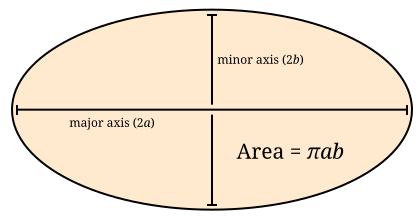
public static void createEllipse(double a1, double a2) {
class Ellipse {
private double axis1;
private double axis2;
public Ellipse(double axis1, double axis2) {
this.axis2 = axis2;
this.axis1 = axis1;
}
public double getArea() {
return Math.PI*0.5*axis1*0.5*axis2;
}
}
Ellipse e = new Ellipse(a1, a2);
System.out.println("The ellipse has area " + e.getArea());
}This Ellipse class cannot be referred to by any other methods. Since
an Ellipse class might be useful in other code, a top-level class
would make more sense than this local class. For that reason, local
classes are not commonly used.
However, we can make local classes more useful if they implement interfaces. Consider the following interface which can be implemented by any shape that returns its area.
public interface AreaGettable {
double getArea();
}The method below takes an array of AreaGettable objects and sums their
areas.
public static double sumAreas(AreaGettable[] shapes) {
double sum = 0.0;
for (int i = 0; i < shapes.length; ++i) {
sum += shapes[i].getArea();
}
return sum;
}If we create a local class that implements AreaGettable, we can use it
in conjunction with the sumAreas() method. In the following method, we expand
the local Ellipse class in this way and fill an array with
100 Ellipse instances, which can then be passed to sumAreas().
public static void createEllipses() {
class Ellipse implements AreaGettable {
private double axis1;
private double axis2;
public Ellipse(double axis1, double axis2) {
this.axis2 = axis2;
this.axis1 = axis1;
}
public double getArea() {
return Math.PI*0.5*axis1*0.5*axis2;
}
}
AreaGettable[] ellipses = new AreaGettable[100];
for (int i = 0; i < ellipses.length; ++i) {
ellipses[i] = new Ellipse(Math.random() * 25.0, Math.random() * 25.0);
}
double sum = sumAreas(ellipses);
System.out.println("The total area is " + sum);
}Even though the Ellipse class had the getArea() method before, the
compiler wouldn’t have allowed us to store Ellipse references in an
AreaGettable array until we marked the Ellipse class as implementing
AreaGettable. As in Exemplo 10.1, we used
an array with an interface type.
10.4.2. Anonymous classes
This second Ellipse class is more useful since objects with its type
can be passed to other methods as an AreaGettable reference, but
declaring the class locally provides few benefits over a top-level
class. Indeed, local classes are seldom preferable to top-level classes.
Although anonymous classes behave like local classes, they can be
conveniently created at any point.
An anonymous class has no name. It’s created on the fly from some
interface or parent class and can be stored into a reference with that
type. In the following example, we modify the createEllipses() method
so that it creates an anonymous class which behaves exactly like the
Ellipse class and implements the AreaGettable interface.
public static void createEllipses() {
AreaGettable[] ellipses = new AreaGettable[100];
for (int i = 0; i < 100; ++i) {
final double value1 = Math.random() * 25.0;
final double value2 = Math.random() * 25.0;
ellipses[i] = new AreaGettable() {
private double axis1 = value1;
private double axis2 = value2;
public double getArea() {
return Math.PI*0.5*axis1*0.5*axis2;
}
};
}
double sum = sumAreas(ellipses);
System.out.println("The total area is " + sum);
}The syntax for creating an anonymous class is ugly. First, you use the
new keyword followed by the name of the interface or parent class you
want to create the anonymous class from. Next, you put the arguments to
the parent class constructor inside of parentheses or leave empty
parentheses for an interface. Finally, you open a set of braces and fill
in the body for your anonymous class. When defining an anonymous class,
the entire body is crammed into a single statement, and you will often
need to complete that statement with a semicolon (;).
Anonymous classes don’t have constructors. If you need a constructor,
you will have to create a local class. Constructors usually aren’t
necessary since both local and anonymous classes can see local variables
and fields and use those to initialize values. Although any fields can
be used, local variables must be marked final (as shown above) if
their values will be used by local or anonymous classes. This
restriction prevents local variables from being changed in unpredictable ways by
methods in the local class.
It might not be easy to see why anonymous classes are useful. Both the Java API and libraries written by other programmers have many methods that require parameters whose type implements a particular interface. Without anonymous classes, you’d have to define a whole named class and instantiate it just for that method, even if you never use it again.
Using anonymous classes, you can create such an object in one step, right where you need it. This practice is commonly used for creating listeners for GUIs. A listener is an object that does the right action when a particular event happens. If you need many different listeners in one program, it can be convenient to create anonymous classes that can handle each event rather than defining many named classes which each have a single, narrow purpose. We’ll use this technique in Capítulo 16.
10.5. Solution: Sort it out
It’s not difficult to move from totaling the value of items as we did in Exemplo 10.1 to sorting them. Refer to the following class diagram as we explain our solution to the sorting problem posed at the beginning of the chapter. Dotted lines are used to show the “implements” relationship.
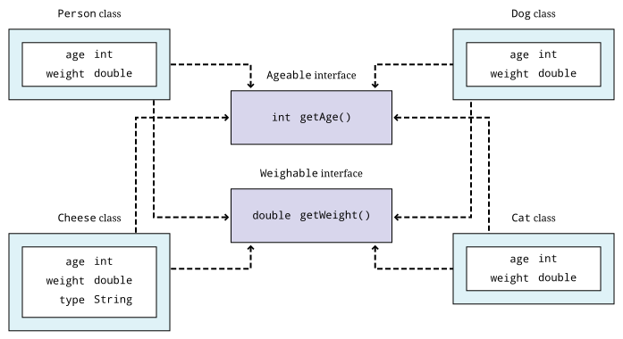
We’ll start with the definitions of the two interfaces we’ll use to compare objects.
public interface Ageable {
int getAge();
}public interface Weighable {
double getWeight();
}Classes implementing these two interfaces will be able to give their age
and weight independently. The next step is to create the Dog, Cat,
Person, and Cheese classes which implement them.
We’ll see in Capítulo 11 that the Dog, Cat, and
Person classes could inherit from a common ancestor (such as
Creature or Mammal) which implements the Ageable and Weighable
interfaces. That design could reduce the total amount of code needed.
For now, each class will have to implement both interfaces directly.
public class Dog implements Ageable, Weighable {
private int age;
private double weight;
public Dog(int age, double weight) {
this.age = age;
this.weight = weight;
}
public int getAge() { return age*7; }
public double getWeight() { return weight; }
}public class Cat implements Ageable, Weighable {
private int age;
private double weight;
public Cat(int age, double weight) {
this.age = age;
this.weight = weight;
}
public int getAge() { return age/9; }
public double getWeight() { return weight; }
}public class Person implements Ageable, Weighable {
private int age;
private double weight;
public Person(int age, double weight) {
this.age = age;
this.weight = weight;
}
public int getAge() { return age; }
public double getWeight() { return weight; }
}public class Cheese implements Ageable, Weighable {
private int age;
private double weight;
private String type;
public Cheese(int age, double weight, String type) {
this.age = age;
this.weight = weight;
this.type = type;
}
public int getAge() { return age; }
public double getWeight() { return weight; }
public String getType() { return type; }
}With the classes in place, we can assume that client code will
instantiate some objects and perform operations on them. All that’s
necessary is to write the method that will do the sorting. We can wrap
the bubble sort code given earlier in a method body with only a few changes
to generalize the sort beyond int values.
public void sort(Object[] array, boolean age) {
boolean swapped = true;
Object temp;
while (swapped) {
swapped = false;
for (int i = 0; i < array.length - 1; ++i) {
if (outOfOrder(array[i], array[i + 1], age) {
temp = array[i];
array[i] = array[i + 1];
array[i + 1] = temp;
swapped = true;
}
}
}
}In this method, the boolean age is true if we’re sorting by age
and false if we’re sorting by weight. Note that the array elements and temp
have the Object type. Recall that any object can be stored in a
reference of type Object.
The only other change we needed was to replace the greater-than
comparison (>) with the outOfOrder() method, which we define below.
public boolean outOfOrder(Object o1, Object o2, boolean age) {
if (age) {
Ageable age1 = (Ageable)o1;
Ageable age2 = (Ageable)o2;
return age1.getAge() > age2.getAge();
}
else {
Weighable weight1 = (Weighable)o1;
Weighable weight2 = (Weighable)o2;
return weight1.getWeight() > weight2.getWeight();
}
}Even though we’ve designed our program for objects that implement both
the Ageable and Weighable interfaces, the compiler only sees
Object references in the array. Thus, we must cast each object to the
appropriate interface type to do the comparison. There’s a danger that
a user will pass in an array with objects which do not implement both
Ageable and Weighable, causing a ClassCastException. To allow for
universal sorting methods, the Java API defines a Comparable interface
which can be implemented by any class which requires sorting. With Java
5 and higher, the Comparable interface uses generics to be more
type-safe, but we won’t discuss how to use this interface until we
cover generics in Capítulo 19.
10.6. Concurrency: Interfaces
As we discussed in Seção 10.2, implementing an interface means promising to have public methods with the signatures specified in the interface definition. Making a promise seems only tangentially related to having multiple threads of execution. Indeed, interfaces and concurrency do not overlap a great deal, but there are two important areas where they affect one another.
The first is that a special interface called the Runnable interface
can be used to create new threads of execution. Runnable is a very
simple interface, containing the single signature void run(). Essentially,
any object with a run() method that takes no arguments and
returns no values can be used to create a thread of execution. Just as a
regular program has a single starting place,
the main() method, some method needs to be marked as a starting place
for additional threads. For more
information about using the Runnable interface, refer to
[The Runnable interface].
The second connection between interfaces and concurrency is more philosophical. What can you specify in an interface? The rules for interfaces in Java are relatively limited: You can require a class to have a public instance method with specific parameters and a specific return type. Java interfaces don’t allow you to require a static method.
In Capítulo 15, we will discuss a key way to
make classes thread-safe by using the synchronized keyword.
Like static, Java does not allow an interface to
specify whether a method is synchronized. Thus, it’s impossible to use
an interface to guarantee that a method will be thread-safe.
As with all interface usage, this restriction cuts both ways: If you’re
designing an interface, there’s no way to guarantee that
implementing classes use synchronized methods. On the other hand, if
you’re implementing an interface, the designer may hope that your class
uses synchronized (or otherwise thread-safe) methods, but the interface
cannot force you to do so. Whenever thread-safety is an issue, make sure
you read (or write) the documentation carefully. Since there’s no way
to force programmers to use the synchronized keyword, the
documentation may be the only guide.
10.7. Exercises
Conceptual Problems
-
What’s the purpose of an interface?
-
Why implement an interface when it puts additional requirements on a class yet adds no functionality?
-
Is it legal to have methods marked
privateorprotectedin an interface? Why did the designers of Java make this choice? -
What’s the
instanceofkeyword used for? Why is it useful in the context of interfaces? -
What kind of programming error causes a
ClassCastException? -
Create an interface called
ColorWavelengthsthat only contains constants storing the wavelengths in nanometers for each of the seven colors of light, as given below.Color Wavelength (nm) Red
680
Orange
605
Yellow
580
Green
545
Blue
473
Indigo
430
Violet
415
-
Write an interface called
Clockthat specifies the functionality a clock should have. Remember that the classes that implement the clock may tell time in different ways (hourglass, water clock, mechanical movement, atomic clock), but they must share the basic functionality you specify. -
There are four compiler errors in the following interface. Name each one and explain why it’s an error.
public interface Singable { public int SOPRANO = 1; public static int ALTO = 2; public void sing(); private String chant(); public boolean hasDeepVoice() { return false; } public static boolean hasPerfectPitch(); public synchronized void tune(int frequency); } -
Consider the interface defined below.
public interface Explodable { boolean explode(double megatons); }Which of the following classes properly implement
Explodable?public class Dynamite implements Explodable { public boolean explode() { System.out.println("BOOM!"); return true; } } public class AtomicBomb implements Explodable { public boolean explode(double size) { System.out.println("A huge " + size + " megaton blast shakes the earth!"); return true; } } public class Grenade { public boolean explode(double megatons) { return true; } } public class Firecracker implements Explodable { private boolean explode(double megatons) { return (megatons < 0.0000001); } } -
Write a single class that correctly implements the following three interfaces.
public interface Laughable { boolean laugh(int times); }public interface Cryable { void cry(int tears, boolean moaning); }public interface Shoutable { void shout(double volume, String words); } -
If you’re sorting a list of items n elements long using bubble sort, what’s the minimum number of passes you’d need to be sure the list is sorted, assuming the worst possible ordering of items to start with? (Hint: Imagine the list is in backward order.) What’s the minimum number of passes if the list is already sorted?
Programming Practice
-
Add client code that randomly creates the objects needing sorting in the solution from Seção 10.5. Design and include additional classes
WineandTortoisethat both implementAgeableandWeighable. AddtoString()methods to each class so that their contents can be easily output. Make sure you print out the list of objects after sorting to test your implementation. -
Refer to the sort given as a solution in Seção 10.5. Add another
booleanto the parameters of the sort which specifies whether the sort is ascending or descending. Make the needed changes throughout the code to add this functionality. -
After learning about threads in Capítulo 14, refer to the simple bubble sort from Seção 10.1. The goal is now to parallelize the sort. Write some code which will generate an array of random
intvalues. Design your code so that you can spawn n threads. Partition the single array into n arrays and map one partition to each thread. Use your bubble sort implementation to sort each partition. Finally, merge the arrays back together, in sorted order, into one final array. For now, use just one thread (ideally the main thread) to do the merge.The merge operation is a simple idea, but it’s easy to make mistakes in its implementation. The idea is to have three indexes, one for each of the two arrays you’re merging and one for the result array. Always take the smaller (or larger, if sorting in descending order) element value from the two arrays and put it in the result. Then increment the index from the array you took the data from as well as the index of the result array. Be careful not to go beyond the end of the arrays which are being merged. An implementation of merging can be found in Exemplo 20.8.
Experiments
-
Once you have implemented the sort in parallel from [parallelBubbleSortExercise], time it against the sequential version. Try two, four, and eight different threads. Be sure to create one random array and use copies of the original array for both the parallel and sequential versions. Be careful not to sort an array that’s already sorted! Try array sizes of 1,000, 100,000, and 1,000,000. Did the performance increase? Was it as much as you expected?
Capítulo 11. Inheritance
Your children are not your children.
They are the sons and daughters of Life’s longing for itself.
They come through you but not from you,
And though they are with you yet they belong not to you.
11.1. Problem: Boolean circuits
In Capítulo 4, we talked extensively about Boolean
algebra and how it can be applied to if statements in order to control
the flow of execution in your program. The commands that we give in
software must be executed by hardware in order to have an effect. It
shouldn’t be surprising that computer hardware is built out of digital
circuits that behave according to the same rules as Boolean logic. Each
component of these circuits is called a logic gate. There are logic
gates corresponding to all the Boolean operations you’re used to: AND,
OR, XOR, NOT, and others.
The output of an AND gate is the result of performing a logical AND on its inputs. That is, its output is true if and only if both of its inputs are true. The same correlation exists between each gate and the Boolean operator with the same name. At the level of circuitry, a 1 (or “on”) is often used to represent true, and a 0 (or “off”) is often used to represent false. Modern computer circuitry is built almost entirely out of such gates, performing addition, subtraction, and all other basic operations as complicated combinations of logic gates, where each digit of every number is a 1 or 0 determined by the circuit.
Because these circuits can become large and unwieldy, your problem is to write a Java program that will allow a user to specify the design of such a circuit and then see what its output is. The input to this program will be a text file redirected to standard input that gives the number of gates of the circuit, lists what each gate is, and then lists the connections between them.
The following is an example of input to make a circuit with six components.
6 true false AND XOR NOT OUTPUT 1 2 0 1 3 2 1 4 3 5 4
The first line specifies the total number of components. The next two
components give either true or false inputs, depending on their names.
The AND and the XOR correspond to gates of the same name which each
take two inputs. The NOT corresponds to a NOT gate with a single
input. Finally, OUTPUT 1 is the single output of this circuit that
we’re interested in. After the list of gates is a list of how they’re
connected. The line 2 0 1 specifies that the gate at index 2, which
happens to be an AND gate, has an input from the gate at index 0 and an
input from the gate at index 1. In other words, the AND gate has one
true input and one false input. The final circuit produced would look
like the following.
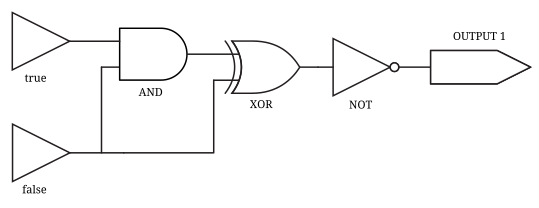
We’re only interested in the value of any OUTPUT gates. Thus, the program that’s simulating this circuit would print the following.
OUTPUT 1: true
There are many different ways to implement a solution to this problem.
The total number of gates is given as the first input. Thus, you can
make an array of gates. When you go to connect them, the indexes given
in the input will map naturally onto the gates in the array. But what
type should the array be? You could create a Gate class that could do
the work of any conceivable gate, but the implementation would be
awkward. All gates would have to have two inputs even if they don’t need
any. Adding different kinds of gates later (like a NAND, for example)
would mean rewriting the Gate class.
Instead, a cleaner approach to the solution is to use inheritance. In object-oriented languages like Java, inheritance is a process that allows you to create a new, specialized class from a more general, preexisting class.
We recommend the following inheritance hierarchy, in which the arrows point from each child class to its parent class.
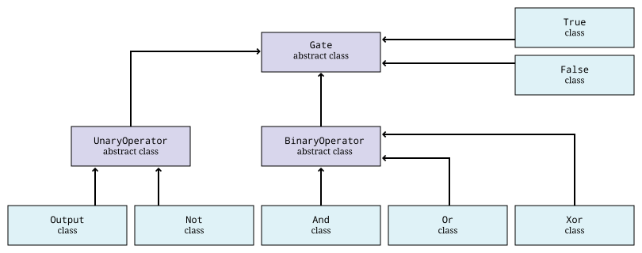
As you can see, every class inherits from the Gate class. If your
array can be of type Gate, it will be able to hold objects of any
child of Gate. UnaryOperator, BinaryOperator, True, and False
are children of the basic Gate class. Then, Output and Not are
children of UnaryOperator since each only has a single input.
Naturally, And, Or, and Xor are children of BinaryOperator,
since they all have two inputs.
If this jumble of classes seems bewildering, don’t be discouraged. Each is very short and easy to write. We’ll explain what the inheritance relationship means and how to use it in the next few sections.
11.2. Concepts: Refining classes
Here we give a brief overview of inheritance that will give us enough information to continue onward. We’ll cover some of the deeper areas of the subject in Capítulo 18.
11.2.1. Basic inheritance
The process of creating an inherited class out of an existing class is called inheriting a class, deriving a class, or simply subclassing. The class that already exists is called a parent class, base class, or superclass and the new class is called a child class, derived class, or subclass.
When you create a child class from a parent class, the child class inherits all of its fields and methods. Thus, you can use a child class object anywhere you’d use the parent class object. This relationship explains the terms superclass and subclass: Since you can treat any subclass object as if it were a superclass object, the superclass type can be thought of as a superset including all subclass objects.
The names superclass and subclass can sound misleading because the subclass can usually do more than the superclass. From that perspective, the child class has a superset of the fields and methods of its parent class. To avoid confusion, we favor the terminology of parent and child classes.
11.2.2. Adding functionality
When creating a child class, a programmer will normally add
functionality above and beyond the original parent class. Otherwise,
there’s little point in creating a child class. For example, a simple
Fish class might be able to do things like swim and feed. A child
Flounder class has the additional ability to camouflage itself.
Another child class, the Shark class, adds the ability to eat other
Fish objects.
By adding a few methods, we can create a new class with special abilities without interfering with the basic functionality of the underlying class.
11.2.3. Code reuse
Of course, a programmer who wished to program a Shark class could
simply copy and paste in all the code from the Fish class and then
make the necessary additions. In many ways the evolution of modern
programming languages has been to reduce the need for copying and
pasting.
Old mistakes are propagated with copying and pasting. When discovered, they must be fixed in several different locations. New mistakes can also be introduced by cutting and pasting. Instead, we wish to guarantee that working code from a parent class continues to work in a child class. Ideally, code from parent classes will not need to be debugged a second time when a child class is created.
Even without the issue of errors introduced by copying and pasting, the total amount of code increases. By minimizing the amount of code, issues of performance and storage can be improved, but not always. Object-oriented languages have taken criticism for low speed and high memory use due to the additional complexities of objects and inheritance, but compiler optimization, good library design, and improved JVM performance have brought Java a long way in this area.
11.3. Syntax: Inheritance in Java
In this section we discuss the mechanism for creating a child class in
Java using the extends keyword. Then, we discuss access restriction
and visibility, constructor issues, the Object class, and overriding
methods.
11.3.1. The extends keyword
In order to make a child class in Java, we use the extends keyword.
Let’s give an example using the Fish class defined below. This class
creates a basic fish that can swim, feed, and die. We can check its
color, location, and whether or not it’s alive. When it runs out of
energy, it dies.
import java.awt.*;
public class Fish {
protected Color color = Color.GRAY;
private double energy = 100.0;
private double location = 0.0;
private boolean alive = true;
public Color getColor() { return color; }
public double getLocation() { return location; }
public boolean isAlive() { return alive; }
public void swim() {
if (alive) {
location += 0.5;
energy -= 0.25;
}
if (energy <= 0.0) {
die();
}
}
public void feed() { energy += 100.0; }
public void die() { alive = false; }
}From here we can create a child class called BoringFish that does
exactly what Fish does. To do so, we use the extends keyword after
the new class name, followed by the parent class name (in this case
Fish), followed by the body of the class.
public class BoringFish extends Fish {
}Just as we’re allowed to make an empty class, we’re allowed to make an
inherited class and add nothing, but doing so is pointless. Instead, we
can make a Flounder class that can change its color.
import java.awt.*;
public class Flounder extends Fish {
public void setColor(Color newColor) { color = newColor; }
}The Flounder class can do everything a Fish can: It can swim, feed,
and die. But we also add the ability to change color since
flounders are famous for their ability to mimic the ocean floor they
swim over. Note that the color field in the Fish class has the
protected access modifier, not private. We’ll come back to this
point.
Here’s a Shark class that extends Fish in another way, by adding
the capability of eating other Fish.
public class Shark extends Fish {
public void eat(Fish fish) {
fish.die();
feed();
}
}Here we have added an eat() method that takes another Fish object as
a parameter. First, the Fish parameter is killed; then the eat()
method calls feed(), restoring the energy of the Shark object. Note
that the Shark object is able to call the feed() method even though
it isn’t defined inside of Shark. Because it inherits from Fish, it
has a version of feed().
Single inheritance only
Particularly if you’ve programmed in C++, you might be wondering if it’s
possible to have one class inherit from multiple classes in Java.
In multiple inheritance, a single class can have many different parents.
Since C++ supports multiple inheritance, it would allow you to have a
SharkAlligatorMan class that inherits from the
Shark, Alligator, and Human classes. If you go back to the sorting
problem from Capítulo 10, multiple inheritance would
allow us to solve the problem with an Age class and a Weight class
from which Dog, Cat, Person, and Cheese all inherit.
However, the designers of Java decided not to allow multiple
inheritance, perhaps for this reason: Imagine a River class with a
run() method and a Politician class with a run() method. It seems
strange to create a class which is both a river and politician, but
there is no rule in C++ which makes doing so impossible. If you did have
a RiverPolitician class which inherits from both, what would happen
when you call the run() method? How would the RiverPolitician class
know which of its parents' methods to pick? Surely, the way that a
politician runs for office is very different from the way a river runs
along its banks.
This problem is similar to the issue discussed in Seção 10.3.1, where a class could implement more than one interface with the same default method; however, the problem is more severe in the case of multiple inheritance since it becomes unclear which fields inside of parent classes are being referred to, not just which methods.
If you find yourself in a situation where you want to use multiple inheritance in Java, try to reformulate your class hierarchy into one where your classes implement multiple interfaces. Recall that multiples interfaces can be implemented by a single class in Java, and like multiple inheritance, this practice allows a single class to be used in wildly different contexts.
Interfaces using extends
The extends keyword is not limited to classes. It’s possible for an
interface to extend another interface. In fact, an interface can extend
any number of other interfaces. As when a class implements multiple
interfaces, each interface in an extends list is separated by commas.
When an interface extends other interfaces, it includes all the methods
(and constants) they define. If a class implements an interface that
extends other interfaces, it must contain versions of all the methods
specified by all the interfaces. Recall the Ageable and Weighable
interfaces from Capítulo 10, which specified the
getAge() and getWeight() methods, respectively. We could create an
interface that required both of these methods by extending Ageable and
Weighable.
public interface AgeableAndWeighable extends Ageable, Weighable {
}We could add additional methods to the AgeableAndWeighable interface,
but even empty it will enforce the contracts defined by both Ageable
and Weighable. It’s usually not necessary to create an interface
that extends other interfaces, since a class could implement each of the
individual interfaces. Nevertheless, it can be used as a convenience to
save typing or to create a reference type with certain guaranteed
abilities.
Note that a class can never extend an interface. Likewise, an interface cannot extend a class or implement another interface.
11.3.2. Access restriction and visibility
The Shark example above gives an example of inheritance in which the
child class only calls methods of the parent class and does not
interfere with the fields of the parent class. Generally, leaving parent
fields alone is a good thing because it protects the state of the parent
class from getting corrupted. However, it’s not always possible.
If we return to the earlier Flounder example, we had to change the
color field directly since there was no mutator to change it.
Perhaps the Fish class was poorly designed because it didn’t have a
color mutator. On the other hand, most fish cannot change their color,
so it might be good design to prevent outside code from changing the
color field with such a mutator. There are no absolute rules for
making these kinds of decisions.
We introduced access modifiers in Seção 9.3.4, but inheritance
gives them new meaning. Recall that the
access modifier for the color field of Fish was protected. A field
or method with the protected modifier can be accessed by all child
classes (as well as classes in the same package). If the modifier for
color was private, the Flounder class would not be able to change
it directly.
In the Shark class, it must use mutators to change the value of its
own energy and the alive field of the fish object it eats since
they’re both marked private. It’s generally preferable to use mutator
and accessor methods whenever possible, even within the same class, so
that fields are not inadvertently corrupted.
11.3.3. Constructors
When you create a child class, you can imagine that a copy of the parent class exists inside of the child. When you create an object from a child class, how do you properly initialize the fields inside the parent class?
As we discussed in Capítulo 9, every class has a
constructor, even if it’s a default one created for you. Whenever the
constructor for a child class is invoked, the constructor for the parent
class is invoked as well. If the parent class is also the child of some
other class, that grandparent class will have its constructor invoked as
well. This chain of constructors will continue, reaching all the way
back to the ultimate ancestor, Object.
When writing the constructor for a child class, the first line of it should be the call to the parent constructor. If you don’t explicitly call the parent constructor, its default (no parameter) constructor will be called. If the parent class does not have a default constructor, then leaving off an appropriate call to a parent constructor will result in a compiler error. Consider the following two classes.
public class Parent {
private String name;
public Parent(String name) { this.name = name; }
public String getName() { return name; }
}public class Child extends Parent {
public Child(String name) {
super("Baby " + name);
}
}As shown above, the super keyword is used to call the constructor of a
parent class. The Child constructor takes a name and prepends the
String "Baby " to it before passing it on to the Parent
constructor.
In a similar way, the this keyword can be used to call another
constructor in the same class, provided that a constructor to the
parent class is eventually reached. For example, we could add the
following constructor to the Child class.
public Child() {
this("Unknown");
}This second constructor will be called whenever a new Child object is
instantiated without any arguments. It will supply the String
"Unknown" to the other constructor, which will add "Baby" and pass
it on to the Parent class.
11.3.4. Overriding methods and hiding fields
Sometimes a parent method doesn’t provide all the power you want in the child class. It’s possible to override a parent method in the child class. Then, when that method is called on child objects, the new method will be called. The new method has exactly the same name and parameters. The return type must either be exactly the same or a child class of the original return type.
We can return to the Fish class example and make a new kind of fish
that never moves.
public class LazyFish extends Fish {
public void swim() {
System.out.println("I think I'll just sit here.");
}
}Whenever someone calls the swim() method on a LazyFish object, it
will announce that it’s going to sit where it is. Its location isn’t
updated, and its energy doesn’t change.
On the other hand, we could create another child class that swims twice
as fast as the original Fish.
public class FastFish extends Fish {
public void swim() {
super.swim();
super.swim();
}
}Every time swim() is called on objects of type FastFish, those
objects will call the swim() method from Fish twice. Thus, this fish
will move twice as fast (and consume twice as much energy). Because the
location and energy fields are private, we must use methods from
Fish to affect them. Note the use of the keyword super, allowing us
to specify that we want to call the swim() method from Fish and not
just call the same method from FastFish again. Using the super
keyword, we can call methods from the parent. If the parent didn’t
override a method from an ancestor class, we can still use super to
call a method from the most recent ancestor class that did implement the method.
However, Java does not allow us to skip over a parent method to call a
grandparent method if there’s an implementation in the parent class. In
other words, there’s no way to call something like a
super.super.swim() method.
Just as methods are overridden, fields are hidden. It’s perfectly legal to declare a field with the same name as a field from a parent class, but the new field will then be used instead of the old one.
public class A {
protected int a;
public int getA() { return a; }
public void setA(int value) { a = value; }
}public class B extends A {
protected int a;
public void setA(int value) { a = value; }
}Class B is a child of class A and declares a field called a,
hiding a field of the same name from A. However, which a is which
can cause some confusion. Consider the following fragment of code.
A objectA = new A();
B objectB = new B();
objectA.setA(5);
objectB.setA(10);
System.out.println("A = " + objectA.getA());
System.out.println("B = " + objectB.getA());The output of this code is:
A = 5 B = 0
Calling the setA() method on an A object sets the a field inside
of A. Calling the overridden setA() method on a B object sets the
a field inside of B, but since the getA() method hasn’t been
overridden, the a field from the A parent class part of B is
returned. Since that a field in B hasn’t been given a value, it
still has the default value of 0. Both a fields exist inside of B,
but the methods are poorly designed, leaving one field capable only of
being set and the other capable only of being retrieved.
11.3.5. Annotations
Java 5 introduced the annotation feature that often comes up in the context of inheritance. Like many features in Java, annotations are deep and complex, yet most programmers only need to interact with a small subset of the annotation toolbox.
Annotations provide extra information, typically used by the compiler, to make the relationships between types, methods, and variables a little clearer than would be possible without them. Annotations can also be used to modify how a program behaves when running, but doing so is an advanced technique used only in very specific cases.
It’s easy to recognize annotations because they’re marked with an at sign
(@).
The @Override annotation
One of the most common annotations is the @Override annotation used
to mark that a method overrides a parent method.
public class HungryFish extends Fish {
@Override
public void feed() {
super.feed();
super.feed();
}
}The HungryFish class extends the parent Fish class and overrides the
feed() method. Unlike previous children of the Fish class we’ve shown, this
one has explicitly marked the method it overrides with the @Override
annotation. We didn’t mark overridden methods this way before, so is it
necessary? No, but it’s still a good idea.
Using the @Override annotation will cause a compiler error if you’re trying
to override a parent method that doesn’t exist. It’s a safety tool that prevents
a programmer from thinking they’re overriding something when they really aren’t.
For example, if we’d misspelled the method inside of HungryFish as feet()
instead of feed(), the compiler would complain since there’s no feet()
method in the Fish class to override.
The @Deprecated annotation
An annotation you will regularly see but might never use yourself is
@Deprecated. This annotation usually marks a method (but can also mark classes
or member variables) as deprecated, indicating that it should no longer
be used. Couldn’t the author of the class simply remove the method? They could,
but then existing code that depends on the missing method would break.
Marking a method deprecated means that new code shouldn’t use it going
forward. Often, such methods carry some risk if they aren’t used carefully. For
example, the stop(), suspend(), and resume() methods in the Thread class
are all deprecated because they can cause deadlock, a topic we’ll discuss in
Seção 15.5.1.
Before the introduction of this annotation, the only way to know a method was deprecated was by reading the documentation.
The @SuppressWarnings annotation
Another common annotation is @SuppressWarnings. This annotation stops specific
warnings from being reported by the compiler, at the scope of a class, method,
or variable declaration. Warnings are just that, warnings. They aren’t compiler
errors, which would make it impossible for the code to compile. Instead,
they warn that something about the code looks fishy.
Sometimes, a specific warning can be annoying to see over and over again when
you know it’s not really a problem. At other times, the compiler is set up
so that warnings are treated as errors and must be resolved in order for the
program to compile. For both situations, you can use @SuppressWarnings to
hide unnecessary warnings, as in the following example.
@SuppressWarnings("deprecation")
public static void doDeprecatedThings() {
Date today = new Date();
System.out.println(today.getYear() + 1900);
}This code prints out the current year, but it uses the deprecated getYear()
method from the Date class. Instead of using this method, it’s now preferred
to use a method from the Calendar class, but it’s possible to imagine a
situation where the getYear() method is still used, perhaps as part of
a large library. By marking a method with @SuppressWarnings("deprecation"),
uses of deprecated methods don’t cause compiler warnings for the scope of the
method.
The @SuppressWarnings annotation is a useful example because it requires one
or more String arguments. Just like a constructor for a normal class,
annotations can take arbitrarily complicated arguments. Another useful case
is @SuppressWarnings("unused"), which turns off the warning for a variable
that’s never used, a common situation while code is still under development.
Other annotations
We’ve only touched on a handful of annotations here. Many frameworks use annotations to establish relationships between different classes and methods. For example, both the Spring Framework and Jakarta Enterprise Beans heavily use annotations.
There are @NotNull, @NonNull, and @Nonnull annotations (as well
as the opposite, @Nullable) in several popular libraries. In each case, the
goal is to require that an argument isn’t null or that a method won’t return
null. These are useful annotations that make code safer or document the kinds
of values that can be used with a method. Unfortunately, the different
annotations work in different ways and typically require the use of an
outside library. Professional programmers should be aware if one of these
libraries is in use on their project and take advantage of the annotations.
The @FunctionalInterface annotation is used to document interfaces with a
single method that can be used to store lambda expressions, which we’ll discuss
in Capítulo 13.
The @Test, @BeforeEach, and @AfterEach annotations are just a few
annotations used with JUnit 5, a testing framework we’ll discuss in
Capítulo 17.
11.3.6. The Object class
You may not have realized it, but every class you’ve created in Java uses
inheritance. To provide uniformity, the designers of Java made every
class the child (or grandchild or great-grandchild …) of a class
called Object. When you omit the extends clause in a class
definition, you’re making that class a direct child of Object.
As a consequence, all classes in Java are guaranteed to have the following methods.
| Method | Purpose |
|---|---|
clone() |
Make a separate copy of an object. |
equals() |
Determine if two objects are the same. |
finalize() |
Perform cleanup when an object is garbage collected. Similar to a destructor in C++. Rarely used. |
getClass() |
Find out what the class type of a given object is. |
hashCode() |
Get the hash code for an object, useful for making hash tables of objects. |
notify() |
Used for synchronization with threaded programs. More in Capítulo 15. |
notifyAll() |
Same as previous. |
toString() |
Get a |
wait() |
Used with |
Java provides basic implementations for most of these, but if you want
them to work well for your object, you’ll have to override some of
them with appropriate methods. For example, the Object version of
toString() returns the virtual address of the object in JVM memory,
which is not very useful information.
Nevertheless, API classes usually have good equals() and toString()
methods. Aside from making a few useful methods available, having a
common ancestor for all classes means that you can store any object in
an Object reference. An array of type Object can hold anything,
provided that you know how to retrieve it. We discuss the finer points
of inheritance and polymorphism in Capítulo 18 and
how to build lists and other data structures using Object references
in Capítulo 19.
11.4. Examples: Problem solving with inheritance
Here are two extended examples showing how we can use inheritance to solve problems. First, we revisit the student roster example from Capítulo 9 and then move onto an inheritance hierarchy of polygons.
The Student class we created in Exemplo 9.1 is useful
but works only for undergraduate students. With only a few additions, we
can make it suitable for graduate students as well. First, let’s take
another look at the Student class.
public class Student {
public static final String[] YEARS = {"Freshman", "Sophomore", "Junior", "Senior"};
private String name;
private int year;
private double GPA;
public Student(String name, int year, double GPA) {
setName(name);
setYear(year);
setGPA(GPA);
}
public void setName(String name) { this.name = name; }
public void setYear(int year) { this.year = year; }
public void setGPA(double GPA) {
if (GPA >= 0 && GPA <= 4.0) {
this.GPA = GPA;
} else {
System.out.println("Invalid GPA: " + GPA);
}
}
public String getName() { return name; };
public int getYear() { return year; };
public double getGPA() { return GPA; };
public String toString() {
return name + "\t" + YEARS[year] + "\t" + GPA;
}
}We want to create a GraduateStudent class that inherits from
Student. We need to add a thesis topic for each graduate student.
Likewise, we need to update the toString() method so that outputs the
appropriate data. We use 4 as the year value for graduate students.
Student to add graduate student capabilities.public class GraduateStudent extends Student {
private String topic; (1)
public GraduateStudent(String name, double GPA, String topic) {
super(name, 4, GPA); (2)
setTopic(topic);
}
public void setTopic(String topic) { this.topic = topic; }
public String toString() { (3)
return getName() + "\tGraduate\t" + getGPA() + "\tTopic: " + topic;
}
}| 1 | Because we’re inheriting most of the fields we need, we only need to
declare the topic field. |
| 2 | Then, in the GraduateStudent constructor,
we call the parent constructor with the name, year, and GPA and then set
topic to the input value. |
| 3 | Finally, we override the toString() method so that "Graduate" and
the thesis topic are output. Note that we must use the getName() and
getGPA() accessors since those fields are private in Student. |
Most code that uses Student objects should be able to incorporate
GraduateStudent objects easily. Code that creates Student objects
from input will need slight modifications to handle the thesis topic.
Also, old code that only expects values of 0, 1, 2, or 3 for
year may need to be modified so that it doesn’t break.
Let’s examine a class hierarchy used to create several different
polygons. Our base class needs to be general. It can represent any kind
of closed polygon, using an array of Point objects. The Point library class
is a way to package up x and y values of type int. Each coordinate
in the array gives the next vertex of the polygon.
import java.awt.*; (1)
public class Polygon {
protected Point[] points; (2)
public Polygon(Point[] points) { (3)
this.points = points;
}| 1 | The import statement allows us to use the Point class as well as the
Graphics class. |
| 2 | Our array of type Point is declared protected so
that the child classes we want to create can access it directly. |
| 3 | The constructor takes an array of type Point and stores it. |
public double getPerimeter() { (1)
double perimeter = 0.0;
for (int i = 0; i < points.length - 1; ++i) {
perimeter += points[i].distance(points[i + 1]);
}
perimeter += points[0].distance(points[points.length - 1]);
return perimeter;
}
public void draw(Graphics g) { (2)
for (int i = 0; i < points.length - 1; ++i) {
g.drawLine(points[i].x, points[i].y, points[i+1].x, points[i+1].y);
}
g.drawLine(points[0].x, points[0].y,
points[points.length - 1].x, points[points.length - 1].y);
}
}| 1 | The getPerimeter() method can determine the length
of the perimeter by adding the lengths of the segments connecting the
vertices. Although it’s also possible to determine the area enclosed by a list of
vertices, the algorithm is complex. |
| 2 | The draw() method draws the
polygon by drawing each line segment that connects adjacent vertices. We
discuss the Graphics class in Capítulo 16. If you compile and run this code, please note that in
Java graphics, like many computer graphics environments, the upper left
hand corner of the screen or window is considered (0,0), and
y values increase going downward, not upward. |
The number of things that can be done with this very general Polygon
class are limited, but with this basic parent class defined, we can
design a Triangle class as a child of it.
import java.awt.*; (1)
public class Triangle extends Polygon {
public Triangle(int x1, int y1, int x2, int y2, int x3, int y3) { (2)
super(toPointArray(x1, y1, x2, y2, x3, y3));
}
protected static Point[] toPointArray(int x1, int y1, int x2, int y2, int x3, int y3) {
Point[] array = {new Point(x1, y1), new Point(x2, y2), new Point(x3, y3)}; (3)
return array;
}| 1 | Again, the import statement is for the Point class. |
| 2 | One reasonable
constructor for a triangle takes in six values, giving the
x and y coordinates of the three vertices of
the triangle. Of course, the Polygon class requires an array of type
Point, but the super constructor must be the first line of the
Triangle constructor. |
| 3 | To solve this problem, we create a static
method to package the values into an array. We could have done the same
thing in the argument list of the super constructor, but it would have
looked messier. The toPointArray() is protected because there’s no
reason to let external code have access to it. |
public String getType() {
double a = points[0].distance(points[1]);
double b = points[1].distance(points[2]);
double c = points[2].distance(points[0]);
if (a == b && b == c) {
return "Equilateral";
}
if (a == b || b == c || a == c) {
return "Isosceles";
}
return "Scalene";
}
}Finally, the getType() method allows us to do something specific with
triangles. We can use the distance() method from the Point class to
find the length of each of the three sides. By comparing these lengths,
we can determine whether the triangle represented is equilateral,
isosceles, or scalene. Of course, computing the perimeter and drawing
the triangle are already taken care of by the Polygon class.
We can easily make a Rectangle class along the same lines.
import java.awt.*;
public class Rectangle extends Polygon {
public Rectangle(int x, int y, int length, int width) { (1)
super(toArray(x, y, length, width));
}
protected static Point[] toArray(int x, int y, int length, int width) { (2)
Point[] array = {new Point(x, y), new Point(x + length, y),
new Point(x + length, y + width), new Point(x, y + width)};
return array;
}
public int getArea() { (3)
int length = points[1].x - points[0].x;
int width = points[2].y - points[1].y;
return length * width;
}
}| 1 | The constructor is similar to the Triangle constructor except that the
upper left corner of the rectangle is specified, along with the length
and the width. |
| 2 | From these values, the appropriate array of Point
values is generated. |
| 3 | The rectangle-specific code that we add is the
getArea() method, which determines the length and width of the
rectangle by examining the points array and then calculates area. |
Using inheritance as form of specialization, we can go one step further
and make a Square class.
public class Square extends Rectangle {
public Square(int x, int y, int size) {
super(x, y, size, size);
}
}This very short class uses everything available in Rectangle but
simplifies the constructor slightly so that the user doesn’t have to
enter both length and width.
11.5. Solution: Boolean circuits
Here we present our solution to the Boolean Circuits problem. First, we
define a parent class for all circuit components, called Gate.
public class Gate {
private String name;
public Gate(String name) { this.name = name; }
public String getName() { return name; }
public String toString() {
return getName() + ": " + getValue();
}
public boolean getValue() { return false; }
}The Gate class doesn’t do anything except set up ways to store a name
and to get a value. It
doesn’t really matter what getValue() gives back for Gate, but we
can say that it’s false.
In principle, it shouldn’t be possible to create an object of type Gate,
UnaryOperator, or BinaryOperator. Classes that are designed only to
be parent classes and never to be instantiated are called abstract classes and
are discussed in Seção 18.3.1.
From Gate, we can define the most basic circuit
components: gates whose value is either always true or always false.
public class True extends Gate {
public True() { super("true"); }
public boolean getValue() { return true; }
}public class False extends Gate {
public False() { super("false"); }
public boolean getValue() { return false; }
}To conform with the constructor for Gate, these new classes must pass
a String giving their name to the super constructor. The values
returned by the getValue() method are clear. Next, we want to create a
class that can be used as a parent for all unary operators.
public class UnaryOperator extends Gate {
private Gate input;
public UnaryOperator(String name) { super(name); }
public void setInput(Gate input) { this.input = input; }
public Gate getInput() { return input; }
}The important addition in the UnaryOperator class is the input
field. Any unary operator must have a single input gate that it operates
on. This class provides a mutator and accessor for input, as well as
an appropriate constructor. From UnaryOperator, we can derive two
specific operators.
public class Output extends UnaryOperator {
public Output(int i) { super("OUTPUT " + i); }
public boolean getValue() { return getInput().getValue(); }
}The Output class takes in an int value and uses it to make a
numbered name. Its getValue() method simply returns the value of its
input. The Output class doesn’t do anything except serve as a marker
for circuit output.
public class Not extends UnaryOperator {
public Not() { super("NOT"); }
public boolean getValue() { return !getInput().getValue(); }
}The Not class uses "NOT" as the name supplied to
the super constructor and returns the logical NOT of the value of its
input.
Just as we did for unary operators, we also need a parent class for binary operators.
public class BinaryOperator extends Gate {
private Gate operand1;
private Gate operand2;
public BinaryOperator(String name) { super(name); }
public Gate getOperand1() { return operand1; }
public Gate getOperand2() { return operand2; }
public void setOperand1(Gate operand) { operand1 = operand; }
public void setOperand2(Gate operand) { operand2 = operand; }
}A BinaryOperator has two Gate fields, operand1 and operand2,
representing the inputs to the operator. The BinaryOperator class has
an appropriate constructor and then accessors and mutators for the
operands. With BinaryOperator as a parent, only a few lines of code
are necessary to define any logical binary operator.
public class And extends BinaryOperator {
public And() { super("AND"); }
public boolean getValue() {
return getOperand1().getValue() && getOperand1().getValue();
}
}public class Or extends BinaryOperator {
public Or() { super("OR"); }
public boolean getValue() {
return getOperand1().getValue() || getOperand1().getValue();
}
}public class Xor extends BinaryOperator {
public Xor() { super("XOR"); }
public boolean getValue() {
return getOperand1().getValue() ^ getOperand1().getValue();
}
}In each case, a constructor passes the name of the gate to the super
constructor. Then, each getValue() method gets the values from the two
operands and combines them with AND, OR, or XOR, respectively. This
design allows the programmer to focus only on the important element of
each class. Adding new classes for NAND, NOR, or any other possible
logical binary operator would be quick.
The client code that uses these classes to simulate a circuit follows.
import java.util.*;
public class BooleanCircuit {
public static void main(String[] args) {
Scanner in = new Scanner(System.in);
int count = in.nextInt();
Gate[] gates = new Gate[count];
String name;
int value;First we have the import needed for Scanner. In main(), we read in the
total number of gates, create an array of type Gate of that length,
and declare a few useful temporary variables.
// Create gates
for (int i = 0; i < count; ++i) {
name = in.next().toUpperCase();
if (name.equals("true")) {
gates[i] = new True();
} else if (name.equals("false")) {
gates[i] = new False();
} else if (name.equals("AND")) {
gates[i] = new And();
} else if (name.equals("OR")) {
gates[i] = new Or();
} else if (name.equals("XOR")) {
gates[i] = new Xor();
} else if (name.equals("NOT")) {
gates[i] = new Not();
} else if (name.equals("OUTPUT")) {
value = in.nextInt();
gates[i] = new Output(value);
}
} Then, we parse the input, creating an appropriate gate based on the name read in. In the case of an OUTPUT gate, we must also read in a number so that we can identify which OUTPUT gate is which later.
// Connect gates
while (in.hasNextInt()) {
value = in.nextInt();
name = gates[value].getName();
if (name.equals("AND") || name.equals("OR") || name.equals("XOR")) {
BinaryOperator operator = (BinaryOperator)gates[value];
operator.setOperand1(gates[in.nextInt()]);
operator.setOperand2(gates[in.nextInt()]);
}
else if (name.equals("NOT") || name.startsWith("OUTPUT")) {
UnaryOperator operator = (UnaryOperator)gates[value];
operator.setInput(gates[in.nextInt()]);
}
}As long as there’s input remaining, we read in an index. Based on the name of the gate at that index in the array, we either read in two more indexes (for binary operators) or just a single additional index (for unary operators). In either case, we set the input or inputs of the operator to the gate or gates at those indexes.
// Compute output
for (int i = 0; i < count; ++i) {
if (gates[i].getName().startsWith("OUTPUT")) {
System.out.println(gates[i]);
}
}
}
}Finally, the simulation of the circuit is surprisingly simple. We look
through array until we find a gate whose name starts with "OUTPUT".
Then, we print out its value. In order to determine its value, it will
ask its input what its value is, which in turn will ask for the values
from its input. The toString() in the Gate class will assure us that
the final output is nicely formatted. This system accommodates any
number of output gates connected arbitrarily, as long as the circuit has
no loops inside of it, such as an AND gate whose output is also one of
its inputs.
11.6. Concurrency: Inheritance
Like interfaces, inheritance in Java is not closely related to concurrency. However, two ways in which inheritance interacts with concurrency deserve attention.
The first is the Thread class. Each thread of execution in Java
(except the main thread) is managed with a Thread object or an object
whose type inherits from Thread. Creating such types is done by
extending Thread, just as you would extend any other class. Further
information about extending Thread for concurrency is given in
[Syntax: Threads in Java]. Extending the Thread class to make
your own customized threads of execution is an alternative to
implementing the Runnable interface mentioned in
Seção 10.6 and is discussed in greater detail in
[The Runnable interface].
The second interaction between inheritance and concurrency is again very
similar to the problem with interfaces and concurrency: There’s no way
to specify that a method is thread-safe. Recall that it’s not allowed
to use the synchronized keyword on a method in an interface
declaration. Likewise, there’s no restriction on overriding a
synchronized method with a non-synchronized method or vice versa.
The rules for overriding methods in Java guarantee that an object of a child class is usable anywhere that an object of the parent class is usable. Thus, you cannot override a public method with a private one, reducing the visibility of a method. We discuss a similar restriction with exceptions in Seção 18.3.4.
If it has these restrictions, why doesn’t Java prevent a synchronized method from being overridden by a non-synchronized method? In the first place, a non-synchronized method can be used anywhere a synchronized one could (unlike a private method, which is not accessible everywhere a public one is). In the second, the designers of Java put thread safety in the category of implementation details left up to the programmer. Some classes need specific methods to be synchronized and others (even child classes) do not. However, if you override a class with a synchronized method, it’s safest to mark your method synchronized as well.
11.7. Exercises
Conceptual Problems
-
Give three advantages of using inheritance instead of copying and pasting code from a parent class. Are there any disadvantages to using inheritance?
-
Consider classes
RadishandCarrotwhich both extend classVegetableand implement interfaceCrunchable. Which of the following sets of assignments are legal and why?-
Radish radish = new Radish(); -
Radish radish = new Vegetable(); -
Vegetable vegetable = new Radish(); -
Crunchable crunchy = new Radish(); -
Radish radish = new Carrot();
-
-
In the context of inheritance, the keyword
supercan be used for two different purposes. What are they? -
Consider the following class definitions.
public class A { private String value; public A(String s) { value = "A" + s + "A"; } public String toString() { return value; } } public class B extends A { public B(String s) { super("B" + s + "B"); } } public class C extends B { public C(String s) { super("C" + s + "C"); } }What’s output by the following code fragment?
C c = new C("ABC"); System.out.println(c); -
Beginning Java programmers often confuse package-private access (no explicit specifier) with
publicaccess. How is this confusion possible when default access is more constrained than bothpublicandprotectedaccess? (Hint: The file system plays a role.) -
What are the similarities and differences between overloading a method and overriding a method?
-
What’s field hiding? How can software bugs arise from this Java feature?
-
Give reasons why the designers of Java decided not to allow multiple inheritance. Would you have made the same decision? Why or why not?
-
Draw a class hierarchy establishing a sensible relationship between the
Human,Soldier,Sailor,Marine,General, andAdmiralclasses. For this class hierarchy, refer to the U.S. military structure in which the U.S. Marine Corps is a part of the U.S. Navy.
Programming Practice
-
Create an
InternationalStudentclass that extendsStudent. It should includeStringfields for country of origin and visa status. It should include mutator and accessor methods for these two new fields. -
Add
PentagonandHexagonclasses that extend thePolygonclass. The constructor for each class should take an x, y and radius value, each ofinttype. Both classes should be implemented to create regular polygons, that is, polygons in which all five or six sides have the same length. The x and y values should give the center of the polygon, and each of the five or six points should be the radius distance away from that center.Because the internal structure of
Polygonkeeps all vertices asPointvalues, the x and y coordinates of the points must beintvalues. This requirement will force you to round these x and y coordinates after using trigonometry to determine their locations. As a result, the final pentagons and hexagons stored and displayed will be slightly irregular. -
The inheritance design of our solution to the Boolean circuits problem given in Seção 11.5 makes adding new gates easy. Add classes that implement a NAND gate and a NOR gate. Then, rewrite the
main()method ofBooleanCircuitto accommodate these two extra classes. -
Re-implement the object hierarchy in the solution from Seção 10.5 to the sort it out problem. This time, let the
Cat,Dog, andPersonclasses extend theCreatureclass defined below.public class Creature implements Ageable, Weighable { protected int age; protected double weight; public Creature(int age, double weight) { this.age = age; this.weight = weight; } public int getAge() { return age; } public double getWeight() { return weight; } }Refactor your code so that the
Cat,Dog, andPersonclasses are as short as possible. How many lines of code do you save? -
Design a celestial body simulator. You’ll need to create a class containing fields for the x, y, and z locations, x, y, and z velocities, radii, and masses of each object. For each time step of length t, you must do the following.
-
Compute the sum of forces exerted on each body by every other body. The equation for gravitational force on body b exerted by body a is given by the following equation.
As mentioned in Exemplo 8.1, the gravitational constant G = 6.673 × 10-11 N·m2·kg-2. Also, |rab| is the distance between the centers of objects a and b. Finally, the unit vector between the centers of the two objects is given by the equation below.
-
Compute the x, y, and z components of the acceleration vector a for each object using the equation F = ma once the sum of forces has been calculated.
-
Update the x, y, and z components of the velocity vector v for each object using the equation vnew = vold + at.
-
Experiments
-
Inheritance is a powerful technique, but it comes with some overhead costs. Create a class called
Awith the following implementation.public class A { protected int a; }Then, create 25 more classes named
BthroughZ. ClassBshould extendAand add aprotectedintfield calledb. Continue in this manner, with each new class extending the previous one and adding anintfield named the lowercase version of the class name. Thus, if you create an object of typeZ, it will contain, through inheritance, 26intfields namedathroughz. But for a singleZobject to be created, it must call 27 (Zback throughAplusObject) constructors. You may wish to use the file I/O material in Capítulo 21 to write a program to create all these classes so that you do not have to do so by hand.Finally, create a new class called
Allwhich contains 26protectedfields ofinttype namedathroughz. Now, the purpose of creating all these classes is to compare the time needed to instantiate an object of typeZwith one of typeAll, though they both only contain 26intfields namedathroughz.Create an array of 100,000 elements of type
Zand then populate it with 100,000Zobjects. Time this process. Create an array of 100,000 elements of typeAlland then populate that array with 100,000Allobjects. You may wish to use theSystem.nanoTime()method described in Capítulo 14 to accurately time these processes. Is there a significant difference in the times you found?
Capítulo 12. Exceptions
The vulgar mind always mistakes the exceptional for the important.
12.1. Problem: Bank burglary
Let’s consider a problem in which various aspects of a bank burglary are modeled as Java objects. You want to write some code that will accomplish the following steps:
-
Disable the burglar alarm
-
Break into the bank
-
Find the vault
-
Open the vault
-
Carry away the loot
But any number of things could go wrong! When trying to disable the burglar alarm, you might set it off. When you try to break into the bank, you might have thought that you’d disabled the burglar alarm but actually failed to do so. The door of the bank might be too difficult to open. The vault might be impossible to find, or the vault might be impossible to open. It could even be empty! The money might be made of enormous gold blocks that are too heavy to carry away. Finally, at any time during the heist, a night watchman might catch you in the act.
If you’re the criminal mastermind who planned this deed, you need to know if (and preferably how) your henchman bungled the burglary. You need a simple system that can inform you of any errors that have occurred along the way. Likewise, you need to be able to react differently depending on what went wrong.
We are going to model each of these error conditions with Java
exceptions. An exception is how Java indicates exceptional or
incorrect situations inside of a program. These exceptions are thrown
when the error happens. You must then write code to catch the error
and deal with it appropriately. The bank burglar program will deal with
three different classes, Bank, Vault, and Loot.
The Bank class has three methods, disableAlarm(), breakIn(), and
findVault(), which returns a Vault object. The Vault class has an
open() method and a getLoot() method, which returns a Loot object.
The Loot class has a carryAway() method. Below is a table of the
exceptions which can be thrown by each of the methods.
| Class | Method | Exceptions |
|---|---|---|
Bank |
disableAlarm() |
BurglarAlarmException |
WatchmanException |
||
breakIn() |
BurglarAlarmException |
|
LockPickFailException |
||
WatchmanException |
||
findVault() |
WatchmanException |
|
Vault |
open() |
LockPickFailException |
WatchmanException |
||
getLoot() |
WatchmanException |
|
Loot |
carryAway() |
LootTooHeavyException |
WatchmanException |
In order to deal with each of these possible errors, you need some special Java syntax.
12.2. Concepts: Error handling
As a rule, computer programs are filled with errors. Writing a program is a difficult and complex process. Even if a segment of code is free from errors, it may call other code which contains mistakes. The user could be making mistakes and issuing commands to a program that are impossible to execute. Even hardware can produce errors, as in a hard drive crash or a network connectivity problem.
12.2.1. Error codes
A robust program should deal with as many errors as possible. One
strategy is to have every method give back a special error code
corresponding to an error when it occurs. Then, the code
calling the method can react appropriately. Of course, many methods do
not return a numerical type, limiting this kind of error handling. A
solution that was very common in the C language, particularly in Unix
system calls, was to set a globally visible int variable called
errno to a value corresponding to the error that has just happened.
These approaches have a number of drawbacks. In the case of errno, if a
number of different threads were running at the same time, different
errors could occur simultaneously, but only one value could be kept in
errno. For any system that relies on checking for an error condition
after each method call, a large amount of error handling code must be
mixed in with normal code. Doing so reduces code readability and makes
it difficult to handle errors in a central place. Likewise, a numerical value
doesn’t describe the error, requiring good documentation to know what
the number means.
12.2.2. Exceptions
Java adopts a different error handling strategy called exceptions.
Whenever a specified error state or unusual situation is reached, an
exception is thrown. When an exception is thrown, normal execution stops
immediately. The JVM starts backtracking, looking for code that’s designed to deal with
that specific exception. The code that will handle the exception can be
in the current method, in the calling method, in the caller of the
calling method, or arbitrarily far back in the chain of method calls,
all the way to main(). Each method will return, looking for code to
handle this exception, until it’s found. If no handling code is found,
the exception will propagate all the way past main(), and
the program will end.
Exceptions give a unified and simple way to handle all errors. You can choose to deal with errors directly or delegate that responsibility to methods that call the code you’ve written. Selection statements and loops are forms of local control flow, but exceptions give us the power of non-local control flow, able to jump back through any number of method calls.
12.3. Syntax: Exceptions in Java
In Java syntax, there are two important sides of using exceptions:
throwing the exception when an error occurs and then handling that
exception properly. Below we explain both of these as well as the
catch or specify requirement, the finally keyword, and the process of
creating custom exceptions.
12.3.1. Throwing exceptions
By now you’ve probably experienced a NullPointerException in the
process of coding. This exception happens when an object reference is
null but we try to access one of its methods or fields.
String text = null;
int x = text.length(); // NullPointerExceptionIn this case, the exception is thrown by the JVM itself. It is possible
to catch this exception and deal with it, but a NullPointerException
generally means a mistake in the program, not an error that can be
recovered from. Although many useful exceptions such as NullPointerException,
ArithmeticException, and ArrayIndexOutOfBoundsException are implicitly
thrown by the JVM, we’re also allowed to throw them explicitly.
if (y < 14)
throw new NullPointerException();Like any other object, we use the new keyword to instantiate a
NullPointerException using its default constructor. Once created, we
use the throw keyword to cause the exception to go into effect. Any
exception you throw explicitly must use the throw keyword, but the
majority of exceptions thrown by your programs will either be mistakes
or exceptions thrown by library code you’re calling. If you write a
significant amount of library or API code, you might use throw more
often.
12.3.2. Handling exceptions
Normal application programmers will find themselves writing code that
handles exceptions much more often than code that throws them. In order
to catch an exception, you must enclose the code you think is going
to throw an exception in a try block. Immediately after the try
block, you can list one or more catch blocks. The first catch
block that matches your exception will be executed.
try {
String text = null;
int x = text.length(); // NullPointerException
System.out.println("This will never be printed.");
} catch (NullPointerException e) {
System.out.println("Surprise! A NullPointerException!");
}In this case, trying to access the length() method of a null
reference will still throw a NullPointerException, but now it’ll be
caught by the catch block below. The message
"Surprise! A NullPointerException!" will be printed to the screen, and
execution will continue normally after the catch block. Once the
exception is caught, it stops trying to propagate. Of course, whatever
the code was doing when the exception was thrown was abandoned
immediately because it might have depended on successful execution of
the code that threw the exception. Thus, the call to the
System.out.println() method in the try block will never be executed.
An exception will match the first catch block with the same class or
any superclass. Since Exception is the parent of RuntimeException
which is the parent of NullPointerException, we could write our
example with Exception instead.
try {
String text = null;
int x = text.length(); // NullPointerException
System.out.println("This will never be printed.");
} catch (Exception e) {
System.out.println("Well, of course you got a NullPointerException!");
}In general, you should write the most specific exception class possible
for your catch blocks. Otherwise, you might be catching a different
exception than you planned for, preventing that exception from propagating
up to an appropriate handler. For example, the following code will randomly
throw either a NullPointerException or an
ArithmeticException (because of a division by 0).
try {
String text = null;
int x;
if (Math.random() > 0.5) {
x = text.length(); // NullPointerException
} else {
x = 5 / 0; // ArithmeticException
}
} catch (Exception e) {
System.out.println("You got some kind of exception!");
}This code will catch either kind of exception, but it won’t tell you
which you got. Instead, the correct approach is to have one catch
block for each possible kind of exception.
try {
String text = null;
int x;
if (Math.random() > 0.5) {
x = text.length(); // NullPointerException
} else {
x = 5 / 0; // ArithmeticException
}
} catch (NullPointerException e) {
System.out.println("You used a null pointer!");
} catch (ArithmeticException e) {
System.out.println("You divided by zero!");
}The list of catch blocks can be arbitrarily long. You must always go
from the most specific exceptions to the most general, like Exception,
otherwise some exceptions could never be reached. The Java compiler
enforces this requirement. The e is a reference to the exception
itself, which behaves something like a parameter in a method. It’s
common to use e as the identifier, but you’re allowed to call it any
legal variable name. Usually, the kind of exception is all you need to
know, but every exception is an object and has fields and methods.
Particularly useful is the getMessage() method which can give
additional information about the exception.
12.3.3. Catch or specify
In contrast to the examples given above, you’ll rarely write code to catch a
NullPointerException or an ArithmeticException. Both of these
exceptions are called unchecked exceptions. In
Capítulo 6, we used the Thread.sleep() method to put
the execution of our program to sleep for a short period of time. We
were forced to enclose this method call in a try block with a catch
block for InterruptedException.
try {
Thread.sleep(100);
} catch (InterruptedException e) {
System.out.println("Wake up!");
}An InterruptedException is thrown when another thread tells your
thread of execution to wake up before it finishes sleeping or waiting.
This exception is a checked exception, meaning that Java insists that
you use a try-catch pair anytime there’s even a chance of it being
thrown. Otherwise, your code won’t compile.
Checked exceptions are those exceptions that your program must plan for. Library and API code often throw checked exceptions. For example, when trying to open a file with an API call, it’s possible that no file with that name exists or that the user might not have permission to access it. A program should catch the corresponding exceptions and recover rather than crashing. Perhaps the program should prompt the user for a new name or explain that the required permission is not set.
In Capítulo 6, there were no executable statements in
the catch block used with the Thread.sleep() method. However, you
should never write an empty catch block. Doing so allows errors to fail silently.
We’re allowed to put code that can throw a checked exception into a
try-catch block, but there’s another option. Java has a catch
or specify requirement, meaning that your code is required either to
catch a checked exception or to specify that it has the potential for
causing that exception. To specify that a method can throw certain
exceptions, we use the throws keyword. Note that this is not the
same as the throw keyword.
public static void sleepWithoutTry(int milliseconds) throws InterruptedException {
Thread.sleep(milliseconds);
}In this case, there’s no need for a try-catch block because the
method announces that it has a risk of throwing an
InterruptedException. Of course, any code that uses this method will
have to have a try-catch block or specify that it also throws
InterruptedException. A method can throw many different exceptions,
and you can simply list them out after the throws keyword, separated
by commas.
Almost every exception thrown in Java is a child class of Exception,
RuntimeException, or Error. Any descendant of RuntimeException or
Error is an unchecked exception and is exempt from the catch or
specify requirement. Any direct descendant of Exception is a checked
exception and must either be caught with a try-catch block or
specified with the throws keyword. We say direct descendant because
RuntimeException is a child of Exception, leading to the confusing
situation where only those descendants of Exception which are not also
descendants of RuntimeException are checked.
12.3.4. The finally keyword
To deal with the situation in which an important cleanup or finalizing
task must be done no matter what, the designers of Java introduced the
finally keyword. A finally block comes after all the catch blocks
following a try block. The code inside the finally block will be
executed whether or not any exception was thrown. A finally block is
often used with file I/O to close the file, which should be closed
whether or not something went wrong in the process of reading it, as
we’ll demonstrate in Seção 21.3.2.
The finally keyword is unusually powerful. If an exception isn’t
caught and propagates up another level, the finally block will be
executed before propagating the exception. Even a return statement
will wait for a finally block to be executed before returning, leading
to the following bizarre possibility.
public static boolean neverTrue() {
try {
return true;
} finally {
return false;
}
}This method attempts to return true, but before it can finish, the
finally block returns false. Only one value can be returned, and the
finally block wins. You should be aware of finally blocks and their
unusual semantics. Use them sparingly and only for careful cleanup
operations when needed to guarantee that some event occurs.
Code in a finally block will execute no matter what unless the JVM
exits or the thread in question terminates.
12.3.5. Customized exceptions
Exceptions are most useful when dealing with problems encountered by API code. In those cases, your code must merely catch exceptions defined by someone else; however, it’s sometimes useful to define your own exceptions. For one thing, you might write some API code yourself. Generally, you’ll want to use the standard exceptions whenever possible, but your code might generate some unusual or specific error condition that you want to communicate to a programmer, using your own exception.
Defining a new exception is surprisingly simple. All you have to do is
write a class that extends Exception. Theoretically, you could
extend RuntimeException or Error instead, but you typically won’t.
Children of RuntimeException are intended to indicate a bug in
the program, and children of Error are intended to indicate a system
error.
When creating your new exception, you don’t even have to create
any methods, but it’s wise to implement a default constructor and one
that takes a String as an additional message.
public class EndOfWorldException extends Exception {
public EndOfWorldException() {}
public EndOfWorldException(String message) {
super(message);
}
}As with all other classes, your exceptions should be named in a readable
way. This exception is apparently thrown when the world ends. It’s
considered good style to end the name of any exception class with
Exception. An exception class is a fully fledged class. If you need to
add other fields or methods to give your exception the functionality it
needs, go ahead. However, the main value of an exception lies in
its existence as a named error, not in any tricks it can perform.
Here we’ll give a few examples of exception handling, although
exceptions are more useful in large systems with heavy API use. We’ll
start with an example of a simple calculator that detects division by
zero, then look at exceptions as a tool to detect array bounds problems,
and end with a custom exception used with the Color class.
Here we implement a quick calculator that reads input from the user
in the form of integer operator integer, where operator is one
of the four basic arithmetic operators (+, -, *, /). Our code
will perform the appropriate operation and output the answer, but we’ll
use exception handling to avoid killing the program when a division
by zero occurs.
import java.util.*;
public class QuickCalculator {
public static void main(String[] args){
Scanner in = new Scanner(System.in);
int answer = 0;
String line = in.nextLine().trim().toLowerCase(); (1)
while (!line.equals("quit")) { (2)
String[] terms = line.split(" "); (3)
int a = Integer.parseInt(terms[0]);
char operator = terms[1].charAt(0);
int b = Integer.parseInt(terms[2]);| 1 | The program reads a line of input from the user. |
| 2 | It tests to see if it’s the sentinel value "quit". |
| 3 | If it isn’t, the program parses it into two int values and a char. |
try{ (1)
switch (operator) { (2)
case '+': answer = a + b; break;
case '-': answer = a - b; break;
case '*': answer = a * b; break;
case '/': answer = a / b; break;
}
System.out.println("Answer: " + answer); (3)
} catch (ArithmeticException e) { (4)
System.out.println("You can't divide by 0!");
}
line = in.nextLine().trim().toLowerCase();
}
}
}| 1 | Here we have a try block enclosing the code where the operations
occur. |
| 2 | Inside the switch statement, the code blindly performs
addition, subtraction, multiplication, or division, depending on the
value of operator. |
| 3 | Then, it prints the answer. |
| 4 | However, if a division by zero occurs, the execution jumps to the catch block
and prints an appropriate message. |
This try-catch pair is situated
inside the loop so that the input will continue even if there was a
division by zero. We could achieve the same effect by using an if
statement to test if the divisor is zero, but our solution allows easy
extensions if there are other exceptions we want to catch.
Exceptions provide a lot of power. If we want, we can use the
ArrayOutOfBoundsException as a crutch when we don’t want to think
about the bounds of our array. Although this makes for an interesting
example, exceptions should not be used in Java to perform normal tasks.
This method takes in an array of int values and prints them all out.
public static void exceptionalArrayPrint(int[] array) {
try {
int i = 0;
while (true) {
System.out.print(array[i] + " ");
++i;
}
} catch (ArrayIndexOutOfBoundsException e) {}
}Although the while loop will run without stopping, the moment that i
reaches array.length, it will throw an ArrayIndexOutOfBoundsException when
it tries to access that element in array. Since we left the catch
block empty, nothing will happen, the method will return, and everything
will work fine. This example is a peculiar kind of laziness, indeed,
since a for loop could achieve the same effect with fewer lines of
code.
Programmers can be tempted to abuse exceptions in this way when a lot of calculations are needed to determine the correct bounds. Consider a game of Connect Four. To see if a player has won, the computer must examine all horizontal, vertical, and diagonal possibilities for four in a row. If the game board is represented as a 2D array, the programmer must be careful to make sure that checking for four in a row does not access any index greater than the last row or column or smaller than 0.
The danger of using exceptions for these kinds of tasks has several sources. First, the programmer may not deeply understand the problem and may be careless about the solution. Second, there’s a risk of hiding exceptions that are generated because of real errors. Third, the code becomes difficult to read and unintuitive. Finally, excessive use of exceptions can negatively impact performance.
The Color class provided by Java allows us to represent a color as a
triple of red, green, and blue values with each value in the range
[0,255]. Using these three components, we can produce
2563 = 16,777,216 colors. If we were programming some
image manipulation software, we might want to be able to increase the
red, green, or blue values separately. If changing a value makes it
larger than 255, we could throw an exception. Likewise, if changing a
value makes it less than 0, we could throw a different exception. Let’s
give two custom exceptions that could serve in these roles.
public class ColorUnderflowException extends Exception {
public ColorUnderflowException(String message) {
super(message);
}
public ColorUnderflowException() { super(); }
}public class ColorOverflowException extends Exception {
public ColorOverflowException(String message) {
super(message);
}
public ColorOverflowException() { super(); }
}Now we can write six methods, each of which increases or decreases the
red, green, or blue component of a Color object by 5. If the value of
the component is out of range, an appropriate exception will be thrown.
public static Color increaseRed(Color color)
throws ColorOverflowException {
if (color.getRed() + 5 > 255) {
throw new ColorOverflowException("Red: " + (color.getRed() + 5));
} else {
return new Color(color.getRed() + 5, color.getGreen(), color.getBlue());
}
}
public static Color increaseGreen(Color color)
throws ColorOverflowException {
if (color.getGreen() + 5 > 255) {
throw new ColorOverflowException("Green: " + (color.getGreen() + 5));
} else {
return new Color(color.getRed(), color.getGreen() + 5, color.getBlue());
}
}
public static Color increaseBlue(Color color)
throws ColorOverflowException {
if (color.getBlue() + 5 > 255) {
throw new ColorOverflowException("Blue: " + (color.getBlue() + 5));
} else {
return new Color(color.getRed(), color.getGreen(), color.getBlue() + 5);
}
}
public static Color decreaseRed(Color color) throws ColorUnderflowException {
if (color.getRed() - 5 < 0) {
throw new ColorUnderflowException("Red: " + (color.getRed() - 5));
} else {
return new Color(color.getRed() - 5, color.getGreen(), color.getBlue());
}
}
public static Color decreaseGreen(Color color)
throws ColorUnderflowException {
if (color.getGreen() - 5 < 0) {
throw new ColorUnderflowException("Green: " + (color.getGreen() - 5));
} else {
return new Color(color.getRed(), color.getGreen() - 5, color.getBlue());
}
}
public static Color decreaseBlue(Color color)
throws ColorUnderflowException {
if (color.getBlue() - 5 < 0) {
throw new ColorUnderflowException("Blue: " + (color.getBlue() - 5));
} else {
return new Color(color.getRed(), color.getGreen(), color.getBlue() - 5);
}
}Finally, we can write a short method that changes a given color based on user input and deals with exceptions appropriately.
public static Color changeColor(Color color) {
System.out.println("Enter 'R', 'G', or 'B' to increase " +
"the amount of red, green, or blue in your color. " +
"Enter 'r', 'g', or 'b' to decrease the amount of " +
"red, green, or blue in your color.");
Scanner in = new Scanner(System.in);
try {
switch (in.next().trim().charAt(0)) {
case 'R': color = increaseRed(color); break;
case 'G': color = increaseGreen(color); break;
case 'B': color = increaseBlue(color); break;
case 'r': color = decreaseRed(color); break;
case 'g': color = decreaseGreen(color); break;
case 'b': color = decreaseBlue(color); break;
}
} catch (ColorOverflowException e) {
System.out.println(e);
} catch (ColorUnderflowException e) {
System.out.println(e);
}
return color;
}The code that uses these methods and exceptions is compact. One try
block enclosing the method calls is needed so that the exceptions can be
caught. Following the try, there’s a catch block for the
ColorOverflowException and one for the ColorUnderflowException. Each
will print out its exception, including the customized message inside.
If an exception occurred, the value of color would remain unchanged
because the execution would have jumped to a catch block before the
assignment could happen.
Note that when catching the ColorOverflowException or the ColorUnderflowException
in the above code, we do the same thing in either case: print the exception.
To reduce the amount of code, we could have caught Exception
instead of those two specific exceptions, but doing so would catch all
exceptions, not just the two related to color that we care about.
In Java 7 and higher, there’s special syntax to deal with situations like the
one above where several specific exceptions are handled in the same way. The
exception types are listed in a catch block with pipe symbols (|) between
them. There’s still only a single reference to the exception (often named
e). Using this updated syntax, we could have written the try-catch above
as follows.
try {
switch (in.next().trim().charAt(0)) {
case 'R': color = increaseRed(color); break;
case 'G': color = increaseGreen(color); break;
case 'B': color = increaseBlue(color); break;
case 'r': color = decreaseRed(color); break;
case 'g': color = decreaseGreen(color); break;
case 'b': color = decreaseBlue(color); break;
}
} catch (ColorOverflowException | ColorUnderflowException e) {
System.out.println(e);
}12.4. Solution: Bank burglary
Here’s our solution to the bank burglary problem. Although somewhat fanciful, the process could be expanded into a more serious simulation. We begin by defining each of the exceptions.
public class BurglarAlarmException extends Exception {
public BurglarAlarmException(String message) {
super(message);
}
public BurglarAlarmException() { super(); }
}public class WatchmanException extends Exception {
public WatchmanException(String message) {
super(message);
}
public WatchmanException() { super(); }
}public class LockPickFailException extends Exception {
public LockPickFailException(String message) {
super(message);
}
public LockPickFailException() { super(); }
}public class LootTooHeavyException extends Exception {
public LootTooHeavyException(String message) {
super(message);
}
public LootTooHeavyException() { super(); }
}Note that the default constructor for each exception is necessary, since
constructors taking a String value are provided for each class.
Although these default constructors do nothing other than call their
parent constructor, they are needed so that it is possible to create
each of these constructors without a customized message.
With the exceptions defined, we can assume that the Bank class and the
Vault class throw the appropriate exceptions when something goes
wrong. Thus, we can make a Henchman class who can try to do the heist
and react appropriately if there’s a problem.
public class Henchman {
public void burgle(Bank bank) { (1)
try {
bank.disableAlarm(); (2)
bank.breakIn();
Vault vault = bank.findVault();
vault.open();
Loot loot = vault.getLoot();
loot.carryAway();
System.out.println("We got " + loot + "!"); (3)| 1 | To burgle a bank, one must create a Henchman object then pass a Bank
object into its burgle() method. |
| 2 | The method will try to disable the alarm, break into the bank, find the vault, open the vault, get the loot out of the vault, and carry it away. |
| 3 | If all those steps happen
successfully, the method will print out a String version of the loot. |
All of this code is inside of a try block. If an exception is thrown
at any point, the following catch blocks will deal with it.
} catch (BurglarAlarmException e) { (1)
System.out.println("I set off the burglar because " + e.getMessage());
System.out.println("I had to run away.");
} catch (WatchmanException e) { (2)
System.out.println("A watchman caught me because " + e.getMessage());
System.out.println("Please bail me out of jail.");
} catch (LockPickFailException e) { (3)
System.out.println("I couldn't pick the vault lock.");
System.out.println("No loot for us.");
} catch (LootTooHeavyException e) { (4)
System.out.println("The loot was too heavy to carry.");
System.out.println("No loot for us.");
} catch (NullPointerException e) { (5)
System.out.println("The vault was hidden or empty.");
System.out.println("No loot for us.");
}
}
}| 1 | If a BurglarAlarmException happens, the henchman is forced to run
away. |
| 2 | If a WatchmanException happens, the henchman is caught and must
be bailed out of jail. |
| 3 | If a LockPickFailException the henchman is unable to carry the
loot off. |
| 4 | Something similar happens for a LootTooHeavyException. |
| 5 | The last catch block is a little unusual. In this case, a
NullPointerException has occurred. Within the try block, two obvious
sources of this exception are the vault and the loot variables. If
either of them were null, in the case of a vault that could not be
found or a vault that was empty, trying to call a method on that null
reference would throw a NullPointerException. Although this code shows
the power of exception handling, it’s a little unwieldy since we don’t
know which variable was null. Also, it’ll hide any
NullPointerException that might happen for other reasons. A better
solution would be to check for each of these null cases or create more
specific exceptions thrown by findVault() and getLoot() if either
returns null. |
12.5. Concurrency: Exceptions
Any thread in Java can throw an exception. That thread might be the main thread or it might be an extra one that you spawned yourself. (Or even one spawned behind the scenes through a library call.)
What happens when a thread throws an exception? As we’ve been
discussing in this chapter, the exception will either be caught or
propagate back to its caller. If the exception is caught, the catch block
determines what happens. If the exception propagates back and back and back and
is never caught, then what? If you’ve coded some of the examples in this
chapter, you might think the entire program crashes, but only the thread
throwing the exception dies.
In a program with a single thread, an exception thrown by the main()
method will crash the program, completely halting execution. In a
multi-threaded program, execution will continue on all threads that have
not thrown exceptions. If even a single thread is executing, the program
will run to completion before the JVM shuts down.
public class CrazyThread extends Thread {
private int value;
public static void main(String[] args) {
for (int i = 0; i < 10; ++i) {
new CrazyThread(i).start();
}
throw new RuntimeException();
}
public CrazyThread(int value) {
this.value = value;
}
public void run() {
if (value == 7) {
double sum = 0;
for (int i = 1; i <= 1000000; ++i) {
sum += Math.sin(i);
}
System.out.println("Sum: " + sum);
} else {
throw new RuntimeException();
}
}
}In the program given above, all of the threads except one will die
because of the RuntimeException that they throw. Note that we use the unchecked
RuntimeException so that Java does not complain about the lack of
catch blocks. The thread with a value of 7 will complete its
calculation and print it to the screen even though the main thread has
died. For more information on how to spawn threads, refer to
Capítulo 14.
This behavior can cause a program that never seems to finish. You might
write a program that spawns a number of threads and does some work. Even
if the main() method has completed and all the important data has been
output, the program won’t terminate if any threads are still alive.
This problem can also be caused by creating a GUI (such as a JFrame),
which spawns one or more threads indirectly, if the GUI isn’t properly
disposed.
12.5.1. InterruptedException
In conjunction with concurrency, one exception deserves special
attention: InterruptedException. This exception can happen when a thread calls
wait(), join(), or sleep(). It’s a checked exception, requiring
either a catch block or a throws specification.
This exception is used in cases where the executing thread must wait for
some event to occur or some time to pass. In extreme circumstances,
another thread can interrupt the waiting thread, forcing it to continue
executing before it’s done waiting. If that happens, the code in the
catch block determines how the thread should recover from being awoken
prematurely.
Programmers who are new to concurrency in Java are often confused or
annoyed by InterruptedException, particularly since it never seems to be thrown.
Although it’s thrown rarely, situations such as a system shutting down
may be best dealt with by calling interrupt() on a waiting thread,
causing such an exception. Although we’ll generally leave the
InterruptedException catch block empty in this book, threads written
for production code should always handle interruptions gracefully.
12.6. Exercises
Conceptual Problems
-
What are the advantages of using exceptions instead of returning error codes?
-
The keywords
finalandfinally, as well as theObjectmethodfinalize(), are sometimes confused. What’s the purpose of each one? -
What’s the difference between the
throwkeyword and thethrowskeyword? -
What must be done differently when using methods that throw checked exceptions as compared to unchecked exceptions? How do the classes
Exception,RuntimeException, andErrorplay a role? -
For every program you write, you could choose to put the entire body of your
main()method in a largetryblock with acatchblock at the end that catchesException. In this way, no exception would cause your program to crash. Why is this approach a bad programming decision? -
Why did the designers of Java choose to make
NullPointerExceptionandArithmeticExceptionunchecked exceptions even though a program that unintentionally dereferences anullpointer or divides by zero will often crash? -
Consider the following two classes.
public class Trouble { public makeTrouble() { throw new ArithmeticException(); } } public class Hazard { public makeHazard() { throw new InterruptedException(); } }Class
Troublewill compile, but classHazardwill not. Explain why and what could be done to makeHazardcompile. -
What value will the following method always return and why?
public static int magic(String value) { try { int x = Integer.parseInt(value); return x; } catch (Exception e) { System.out.println("Some exception occurred."); return 0; } finally { return -1; } } -
Why will the following segment of code fail to compile?
try{ Thread.sleep(1000); } catch (Exception e) { System.out.println("Exception occurred!"); } catch (InterruptedException e) { System.out.println("Woke up early!"); } -
Consider the following fragment of Java.
try { throw new NullPointerException(); } finally { throw new ArrayIndexOutOfBoundsException(); }This code is legal Java. It’s possible to have a
finallyblock after atryblock without anycatchblocks between them. However, only a single exception can be active at once. Which exception will propagate up from this code and why?
Programming Practice
-
The
NumberFormatExceptionexception is thrown whenever theInteger.parseInt()method receives a poorly formattedStringrepresentation of an integer. Re-implementQuickCalculatorto catch anyNumberFormatExceptionand give an appropriate message to the user. -
Refer to [celestialSimulatorExercise] and add to the basic mechanics of the simulation by designing two custom exceptions,
CollisionExceptionandLightSpeedException. These exceptions should be thrown, respectively, if two bodies collide or if the total magnitude of a body’s velocity exceeds the speed of light. -
Users often log onto systems by entering their user name and a password. Unfortunately, human beings are notoriously bad at picking passwords. In computer security, a tool called a proactive password checker allows a user to pick a password but rejects the choice if it doesn’t meet certain criteria.
Common criteria for a password are that it must be at least a certain length, must contain must contain uppercase and lowercase letters, must contain numerical digits, must contain symbols, cannot be the same as a list of words from a dictionary, and others.
Write a short program with a
check()method that takes a singleStringparameter giving a possible password. This method should throw an exception if the password does not meet the matching criteria listed below.Password criteria Exception At least 8 characters in length
TooShortException
Contains both upper- and lowercase letters
NoMixedCaseException
Contains at least one numerical digit
NoDigitException
Contains at least one symbol
NoSymbolException
Your
main()method should prompt the user to select a password and then pass it to thecheck()method. If the method throws an exception, you should catch it and print an appropriate error message. Otherwise, you should report to the user that the password is acceptable. Note that you’ll need to define each of the four exceptions as well.
Experiments
-
Throwing and catching exceptions is a useful tool for making robust programs in Java. However, the JVM machinery needed to implement such a powerful tool is complex. Create an array containing 100,000 random
intvalues. First, sum all these variables up using aforloop and time how long it takes. Then, do the same thing, but, inside of theforloop, put atryblock containing a simple division by zero instruction such asx = 5 / 0;. After thetryblock, put acatchblock catching anArithmeticException. Time this version of the code. Again, you may wish to useSystem.nanoTime()to measure the time accurately. Was there a large difference in the time taken? Do your findings have any implications for code that routinely throws thousands of exceptions?
Capítulo 13. Lambda Expressions and Streams
Actions are the seeds of fate. Deeds grow into destiny.
13.1. Problem: Cryptography tools
Cryptography, from Greek roots meaning “secret writing,” is the science of scrambling and unscrambling messages so that only the intended recipients can read them. Forms of cryptography have been used since ancient times, often in a military context. In fact, making and breaking codes played an important role in World War II. Now, modern cryptography is an essential tool to protect personal data as it’s sent over the Internet. Without strong cryptography, credit card data, social security numbers, and other private information would be stolen by criminals even more than they are already.
The act of scrambling a message so that it’s no longer readable is called encryption. The act of unscrambling an encrypted message so that it’s readable again is called decryption. A normal, unencrypted message is often called a plaintext. An encrypted message is called a ciphertext. Many encryption algorithms use a key, an extra piece of information like a secret phrase, that’s needed when doing the encryption and decryption.
What’s the right approach for designing a program that can encrypt and decrypt data? It’s tempting to pick your favorite encryption algorithm and build the program around that. Unfortunately, cryptographers are always working to find ways to defeat any given algorithm. Over the years, they might discover weaknesses that could allow attackers to unscramble a ciphertext, even without the secret key. For that reason, a good framework for using cryptography should allow an arbitrary algorithm to be used instead of forcing a user to keep using an algorithm that has known security vulnerabilities.
For that reason, we want to design a framework that can accept any (or at least a huge range of) encryption and decryption algorithms. We want the framework to take care of iterating through all the characters in a message and send each character off to the appropriate algorithm to be transformed from plaintext to ciphertext or vice versa.
Most modern encryption algorithms like AES encrypt bytes (or blocks of bytes), but our solution will use simpler algorithms that are designed to encrypt only the capital letters A through Z from the Latin alphabet. The examples we’ll use are the Caesar cipher, the affine cipher, and the Vigenère cipher, all classical substitution ciphers that have been used in the past but are now considered unsecure. With a little additional work, it’s possible to expand our solution to secure algorithms as well.
13.1.1. Caesar cipher
Substitution ciphers are encryption systems that change each letter in a plaintext to a different one. The Caesar cipher, used by Julius Caesar himself, is perhaps the simplest possible substitution cipher. In it, the key is a number 1 through 25. This number says how many places later in the alphabet the encrypted version of a letter is than the unencrypted version. For example, if the key is 7, then each plaintext letter should be replaced with the letter that comes seven steps later in the alphabet, wrapping around as needed. In this case, the letter A is changed to H, the letter K is changed to R, and the letter V wraps around the end of the alphabet to change into C.
The Caesar cipher is also called a shift cipher since we’re shifting all the letters of the alphabet over by a fixed amount.
Here’s a table showing all the unencrypted alphabet with the encrypted versions of each letter in each row below, when the key is 7.
Plaintext |
A |
B |
C |
D |
E |
F |
G |
H |
I |
J |
K |
L |
M |
|---|---|---|---|---|---|---|---|---|---|---|---|---|---|
Ciphertext |
H |
I |
J |
K |
L |
M |
N |
O |
P |
Q |
R |
S |
T |
Plaintext |
N |
O |
P |
Q |
R |
S |
T |
U |
V |
W |
X |
Y |
Z |
Ciphertext |
U |
V |
W |
X |
Y |
Z |
A |
B |
C |
D |
E |
F |
G |
Thus, the message "CRY HAVOC AND LET SLIP THE DOGS OF WAR" would be encrypted to
"JYF OHCVJ HUK SLA ZSPW AOL KVNZ VM DHY". To decrypt a message, we move each
letter in the message back by the shift.
13.1.2. Affine cipher
The affine cipher takes the Caesar cipher a step further. Instead of simply adding a value to each letter to encrypt it, we multiply each letter by a number and then add a value to it. Thus, the key has two parts, a scalar a and a shift b.
In order to make the math simpler, we first convert the letters A through Z into the numbers 0 through 25. That’s the number that we multiply by a before adding b. Finally, we take the result modulus 26 so that any value larger than 25 maps back to the range 0 to 25. Written in mathematical notation, the encrypted version of a letter whose value is x is (a · x + b) mod 26.
Note that the scalar a must be coprime with the size of your alphabet, in our case 26. Otherwise, different letters in the plaintext will map to the same letters in the ciphertext, making it impossible to decrypt the original message. Two numbers are coprime if they share none of the same prime factors. For an alphabet with length 26, that means that a can only have the values 1, 3, 5, 7, 9, 11, 15, 17, 19, 21, 23, or 25. When a = 1, the affine cipher is simply a Caesar cipher.
Here’s a table showing all the unencrypted alphabet in the first row and the encrypted versions of each letter in the second, with a value of 5 for a and 8 for b.
Plaintext |
A |
B |
C |
D |
E |
F |
G |
H |
I |
J |
K |
L |
M |
|---|---|---|---|---|---|---|---|---|---|---|---|---|---|
Ciphertext |
I |
N |
S |
X |
C |
H |
M |
R |
W |
B |
G |
L |
Q |
Plaintext |
N |
O |
P |
Q |
R |
S |
T |
U |
V |
W |
X |
Y |
Z |
Ciphertext |
V |
A |
F |
K |
P |
U |
Z |
E |
J |
O |
T |
Y |
D |
With this cipher, the message "CRY HAVOC AND LET SLIP THE DOGS OF WAR" would
now be encrypted to "SPY RIJAS IVX LCZ ULWF ZRC XAMU AH OIP". To decrypt a
message, we first subtract the value b from each letter and then multiply by
the multiplicative inverse of a modulus 26. Finding the multiplicative inverse
of a number can be done with brute force or some number theory, and we’ll
discuss doing so in Seção 13.5.
13.1.3. Vigenère cipher
Both the Caesar cipher and the affine cipher are monoalphabetic substitution ciphers, which is a fancy way of saying that a given letter in the plaintext always maps to the same letter in the ciphertext. Although this property makes encryption and decryption simple, it also makes both ciphers susceptible to frequency attacks in which the high frequency of letters like E in English can be used to recover the plaintext from the ciphertext without knowing the key.
The Vigenère cipher is a polyalphabetic substitution cipher, meaning that each letter can be replaced with several different letters, depending on where in the message it occurs. Instead of using numbers, the Vigenère cipher uses a special word or phrase as the key. The values of the letters in this phrase are added to the values of the letters in the plaintext in order to find the ciphertext.
For example, the letter N has value 13 (starting with A = 0). The letter S has
value 18. 13 + 18 = 31. As before, we take the result modulus 26 to make the
number wrap around if it’s too large. 31 mod 26 = 5. Since the letter F has the
value 5, adding the letter N from the plaintext to the letter S from the key
yields the letter F for the ciphertext. The table below shows the message
"CRY HAVOC AND LET SLIP THE DOGS OF WAR" encrypted with the Vigenère cipher,
using a key of "SHAKESPEARE". Note that the key "SHAKESPEARE" is repeated as
many times as necessary to provide a letter to add to each letter in the
plaintext.
Plaintext |
C |
R |
Y |
H |
A |
V |
O |
C |
A |
N |
D |
L |
E |
T |
S |
|---|---|---|---|---|---|---|---|---|---|---|---|---|---|---|---|
Key |
S |
H |
A |
K |
E |
S |
P |
E |
A |
R |
E |
S |
H |
A |
K |
Ciphertext |
U |
Y |
Y |
R |
E |
N |
D |
G |
A |
E |
H |
D |
L |
T |
C |
Plaintext |
L |
I |
P |
T |
H |
E |
D |
O |
G |
S |
O |
F |
W |
A |
R |
Key |
E |
S |
P |
E |
A |
R |
E |
S |
H |
A |
K |
E |
S |
P |
E |
Ciphertext |
P |
A |
E |
X |
H |
V |
H |
G |
N |
S |
Y |
J |
O |
P |
V |
It turns out that repeating the key is what makes the Vigenère cipher vulnerable to attacks. If the key is as long as the message (and is a totally random sequence of letters), the Vigenère cipher becomes what’s called a one-time pad. It’s impossible to attack a one-time pad without knowing the key, but it’s also very inconvenient to use a key as long as the message, particularly when the message itself is long.
The Vigenère cipher dates back to the 16th century and was believed to be unbreakable for hundreds of years. However, methods that look at the frequency of letters in sophisticated ways were developed in the 19th century by Friedrich Kasiski and separately by Charles Babbage, a pioneer of computing.
13.2. Concepts: Passing and storing methods
Creating a tool that can perform encryption and decryption with arbitrary algorithms is useful, but that’s just the beginning. Throughout this book, we’ve created variables that could store values, and we could also pass those values to methods. Now, we’ll explore ways to store methods and pass those methods to other methods.
This idea of methods as first-class values is one that comes from a different paradigm of programming. As we’ve discussed, Java is an object-oriented programming language: All code is stored inside of a class. Programs can be seen as a collection of objects interacting. Many variables are objects, though Java breaks this rule with primitive types. These exceptions aside, a useful motto for Java programming is “Everything is an object.”
On the other hand, in the functional programming paradigm, the motto is “Everything is a function.” Languages that follow this paradigm, like Haskell, Erlang, Clojure, and OCaml, focus heavily on methods, usually called functions in these languages. When writing code in a functional language, it’s typical to write functions that take functions as parameters and return functions as values. In fact, the purest functional languages have functions instead of values. In some of these languages, zero can be thought of as a special function. Then, the number 1 is conceived of as the function produced by applying the successor function to zero. The number 2 is the function produced by applying the successor function to the result of applying the successor function to zero, and so on.
These languages also do not have (or at least discourage using) loops to perform repetition. Instead, these languages rely heavily on recursion, using a method to call itself, to achieve the same effect. Doing so is possible in Java, and we discuss recursion more thoroughly in Capítulo 20. Functional languages also disallow (or least discourage) changing the value of a variable once it’s been assigned.
If a language where everything’s a function, there are no loops, and variables can’t be changed sounds bizarre to you, don’t worry: People whose first experience programming is with object-oriented or imperative languages are often baffled when they come in contact with functional languages. On the other hand, academic researchers into programming language design love functional languages because they can be very elegant, have many wonderful safety features, and follow mathematical structures that make it easier to prove important properties about a program.
Although it’s hard to make an objective measurement, many people consider functional languages to be more difficult to program in than object-oriented languages. Functional programming advocates will claim that, though it’s harder to get a functional program to compile in the first place, a programmer will have more confidence that it works correctly when it finally does compile. While functional languages aren’t typically used by as many people as object-oriented languages, there are certain niches like distributed systems where functional languages provide valuable features. As always, use the right tool for the right job.
And even if pure functional languages aren’t overwhelmingly popular, they have features that other languages liked enough to steal. Java 8 added lambda expressions, method references, and functional interfaces: all tools to make it easier to use methods in a functional style. The language Scala runs on the JVM, and it goes even further than Java in adopting functional approaches.
13.2.1. Method references and lambda expressions
In the previous paragraph, we used the word lambda, which is the letter λ from the Greek alphabet. Because of a theoretical model of computing called the lambda calculus and the Lisp programming language that was influenced by it, the word lambda has come to be associated with methods that are defined on the fly, inside other methods, using the values of local variables when appropriate.
If you recall, we already did something similar in Seção 10.4. There, we created whole classes, both local and anonymous, in the middle of a method, even incorporating the values of local variables in one case. Lambda expressions do exactly the same thing, except that the syntax is simpler, and we’re only defining a single method instead of a whole class.
A related concept is a method reference. In functional programming, we often pass methods around as parameters. We can use lambda expressions to create a method on the fly, or we can pass in the method of an existing object. You should always pass in a method reference if the method you want already exists, but creating a lambda is fine if one doesn’t. On the other hand, if you’re writing many different lambda expressions that do essentially the same thing, you might want to create a method so that you can pass a reference to it.
No doubt you’re eager to learn the syntax for lambda expressions and method references that we discuss in the next section, but when is it a good idea to use these tools? A lambda expression is useful when all you require is a single method, not a whole new class with member variables and perhaps many other methods. These situations include:
-
When you’re using an interface that contains only one abstract method. Lambda expressions can allow you to create a method that fulfills the requirements of that interface. A great example is the
Runnableinterface that we’ll talk about in [TheRunnableinterface] when describing ways to create threads. -
Event handling, especially in GUIs. As we’ll discuss in Capítulo 16, a central challenge of creating a GUI is defining what happens when a button is pressed or some other event occurs. Lambda expressions make it easy to supply a short segment of code that runs when an event happens.
-
Working with collections. The Java Collections Framework (JCF) provides many useful classes for storing data in lists, sets, and maps. To sort custom data or retrieve only the objects that match certain criteria, the JCF provides methods that you can supply a lambda to in order to say how data should be sorted or which kinds of objects you want back.
-
The Stream API. As we’ll discuss in Seção 13.4, the Stream API expands the tools to create streams of data from collections that can be sorted, filtered, aggregated, and processed in arbitrary ways using lambda expressions that you supply.
Anywhere you can use a lambda expression, you can also use a method reference, provided that the method you want already exists.
13.3. Syntax: Method references and lambda expressions
After all this discussion of the concept of passing methods around, no doubt you’re excited to do it yourself. Unfortunately, you can’t.
As we said before, Java lives by the motto “Everything is an object.” Consequently, we can pass objects around, not methods. But there’s Java construct that’s primarily focused on methods, and that’s the interface. As long as we pass around objects that implement an interface with the method we want, we can focus only on that particular method, ignoring other members and methods that the object might have.
13.3.1. Functional interfaces
To make it absolutely clear when we want to focus only on one particular method in an object, Java 8 introduced the idea of a functional interface. A functional interface is an interface that contains exactly one abstract method.
Below is the functional interface ArithmeticOperator, which contains the
single method evaluate().
@FunctionalInterface
public interface Operator {
int evaluate(int a, int b);
}Note the text @FunctionalInterface that appears before the declaration of
Operator. The use of the @ signals that
@FunctionalInterface is an annotation, a tool for providing extra information,
first mentioned in Seção 11.3.5. In this case, the
@FunctionalInterface annotation gives extra information to someone reading the
code that this interface is a functional interface, intended to be used in
situations where we want to pass around an object as if it were only a single
evaluate() method that takes two int values and returns a
third. The @FunctionalInterface annotation has no effect on the compilation or
running of the program except that an interface with this annotation will cause
a compiler error if it doesn’t have exactly one abstract method.
The @FunctionalInterface annotation isn’t necessary for functional-style
programming in Java. As long as an interface has exactly one abstract method,
you can use it as a type for storing or passing lambda expressions and method
references. However, it’s always a good idea to mark an interface you write with
@FunctionalInterface if that’s how you intend it to be used, both to inform
other programmers that it’s a functional interface and to get the extra
protection from the compiler if you mistakenly add another abstract method to
it.
13.3.2. Method references
You can use method reference anywhere with a matching functional interface type.
In this case, we have the Operator functional interface that matches methods
that take two int values as parameters and return another int value.
Consider the following class that contains a simple method that finds the
maximum of two int values.
public class Max {
public static int max(int a, int b) {
if (a >= b) {
return a;
} else {
return b;
}
}
}Since the max() method inside the Max class takes two int values and
returns a third, we could store it into a variable with type Operator.
Operator operator = Max::max;
System.out.println(operator.evaluate(5, -3)); // Prints 5.Note that we are using the :: operator here, which lets Java know that we want
a reference to the max() method inside the Max class, instead of using .
as we would to call the method. In this case, we’re supplying a reference to a
static method, but we can use the :: operator to reference an instance method
as well.
Consider the following class that allows us to create MaxWithMinimum objects.
These objects have a max() method that finds the maximum of two int values,
but it also has a minimum value that it will give back as a default if neither
of the arguments are bigger than the minimum. A class like this might be useful
for situations where a value must always be above a certain threshold.
public class MaxWithMinimum {
private final int minimum;
public MaxWithMinimum(int minimum) {
this.minimum = minimum;
}
public int max(int a, int b) {
int result = minimum;
if (a >= result) {
result = a;
}
if (b >= result) {
result = b;
}
return result;
}
}As before, we can store the max() method into a variable of type Operator,
but now we have to put the name of the object, instead of the name of the class,
before the :: operator.
MaxWithMinimum maxObject = new MaxWithMinimum(10);
Operator operator = maxObject::max;
System.out.println(operator.evaluate(5, -3)); // Prints 10, the minimum allowed.This syntax parallels the way that static methods are called with a class name while instance methods are called with an object name.
We can use the Operator interface in a more extensive way to create nested
arithmetic expressions where the actual operation done (add, subtract, multiply,
or divide) is given by a method reference. First, we need to create an interface
for an expression. The only thing an expression needs to do is tell you its
value, so we put the getValue() abstract method in our Expression interface.
public interface Expression {
int getValue();
}We need two classes that implement Expression. The first is a simple class
designed to hold a single int value.
public class Number implements Expression {
private final int value;
public Number(int value) {
this.value = value;
}
@Override
public int getValue() {
return value;
}
}The second class represents a calculation done on expressions (which can be either simple numbers or expressions themselves).
public class Calculation implements Expression {
private final Operator operator;
private final Expression leftExpression;
private final Expression rightExpression;
public Calculation(Operator operator, (1)
Expression leftExpression,
Expression rightExpression) {
this.operator = operator;
this.leftExpression = leftExpression;
this.rightExpression = rightExpression;
}
@Override
public int getValue() { (2)
int a = leftExpression.getValue();
int b = rightExpression.getValue();
return operator.evaluate(a, b);
}
public static int add(int a, int b) { (3)
return a + b;
}
public static int subtract(int a, int b) { (4)
return a - b;
}
public static int multiply(int a, int b) { (5)
return a * b;
}
public static int divide(int a, int b) { (6)
return a / b;
}
}| 1 | The constructor for Calculation takes an operator and the two
subexpressions that the operator is being applied to. |
| 2 | The getValue() method first gets the values of the two subexpressions and
combines those values using the evaluate() method of the operator. |
| 3 | Static method to add two numbers. |
| 4 | Static method to subtract two numbers. |
| 5 | Static method to multiply two numbers. |
| 6 | Static method to divide two numbers. |
Although it took a lot of set-up, the final code that evaluates expressions is relatively simple.
Expression expression1 = new Calculation(Calculation::add, new Number(3), new Number(5));
System.out.println(expression1.getValue()); // Prints 8.
Expression expression2 = new Calculation(Calculation::multiply, new Number(2), expression1);
System.out.println(expression2.getValue()); // Prints 16.13.3.3. Lambda expressions
Like method references, lambda expressions can be used anywhere with a matching functional interface; however, a lambda expression defines a method right where you need it, without the requirement for an existing method in any class.
The syntax rules for lambda expressions are complicated, mostly because parts
of them can sometimes be left off to make code shorter and easier to read. Note
that lambda expressions always contain an arrow (->) between the parameters
and the code that shows what computation the lambda does on the parameters.
A single-line lambda expression that adds two int values together, similar to
the add() method in the Calculation class, might look like the following.
Operation add = (int a, int b) -> a + b;In almost all cases, the types for the parameters in lambda expressions can be omitted. The Java compiler uses a process called type inference to determine what the types should be. Thus, the code above could be written in a shorter way.
Operation add = (a, b) -> a + b;The parameters a and b still both have type int, but it’s unnecessary to
state the type explicitly.
|
Pitfall: Arrow symbols
The arrow is not a single character you can type. Unicode contains several
characters with the appearance of an arrow, but like all Java operators, the
arrow used for lambda expressions is made up of characters that can be easily
typed on a standard keyboard. In fact, it’s made up of two characters, a minus
( Some languages have an arrow that uses an equal ( |
In the two code segments above, we’re storing a lambda expression into a
variable with a functional interface type, namely Operation. While doing so
is allowed, it’s much more common to use a lambda expression directly, right
where we need it. For example, we can recreate the code from the end of the last
section using lambda expressions.
Expression expression1 = new Calculation((a, b) -> a + b, new Number(3), new Number(5));
System.out.println(expression1.getValue()); // Prints 8.
Expression expression2 = new Calculation((a, b) -> a * b, new Number(2), expression1);
System.out.println(expression2.getValue()); // Prints 16.In Seção 6.9.2, we introduced Arrays, a utility class that provides
tools for interacting with arrays. It contains several overloaded sort()
methods that can be used to sort arrays of data. While this approach works well
for sorting primitive data in ascending order, it will fail to sort reference
types unless they implement the Comparable interface.
However, we can use lambda expressions to sort reference types that don’t implement this interface. Better yet, we can also use lambda expressions to sort objects based on any characteristic we’re interested in. Consider the following code.
String[] words = {"telephone", "architecture", "union", "drawers", "fruits"};
Arrays.sort(words);
System.out.println(Arrays.toString(words));As expected, this code prints the words in dictionary order:
[architecture, drawers, fruits, telephone, union]
But what if we wanted to sort the words based on their length instead? We could use the following code that includes a lambda expression to do the comparison.
Arrays.sort(words, (a, b) -> a.length() - b.length());
System.out.println(Arrays.toString(words));Now, the words will be printed out from shortest to longest:
[union, fruits, drawers, telephone, architecture]
How does this sorting work? The lambda expression is clear enough: It takes two
parameters a and b (whose types it has inferred to be String) and
subtracts the length of b from the length of a. But why does it work? The
key idea is that sorting requires the comparison of two objects. The sorting
algorithm will look at two objects and decide which one comes earlier in the
final sorted list. By making many comparisons between objects, it can ultimately
sort the whole list.
What adds another layer of complexity is that Java expects the result of a
comparison to be an int value. This value will be negative if the first object
comes earlier in the sorted order than the second, positive if the first
object comes later in the sorted order than the second, and zero if the two
objects go in exactly the same place in the sorted order (like two String
values with the same length). By subtracting the lengths of the two String
values, the lambda expression returns a negative number if the first String
has a length shorter than the second, a positive number if the first String
has a length longer than the second, and zero if the two String values have
the same length. Although unintuitive, this approach of subtraction can be
used for many kinds of comparisons.
Since most comparisons are based on characteristics of objects that can be retrieved from methods, there are often ways to perform the comparison using a method reference instead of a lambda expression. For example, we could have achieved the same sorting by length as follows.
Arrays.sort(words, Comparator.comparingInt(String::length));As before, the sort() method takes a custom Comparator object. In this case,
it’s one created by doing an integer comparison (essentially subtraction) on the
result of applying the length() method from the String class to the
String objects in the words array. The exact mechanism of how the
comparingInt() method creates the right kind of Comparator object from the
length() method is murky and involves complicated type inference. However,
it’s important to know that this technique is available since sorting objects
based on arbitrary characteristics comes up frequently in practice, and many
experienced developers believe that using a method reference is more readable
than a lambda expression.
There’s one final caveat we want to mention about custom sorting. It is,
unfortunately, difficult to sort arrays of primitive values using custom
Comparator objects, because of the way that Java uses generics, a tool that
allows code to be written to work with many different types. We’ll talk more
about generics in Seção 19.5.1.
Sorting an array of int values in ascending order (smallest to largest), for
example, can be done with an overloaded version of the Arrays.sort() method.
int[] intValues = {34, 42, 90, 61, 29};
Arrays.sort(intValues);
System.out.println(Arrays.toString(intValues));As you would expect, this code prints:
[29, 34, 42, 61, 90]
However, there’s no straightforward way to sort these numbers in descending order (largest to smallest). It would be tempting to use a lambda expression as follows.
Arrays.sort(intValues, (a, b) -> b - a); // Does not compile!However, only reference types (not primitive types like int) can be used
with the generic types that make the custom Comparator work, so this code
won’t compile. For this specific case, there are two alternatives.
-
Sort the list in ascending order and then write additional code to reverse it.
-
Copy the contents of the array into an array of
Integervalues and use a customComparatoron that.
Simply by declaring the array as type Integer[], we can sort it with a
custom Comparator.
Integer[] wrappedValues = {34, 42, 90, 61, 29};
Arrays.sort(wrappedValues, (a, b) -> b - a);
System.out.println(Arrays.toString(wrappedValues));Because the comparison is based on b - a (rather than a - b), this code
sorts wrappedValues in descending order, giving: [90, 61, 42, 34, 29]
When using the Arrays class for sorting, remember that you’ll only be able to
use a custom Comparator, based on either a lambda expression or method
references, if your array contains reference types. Sorting an array of
primitive types requires turning them into an array of the appropriate wrapper
class objects. Sometimes, this approach will be the best solution, but turning
primitive values into objects costs both time and extra memory.
Longer lambda expressions
Lambda expressions are perhaps at their best when they’re shorter than a single line. It both makes sense and is relatively readable to define a lambda expression that only does one or two simple operations like addition or subtraction. However, there are cases when a lambda expression must contain several lines of code to get the job done, and Java provides a way to do this, with slightly different syntax.
Recall the Max class in Seção 13.3.2. It contains a single method
called max() that finds the larger of two int values. We stored a reference
to this method in a variable with type Operator as follows.
Operator operator = Max::max;Using the ternary operator, we could write a single line of code that finds the
larger of two values, but it feels more natural to write the code as we did in
the max() method. We can do so with a lambda expression by putting everything
after the arrow inside braces ({ }) and including appropriate return
statements.
Operator operator = (a, b) -> {
if (a >= b) {
return a;
} else {
return b;
}
};This code shows a longer lambda expression where everything after the arrow looks like a normal method body. Note that a semicolon is still required after the closing brace since the entire lambda expression is treated by the compiler like a single expression, even though it takes up multiple lines.
What is perhaps even more surprising is that we can even include local variables
inside of a lambda expression. For example, the following code allows us to have
behavior similar to the max() method in the MaxWithMinimum class. It finds
the larger of two values but defaults to a minimum if neither value is as large
as the minimum.
int minimum = 10;
Operator operator = (a, b) -> {
int result = minimum; // Use of local variable
if (a >= result) {
result = a;
}
if (b >= result) {
result = b;
}
return result;
};|
Pitfall: Effectively final
When using local variables from an enclosing method inside of lambda expressions (or anonymous inner classes), those local variables must be effectively final, which means that their values are never changed once they’ve been assigned. You can think of local variables as constants that are provided to a lambda expression. It gets the value of the local variable and can use it for computation, but Java requires that the value of that variable never changes. The goal is to minimize confusion. What would it mean if a variable did change? Could executing a lambda expression in later code change a local variable in a way that isn’t transparent to the programmer? Maybe the method containing that local variable has already returned, so there is no local variable to update. Likewise, what if the local variable had been changed before the lambda expression was executed? Would it use the value it was created with or the updated value? The developers of Java decided to avoid all this complication by requiring the
variable to be effectively final. Another way to think about effectively final
variables is that they could be explicitly marked with the Consider the following code that is similar to the lambda expression above except that it makes the largest value that it finds into the new minimum. Such code might be useful if we wanted a series of maximum values that never decrease over the course of the program. Because the local variable Sometimes, this requirement forces the programmer to add an additional variable to the body of a lambda expression, since that inner variable can be changed. Note that this requirement does not apply to member variables, which can also be changed inside of lambda expressions. |
13.3.4. Syntactic sugar
Java 8 was released in 2014, and people were excited to use the new functional features it provided. As slick as these features are, they didn’t make it possible to do anything that was impossible before. Even though method references were new, it had already been possible to make interfaces with a single method and then store objects with a matching method into variables with that interface type. While lambda expressions are much less clunky, the same functionality could be achieved with anonymous inner classes.
Java 8 did make some fundamental changes to the JVM, but these changes mostly had to do with memory management. By contrast, the functional programming tools that we’re discussing in this chapter are what some people call syntactic sugar. Syntactic sugar refers to syntax that makes a language easier to program without making deep changes to how the language works. The language simply becomes sweeter to use.
To get a sense of the syntactic sugar that lambda expressions provide, let’s
write code that defines a class that implements the Operator interface,
creating an evaluate() method that performs multiplication on its two inputs.
For the first version of the code, we’ll use an anonymous inner class.
Operator multiply = new Operator() {
@Override
public int evaluate(int a, int b) {
return a * b;
}
};This anonymous inner class approach works for pretty much every version of Java.
However, note how much syntax is needed to wrap up the only code that matters,
the code that specifies that evaluate() will multiply its two parameters.
From there, we can consider an equivalent version of the code that uses a lambda expression but doesn’t take advantage of all the shortcuts that could be used.
Operator multiply = (int a, int b) -> {
return a * b;
};This code is functionally equivalent to the version using an anonymous inner
class. Internally, the JVM almost certainly creates a new object with an
evaluate() method that implements the Operator interface, but that tedious
work is taken care of for you.
Finally, we can consider the slimmest version of the code, which uses all the syntax shortcuts that lambda expressions allow, sugaring the syntax even further.
Operator multiply = (a, b) -> a * b;As you’ve already seen in this chapter, we can usually leave off parameter types in lambda expressions. For single-line expressions, we can also leave off the braces and imply the return statement. Again, this code is functionally equivalent to the first version using an anonymous inner class, but syntactic sugar has allowed us to write it in a more concise, more readable way.
The enhanced for loops we discussed in Seção 6.9.1 are also
syntactic sugar since they allow a for loop to be written more compactly.
Examples of syntactic sugar exist in almost every language. There are tasks that
come up so frequently that the developers of the language decided to make a
shortcut for those tasks, even though existing syntax could get the job done.
It pays to be aware of syntactic sugar for two reasons. First, you’ll understand a language more deeply when you realize that one piece of syntax is really just a shortcut for another. Second, programmers tend to prefer the sugared version of syntax. Using the syntax that the community prefers allows you to write more idiomatically, in the accepted style. Since programming is about clear communication with both computers and other programmers, adhering to a common style is valuable.
13.4. Advanced: Streams
When programming, we often have a list of data that we want to manipulate in some way:
-
Perform an operation with every value.
-
Filter out certain values.
-
Find a value that matches some criteria.
-
Aggregate values to find information like the maximum, minimum, sum, or average.
When you see these manipulations, you might immediately think of loops, likely
for loops. While loops are are a perfectly reasonable approach to manipulating
collections of data, Java 8 introduced an alternative, the Stream API, which
allows collections of data to be processed as streams.
Loops put the emphasis on iterating through data, with the operations done specified in the body of the loop. Streams put the emphasis on the operations being performed, with the assumption that these operations will be performed on all the data (or at least all the data that matches the requirements). As with the other functional tools, streams are a kind of syntactic sugar. You can’t do anything with streams that you couldn’t do with loops, but many programmers find streams easier to read and less prone to mistakes.
13.4.1. Creating streams
Streams are library code, not part of core Java. Most of the examples below will
assume that everything in the java.util and the java.util.stream packages
has been imported. To use streams, we first need to turn our list of data into a
stream. Consider the following code in which we start with an array of String
values.
String[] list = {"favorable", "acquit", "unfair", "insert", "vegetarian", "origin"};
var words = Stream.of(list);In this code, words will now contain a stream of String values. The
Stream.of() method can also take a comma-separated list of values with any
length. Thus, if you didn’t already have an array you wanted to use, you could
put a list of values directly into a stream as follows.
var words = Stream.of("vegetarian", "acquit", "unfair", "insert", "favorable", "origin");We’ll discuss a number of other data structures in
Capítulo 19. Most of the standard Java
data structures in the Java Collections Framework (JCF) contain a stream()
method that puts the contents of the data structure into a new stream. Although
you might not yet be familiar with the List interface, it’s a useful tool you
will use frequently as a Java programmer to store a list of data. The code below
shows an example with a List that results in a stream identical to the array
examples we’ve already given.
List<String> list = new ArrayList<>();
list.add("vegetarian");
list.add("acquit");
list.add("unfair");
list.add("insert");
list.add("favorable");
list.add("origin");
var words = list.stream();For now, it’s not terribly important to focus on the syntax for creating a stream. What is important is that Java provides a number of easy ways to create streams from existing collections of data.
13.4.2. Terminal operations
Streams have a forEach() method that takes a method reference or lambda
expression saying what should be done with each element. Using forEach()
processes the stream, performing the operation on each element. The
forEach() method is a terminal operation, meaning that it’s the last thing
that can be done to a stream. Once a terminal operation has been done, the
stream can’t be used anymore.
The following code prints out every String in words.
words.forEach(e -> System.out.println(e));The output for this code is below.
vegetarian acquit unfair insert favorable origin
One can argue whether this stream-based approach to printing words is better than using a loop directly. Regardless, it is readable and likely to take a similar amount of time to execute.
There are many terminal operations in the Stream class that will, among
other things, determine if one or all elements in the stream match a condition,
collect the elements of a stream into another data structure, count the elements
in a stream, find an element in the stream that matches a condition, find a
maximum or minimum element, or reduce the elements in the stream to an
aggregate value like a sum.
13.4.3. Intermediate operations
Using only a terminal operation doesn’t showcase the flexibility or power of streams. Before performing a single terminal operation, programmers will often apply one or more intermediate operations on a stream. These operations transform the stream by sorting it, removing values, or making a new stream by processing the members of the original stream in some way.
The filter() method is a common intermediate operation that will keep only
the elements that meet a condition. In this case, the condition is given by a
lambda expression or method reference that returns a boolean. For example,
we can first filter our stream by keeping only those String values whose
length is 8 or more and then print out whatever’s remaining.
words
.filter(e -> e.length() >= 8)
.forEach(e -> System.out.println(e));As you can see in the updated output below, we now only print out two words.
vegetarian favorable
We can also apply multiple intermediate operations at once. For example, we can sort the data after filtering it.
words
.filter(e -> e.length() >= 8)
.sorted()
.forEach(e -> System.out.println(e));As expected, we get the same two words but now in sorted order.
favorable vegetarian
Note the indentation of the code above. When multiple operations are done on a stream, many style guides encourage programmers to indent each operation on a separate line, in order to improve readability.
Intermediate operations can do more than remove or reorder elements from the
stream. The map() method creates a new stream by applying a function to
elements from the original stream. For example, the following code will
transform the stream of words into a stream containing each word concatenated
with itself, before printing out this new stream.
words
.map(e -> e + e)
.forEach(e -> System.out.println(e));The output is each word doubled.
vegetarianvegetarian acquitacquit unfairunfair insertinsert favorablefavorable originorigin
13.4.4. Streams of primitive values
In Seção 19.5, we’ll discuss generic types, a way
to program data structures with a type variable, allowing, for example, a list
class to be designed to hold a specific (but unknown) type that a user can later
specify inside angle brackets (< >). For example, ArrayList<String> is a
type for a list of String objects, but ArrayList<Wombat> is a type for a
list of Wombat objects. Generic types allow a library designer to program a
list class a single time that will work with any specific type, combining code
reuse with type safety.
Generic types were introduced in Java 5, after the language had made many
significant design choices. Unfortunately, some of these design choices meant
that primitive types could never be supplied for a generic type variable. Thus,
ArrayList<Integer> is allowed, but ArrayList<int> is not. Because the Java 8
Stream API builds heavily on generic types, they had to make specialized streams
to accommodate primitive types.
Specifically, you may want (or need) to use IntStream, LongStream, or
DoubleStream if you need streams of int, long, or double values. No
specialized streams are available for boolean, byte, char, or short.
Instead of using the Stream type to create primitive streams, use the
specific primitive stream type.
var numbers = IntStream.of(3, 4, 5, 6, 7);These streams can be created from existing lists or generated with the
iterate() method (and additionally with the range() and rangeClosed()
methods for IntStream and LongStream. The following code generates five
identical streams.
int[] array = {3, 4, 5, 6, 7};
var stream1 = IntStream.of(array); (1)
var stream2 = IntStream.of(3, 4, 5, 6, 7); (2)
var stream3 = IntStream.range(3, 8); (3)
var stream4 = IntStream.rangeClosed(3, 7); (4)
var stream5 = IntStream.iterate(3, e -> e + 1).limit(5); (5)| 1 | Creates stream1 from an existing array. |
| 2 | Creates stream2 from an explicit list of int values. |
| 3 | Generates stream3 from the range of values from 3 up to (but not
including) 8. |
| 4 | Generates stream4 from the range of values from 3 up to (and including) 7. |
| 5 | Generates stream5, starting at 3 and incrementing the value by 1 each
time, limiting the length of the stream to 5 elements. |
These streams of primitive values behave exactly like general streams, but they
can be more efficient and add a few useful methods like max(), min(), and
sum(), which find the maximum value, the minimum value, and the sum of all
the elements in the stream, respectively. Note that these methods are terminal
operations and so can only be called once per stream. Also, max() and min()
return a special optional type that requires a getAsInt() (or similar), since
the result could be null if the stream is empty.
System.out.println(stream1.max().getAsInt()); // Prints 7.
System.out.println(stream2.min().getAsInt()); // Prints 3.
System.out.println(stream3.sum()); // Prints 25.13.4.5. Lazy evaluation
In the example above where we create an IntStream with the iterate() method,
we give the starting point of 3 followed by a lambda expression to add 1 to the
current value in order to get the next value. Without the limit() method, we
would have defined an infinite stream, which is allowed.
In fact, infinite streams aren’t necessarily a problem since all streams use
lazy evaluation. Laziness is generally considered negative, but it can be an
admirable quality in computer science. Lazy evaluation means that a stream
doesn’t do computation on an element in the stream until it’s needed. Adding a
long sequence of intermediate operations doesn’t mean that those operations will
get performed on everything in stream. For example, the findFirst() and
findAny() methods are terminal operations that will return only a single
element from the stream. When using findFirst(), it will transform the first
element of the stream based on intermediate operations, and if the first element
matches, it will return that element, without processing others in the stream.
Because of lazy evaluation, no work on an element in a stream is triggered until a terminal operation requires that element. This design means that programmers don’t need to worry too much about efficiency when planning the order of intermediate operations. Consider the following code that generates 100 elements, waits 1,000 milliseconds (one second) for each one, limits the size of the stream to 5 elements, and then prints out each remaining element.
IntStream.rangeClosed(1, 100)
.peek(e -> {
try { Thread.sleep(1000); } catch (InterruptedException ex) {}
})
.limit(5)
.forEach(e -> System.out.println(e));The peek() method is an intermediate operation that allows the programmer to
use each element of the stream before the terminal operation, “peeking” at its
value. In this case, we’re only using the peek() method to call the
Thread.sleep() method to wait for a second, ignoring the value of the element.
A quick reading of this code segment might suggest that the program would wait a
total of 100 seconds. Instead, it only waits 5, since only the elements that are
processed by the terminal operation are processed by peek(). Because the
limit() step comes after the peek() step that does the waiting, it seems
like all 100 elements should incur a wait of one second, but the order of
intermediate operations doesn’t matter in this case.
Lazy evaluation means that programmers can focus on what the intermediate operations should be, instead of their order. The biggest performance gains from lazy evaluation happen when the stream processing stops after finding a single element or when processing only a fraction of the total elements in the stream. Lazy evaluation won’t give any speed improvement when every element in a stream is processed, but it won’t cause any problems, either.
If a programmer is concerned about squeezing every ounce of performance out of a repetitive task, loops will provide more control. Thus, loops could be a better solution when performance really matters. However, lazy evaluation makes streams competitive with loops, without requiring much analysis about the most efficient way to process intermediate operations.
13.5. Solution: Cryptography tools
Now, we can solve our original problem of making a reusable framework for
several different encryption schemes. The first step is to make a functional
interface for a method that takes a char (the letter to be encrypted) and an
int (the index of that letter in the message) and returns a new char (the
encrypted version).
@FunctionalInterface
interface Processable {
char process(char input, int index);
}With the Processable functional interface in place, we can develop classes
to perform encryption and decryption with methods that match this interface.
First, we’ll make a class for the Caesar cipher.
public class CaesarCipher {
private final int key;
public CaesarCipher(int key) { (1)
while (key < 0) {
key += 26;
}
key %= 26;
this.key = key;
}
public char encrypt(char input, int index) { (2)
return (char)((input - 'A' + key) % 26 + 'A');
}
public char decrypt(char input, int index) { (3)
return (char)((input - 'A' - key + 26) % 26 + 'A');
}
}| 1 | The constructor takes an int value specifying the key for the Caesar
cipher, the number of places to move a given letter of the alphabet forward. If
the key is negative, it repeatedly adds 26. Then, it takes the result modulo 26,
eliminating keys larger than 25. The final key is guaranteed to be between 0 and
25. |
| 2 | The encrypt() method matches the Processable interface and encrypts a
single letter using the Caesar cipher. First, it subtracts 'A' so that the
value is from 0 to 25. Then, it adds the key value. Next, it takes the result
modulo 26 so that values larger than 25 will wrap back around to remain in the 0
to 25 range. Finally, it casts the result to a char since doing arithmetic on
char values results in an int value. |
| 3 | The decrypt() method also matches the Processable interface but decrypts
a single letter using the Caesar cipher. It follows the same process as
encrypt() except that it subtracts the key value and adds 26 (in case
subtracting the key value makes a negative number, which would be a problem
since the modulo operator in Java doesn’t work correctly with negative values). |
We can also add a class for the affine cipher.
public class AffineCipher {
private final int a;
private final int b;
private int inverseA;
public AffineCipher(int a, int b) { (1)
this.a = a;
this.b = b;
inverseA = 1; (2)
while ((a * inverseA) % 26 != 1 && inverseA < 26) {
++inverseA;
}
if (inverseA >= 26) {
throw new IllegalArgumentException(a + " has no multiplicative inverse mod 26");
}
}
public char encrypt(char input, int index) { (3)
return (char)(((input - 'A') * a + b) % 26 + 'A');
}
public char decrypt(char input, int index) { (4)
int result = (input - 'A' - b) * inverseA;
while (result < 0) {
result += 26;
}
return (char)(result % 26 + 'A');
}
}| 1 | The constructor takes two int values specifying the key for the affine
cipher. The key is made up of two values, a and b, where a given letter
whose numerical value is x will be encrypted to a · x + b. |
| 2 | To work, a value for a must have a multiplicative inverse modulo 26. In
other words, there must be some number a-1 such that a · a-1 mod 26 = 1.
We use a while loop to run through the only legal values for an inverse, 1
through 25. If we don’t find an inverse, we throw an exception. |
| 3 | The encrypt() method matches the Processable interface and encrypts a
single letter using the affine cipher. Like the Caesar cipher, it subtracts
'A' so that the value is from 0 to 25. Then, it multiples by a and adds b.
Again, like the Caesar cipher, it takes the result modulo 26 so that values
larger than 25 will wrap back around to remain in the 0 to 25 range. Finally, it
also casts the result to a char. |
| 4 | The decrypt() method also matches the Processable interface but decrypts
a single letter using the affine cipher. It follows a similar process as
encrypt() except that it subtracts b and multiplies by a-1. |
Although it’s possible to add even more ciphers, the last one we’ll add is the Vigenère cipher.
public class VigenereCipher {
private final String key;
public VigenereCipher(String key) { (1)
for (int i = 0; i < key.length(); ++i) {
if (key.charAt(i) < 'A' || key.charAt(i) > 'Z') {
throw new IllegalArgumentException("Key must only contain uppercase letters");
}
}
this.key = key;
}
public char encrypt(char input, int index) { (2)
return (char)((input - 'A' + key.charAt(index % key.length()) - 'A') % 26 + 'A');
}
public char decrypt(char input, int index) { (3)
return (char)((input - 'A' - (key.charAt(index % key.length()) - 'A') + 26) % 26 + 'A');
}
}| 1 | The constructor takes a String value specifying the key phrase for the
Vigenère cipher. It loops through the characters in the key to be sure they’re
all uppercase letters. |
| 2 | The encrypt() method matches the Processable interface and encrypts a
single letter using the Vigenère cipher. Unlike the previous two ciphers, the
Vigenère cipher uses the index value so that it knows where in the ciphertext it
is (and consequently which character in the key it should use). It uses the
index modulo the length of the key so that locations in the original message
that are longer than the key will wrap back around to legal locations in the
key. To make the values of the letters be between from 0 to 25, it subtracts
'A' from both. Then, it adds the two values together and takes the result
modulo 26 so that values larger than 25 will wrap back around to remain in the 0
to 25 range. Like the previous two ciphers, it casts the result to a char. |
| 3 | The decrypt() method also matches the Processable interface but decrypts
a single letter using the Vigenère cipher. It follows a similar process as
encrypt() except that it subtracts the key letter instead of adding it. |
With the Processable functional interface and some sample encryption schemes
to use, we’re finally ready to make our framework for encryption and decryption.
In fact, it won’t use very much code.
public class CryptographyFramework {
public static String process(String input, Processable processable) { (1)
var result = new StringBuilder(); (2)
input = input.toUpperCase(); (3)
for (int i = 0; i < input.length(); ++i) { (4)
char letter = input.charAt(i);
if (letter >= 'A' && letter <= 'Z') { (5)
result.append(processable.process(letter, i)); (6)
} else {
result.append(letter); (7)
}
}
return result.toString(); (8)
} | 1 | The critical method we need is process(), which takes an input String
and a method reference or lambda expression (in the form of a Processable
interface) and returns the processed output. By writing our code carefully, we
can use this method for both encryption and decryption. |
| 2 | Because process() might be encrypting or decrypting a long String, it
uses a StringBuilder which is more efficient than doing repeated String
concatenations. We first introduced StringBuilder in
Exemplo 5.4 from Capítulo 5. |
| 3 | Many encryption algorithms can encrypt any sequence of bytes, but this code assumes classical encryption algorithms that can only encrypt uppercase letters. As a defensive coding measure, it converts the input to an uppercase version. |
| 4 | The code loops over the length of the input String. |
| 5 | Only uppercase letters (rather than a symbols or whitespace) are processed. |
| 6 | Here the process() method from the Processable object is used to perform
the actual encryption or decryption. This method can be supplied as a method
reference or a lambda expression. |
| 7 | If letter is not an uppercase letter, it is appended to result
unchanged. Doing so is a bad idea from the perspective of strong encryption, but
it will make it easier to test our program. |
| 8 | Finally, result is converted into a String and returned. |
Although the process() method is the only one required for our framework,
it’s useful to have a main() method we can use to test the system.
public static void main(String[] args) {
String plaintext = "CRY HAVOC AND LET SLIP THE DOGS OF WAR"; (1)
CaesarCipher caesarCipher = new CaesarCipher(7); (2)
AffineCipher affineCipher = new AffineCipher(5, 8); (3)
VigenereCipher vigenereCipher = new VigenereCipher("SHAKESPEARE"); (4)
System.out.println("Caesar Cipher (key = 7)");
String cipherText = process(plaintext, caesarCipher::encrypt); (5)
System.out.println("Ciphertext: " + cipherText);
System.out.println("Plaintext: " + process(cipherText, caesarCipher::decrypt)); (6)
System.out.println();
System.out.println("Affine Cipher (key = 5x + 8)");
cipherText = process(plaintext, affineCipher::encrypt); (7)
System.out.println("Ciphertext: " + cipherText);
System.out.println("Plaintext: " + process(cipherText, affineCipher::decrypt)); (8)
System.out.println();
System.out.println("Vigenere Cipher (key = SHAKESPEARE)");
cipherText = process(plaintext, vigenereCipher::encrypt); (9)
System.out.println("Ciphertext: " + cipherText);
System.out.println("Plaintext: " + process(cipherText, vigenereCipher::decrypt)); (10)
}
}| 1 | For testing purposes, we’ll encrypt
"CRY HAVOC AND LET SLIP THE DOGS OF WAR" from Julius Caesar by William
Shakespeare. |
| 2 | This caesarCipher object implements the Caesar cipher with a key of 7. |
| 3 | This affineCipher object implements the affine cipher with a key whose a
value is 5 and b value is 8. |
| 4 | This vigenereCipher object implements the Vigenère cipher with a key of
"SHAKESPEARE". |
| 5 | The first ciphertext is encrypted by calling process() with a reference to
the encrypt() method of the caesarCipher object. |
| 6 | The first ciphertext is decrypted to the original message by calling
process() with a reference to the decrypt() method of the caesarCipher
object. |
| 7 | The second ciphertext is encrypted by calling process() with a reference
to the encrypt() method of the affineCipher object. |
| 8 | The second ciphertext is decrypted to the original message by calling
process() with a reference to the decrypt() method of the affineCipher
object. |
| 9 | The third ciphertext is encrypted by calling process() with a reference to
the encrypt() method of the vigenereCipher object. |
| 10 | The third ciphertext is decrypted to the original message by calling
process() with a reference to the decrypt() method of the vigenereCipher
object. |
The output of running this program is as follows.
Caesar Cipher (key = 7) Ciphertext: JYF OHCVJ HUK SLA ZSPW AOL KVNZ VM DHY Plaintext: CRY HAVOC AND LET SLIP THE DOGS OF WAR Affine Cipher (key = 5x + 8) Ciphertext: SPY RIJAS IVX LCZ ULWF ZRC XAMU AH OIP Plaintext: CRY HAVOC AND LET SLIP THE DOGS OF WAR Vigenere Cipher (key = SHAKESPEARE) Ciphertext: UYY LSKSC EFK VIL WLZT AHO VDKS SX WKV Plaintext: CRY HAVOC AND LET SLIP THE DOGS OF WAR
Of course, we could add more and more encryption schemes and pass appropriate
method references from those objects to the process() method. While using
method references is likely more readable, lambda expressions could be used as
well. Consider the following code that performs the Caesar cipher with a key of
7, using a lambda expression instead of a method reference. Its output will be
identical to the version that passes in caesarCipher::encrypt.
String cipherText = process(plaintext, (letter, index) -> (char)((letter - 'A' + 7) % 26 + 'A'));
System.out.println("Ciphertext: " + cipherText);Since they’re more readable, use method references when available. Otherwise, lambda expressions can be used for quick and dirty situations, especially when the code will only be used a single time and doesn’t warrant the creation of a method to reference.
13.6. Concurrency: Lambda expressions and parallel streams
13.6.1. Threads with lambda expressions
Capítulo 14 is where we’ll finally introduce the Java syntax for concurrency using threading, and we don’t want to get ahead of ourselves.
That said, a key problem when creating a thread is specifying what code will
be executed. Runnable is a functional interface that contains the abstract
method void run(). Because it’s a functional interface, you can create a
lambda expression that matches it. Below, the code will do just that, printing
out "Threaded world!" when executed.
Thread thread = new Thread(() -> System.out.println("Threaded world!"));
thread.start();If you’re hungry for more details about how to use threads to solve problems, head over to the next chapter.
13.6.2. Parallel streams
Just as you can use streams to process data sequentially with a single core, you can also use them to process data in parallel with multiple cores. In general, sequential streams can be converted into parallel ones and vice versa.
Consider the following code that creates a parallel stream instead of a
sequential one, by calling the parallelStream() method on a list instead of
the stream() method.
var words = Arrays.asList("paragraph", "understand", "stir", "exemption", "dance");
words
.parallelStream()
.forEach(word -> System.out.println(word));Just like the sequential stream, this code will print out each word. However, there’s no guarantee when each thread will execute the code that prints out. Thus, a parallel stream might print the words in an unpredictable order. On one execution, the code above might have the following output.
stir dance exemption understand paragraph
On others, it could be different, even matching the sequential output.
A parallel stream can also process data beyond doing simple output. For example,
the following code finds the longest String in the stream, "understand" in
this case.
String longest = words
.parallelStream()
.reduce("", (word1, word2) -> {
if (word1.length() >= word2.length()) {
return word1;
} else {
return word2;
}
});This code works provided that the operation being done in the reduce() call
is associative, meaning that it doesn’t matter how the data is divided up
before performing the operation. The operations will still be applied in order,
but the left half and the right half of the list of numbers might be processed
at the same time before the left result is combined with the right result.
This idea mirrors associative operations in math, which can arbitrarily add or remove parentheses without affecting the results. For example, addition is associative, as demonstrated by the equation (5 + 3) + 7 = 15 = 5 + (3 + 7). However, subtraction is not associative, since (5 - 3) - 7 = -5 ≠ 5 - (3 - 7) = 9.
Of course, comparing the lengths of two String values is not very
computationally intensive, so using parallel streams here is unlikely to be
faster than using sequential streams (or for loops). Nevertheless, there may
be some cases where the operations done on each element of data are
time-consuming enough that using a parallel stream will be faster. For that to
be true, the processor must have multiple cores, and the work that the Stream
API is doing behind the scenes to create threads and coordinate them must not
take up more time than the savings gained through parallel computation.
Consider the following code that finds the sum of the sines of the numbers from 0 up to (but not including) 1,000,000, using both parallel and sequential streams.
double[] numbers = new double[1000000];
for (int i = 0; i < 1000000; ++i) {
numbers[i] = i;
}
double parallelSum = DoubleStream.of(numbers)
.parallel()
.map(number -> Math.sin(number))
.sum();
double sequentialSum = DoubleStream.of(numbers)
.map(number -> Math.sin(number))
.sum();
System.out.println("Parallel sum: " + parallelSum);
System.out.println("Sequential sum: " + sequentialSum);On our test system, the output is as follows.
Parallel sum: 0.23288397807311884 Sequential sum: 0.23288397807311667
There’s a small difference between the results because the order in which the numbers were added was different. Consequently, there can be differences in floating-point rounding. These differences will depend on the number of threads created by the system, which is automatically determined by the number of cores.
Depending on a number of different properties of a given system, the parallel stream in this example might take more or less time than the sequential one.
We’ll return to a similar problem in Exemplo 14.10, where we’ll handle the details of thread creation directly instead of using streams. Although parallel streams are a useful, readable tool that can solve this particular problem, they’re not flexible enough to perform all parallel processing tasks.
13.7. Exercises
Conceptual Problems
-
What are some features of functional languages that make them different from typical object-oriented languages like Java?
-
How is a functional interface different from a normal interface in Java?
-
What is a method reference, and what is the syntax for a reference to a specific method on a particular object?
-
What’s the difference between a method reference and a lambda expression?
-
Under what circumstances should you use a lambda expression instead of a method reference?
-
Why are streams useful, even though everything that can be done with streams can also be accomplished with loops?
Programming Practice
-
Consider a functional interface called
StringComparator.-
Write such an interface with a
compare()method that takes twoStringvalues and returns anint. -
Write a lambda expression compatible with this interface that compares the number of vowels (a, e, i, o, and u) in the two
Stringvalues. If the firstStringhas more vowels, return a positive number. If the secondStringhas more vowels, return a negative number. If they have the same number of vowels, return 0.
-
-
Sorting
Stringvalues is a common task, but calling the normal, one-parameter version ofArrays.sort()on an array ofStringvalues will sort them in a case-sensitive way, putting all words that start with an uppercase letter before any word that starts with a lowercase letter. Pass a lambda expression to the second parameter ofArrays.sort()so that it will sort an array ofStringvalues in a case-insensitive way. Hint: You can use thecompareToIgnoreCase()method onStringobjects.Test your code on the following array.
String[] words = {"Split", "portion", "Echo", "Visit", "allowance", "distribute", "NAME", "freighter", "lean", "Facade"}; -
Rewrite your solution to the previous exercise to pass in only a single method reference, not a lambda expression.
-
When trying to break a classical encryption, a common technique is a frequency attack, which counts the occurrences of each letters in a ciphertext. Since some letters in English are used commonly while others are rare, the count of each letter can give insight into how the ciphertext was encrypted and how it can be decrypted.
The
IntStreamclass is used for streams ofcharvalues. In fact, there’s achars()method onStringobjects that returns a stream ofintvalues whose numerical values are the same as thecharvalues. First, create an array ofintvalues with length 26 to count the occurrences of each letter of the alphabet. Then, use thechars()method on aStringto process all itscharvalues in a stream, incrementing the location in the array that corresponds to the letter of the alphabet (0 for A, 1 for B, and so on). Skip values that aren’t uppercase letters.Finally, flesh out this code into a full program that reads in a
Stringand reports the fraction of the text corresponding to each letter. Although you must use a stream to count the letter occurrences, you may use a loop to print out the final letter frequencies. -
Write code that will convert a list of
Integervalues into a stream, keep only the even numbers, and print out the remaining values. Use no loops. For example, you might start with the following list.var numbers = Arrays.asList(75, 38, 173, 176, 11, 188, 130, 94, 159, 52);Then, the matching output would be below.
38 176 188 130 94 52
-
Write code that generates a stream of values from 1 up to (and including) 100, finds the square root of each number, and prints it out. You can either use
IntStreamto generate these numbers and then convert the stream to aDoubleStreamor you can generate aDoubleStreamdirectly. No loops should appear in the code.
Experiments
-
Lazy evaluation is a powerful tool, but it doesn’t entirely remove the burden of optimizing performance. To understand the issues, create an array of
intvalues with length 100,000,000. Fill the array with random values by repeatedly calling thenextInt()method on aRandomobject. Now, create anIntStreamfrom the array, filter it first to contain onlyintvalues that are less than 10,000, then filter it to contain only odd numbers, and finally use themax()method to find the largest value. Then, create a secondIntStreamfrom the same array, filter it first to contain only odd numbers, then filter it to contain onlyintvalues that are less than 10,000, and again use themax()method to find the largest value. Since both streams are finding the largest odd number less than 10,000 in the array, the results should be the same. Now, insert timing code to see how long each stream took to find the answer. Run the code several times to be sure the answer is consistent. Which stream takes longer to run, and why? -
In Seção 13.6.2, we gave an example using both sequential and parallel streams to find the sum of the sines of the numbers from 0 up to (but not including) 1,000,000. Add timing code to this example to determine how long the sequential and parallel versions take. Is the parallel version faster than the sequential? If it is, divide the size of the problem by 10 (100,000 values) to see if it’s still faster. If the parallel version isn’t faster, multiply the size of the problem by 10 (10,000,000 values) and time it again. Keep dividing or multiplying the size of the problem until the sequential and parallel versions switch order in terms of running time.
-
Write a loop that performs the same summation of the sines of numbers from 0 up (but not including) 1,000,000 and time it. How does its running time compare to the sequential stream that performs the same task?
Capítulo 14. Programação Concorrente
O tempo é a substância da qual sou feito. O tempo é um rio que me arrasta, mas eu sou o rio; é um tigre que me devora, mas eu sou o tigre; é um fogo que me consome, mas eu sou o fogo.
14.1. Introdução
Até agora, nos concentramos principalmente em escrever programas sequenciais. A execução sequencial significa que as instruções do programa são executadas uma de cada vez em uma sequência determinada pela lógica do programa e pelos dados de entrada. No entanto, mais de uma instrução de programa pode ser executada independentemente por um processador multicore. Embora seja comum os programadores escreverem programas sequenciais, a disponibilidade generalizada de processadores de vários núcleos em um único computador levou a um aumento na demanda por programadores que possam escrever programas concorrentes.
Um programa concorrente é aquele em que várias instruções podem ser executadas simultaneamente por dois ou mais núcleos. Neste capítulo, mostramos como escrever programas concorrentes simples em Java que exploram o poder de um computador com vários núcleos. Começamos com um problema em que o destino do planeta está em grave perigo!
14.2. Problema: Vírus mortal
Um vírus mortal capaz de exterminar a população mundial está prestes a ser liberado por um gênio do mal. Somente ele sabe o código de segurança que pode interromper a contagem regressiva. O mundo está condenado. A única esperança de salvação está em você e em suas habilidades de programação em Java. Por meio das investigações de uma rede de espionagem ultrassecreta e financiada pelo governo, foi revelado que o código de segurança está vinculado ao número 59.984.005.171.248.659. Esse grande número é o produto de dois números primos, e o código de segurança é a soma deles. Tudo o que você precisa fazer é fatorar o número 59.984.005.171.248.659 em seus dois fatores primos e somá-los.
É claro que há uma pegadinha. O vírus mortal será lançado em breve, tão em breve que talvez não haja tempo suficiente para seu computador pesquisar todos os números um a um. Em vez disso, você deve usar a concorrência para verificar mais de um número por vez.
Esse problema parece artificial? Para manter a privacidade das informações enviadas pela Internet, muitos tipos de criptografia de chave pública dependem da dificuldade de fatorar números grandes. Embora a fatoração do número nesse problema não seja difícil, os números usados para criptografia de chave pública, geralmente com mais de 300 dígitos decimais, resistem à fatoração até mesmo pelos computadores mais rápidos.
14.3. Conceitos: Dividindo para conquistar
O problema do vírus mortal tem uma grande tarefa (fatorar um número) a ser executada. Como devemos dividir essa tarefa para que possamos realizá-la mais rapidamente? Dividir o trabalho a ser feito é o cerne de qualquer solução concorrente para um problema.
Em um processador com vários núcleos, cada núcleo é um trabalhador independente. É preciso algum cuidado para coordenar esses trabalhadores. Antes de tudo, ainda precisamos obter a resposta correta. Uma solução concorrente não tem valor se estiver incorreta e, ao ler e gravar na mesma memória compartilhada, as respostas encontradas por um núcleo podem corromper as respostas encontradas por outros núcleos. A prevenção desse problema será abordada no Capítulo 15. Quando pudermos garantir que a solução concorrente está correta, também vamos querer melhorar o desempenho. Talvez queiramos que a tarefa seja concluída mais rapidamente. Talvez tenhamos um sistema interativo que deva continuar a lidar com as solicitações dos usuários mesmo que esteja trabalhando em uma solução em segundo plano. Novamente, se a sobrecarga de coordenar nossos trabalhadores levar mais tempo do que uma solução sequencial ou tornar o sistema menos responsivo, isso não será útil.
Há duas maneiras principais de dividir o trabalho. A primeira é chamada de decomposição de tarefas. Nessa abordagem, cada funcionário recebe uma tarefa diferente para fazer. A segunda é chamada de decomposição de domínio. Nessa abordagem, os funcionários fazem o mesmo trabalho, mas com dados diferentes.
É possível usar tanto a decomposição de tarefas quanto a de domínios para resolver o mesmo problema. Com os dois tipos de decomposição, geralmente é necessário coordenar os trabalhadores para que possam compartilhar informações. Nas próximas duas subseções, descreveremos com mais detalhes a decomposição de tarefas e a decomposição de domínios. Em seguida, discutiremos o mapeamento de tarefas para threads de execução e as diferentes arquiteturas de memória que podem ser usadas para programação simultânea.
14.3.1. Decomposição de tarefas
A ideia de dividir uma tarefa em subtarefas menores é natural. Imagine que você está planejando um jantar. Você precisa comprar suprimentos, preparar o jantar, limpar a casa e arrumar a mesa. Se quatro de vocês estivessem planejando a festa, cada um poderia realizar uma atividade separada. Os preparativos poderiam ser muito mais rápidos do que se uma única pessoa estivesse fazendo o trabalho, mas a coordenação ainda é importante. Talvez a pessoa que estiver preparando o jantar não possa terminar até que certos suprimentos sejam comprados.
A decomposição de tarefas geralmente é mais fácil do que a decomposição de domínios porque muitas tarefas têm divisões naturais. Infelizmente, essa nem sempre é uma maneira eficaz de usar vários núcleos em um computador. Se uma tarefa for concluída muito antes das outras, um núcleo poderá ficar ocioso.
Os dois exemplos a seguir mostram ilustrações simples do processo de divisão de uma tarefa em subtarefas menores no contexto da programação multicore.
Considere um videogame simples que consiste nas seguintes tarefas
-
Iniciar o jogo
-
Processar a jogada
-
Atualizar pontuação
-
Repintar a tela
-
Encerrar o jogo
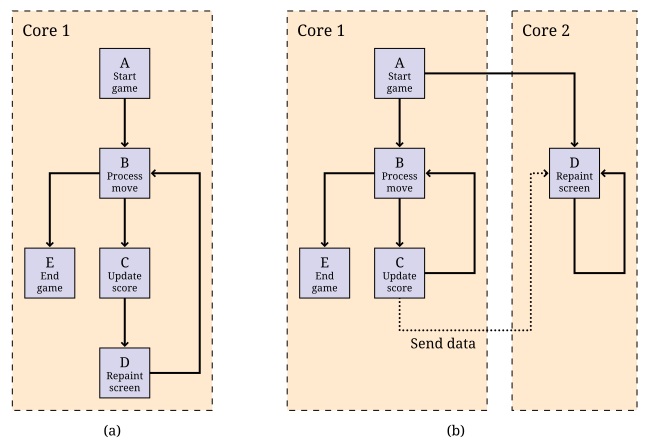
Suponha que as tarefas B e D sejam independentes e possam ser executadas simultaneamente se houver dois núcleos disponíveis. A tarefa D atualiza continuamente a tela com os dados antigos até que a tarefa C atualize as informações.
Figura 14.1(a) e (b) mostram como as tarefas desse videogame podem ser sequenciadas, respectivamente, em um único núcleo ou em dois núcleos. Todas as tarefas são executadas sequencialmente em um processador de núcleo único. Em um processador de núcleo duplo, as tarefas B e C podem ser executadas em um núcleo enquanto a tarefa D é executada simultaneamente em outro. Observe na figura que a tarefa C envia a pontuação e qualquer outros dados para a tarefa D, que atualiza continuamente a tela. Ter dois núcleos pode permitir uma atualização mais rápida da tela, pois o processador não precisa esperar que as tarefas B ou C sejam concluídas.
Suponha que precisemos avaliar a expressão matemática 2Kate-at² com os parâmetros a e K em um determinado valor de t. Podemos dividir a expressão em dois termos: 2Kat e e-at². Cada um desses termos pode ser atribuído a uma tarefa diferente para avaliação. Em um processador de dois núcleos, essas duas tarefas podem ser executadas em núcleos separados e os resultados de cada uma delas podem ser combinados para encontrar o valor da expressão para a tarefa principal.
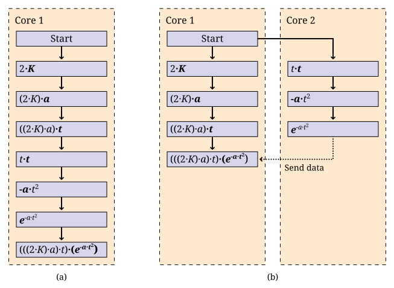
Figura 14.2 mostra como essa expressão pode ser avaliada em processadores de um núcleo e de dois núcleos. Às vezes, o uso de vários núcleos para avaliar uma expressão como essa levará menos tempo do que um único núcleo. No entanto, não há garantia de que o uso de vários núcleos sempre será mais rápido, pois as tarefas levam tempo para serem configuradas e para se comunicarem entre si.
Esses exemplos ilustram como uma tarefa pode ser dividida em duas ou mais subtarefas executadas por diferentes núcleos de um processador. Usamos um processador dual-core em nossos exemplos, mas as mesmas ideias podem ser expandidas para um número maior de núcleos.
14.3.2. Decomposição de domínio
Em um programa de computador, cada tarefa executa operações em dados. Esses dados são chamados de domínio dessa tarefa. Na decomposição do domínio, os dados são divididos em partes menores, em que cada parte é atribuída a um núcleo diferente, em vez de dividir uma tarefa em subtarefas. Assim, cada núcleo executa a mesma tarefa, mas em dados diferentes.
No exemplo do jantar, poderíamos ter usado a decomposição de domínio em vez de (ou além de) decomposição de tarefa. Se quiser cozinhar uma grande quantidade de purê de batatas, você mesmo pode descascar 24 batatas. Entretanto, se houver quatro pessoas (e cada uma delas tiver um descascador de batatas), cada pessoa precisará descascar apenas 6 batatas.
A estratégia de decomposição de domínio é muito útil e é um dos principais focos da simultaneidade neste livro. Os problemas da computação moderna geralmente usam dados maciços, que incluem milhões de valores ou milhares de registros de bancos de dados. Escrever programas que possam dividir os dados de modo que vários núcleos possam processar seções menores pode acelerar muito o tempo necessário para concluir o cálculo.
De certa forma, a decomposição de domínios pode ser mais difícil do que a decomposição de tarefas. Os dados devem ser divididos de maneira uniforme e justa. Depois que cada seção de dados tiver sido processada, os resultados deverão ser combinados. Empresas como o Google, que processam grandes quantidades de informações, desenvolveram uma terminologia para descrever esse processo. Dividir os dados e atribuí-los aos funcionários é chamado de etapa do mapa (map). A combinação das respostas parciais na resposta final é chamada de etapa de redução (reduce).
Ilustramos a estratégia de decomposição de domínio nos dois exemplos a seguir.
Suponha que queiramos aplicar a função f a cada elemento de uma matriz a e somar os resultados. Matematicamente, queremos calcular a seguinte soma.
Nessa fórmula, ai é o iésimo elemento da matriz a. Vamos supor que temos um processador dual-core disponível para calcular a soma. Dividimos a matriz de modo que cada núcleo execute a tarefa em metade da matriz. Sejam S1 e S2 denotem as somas calculadas pelo núcleo 1 e pelo núcleo 2, respectivamente.
Supondo que N seja uniforme, os dois núcleos processam exatamente a mesma quantidade de dados. Para N ímpar, um dos núcleos processa um item de dados a mais do que o outro.
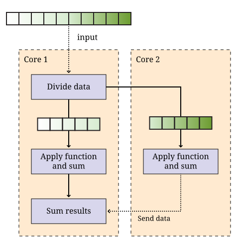
Depois que S1 e S2 tiverem sido computados, um dos núcleos pode somar esses dois números para obter S. Essa estratégia é ilustrada em Figura 14.3. Depois que os dois núcleos tiverem concluído seu trabalho em cada metade da matriz, as somas individuais são então somadas para produzir o resultado final.
A necessidade de multiplicar matrizes surge em muitas aplicações matemáticas, científicas e de engenharia. Suponha que nos peçam para escrever um programa para multiplicar duas matrizes quadradas A e B, que são ambas matrizes n × n. A matriz do produto C também será n × n. Um programa sequencial calculará cada elemento da matriz C um de cada vez. vez. Entretanto, um programa simultâneo pode calcular mais de um elemento de C simultaneamente usando vários núcleos.
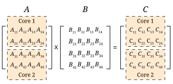
Neste problema, a tarefa é multiplicar as matrizes A e B. Por meio da decomposição de domínio, podemos replicar essa tarefa em cada núcleo. Conforme mostrado na Figura 14.4, cada núcleo calcula apenas uma parte de C. Por exemplo, se A e B forem 4 × 4, podemos pedir a um núcleo que calcule o produto das duas primeiras linhas de A com todas as quatro colunas de B para gerar as duas primeiras linhas de C. O segundo núcleo calcula as duas linhas restantes de C. Ambos os núcleos podem acessar as matrizes A e B.
14.3.3. Tarefas e threads
É responsabilidade do programador dividir sua solução em uma série de tarefas e subtarefas que serão executadas em um ou mais núcleos de um processador. Nas seções anteriores, descrevemos programas concorrentes como se tarefas específicas pudessem ser atribuídas a núcleos específicos, mas o Java não fornece uma maneira direta de fazer isso.
Em vez disso, um programador Java deve agrupar um conjunto de tarefas e subtarefas em uma thread. Uma thread é muito parecido com um programa sequencial. De fato, todos os programas sequenciais são compostos de uma única thread. Uma thread é um segmento de execução de código que percorre suas instruções passo a passo. Cada thread pode ser executado de forma independente. Se você tiver um processador de núcleo único apenas uma thread pode ser executada por vez, e todas as threads se revezarão. Se você tiver um processador com vários núcleos, tantas threads quantos forem os núcleos núcleos podem ser executados ao mesmo tempo. Não é possível escolher em qual núcleo uma determinada thread será executada. Na maioria dos casos, você não conseguirá nem mesmo saber qual núcleo uma determinada thread está usando.
Ele tem o cuidado de empacotar o conjunto certo de tarefas em uma única thread de execução. Lembre-se dos exemplos anteriores de programação concorrente neste capítulo.
Considere a possibilidade de dividir as tarefas em Exemplo 14.1 em duas threads. As tarefas B e C podem ser agrupadas na thread 1, e a tarefa D pode ser empacotada na thread 2.Essa divisão é mostrada em Figura 14.5(a).
As tarefas para avaliar diferentes subexpressões em Exemplo 14.2 também podem ser divididas em duas threads, conforme mostrado em Figura 14.5 (b). Em muitos problemas, há várias maneiras razoáveis de dividir um conjunto de subtarefas em threads.
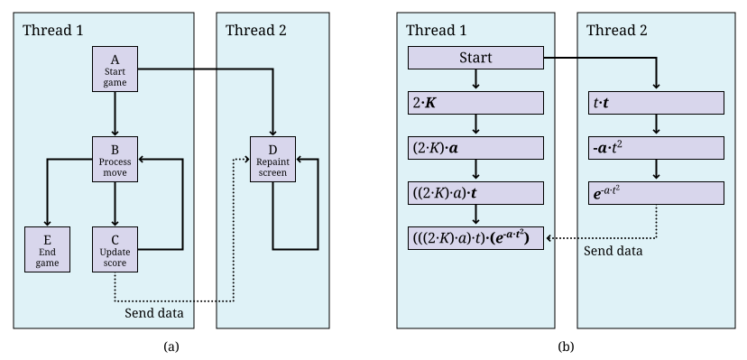
Observe que essas figuras são exatamente iguais às figuras anteriores, exceto que as tarefas são agrupadas como threads em vez de núcleos. Esse agrupamento corresponde melhor à realidade, pois podemos controlar como as tarefas são agrupadas em threads, mas não como elas são atribuídas aos núcleos.
Em ambos os exemplos, temos duas threads. É possível que alguma outra thread tenha iniciado a execução dessas threads. Todo programa Java, simultâneo ou
sequencial, começa com uma thread. Vamos nos referir a essa thread como a thread
main, pois ela contém o método main().
Exemplo 14.3 e Exemplo 14.4 usam várias tarefas idênticas, mas essas tarefas operam em dados diferentes. Em Exemplo 14.3, as duas tarefas podem ser atribuídas a duas threads que operam em diferentes partes da matriz de entrada. A tarefa de somar os resultados das duas threads pode ser uma thread separada ou uma subtarefa incluída em uma das outras threads. Em Exemplo 14.4, as duas tarefas podem novamente ser atribuídas a duas threads distintas que operam em diferentes partes diferentes da matriz de entrada A para gerar as partes correspondentes partes correspondentes da matriz de saída C.
Pode haver muitas maneiras de empacotar tarefas em threads. Também pode haver muitas maneiras de decompor os dados em pedaços menores. As melhores maneiras de executar essas subdivisões de tarefas ou dados dependem do problema em questão e da arquitetura do processador em que o programa será executado.
14.3.4. Arquiteturas de memória e concorrência
Os dois paradigmas mais importantes da programação concorrente são a passagem de mensagens e os sistemas de memória compartilhada. Cada paradigma lida com a comunicação entre as várias unidades de código executadas em paralelo de uma maneira diferente. Os sistemas de passagem de mensagens, como o MPI (Message Passing Interface), abordam esse problema enviando mensagens entre unidades de código independentes, chamadas de processos. Um processo que está executando uma tarefa pode ter de esperar até receber uma mensagem de outro processo para saber como proceder. As mensagens podem ser enviadas de um único processo para outro ou transmitidas para vários. Os sistemas de passagem de mensagens são especialmente úteis quando os processadores que executam o trabalho não compartilham memória.
Por outro lado, o sistema interno de concorrência em Java usa o paradigma de memória compartilhada. compartilhada. Em Java, um programador pode criar várias threads que compartilham o mesmo espaço de memória. Cada thread é um objeto que pode executar um trabalho. Descrevemos as threads como uma como uma forma de empacotar um grupo de tarefas, e os processos são outra forma. As pessoas usam o termo processos para descrever unidades de código em execução com memória separada e threads para descrever unidades de código em execução com memória compartilhada.
Quando você aprendeu a programar pela primeira vez, um dos maiores desafios foi provavelmente aprender a resolver um problema passo a passo. Cada linha do programa tinha de ser executada uma de cada vez, de forma lógica e deterministica. Os seres humanos não pensam naturalmente dessa forma. Temos a tendência de pular de uma coisa para outra, fazendo inferências e suposições, pensando em duas coisas não relacionadas ao mesmo tempo, e assim por diante. Como você sabe agora, só é possível escrever e depurar programas por causa da maneira metódica como eles funcionam.
Você pode imaginar a execução de um programa como uma seta que aponta para uma linha de código, depois a próxima, depois a próxima e assim por diante. Podemos pensar no movimento dessa seta como a thread de execução do programa.
O código faz o trabalho real, mas a seta mantém o controle de onde a
execução do programa está no momento. O código pode mover a seta
para frente, pode fazer aritmética básica, pode decidir entre escolhas com instruções pode fazer coisas repetidamente com loops, pode pular para um método e depois voltar. Uma única thread de execução pode fazer todas essas coisas, mas sua seta não pode estar em dois lugares ao mesmo tempo. Ela não pode
dividir dois números em uma parte do programa e avaliar uma declaração if em outra. No entanto, há uma maneira de dividir essa thread
de execução de modo que duas ou mais threads estejam executando partes diferentes
do programa, e a próxima seção mostrará como isso é feito em
Java.
14.4. Sintaxe: Threads em Java
14.4.1. A classe Thread
O Java, como muitas linguagens de programação, inclui os recursos necessários para para empacotar tarefas e subtarefas em threads. A classe Thread e suas subclasses fornecem as ferramentas para criar e gerenciar threads. Por exemplo, a definição de classe a seguir permite que objetos do tipo
ThreadedTask sejam criados. Esse objeto pode ser executado como uma thread separada.
public class ThreadedTask extends Thread {
// Adicionar construtor e corpo da classe
}O construtor é escrito como qualquer outro construtor, mas há um método especial
run() em Thread que pode ser substituído por qualquer uma das
suas subclasses. Esse método é o ponto de partida para a thread de execução associada a uma instância da classe. A maioria dos aplicativos Java
começa com uma única thread principal que é iniciado em um método main(). As threads adicionais devem começar em algum lugar, e esse lugar é o método
run(). Um aplicativo Java continuará a ser executado enquanto houver pelo menos uma thread ativa. O exemplo a seguir mostra duas threads,
cada uma avaliando uma subexpressão separada, como em Figura 14.5(b).
Vamos criar as classes Thread1 e Thread2. As threads de execução criadas por
instâncias destas classes calculam, respetivamente, as duas subexpressões da
Figura 14.5(b) e guardam os valores calculados.
public class Thread1 extends Thread {
private double K, a, t, value;
public Thread1(double K, double a, double t) {
this.K = K;
this.a = a;
this.t = t;
}
public void run() { value = 2*K*a*t; }
public double getValue() { return value; }
}public class Thread2 extends Thread {
private double a, t, value;
public Thread2(double a, double t) {
this.a = a;
this.t = t;
}
public void run() { value = Math.exp(-a*t*t); }
public double getValue() { return value; }
}O método run() em cada thread acima calcula uma subexpressão e salva seu
valor. Mostramos como essas threads podem ser executados para resolver o problema
da expressão matemática em Exemplo 14.6.
14.4.2. Criando um objeto thread
Criar um objeto a partir de uma subclasse Thread é o mesmo que criar
qualquer outro objeto em Java. Por exemplo, podemos instanciar a classe Thread1
acima para criar um objeto chamado thread1.
Thread1 thread1 = new Thread1(15.1, 2.8, 7.53);O uso da palavra-chave new para invocar o construtor cria um objeto Thread1,
mas não começa a executá-lo como uma nova thread. Como em todas as
outras classes, o construtor inicializa os valores dentro do novo objeto
objeto. Uma subclasse de Thread pode ter muitos construtores diferentes com
qualquer parâmetros que seu projetista considere apropriados.
14.4.3. Iniciando uma thread
Para iniciar a execução do objeto thread, seu método start() deve ser
chamado. Por exemplo, o objeto thread1 criado acima pode ser iniciado
da seguinte forma.
thread1.start();Uma vez iniciado, uma thread é executada de forma independente. A chamada do método start()
chama automaticamente o método run() do objeto nos bastidores.
Quando uma thread precisa compartilhar dados com outra thread, ela
pode ter que esperar.
14.4.4. Aguardando por uma thread
Muitas vezes, alguma thread, principal ou não, precisa esperar por outra thread
antes de prosseguir com sua execução. O método join() é usado para esperar
que uma thread termine a execução. Por exemplo, qualquer thread que executar o
código a seguir aguardará a conclusão da thread1.
thread1.join();A chamada join() é uma chamada bloqueante, o que significa que o código que chama
esse método aguardará até que ele retorne. Como ele pode lançar uma
InterruptedException verificada enquanto o código estiver aguardando, o método join()
é geralmente usado em um bloco try-catch. Podemos adicionar um bloco try-catch
ao exemplo thread1 para que possamos nos recuperar de
sermos interrompidos enquanto aguardamos a conclusão do thread1.
try {
System.out.println("Aguardando pela thread 1...");
thread1.join();
System.out.println("Thread 1 finalizada!");
}
catch (InterruptedException e) {
System.out.println("Thread 1 não acabou!");
}Observe que a InterruptedException é lançada porque a thread principal
foi interrompida enquanto aguardava a conclusão da thread1. Se a chamada join()
retornar, então thread1 deve ter terminado e informaremos o usuário.
Se uma InterruptedException for lançada, alguma thread externa deve ter
interrompido a thread principal, forçando-a a parar de esperar pela thread1.
In earlier versions of Java, there was a stop() method which would
stop an executing thread. Although this method still exists, it’s been
deprecated and shouldn’t be used because it can make a program behave
in an unexpected way.
Agora que temos a sintaxe para iniciar threads e esperar que eles terminem, podemos
usar as threads definidos em Exemplo 14.5 com uma thread principal
para criar nosso primeiro programa concorrente completo. A thread principal na
classe MathExpression cria e inicia as threads de trabalho thread1 e thread2
e aguarda sua conclusão. Quando as duas threads concluem sua execução, podemos
solicitar a cada uma delas o valor calculado. A thread principal imprime o
produto desses valores, que é o resultado da expressão que queremos avaliar.
public class MathExpression {
public static void main (String[] args) {
double K = 120, a = 1.2, t = 2;
Thread1 thread1 = new Thread1(K, a, t);
Thread2 thread2 = new Thread2(a, t);
thread1.start(); // Start thread1
thread2.start(); // Start thread2
try { // Wait for both threads to complete
thread1.join();
thread2.join();
System.out.println("Value of expression: " +
thread1.getValue()*thread2.getValue());
} catch (InterruptedException e) {
System.out.println("A thread didn't finish!");
}
}
}Queremos deixar absolutamente claro quando as threads são criadas, começam a execução e terminam. Esses detalhes são cruciais para os pontos mais finos da programação Java simultânea. Na Figura 14.5, parece que a execução da avaliação da expressão matemática começa com a Thread 1, que gera a Thread 2. Embora essa figura explique bem os conceitos básicos da decomposição de tarefas, os detalhes são mais confusos para o código Java real.
No código acima, a execução começa com o método main() em
MathExpression. Ele cria os objetos Thread1 e Thread2 e aguarda
que eles terminem. Em seguida, ele lê os valores dos objetos depois que
eles pararam de ser executados. Poderíamos ter colocado o método main() na classe Thread1, omitindo totalmente a classe MathExpression. Desta forma isso faria com que a execução correspondesse mais de perto à Figura 14.5
mais próxima, mas tornaria as duas subclasses Thread menos
simétricas: a thread principal e a thread1 executariam independentemente o código dentro da Thread1.
executariam independentemente o código dentro da classe Thread1, enquanto somente thread2 executaria
executaria código dentro da classe Thread2.
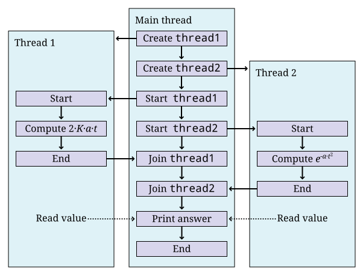
MathExpression, Thread1, and Thread2.Figura 14.6 mostra a execução de thread1 e
thread2 e a thread principal. Observe que a JVM cria e inicia implicitamente
o thread principal, que cria e inicia explicitamente a thread1 e a thread2.
Mesmo depois que as threads associados a thread1 e thread2 pararem de ser executados,
os objetos associados a eles continuam a existir. Seus métodos e campos ainda podem ser acessados.
14.4.5. A interface Runnable
Embora seja possível criar threads em Java herdando diretamente da classe
Thread diretamente, a API Java permite que o programador use uma
interface em vez disso.
Como exemplo, a classe Summer pega uma matriz de valores int e os soma dentro
de um determinado intervalo. Se várias instâncias dessa classe
forem executadas como threads separadas, cada uma delas poderá somar diferentes partes de
uma matriz.
public class Summer implements Runnable {
int[] array;
int lower;
int upper;
int sum = 0;
public Summer(int[] array, int lower, int upper) {
this.array = array;
this.lower = lower;
this.upper = upper;
}
public void run() {
for (int i = lower; i < upper; ++i) {
sum += array[i];
}
}
public int getSum() { return sum; }
}Essa classe é muito semelhante a uma classe que herda de Thread. Imagine
por um momento que o código que segue Summer é extends Thread
em vez de implements Runnable. A principal coisa que uma classe derivada de
Thread precisa é de um método run() sobrescrito. Como somente o método run()
é importante, os projetistas do Java forneceram uma maneira de criar uma
thread usando a interface Runnable. Para implementar essa interface, é necessário apenas
um método public void run().
Ao criar uma nova thread, há algumas diferenças de sintaxe entre os dois estilos. A maneira conhecida de criar e executar um thread a partir de uma subclasse Thread é a seguinte.
Summer summer = new Summer(array, lower, upper);
summer.start();Como o Summer não herda de Thread, ele não tem um método start(), e esse código não será compilado. Quando uma classe apenas implementa Runnable, ainda é necessário criar um objeto Thread e chamar seu método start(). Portanto, é necessária uma etapa extra.
Summer summer = new Summer(array, lower, upper);
Thread thread = new Thread(summer);
thread.start();Essa forma alternativa de implementar a interface Runnable parece mais incômoda do que herdar diretamente da Thread, já que é necessário
instanciar um objeto Thread separado. Entretanto, a maioria dos desenvolvedores prefere projetar classes que implementem Runnable em vez de herdar de
Thread. Por quê? O Java só permite herança única. Se sua classe
implementar Runnable, ela estará livre para herdar de outra super classe
com os recursos que você desejar.
Na decomposição de domínios, muitas vezes precisamos criar várias threads, todas a partir da mesma classe. Como exemplo, considere a seguinte declaração de thread.
public class NumberedThread extends Thread {
private int value;
public NumberedThread(int input) { value = input; }
public void run() {
System.out.println("Thread " + value);
}
}Agora, suponha que desejemos criar 10 objetos de thread do tipo
NumberedThread, então iniciá-los e por fim esperar que sejam concluídos.
NumberedThread[] threads = new NumberedThread[10]; (1)
for (int i = 0; i < threads.length; i++) {
threads[i] = new NumberedThread(i); (2)
threads[i].start(); (3)
}
try {
for(int i = 0; i < threads.length; i++)
threads[i].join(); (4)
} catch(InterruptedException e) {
System.out.println("A thread didn't finish!");
}| 1 | Primeiro, declaramos uma matriz para manter referências aos objetos NumberedThread. Como qualquer outro tipo, podemos criar uma matriz para armazenar objetos que
herdam de Thread. |
| 2 | A primeira linha do loop for instancia um novo objeto NumberedThread, invocando o construtor que armazena a
iteração atual do loop no campo value. A referência a
cada objeto NumberedThread é armazenada na matriz. Lembre-se de que o construtor
não inicia a execução de uma nova thread. |
| 3 | A segunda linha do loop for faz isso. |
| 4 | Também estamos interessados em saber quando as threads param. A chamada do método join()
força a thread principal a aguardar a conclusão de cada thread. |
Todo o segundo loop for está aninhado dentro de um bloco try. Se a thread principal for interrompida enquanto estiver aguardando a conclusão de qualquer uma das threads terminar, uma InterruptedException será capturada. Como antes, avisamos o usuário
que uma thread não foi concluída. Para código com qualidade de produção, o bloco
bloco catch deve tratar a exceção de forma que a thread possa se recuperar e fazer um trabalho útil, mesmo que não tenha obtido o resultado esperado.
14.5. Exemplos: Concorrência e aceleração
A aceleração é uma das maiores motivações para escrever programas concorrentes. Para entender o aumento de velocidade, vamos supor que temos um problema para resolver. Escrevemos dois programas para resolver esse problema, um que é sequencial e outro que é concorrente e, portanto, capaz de explorar vários núcleos. Seja ts o tempo médio de execução do o programa sequencial e tc o tempo médio de execução do programa concorrente. Para que a comparação seja significativa, suponha que ambos os programas sejam executados no mesmo computador. O aumento de velocidade obtido com a programação concorrente é definido como ts/tc.
A aceleração mede quanto tempo leva para o programa concorrente ser executado em relação ao programa sequencial. Idealmente, esperamos que tc < ts, tornando a aceleração maior que 1. No entanto, simplesmente escrever um programa concorrente não garante que ele seja mais rápido do que a versão sequencial.
Para determinar o aumento de velocidade, precisamos medir ts e tc. O
tempo em um programa Java pode ser facilmente medido com
os dois métodos estáticos a seguir na classe System.
public static long currentTimeMillis()
public static long nanoTime()O primeiro desses métodos retorna a hora atual em milissegundos (ms).
Um millisecond equivale a 0,001 segundos. Esse método fornece a diferença
entre a hora atual no relógio de seu computador e a meia-noite de
1º de janeiro de 1970, horário universal coordenado (UTC). Esse ponto no tempo é
usado para muitos recursos de tempo em muitas plataformas de computador e é chamado de epoch Unix. O outro método retorna a hora atual em
nanossegundos (ns). Um nanossegundo equivale a 0,000000001 ou 10-9 segundos.
Esse método também fornece a diferença entre a hora atual e uma hora fixa, que depende do sistema e não necessariamente do epoch.
O método System.nanoTime() pode ser usado quando você quiser uma precisão de tempo
mais fina do que milissegundos; entretanto, o nível de precisão que ele retorna é
novamente dependente do sistema. O próximo exemplo mostra como usar esses métodos
para medir o tempo de execução.
Suponha que desejemos medir o tempo de execução de um trecho de código Java. Por conveniência, podemos supor que esse código esteja contido no método work(). O trecho de código a seguir mede o tempo de execução de
work().
long start = System.currentTimeMillis();
work();
long end = System.currentTimeMillis();
System.out.println("Tempo decorrido: " + (end - start) + " ms");A saída fornecerá o tempo de execução de work() medido em
milissegundos. Para obter o tempo de execução em nanossegundos, use o método
System.nanoTime() em vez de System.currentTimeMillis().
Agora que temos as ferramentas para medir o tempo de execução, podemos medir o aumento de velocidade. Os próximos exemplos mostram o aumento de velocidade (ou a falta dele) que podemos podemos obter usando uma solução simultânea para alguns problemas simples.
Lembre-se do programa concorrente em Exemplo 14.6 para avaliar uma expressão matemática simples. Esse programa usa duas threads. Executamos esse programa multithread em um computador iMac com um Intel Core 2 Duo rodando a 2,16 Ghz. O tempo de execução O tempo de execução foi medido em 1.660.000 nanossegundos. Também escrevemos um programa programa sequencial simples para avaliar a mesma expressão. Foram necessários 4.100 nanossegundos para executar esse programa no mesmo computador. Ao inserir esses valores para tc e ts, podemos encontrar a aceleração.
Essa aceleração é muito menor que 1. Embora esse resultado possa ser surpreendente, o programa concorrente com duas threads é executado mais lentamente do que o programa sequencial. Nesse exemplo, o custo de criar, executar e processar as threads supera os benefícios do cálculo simultâneo em dois núcleos.
Em Exemplo 14.3, apresentamos o problema de aplicar uma função a cada valor em uma matriz e depois somar os resultados. Digamos que queiramos aplicar a função seno a cada valor. Para resolver esse problema de forma concorrente, particionamos a matriz uniformemente entre várias threads, usando a estratégia de decomposição de domínio. Cada thread encontra a soma dos senos dos valores em sua parte da matriz. Um fator que determina se conseguimos ou não velocidade é a complexidade da função, nesse caso o seno, que aplicamos. aplicamos. Embora possamos obter um aumento de velocidade com o seno, uma função mais simples como dobrar o valor pode não gerar trabalho suficiente para justificar a sobrecarga do uso de threads.
Criamos a classe SumThread cujo método run() soma os senos dos
elementos da matriz em sua partição atribuída.
import java.util.Random;
public class SumThread extends Thread {
private double sum = 0.0; (1)
private final int lower;
private final int upper;
private final double[] array; (2)
public static final int SIZE = 1000000; (3)
public static final int THREADS = 8;
public SumThread(double[] array, int lower, int upper) { (4)
this.array = array;
this.lower = lower;
this.upper = upper;
}| 1 | Primeiro, configuramos todos os campos de que a classe precisará. |
| 2 | Observe que cada objeto SumThread terá sua própria referência à matriz de dados. |
| 3 | Fixamos o tamanho da matriz em 1.000.000 e o número de threads em 8, mas esses valores podem ser facilmente alterados ou lidos como entrada. |
| 4 | Em seu construtor, um SumThread recebe uma referência à matriz de dados
e os limites inferior e superior de sua partição. Como a maioria dos
intervalos que discutimos, o limite inferior é inclusivo, embora o limite superior
seja exclusivo. |
public void run() {
for (int i = lower; i < upper; ++i) {
sum += Math.sin(array[i]); (1)
}
}
public double getSum() { return sum; } (2)| 1 | No loop for do método run(), a SumThread encontra o seno
de cada número em sua partição da matriz e adiciona esse valor à sua
soma. |
| 2 | O método getSum() é um acessório que permite que a soma em execução seja
seja recuperada. |
public static void main(String[] args) {
double[] data = new double[SIZE]; (1)
Random random = new Random();
int start = 0;
for (int i = 0; i < SIZE; ++i) { (2)
data[i] = random.nextDouble();
}
SumThread[] threads = new SumThread[THREADS];
int quotient = data.length / THREADS;
int remainder = data.length % THREADS;
for (int i = 0; i < THREADS; ++i) {
int work = quotient;
if (i < remainder) {
++work;
}
threads[i] = new SumThread(data, start, start + work); (3)
threads[i].start(); (4)
start += work;
} | 1 | O método main() começa instanciando a matriz. |
| 2 | Ele o preenche com valores aleatórios. |
| 3 | Em seguida, cada thread é criado passando uma referência para o vetor e os limites inferior e superior que marcam a partição da thread na matriz. Se o processo que usa o comprimento da matriz e o número de threads para determinar os limites superior e inferior não fizer sentido, consulte Seção 6.11 que descreve a divisão justa do trabalho para as threads. Se o comprimento da matriz não for divisível pelo número de threads, a divisão simples não será suficiente. |
| 4 | Depois que cada thread é criada, seu método start() é chamado. |
double sum = 0.0; (1)
try {
for (int i = 0; i < THREADS; ++i) {
threads[i].join(); (2)
sum += threads[i].getSum(); (3)
}
System.out.println("Sum: " + sum); (4)
} catch (InterruptedException e) {
e.printStackTrace(); (5)
}
}
}| 1 | Depois que as threads começam a trabalhar, a thread principal cria seu próprio total em execução. |
| 2 | Ele itera através de cada thread esperando que seja concluído. |
| 3 | Quando cada thread é concluída, seu valor é adicionado ao ao total em execução. |
| 4 | Finalmente, a soma é impressa. |
| 5 | Se a thread principal for interrompida enquanto estiver aguardando a conclusão de uma thread, o rastreamento da pilha será impresso. |
Em Exemplo 14.4, discutimos a a importância das operações de matriz em muitos aplicativos. Agora que conhecemos a sintaxe Java necessária, podemos escrever um programa concorrente para multiplicar duas matrizes quadradas A e B e calcular a matriz resultante C. Se essas matrizes tiverem n linhas e n colunas, o valor na iésima linha e j^^ coluna de C é
Em Java, é natural armazenarmos as matrizes como matrizes bidimensionais.
Para fazer essa multiplicação sequencialmente, a abordagem mais simples usa três
loops for aninhados. O código abaixo é uma tradução direta da
notação matemática, mas temos de ter cuidado com a contagem.
Observe que a notação matemática geralmente usa letras maiúsculas para
para representar matrizes, embora a convenção Java seja iniciar todos os nomes de variáveis
com letras minúsculas.
for(int i = 0; i < c.length; i++)
for(int j = 0; j < c[i].length; j++)
for(int k = 0; k < b.length; k++)
c[i][j] += a[i][k] * b[k][j];A primeira etapa para criar uma solução concorrente para esse problema é
criar uma subclasse Thread que fará alguma parte da
multiplicação da matriz. Abaixo está a classe MatrixThread que calculará um
número de linhas na matriz de resposta c.
public class MatrixThread extends Thread {
private double[][] a;
private double[][] b;
private double[][] c;
private int lower;
private int upper;
public MatrixThread(double[][] a, double[][] b, (1)
double[][] c, int lower, int upper) {
this.a = a;
this.b = b;
this.c = c;
this.lower = lower;
this.upper = upper;
}
public void run() { (2)
for (int i = lower; i < upper; ++i) {
for (int j = 0; j < c[i].length; ++j) {
for (int k = 0; k < b.length; ++k) {
c[i][j] += a[i][k] * b[k][j];
}
}
}
}
}| 1 | O construtor de MatrixThread armazena referências às matrizes
correspondentes às matrizes A, B e C, bem como os limites inferior e superior das linhas de
C a serem computadas. |
| 2 | O corpo do método run() é idêntico ao da solução sequencial, exceto pelo fato de que seu loop mais externo é executado somente de
lower a upper em vez de percorrer todas as linhas do resultado.
É fundamental que a cada thread seja atribuído um conjunto de linhas que não se
se sobreponha às linhas que outra thread possui. Não só o fato de
várias threads calcularem a mesma linha seria ineficiente, mas muito provavelmente levaria
a um resultado incorreto, como veremos em
ch14-synchronization.html. |
O código cliente a seguir usa uma matriz de objetos MatrixThread para
realizar uma multiplicação de matriz. Supomos que uma constante int denominada
THREADS tenha sido definida, o que dá o número de threads que queremos criar.
MatrixThread[] threads = new MatrixThread[THREADS];
int quotient = c.length / THREADS;
int remainder = c.length % THREADS;
int start = 0;
for (int i = 0; i < THREADS; i++) {
int rows = quotient;
if (i < remainder)
rows++;
threads[i] = new MatrixThread(a, b, c, start, start + rows); (1)
threads[i].start(); (2)
start += rows;
}
try {
for (int i = 0; i < THREADS; i++) (3)
threads[i].join();
} catch (InterruptedException e) {
e.printStackTrace();
}| 1 | Fazemos um loop pela matriz, criando um objeto MatrixThread para cada
posição. Como no exemplo anterior, usamos a abordagem descrita em
Seção 6.11 para alocar linhas para cada thread de forma justa.
Cada novo objeto MatrixThread recebe uma referência a cada uma das três
matrizes, bem como uma linha inicial inclusiva e uma linha final exclusiva. |
| 2 | Depois que os objetos MatrixThread são criados, começamos a executá-los com a próxima linha de código. |
| 3 | Em seguida, há um loop for familiar com as chamadas join()
que forçam a thread principal a esperar que as outras threads terminem. |
Presumivelmente,
o código após esse trecho imprimirá os valores da matriz de resultados
ou a usará para outros cálculos. Se não tivermos usado as chamadas join()
para garantir que as threads tenham terminado, poderíamos imprimir uma matriz de resultados que foi preenchida apenas parcialmente.
Concluímos o código da multiplicação de matrizes com threads e o executamos em um computador iMac com um Intel Core 2 Duo rodando a 2,16 Ghz. O programa foi executado para matrizes de diferentes tamanhos (n × n). Para cada tamanho, os tempos de execução sequencial e concorrente em segundos e o tempo de execucação correspondente estão listados na tabela a seguir.
| Size (n) | ts (s) | tc (s) | Speedup |
|---|---|---|---|
100 |
0.013 |
0.9 |
0.014 |
500 |
1.75 |
4.5 |
0.39 |
1,000 |
15.6 |
10.7 |
1.45* |
Somente com matrizes de 1.000 × 1.000 observamos um melhor desempenho ao usar duas threads. Nesse caso, obtivemos um aumento de velocidade de 1,45, marcado com um asterisco. Nos outros dois casos, o desempenho piorou.
14.6. Conceitos: Agendamento de thread
Agora que vimos como várias threads podem ser usadas juntas, várias perguntas surgem: Quem decide quando essas threads são executadas? Como o tempo do processador é compartilhado entre as threads? Podemos fazer alguma suposição sobre a ordem de execução das threads? Podemos afetar essa ordem?
Essas perguntas se concentram no agendamento de threads. Como diferentes sistemas concorrente lidam com o agendamento de forma diferente, descreveremos apenas o agendamento em Java. Embora a programação sequencial tenha tudo a ver com o controle preciso sobre o que acontece depois, a concorrência tira grande parte desse controle do programador. Quando as threads são agendadas e em qual processador eles são executados, isso é feito por uma combinação da JVM e do sistema operacional. Com as JVMs normais, não há uma maneira explícita de acessar o agendamento e alterá-lo a seu seu agrado.
Obviamente, há várias maneiras implícitas pelas quais um programador pode manipular a a programação. Em Java, como em várias outras linguagens e sistemas de programação, as threads têm prioridades. As threads de prioridade mais alta são executadas com mais frequência do que as de prioridade mais baixa. Algumas threads estão executando operações de missão crítica que devem ser executadas o mais rápido possível, e algumas threads estão apenas realizando tarefas periódicas em segundo plano. Um programador pode definir as prioridades das threads de acordo com essas prioridades.
A definição de prioridades oferece apenas uma maneira muito geral de controlar
qual thread será executada. As próprias threads podem ter informações mais específicas
sobre quando precisarão ou não de tempo de processador. A thread pode precisar esperar
por um evento específico e não precisará ser executada
até lá. O Java permite que as threads interajam com o agendador por meio dos
métodos Thread.sleep() e Thread.yield(), que discutiremos em Seção 14.7 e
por meio do método wait(), que discutiremos em ch14-synchronization.html.
14.6.1. Não determinismo
Em Java, o mapeamento de uma thread dentro da JVM para uma thread no sistema operacional varia. Algumas implementações dão a cada thread Java uma thread do sistema operacional, outras colocam todas as threads Java em uma única thread do sistema operacional (com o efeito colateral de impedir a execução paralela), e algumas permitem a possibilidade de alterar qual thread do sistema operacional uma thread Java usa. Assim, o desempenho e, em alguns casos, a correção de seu programa podem variar, dependendo do sistema que você estiver executando. Esse é, mais uma vez, um daqueles momentos em que o Java é independente de plataforma… mas não totalmente.
Infelizmente, a situação é ainda mais complicada. Tornar as threads parte de seu programa significa que o mesmo programa pode ser executado de forma diferente no mesmo sistema. A JVM e o sistema operacional precisam cooperar para agendar as threads e ambos os programas são montanhas complexas de código que tentam equilibrar muitos fatores. Se você criar três threads, não há garantia que o primeiro será executado primeiro, o segundo segundo e o terceiro terceiro, mesmo que isso aconteça nas primeiras 10 vezes em que você executar o programa. O Exercício 14.18 mostra que o padrão de execução das threads pode variar muito.
Em todos os programas anteriores a este capítulo, a mesma sequência de entrada sempre produziria a mesma sequência de saída. Talvez o maior obstáculo criado por esse não determinismo seja o fato de os programadores terem de mudar seu paradigma consideravelmente. O processador pode alternar entre execuções de de threads a qualquer momento, mesmo no meio das operações. Todas as possíveis intercalações de execução de thread pode surgir em algum momento. A menos que você tenha certeza de que seu programa se comporta adequadamente em todos eles, talvez você nunca conseguirá depurar seu código completamente. O que é tão insidioso nos bugs não determinísticos é que eles podem ocorrer raramente e ser quase impossíveis de reproduzir. Neste capítulo, apresentamos como criar e executar threads, mas fazer com que essas threads interajam adequadamente é um problema importante que abordaremos nos capítulos seguintes.
Depois dessas terríveis palavras de advertência, gostaríamos de lembrá-lo de que o não determinismo não é em si uma coisa ruim. Muitos aplicativos com threads com muitas entradas e saídas, como os servidores de aplicação, necessariamente existem em um mundo não determinístico. Para esses programas, muitas diferentes sequências de threads em execução podem ser perfeitamente válidas. Cada programa individual pode ter uma definição diferente de correção. Por exemplo, se um servidor do mercado de ações receber duas solicitações para comprar a última ação de uma determinada empresa quase ao mesmo tempo de duas threads correspondentes a dois clientes diferentes, pode ser correto que qualquer um deles obtenha a última ação. No entanto, nunca seria correto que ambos a recebam.
14.6.2. Votação
Até agora, o único mecanismo que introduzimos para coordenar diferentes
threads é usar o método join() para aguardar o término de uma thread.
Outra técnica é polling, ou busy waiting. A ideia é continuar
verificando o estado de uma thread até que ela mude.
Há vários problemas com essa abordagem. O primeiro é que ela desperdiça ciclos da CPU. Os ciclos gastos pela thread em espera continuamente poderiam ter sido usados de forma produtiva por alguma outra thread no sistema. O segundo problema é que precisamos ter certeza de que o estado da thread que estamos esperando não voltará ao estado original ou para algum outro estado. Devido à imprevisibilidade do agendamento, não há garantia de que a thread em espera lerá o estado da outra thread quando ela tiver o valor correto.
Mencionamos a votação em parte porque ela tem uma importância histórica para a programação paralela, em parte porque pode ser útil na solução de alguns problemas deste capítulo e, em parte, porque queremos que você entenda os motivos pelos quais precisamos de técnicas melhores para a comunicação entre threads.
14.7. Sintaxe: Estados da thread
Uma ferramenta Java amplamente utilizada para manipular o agendamento é o método Thread.sleep(). Esse método pode ser chamado sempre que você quiser que uma
thread não faça nada por um determinado período de tempo. Até que o temporizador sleep
expire, a thread não será agendada para nenhum tempo de CPU, a menos que seja
interrompida. Para fazer uma thread de execução dormir, chame Thread.sleep()
nessa thread de execução com um número de milissegundos como parâmetro. Por exemplo, chamar Thread.sleep(2000) fará com que a
thread chamada dormirá por dois segundos completos.
Outra ferramenta útil é o método Thread.yield(). Ele abre mão do uso da
CPU para que a próxima thread em espera possa ser executada. Para usá-lo, uma thread
chama Thread.yield(). Esse método é útil na prática, mas
de acordo com a documentação oficial, a JVM não tem que fazer nada quando
um Thread.yield() é executado. A especificação Java não exige uma implementação
específica. Uma JVM poderia ignorar uma chamada
chamada Thread.yield() completamente, mas a maioria das JVMs passará para a
próxima thread no cronograma.
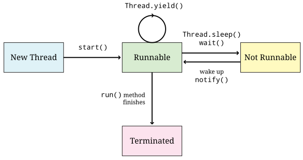
Figura 14.7 mostra o ciclo de vida de uma thread. A
thread começa sua vida no estado New Thread, depois que o construtor
é chamado. Quando o método start() é chamado, a thread começa a ser executada
e faz a transição para o estado Runnable. Ser executável não significa
necessariamente que a thread está sendo executada em um determinado momento, mas
que ela está pronta para ser executada a qualquer momento. Quando estiver no
estado Runnable, uma thread pode chamar Thread.yield(), deixando de usar o processador,
mas ainda permanecerá Runnable.
No entanto, se uma thread for dormir com uma chamada Thread.sleep(), aguardará
para que uma condição seja verdadeira usando uma chamada wait() ou executar uma operação de
de E/S bloqueante, a thread fará a transição para o estado Not Runnable. As
threads não executáveis não podem ser agendadas para o tempo de processador até que
acordem, terminem de esperar ou concluam sua E/S. O estado final é
Terminated. Uma thread se torna terminada quando seu método run()
termina. Uma thread terminada não pode se tornar executável novamente e
não é mais uma thread de execução separado.
Qualquer objeto com um tipo que seja uma subclasse de Thread pode informar seu
estado atual usando o método getState(). Esse método retorna um tipo enum, cujo
valor deve vir de uma lista fixa de objetos constantes. Esses objetos são Thread.State.NEW,
Thread.State.RUNNABLE, Thread.State.BLOCKED, Thread.State.WAITING,
Thread.State.TIMED_WAITING e Thread.State.TERMINATED. Embora os outros sejam
autoexplicativos, agrupamos o Thread.State.BLOCKED,
Thread.State.WAITING e Thread.State.TIMED_WAITING no estado Not Runnable, já que
a distinção entre os três não é importante para nós.
As threads também têm prioridades em Java. Quando um objeto que é uma subclasse
de Thread é criado em Java, sua prioridade é inicialmente a mesma da thread que o cria.
Normalmente, essa prioridade é Thread.NORM_PRIORITY, mas há alguns casos especiais em que é uma
boa ideia aumentar ou diminuir essa prioridade. Evite alterar as prioridades de thread
porque isso aumenta a dependência da plataforma e porque os efeitos nem sempre são previsíveis. Esteja
ciente de que as prioridades existem, mas não as use a menos que você tenha um bom motivo.
Vamos aplicar as ideias discutidas acima a um exemplo leve. Você
talvez esteja familiarizado com o som de soldados marchando: “Esquerda, esquerda, esquerda,
direita, esquerda!” Podemos criar uma thread que imprima "Esquerda" e outra que imprima "Direita".
Podemos combinar as duas para imprimir a sequência correta
para marchar e repetir tudo 10 vezes para que possamos
ver com que precisão podemos posicionar as palavras. Queremos usar as ferramentas de agendamento
discutidas acima para obter o tempo correto. Vamos tentar Thread.sleep()
first.
public class LeftThread extends Thread {
public void run() {
for (int i = 0; i < 10; ++i) {
System.out.print("Left "); (1)
System.out.print("Left ");
System.out.print("Left ");
try {
Thread.sleep(10); (2)
} catch (InterruptedException e) {
e.printStackTrace();
}
System.out.println("Left"); (3)
}
}
}| 1 | Dentro do loop for, essa thread imprime Left três vezes. |
| 2 | Em seguida, ele aguarda 10 milissegundos. |
| 3 | Finalmente, ele imprime Esquerda novamente e repete o loop. |
public class RightThread extends Thread {
public void run() {
try {
Thread.sleep(5); (1)
for (int i = 0; i < 10; ++i) {
System.out.print("Right "); (2)
Thread.sleep(10); (3)
}
} catch (InterruptedException e) {
e.printStackTrace();
}
}
}| 1 | Essa thread aguarda 5 milissegundos para ser sincronizada. |
| 2 | Dentro de seu loop for, ele imprime Right. |
| 3 | Em seguida, ela aguarda 10 milissegundos e repete o loop. |
O programa de driver abaixo cria uma thread para cada uma dessas
classes e, em seguida, as inicia. Se você executar esse programa, verá 10
linhas de Left Left Left Right Left, mas há alguns problemas.
public class MilitaryMarching {
public static void main(String[] args) {
LeftThread left = new LeftThread();
RightThread right = new RightThread();
left.start();
right.start();
try {
left.join();
right.join();
} catch (InterruptedException e) {
e.printStackTrace();
}
}
}O primeiro problema é que temos que esperar algum tempo entre as
chamadas. Poderíamos encurtar as chamadas Thread.sleep(), mas há limites
na resolução do cronômetro. O maior problema é que as duas
threads podem, às vezes, ficar fora de sincronia. Se você executar o programa muitas
vezes, você poderá ver um Right fora do lugar de vez em quando. Se você
aumentar as repetições dos loops for para um número maior, os
erros se tornarão mais prováveis. O fato de você ver ou não os erros depende um
depende do sistema. Podemos tentar Thread.yield() em vez de Thread.sleep().
public class LeftYieldThread extends Thread {
public void run() {
for (int i = 0; i < 10; ++i) {
System.out.print("Left ");
System.out.print("Left ");
System.out.print("Left ");
Thread.yield();
System.out.println("Left");
}
}
}public class RightYieldThread extends Thread {
public void run() {
for (int i = 0; i < 10; ++i) {
System.out.print("Right ");
Thread.yield();
}
}
}Essas novas versões das duas classes basicamente substituíram as chamadas para
Thread.sleep() por chamadas para Thread.yield(). Sem a necessidade de
tratamento de exceções, o código é mais simples, mas trocamos um conjunto de
problemas por outro. Se houver outras threads operando na mesma aplicação, eles
serão agendadas de forma a interferir no padrão de rendimento. Se você estiver
executando esse código em uma máquina
com um único processador e um único núcleo, você terá uma boa chance de
ver algo que corresponda ao resultado esperado. No entanto, se estiver executando
em vários núcleos, tudo ficará confuso. É provável que
a LeftYieldThread esteja sendo executada em um processador com a
RightYieldThread em outro. Nesse caso, nenhuma delas tem concorrência
para ceder.
Por fim, vamos dar uma olhada em uma solução de pesquisa de opinião que ainda não é suficiente. Para fazer isso, precisamos de variáveis de estado dentro de cada classe para para saber se ela foi concluída ou não. Cada thread precisa de uma referência para a outra thread para fazer consultas, e o programa controlador deve ser atualizado para adicioná-las antes de iniciar as threads.
public class LeftPollingThread extends Thread {
private RightPollingThread right;
private boolean done = false;
public void setRight(RightPollingThread right) {
this.right = right;
}
public void run() {
for (int i = 0; i < 10; ++i) {
System.out.print("Left ");
System.out.print("Left ");
System.out.print("Left ");
done = true;
while (!right.isDone());
right.setDone(false);
System.out.println("Left");
}
}
public boolean isDone() { return done; }
public void setDone(boolean value) { done = value; }
}public class RightPollingThread extends Thread {
private LeftPollingThread left;
private boolean done = false;
public void setLeft(LeftPollingThread left) {
this.left = left;
}
public void run() {
for (int i = 0; i < 10; ++i) {
while (!left.isDone());
left.setDone(false);
System.out.print("Right ");
done = true;
}
}
public boolean isDone() { return done; }
public void setDone(boolean value) { done = value; }
}Seja com um único núcleo ou com vários núcleos, essa solução sempre fornecerá
a saída correta. Ou deveria. Os especialistas em Java apontarão que estamos
violando um aspecto técnico do modelo de memória Java. Como não estamos
usando ferramentas de sincronização, não temos garantia de que a alteração da variável
done será sequer visível de uma thread para outra. Na prática, esse
problema raramente o afetará, mas, por segurança, ambas as variáveis
as variáveis done devem ser declaradas com a palavra-chave volatile.
Essa palavra-chave faz com que o Java saiba que o valor pode ser acessado
a qualquer momento por threads arbitrárias.
Outro problema é que não há nenhuma execução paralela. Cada thread deve esperar
para que o outro seja concluído.É claro que esse problema não se beneficia de
paralelismo, mas aplicar essa solução a problemas que podem se beneficiar do
paralelismo pode causar problemas de desempenho. Cada thread
desperdiça tempo ocupado esperando em um loop while que o outro seja concluído,
consumindo ciclos de CPU enquanto faz isso. Você perceberá que o código
ainda deve ser escrito com cuidado. Cada thread deve definir o valor`done` da
outra thread para false. Se as threads fossem responsáveis por definir seus
próprios valores done para false, uma thread poderia imprimir suas
informações e voltar para o topo da tabela for antes que a outra thread
tivesse redefinido seu próprio done para false.
Em resumo, a coordenação de duas ou mais threads é um problema difícil. Nenhuma das soluções que apresentamos aqui é totalmente aceitável. Nós apresentamos ferramentas melhores para coordenação e sincronização em ch14-synchronization.html.
14.8. Solução: Vírus mortal
Por fim, apresentamos a solução para o problema do vírus mortal. A essa altura, a
parte da thread desse problema não deve parecer muito difícil.
Ela é mais simples do que alguns dos exemplos, como a multiplicação de matrizes.
Começamos com a classe de trabalho FactorThread que pode ser gerada como uma thread.
public class FactorThread extends Thread {
private long lower;
private long upper;
public FactorThread(long lower, long upper) {
this.lower = lower;
this.upper = upper;
}
public void run() {
if (lower % 2 == 0) { // Only check odd numbers
++lower;
}
while (lower < upper) {
if (Factor.NUMBER % lower == 0) {
System.out.println("Security code: " + (lower + Factor.NUMBER / lower));
return;
}
lower += 2;
}
}
}O construtor do FactorThread recebe um limite superior e um limite inferior,
semelhante ao MatrixThread. Quando um objeto FactorThread tiver esses
limites, ele poderá pesquisar entre eles. O número a ser fatorado é armazenado
na classe Factor. Se qualquer valor dividir esse número igualmente, ele deverá ser
um dos fatores, o que facilita a localização, a soma e a impressão do outro fator,
e imprimir. Temos que adicionar algumas linhas extras de código para garantir que
vamos procurar apenas os números ímpares no intervalo. Essa solução foi ajustada
para eficiência para esse problema específico de segurança. Um programa para
encontrar fatores primos em geral teria de ser mais flexível. A seguir, vamos
examinar o programa controle Factor.
public class Factor {
public static final int THREADS = 4; (1)
public static final long NUMBER = 59984005171248659L;
public static void main(String[] args) {
FactorThread[] threads = new FactorThread[THREADS]; (2)
long root = (long)Math.sqrt(NUMBER); // Go to square root
long start = 3; // No need to test 2
long quotient = root / THREADS;
long remainder = root % THREADS;
for (int i = 0; i < THREADS; ++i) {
long work = quotient;
if (i < remainder) {
++work;
}
threads[i] = new FactorThread(start, start + work); (3)
threads[i].start();
start += work;
}
try {
for (int i = 0; i < THREADS; ++i) {
threads[i].join(); (4)
}
} catch (InterruptedException e) {
e.printStackTrace();
}
}
}| 1 | As constantes estáticas mantêm o número a ser fatorado e o número de threads. |
| 2 | No método main(), criamos uma matriz de threads para
armazenamento. |
| 3 | Em seguida, criamos e iniciamos cada objeto FactorThread, atribuindo limites
superior e inferior ao mesmo tempo, usando a técnica padrão de
Seção 6.11 para dividir o trabalho de forma justa. Como nós
sabemos que o número que estamos dividindo não é par, começamos com 3.
Ao chegar à raiz quadrada do número, sabemos que encontraremos apenas o menor dos
dois fatores. Dessa forma, podemos evitar que uma thread encontre o menor enquanto outro encontra a maior. |
| 4 | Em seguida, temos as chamadas join() usuais para garantir que todas as
threads foram concluídas. Nesse problema, essas chamadas são desnecessárias.
Uma thread imprimirá o código de segurança correto e as outras
procurarão sem sucesso. Se o programa continuar a fazer outro trabalho, talvez seja
precisaríamos deixar as outras threads terminarem ou até mesmo interrompê-las.
Não se esqueça das chamadas join(), pois elas costumam ser muito importantes. |
14.9. Resumo
Neste capítulo, exploramos duas estratégias para obter uma solução concorrente para problemas de programação. Uma estratégia, a decomposição de tarefas, divide uma tarefa em duas ou mais subtarefas. Essas subtarefas podem então ser empacotadas como threads Java e executadas em diferentes núcleos de um processador com vários núcleos. Outra estratégia, decomposição de domínio, divide os dados de entrada em pedaços menores e permite que diferentes threads trabalhem de forma concorrente em cada pedaço de dados.
Uma solução concorrente para um problema de programação pode, às vezes, ser executada mais rapidamente do que uma solução sequencial. A velocidade mede a eficácia de uma solução concorrente é eficaz na exploração da arquitetura de um processador com vários núcleos. Observe que nem todos os programas concorrentes levam a um aumento de velocidade, pois alguns são executados mais lentamente do que os sequenciais. Escrever um programa concorrente é um desafio que nos força a dividir o trabalho e os dados de uma forma que explore melhor os processadores e o sistema operacional disponível.
O Java oferece um rico conjunto de primitivos e elementos sintáticos para escrever programas concorrentes, mas apenas alguns deles foram apresentados neste capítulo. Os capítulos seguintes fornecem ferramentas adicionais para codificar programas concorrentes mais complexos.
14.10. Exercícios
Problemas conceituais
-
Os métodos
start(),run()ejoin()são partes essenciais do processo de uso de threads em Java. Explique a finalidade de cada método. -
Qual é a diferença entre estender a classe
Threade implementar a interfaceRunnable? Quando você deve usar uma em vez da outra? -
Como o método
Thread.sleep()e o métodoThread.yield()afetam o agendamento de threads? -
Considere a expressão em Exemplo 14.2. Suponha que as operações de multiplicação e exponenciação exijam 1 e 10 unidades de tempo, respectivamente. Calcule o número de unidades de tempo necessárias para avaliar a expressão como em Figura 14.2(a) e (b).
-
Suponha que um computador tenha um processador quad-core. As tarefas em Exemplo 14.1 e Exemplo 14.2 podem ser subdivididas para melhorar o desempenho em quatro núcleos? Por que sim ou por que não?
-
Considere a definição de velocidade de Seção 14.5. Vamos supor que você tenha um trabalho com 1.000.000 de unidades de tamanho. Uma thread pode processar 10.000 unidades de trabalho a cada segundo. São necessárias 100 unidades adicionais de trabalho para criar uma nova thread. Qual é o aumento de velocidade se você tiver um processador dual-core e criar 2 threads? E se você tiver um processador quad-core e criar 4 threads? Ou um processador de 8 núcleos e criar 8 threads? Você pode presumir que uma thread não precisa se comunicar depois de ter sido criada.
-
Em que situações a velocidade pode ser menor do que o número de processadores? É possível que o velocidade seja maior do que o número de processadores?
-
A Lei de Amdahl é uma descrição matemática do valor máximo que você pode melhorar em um sistema melhorando apenas uma parte dele. Uma forma dessa lei afirma que o aumento máximo de velocidade que pode ser obtido em um programa paralelo é 1/(1 - P), em que P é a fração do programa que pode ser paralelizada em um grau arbitrário. Se 30% do trabalho em um programa puder ser totalmente paralelizado, mas o restante é totalmente serial, qual é o aumento de velocidade com dois processadores? Quatro? Oito? Quais são as implicações da Lei de Amdahl?
-
Considere a seguinte tabela de tarefas:
Tarefa Tempo Concorrência Dependência Lavar pratos
30
3
Cozinhar o jantar
45
3
Lavar pratos
Limpar o quarto
10
2
Limpar o banheiro
30
2
Fazer a tarefa
30
1
Limpar o quarto
Nessa tabela, a coluna Tempo fornece o número de minutos que uma tarefa leva para ser executada com uma única pessoa, a coluna Concorrente o número máximo de pessoas que podem ser atribuídas a uma tarefa, e a coluna Dependência mostra quais tarefas não podem ser iniciadas até que outras tarefas tenham sido concluídas. Suponha que as pessoas atribuídas a uma determinada tarefa possam dividir perfeitamente o trabalho. Em outras palavras, o tempo que uma tarefa leva é o tempo de uma única pessoa dividido pelo número de pessoas designadas. Qual é o mínimo de tempo necessário para executar todas as tarefas com apenas uma pessoa? Qual é o tempo mínimo necessário para executar todas as tarefas com um número ilimitado de pessoas? Qual é o menor número de pessoas necessárias para atingir esse tempo mínimo?
-
Considere o seguinte trecho de código.
x = 13; x = x * 10;Considere também este trecho.
x = 7; x = x + x;Se presumirmos que esses dois trechos de código estão sendo executados em threads mas que
xé uma variável compartilhada, quais são os valores possíveis quexpoderia ter após a execução dos dois trechos? Lembre-se de que a execução desses trechos pode ser intercalada de qualquer maneira.
Práticas de programação
-
Implemente novamente o problema de soma de matriz de Exemplo 14.10 usando
pollingem vez das chamadasjoin(). Seu programa não deve usar uma única chamada parajoin(). A votação não é a maneira ideal de resolver esse problema, mas vale a pena pensar nessa técnica. -
Os compositores geralmente trabalham com várias faixas de música. Uma faixa pode conter vocais solo, outra bateria, uma terceira violinos, e assim por diante. Depois de gravar toda a faixa, um engenheiro de mixagem pode querer aplicar efeitos especiais, como eco, em uma ou mais faixas.
Para entender como adicionar eco a uma trilha, suponha que a trilha consiste em uma lista de amostras de áudio. Cada amostra em uma trilha mono (não estéreo) pode ser armazenada como um
doubleem uma matriz. Para criar um efeito de co, combinamos o valor atual de uma amostra de áudio com uma amostra de um tempo fixo anterior. Esse tempo é chamado de parâmetro delay. Variando o atraso pode produzir ecos longos e curtos.Se as amostras forem armazenadas na matriz
ine o parâmetro de atraso for armazenado na variáveldelay(medido em número de amostras), o seguinte trecho de código pode ser usado para criar a matrizoutque contém o som com um eco.double[] out = new double[in.length + delay]; // Sound before echo starts for(int i = 0; i < delay; i++) out[i] = in[i]; // Sound with echo for(int i = delay; i < in.length; i++) out[i] = a*in[i] + b*in[i - delay]; // Echo after sound is over for(int i = in.length; i < out.length; i++) out[i] = b*in[i - delay];Os parâmetros
aebsão usados para controlar a natureza do eco. Quandoaé1ebé0, não há eco. Quandoaé0ebé1, não há mixagem. Os engenheiros de áudio controlam os valores deaebpara criar o efeito de eco desejado.Escreva um programa com threads que calcule os valores em
outem paralelo para um número arbitrário de threads. -
Escreva um programa que receba um número de minutos e segundos como entrada. Nesse programa, implemente um cronômetro usando chamadas
Thread.sleep(). A cada segundo, imprima o tempo restante na tela. Qual é a precisão do seu cronômetro? -
Como você sabe, π ≈ 3.1416. Um valor mais preciso pode ser encontrado escrevendo um programa que aproxima a área de um círculo. A área de um círculo pode ser aproximada pela soma da área dos retângulos que preenchem a curva do arco do círculo. À medida que a largura do retângulo chega a zero, a aproximação fica cada vez mais próxima da área real. Se um círculo com raio r estiver centralizado na origem, sua altura y em uma determinada distância x é dada pela seguinte fórmula.
Escreva uma implementação paralela desse problema que divida partes do arco do círculo entre várias threads e, em seguida, soma os resultados os resultados depois que todos eles terminarem. Ao definir r = 2, você precisa somar apenas um quadrante de um círculo para obter π. Você precisará usar uma largura de retângulo muito pequena para obter uma resposta precisa. Quando seu programa terminar de ser executado, você poderá comparar seu valor com
Math.PIpara verificar a precisão.
Experimentos
-
Use o método
currentTimeMillis()para medir o tempo necessário para executar um trecho de código Java de execução relativamente longa que você escreveu. código Java de execução relativamente longa que você escreveu. Execute seu programa várias vezes e compare o tempo de execução obtido durante as diferentes execuções. Por que você acha que os tempos de execução são diferentes? -
A sobrecarga de criação de thread é uma consideração importante ao escrever programas paralelos eficientes. Escreva um programa que cria um grande número de threads que não fazem nada. Teste quanto tempo leva para criar e unir vários números de threads. Veja se você pode determinar quanto tempo uma única operação de criação de thread leva em seu sistema, em média.
-
Crie implementações em série e concorrente da multiplicação de matrizes como as descritas em Exemplo 14.11.
-
Faça experiências com diferentes tamanhos de matriz e contagens de threads para ver como o desempenho da aceleração muda. Se possível, execute seus testes em máquinas com diferentes números de núcleos ou processadores.
-
Em uma máquina com k > 1 núcleos, qual é a de velocidade máxima que você pode esperar obter?
-
-
Execute repetidamente o código em Exemplo 14.7 que cria vários objetos
NumberedThread. Você consegue descobrir algum padrão na ordem em que as threads imprimem? Adicione um loop e alguma instrumentação adicional à classeNumberedThreadque permitirá que você meça quanto tempo cada thread é executado antes que a próxima thread tenha uma vez. -
Crie implementações seriais e paralelas do problema de soma de matrizes resolvido em Exemplo 14.10. Faça experiências com diferentes tamanhos de matriz e contagens de threads para ver como o desempenho muda. Como o aumento de velocidade difere da multiplicação de matrizes? O que acontece se você simplesmente somar os números em vez de obter o seno primeiro?
-
A solução para o problema de soma de matrizes em Exemplo 14.10 parece usar a concorrente sem entusiasmo. Depois que todas as threads calcularam suas somas, a thread principal soma as somas parciais sequencialmente.
Uma abordagem alternativa é somar as somas parciais de forma concorrente. Depois que uma thread tenha calculado a soma dos senos de cada partição, as somas de cada par de partições vizinhas devem ser mescladas em uma única soma. O processo pode ser repetido até que a soma final tenha sido calculada. Em cada etapa, metade das threads restantes não terá mais nada a fazer e parará. O padrão de soma é como uma árvore que começa com k threads trabalhando na primeira etapa, k/2 trabalhando no segundo estágio, k/4 trabalhando no terceiro, e assim por diante, até que uma única thread conclua o processo de soma.
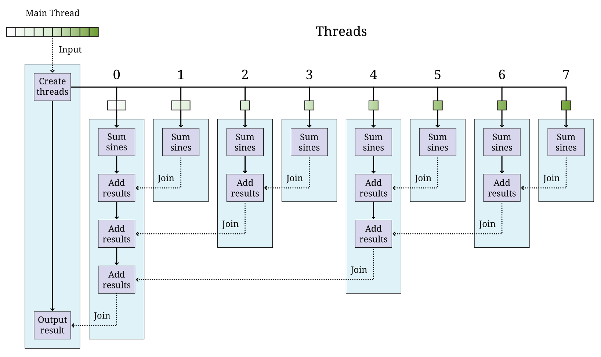
Figura 14.8 Exemplo de soma concorrente em estilo de árvore com 8 threads.Atualize o método
run()na classeSumThreadpara que ele adicione seus elementos atribuídos como antes e, em seguida, adicione a soma de seu vizinho à sua própria soma. Para isso, ele deve usar o métodojoin()para aguardar a thread vizinha. vizinha. Ele deve executar esse processo repetidamente. Após somar seus valores, cada thread de número par deve adicionar a soma parcial de seu vizinho. Na próxima etapa, cada thread com um número divisível por 4 deve adicionar a soma parcial de seu vizinho. Na próxima etapa, cada thread E na etapa seguinte, cada thread com um número divisível por 8 deve adicionar a soma parcial de seu vizinho, e assim por diante. s thread 0 realizará a soma final. Consequentemente, a thread principal só precisa esperar pela thread 0. Para que cada thread possa esperar por outras threads, a matrizthreadsprecisará ser um campo estático. ser um campo estático. A Figura 14.8 ilustra esse processo.Depois de implementar esse design, teste-o com a classe
SumThreadoriginal para ver o seu desempenho. Restrinja o número de threads que você criar a uma potência de 2 para facilitar a determinação de quais threads esperam e quais threads terminam.
Capítulo 15. Synchronization
Sharing is sometimes more demanding than giving.
15.1. Introduction
Concurrent programs allow multiple threads to be scheduled and executed, but the programmer doesn’t have a great deal of control over when threads execute. As explained in [Concepts: Thread scheduling], the JVM and the underlying OS are responsible for scheduling threads onto processor cores.
While writing a concurrent program, you have to ensure that the program will work correctly even though different executions of the same program will likely lead to different sequences of thread execution. The problem we introduce next illustrates why one thread execution sequence might be perfectly fine while another might lead to unexpected and incorrect behavior. (And even people starving!)
15.2. Problem: Dining philosophers
Concurrency gives us the potential to make our programs faster but introduces a number of other problems. The way that threads interact can be unpredictable. Because they share memory, one thread can corrupt a value in another thread’s variables. We introduce synchronization tools in this chapter that can prevent threads from corrupting data, but these tools create new pitfalls. To explore these pitfalls, we give you another problem to solve.
Imagine a number of philosophers sitting at a round table with plates that are periodically filled with rice. Between adjacent philosophers are single chopsticks so that there are exactly the same number of chopsticks as there are philosophers. These philosophers only think and eat. In order to eat, a philosopher must pick up both the chopstick on her left and the chopstick on her right. Figura 15.1 illustrates this situation.
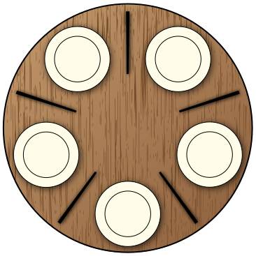
Your goal is to write a class called DiningPhilosopher which extends
Thread. Each thread created in the main() method should be a
philosopher who thinks for some random amount of time, then acquires the
two necessary chopsticks and eats. No philosopher should starve. No
philosophers should be stuck indefinitely fighting over chopsticks.
Although this problem sounds simple, the solution is not. Make sure that you understand the concepts and Java syntax in this chapter thoroughly before trying to implement your solution. It’s important that no two philosophers try to use the same chopstick at the same time. Likewise, we need to avoid a situation where every philosopher is waiting for every other philosopher to give up a chopstick.
15.3. Concepts: Thread interaction
This dining philosopher problem highlights some difficulties which were emerging toward the end of the last chapter. In Exercício 14.10 two snippets of code could run concurrently and modify the same shared variable, potentially producing incorrect output. Because of the nondeterministic nature of scheduling, we have to assume that the code executing in two or more threads can be interleaved in any possible way. When the result of computation changes depending on the order of thread execution, it’s called a race condition. Below is a simple example of a race condition in Java.
public class RaceCondition extends Thread {
private static int counter = 0;
public static final int THREADS = 4;
public static final int COUNT = 1000000;
public static void main(String[] args) {
RaceCondition[] threads = new RaceCondition[THREADS];
for (int i = 0; i < THREADS; ++i) {
threads[i] = new RaceCondition();
threads[i].start();
}
try {
for (int i = 0; i < THREADS; ++i) {
threads[i].join();
}
} catch (InterruptedException e) {
e.printStackTrace();
}
System.out.println("Counter:\t" + counter);
}
public void run() {
for (int i = 0; i < COUNT/THREADS; ++i) {
++counter;
}
}
}This short (and pointless) class attempts to increment the variable
counter until it reaches 1000000. To illustrate the race condition,
we’ve divided the work of incrementing counter evenly among a number
of threads. If you run this program, the final value of counter will
often not be 1000000. Depending on which JVM, OS, and how many cores
you have, you may never get 1000000, and the answer you do get will
vary a lot. On all systems, if you change the value of THREADS to 1,
the answer should always be correct.
Looking at the code, the problem might not be obvious. Everything
centers on the statement ++counter in the for loop inside the
run() method. But, this statement appears to execute in a single step!
Each thread should increase the value of counter a total of
COUNT/THREADS times, adding up to 1000000. The trouble is that
++counter is not a single step. Recall that ++counter is shorthand
for counter = counter + 1. To be even more explicit we could write it
as follows.
temp = counter;
counter = temp + 1;One thread might get as far as storing counter into a temporary
location, but before it can add 1, another thread continues to perform
operations. When that’s the case, this next thread may do a series of
increments to count which are all overwritten when the first thread
executes again. Because the first thread had an old value of counter
stored in temp, adding 1 to temp has the effect of ignoring
increments that happened in the interim. This situation can happen on a single
processor with threads switching back and forth, but it’s even more dangerous
on a multicore system.
The primary lesson here is that threads can switch between each other at any time with unpredictable effects. The secondary lesson is that the source code is too coarse-grained to show atomic operations. An atomic operation is one which happens in a single step and cannot be interrupted by a context switch to another thread. The actual code that the JVM runs is much lower level than source code.
We can’t easily force a non-atomic operation to be atomic, but there are
ways to restrict access to certain pieces of code under certain
conditions. The name we give to a piece of code which should not be
accessed by more than one thread at a time is a critical section. In
the example above, the single line of code which increments counter is
a critical section, and the error in the program would be removed if
only one thread were able to run that line of code at a time.
Protecting a critical section is done with mutual exclusion tools. They’re called mutual exclusion tools because they enforce the requirement that one thread executing a critical section excludes the possibility of another. There are many different techniques, algorithms, and language features in computer science which can be used to create mutual exclusion. Java relies heavily on a tool called a monitor which hides some of the details of enforcing mutual exclusion from the user. Mutual exclusion is a deeply researched topic with many approaches other than monitors. If you plan to write concurrent programs in another language, you may need to brush up on its mutual exclusion features.
15.4. Syntax: Thread synchronization
15.4.1. The synchronized keyword
In Java, the language feature which allows you to enforce mutual
exclusion is the synchronized keyword. There are two ways to use this
keyword: with a method or with an arbitrary block of code. In the method
version, you add the synchronized modifier before the return type.
Let’s imagine a class with a private String field called message
which is set to be "Will Robinson!" by the constructor. Now, we define
the following method.
public synchronized void danger() {
message = "Danger, " + message;
}If danger() is called five times from different threads, message
will contain
"Danger, Danger, Danger, Danger, Danger, Will Robinson!" Without the
synchronized keyword, danger() would suffer from a race condition
similar to the one in RaceCondition. Some of the String
concatenations might be overwritten by other calls to danger(). You
would never have more than five copies of "Danger, " appended to the
beginning of message, but you might have fewer.
Any time a thread enters a piece of code protected by the synchronized
keyword, it implicitly acquires a lock which only a single thread can
hold. If another thread tries to access the code, it’s forced to wait
until the lock is released. This lock is re-entrant. Re-entrant means
that, when a thread currently holds a lock and tries to get it again, it
succeeds. This situation frequently occurs with synchronized methods
which call other synchronized methods.
Consider method safety() which does the “opposite” of danger(), by
removing occurrences of "Danger, " from the beginning of message.
public synchronized void safety() {
if (message.startsWith("Danger, ")) {
message = message.substring(8);
}
}Will the danger() and safety() methods play nicely together on the
same object? In other words, will a thread be blocked from entering
safety() if another thread is already in danger()? Yes! The locks
in Java are connected to objects. When you use the synchronized keyword on a
method, the object the method is being called on (whichever object
this refers to inside the method) serves as the lock. Thus, only one
thread can be inside of either of these methods on a given object. If you have 10
synchronized methods in an object, only one of them can execute at a
time for that object.
Perhaps this level of control is too restrictive. You might have six
methods which conflict with each other and four others which conflict
with each other but not the first six. Using synchronized in each
method declaration would unnecessarily limit the amount of concurrency
your program could have.
Although it takes a little more work, using synchronized with a block
of code allows more fine-grained control. The following version of
danger() is equivalent to the earlier one.
public void danger() {
synchronized (this) {
message = "Danger, " + message;
}
}Using synchronized on a block of code gives us more flexibility in two
ways. First, we can choose exactly how much code we want to control,
instead of the whole method. Second, we can choose which object we want
to use for synchronization. For the block style, any arbitrary object
can be used as a lock. Objects keep a list of threads which are waiting
to get the lock and do all the other management needed to make the
synchronized keyword work.
If you have two critical sections which are unrelated to each other, you can use the fine-grained control the block style provides. First, you’ll need some objects to use as locks, probably declared so that they can easily be shared, perhaps as static fields of a class.
private static Object lock1 = new Object();
private static Object lock2 = new Object();Then, wherever you need control over concurrency, you use them as locks.
synchronized (lock1) {
// Do dangerous thing 1
}
// Do safe things
synchronized (lock2) {
// Do dangerous thing 2, unrelated to dangerous thing 1
}Since declaring a method with synchronized is equivalent to having its
body enclosed in a block beginning with synchronized (this), what about
static methods? Can they be synchronized? Yes, they can. Whenever a
class is loaded, Java creates an object of type Class which
corresponds to that class. This object is what synchronized static
methods inside the class will use as a lock. For example, a synchronized
static method inside of the Eggplant class will lock on the object
Eggplant.class.
15.4.2. The wait() and notify() methods
Protecting critical sections with the synchronized keyword is a
powerful technique, and many other synchronization tools can be built
using just this tool. However, efficiency demands a few more options.
Sometimes a thread is waiting for another thread to finish a task so
that it can process the results. Imagine one thread collecting votes
while another one’s waiting to count them. In this example, the
counting thread must wait for all votes to be cast before it can begin
counting. We could use a synchronized block and an indicator boolean
called votingComplete to allow the collector thread to signal to the
counting thread.
while (true) {
synchronized (this) {
if (votingComplete) {
break;
}
}
}
countVotes();What’s the problem with this design? The counting thread is
running through the while loop over and over waiting for
votingComplete to become true. On a single processor, the counting
thread would slow down the job of the collecting thread which is trying
to process all the votes. On a multicore system, the counting thread is
still wasting CPU cycles that some other thread could use. This
phenomenon is known as busy waiting, for obvious reasons.
To combat this problem, Java provides the wait() method. When a thread’s
executing synchronized code, it can call wait(). Instead of busy
waiting, a thread which has called wait() will be removed from the
list of running threads. It will wait in a dormant state until someone
comes along and notifies the thread that its waiting is done. If you
recall the thread state diagram from Capítulo 14,
there’s a Not Runnable state which threads enter by
calling sleep(), calling wait(), or performing blocking I/O. Using
wait(), we can rewrite the vote counting thread.
synchronized (this) {
while (!votingComplete) {
wait();
}
}
countVotes();Note that the while loop has moved inside the synchronized block.
Doing so before might have kept our program from terminating: As long as
the vote counting thread held the lock, the vote collecting thread would
not be allowed to modify votingComplete. When a thread calls wait(),
however, it gives up the corresponding lock it’s holding until it wakes
up and runs again. Why use the while loop at all now? There’s no
guarantee that the condition you’re waiting for is true. Many threads
might be waiting on this particular lock. We use the while loop to check
that votingComplete is true and wait again if it isn’t.
In order to notify a waiting thread, the other thread calls the
notify() method. Like wait(), notify() must be called within a
synchronized block or method. Here is corresponding code the vote
collecting thread might use to notify the counting thread that voting is
complete.
// Finish collecting votes
synchronized (this) {
votingComplete = true;
notifyAll();
}A call to notify() will wake up one thread waiting on the lock object.
If there are many threads waiting, the method notifyAll() used above
can be called to wake them all up. In practice, it’s usually safer to
call notifyAll(). If a particular condition changes and a single
waiting thread is notified, that thread might need to notify the next
waiting thread when it’s done. If your code isn’t very carefully
designed, some thread might end up waiting forever and never be notified
if you only rely on notify().
To illustrate the use of wait() and notify() calls inside of
synchronized code, we give a simple solution to the producer/consumer
problem below. This problem is a classic example in the concurrent
programming world. Often one thread (or a group of threads) is
producing data, perhaps from some input operation. At the same time, one
thread (or, again, a group of threads) is taking these chunks of
data and consuming them by performing some computational or output task.
Every resource inside of a computer is finite. Producer/consumer problems often assume a bounded buffer which stores items from the producer until the consumer can take them away. Our solution does all synchronization on this buffer. Many different threads can share this buffer, but all accesses will be controlled.
public class Buffer {
public final static int SIZE = 10;
private final Object[] objects = new Object[SIZE];
private int count = 0;
public synchronized void addItem(Object object) throws InterruptedException { (1)
while (count == SIZE) { (2)
wait();
}
objects[count] = object;
++count;
notifyAll(); (3)
}
public synchronized Object removeItem() throws InterruptedException { (4)
while (count == 0) { (5)
wait();
}
--count;
Object object = objects[count];
notifyAll(); (6)
return object;
}
}| 1 | When adding an item, producers enter the synchronized addItem()
method. |
| 2 | If count shows that the buffer is full, the producer must wait
until the buffer has at least one open space. |
| 3 | After adding an item to the buffer, the producer then notifies all waiting threads. |
| 4 | The consumer
performs mirrored operations in removeItem(). |
| 5 | A consumer thread can’t consume anything if the buffer is empty and must then wait. |
| 6 | After there’s an object to consume, the consumer removes it and notifies all other threads. |
Both methods are synchronized, making access to the buffer completely sequential. Although it seems undesirable, sequential behavior is precisely what’s needed for the producer/consumer problem. All synchronized code is a protection against unsafe concurrency. The goal is to minimize the amount of time spent in synchronized code and get threads back to parallel execution as quickly as possible.
Although producer/consumer is a good model to keep in mind, there are other ways that reading and writing threads might interact. Consider the following programming problem, similar to one you might find in real life.
As a rising star in a bank’s IT department, you’ve been given the job
of creating a new bank account class called SynchronizedAccount. This
class must have methods to support the following operations: deposit,
withdraw, and check balance. Each method should print a status message
to the screen on completion. Also, the method for withdraw should return
false and do nothing if there are insufficient funds. Because the
latest system is multi-threaded, these methods must be designed so that
the bookkeeping is consistent even if many threads are accessing a
single account. No money should magically appear or disappear.
There’s an additional challenge. To maximize concurrency,
SynchronizedAccount should be synchronized differently for read and
write accesses. Any number of threads should be able to
check the balance on an account simultaneously, but only one thread can
deposit or withdraw at a time.
To solve this problem, our implementation of the class has a balance
variable to record the balance, but it also has a readers variable to
keep track of the number of threads which are reading from the account
at any given time.
public class SynchronizedAccount {
private double balance = 0.0;
private int readers = 0; Next, the getBalance() method is called by threads which wish to read
the balance.
public double getBalance() throws InterruptedException {
double amount;
synchronized (this) { (1)
++readers;
}
amount = balance; (2)
synchronized (this) {
if (--readers == 0) { (3)
notifyAll(); (4)
}
}
return amount;
}| 1 | Access to the readers variable is synchronized. |
| 2 | After passing that first synchronized block, the code which stores the
balance is no longer synchronized. In this way, multiple readers can access
the data at the same time. For this example, the concurrency controls we
have are overkill. The command amount = balance does not take a great
deal of time. If it did, however, it would make sense for readers to
execute it concurrently as we do. |
| 3 | After reading the balance, this method
decrements readers. |
| 4 | If readers reaches 0, a call to notifyAll() is
made, signaling that threads trying to deposit to or withdraw from the
account can continue. |
public void deposit(double amount) throws InterruptedException {
changeBalance(amount);
System.out.println("Deposited $" + amount + ".");
}
public boolean withdraw(double amount)
throws InterruptedException {
boolean success = changeBalance(-amount);
if (success) {
System.out.println("Withdrew $" + amount + ".");
} else {
System.out.println("Failed to withdraw $" +
amount + ": insufficient funds.");
}
return success;
}The deposit() and withdraw() methods are wrappers for the
changeBalance() method, which has all the interesting concurrency
controls.
protected synchronized boolean changeBalance(double amount) (1)
throws InterruptedException {
boolean success;
while (readers > 0) { (2)
wait();
}
if (success = (balance + amount > 0)) { (3)
balance += amount;
}
return success;
}
}| 1 | The changeBalance() method is synchronized so that it can have
exclusive access to the readers variable. It’s also marked protected
because SynchronizedAccount will be used as a parent class in
Capítulo 18. |
| 2 | As long as readers is
greater than 0, this method will wait. |
| 3 | Eventually, the readers should finish their job and notify the waiting writer which can finish changing the balance of the account. |
15.5. Pitfalls: Synchronization challenges
As you can see from the dining philosophers problem, synchronization tools help us get the right answer but also create other difficulties.
15.5.1. Deadlock
Deadlock is the situation when two or more threads are both waiting for the others to complete, forever. Some combination of locks or other synchronization tools has forced a blocking dependence onto a group of threads which will never be resolved.
Researchers have discovered four conditions which must exist for deadlock to happen.
-
Mutual Exclusion: Only one thread can access the resource (often a lock) at a time.
-
Hold and Wait: A thread holding a resource can ask for additional resources.
-
No Preemption: A thread holding a resource cannot be forced to release it by another thread.
-
Circular Wait: Two or more threads hold resources which make up a circular chain of dependency.
We illustrate deadlock with an example of how not to solve the dining philosophers problem. What if all the philosophers decided to pick up the chopstick on her left and then the chopstick on her right? If the timing was just right, each philosopher would be holding one chopstick in her left hand and be waiting forever for her neighbor on the right to give up a chopstick. No philosopher would ever be able to eat. Here’s that scenario illustrated in code.
public class DeadlockPhilosopher extends Thread {
public static final int SEATS = 5; (1)
private static final boolean[] chopsticks = new boolean[SEATS]; (2)
private final int seat;
public DeadlockPhilosopher(int seat) { (3)
this.seat = seat;
}| 1 | We define a constant for the number of seats. |
| 2 | We create a shared boolean array called chopsticks so that all philosophers
can know which chopsticks are in use. |
| 3 | The constructor assigns each philosopher a seat number. |
public static void main(String[] args) {
DeadlockPhilosopher[] philosophers = new DeadlockPhilosopher[SEATS];
for (int i = 0; i < SEATS; ++i) {
philosophers[i] = new DeadlockPhilosopher(i);
philosophers[i].start(); (1)
}
try {
for (int i = 0; i < SEATS; ++i) {
philosophers[i].join(); (2)
}
} catch (InterruptedException e) {
e.printStackTrace();
}
System.out.println("All philosophers done.");
}| 1 | In main(), we create and start a thread for each
philosopher. |
| 2 | Then, we wait for them to finish which, sadly, will never happen. |
After setting up the class and the main() method, things get interesting
in the run() method.
public void run() {
try {
getChopstick(seat); (1)
Thread.sleep(50); (2)
getChopstick((seat + 1) % SEATS); (3)
} catch (InterruptedException e) {
e.printStackTrace();
}
eat();
}| 1 | First a philosopher tries to get her left chopstick. |
| 2 | Then she sleeps for 50 milliseconds. |
| 3 | Finally, she tries to get her right chopstick. We mod by SEATS so that the
last philosopher will try to get the chopstick at the beginning of the array. |
Without sleeping, this code would usually run just fine. Every once in a while, the philosophers would become deadlocked, but it would be hard to predict when. By introducing the sleep, we can all but guarantee that the philosophers will deadlock every time.
The remaining two methods are worth examining to see how the synchronization is done, but by getting the two chopsticks separately above, we’ve already gotten ourselves into trouble.
private void getChopstick(int location) throws InterruptedException {
synchronized (chopsticks) {
while (chopsticks[location]) {
chopsticks.wait();
}
chopsticks[location] = true;
}
System.out.println("Philosopher " + seat +
" picked up chopstick " + location + ".");
}
private void eat() {
// Done eating, put back chopsticks
synchronized (chopsticks) {
chopsticks[seat] = false;
chopsticks[(seat + 1) % SEATS] = false;
chopsticks.notifyAll();
}
}
} Here’s another example of deadlock. We emphasize deadlock because it’s one of the most common and problematic issues with carelessly using synchronization.
Consider two threads which both need access to two separate resources.
In our example, the two resources are random number generators. The goal
of each of these threads is to acquire locks for the two shared random
number generators, generate two random numbers each, and sum the numbers
generated. (Note that locks are totally unnecessary for this problem
since access to Random objects is synchronized.)
import java.util.Random;
public class DeadlockSum extends Thread {
private static final Random random1 = new Random();
private static final Random random2 = new Random();
private final boolean reverse;
private int sum;The class begins by creating shared static Random objects
random1 and random2. Then, in the main() method, the main thread
spawns two new threads, passing true to one and false to the other.
public static void main(String[] args) {
Thread thread1 = new DeadlockSum(true);
Thread thread2 = new DeadlockSum(false);
thread1.start();
thread2.start();
try {
thread1.join();
thread2.join();
} catch (InterruptedException e) {
e.printStackTrace();
}
}Next, the mischief begins to unfold. One of the two threads stores
true in its reverse field.
public DeadlockSum(boolean reverse) {
this.reverse = reverse;
}Finally, we have the run() method where all the action happens. If the
two running threads were both to acquire locks for random1 and random2 in
the same order, everything would work out fine. However, the reversed
thread locks on random2 and then random1, with a sleep() in
between. The non-reversed thread tries to lock on random1 and then
random2.
public void run() {
if (reverse) {
synchronized (random2) {
System.out.println("Reversed Thread: locked random2");
try { Thread.sleep(50);
} catch (InterruptedException e) {
e.printStackTrace();
}
synchronized (random1) {
System.out.println("Reversed Thread: locked random1");
sum = random1.nextInt() + random2.nextInt();
}
}
} else {
synchronized (random1) {
System.out.println("Normal Thread: locked random1");
try { Thread.sleep(50);
} catch (InterruptedException e) {
e.printStackTrace();
}
synchronized (random2) {
System.out.println("Normal Thread: locked random2");
sum = random1.nextInt() + random2.nextInt();
}
}
}
}
}If you run this code, it should invariably deadlock with thread1
locked on random2 and thread2 locked on random1. No sane
programmer would intentionally code threads like this. In fact, the
extra work we did to acquire the locks in opposite orders is exactly
what causes the deadlock. For more complicated programs, there may be
many different kinds of threads and many different resources. If two
different threads (perhaps written by different programmers) need
both resource A and resource B at the same time but try to acquire them
in reverse order, this kind of deadlock can occur without such an
obvious cause.
For deadlock of this type, the circular wait condition can be broken by ordering the resources and always locking the resources in ascending order. Of course, this solution only works if there is some universal way of ordering the resources and the ordering is always followed by all threads in the program.
Ignoring the deadlock problems with the example above, it gives a nice example of the way Java intended synchronization to be done: when possible, use the resource you need as its own lock. Many other languages require programmers to create additional locks or semaphores to protect a given resource, but this approach causes problems if the same lock is not consistently used. Using the resource itself as a lock is an elegant solution.
15.5.2. Starvation and livelock
Starvation is another problem which can occur with careless use of synchronization tools. Starvation is a general term which covers any situation in which some thread never gets access to the resources it needs. Deadlock can be viewed as a special case of starvation since none of the threads which are deadlocking makes progress.
The dining philosophers problem was framed around the idea of eating with humorous intent. If a philosopher is never able to acquire chopsticks, that philosopher will quite literally starve.
Starvation doesn’t necessarily mean deadlock, however. Examine the
implementation in Exemplo 15.2 for the bank account.
That solution is correct in the sense that it preserves mutual
exclusion. No combination of balance checks, deposits, or withdrawals
will cause the balance to be incorrect. Money will neither be created
nor destroyed. A closer inspection reveals that the solution is not
entirely fair. If a single thread is checking the balance, no other
thread can make a deposit or a withdrawal. Balance checking threads
could be coming and going constantly, incrementing and decrementing the
readers variable, but if readers never goes down to zero, threads
waiting to make deposits and withdrawals will wait forever.
Another kind of starvation is livelock. In deadlock, two or more threads get stuck and wait forever, doing nothing. Livelock is similar except that the two threads keep executing code and waiting for some condition that never arrives. A classic example of livelock is two polite (but oddly predictable) people speaking with each other: Both happen to start talking at exactly the same moment and then stop to hear what the other has to say. After exactly one second, they both begin again and immediately stop. Lather, rinse, repeat.
Imagine three friends going to a party. Each of them starts getting ready at different times. They follow the pattern of getting ready for a while, waiting for their friends to get ready, and then calling their friends to see if the other two are ready. If all three are ready, then the friends will leave. Unfortunately, if a friend calls and either of the other two aren’t ready, he’ll become frustrated and stop being ready. Perhaps he’ll realize that he’s got time to take a shower or get involved in some other activity for a while. After finishing that activity, he’ll become ready again and wait for his friends to become ready.
If the timing is just right, the three friends will keep becoming ready, waiting for a while, and then becoming frustrated when they realize that their friends aren’t ready. Here’s a rough simulation of this process in code.
public class Livelock extends Thread {
private static int totalReady = 0; (1)
private static final Object lock = new Object(); (2)
public static void main(String[] args) { (3)
Livelock friend1 = new Livelock();
Livelock friend2 = new Livelock();
Livelock friend3 = new Livelock();| 1 | First, we create a shared variable called totalReady which
tracks the total number of friends ready. |
| 2 | To avoid race conditions, a shared Object called lock will be used to control
access to totalReady. |
| 3 | Then, the main() method creates Livelock
objects representing each of the friends. |
try {
friend1.start();
Thread.sleep(100);
friend2.start();
Thread.sleep(100);
friend3.start();
friend1.join();
friend2.join();
friend3.join();
} catch (InterruptedException e) {
e.printStackTrace();
}
System.out.println("All ready!");
}The rest of the main() method starts each of the threads representing
the friends running, with a 100 millisecond delay before the next thread
starts . Then, it waits for them all to finish. If
successful, it’ll print All ready! to the screen.
public void run() {
boolean done = false;
try {
while (!done) { (1)
Thread.sleep(75); // Prepare for party (2)
synchronized (lock) {
++totalReady; (3)
}
Thread.sleep(75); // Wait for friends (4)
synchronized (lock) {
if (totalReady >= 3) { (5)
done = true;
} else {
--totalReady; (6)
}
}
}
} catch (InterruptedException e) {
e.printStackTrace();
}
}
}| 1 | In the run() method, each friend goes through a loop until the done
variable is true. |
| 2 | In this loop, an initial call to Thread.sleep()
for 75 milliseconds represents preparing for the party. |
| 3 | After that,
totalReady is incremented by one. |
| 4 | Then, the friend waits for another 75 milliseconds. |
| 5 | Finally, he checks to see if everyone else is ready by
testing whether totalReady is 3. |
| 6 | If not, he decrements totalReady and repeats the process. |
At roughly 75 milliseconds into the simulation, the first friend becomes ready, but he doesn’t check with his friends until 150 milliseconds. Unfortunately, the second friend doesn’t become ready until 175 milliseconds. He then checks with his friends at 225 milliseconds, around which time the first friend is becoming ready a second time. However, the third friend isn’t ready until 275 milliseconds. When he then checks at 350 milliseconds, the first friend isn’t ready anymore. On some systems the timing might drift such that the friends all become ready at the same time, but it could take a long, long while.
In reality, human beings would not put off going to a party indefinitely. Some people would decide that it was too late to go. Others would go alone. Others would go over to their friends' houses and demand to know what was taking so long. Computers are not nearly as sensible and must obey instructions, even if they cause useless, repetitive patterns. Realistic examples of livelock are hard to show in a short amount of code, but they do crop up in real systems and can be very difficult to predict.
15.5.3. Sequential execution
When designing a parallel program, you might notice that synchronization tools are necessary to get a correct answer. Then, when you run this parallel version and compare it to the sequential version, it runs no faster or, worse, runs slower than the sequential version. Too much zeal with synchronization tools can produce a program which gives the right answer but doesn’t exploit any parallelism.
For example, we can take the run() method from the parallel
implementation of matrix multiply given in Exemplo 14.11
and use the synchronized keyword to lock on the matrix itself.
public void run() {
synchronized (c) {
for (int i = lower; i < upper; ++i) {
for (int j = 0; j < c[i].length; ++j) {
for (int k = 0; k < b.length; ++k) {
c[i][j] += a[i][k] * b[k][j];
}
}
}
}
}In this case, only a single thread would have access to the matrix at any given time, and all speedup would be lost.
For the parallel version of matrix multiply we gave earlier, no synchronization is needed. In
the case of the producer/consumer problem, synchronization is necessary,
and the only way to manage the buffer properly is to enforce sequential
execution. Sometimes sequential execution can’t be avoided, but you
should always know which pieces of code are truly executing in parallel
and which aren’t if you hope to get the maximum speedup. The
synchronized keyword should be used whenever it’s needed, but no
more.
15.5.4. Priority inversion
In Capítulo 14 we suggest that you rarely use thread priorities. Even good reasons to use priorities can be thwarted by priority inversion. In priority inversion, a lower priority thread holds a lock needed by a higher priority thread, potentially for a long time. Because the high priority thread cannot continue, the lower priority thread gets more CPU time, as if it were a high priority thread.
Worse, if there are some medium priority threads in the system, the low priority thread could hold the lock needed by the high priority thread for even longer because those medium priority threads reduce the amount of CPU time the low priority thread has to finish its task.
15.6. Solution: Dining philosophers
Here we give our solution to the dining philosophers problem. Although deadlock was the key pitfall we were trying to avoid, many other issues can crop up in solutions to this problem. A single philosopher might be forced into starvation, or all philosophers might experience livelock through some pattern of picking up and putting down chopsticks which never quite works out. A very simple solution could allow the philosophers to eat, one by one, in order. Then, the philosophers would often and unnecessarily be waiting to eat, and the program would approach sequential execution.
The key element that makes our solution work is that we force a philosopher to pick up two chopsticks atomically. The philosopher will either pick up both chopsticks or neither.
import java.util.Random;
public class DiningPhilosopher extends Thread {
public static final int SEATS = 5;
private static final boolean[] chopsticks = new boolean[SEATS];
private int seat;
public DiningPhilosopher(int seat) {
this.seat = seat;
}We begin with a similar setup as the deadlocking version given in Exemplo 15.3.
public static void main(String[] args) {
DiningPhilosopher[] philosophers = new DiningPhilosopher[SEATS];
for (int i = 0; i < SEATS; ++i) {
philosophers[i] = new DiningPhilosopher(i);
philosophers[i].start(); (1)
}
try {
for (int i = 0; i < SEATS; ++i) {
philosophers[i].join(); (2)
}
} catch (InterruptedException e) {
e.printStackTrace();
}
System.out.println("All philosophers done.");
}| 1 | In main(), we create and start a thread for each
philosopher. |
| 2 | Then, we wait for them to finish. |
public void run() { (1)
for (int i = 0; i < 100; ++i) { (2)
think();
getChopsticks();
eat();
}
}
private void think() { (3)
Random random = new Random();
try {
sleep(random.nextInt(20) + 10);
} catch (InterruptedException e) {
e.printStackTrace();
}
}| 1 | This run() method is different from the deadlocking version but not in
a way that prevents deadlock. |
| 2 | We added the for loop so that you could
see the philosophers eat and think many different times without
problems. |
| 3 | We also added the think() method to randomize the amount of
time between eating so that each run of the program is less
deterministic. |
private void getChopsticks() { (1)
int location1 = seat;
int location2 = (seat + 1) % SEATS;
synchronized (chopsticks) { (2)
while (chopsticks[location1] || chopsticks[location2]) { (3)
try {
chopsticks.wait(); (4)
} catch (InterruptedException e) {
e.printStackTrace();
}
}
chopsticks[location1] = true;
chopsticks[location2] = true;
}
System.out.println("Philosopher " + seat + " picked up chopsticks " +
location1 + " and " + location2 + ".");
}| 1 | The real place where deadlock is prevented is in the getChopsticks()
method. As in Exemplo 15.3, we mod by SEATS so that the last philosopher
tries to get the first chopstick in the array. |
| 2 | The philosopher acquires the chopsticks lock. |
| 3 | Then, she picks up the two chopsticks she needs only if both are available. |
| 4 | Otherwise, she waits. |
private void eat() { (1)
// Done eating, put back chopsticks
synchronized (chopsticks) { (2)
chopsticks[seat] = false;
chopsticks[(seat + 1) % SEATS] = false;
chopsticks.notifyAll(); (3)
}
}
}| 1 | Finally, in the eat() method, the philosopher eats the rice. We would
assume that some other computation would be done here in a realistic
problem before entering the synchronized block. The eating itself
does not require a lock. |
| 2 | After eating’s done, the lock is acquired to give back the chopsticks (hopefully after some cleaning). |
| 3 | Then, all waiting philosophers are notified that some chopsticks may have become available. |
Our solution prevents deadlock and livelock because some philosopher will get control of two chopsticks eventually, yet there are still issues. Note that each philosopher only eats and thinks 100 times. If, instead of philosophers sharing chopsticks, each thread were a server sharing network storage units, the program could run for an unspecified amount of time: days, weeks, even years. If starvation is happening to a particular philosopher in our program, the other philosophers will finish after 100 rounds, and the starved philosopher can catch up. If there were no limitation on the loop, a starving philosopher might never catch up.
Even if we increase the number of iterations of the loop quite a lot,
we probably wouldn’t see starvation of an individual thread because we’re
cheating in another way. Some unlucky sequence of chopstick accesses
by two neighboring philosophers could starve the philosopher between
them. By making the think() method wait a random amount of time, such
a sequence will probably be interrupted. If all philosophers thought for
exactly the same amount of time each turn, an unlucky pattern could
repeat. It’s not unreasonable to believe that the amount
of thinking a philosopher (or a server) will do at any given time will
vary, but the behavior depends on the system.
It’s very difficult to come up with a perfect answer to some synchronization problems. Such problems have been studied for many years, and research continues to find better solutions.
15.7. Exercises
Conceptual Problems
-
What’s the purpose of the
synchronizedkeyword? How does it work? -
The language specification for Java makes it illegal to use the
synchronizedkeyword on constructors. During the creation of an object, it’s possible to leak data to the outside world by adding a reference to the object under construction to some shared data structure. What’s the danger of leaking data in this way? -
If you call
wait()ornotify()on an object, it must be inside of a block synchronized on the same object. If not, the code will compile, but anIllegalMonitorStateExceptionmay be thrown at run time. Why is it necessary to own the lock on an object before callingwait()ornotify()on it? -
Why is it safer to call
notifyAll()thannotify()? If it’s generally safer to callnotifyAll(), are there any scenarios in which there are good reasons to callnotify()? -
Imagine a simulation of a restaurant with many waiter and chef objects. The waiters must submit orders to the kitchen staff, and the chefs must divide the work among themselves. How would you design this system? How would information and food be passed from waiter to chef and chef to waiter? How would you synchronize the process?
-
Let’s reexamine the code that increments a variable with several threads from Seção 15.3. We can rewrite the
run()method as follows.public synchronized void run() { for (int i = 0; i < COUNT/THREADS; ++i) { ++counter; } }Will this change fix the race condition? Why or why not?
-
Examine our deadlock example from Exemplo 15.4. Explain why this example fulfills all four conditions for deadlock. Be specific about which threads and which resources are needed to show each condition.
-
What’s priority inversion? Why can a low priority thread holding a lock be particularly problematic?
Programming Practice
-
In Exemplo 15.1 the
Bufferclass used to implement a solution to the producer/consumer problem only has a single lock. When the buffer is empty and a producer puts an item in it, both producers and consumers are woken up. A similar situation happens whenever the buffer is full and a consumer removes an item. Re-implement this solution with two locks so that a producer putting an item into an empty buffer only wakes up consumers and a consumer removing an item from a full buffer only wakes up producers. -
In Exemplo 15.2 we used the class
SynchronizedAccountto solve a bank account problem. As we mention in Seção 15.5.2, depositing and withdrawing threads can be starved out by a steady supply of balance checking threads. Add additional synchronization tools toSynchronizedAccountso that balance checking threads will take turns with depositing and withdrawing threads. If there are no depositing or withdrawing threads, make your implementation continue to allow an unlimited number of balance checking threads to read concurrently. -
The solution to the dining philosophers problem given in Seção 15.6 suffers from the problem that a philosopher could be starved by the two philosophers on either side of her, if she happened to get unlucky. Add variables to each philosopher which indicate hunger and the last time a philosopher has eaten. If a given philosopher is hungry and hasn’t eaten for longer than her neighbor, her neighbor shouldn’t pick up the chopstick they share. Add synchronization tools to enforce this principle of fairness. Note that your solution must not cause deadlock. Although one philosopher may be waiting on another who is waiting on another and so on, some philosopher in the circle must have gone hungry the longest, breaking circular wait.
Experiments
-
Critical sections can slow down your program by preventing parallel computation. However, the locks used to enforce critical sections can add extra delays on top of that. Design a simple experiment which repeatedly acquires a lock and does some simple operation. Test the running time with and without the lock. See if you can estimate the time needed to acquire a lock in Java on your system.
-
Design a program which experimentally determines how much time a thread is scheduled to spend running on a CPU before switching to the next thread. To do this, first create a tight loop which runs a large number of iterations, perhaps 1,000,000 or more. Determine how much time it takes to run a single run of those iterations. Then, write an outer loop which runs the tight loop several times. Each iteration of the outer loop, test to see how much time has passed. When you encounter a large jump in time, typically at least 10 times the amount of time the tight loop usually takes to run to completion, record that time. If you run these loops in multiple threads and average the unusually long times together for each thread, you should be able to find out about how long each thread waits between runs. Using this information, you can estimate how much time each thread is allotted. Bear in mind that your this average is only an estimation. Some JVMs will change the amount of CPU time allotted to threads for various reasons. If you’re on a multicore machine, it will be more difficult to interpret your data since some threads will be running concurrently.
-
Create an experiment to investigate priority inversion in the following way.
-
Create two threads, setting the priority of the first to
MIN_PRIORITYand the priority of the second toMAX_PRIORITY. Start the first thread running but wait 100 milliseconds before starting the second thread. The first thread should acquire a shared lock and then perform some lengthy process such as finding the sum of the sines of the first million integers. After it finishes its computation, it should release the lock, and print a message. The second thread should try to acquire the lock, print a message, and then release the lock. Time the process. Because the lock is held by the lower priority thread, the higher priority thread will have to wait until the other thread is done for it to finish. -
Once you have a feel for the time it takes for these two threads to finish alone, create 10 more threads that must also perform a lot of computation. However, do not make these threads try to acquire the lock. How much do they delay completion of the task? How does this delay relate to the number of cores in your processor? How much does the delay change if you set the priorities of these new threads to
MAX_PRIORITYorMIN_PRIORITY?
-
Capítulo 16. Constructing Graphical User Interfaces
A good sketch is better than a long speech.
16.1. Problem: Math tutor
Most people are used to using interacting with programs through a GUI rather than a command-line interface. In this chapter, our problem is to write a GUI program that can allow young math students to practice their arithmetic. Specifically, we’re interested in addition, subtraction, multiplication, and division with small, positive integers. For this program, we’ll consider addition and subtraction basic and multiplication and division advanced. Our program should allow the user to select a check box in a menu setting the mode to advanced or basic.
The user should then be able to select one of the four operations from another menu. Once the operation is selected, the program should generate a random problem testing that operation. The problem should be displayed as a label on the program with a text field to one side. The user should be able to enter an answer in the text field and hit a button to submit it. The program should check the answer and display the updated number of correct and incorrect answers.
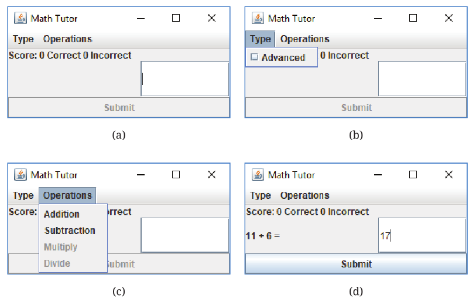
MathTutor. (a) No menu selected. (b) Type selected. (c) Operations selected. (d) Attempting to answer an addition problem.Figura 16.1 shows the final program in four different states. The window on the top left appears when the program is first initialized, with the “Submit” button disabled until a problem is generated. The top right and the bottom left show each of the two menus open. The bottom right shows the program when an addition problem has been generated and the user is about to answer.
16.2. Concepts: Graphical user interfaces
The program shown above with its menus, labels, buttons, and other interactive components is called a graphical user interface or GUI. A GUI is a means of communication between a computer program and a (usually human) user. Although it’s possible for some programs such as scripts to interact with a GUI, most program-to-program communication is done in other ways.
While communication through input and output on the command line is one way to communicate with a program, GUIs offer a user-friendly alternative that has become extremely commonplace. In fact, GUIs are so common that many people have never used anything else to interact with programs and may not even suspect that other kinds of interaction are possible.
This chapter will teach you how to write programs with GUIs. Although GUIs can make input and output easier for the user, the programmer has to shoulder the burden of arranging the layout and appearance of the GUI and making it function properly. Capítulo 7 introduced a way to make simple GUIs, but those GUIs came in preset flavors designed for displaying a message, getting a range of responses in the form of buttons or lists, or reading a short piece of text as input. In this chapter we’ll explore ways to make GUIs of arbitrary complexity with no limitations on the size or shape of the GUI or the components it contains.
A typical GUI consists of a frame (also known as a window) on which are displayed one or more components (known as widgets), such as panels, buttons, and text boxes. Panels are used to organize the contents within the frame. A frame contains at least one panel, but additional ones can be added. Each panel can also contain components: buttons, labels, text boxes, and even other panels. Using code to create a GUI with all the components laid out exactly where you want them is half the work of making a GUI-driven program in Java.
Some components like labels are read-only to the user. They display information such as status messages. Other components allow the user to give input to the program. Reading GUI input is usually done in response to an event. Handling events inside of a program is the other half of writing a GUI program in Java. Layout is concerned with appearance, but event handling is concerned with functionality.
Some IDEs such as IntelliJ have graphical tools that automatically generate GUI layout code for you. It’s fast to create a GUI with such tools, but the GUIs they create are often inflexible and look terrible when the window is resized. We focus on how to write all the code yourself because doing so gives you more control and helps you understand Java GUIs better.
16.2.1. Swing and AWT
Most of the components you’ll use to create GUIs are defined in
classes that belong to the Java Swing library. This library contains
many interfaces and classes. In earlier chapters, you have seen and
used one class from the Swing library, the JOptionPane class.
Some components of the Swing library are
built on another library known as the Abstract Window Toolkit or AWT.
The AWT is an older library which provides direct access to OS
components. Thus, an AWT Button object in Microsoft Windows creates a
Windows button. Swing, however, draws its own button. AWT GUIs look
exactly like other GUIs from the same OS. Swing GUIs can be configured
to look similar using look and feel settings, or developers can choose
to use a default Java look and feel that will look similar across all platforms.
We’ll discuss many Swing components such as JButton and JTextField. Swing
components usually have a J at the beginning of their names to
distinguish them from similar AWT components. (The AWT contains Button
and TextField. If you see examples from other sources using components
that don’t start with J, they’re probably using AWT.) Although Swing
is built on top of the older AWT library, it’s not a good idea to mix
Swing and AWT components in a single GUI.
The Swing library is far too large for us to cover in its entirety. Instead, our goal is to show you how to construct GUIs using some of the most common Java components. Once you’ve grasped the material in this chapter, you’ll be able to read and understand how to use many other interesting Swing components, as well as other Java libraries for constructing GUIs. The JavaFX library is a newer library that was intended to replace Swing, but it hasn’t been widely adopted. Although it’s still available, JavaFX is no longer included with Java 11 and higher and must be downloaded as a separate library.
16.3. Syntax: GUIs in Java
16.3.1. Creating a frame
A frame is the Java terminology for a window. GUI components in Java will
usually be found on a frame. In Swing, a frame is an object whose type is
derived from the JFrame class. Here’s a line of code that creates a JFrame object.
JFrame frame = new JFrame("Empty Frame");The above statement declares and creates a JFrame object named
frame. The title of the frame is “Empty Frame” and is given as
an argument to the JFrame constructor. Although calling the
constructor creates the frame, you need to make it visible for it to
show up on the screen.
frame.setVisible(true);The setVisible() method causes the frame frame to be visible on
the screen as a window. You can specify its size as follows.
frame.setSize(350,200);The setSize() method sets the width and height of the frame in pixels.
In the above example, the width of frame is set to 350
pixels and its height to 200 pixels. If you don’t set the size (or use a
method like pack() to make a JFrame resize itself to the appropriate
size for its contents), it might be so tiny that you at first don’t see it.
The window created by the above code is resizable. If you don’t want the user to be able to resize the window, you can specify that as well.
frame.setResizable(false);Your entire GUI will often be a frame you create and the components inside that frame. You might want your application to end when you close the frame by clicking on the close button toward the top. The actual location of this button depends on the operating system and the look and feel managers you’re using. Regardless, the following statement can be used to set the behavior of the application when you close the frame window.
frame.setDefaultCloseOperation(JFrame.DISPOSE_ON_CLOSE);|
Pitfall: Closing frames
Some books and online tutorials suggest setting Using By using It’s still necessary to select some default closing operation. By
default, the operation is set to |
Código 16.1 creates and displays an empty frame with the title “Empty Frame,” much like the code above.
import javax.swing.*; (1)
public class EmptyFrame {
public static void main(String[] args){
JFrame frame = new JFrame("Empty Frame"); (2)
frame.setSize(350,200); (3)
frame.setDefaultCloseOperation(JFrame.DISPOSE_ON_CLOSE); (4)
frame.setVisible(true); (5)
}
}| 1 | This import statement lets the compiler know we’re using the Swing library. |
| 2 | The first statement inside the main() method declares and creates a JFrame object
and assigns a title to it. |
| 3 | Then, we set its size. |
| 4 | Next, we set the default close operation. |
| 5 | Finally, we make the frame visible. |
The frame so created is shown in Figura 16.2.
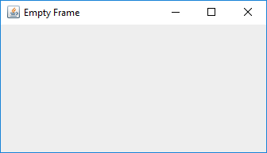
You may resize the frame at any point in the program even after the frame has been created and made visible. The initial size may or may not be set prior to making the frame visible. Similarly, the frame title can be set and reset at any point in the program.
A single frame might need to open other subsidiary windows from time to time
to ask a question or display some information. To create windows dependent
on a parent frame, use JDialog instead of JFrame. A dialog window made
with JDialog can either be modal (meaning that the user must close it before they
can interact with the parent frame) or non-modal (allowing the user
to interact with it and its parent frame at the same time).
16.3.2. Components
A component (or widget) is an element of a GUI. Java provides a large variety of components including panels, buttons, text boxes, check boxes, radio buttons, and menus. When laying out a GUI, one or more of the components are created and then placed on a frame. A component is declared and created like any other object.
Widget w = new Widget(arguments);Here we use class Widget to represent any Swing component class like
JButton or JTextField. Arguments supplied while constructing a
component allow you to set attributes such as its icon, color, size, or
text to display. Most of these attributes can be changed after creation.
Although components can be added directly to a frame, it’s often convenient to lay out a GUI by adding panels to a frame and adding components to those panels. Each panel can hold zero or more components. A panel is also referred to as a container object. Next, we show you how to create a panel, populate it with components, add it to a frame, and display the completed frame.
In Swing, a panel is an instance of the JPanel class and can be created as
follows.
JPanel panel = new JPanel();This statement creates a panel named panel. Thus far, the panel
is empty. We can create two buttons and add them to panel.
JButton thisButton = new JButton("This");
JButton thatButton = new JButton("That");
panel.add(thisButton);
panel.add(thatButton);Here, we create two buttons named thisButton and thatButton.
It’s common for component variables to reflect what kind of component
they are by appending a description, in this case Button, to their names.
These buttons are labeled "This" and
"That", but their labels could be any String values. Then, we add
the two buttons to the panel.
frame.add(panel);This statement adds the panel to an existing frame called frame.
Another useful component is JTextField. It creates a text field that can
be used by a program for both input and output of String data.
JTextField field = new JTextField("This is not a pipe.");This statement creates a JTextField component named field.
When displayed, it’ll show the text “This is not a pipe.”
The user can change this text by typing, but we won’t know when the text
has been change without the event handling tools discussed in
Seção 16.3.3. The following example combines several
of the components we’ve introduced into one program.
We can write an application with a GUI that contains three buttons labeled “This,” “That,” and “Exit.” In addition, it contains a text field that initially displays the text “Text input and output area.”
In this example the buttons are only for display. You can click each one, but the program won’t do anything. The text field won’t be changed by the program after it’s initialized either. In the next subsection we’ll add actions to each button and make the program more useful.
import javax.swing.*;
public class FrameWithPanel {
public static void main(String[] args){
JFrame frame = new JFrame("Button Example"); (1)
JPanel panel = new JPanel(); (2)
JButton thisButton = new JButton("This"); (3)
JButton thatButton = new JButton("That");
JButton exitButton = new JButton("Exit");
JTextField field = new JTextField("Text input and output area");
panel.add(thisButton); (4)
panel.add(thatButton);
panel.add(field);
panel.add(exitButton);
frame.add(panel); (5)
frame.setSize(350,200);
frame.setDefaultCloseOperation(JFrame.DISPOSE_ON_CLOSE);
frame.setVisible(true); (6)
}
}| 1 | We first create a frame named frame. |
| 2 | Then, we make a panel named panel. |
| 3 | Next, we create three buttons named thisButton, thatButton, and exitButton and a text field named field. |
| 4 | We add the buttons and the text field to panel. |
| 5 | We add panel to frame. |
| 6 | After setting the size and the closing operation, the frame is made visible. |
The final GUI is shown in Figura 16.3. The sequence in which you add the buttons to the panel determines the appearance of the GUI. That’s why the text field appears before the “Exit” button. Note that the same GUI may look different on different platforms.
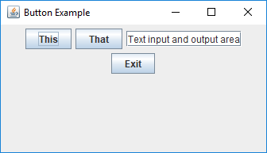
In addition to JTextField, JTextArea and JPasswordField are two other
components useful for entering text. The JTextArea component is designed
for larger passages of text and allows multiple lines. The JPasswordField
component functions the same as a JTextField except that each character
of input text is displayed as a meaningless echo character designed to hide
sensitive information like a password.
Figura 16.4(a) shows a GUI with a JTextArea, and
Figura 16.4(b) shows a GUI with a JPasswordField.
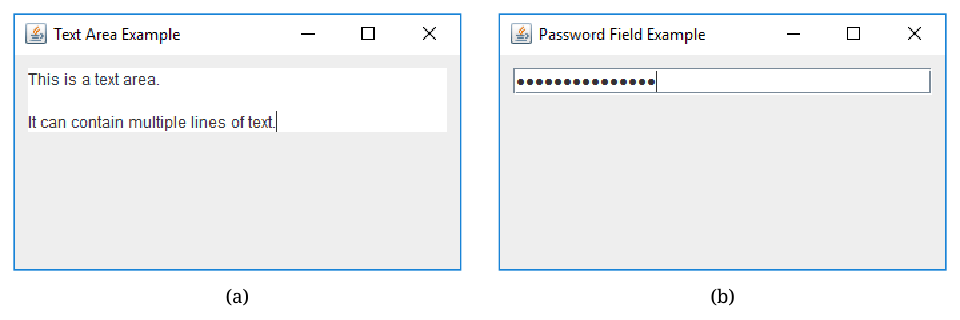
16.3.3. Adding actions to components
We can design a GUI so that when a user clicks a button, the program responds by printing a message to the terminal, changing a text field, playing a sound, or any other action that a Java program can perform. Clicking a button generates an event. In Swing, an event is processed by one or more listeners. Java provides various types of listeners, some of which are introduced here. Next, we show you how to write listeners to handle events generated by a few different kinds of components.
The ActionListener interface
Java provides an ActionListener interface. This interface has a single
method named actionPerformed(). This method takes an ActionEvent as
input and performs a suitable action based on the event. A JButton
object generates ActionEvent when it’s pressed. Any class that
implements the ActionListener interface can be registered as an action
listener on a JButton or any other component that generates an
ActionEvent.
As discussed in Capítulo 10, an interface is a set of
method signatures. If a class implements an interface, it promises that its objects will
have all of the methods in that interface. If a class implements
ActionListener, it’s saying that it knows what to do when an action is
performed. The following statements show how to add an ActionListener
to a button and implement its actionPerformed() method.
JButton thisButton = new JButton("This");
thisButton.addActionListener(new ActionListener() {
public void actionPerformed(ActionEvent e) {
// Code to perform an action goes here
}
});The first line above creates a button named thisButton. The remaining code
adds an action listener to the button. The process of adding an action
listener to an object is also known as registering a listener on the
object. Note that the sole argument to this addActionListener() method
is a newly created ActionListener object. Inside this newly created
and anonymous ActionListener object, we implement the
actionPerformed() method. Whatever code we want to execute in response
to the clicking of the thisButton button goes inside the
actionPerformed() method.
This syntax may look strange to you. ActionListener is an interface,
which can’t be instantiated. What’s that new keyword doing? It’s
doing something pretty amazing by creating an instance of an anonymous
class. On the fly, we’re creating a class that has never existed
before. It doesn’t even have a name! All we know about it is that it
implements the interface ActionListener.
Note that there are braces after the constructor call, defining what’s
inside of this class. Inside, we have only created an
actionPerformed() method, but we could have created fields as well as
other methods. It’s a little ugly to create a whole new class and
instantiate it in the middle of calling the addActionListener()
method, but it’s also convenient. We need to supply an object that
reacts to the event exactly the way we want it to. Since one doesn’t
exist yet, we have to create it. Of course, it’s possible to supply any
object that implements the ActionListener interface, not just
instances of anonymous classes. For more information about nested
classes, inner classes, and anonymous classes, refer to
Seção 9.4 and Seção 10.4.
Anonymous classes have been part of Java since almost the beginning, but their
syntax is clunky. Java 8 introduced lambda expressions, which can be used in
place of anonymous classes in many cases, including making a custom
ActionListener. The reason a lambda expression can be used in this situation
is that an ActionListener is a functional interface, meaning that it has only
a single method. Here’s the code from above using a lambda expression instead
of an anonymous class.
JButton thisButton = new JButton("This");
thisButton.addActionListener(e -> { /* Code to perform an action goes here */ });Since almost everyone uses Java 8 or higher, we prefer the lambda expression
style for making an ActionListener simply because it’s more readable. The code
itself is functionally equivalent and performs almost exactly the same actions
inside the JVM. For more details about lambda expressions, refer to
Seção 13.3.3.
Now we can modify Código 16.2 to respond to button
clicks. When the thisButton button is clicked, the program will display the
message “You can get with this.” in the text field. Similarly, when the
thatButton button is clicked, the program will display “Or you can get with that.”
import javax.swing.*;
import java.awt.event.*;
public class FrameWithPanelAndActionsClasses {
public static void main(String[] args){
JFrame frame = new JFrame("Button Example");
JPanel panel = new JPanel();
JButton thisButton = new JButton("This");
JButton thatButton = new JButton("That");
JButton exitButton = new JButton("Exit");
JTextField field = new JTextField("Text input and output area");
panel.add(thisButton);
panel.add(thatButton);
panel.add(field);
panel.add(exitButton);
// Add action listeners to various buttons
thisButton.addActionListener(new ActionListener() {
public void actionPerformed(ActionEvent e){
field.setText("You can get with this.");
}
});
thatButton.addActionListener(new ActionListener() {
public void actionPerformed(ActionEvent e){
field.setText("Or you can get with that.");
}
});
exitButton.addActionListener(new ActionListener() {
public void actionPerformed(ActionEvent e){
System.out.println("Exit");
frame.dispose();
}
});
frame.add(panel);
frame.setSize(350,200);
frame.setDefaultCloseOperation(JFrame.DISPOSE_ON_CLOSE);
frame.setVisible(true);
}
}Código 16.3 is largely the same as
Código 16.2. It adds the same buttons and text
field but then adds an action listener to each button. The action
performed when the thisButton and thatButton buttons are clicked is to display
a message in the text box. When the exitButton button is clicked, the
listener displays a message on the terminal and exits the program.
The action listeners can be added either before or after the panel has been set up but should be added before the frame is made visible.
In the previous example, we used anonymous inner classes to add an
ActionListener object to each button and implement its actionPerformed()
method. This example shows the same code using lambda expressions
instead. Note that both programs generate the same GUI and exhibit identical
behavior. In the future, we will use the lambda expression style unless there’s
a compelling reason not to.
import javax.swing.*;
import java.awt.event.*;
public class FrameWithPanelAndActionsLambdas {
public static void main(String[] args){
JFrame frame = new JFrame("Button Example");
JPanel panel = new JPanel();
JButton thisButton = new JButton("This");
JButton thatButton = new JButton("That");
JButton exitButton = new JButton("Exit");
JTextField field = new JTextField("Text input and output area");
panel.add(thisButton);
panel.add(thatButton);
panel.add(field);
panel.add(exitButton);
// Add action listeners to various buttons
thisButton.addActionListener(e -> field.setText("You can get with this.")); (1)
thatButton.addActionListener(e -> field.setText("Or you can get with that.")); (2)
exitButton.addActionListener(e -> { (3)
System.out.println("Exit");
frame.dispose();
});
frame.add(panel);
frame.setSize(350,200);
frame.setDefaultCloseOperation(JFrame.DISPOSE_ON_CLOSE);
frame.setVisible(true);
}
}| 1 | Using only a single line of code, this lambda expression creates an
ActionListener that changes the text field to “You can get with this.” |
| 2 | Similarly, this lambda expression creates an ActionListener that changes
the text field to “Or you can get with that.” |
| 3 | The previous lambda expressions did not require braces, but this one does since it contains multiple lines: one that prints “Exit” and one that disposes the frame. |
The ItemListener interface
An ItemListener can be attached to a component such as a check box or a
radio button to listen for when it’s selected or deselected. When you select
a check box, a ✓ sign appears to its left, and an ItemEvent is
generated. When you select an already checked check box, the sign
disappears, and another ItemEvent is generated.
Creating a check box is very much like creating a button, except
that we use the JCheckBox component instead of JButton.
When it’s initially created, a check box is unchecked.
JCheckBox checkBox = new JCheckBox("Check the oven");Just as ActionListener is a functional interface with a single method,
ItemListener is a functional interface with only one method as well,
itemStateChanged(), which takes a single parameter of type ItemEvent. For
that reason, we can also use a lambda expression to create an ItemListener.
An ActionEvent and an ItemEvent are similar, but one reason that Java
has two different interfaces with two different kinds of events is
because an ItemEvent has more information: By using the
getStateChange() method, it’s possible to tell whether the component
that fired the ItemEvent is now selected or deselected.
checkBox.addItemListener(e -> {
if (e.getStateChange() == ItemEvent.SELECTED) {
checkBox.setText("We checked the oven!");
} else {
checkBox.setText("No one checked the oven!");
}
});Below is an example of a GUI with three check boxes.
The following program shows a GUI with three check boxes labeled “Nasty”, “Brutish”, and “Short”. When each is clicked, it’ll update a text field saying that your life either is or isn’t nasty, brutish, or short, depending on whether or not the clicked check box is currently selected.
import javax.swing.*;
import java.awt.event.*;
public class CheckBoxExample {
public static void main(String[] args){
JFrame frame = new JFrame("Check Box Example"); (1)
JPanel panel = new JPanel();
JCheckBox nastyCheckBox = new JCheckBox("Nasty"); (2)
JCheckBox brutishCheckBox = new JCheckBox("Brutish");
JCheckBox shortCheckBox = new JCheckBox("Short");
JTextField field = new JTextField("Here's what your life is like.");
panel.add(nastyCheckBox); (3)
panel.add(brutishCheckBox);
panel.add(shortCheckBox);
panel.add(field);
// Add item listeners to the check boxes
nastyCheckBox.addItemListener(e -> { (4)
if (e.getStateChange() == ItemEvent.SELECTED) {
field.setText("Your life is nasty.");
} else {
field.setText("Your life isn't nasty.");
}
});
brutishCheckBox.addItemListener(e -> {
if (e.getStateChange() == ItemEvent.SELECTED) {
field.setText("Your life is brutish.");
} else {
field.setText("Your life isn't brutish.");
}
});
shortCheckBox.addItemListener(e -> {
if (e.getStateChange() == ItemEvent.SELECTED) {
field.setText("Your life is short.");
} else {
field.setText("Your life isn't short.");
}
});
frame.add(panel); (5)
frame.setSize(350,200);
frame.setDefaultCloseOperation(JFrame.DISPOSE_ON_CLOSE);
frame.setVisible(true);
}
}| 1 | Just as in previous examples, we create a frame and a panel. |
| 2 | We make three check boxes and a text field. |
| 3 | Then we add all four components to the panel. |
| 4 | Using lambda expressions, we create an ItemListener for each check box
to update the text field with an appropriate message
based on whether the check box is now checked or unchecked. Note that
the most recent message will overwrite whatever text was previously
in the text field. |
| 5 | Like previous examples, we add the panel to the frame, set the size, set the default close operation, and show the frame. |
Figura 16.5 shows this GUI after the “Brutish” check box has been clicked.
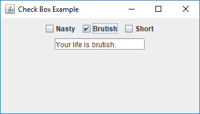
All JCheckBox objects could have an ActionListener added to them
as well. We could change the listener for the nastyCheckBox above to the following,
and it would function the same. To do so, we must ask the nastyCheckBox if it’s
currently selected by calling its isSelected() method.
nastyCheckBox.addActionListener(e -> {
if (nastyCheckBox.isSelected()) {
field.setText("Your life is nasty.");
} else {
field.setText("Your life isn't nasty.");
}
});Another Swing component that can be used with an ItemListener is JRadioButton.
Radio buttons are similar to check boxes in that clicking one will select it.
However, radio buttons are almost always used in a group. When one radio button
in the group is selected, all others are deselected, guaranteeing that only one
radio button can be selected at a time.
For example, the following code will create three radio buttons, only one of which can be selected.
JRadioButton smarterButton = new JRadioButton("Smarter than the average bear");
JRadioButton lessSmartButton = new JRadioButton("Less smart than the average bear");
JRadioButton asSmartButton = new JRadioButton("As smart as the average bear");
ButtonGroup group = new ButtonGroup();
group.add(smarterButton);
group.add(lessSmartButton);
group.add(asSmartButton);The ButtonGroup object provides the logical grouping that guarantees a maximum
of one JRadioButton will be selected. This grouping is only for the purposes of
selection, and the radio buttons still need to be added to a panel or a frame or some other
GUI container to display them.
With check boxes, an ItemListener didn’t provide much of an advantage over an
ActionListener. A radio button, however, can be deselected not by clicking on it
but by clicking on another radio button. Thus, using an ItemListener allows us
to handle the event when a radio button is deselected, even though it wasn’t clicked
itself, as illustrated in the following example.
The program below shows a GUI with three radio buttons labeled “Half empty”, “Half full”, and “Twice the needed size”, describing a partially filled glass of water from the perspective of an optimist, a pessimist, or an engineer, respectively. When each radio button is selected, it’ll update the first text field describing the glass from the given perspective. However, when a radio button is deselected by clicking another one, it’ll update the second text field to describe what the glass isn’t, now that we’re in a different perspective.
import javax.swing.*;
import java.awt.event.*;
public class RadioButtonExample {
public static void main(String[] args){
JFrame frame = new JFrame("Radio Button Example");
JPanel panel = new JPanel();
JRadioButton halfEmptyButton = new JRadioButton("Half empty"); (1)
JRadioButton halfFullButton = new JRadioButton("Half full");
JRadioButton twiceTheSizeButton = new JRadioButton("Twice the needed size");
JTextField positiveField = new JTextField("Positive statement about the glass.");
JTextField negativeField = new JTextField("Negative statement about the glass.");
ButtonGroup group = new ButtonGroup(); (2)
group.add(halfEmptyButton);
group.add(halfFullButton);
group.add(twiceTheSizeButton);
panel.add(halfEmptyButton); (3)
panel.add(halfFullButton);
panel.add(twiceTheSizeButton);
panel.add(positiveField);
panel.add(negativeField);
// Add item listeners to the radio buttons
halfEmptyButton.addItemListener(e -> { (4)
if (e.getStateChange() == ItemEvent.SELECTED) {
positiveField.setText("The glass is half empty.");
} else {
negativeField.setText("And it's not half empty.");
}
});
halfFullButton.addItemListener(e -> {
if (e.getStateChange() == ItemEvent.SELECTED) {
positiveField.setText("The glass is half full.");
} else {
negativeField.setText("And it's not half full.");
}
});
twiceTheSizeButton.addItemListener(e -> {
if (e.getStateChange() == ItemEvent.SELECTED) {
positiveField.setText("The glass is twice the needed size.");
} else {
negativeField.setText("And it's not twice the needed size.");
}
});
frame.add(panel); (5)
frame.setSize(350,200);
frame.setDefaultCloseOperation(JFrame.DISPOSE_ON_CLOSE);
frame.setVisible(true);
}
}| 1 | We make three radio buttons and two text fields. |
| 2 | We add the three radio buttons to a group. |
| 3 | Then we add the five components to the panel. |
| 4 | Using lambda expressions, we create an ItemListener for each radio button.
When the event is a selection, it will update the first text field with a
message that matches the radio button. When the event is a deselection, it will
update the second text field with a message that suggests the opposite of the
radio button. |
| 5 | Like previous examples, we add the panel to the frame, set the size, set the default close operation, and show the frame. |
Figura 16.6(a) shows this GUI before any radio buttons have been selected. Figura 16.6(b) shows this GUI after the “Half full” radio button’s been selected. Figura 16.6(c) shows this GUI after the “Twice the needed size” radio button’s been selected. In this final step, note that the second text field reads “And it’s not half full.” because the “Half full” button was just deselected.
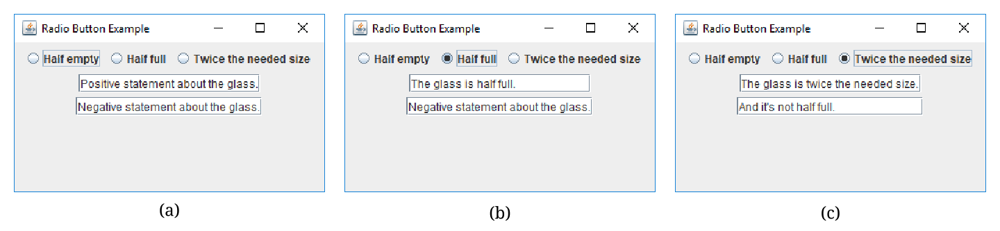
The MouseListener interface
Clicking a button or a check box is useful, but a mouse can generate events
in other ways too. For example, in a screen full of pictures, you might want to
highlight a picture when the cursor hovers over it. Or you might want to
create a drawing program which uses a mouse as a pen. To process general
mouse events, we need an object that implements the MouseListener
interface, which defines the following methods.
-
mouseClicked() -
mouseEntered() -
mouseExited() -
mousePressed() -
mouseReleased()
The function of each method is implied by its name. The mouseEntered()
event fires when the mouse cursor moves into the area above a component.
Conversely, the mouseExited() event fires when a mouse cursor was over
a component and has just moved away. The mousePressed() event fires
when a mouse button is pressed over a component. The mouseReleased()
event fires when a mouse button is released over a component.
The mouseClicked() event is a combination of
both the mousePressed() and mouseReleased() events, occurring only
if a mouse button was pressed and then released while the cursor was
over a component. As you can see, a component only fires events when the
cursor is over it (or has just left). Thus, a component only
reports events that have to do with it, not the general state of the
mouse.
Each method in MouseListener receives a MouseEvent object as its
argument. To handle mouse events, a class must implement the
MouseListener interface. Doing so is similar to the implementation of the
ActionListener interface from the previous section, but implementing
MouseListener requires a definition for each of the five methods
listed above. The next example illustrates MouseListener in use.
We can write a program that displays a GUI containing two buttons labeled “One” and “Two.” A text box will display a suitable message when the cursor enters a button. When a button is clicked, the text box should display the total number of times that button has been clicked.
MouseListener interface.import javax.swing.*;
import java.awt.*;
import java.awt.event.*;
public class SimpleMouseEvents implements MouseListener { (1)
private final JFrame frame = new JFrame("Mouse Events");
private final JTextField status = new JTextField("Mouse status comes here.");
private final JButton oneButton = new JButton("One");
private final JButton twoButton = new JButton("Two");
private int oneClicks = 0, twoClicks = 0; // Number of clicks
public SimpleMouseEvents() { (2)
JPanel panel = new JPanel();
oneButton.addMouseListener(this);
twoButton.addMouseListener(this);
panel.add(oneButton);
panel.add(twoButton);
panel.add(status);
frame.add(panel);
frame.setSize(275,200);
frame.setDefaultCloseOperation(JFrame.DISPOSE_ON_CLOSE);
frame.setVisible(true);
}
// Implement all abstract methods in MouseListener
public void mouseEntered(MouseEvent e) { (3)
if (e.getSource() == oneButton) {
status.setText("Mouse enters One.");
} else {
status.setText("Mouse enters Two.");
}
}
public void mouseClicked(MouseEvent e) { (4)
if (e.getSource() == oneButton) {
++oneClicks;
status.setText("One clicked "+ oneClicks + " times.");
} else {
++twoClicks;
status.setText("Two clicked "+ twoClicks + " times.");
}
}
public void mouseExited(MouseEvent e) {} // Unused methods (5)
public void mousePressed(MouseEvent e) {}
public void mouseReleased(MouseEvent e) {}
public static void main(String[] args){ (6)
new SimpleMouseEvents();
}
}| 1 | We declare class SimpleMouseEvents, implementing the MouseListener interface. The following few lines declare frame frame, buttons one and two, and a text box status. Two integers oneClicks and twoClicks are initialized to 0 and are used to keep track of the number of times each button has been clicked. |
| 2 | The first line of the SimpleMouseEvents constructor creates the panel
panel. It doesn’t need to be a field, and it’s always preferable to
keep a variable local if it can be. The next two lines add a MouseListener to the two buttons. Note the use of this in the argument to addMouseListener() which refers to the object being created by the constructor. Next, the panel is set up and added to the frame. Finally the frame size and its default close operations are set, and the frame is made visible. |
| 3 | The mouseEntered() method is invoked when the cursor enters either of the two buttons. First, we retrieve the source of the event using the getSource() method and identify which object generated the event. A suitable message is displayed in the status box using the setText() method. |
| 4 | The mouseClicked() method is invoked when the mouse cursor is clicked above a button. As before, we retrieve the source of the event using the getSource() method. A suitable message, including the number of clicks, is displayed in the text box. Of course, recording button clicks could have been done with an ActionListener instead. |
| 5 | MouseListener methods that aren’t used must be implemented, but their bodies can be left empty. |
| 6 | The only job of the main() method is to create an instance of
SimpleMouseEvents. |
Código 16.5 generates the GUI shown in Figura 16.7.
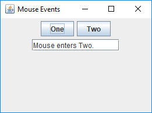
Mouse adapter
Creating a MouseListener requires all five methods in the interface to
be implemented, and a MouseListener can’t be replaced with a lambda
expression because it has more than a single method. In many cases, as in
Exemplo 16.7, there’s no need to implement all the methods because
we’re not interested in all the corresponding events. In such situations we’re
forced to include empty methods;
however, you might want to include methods only when they’re
needed. The MouseAdapter class helps us avoid implementing
methods we don’t need.
MouseAdapter is an abstract class, unlike the MouseListener
interface. The advantage of using MouseAdapter is that it already
provides a skeletal implementation of each method needed to process
mouse events. We can override these implementations as needed, and we
don’t need to provide an implementation of a method that’s not used.
Código 16.6 is a revised version of
Código 16.5. Remember that an abstract class is
extended whereas an interface is implemented. Of course, MouseAdapter
cannot be extended if the class in question is already extending another class.
In that situation, you’ll be forced to implement MouseListener.
MouseAdapter abstract class.import javax.swing.*;
import java.awt.*;
import java.awt.event.*;
public class SimpleMouseAdapter extends MouseAdapter { (1)
private JFrame frame = new JFrame("Mouse Events");
private JTextField status = new JTextField("Mouse status comes here.");
private JButton oneButton = new JButton("One");
private JButton twoButton = new JButton("Two");
private int oneClicks = 0, twoClicks = 0;
public SimpleMouseAdapter () {
JPanel panel = new JPanel();
oneButton.addMouseListener(this);
twoButton.addMouseListener(this);
panel.add(oneButton);
panel.add(twoButton);
panel.add(status);
frame.add(panel);
frame.setSize(275,200);
frame.setDefaultCloseOperation(JFrame.DISPOSE_ON_CLOSE);
frame.setVisible(true);
}
// Override only those methods we want
public void mouseEntered(MouseEvent e) { (2)
if (e.getSource() == oneButton) {
status.setText("Mouse enters One.");
} else {
status.setText("Mouse enters Two.");
}
}
public void mouseClicked(MouseEvent e) { (3)
if (e.getSource() == oneButton) {
++oneClicks;
status.setText("One clicked "+ oneClicks + " times.");
} else {
++twoClicks;
status.setText("Two clicked "+ twoClicks + " times.");
}
}
public static void main(String[] args){
new SimpleMouseAdapter ();
}
}| 1 | Class SimpleMouseAdapter extends the abstract class MouseAdapter. Thus,
it inherits an empty method for every method required by MouseListener. |
| 2 | We override the method mouseEntered(). |
| 3 | We override the method mouseClicked(). No other methods need to be overridden in this example. |
Other event listeners
In this chapter we describe three types of listeners in Java,
ActionListener, ItemListener and MouseListener. You may have noticed that none of
the mouse events we discussed involved the movement of the mouse inside
of the component, only whether it was entering or exiting the component.
Because tracking mouse movement is more computationally expensive than
tracking simple presses, releases, enters, and exits, Java uses yet another
listener to handle mouse movement, MouseMotionListener. It contains
the methods mouseDragged() and mouseMoved(), which are used to
handle mouse movement with or without the button pressed.
Java provides several other listeners to handle a variety of events. For
example, the DocumentListener can be attached to a JTextField or a
JTextArea object to listen to document events, which include the
insertUpdate() event that’s fired when a character is inserted the
text box. A KeyListener can also be attached to text boxes to listen
to key events such as the return key being typed, which can have similar
functionality. These events could be useful when developing a text editor
application, for example.
After you’ve mastered the contents of this chapter, you may plan to write more complex GUIs than the ones we discuss. For further information, you might want to follow the Java tutorial on writing event listeners at the Oracle Swing Events tutorial site.
16.3.4. Adding sounds and images
Sounds and images can also be added to a Java GUI application. While
Java offers a rich set of sound APIs, we restrict our examples to
playing sound clips from audio files that come in au or wav formats.
We also introduce the ImageIcon class to create icons from image
files.
Sounds
There are many ways to play sounds in Java, but the simplest is through the Clip interface. Let’s see how we can create an appropriate Clip
object.
Clip clip = AudioSystem.getClip();This statement creates a new Clip object using a static method from
the AudioSystem class in the javax.sound.sampled package. To use
clip, we need an audio file to play.
File soundFile = new File("sounds/trumpet.wav"); (1)
clip.open(AudioSystem.getAudioInputStream(soundFile)); (2)| 1 | Here we create a File object corresponding to the location of an audio
file we want to play. In this case, we’re trying to play a file called
trumpet.wav in a sounds directory that’s in the same directory as
our program. The location of the file could be much more complicated
or even entered by the user. |
| 2 | Then, we use the AudioSystem class to make an audio stream from the
file and open it with clip. Note that the two methods on this line can
throw a number of exceptions, depending on whether the file is in a usable
format and your computer’s audio system is ready. |
clip.start();This command will play the clip in clip loaded from the specified
file, exactly once. If you want to play the clip in a loop, use the
loop() method. You can specify a specific number of times to loop
or use the Clip.LOOP_CONTINUOUSLY constant to make it loop an unlimited
number of times.
clip.loop(Clip.LOOP_CONTINUOUSLY);To stop a clip from playing, use the stop() method.
clip.stop();Now that we’ve seen how to create, open, play, and stop an audio clip, we’re ready to write a program that can play sounds.
We can write a program to play a loop of a bird chirping or a dog barking when the corresponding button is clicked. Our program only has two sounds, but more could be added.
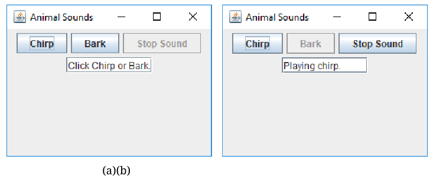
We can include a button labeled “Stop Sound” that stops the playback of sounds when clicked. When it starts, the GUI will look like Figura 16.8(a). Note that the “Stop Sound” button is gray, showing that it’s disabled. The complete program is shown below.
import java.io.*; (1)
import java.awt.event.*;
import javax.swing.*;
import javax.sound.sampled.*;
public class AnimalSounds {
public static void main (String[] args) throws Exception {
JFrame frame = new JFrame("Animal Sounds");
JPanel panel = new JPanel();
JButton chirpButton = new JButton("Chirp");
JButton barkButton = new JButton("Bark");
JButton stopButton = new JButton("Stop Sound");
JTextField field = new JTextField("Click Chirp or Bark.");
File chirpFile = new File("sounds/chirp.wav"); (2)
File barkFile = new File("sounds/bark.wav");
Clip chirpClip = AudioSystem.getClip(); (3)
chirpClip.open(AudioSystem.getAudioInputStream(chirpFile));
Clip barkClip = AudioSystem.getClip();
barkClip.open(AudioSystem.getAudioInputStream(barkFile));
panel.add(chirpButton);
panel.add(barkButton);
panel.add(stopButton);
panel.add(field);
frame.add(panel);
stopButton.setEnabled(false); (4)| 1 | Many import statements are needed to cover all the library classes and interfaces used to play sounds. |
| 2 | After creating a number of GUI elements, we define the files for the two sounds. |
| 3 | Then, we create chirpClip and barkClip and open audio streams
corresponding to their sound files. |
| 4 | Note that we start with the stop button disabled. |
chirpButton.addActionListener(e -> { (1)
field.setText("Playing chirp.");
barkButton.setEnabled(false);
chirpClip.loop(Clip.LOOP_CONTINUOUSLY);
stopButton.setEnabled(true);
});
barkButton.addActionListener(e -> { (2)
field.setText("Playing bark.");
chirpButton.setEnabled(false);
barkClip.loop(Clip.LOOP_CONTINUOUSLY);
stopButton.setEnabled(true);
});
stopButton.addActionListener(e -> { (3)
field.setText("Click Chirp or Bark.");
chirpClip.stop();
barkClip.stop();
barkButton.setEnabled(true);
chirpButton.setEnabled(true);
stopButton.setEnabled(false);
});
frame.setSize(275,200); // Set size in pixels
frame.setDefaultCloseOperation(JFrame.DISPOSE_ON_CLOSE);
frame.setVisible(true); // Display it
}
}| 1 | Here we define the action listener for chirpButton, which
disables barkButton, tells the user that the chirp sound is playing, plays
the sound, and enables the stop button. |
| 2 | The action listener for barkButton button is similar. |
| 3 | The action listener for stopButton doesn’t know which sound is playing,
so it stops both sounds and then disables the stopButton. |
When chirpButton is clicked, the GUI looks like Figura 16.8(b).
Images and icons
Images are often useful for decorating GUIs. In this section we show you
how to use images to create icons and then use those icons to customize
buttons and labels. First, let’s see how an icon object can be created.
Suppose we have a picture file named smile.jpg in a directory named
pictures. Note that the pictures directory should be located in same
directory as the class files for your program. The following statement
creates an object of type ImageIcon from this picture.
ImageIcon smileIcon = new ImageIcon("pictures/smile.jpg");The file name, along with its path, is passed to the
ImageIcon constructor as a string. Now we can add the image to a
button.
JButton smile = new JButton();
smile.add(smileIcon);Similarly, you can add an image to a label. The next example gives a simple program that creates a button with an image.
Figura 16.9 shows a GUI with a button decorated with a
picture. Código 16.8 gives the code to create this
GUI using the ImageIcon class.
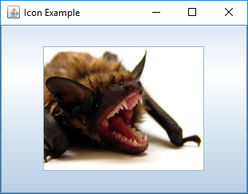
import javax.swing.*;
import java.awt.*;
public class IconExample {
public static void main(String[] args) {
JFrame frame = new JFrame("Icon Example");
ImageIcon smileIcon = new ImageIcon("pictures/smile.jpg"); (1)
JButton smileButton = new JButton(smileIcon); (2)
frame.add(smileButton);
frame.setSize(325,250);
frame.setDefaultCloseOperation(JFrame.DISPOSE_ON_CLOSE);
frame.setVisible(true);
}
}| 1 | An image icon is created from a JPEG file named smile.jpg located in
the pictures directory. |
| 2 | We create a button named smileButton and decorate it with an icon
by supplying it as an argument to the JButton constructor. If
the file can’t be found, the program will fail quietly. This means that
no exception is thrown. Instead, the button will appear without an image. |
Labels, icons, and text
In some applications you might want to show a picture with an attached
text label. For example, a shopping cart application for an online clothing
store might shows pictures of clothes, each labeled with a name
and a price. The JLabel class is flexible, able to display text alone,
an image alone, or both. However, a JLabel is designed for displaying
information and can’t read user input.
Here are three different ways to create a label.
ImageIcon hibiscus = new ImageIcon("pictures/hibiscus.jpg")
JLabel textOnly = new JLabel("Text only");
JLabel flower = new JLabel(hibiscus);
JLabel labeledflower = new JLabel("Red Hibiscus", hibiscus, JLabel.CENTER);The first JLabel constructor above creates a label displaying only
text, namely, “Text only.” The second constructor creates a label
decorated with an icon created from a picture. The third constructor
creates a label with the same icon and additional text. The last
argument in this third case is JLabel.CENTER, a constant that
specifies that the content of the label (both the image and the text)
should be placed horizontally in the center of the label. A horizontal
alignment of left or right could also be specified using the constants
JLabel.LEFT or JLabel.RIGHT, respectively.
Sometimes you might want to place the text below the icon that decorates the label. To do so, you could set the horizontal and vertical positions of the text as follows.
flower.setVerticalTextPosition(JLabel.BOTTOM);
flower.setHorizontalTextPosition(JLabel.CENTER);Figura 16.10(a) is generated by Código 16.9.
import javax.swing.*;
import java.awt.*;
public class LabelExample {
public static void main(String[] args) {
JFrame frame = new JFrame("Label Example");
ImageIcon hibiscusIcon = new ImageIcon("pictures/hibiscus.jpg");
JLabel flower = new JLabel("Red Hibiscus", hibiscusIcon, JLabel.CENTER);
flower.setVerticalTextPosition(JLabel.BOTTOM); (1)
flower.setHorizontalTextPosition(JLabel.CENTER); (2)
frame.add(flower);
frame.setSize(300,250);
frame.setDefaultCloseOperation(JFrame.DISPOSE_ON_CLOSE);
frame.setVisible(true);
}
}| 1 | Vertically position the text on the bottom of the label. |
| 2 | Horizontally center the text on the label. |
You will see the GUI shown in Figura 16.10(b) if the alignment instructions on these two lines are omitted.
16.3.5. Layout managers
Java provides a number of layout managers to assist with the design of
GUIs. A layout manager controls the placement of
components on a frame or panel. Every container has a default layout
manager, but it’s possible to change that manager to a different one.
In this section we’ll introduce the three layout managers FlowLayout,
GridLayout, and BorderLayout. Java also provides several other layout
managers, each designed for different situations.
FlowLayout
The FlowLayout manager is one of simplest. When a
container is using the FlowLayout manager, components will be added in
order from left to right. When there’s no more space, subsequent
components will be added starting on the next row. In addition, each row of
components is centered within the container. The JPanel container uses
FlowLayout by default, but it’s possible to set it explicitly as
well.
JPanel panel = new JPanel(new FlowLayout());When we’ve added more than one component to a JFrame in previous
examples, we’ve first added them to a JPanel. The reason we did so is
because FlowLayout is the default layout manager for
JPanel containers. Although every JFrame has a container, it uses
the BorderLayout manager by default, which would have complicated our
earlier examples. The next example illustrates FlowLayout further.
FlowLayoutCódigo 16.10 creates a GUI with several buttons.
FlowLayout.import javax.swing.*;
import java.awt.*;
public class FlowLayoutExample {
public static void main(String[] args) {
JFrame frame = new JFrame("FlowLayout Example"); (1)
JPanel panel = new JPanel(new FlowLayout()); (2)
final int MAX_BUTTONS = 6;
for (int i = 0; i < MAX_BUTTONS; ++i) { (3)
panel.add(new JButton(" " + i + " "));
}
frame.add(panel);
frame.setSize(300,200);
frame.setDefaultCloseOperation(JFrame.DISPOSE_ON_CLOSE);
frame.setResizable(false);
frame.setVisible(true);
}
}| 1 | We first create a frame. |
| 2 | We create a panel and set its layout manager to FlowLayout. |
| 3 | This for loop is used to create new buttons, label them appropriately, and add them to the panel. |
The FlowLayout manager places the buttons along a number of rows depending on the width of the frame.
If the container changes size, the components will react by “flowing” into different rows, hence the name.
The GUI created is shown in Figura 16.11.
FlowLayout manager to generate a GUI containing six buttons.GridLayout
The GridLayout manager lays out components in a grid with a set number
of rows and columns. As with other layout managers, GridLayout can be
applied to frames and panels.
JFrame frame = new JFrame("Grid Layout Example");
frame.setLayout(new GridLayout(3, 2, 5, 5));This snippet creates a frame named frame and sets its layout manager
to GridLayout. The first two arguments to GridLayout give the number
of rows and columns, respectively. The last two arguments (which are optional)
give the horizontal and vertical gaps between the neighboring cells in the
grid. In this example the frame will contain a total of six cells organized
into three rows with two columns.
Figura 16.12 shows how frame will look after six
buttons, labeled 0 through 5, have been added to it in order. The buttons
were created in the same way as the buttons in Código 16.10, but
they look different because of the GridLayout manager. A key
feature of using GridLayout is that all cells in the grid will be
the same size and will stretch to fill the entire container. Also note
the equal spacing between the neighboring cells. It’s possible to add
more cells or fewer cells than specified in the GridLayout constructor, but
the layout manager will be forced to guess at your intentions.
We can write a program to display pictures of animals and identify which animal the mouse is current hovering over. The animal’s name will be displayed in the title of the frame. Figura 16.13 shows this GUI.
Código 16.11 creates the GUI shown in Figura 16.13.
GridLayout manager.import javax.swing.*;
import java.awt.*;
import java.awt.event.*;
public class AnimalIdentifier extends MouseAdapter { (1)
private JLabel bison, dove, gecko, spider; (2)
private JFrame frame = new JFrame("Animal Identifier");
public AnimalIdentifier() {
JPanel panel = new JPanel(new GridLayout(2,2,5,5)); (3)
ImageIcon bisonIcon = new ImageIcon("pictures/bison.jpg");
ImageIcon doveIcon = new ImageIcon("pictures/dove.jpg");
ImageIcon geckoIcon = new ImageIcon("pictures/gecko.jpg");
ImageIcon spiderIcon = new ImageIcon("pictures/spider.jpg");
bison = new JLabel(bisonIcon); (4)
bison.addMouseListener(this);
dove = new JLabel(doveIcon);
dove.addMouseListener(this);
gecko = new JLabel(geckoIcon);
gecko.addMouseListener(this);
spider = new JLabel(spiderIcon);
spider.addMouseListener(this);
panel.add(bison); (5)
panel.add(dove);
panel.add(gecko);
panel.add(spider);
frame.add(panel);
frame.setSize(400,400); (6)
frame.setDefaultCloseOperation(JFrame.DISPOSE_ON_CLOSE);
frame.setVisible(true);
}| 1 | Class AnimalIdentifier extends MouseAdapter so that it can
be added as a MouseListener without the need to implement all of its methods. |
| 2 | We declare four labels and a frame as fields. The labels are named bison, dove, gecko, and spider. |
| 3 | Inside the constructor, we create a panel with a 2 × 2 GridLayout. Then, we create four image icons, one to decorate each label. |
| 4 | Each of the four labels is created with its respective icon. We also add the AnimalIdentifier object we’re constructing as a MouseListener for each label. |
| 5 | The buttons are added to the panel, and the panel is added to the frame. |
| 6 | The last few lines set the size of the frame, set its close operation, and make it visible. |
public void mouseEntered(MouseEvent e) { (1)
Object label = e.getSource(); (2)
if (label == bison) {
frame.setTitle("Animal Identifier: Bison");
} else if (label == dove) {
frame.setTitle("Animal Identifier: Dove");
} else if (label == gecko) {
frame.setTitle("Animal Identifier: Gecko");
} else if (label == spider) {
frame.setTitle("Animal Identifier: Spider");
}
}
public static void main(String[] args) { (3)
new AnimalIdentifier();
}| 1 | Since AnimalIdentifier extends MouseListener, we only need to implement the single MouseListener method we care about, mouseEntered(). |
| 2 | We get the label the mouse entered. We compare this label to the four labels and change the frame title correspondingly. |
| 3 | The main() method creates a new instance of
class AnimalIdentifier, launching the GUI. |
Play with Código 16.11. What happens when you resize the window?
BorderLayout
The BorderLayout manager is the default one for a JFrame. It allows
components to be laid out spatially in regions of a container. These
regions are north, south, east, west, and center. This layout is
intuitively easy to understand, but it’s difficult to describe
precisely.
You can only add one component to each region of the layout, and adding a component to any region is optional. The regions will stretch or shrink to accommodate the components inside. The north and south regions will only be as tall as needed to hold their contents, but their width will stretch as wide as the entire container. The east and west regions will only be as wide as needed to hold their contents, but their height will stretch as tall as needed to fit the remaining height of the container. Both the height and the width of the center region will stretch as big as it needs to fill the container.
BorderLayoutHere’s an example of a frame using BorderLayout. Five buttons have
been added, one to each region, using the program shown below. Since the default layout manager of a JFrame is a BorderLayout,
we don’t need to state it explicitly, although we do in this case.
BorderLayout.import javax.swing.*;
import java.awt.*;
public class BorderLayoutExample {
public static void main(String[] args) {
JFrame frame = new JFrame("BorderLayout Example");
frame.setLayout(new BorderLayout());
frame.add(new JButton("North"), BorderLayout.NORTH);
frame.add(new JButton("South"), BorderLayout.SOUTH);
frame.add(new JButton("East"), BorderLayout.EAST);
frame.add(new JButton("West"), BorderLayout.WEST);
frame.add(new JButton("Center"), BorderLayout.CENTER);
frame.setSize(400,250);
frame.setDefaultCloseOperation(JFrame.DISPOSE_ON_CLOSE);
frame.setVisible(true);
}
}BorderLayout generated by Código 16.12.Unlike FlowLayout or GridLayout, the location must be specified to
add a component to a BorderLayout. To do so, the add() method
takes a second parameter, which is one of the constants BorderLayout.NORTH,
BorderLayout.SOUTH, BorderLayout.EAST, BorderLayout.WEST, or
BorderLayout.CENTER, depending on where you want to add the component.
If you don’t specify a second parameter, the component will be added to
the center region. Since only one component can be in each region,
adding a component to a region that’s already occupied will replace the
old component with the new one.
At first glance, BorderLayout seems that it would rarely be useful.
However, this layout is frequently used because it establishes a spatial
relationship between different parts of a GUI. A
container with a BorderLayout generally has other containers with
their own layouts added to its regions, as shown in the following
example.
We can make a GUI application that functions as a simple calculator. The calculator has the ten digits 0-9, a plus button, a minus button, and an enter button. At the top is a display that shows the current value.
We create ten JButton objects for the digits and three more JButton
objects for plus, minus, and enter. The display is a JLabel. The code
is given below.
import javax.swing.*;
import java.awt.*;
public class CalculatorLayout {
public static void main(String[] args) {
JFrame frame = new JFrame("Calculator Layout");
frame.setLayout(new BorderLayout());
JPanel numbers = new JPanel(new GridLayout(4,3));
numbers.add(new JButton("7"));
numbers.add(new JButton("8"));
numbers.add(new JButton("9"));
numbers.add(new JButton("4"));
numbers.add(new JButton("5"));
numbers.add(new JButton("6"));
numbers.add(new JButton("1"));
numbers.add(new JButton("2"));
numbers.add(new JButton("3"));
numbers.add(new JButton("0"));
numbers.add(new JButton("+"));
numbers.add(new JButton("-"));
frame.add(numbers, BorderLayout.CENTER);
JButton enter = new JButton("Enter");
frame.add(enter, BorderLayout.SOUTH);
JLabel display = new JLabel("0");
frame.add(display, BorderLayout.NORTH);
frame.setSize(300,350);
frame.setDefaultCloseOperation(JFrame.DISPOSE_ON_CLOSE);
frame.setVisible(true);
}
}This program uses a frame with a BorderLayout to arrange components around
a central panel with a GridLayout. First, we
put the ten digit buttons in a panel with a GridLayout having 4 rows
and 3 columns. We put the plus button and the minus button in the
remaining two cells of the grid. We add this grid panel to the center region
of the frame. We put the enter button in the south region
and the display in the north region.
Note that this program only creates the layout of a simple calculator, not the functionality.
There’s no limit to how deeply you can nest containers within each
other. Sometimes you must use many BorderLayout managers to achieve the
appearance you want. The value of establishing these spatial relationships
is that they’re still valid even when the GUI is resized. Even so, it’s
challenging to make a usable GUI that looks attractive no matter how
the user resizes it or what the resolution of the user’s screen is.
Although there’s not enough space here to discuss strategies for
developing attractive GUIs, it’s worth noting the value of the
setPreferredSize() method that all components have. This method is
one of the best ways to suggest a size for particular components,
especially if other components and containers are going to stretch
as needed. When key components have their sizes set using
setPreferredSize(), the entire frame can be packed using the
pack() method, which sizes the frame to fit its components.
The three layout managers discussed in this section are the simplest,
but there are others. The BoxLayout manager is a useful tool for
laying out components in a line, whether horizontal like a row or
vertical like a column. The GridBagLayout
manager can be used to create complex layouts in a single container
using a grid-based framework that’s much more flexible than
GridLayout, but the complexity of programming GridBagLayout is
significant. The SpringLayout and GroupLayout managers are also
powerful, but they’re designed for use with a GUI builder utility.
16.3.6. Menus
Menus provide a useful form of interface that’s expected from most GUI applications. In this section we show how to create menus and respond to the selection of menu items. Menus are placed on a menu bar. Each menu usually consists of several menu items that could be selected by the user. In addition to simple text, a menu item can be a button, a radio button, check box, or an icon. A menu can have one or more sub-menus opening out of a menu item.
Creating menus
To use menus we have to create a menu bar.
JMenuBar menuBar = new JMenuBar();This statement creates an object of type JMenuBar named menuBar which
can hold menus. A JFrame has only one menu bar. We can create several
menus and add them to the menu bar.
JMenu frenchMenu = new JMenu("French Menu");
JMenu germanMenu = new JMenu("German Menu");
menuBar.add(frenchMenu);
menuBar.add(germanMenu);These statements create two menus named frenchMenu and germanMenu labeled
“French Menu” and “German Menu,” respectively. The two menus can be added to the existing menu bar using the add() method. Menus can be populated
with menu items as follows.
JMenuItem coqAuVin = new JMenuItem("Coq au vin");
JMenuItem moulesFrites = new JMenuItem("Moules-frites");
frenchMenu.add(coqAuVin);
frenchMenu.add(moulesFrites);These statements create two menu items named coqAuVin and
moulesFrites. These menu items are then added to the menu frenchMenu.
After having created a menu bar together with its menus and their
respective menu items, we need a frame so that we can set its menu bar
to the one we created.
JFrame frame = new JFrame("Menu Example");
frame.setJMenuBar(menuBar);These statements create a frame and set its menu bar to menuBar. It’s
possible to use the add() method instead of the setJMenuBar() method
to add a JMenuBar to a JFrame. However, doing so will add the
JMenuBar to the regular content area, not to the menu area.
Figura 16.16 shows a GUI with the menus and menu items added above.
Sometimes you might need to disable a menu item and enable it only under certain conditions.
JMenuItem unusable = new JMenuItem("Currently unusable");
unusable.setEnabled(false);These statements create a menu item named unusable and disable it.
A disabled menu item shows as a gray item and doesn’t respond to
attempts to select it. As we showed in Exemplo 16.9, JButton
objects, like many other components, can be disabled in the same way.
Adding events to menus
An action listener can be added to each menu item, just like a
JButton. Then, when a menu item is clicked by the user, an action
event is generated. A JCheckBoxMenuItem object can be added to a
JMenu as well. This object will have a check box which can be selected
or unselected. A regular JMenuItem object generates an ActionEvent
which is handled by an ActionListener. Like a JCheckBox, a
JCheckBoxMenuItem can also generate an ItemEvent handled by an
ItemListener. Here are examples of both situations.
JMenuItem clickHere = new JMenuItem("Click here");
JCheckBoxMenuItem checkBox = new JCheckBoxMenuItem("Check yourself");
clickHere.addActionListener(e -> { /* Code for menu click */ });
checkBox.addItemListener(e -> { /* Code for check box */ });A JMenuItem works just like a JButton. In fact, the same action
listener code could handle events for both buttons and menu items.
Similar to JCheckBox objects, a JCheckBoxMenuItem can be handled with an ActionListener if you only want to know when it’s clicked on. However, you can add an ItemListener if you want to write an event handler that runs whenever the state of its check box changes.
16.4. Solution: Math tutor
Here we give the code to generate the GUI shown in Figura 16.1 which displays basic (addition and subtraction) as well as advanced (multiplication and division) problems.
As shown in Figura 16.1, this GUI has a menu bar consisting of two menus labeled “Type” and “Operations.” The “Type” menu contains a check box labeled “Advanced” while the “Operations” menu contains four menu items labeled “Add,” “Subtract,” “Multiply,” and “Divide.” Note that the “Multiply” and “Divide” menu items start disabled. They’ll be enabled when the user selects the “Advanced” check box.
Before we introduce the program that creates this GUI, we need a helper
class called ProblemGenerator that can randomly generate arithmetic
problems. The class is designed so that the answers are always positive
integers.
import java.util.Random;
import javax.swing.*;
public class ProblemGenerator {
private Random random = new Random();
public int addPractice(JLabel label) {
int a = random.nextInt(12) + 1;
int b = random.nextInt(12) + 1;
label.setText(a + " + " + b + " = ");
return a + b;
}
public int subtractPractice(JLabel label) {
int a = random.nextInt(12) + 1;
int b = a + random.nextInt(12) + 1;
label.setText(b + " - " + a + " = ");
return b - a;
}
public int multiplyPractice(JLabel label) {
int a = random.nextInt(12) + 1;
int b = random.nextInt(12) + 1;
label.setText(a + " \u00D7 " + b + " = ");
return a * b;
}
public int dividePractice(JLabel label) {
int a = random.nextInt(12) + 1;
int b = a*(random.nextInt(12) + 1);
label.setText(b + " \u00F7 " + a + " = ");
return b / a;
}
}The code listed above has methods addPractice(),
subtractPractice(), multiplyPractice(), and dividePractice(). Each
method generates an appropriate math problem, sets an input JLabel to
display the problem, and returns the solution. Note that \u00D7 and
\u00F7 are the Unicode values for the multiplication (×) and division (÷)
symbols.
Código 16.15 generates the GUI in Figura 16.1.
import javax.swing.*;
import java.awt.*;
import java.awt.event.*;
public class MathTutor implements ActionListener, ItemListener {
private JMenuItem add = new JMenuItem("Addition"); (1)
private JMenuItem subtract = new JMenuItem("Subtraction");
private JMenuItem multiply = new JMenuItem("Multiply");
private JMenuItem divide = new JMenuItem ("Divide");
private JLabel score = new JLabel("Score: 0 Correct 0 Incorrect");
private JLabel label = new JLabel();
private JTextField field = new JTextField(10);
private JButton submitButton = new JButton("Submit");
private ProblemGenerator generator = new ProblemGenerator(); (2)
private int correct = 0; (3)
private int incorrect = 0;
private int answer = -1;| 1 | We begin by creating the GUI components that need to interact with event handlers: four menu items, a label, a text field, and a button. |
| 2 | We also create a ProblemGenerator object to help create new problems. |
| 3 | Next, we add int fields to store the number of correct and incorrect answers as well as the answer to the current problem. |
public MathTutor() { (1)
JFrame frame = new JFrame("Math Tutor");
JMenuBar menuBar = new JMenuBar();
JMenu typeMenu = new JMenu("Type");
JMenu operationsMenu = new JMenu("Operations");
JCheckBoxMenuItem advanced = new JCheckBoxMenuItem("Advanced");
// Add listeners to menu items (2)
add.addActionListener(this);
subtract.addActionListener(this);
multiply.addActionListener(this);
divide.addActionListener(this);
advanced.addItemListener(this); (3)
// Add lambda expression ActionListener to submitButton (4)
submitButton.addActionListener(e -> {
int response = Integer.parseInt(field.getText());
if (response == answer) {
++correct;
} else {
++incorrect;
}
label.setText("");
score.setText("Score: " + correct + " Correct " + incorrect + " Incorrect");
submitButton.setEnabled(false);
});| 1 | Inside the MathTutor constructor, we create the frame and the remaining components. |
| 2 | Action listeners are added to the four operations menu items. We could have used lambda expressions here, but it makes sense to share a single actionPerformed() method among all four operations since they all enable submitButton and clear field. |
| 3 | An item listener is added to the “Advanced” check box menu item because it requires a different kind of event handler. Note that MathTutor implements both the ActionListener and ItemListener interfaces, allowing it to handle both kinds of events. We could have used a lambda expression here, but we decided that a separate method was more readable. |
| 4 | Next, we add a lambda expression as an ActionListener just for the submit button. It
reads the response from the text field, converts it into an integer, and checks against the answer. If the response is correct, it increments the counter for correct answers. Otherwise, it increments the counter for incorrect answers. Finally, it updates the score label and disables the submit
button until another operation is chosen from the menu. |
typeMenu.add(advanced); (1)
operationsMenu.add(add); (2)
operationsMenu.add(subtract);
operationsMenu.add(multiply);
operationsMenu.add(divide);
multiply.setEnabled(false); (3)
divide.setEnabled(false);
menuBar.add(typeMenu); (4)
menuBar.add(operationsMenu);
frame.setJMenuBar(menuBar);
// Add components to frame and display GUI (5)
frame.add(score, BorderLayout.NORTH);
frame.add(label, BorderLayout.WEST);
frame.add(field, BorderLayout.EAST);
frame.add(submitButton, BorderLayout.SOUTH);
submitButton.setEnabled(false);
frame.setSize(300, 150);
frame.setDefaultCloseOperation(JFrame.DISPOSE_ON_CLOSE);
frame.setVisible(true);
}| 1 | We add the advanced menu item to the type menu. |
| 2 | Then, we add the four kinds of operations to the operations menu. |
| 3 | The multiply and divide menu items are disabled because the application starts in basic mode. |
| 4 | The menus are then added to the menu bar, and the menu bar is set on the frame. |
| 5 | Finally, the labels and text field are added to the frame, which is made visible. Note that these components can be added directly to the frame with the parameters BorderLayout.NORTH, BorderLayout.EAST, and BorderLayout.WEST because JFrame objects use the BorderLayout manager by default. |
public void itemStateChanged(ItemEvent e) {
if (e.getStateChange() == ItemEvent.SELECTED) {
add.setEnabled(false);
subtract.setEnabled(false);
multiply.setEnabled(true);
divide.setEnabled(true);
} else {
add.setEnabled(true);
subtract.setEnabled(true);
multiply.setEnabled(false);
divide.setEnabled(false);
}
}The itemStateChanged() method enables the multiply and divide menus and
disables the add and subtract menus if the advanced check box is
selected and does the reverse if it’s been unselected.
public void actionPerformed(ActionEvent e){
Object menuItem = e.getSource();
if (menuItem == add) {
answer = generator.addPractice(label);
} else if (menuItem == subtract) {
answer = generator.subtractPractice(label);
} else if (menuItem == multiply) {
answer = generator.multiplyPractice(label);
} else if (menuItem == divide) {
answer = generator.dividePractice(label);
}
submitButton.setEnabled(true);
field.setText("");
}Depending on which menu item fired the event, the actionPerformed() method calls the
appropriate method from the ProblemGenerator object to create and then
display a math problem on label. The correct answer is stored in answer.
Note that this actionPerformed() method doesn’t handle the submit button
because it has its own lambda expression. We use both styles of listener
to keep the code simpler: Handling the submit button separately makes sense
because it’s different, but handling the operations menu items together makes
sense because they’re similar.
public static void main(String[] args){
new MathTutor();
}
}Last but not least, the main() method creates an instance of MathTutor, initiating GUI construction and display.
16.5. Concurrency: GUIs
Stand-alone Java programs have at least one thread, the main thread. Applications with GUIs create additional threads to manage the GUI behind the scenes.
Although a GUI will create several threads, the most relevant of these
is the event dispatch thread (EDT). This thread handles events like
button clicks. Whether you write actionPerformed() methods or lambda expressions
for listeners, the EDT is the one that will actually execute that code.
If you’re writing a complex program, the EDT may interact with many other threads, and the synchronization issues discussed in Capítulo 15 will become important. However, only the EDT is allowed to change the state of components in a GUI. Using other threads to do so will work some of the time, but it’s not thread-safe and violates the design of Swing.
16.5.1. Worker threads
Thread safety is not the most common multi-threaded GUI problem, however. Unresponsive GUIs can be found on almost every platform, as you’ve no doubt experienced. In Java, unresponsive GUIs usually happen when the programmer uses the event dispatch thread to perform some task that takes too long. Because the EDT is responsible for updating the GUI, the GUI freezes, and the user has to wait.
This problem presents quite a conundrum. On the one hand, the EDT is the only thread allowed to update components. On the other, it has to do its work quickly so that the GUI is responsive. The solution is to spawn worker threads to do the job. When they’re done, they can tell the EDT to update the GUI.
Let’s look at a GUI with two JButton components and two JLabel components.
When one button’s pressed, the EDT goes to sleep for 5 seconds before
displaying an answer on the first label (in this case, approximately
the square root of 2). When the other button’s pressed, it increments
a counter and displays the value in the second label.
import javax.swing.*;
import java.awt.*;
import java.awt.event.*;
public class UnresponsiveGUI {
private int count = 0;
public UnresponsiveGUI() {
JFrame frame = new JFrame("Unresponsive GUI");
frame.setLayout(new GridLayout(4,1));
JLabel answerLabel = new JLabel("Answer:");
JLabel countLabel = new JLabel("0");
JButton computeButton = new JButton("Compute");
computeButton.addActionListener(e -> {
answerLabel.setText("Computing...");
try {
Thread.sleep(5000);
} catch (InterruptedException ignore) {}
answerLabel.setText("Answer: " + Math.sqrt(2.0));
});
JButton incrementButton = new JButton("Increment");
incrementButton.addActionListener(e -> countLabel.setText("" + ++count));
frame.add(answerLabel);
frame.add(computeButton);
frame.add(countLabel);
frame.add(incrementButton);
frame.setDefaultCloseOperation(JFrame.DISPOSE_ON_CLOSE);
frame.setSize(300,150);
frame.setVisible(true);
}
public static void main(String[] args) {
new UnresponsiveGUI();
}
}If you click the “Compute” button, the GUI becomes unresponsive. Specifically, nothing will happen when you click the “Increment” button, but you should still be able to move the frame around the desktop on most systems. Furthermore, some thread in the GUI is registering the clicks you do on the “Increment” button, though events triggered by those clicks aren’t handled until after the EDT wakes up. At that point, the counter will shoot up in value unpredictably.
One solution is to create an anonymous inner class that extends
SwingWorker. The SwingWorker class is abstract, but it’s also
generic, meaning that it has type parameters (given in angle brackets)
which specify what type of objects it interacts with. Generic classes
are often containers like LinkedList where the type parameter says
what kind of objects will be kept in the list.
Capítulo 19 covers generics
in some depth. The reason we need generics for SwingWorker is so that it
can specify what kinds of answers it produces.
The first type parameter specifies the type that the worker will return when
it completes its work. The second specifies the type that the worker will return
periodically in the process of doing work (which can be useful for
updating progress bars). Examine the following program which has added a
SwingWorker to its action listener but is otherwise the
same as Código 16.16.
SwingWorker to avoid becoming unresponsive.import javax.swing.*;
import java.awt.*;
import java.awt.event.*;
public class WorkerGUI {
private int count = 0;
public WorkerGUI() {
JFrame frame = new JFrame("Unresponsive GUI");
frame.setLayout(new GridLayout(4,1));
JLabel answerLabel = new JLabel("Answer:");
JLabel countLabel = new JLabel("0");
JButton computeButton = new JButton("Compute");
computeButton.addActionListener(e -> {
SwingWorker<String,Void> worker = new SwingWorker<>() { (1)
public String doInBackground() { (2)
try {
Thread.sleep(5000);
} catch (Exception ignore) {}
return "Answer: " + Math.sqrt(2.0); (3)
}
public void done() { (4)
try {
answerLabel.setText(get());
} catch (Exception ignore) {}
}
};
worker.execute(); (5)
answerLabel.setText("Computing...");
});
JButton incrementButton = new JButton("Increment");
incrementButton.addActionListener(e -> countLabel.setText("" + ++count));
frame.add(answerLabel);
frame.add(computeButton);
frame.add(countLabel);
frame.add(incrementButton);
frame.setDefaultCloseOperation(JFrame.DISPOSE_ON_CLOSE);
frame.setSize(300,150);
frame.setVisible(true);
}
public static void main(String[] args) {
new WorkerGUI();
}
}| 1 | In this program, the first type parameter for the SwingWorker is
String because we’re going to set the text in a JLabel with its
result. The second parameter is Void, meaning that we don’t intend to
return any values periodically. Most child classes of SwingWorker
should override the doInBackground() and done() methods. |
| 2 | The doInBackground() method performs the time-consuming work we
want done on another thread. In our example, the “work” is just going to
sleep, but it will generally be some CPU or I/O intensive process. |
| 3 | Afterward, it returns the answer it found. |
| 4 | The done() method is
called automatically by the EDT after doInBackground() finishes. Note that
the get() method automatically returns whatever answer was produced by
the doInBackground() method. |
| 5 | Once the SwingWorker object has been created, the execute() method starts
it running. |
This GUI will look identical to the unresponsive version (except for the title), but it will remain responsive.
This syntax is not particularly elegant, but it accomplishes a complex
task. It spawns a thread transparently and then notifies the EDT when the
thread has its answer ready. Using a SwingWorker isn’t
always required, but it’s a useful tool to have in your arsenal if you
plan on writing industrial-strength, responsive GUIs.
16.6. Summary
This chapter covers the fundamentals of constructing a GUI to allow users to interact with an application. We show how to add components such as buttons and text boxes and use layout managers to organize their appearance. We show how you can add action listeners and other event handlers so that user interactions like button clicks can trigger useful tasks.
While Java offers a large variety of components and listeners, this introduction is limited to a few of the most commonly used. Once you understand the basics of GUI construction as described in this chapter, it should be easy to understand the extensive Java tutorial at the Oracle Swing Components tutorial site or other reference sources.
16.7. Exercises
Conceptual Problems
-
Both
ActionListenerandMouseListenerinterfaces can be used to process button clicks. Under which circumstances isActionListenerbetter? Under which isMouseListenerbetter? -
What do you expect will happen if you used
setJMenuBar()to set two different menu bars on a singleJFrameobject? -
Describe the situations that the following event listeners are useful for:
ActionListener,MouseListener, andItemListener.
Programming Practice
-
Write a program that creates a GUI containing two buttons labeled “Start” and “Done.” The GUI frame should be titled “Start and Done.”
-
Modify Código 16.5 by implementing the
mouseExited(),mousePressed(), andmouseReleased()methods. Each method must display a suitable message in the text box when the corresponding event occurs. For example, when the mouse exits buttonone, the text box should display “Mouse exits One.” -
Modify Código 16.8 such that clicking the icon-decorated button plays the sound of a bat squeaking. You will need to add an
ActionListenerto the button, create an audio clip for the desired sound, and then play this clip when the button is clicked. Consider visiting Freesound.org to find free sound files. -
Write a Java program that creates a GUI containing a label with a picture of yourself.
-
Extend the
AnimalSoundsclass developed in Exemplo 16.9 to include sounds for various animals. There are many publicly available sounds files for use in your program. The Freesound link above is only one source. -
In Exemplo 16.9 we stopped both the chirp and the bark sounds because the action listener corresponding to the “Stop Playing” button didn’t know which sound was playing. Modify Código 16.7 so that only the sound that’s playing is stopped. You may need to declare another variable to keep track of which is playing.
-
Modify Código 16.11 so that it plays a sound associated with an animal when the mouse is clicked over its label. Note that this is an example of a situation where a
MouseListenercan be used to listen for mouse click events though anActionListenercannot. As in [iconSoundsExercise] and [animalSoundsExercise], you may need to download sounds from the Internet. -
Modify the GUI from Seção 16.4 to display the problem number the user’s working on. The first problem will be numbered “Problem 1” with subsequent problems 2, 3, and so on. The number should increase each time the user hits the “Submit” button. Find a suitable place on the GUI to display this information. You may need to add a panel to reorganize the GUI.
-
Remove the
actionPerformed()anditemStateChanged()methods from theMathTutorclass given in Seção 16.4. Move the code from these methods into individual lambda expressions added to theadd,subtract,multiply,divide, andadvancedobjects.Note that you can now remove
ActionListenerandItemListenerfrom the list of implemented interfaces for theMathTutorclass. Reorganizing the code this way should have no impact on the functionality of the program. Is doing so a good idea? Why or why not? -
In Código 16.3 exchange the first two
add()method calls on thepanelso thatthatButtonis added to the panel beforethisButton. Explain how the appearance of the GUI is changed. -
Modify Código 16.2 by adding a second panel named
secondPanel. Create a new button namedotherButtonwith the label “The Other.” AddotherButtontosecondPanel. Now addsecondPaneltoframeand look at the GUI generated. Can you explain why only components from one of the panels is visible? -
Remove the line
frame.setResizable(false);from Código 16.10. Run the modified program and resize the frame to various sizes. How does the placement of the buttons change? -
Modify Código 16.10 by deleting the lines that set the frame size. What does the resulting GUI look like? Now add the following code just before the line
frame.setResizable(false);:frame.pack();When you run the modified program, what’s the impact of using the
pack()method? -
Create a GUI with a frame that uses
GridLayoutand has a suitable size. Use a 3 × 2 layout with a horizontal and vertical spacing of 5 pixels each. Use a loop to add eight buttons to your frame, labeled 1 through 8. Observe how the frame expands to include all the buttons even though theGridLayoutonly specified 6 cells. Depending on the frame size, you might have to resize the window to see all cells and buttons. What happens if you add fewer than 6? -
Consider the calculator layout from Código 16.13. Add listeners to all of its buttons so that clicking on the number buttons, the plus and minus buttons, and the “Enter” button will make it perform like a calculator capable of addition and subtraction. Note that you’ll need to add some additional fields to keep track of the current value and whether or not the user has just pressed the plus or minus buttons.
-
Write a Java program that creates a GUI with a frame and a menu bar containing a single menu. Add a menu item to this menu. Use the
add()method, not thesetJMenuBar()method, to add the menu bar to the frame. What’s the difference between using theadd()method and thesetJMenuBar()method to add a menu bar to aJFrame?
Experiments
-
Recall that Código 16.16 is unresponsive because the event dispatch thread goes to sleep for 5 seconds (5,000 milliseconds). Experiment with this value to determine how much time you can block the EDT before the GUI feels unresponsive.
-
Código 16.16 is unrealistic because the EDT simply goes to sleep. Normally, a GUI becomes unresponsive because the EDT is performing extensive calculations or doing slow I/O operations. Replace the line that sleeps with a short loop that performs significant calculations. One simple way to spend a lot of computational time is by summing the sines of random numbers, similar to the work done in Exemplo 14.10. How many sines do you need to compute to make the GUI unresponsive for 5 seconds?
-
Take the computationally expensive loop from [calculatingGUIExercise] and use it to replace the line that sleeps in Código 16.17, the
SwingWorkerversion of the program. Does the program become unresponsive if you run it? If possible, run the program on Windows, macOS, and Linux environments. If it’s unresponsive in some environments but not others, why do you think that might be?
Capítulo 17. Testing and Debugging
I never make stupid mistakes. Only very, very clever ones.
17.1. Fixing bugs
This chapter is about finding, fixing, and preventing bugs in software. Within this book, this chapter is unique in that it’s not based on concrete problems with straightforward solutions. Finding and fixing bugs in software, especially concurrent software, is a problem no one’s solved completely. The first half of this chapter will focus on common bugs and how to fix them. The second half will focus on design techniques for preventing bugs and testing techniques for finding bugs hidden in your code.
17.1.1. Common sequential bugs
We’ll begin with bugs commonly found in sequential programs, some of which have been mentioned in previous chapters as common mistakes. We won’t discuss syntax errors or any other errors which can be caught at compile time. Instead, all bugs discussed in this chapter are run-time bugs.
There’s an infinite number of possible bugs, so they can’t all be listed. Below are a few of the most common categories of bugs to affect beginner (and occasionally veteran) programmers.
- Precision Errors
-
Floating-point numbers have limited precision inside of a computer. Programs that assume infinite precision might break when real results are slightly larger or smaller than expected.
- Overflow and Underflow
-
The cousin of limited precision in floating-point types is the limited range of values that integer types can take on. If a value goes too high, it wraps back around and becomes a negative number. If a value becomes too low, the opposite can happen.
- Casting Errors
-
Casting can have many subtle effects in a program. Sometimes programmers divide two integers and forget that the result is an integer. Incorrectly casting objects can also lead to a
ClassCastException. - Loop Errors
-
Loops are a favorite place for bugs to hide. Three of the most common loop mistakes are:
-
Off-by-one errors: The loop executes one more or one fewer time than expected.
-
Infinite loop: A classic. The loop continues executing until the program runs out of memory or a user stops the program externally.
-
Zero loop: The loop doesn’t execute even once, though the programmer expected it to.
-
- Equivalence Testing Errors
-
If a programmer uses the
==operator to compare two references, it will be true only if the two references point at the same object. Instead, theequals()method should usually be used to compare the attributes of the objects pointed at by the references. - Array Errors
-
Arrays are often involved with loop errors. Two problems specific to arrays are:
-
Out of bounds: A math mistake or an off-by-one error could lead to an attempt to access an element of an array that comes before index 0 or after the last index.
-
Uninitialized object arrays: Arrays of primitive data types can be created and used immediately; however, arrays of object types are filled with
nullvalues until each element is assigned an object, often a new object.
-
- Scope Errors
-
Some errors can be caused by a programmer’s misunderstanding about the visibility of a variable.
-
Shadowing variables: If a local variable is declared with the same name as a field or class variable, changes within a method will be made to that local variable. This principle is straightforward, but if a programmer doesn’t notice the shadow declaration, the behavior of the code can be very confusing.
-
Reference vs. value: When primitive data is passed as an argument into a method, its value is copied into the method, and the original data is unchanged. When an object is passed as an argument into a method, the reference is unchanged, but methods called on the object can still affect it.
-
- Null Pointer Errors
-
By this point in your programming experience, you’ve almost certainly experienced a
NullPointerException. This last kind of bug is, in many ways, a catch-all category because a null reference is generally not due to a simple typographical error. In the simplest case, a reference simply hasn’t been initialized with some default constructor, but more often there’s a logical error in the design of the code.
17.2. Concepts: Approaches to debugging
When you’ve discovered the existence of a bug, pinning down its cause can be difficult. There are a number of different techniques that are useful for narrowing down the possible problems.
17.2.1. Assertions
A common cause of program errors is an incorrect assumption by a programmer. A programmer can assume that the user will only enter positive numbers, that a library call won’t throw any exceptions, or that a linked list is never empty. Some assumptions are reasonable, but it’s important to make sure that they’re correct.
Using assertions is a way to check some of your assumptions, often those surrounding a method call. In most languages, an assertion tests a condition. If that condition is true, nothing happens, but if it’s false, the program shuts down or an error or exception is thrown. Using assertion statements is particularly important with methods because you want to be sure that both your input and output are in the ranges you expect them to be.
Java supports assertions natively, as we’ll discuss in the next section. However, virtually every language allows you to create your own assertions should they not be present as a language construct.
17.2.2. Print statements
Computer programs execute quickly. Even if they executed a million times slower, no human is sensitive enough to decipher the flow of electrons inside the processor as a program executes. The simple truth is that we have no idea what’s really happening when our programs execute. We believe that we understand our programs well, and the output usually confirms that our programs are doing what we imagine they should be doing.
If the output doesn’t match our expectations, we might not have enough data to understand the problem. As long as there have been programmers, they have been printing out additional debug information to find their errors. This technique can go a step beyond simple assertion statements because you can print out the values of the variables rather than just test to see if they’re in a range.
Once you’ve found the error in your code, it can be tedious to remove
all of your debug statements. Some programmers use a special print
command that can be turned off using a global variable or compiler
option. Others send their output to stderr so that it doesn’t
interfere with the legitimate output of the program. Much depends upon
the system, the language, and the individual tastes of the programmer.
17.2.3. Step-through execution
With the rise of modern debugging environments, using print statements has lost some of its appeal. Most languages allow the programmer to run his or her program in a special debug mode where it’s possible to execute a single line of code at a time. These tools usually give the option of stepping over method calls or stepping into them on a case by case basis.
As the program executes, the programmer can inspect the values of the variables in the code. This method of debugging is excellent because it allows the programmer to watch the execution of the code at whatever pace he or she desires. Pinpointing problems becomes trivial if you know which variables you need to watch.
Despite the power of this technique, it has critics. Some older programmers look down on these tools because they make new programmers lazier and, in some cases, less careful about writing code correctly in the first place. It should be noted that step-through execution modes are not available for every language or for every system. Some embedded software or operating system programming cannot be debugged on the real hardware in this way. Of course, most of these systems can be run in virtual environments that do allow step-through debugging.
Even when step-through debugging is available, there are difficulties
that can limit its effectiveness. If the bug occurs sporadically,
perhaps due to race conditions, a programmer might not know where to start
looking. Certain data structures such as the list template in C++ might
not be easily traversable using the inspection facilities of the
debugger. Likewise, the bug or the source of the unexplained behavior
could be buried in library code. The debugger doesn’t always have
access to library code for stepping through.
17.2.4. Breakpoints
Breakpoints are a feature of step-through debuggers designed to make them easier to use. A user can specify a particular line of code (with some restrictions) as being a place where the debugger should pause execution. Debuggers typically rely on at least one breakpoint in order to skip all the preliminary parts of the code and skip straight to the perceived trouble spot.
Sometimes an error will crop up predictably after many thousands of iterations of a loop or unpredictably due to race conditions or user input. For either of these cases, conditional breakpoints can be used to save the a programmer a great deal of time. Rather than always pausing execution on a given line, a conditional breakpoint will only pause if a certain condition is met.
17.3. Syntax: Java debugging tools
17.3.1. Assertions
As we mentioned before, many languages have assertions as a built-in language construct. In Java, there are two forms this feature takes. The simpler can be done by typing the following.
assert condition;In this case, condition is a boolean value that’s expected to be true
for the program to function properly. The more complicated form of the
feature can be used as follows.
assert condition : value;This form adds a value that can be attached to the assertion to give the user more information about the problem. This value can be any primitive data type, any object type, or a statement that evaluates to one of the two.
If you’ve never used an assert statement before, you might want to
test it out by forcing an assertion to fail. You might try the following.
int x = 5;
assert (x < 4) : "x is too large!";Then, if you compile your program and run it through the JVM, you’ll
be shocked when absolutely nothing happens. Actually, some of you with
older Java compilers might have heard complaints when you tried to
compile this code. If you have a Java 1.3 compiler or earlier, it’ll treat
assert like an identifier. Some old Java 1.4 compilers might also give
warnings or require special flags to compile. However, if you
have an up-to-date compiler, the problem is that the JVM must have
assertions enabled at run time. Assertions are intended to be a special
debugging tool and ignored otherwise. To turn run program
AssertionTest with assertions enabled, type the following.
java -ea AssertionTest
With this option, an exception should be thrown at run time.
Exception in thread "main" java.lang.AssertionError: x is too large!
If you’re using an IDE like Eclipse or IntelliJ, you’ll need to enable
assertions on the run configuration for the program, usually by putting -ea
in the field for JVM arguments. There are other options allowing you to
enable or disable assertions for specific packages or classes.
Now that you know how to use assertions, you need to know when they’re
a good idea. The Java Tutorials
on the Oracle website suggest five situations
where assertions are useful: internal invariants,
control-flow invariants, preconditions for methods, postconditions for
methods, and class invariants. Internal invariants are those
situations when you assume that reaching a certain place in your code,
like the else branch of an if statement, will force a variable to
have a certain value. For internal invariants, you assert that the
variable has the expected value. A control-flow invariant means that
you assume that your code will always execute along a certain path. For
control-flow invariants, you assert false if the JVM reaches a point
in the code you expected it never would. Method preconditions are
those conditions you expect to be true about the state of objects or the
input to a method before the method is called.
The philosophy of Java is that public methods should not have
assertions used to test their preconditions. Instead, illegal input
values for a public method should cause exceptions to be thrown, so
that improper usage can always be dealt with. In contrast, method
postconditions are the states that various variables and objects should
have at the end of a method call. Using assertions to check these values
is fine, since they reflect an error on the part of whoever wrote the
method. Class invariants are conditions about the state of every
instance of a class that should be true as long as the class is in a
consistent state. Perhaps a method call rearranges the innards of an
object, but by the end of the method call, the object should be
consistent again. You should use assertions to check class invariants at
the end of every method that could make the object violate these
invariants.
Wonderful as assertions are, there are times when they shouldn’t be
used. The key danger of assertions is that they’re usually turned off.
Thus, any statement that’s part of an assertion must not have
side-effects that are necessary for the normal operation of the program.
For example, imagine you have an object called bacteria that
mutates periodically. The mutation returns true if successful and
false if there was an unexpected error. You should not test for that
failure inside an assert, as follows.
assert bacteria.mutate() : "Mutation failed!";With assertions disabled, the entire assertion is skipped, and the
bacteria object won’t mutate.
Instead, your assertion should test only the result of the computation.
boolean success = bacteria.mutate();
assert success : "Mutation failed!";As stated above, checking for bad input coming into public methods
shouldn’t be done with assertions because turning off assertions will
remove your error checking.
17.3.2. Print statements
Print statements are one of the most time-honored methods of debugging and remain a quick, dirty, yet effective means of finding errors. Java does not provide any special tools to make print statements easier to use for debugging. Some purists might argue that this kind of debugging which focuses on progressively narrowing down the location of a problem until the bad assumption, logical mistake, or typographical error can be found should be done only with assertions.
Nevertheless, there are a few tips to make print statements a better
debugging tool in Java. The first is the use of System.err. By now,
you’ve used System.out.print() and System.out.println() so many
times that you’re probably tired of them. Any output method that can be
used with System.out can also be used with System.err. For example,
there’s a System.err.print() and a System.err.println() method. If
you simply run a program from the command line and watch the output, you
should see no difference between using System.out and System.err.
However, if you redirect the output of your program to a file using the
> operator, only the System.out code will be sent to the file.
Anything printed with System.err will be sent to the screen.
Alternatively, you can redirect System.err to a file by using the 2>
operator. Using System.err makes it easier to separate legitimate
output from error messages, but it also makes it easier to comment out
your debug code by doing a find and replace.
A more extensive method for using print statements to debug is by
defining your own class for printing. Every method in it can call a
corresponding method in System.out or System.err. You can define a
boolean value at the class level that determines whether or not
methods in your debug printing class print or stay silent. When you want
to change from debugging to your production or retail version of the
code, you can simply switch this value to false.
A “modernized” method of using print statements is creating a simple
GUI instead. In preparing materials for this textbook, we were
occasionally frustrated by the fact that multiple threads can interfere
with each other while printing on the screen: You can’t always tell
which thread is printing which characters. By displaying the output of
each thread in separate JTextArea or JLabel components on a simple GUI,
you can disentangle the output of each thread.
17.3.3. Step-through debugging in Java
Since the Eclipse and IntelliJ IDEs are so widely used, we’re going to review the step-through debugging features of each environment. Similar tools are available with other IDEs and for most languages.
Eclipse
In Eclipse, you can set set breakpoints either by right clicking or double clicking on the shaded bar immediately to the left of the line you’re interested in or by selecting Toggle Breakpoint from the Run menu. If you try to set a breakpoint on an empty or ineligible line of code, Eclipse will set it on the next legal one.
To debug a program in Eclipse, right click on the file you wish to run in the Package Explorer and select Debug As Java Application. If your program’s already set up to run, you can simply click the Debug button in the toolbar. Whenever you hit a breakpoint, Eclipse will switch to the Debug perspective if it’s not already there.
Once execution is suspended on a breakpoint, you can use the commands Resume, Step Into, Step Over, and Step Return, either from the Run menu or from the toolbar. The Resume command (or F8) allows the program to continue execution, until it hits another breakpoint. The Step Into command (or F5) advances the execution of the program by one statement, moving into a method is there is a method call. The Step Over command (or F6) also advances the execution of the program by one statement, but it skips over method calls. The Step Return (or F7) command advances the execution of the program to the end of the current method and returns, popping the current method off the stack. In the Run menu, there’s also a useful Run to Line command, which will run code until execution reaches the line where your cursor is.
By right-clicking on a breakpoint in Eclipse, you can access its properties. Though properties, you can specify that a breakpoint only halts execution when a specific condition is true or only for a specific thread. Eclipse also provides variable watch and inspection options. Simply by hovering over a variable, its type and value are displayed. You can also inspect an object and traverse its fields. The Variables pane will show the values of local variables, and the Breakpoints pane will show active and inactive breakpoints.
The Debug pane will show a view of the stack for each thread. By moving up and down the stack, the local variables will change depending on which method call you’re currently inside of. By default, the method call displayed will be wherever code most recently executed, but it’s useful to jump back to the method that called the current method (and the method that called that, and so on) to better understand the overall state of the program and why the current method call has the parameters that it does.
IntelliJ
The debugging facilities provided by IntelliJ are similar to those found in Eclipse, and many developers prefer them. You can click in the space to the left of a line of code to set or remove a breakpoint, and you can edit its properties with a right-click.
You can start your program running in debug mode by clicking the Debug button on the toolbar or selecting Debug (Shift+F9) from the Run menu. When execution of your program reaches a breakpoint and pauses, you can use essentially the same tools to advance execution as you would in Eclipse.
The Resume Program command (or F9) will continue execution. The Step Into command (or F7) will advance execution by one line, moving into a method call if there is one. IntelliJ also has a Smart Step Into command (or Shift+F7) that allows you to pick which method call to step into if there’s more than one on the next line. The Step Over command (or F8) advances execution by one line but does not move into a method call. The Step Out command (or Shift+F8) returns from the current method. IntelliJ also has a Run to Cursor command that will try to execute code until reaching the line where your cursor is. All of these commands can be found in the Run menu, and the most common ones appear on toolbars.
In addition, IntelliJ has “force” versions of most of these commands which step over a line of code, step into a method call, or run to your cursor, ignoring breakpoints that might pause execution.
IntelliJ has a Frames pane similar to the Debug pane in Eclipse. It allows
the user to select a given thread and jump to different method calls in the
stack for that thread. Likewise, IntelliJ has a Variables pane that shows the
state of the local variables for the current method call. One of the features
that developers like the most about IntelliJ is that it displays the values that
variables have on each line where they’re used. In other words, a line of code
that adds variables x and y will display their values off to the side of the
line of code, updating the display each time the line’s executed.
17.3.4. Examples
Experience is often the difference between a good programmer and a bad programmer. Having seen a bug before means you know to expect it in the future. Don’t be discouraged if it takes hours to find a bug and squash it. Although that time is stressful, spending hours poring over your program makes you better at reading code, a skill just as valuable as writing code. And when you’ve spent hours trying to fix a simple mistake, you’re unlikely to make the same mistake again. To make it easier to spot some of these mistakes, we give a few examples corresponding to the common bugs listed in Seção 17.1.
Floating-point precision can cause subtle errors.
Here’s an example of a program attributed to Cleve Moler that gives
some estimation of the threshold for floating-point precision. Note that
a ≈ 4/3, making b ≈ 1/3, c
≈ 1, and d ≈ 0. Nevertheless,
the comparison d == 0.0 in the if statement in this code will
evaluate to false.
double a = 4.0 / 3.0;
double b = a - 1;
double c = b + b + b;
double d = c - 1;
System.out.println(d);
if (d == 0.0) {
System.out.println("Success!");
}The output for this fragment is -2.220446049250313E-16, and it would be
much worse with float variables. Computer scientists who specialize in
numerical analysis have tricks for minimizing the amount of floating-point
error introduced, but awareness is an easy solution to these kinds of bugs.
When testing for specific values of a floating-point number, it’s wise to
test for a range rather than a single value. For example, the condition
d == 0.0 could be replaced by Math.abs(d) < 0.000001.
As you know, the int and long types have limited bits for
storage. If an arithmetic operation pushes the value of an int
variable larger than Integer.MAX_VALUE, the variable will come full
circle and become a negative number, usually with a large magnitude. The
converse happens when a variable is pushed lower than the smallest value
it can hold. These situations are called overflow and underflow,
respectively, and Java throws no exceptions when they occur. Programmers
who deal with large magnitude values in int or long types get used
to underflow and overflow, and when unexpected values are output by
their programs, they’re usually quick to pin down the problem variable.
Overflow and underflow can cause more surprising bugs when programmers
forget the sharply limited range of values for byte and char types. For
example, a curious beginner programmer might want to print out a table
of all of the possible values for char. Perhaps the programmer has
forgotten the range of values a char can take and is stumped when
the following loop does not terminate.
for (char letter = '\0'; letter < 100000; ++letter) {
System.out.print(letter);
}Each time letter reaches Character.MAX_VALUE which is '\uFFFF' or
65535 as a numerical value, the next increment pushes its value back
to 0. These kinds of errors with byte and char values are most
common when they’re being used as numbers. Some
possibilities are cryptography, low level file operations, and manipulation
of multimedia data. The best solution is care and attention. It can help
to store the values in variables with more bits such as int or long
values, but care must still be taken to ensure that these values are
within the appropriate range before storing them back into variables
with a smaller number of bits.
For example, color values in many image formats are stored as red, green
blue values with a byte used for each of the three colors. In this
system, the darkest color, black, is represented as (0,0,0), zero
values for each of the three byte values. At the same time, the lightest
color, white, is represented conceptually as (255,255,255). In
principle, we can perform a simple filter to increase contrast and
lightness by doubling all the pixel values. Given red, green, and
blue color values stored in three byte variables called red,
green, and blue, a naive implementation of this filter might be as
follows.
red *= 2;
green *= 2;
blue *= 2;In Java, this code would not function correctly. The first problem is that, even
though image standards are written with color values between 0 and 255,
Java byte values are signed. The web standard for the color purple
has red, green, and blue values of (128,0,128). Since Java byte
values are signed, printing the byte values for each component of
purple directly will actually print (-128,0,-128). Multiplying the
green value by 2 still gives 0. However, multiplying -128 by 2 as a
byte value is -256 which underflows back to 0. Thus, “brightening”
purple actually turns it into (0,0,0), black. Properly applying the
filter to a byte requires a conversion to the int type, masking out
the sign bit, scaling by 2, capping the values at 255, and then casting
back into a byte. Despite the complicated description, the code is not
too unwieldy.
// Bitwise AND automatically upcasts to int
red = (byte)Math.min(255, 2*(red & 0xFF));
green = (byte)Math.min(255, 2*(green & 0xFF));
blue = (byte)Math.min(255, 2*(blue & 0xFF));The previous example about scaling color component values shows one of the
dangers of casting. Someone can easily forget that the implicit cast to
convert a byte to an int always uses a signed conversion. Likewise, the
explicit cast needed to store an int into a byte will cheerfully convert
any arbitrarily large int into a byte, even though the final value might
not be expected by the programmer.
Many other casting errors commonly crop up. The most classic example might be muddling floating-point and integer types.
int x = 5;
int y = 3;
double value = 2.0*(x/y);Above, it’s easy for a programmer to forget that the division of x
and y is integer division. After all, the 2.0 is right there,
causing an implicit cast to double. Of course, this cast happens after
the division, and the answer stored into value is 2.0 and not the
3.3333333333333335 that the programmer might have expected.
Newer programmers sometimes forget that an explicit cast from a floating-point type to an integer type always uses truncation, never rounding.
int three = (int)2.99999;This assignment will always store 2 into three. The Math.round()
method or some other additional step is needed to perform rounding.
Casting errors are not limited to primitive data types. Object casting will be discussed at length in Capítulo 18. The biggest danger there is an incorrect explicit upcast.
Fruit snack = new ChiliPepper();
Apple apple = (Apple)snack;In a botanical sense, a chili pepper is indeed a fruit and its parallel
Java class is apparently a child of the Fruit class. For some reason,
the programmer thought that the only Fruit that would be pointed at by
a snack reference would be of type Apple. Instead of a mouth on
fire, the programmer gets a ClassCastException. This two line example
is so simple that it should never come up in serious programming. A much
more common example is an array or linked-list whose contents have a type
that’s the parent class of the item you generally expect to be stored. If a large
team is working on a body of code with such a list, half of the
team might expect the list to contain only Apple objects while the
other expected only ChiliPepper objects. The use of generics,
discussed in Capítulo 19,
can reduce the number of casting errors of this kind, but some applications require a
list to hold many different types with a common superclass. In those
cases, some amount of explicit (and therefore dangerous) casting will
usually be necessary when retrieving objects.
Loops give Java much of its expressive power, which includes the power to express incorrect code. Here are examples of a few of the most common loop errors.
Computer scientists often use zero-based counting. This departure from “normal” practices is just one source of loops that iterate one time more or less than they should. If you want to iterate n times, a good rule of thumb is to start at 0 and to go up to but not including n. Alternatively, if you have a reason not to be zero-based, you can start at 1 and go up to and including n.
for (int i = 1; i < 50; ++i) {
System.out.println("Question " + i + ".");
}Perhaps you want to make a template for an exam. Instead of being zero-based, you start at 1 because most exams don’t have a Question 0. Unfortunately, you’ve gotten so used to using strictly less than for your ending condition that you forget to change it and only get 49 questions printed out. If your purpose was making an exam, you could catch your mistake and move on. If you’re writing a program that dispenses a quantity of heart medication into a patient’s IV in a hospital, one iteration too few or too many could cause the patient to get too little of the drug to make a difference or too much of the drug to be safe.
Input is another tricky area when it comes to being off by one.
int i = 0;
double sum = 0;
int count = 0;
Scanner scanner = new Scanner(System.in);
while (i >= 0) {
sum += i;
System.out.print("Enter an integer (negative to quit): ");
i = scanner.nextInt();
++count;
}
System.out.println("Average: " + (sum / count));This fragment of code appears to be a perfectly innocent loop that finds
the average of the numbers entered by a user. The loop uses a sentinel
value so that the user simply enters a negative number when all the
numbers have been entered. The value of sum is updated before the user
enters a value; thus, the harmless 0 from the declaration of i is
included but the final negative number entered to leave the loop is not.
Unfortunately, the value of count is incremented for every turn of the
loop, even the extra one for the negative number. To combat this
problem, an if statement could be used inside of the loop or count
could simply be initialized to -1. The mistake is a simple one, but it
doesn’t jump out at you unless you trace a few executions. What’s most
insidious is that the error is going to be small, especially for large
sets of input numbers. Catching this kind of bug will be discussed more
throughly in the second half of this chapter which deals with testing.
Infinite loops come in many different flavors, from the char overflow
example earlier to traversing a linked-list which has a cycle in it.
Many infinite loops are caused by simple typographical errors. Perhaps
the most classic is:
int i = 1;
while (i <= 100); {
System.out.println(i);
++i;
}It’s usually a beginning programmer who leaves a semicolon at the end of
the while header, but even veterans can get overly enthusiastic
about semicolons. Often a programmer confronted with such a bug (which
causes no output, in this case) will scour the body of the loop without
carefully scrutinizing the condition. An extra semicolon at the end of
a for loop header will usually cause an error but will usually not
cause an infinite loop.
public double average(int[] array) {
double sum = 0;
int count = 0;
for (int i = 0; i < 100; ++i) {
sum += array[i];
++count;
if (i == 0) {
--i;
}
}
return sum / count;
}This example might be too absurd to appear in a
textbook, but nearly everyone has written worse code while learning to
program. We could suppose that this method is meant to average the
values in an array, but for some reason, zero valued entries are not to
be counted. The student probably meant to have the following if
statement.
if (array[i] == 0) {
--count;
}Those two small changes turn the method into a working but slightly
inelegant solution. When debugging remember that index variables in
for loops can get changed in the body of the loop and change the
expected behavior. Generally, it’s a bad idea to change the value of an
index variable anywhere other than the header of a for loop, but there
are times when doing so gives the cleanest solution.
Many loop errors are caused by a bad header. Getting the inequality backward or switching increment and decrement will usually make a loop that runs a very long time or not at all. We’ll see the second possibility just a little later.
for (i = 10; i > 0; ++i) {
System.out.println(i + "!");
}
System.out.println("Blast-off!");In this case, the programmer clearly wanted to count down from 10 to
1, but after so much incrementing, he or she forgot to make i
decrement. As a result, the value of i increases for a very long (but
not infinite) time, until it overflows.
On the other end of the spectrum, a bad condition can make a loop
execute zero times on for and while loops. For some input, doing so
might be intended behavior. In other cases, no input will ever cause the
loop to execute.
int i = 0;
double sum = 0;
int count = -1;
Scanner scanner = new Scanner(System.in);
while (i > 0) {
sum += i;
System.out.print("Enter an integer (negative to quit): ");
i = scanner.nextInt();
++count;
}
System.out.println("Average: " + (sum / count));We’ve returned to our earlier example of averaging a set of
numbers input by the user. This time we’ve initialized count to be -1
to avoid the off-by-one error, but we’ve also changed the inequality
of the while loop from greater than or equal to strictly greater. As a
consequence, the loop is never entered because 0, the initial
value of i, is too small.
public static boolean isPrime(int n) {
for (int i = 1; i < n; ++i) {
if (n % i == 0) {
return false;
}
}
return true;
}Here’s a simple method intended to test the number n for primality.
Unfortunately, the programmer started the index i at 1 instead of 2.
As a consequence, this loop will only run once before finding that any
number is divisible by 1. True, this is not a loop that executes zero
times, but only once is still just as wrong.
public static boolean isPrime(int n) {
for (int i = 2; i < n; ++i) {
if (n % i == 0) {
return false;
} else {
return true;
}
}
}This example is similar code trying to solve the same problem.
Again, the loop only runs once because the programmer forgot that
finding a single case when a number is not evenly divisible by another
number does not make it prime: a large range of possible factors must be
checked before we can be sure. Many, many beginning programmers make
this mistake when asked to solve this problem. Perhaps some insight
about the nature of bugs can be gained from this example. By the time a
student writes a program of this kind, he or she should have a fair idea
of how for loops and if statements work. Likewise, the student will
have a fair understanding of the notion of primality. Yet in the
process of combining the ideas together, it’s easy to get sloppy and
write incorrect code that gives some semblance of being correct.
Equivalence is tricky in Java. Very inexperienced programmers confuse
the = operator with the == operator, but using the == operator to
test for equivalence between two references causes more (and subtler)
problems. Comparing two references with the == operator will evaluate
to true if and only if the two references point at the exact same
object.
String string1 = new String("Test");
String string2 = new String("Test");
if (string1 == string2) {
System.out.println("Identical");
} else {
System.out.println("Different");
}Because these two String references point to two different String
objects, which happen to have identical contents, the == returns
false, and the output is Different. With String objects this matter
is further confused by a Java optimization called String pooling.
String string1 = "Test";
String string2 = "Test";
if (string1 == string2) {
System.out.println("Identical");
} else {
System.out.println("Different");
}Because Java keeps a pool of existing String values, only one copy of
"Test" is in the pool, and both string1 and string2 point to it.
Thus, this second fragment of code prints Identical. Because of
String pooling, programmers can write code which can work in some
situations and fail in others, if it depends on the == operator.
For String objects as well as every other reference type, it’s
almost always the case that the equals() method should be used to test
for comparison instead of the == operator. There are a few instances
when it’s necessary to know if two references really and truly do refer
to the same location in memory, but these instances are a tiny
minority.
That said, the equals() method is not bullet-proof. With String
objects and most of the rest of the Java API, you can expect good
behavior from the equals() method. However, if you create your own
class, you’re expected to implement the equals() method. By default,
the equals() method inherited from Object only does an equality test
using ==.
Properly implementing the equals() method takes care and thought. If
your class contains references to other custom classes, you must be
certain that they also properly implement their own equals() methods.
Likewise, to conform to Java standards, a custom equals() method
implies that you have also implemented a custom hashCode() method so
that objects that are equivalent with equals() give the same hash
value. It seems nit-picky to mention this issue, but many real-world
applications depend on the efficient and correct operation of hash
tables. Hash tables are data structures used to store and
retrieve a key and an associated value. We’ll mention them briefly
in Exemplo 19.4.
17.3.5. Array errors
Any time you have a large collection of data, there are always opportunities for bugs. With catastrophic array bugs, Java usually gives clear exceptions that point you to the line number. Once the exception is thrown, the bug should be obvious. The biggest difficulties arise when some unusual course of events is responsible for the bug cropping up and you have to reconstruct what it is.
We have all experienced an ArrayIndexOutOfBoundsException. Either a
little carelessness with our indexes or a mistake about the size of the
array can lead us to try to access an index that isn’t in the array.
In the C language, a negative index is sometimes a legal location, but it
never is in Java. Although errors involving negative indexes sometimes occur
in code, a more common error is accessing an index slightly larger than the
bounds of an array, particularly with a loop.
int[] array = new int[100];
for (int i = 0; i <= 100; ++i) {
array[i] = i;
}In this example, the last iteration of the loop will access index 100
when array only goes up to index 99.
The causes for going out of bounds can be more subtle. We can imagine an
array of linked lists, perhaps for storing English words in a dictionary. If we
want to select a list based on the first letter of the word, we could use
an array of length 26. Consider the following helper method used to add a
new String to the correct list.
public void add(String word) {
int index = word.toLowerCase().charAt(0) - 'a';
lists[index].add(word);
}We can assume that the add() method for a given linked list works
properly, but we might have caused other problems already. For one thing,
we assumed that word began with either an upper- or lowercase letter,
corresponding to our array locations 0 through 25. We’re depending on
other code to check the input and throw out String values
like "$1" or "-isms", which would map to indexes outside of the 0 to 25
range. Incidentally, we’re also assuming that word has at least one character
in it. Even if we expect the input to the method to be error free, the addition
of error checking is rarely a bad idea.
Another simple mistake that can occur with arrays is failing to
initialize an object array. With a primitive data type like int,
creating an array with 1,000 elements automatically allocates enough
space to hold those elements and even initializes each one to a default
value, 0 in the case of an int. With an object data type, however,
each element of the array is a reference to null until it’s
initialized.
Hippopotamus[] hippos = new Hippopotamus[15];
hippos[3].feed();This example causes a NullPointerException. New programmers are often
confused by this error because they expect the exception to mention the array
or its indexes. For more experienced programmers, this kind of mistake is
more of a forehead-slapping oversight than a mind-numbing puzzler that’ll take
hours to debug. It’s probably just a matter of instantiating each element in
the array before you try to feed those hungry, hungry hippos.
Hippopotamus[] hippos = new Hippopotamus[15];
for (int i = 0; i < hippos.length; ++i) {
hippos[i] = new Hippopotamus();
}
hippos[3].feed();17.3.6. Scope errors
We don’t have variables in real life, and as a consequence, our intuition about them is sometimes wrong. Which variable you’re accessing at any given time can appear obvious, even if it really isn’t.
Java allows variables in different scopes to be declared with the same identifier. If the scopes are two separate methods, then they’ll never interfere with each other. However, if one scope encloses another, the inner variable will shadow or hide the outer variable.
public class Shadow {
private int darkness = 10;
public void deepen(int darkness) {
darkness += darkness;
if (darkness > 100) {
darkness = 100;
}
}
public int getDarkness() { return darkness; }
}In this example, the field darkness is being shadowed by the local
variable darkness in the deepen() method. It appears that the
programmer wanted to increase the field darkness by the amount passed
into the parameter darkness and failed to notice that both variables
have the same name. As a consequence, the parameter darkness will
double itself and then never be used again while the field darkness
will never increase. This kind of bug could go uncaught for a long while
until a programmer notices that the Shadow object isn’t increasing in
darkness no matter how many times it’s told to.
This mistake is also common in constructors, since it’s
reasonable to give a certain parameter a name similar to the field it’s
about to initialize. Some programmers explicitly prefix all fields with
this even though it’s often redundant. Three additions of this will
fix the problem in the preceding example.
public void deepen(int darkness) {
this.darkness += darkness;
if (this.darkness > 100) {
this.darkness = 100;
}
}In Java, scope is also defined in terms of classes and their parent classes. A parent class variable can be shadowed by a child class variable of the same name.
public class Bodybuilder {
public int strength = 8;
public boolean isStrongEnough(int strengthNeeded) {
return strength >= strengthNeeded;
}
public void setStrength(int value) { strength = value; }
}public class BraggingBodybuilder extends Bodybuilder {
public int strength = 10;
public void brag() {
System.out.println("My strength is " + strength + "!");
}
}This example looks like a simple case of inheritance, but whoever wrote
the BraggingBodybuilder class mistakenly included the
field strength again. As a consequence, any BraggingBodybuilder will
always brag that his or her strength is 10, even when code sets his or
her strength to other values. When strength is tested, it’ll use the
strength field from the superclass Bodybuilder which is set by the
setStrength() method. When classes have large numbers of fields,
making such a mistake becomes easier.
Dynamic and static binding complicate this scope problem further. The fragment of code below using the class definitions from above highlights these complications.
Bodybuilder builder = new BraggingBodybuilder();
builder.strength = 15; (1)
BraggingBodybuilder bragger = (BraggingBodybuilder)builder;
bragger.brag();
bragger.strength = 20; (2)
bragger.brag();| 1 | Because fields are statically bound to the class of the
object, the strength field for Bodybuilder will be set to 15. |
| 2 | However, the strength field for BraggingBodybuilder
will be set to 20 here. |
Thus, the first call to brag() will print out My strength is 10!, but the
second call will print out My strength is 20!. Note that some of the
confusion in this example is possible only because the field strength is
public. If the field was private and only changed through methods, at
least there would no longer be two ways to set the strength field with
two different outcomes.
The final category of scope error we’ll talk about occurs when using methods because of confusion between passing by reference and passing by value. Every variable in Java is passed by value. However, when that value is itself a reference, it’s possible to change the values that it references.
public void increaseMagnitude(int number) {
number *= 10;
}A novice Java programmer might write a method like the above, expecting
the value of number to increase by 10 in the calling code. Some
languages like Perl use call by reference as default. Other languages
like C++ and C# allow the user to mark certain parameters as call by
reference. Programmers comfortable with such languages might be confused
about the workings of Java.
On the other hand, becoming used to the pass-by-value style of Java can cause other errors.
public void increaseMagnitude(int[] numbers) {
numbers[0] *= 10;
}In this contrasting example, the 0 index element of numbers is increased
by a factor of 10. Unlike the previous code, the increase in the value
of that element will affect the array passed in by the calling code. The
values in the array are shared by the increaseMagnitude() method and
the calling code. As you can see, the variable numbers isn’t changing.
Reassigning the array reference to a difference array reference would have
no affect, but we’re changing an element in the array, not the array
reference. The same phenomenon can occur with the fields of objects whose
references are passed into a method.
17.3.7. Null pointer errors
Null pointer errors usually raise a NullPointerException in Java. This
category of errors is something of a catch-all that could happen for
many different reasons, some of which have already been mentioned.
A NullPointerException could be raised because the elements of an object
array haven’t been initialized. Scope problems could cause a reference to
be null if the programmer was mistakenly updating another reference,
leaving the reference in question uninitialized.
Though they are common, it’s difficult to give a blanket explanation for
why most null pointer errors happen. Usually there’s some fundamental
error in program logic. Linked lists and tree structures that rely on
null references to mark the end of a list or an empty child node are
especially susceptible to these errors.
One significant source of errors is careless usage of method parameters.
A programmer might pass in objects that don’t conform to expectations
or even null references instead of objects. Well written
methods, particularly library calls, should be designed to throw an
appropriate exception when this happens. Poorly designed code might
blindly use a null reference without checking it first, causing a
NullPointerException.
17.4. Concurrency: Parallel bugs
We’ll discuss parallel bugs briefly here because we’ve already spoken in depth about the dangers of parallel programming in Capítulo 15. Beyond deadlocks and livelocks, a key difficulty with parallel bugs is that they can make the appearance of sequential bugs nondeterministic and unpredictable.
17.4.1. Race conditions
A race condition describes the situation when the output of a program is dependent on the timing of the execution of two or more threads. Because of the complexity of the JVM and the OS and the fact that many other processes might be running and interacting, it’s usually impossible to determine how two threads will be scheduled. As a consequence, if the output of the program depends on unpredictable timing, the output will also be unpredictable.
In Java, the way that race conditions often impact the program is through some variable shared between multiple threads. When the schedule of threads becomes unpredictable, the changes made to this variable can come out of sequence, and its value becomes unpredictable. Incorrect output means that your program has a bug, but the most frustrating aspect of race conditions is that they’re nondeterministic. Your program could sometimes have the right answer and sometimes not. Your program could always have the wrong answer but not always the same one. The truly insidious issue with race conditions is that they’ll usually cause errors only a tiny percentage of the time. Thus, rigorous testing such as we’ll discuss in the second half of this chapter is necessary to show that a race condition is occurring.
17.4.2. Deadlocks and livelocks
Both deadlocks and livelocks describe situations in which some part of your program will stop making progress because of thread interaction. In the case of deadlock, there will be a circular wait in which thread A is waiting for thread B which is waiting, directly or indirectly, on thread A. In the case of livelock, some repetitive pattern of waiting for a condition that will never be satisfied is still going on, but the threads continue to use CPU time and aren’t simply waiting.
If your program reaches a deadlock state, it won’t terminate. If
threads updating a GUI become deadlocked, your window might freeze.
Typically, deadlocks are nondeterministic and occur only some of the
time. Like all race conditions, they can be difficult to detect and
duplicate. In fact, Thread.stop(), Thread.suspend(), and
Thread.resume(), three seemingly useful and fundamental methods that
were originally part of the Java Thread class, have been deprecated
because they are deadlock prone.
17.4.3. Sequential execution
One bug that isn’t even a bug in non-parallel code is sequential execution. This situation arises when, usually due to overuse of synchronization tools, parallel code runs sequentially. Each segment of code, instead of running in parallel, is forced to wait for another to complete. A certain amount of serial execution is necessary to maintain program correctness and avoid race conditions, but Amdahl’s Law gives a rigid, mathematical characterization of how easily speedup can be lost if serial execution makes up large portions of program execution. Because setting up threads and using other concurrency tools has some overheard, a parallel program executing sequentially often runs more slowly than a completely sequential version.
Since programs are usually parallelized for the sake of speedup, it’s useful to time sections of programs to see how well you’ve parallelized them. Sequential execution due to synchronization tools is only one of the many problems that can cause slow execution. The threads might be competing for a limited resource such as an I/O device or might be fighting over a small section of memory, causing cache misses. Tuning applications for maximum performance requires an expert understanding of the concurrency issues within software as well as the underlying OS and hardware characteristics. For now, it’s enough to be aware of the risk of sequential execution and to be as careful as possible when applying locks and other synchronization tools.
17.5. Finding and avoiding bugs
What would you do if you wanted to design software for a system that administers a dose of radiation to a specific location on a patient to help treat them for cancer? Depending on the specification of the problem, you might need to control various voltage sources, read data from sensors, and create a command-line interface or a GUI. With a well-designed specification, you could probably apply your knowledge of loops and control structures to an API and develop a software solution that met requirements, provided that an appropriate hardware platform existed.
But how would you know that it worked? Sure, you could run a series of tests, but how many tests would it take for you to be convinced that it worked perfectly? What if your grade was dependent on it working without a single error? Or your job? Or your life?
You’ve probably already faced the stress of trying to get a program to work as well as possible for the sake of your grade. It’s not such a far cry to imagine your job being on the line if you make a serious mistake as a professional programmer. But what about your life? Perhaps you’ll never put your own life into the hands of code you write, but odds are that you’ve already put your life into the hands of someone else’s code. Software controls airplanes, automobiles, medical equipment, and countless other applications where a bug in the code could result in loss of human life.
Sadly, there have already been cases when such bugs have surfaced with deadly consequences. One of the most famous examples of the dangers of badly written software is the Therac-25. The Therac-25 was a machine designed to deliver therapeutic radiation for medical purposes. Between 1985 and 1987, use of the Therac-25 caused at least six incidents of massive radiation overdoses, leading to at least three deaths.
Like most failures of this magnitude, there was more than a single cause behind the Therac-25 tragedies. For one thing, the machines did give an error code. However, the user manual did not explain the error code, and the technicians were not trained to deal with the errors. Even when patients complained about pain caused by the machines, the technicians and even the manufacturers of the Therac-25 were confident that the machine was operating correctly because neither of the previous models, the Therac-6 and the Therac-20, had suffered any problems. Overconfidence has played a significant role in many of the worst systems failures, including the devastating Chernobyl disaster.
Ignoring the human errors, a number of software errors were also responsible for the Therac-25 overdoses. The overdoses occurred when technicians made incorrect keystrokes giving confusing instructions to the Therac-25 about which mode of operation it should be in. In this situation, the machine would operate with a high-power beam but without the beam spreader that was necessary for its safe operation. The designers ignored the possibility that this series of keystrokes would happen. Also, a race condition was involved in this bug since it depended on one task that set up the equipment and another that received input from the technician. This race condition wasn’t caught during testing because only technicians with long practice could work fast enough to cause the bug. Finally, a counter was incremented for use as a flag variable, but arithmetic overflow occasionally caused this flag to have the wrong value.
In the remaining half of this chapter, we’ll discuss a number of testing methodologies and design strategies to minimize errors in software.
17.6. Concepts: Design, implementation, and testing
Unfortunately, there’s no foolproof way to design software. There are many researchers who work to design new languages and new development tools to limit certain kinds of mistakes, but it’s impossible to design a language as powerful as Python or Java which will also prevent all software bugs. A consequence of the halting problem, a fundamental concept in the theory of computation, is that there’s no way to design a test that will detect all potential infinite loops (or infinite recursion) for all programs.
With careful design, implementation, and testing, most errors can be reduced almost to nothing. In the following subsections, we’ll discuss these three aspects of programming and how you can apply them to writing better programs.
17.6.1. Design
We’ve remarked in the past that good design pays off ten-fold in implementation, and that payoff continues to increase by factors of ten as you move on to testing and eventually deployment.
One of the first design decisions you might have to make is choice of
language. Some languages are better designed for certain tasks than
others. For example, languages like Ada have been carefully designed to
minimize programming mistakes such as mis-matched else blocks. Many
functional languages like ML are designed so that memory errors such as
a NullPointerException are impossible. Even Java has taken clear steps
to avoid some of the errors possible, such as bus errors, in C and similar
languages that allow pointer arithmetic. However, many other factors such
as portability, compatibility, and speed will affect your language
choice.
If you’re working in the software development industry, you might be given a specification from your client or your supervisors. As you design the software needed to meet the specification, you might use UML diagrams to map out the classes and interactions you plan to implement in your program.
There are many questions you might ask yourself as you design your solution. Will your solution be compatible with the system and future changes made to the system? Is it easy to add features to your solution? Does your solution deal gracefully with mistakes in user input or external hardware and software failures? Is your code easy to maintain, particularly by future programmers who were not involved in its initial development? Are the components of the system modular? Can they be worked on, tested, and upgraded independently? Are the components of your system designed well enough to be reused for other applications? Are the elements of your system secure from malicious attacks? Finally, is it easy for the user to work with your software?
Each one of these questions is related to a separate sub-field in software engineering. It might be impossible to address them all completely, but different applications will have different priorities. One method for OO software engineering uses design patterns. The idea behind design patterns is that most classes share some common design principles with a large category of other classes. By naming and recognizing each category, you can apply the same rules to designing new classes from a category you’re already familiar with. Each category is called a design pattern. Java uses design patterns extensively in its API. Describing design patterns in greater depth is beyond the scope of this book, but you might want to consult the Gang of Four’s popular book Design Patterns.
Another important idea in design is design by contract. Although this is also a rich, complex area of software engineering, the idea can be applied to methods in a straightforward way. For each method, you have a formal explanation of what its input should be, what its output should be, and what else can be changed in the process. For some languages and some segments of code, it’s possible to prove that a given method does exactly what it’s supposed to do. Nevertheless, Donald Knuth, a giant in computer science, is famous for having said, "Beware of bugs in the above code; I have only proved it correct, not tried it."
17.6.2. Implementation
Once you have gotten your design to the implementation phase, there are a number of other techniques you can use to minimize errors. One interesting technique is pair programming, in which two programmers sit at a single computer and work together. Ideally, the programmer who is currently typing, often called the driver, is thinking about the immediate problems posed by the next few lines of code while the other programmer, often called the navigator, is thinking about the larger context of the program and watching for errors. Two sets of eyes are always beneficial when looking at something as detailed and confusing as a computer program.
In keeping with the theme of having more than one set of eyes looking at a program, it’s also useful to have the individuals who test the software be independent from those who develop it. By keeping the testers separate, they’re not infected by the assumptions and biases that the developers made while writing the software. Some communication between the two groups is necessary, but there’s value in black-box testing, which we’ll explain in the next subsection.
Another piece of general advice is to rely on standard libraries as much as possible. Reinventing your own libraries is partly a waste of time and partly dangerous because your own libraries haven’t undergone as much testing as the standard ones. Likewise, it makes your code less portable. Some expert developers might need to write special libraries for speed or memory efficiency, but they’re the exception, not the rule.
There are a number of Java specific implementation guidelines. People have written entire books about good software engineering in Java, and so we’ll only give a few obvious pointers.
Although it’s tempting to do so when working under time pressure, never
write empty exception handlers. Doing so swallows exceptions blindly,
giving the user no information about the errors in his or her program. By
the same token, always make your exception handlers as narrow as
possible. Simply putting catch (Exception e) at the end of any
try-block has one of two possible outcomes: In one case your handler
is vague and the user is informed that a general error of some kind has
occurred. In the other your handler is more specific than it has a right
to be. You might have assumed that a file I/O error was likely to
occur and always report that failure. Instead, an
ArrayOutOfBoundsException could happen and be mistakenly reported as a
file I/O problem.
You should test the input to any public methods you write and throw a pre-determined exception if the input is invalid. Never use assertions to test input to public methods. In fact, you should never depend on assertions to catch errors since they must be turned on in the JVM to have effect. Assertions are great for debugging code before it’s released but have little or no value in the field.
17.6.3. Testing
Once you’ve designed and implemented your program (or ideally throughout the process of implementation), you should test it to see if it behaves as expected and required. The most common form of software testing done by students is a form of smoke test. A smoke test is a basic test of functionality. Such a test should simply run through the major features of a program and verify that they seem to work under ordinary circumstances. Often a student will barely finish the program before the deadline and be unable to perform anything but the most basic tests.
Smoke tests are useful because it’s pointless to test the finer details of a system that’s clearly broken, but the software engineering industry uses many other kinds of testing to ensure that a given piece of software meets its specification. We’ll briefly cover three broad areas of testing: black-box testing, white-box testing, and regression testing.
Black-box testing
Black-box testing assumes that the tester knows nothing about the internal mechanisms of the software he or she is testing. The software is viewed as a “black box” with inputs and outputs but otherwise unknown internals. The tester chooses some subset of the possible inputs and tests to see if the output matches the specification.
For simple programs with very little input, it might be possible to test all possible input values, but doing so is impractical for most programs. A short list of techniques for determining the appropriate set of input values for black-box testing follows.
- Equivalence Partitioning
-
The idea behind equivalence partitioning is that large ranges of data might be functionally equivalent from the point of view of causing errors. If a tester can run a test for one element from a range of data, then the entire range can be tested quickly. To perform this kind of testing, the tester must partition data into ranges that function differently. The partition created is usually not really a partition in the mathematical sense as the sub-domains are overlapping. For this reason equivalence partitioning is also referred to as subdomain testing.
For example, a program controlling the temperature of the water in an aquarium might have legal input ranges between 32 °F and 212 °F. However, if the program warms the water when it’s below 75 °F and cools it when it’s above 90 °F, then values below 0, values from 0 to 74, values from 75 to 90, values from 91 to 212, and values above 212 all constitute different partitions. - Boundary Value Analysis
-
Once inputs have been partitioned into equivalent ranges, testers can focus on values which are near the boundaries of those ranges. For example, an input containing a person’s age might be allowed to range between 0 and 150. The values -1, 0, 1, 149, 150, and 151 are good candidates for input from the perspective of boundary value analysis. As with equivalence partitioning, boundary value analysis is useful not only for the boundaries between valid and invalid data but also for the boundaries between any input ranges with different program behavior such as the boundaries separating the five ranges of values for the aquarium thermostat program described above.
- All-Pairs Testing
-
Most software bugs are triggered by a single piece of input. Some harder to discover bugs require two separate pieces of input to have specific values at the same time before they manifest. With each increase in the number of different inputs that must each have specific values at the same time to cause a bug, the bug becomes increasingly difficult to detect but also increasingly unlikely to exist. It might be possible to test all possible values for a given input but impossible to test all possible values for all inputs at the same time. All-pairs testing is a compromise between these two extremes that tests all possible pairs of inputs.
- Fuzz Testing
-
The concept behind fuzz testing is to use large amounts of invalid, unlikely, or random data as input to a program. Although this kind of testing is used only to test the reliability and robustness of a program receiving unexpected input, it has a number of advantages. One significant advantage of fuzz testing is that it’s quick and easy to design test cases. Another is that it makes no assumptions about the program behavior, catching errors that might never occur to a human being. If fuzz testing is automated, it can also be used for stress testing, in which the program’s ability to process a large amount of data quickly or while remaining responsive is tested.
White-box testing
The philosophy of white-box testing is the opposite of black-box testing. When using white-box testing techniques, the tester has access to program internals. The tester should employ techniques to test every possible path that execution can take through the code. Traversing a particular path of execution through a program is called exercising that path.
In order to exercise every possible path, it’s necessary to force each conditional statement to be true on some path and false on another. Some combinations of true and false might be impossible, but ignoring this fact, a program with n independent conditionals would require 2n runs to test them all. Because of the large number of possible execution paths, white-box testing generally tries to maximize coverage over metrics that are not quite so demanding.
Method coverage is the percentage of methods that are called by test cases at least once. Ideally, this number is 100%. Statement coverage is the percentage of statements that are executed by test cases. Again, this number should be as close to 100% as possible. Branch coverage is the percentage of conditionals that have been executed on both their true and false branches. Getting total coverage here is difficult, but good testing can come close.
As with black-box testing, equivalence partitioning and boundary value methods can be used to reduce the total number of test cases. Also, it’s important to test those parts of your programs reached only in error conditions in addition to normal operation.
Regression testing
Regression testing is a form of testing that’s not often necessary for student code, which is usually focused on small projects. The motivating idea behind regression testing is that, in the act of fixing a bug or adding a feature, existing code can be broken. Thus, even after a system has been thoroughly tested, small changes or additions require the entire system to be retested. As the size of a program grows, the chance of unintended consequences increases, along with the value of performing regression testing.
Regression testing can incorporate both black- and white-box testing. Doing regression testing could simply mean running all the existing tests over after every major change. At the very minimum, each time a test uncovers a bug, that test should be added to the test suite used after each build of the program. The use of regression testing also implies that regular testing is being done on your code. Regular testing gives developers the opportunity to track changes in other aspects of their program such as memory usage, running time, responsiveness, and other non-functional issues.
17.7. Syntax: Java testing tools
One open-source tool for testing Java is called JUnit. There are other testing tools for Java, and there’s a wide array of tools for testing software in virtually any language. We cover JUnit here because it’s widely accepted as a standard Java testing tool and because it’s free to use.
17.7.1. JUnit testing
JUnit is used for unit testing in Java. Unit testing is the process of testing separate software components that will eventually work together. By testing them individually, debugging can be done before interactions between different components make it more difficult to find the underlying bugs. After unit testing comes integration testing to test how the components work together. Finally, system testing is the testing of the complete, integrated system against its specifications.
Our coverage of JUnit testing is based on JUnit 5. This version of JUnit has simple syntax for creating JUnit tests that relies on annotations, first mentioned in Seção 11.3.5. Annotations are additional information written into Java code that affects how the compiler or run-time system treats the code. In JUnit, annotations are used to mark the code that makes up tests, test suites, and other activities that should be done before or after running tests.
Basic JUnit syntax
First of all, JUnit is not a part of the standard Java API. To use it, you should download the latest jar file from the JUnit site and add the path to that jar file to your class path. Because JUnit is so universal, Eclipse, IntelliJ, and many other IDEs provide a way to add the JUnit library to a project without the need to download the jar file separately.
To access the JUnit facilities in your code, you need the following import.
Note that this import is different from JUnit 4 and earlier versions, which
used classes from the org.junit package.
import org.junit.jupiter.api.*;Then, you need to set up a testing class just like you would any other
class. The key difference is that each method in the testing class is
designed to test some functionality of a code component. For example,
let’s imagine that we want to test functionality within the Java
Math class such as the ceil(), pow(), and sin() methods.
To do so, we create a class called MathTest with three methods inside
of it called ceilTest(), powTest(), and sinTest(). Note that it’s a
common JUnit convention to end the names of the testing methods with “Test.”
We’ll use each method to test the functionality of the three methods
that, respectively, have matching names. Although ending with “Test” is
a convention, there’s no requirement to name these methods any particular
way. Tests in JUnit don’t have to test single method calls. They could
test any functional aspect of an object or class. Nevertheless, for
documentation reasons it’s smart to give the test methods names that
reflect what’s being tested.
Where do annotations come in? The header for the ceilTest() method
should be as follows.
@Test
public void ceilTest()To use a method for a JUnit test, it must be marked with @Test. It’s also
necessary to make any method used for testing public with a void return type
and no parameters. Otherwise, the JUnit framework will crash when you try to run
the tests. Each method with a @Test annotation is run once by JUnit, but JUnit
can’t supply any arguments to them. They should be self-contained tests
without any outside input.
To get around this limitation, you can set up data for tests and then do some
clean up afterward. Any method marked with
@BeforeEach will be run before every test, and any method marked with
@AfterEach will be run after every test. If you have some set up or
clean up that’s expensive to run, you can use the annotations
@BeforeAll or @AfterAll to mark a static method that’s run
a single time before or after all tests, respectively.
So far we’ve talked about every aspect of writing a JUnit test except for the contents of the test itself. How does the JUnit test report a success or a failure to the tester? As you would expect in Java, we use the exception handling mechanism to indicate failures. If the test method returns normally, the test is considered a success. If an unhandled exception or error is thrown by the method, the test is considered a failure. One of the most common ways of implementing this is by using a form of assertions.
Of course, you could simply add an assert into the test code, then
enable assertions while running the test, but this approach means that
your tests could all incorrectly pass if you forget to enable
assertions. Instead, use the following import.
import static org.junit.jupiter.api.Assertions.*;With this static import, you’ll have access to many static methods
that provide useful assertion functionality. The simplest of these is
assertTrue(), which is essentially equivalent to an assert without
requiring assertions to be enabled. For example, we could code the body
of the ceilTest() method as follows.
@Test
public void ceilTest() {
assertTrue(4 == Math.ceil(3.1));
}Another useful method is assertEquals() (and its close cousin
assertArrayEquals()) which takes two parameters and throws an
AssertionError if the two aren’t equal. There are overloaded versions
of this method for other primitive types and Object. Note that the preferred
assertEquals() method for the double type takes three parameters,
including a delta threshold in case the values don’t match exactly.
Using these methods, we can finally write a complete (though simple)
implementation of MathTest.java.
import org.junit.jupiter.api.*;
import static org.junit.jupiter.api.Assertions.*;
public class MathTest {
private static double sqrt2;
private static final double THRESHOLD = 0.000001;
@BeforeAll
public static void setUp() { sqrt2 = Math.sqrt(2);}
@Test
public void ceilTest() {
assertTrue(4 == Math.ceil(3.1));
}
@Test
public void powTest() {
assertEquals(2, Math.pow(sqrt2, 2), THRESHOLD);
}
@Test
public void sinTest() {
assertEquals(sqrt2/2.0, Math.sin(Math.PI / 4.0), THRESHOLD);
}
}Note that the setUp() method is extremely trivial here, and no clean
up is needed.
JUnit has many other powerful features that allow you to run suites of tests or repeated tests with specific parameterized values, but we’re only going to introduce one more feature here. In an ideal world, you develop tests as you develop code. In fact, a popular software development methodology is called test-driven development (TDD). The central idea behind TDD is writing your tests before you write your code. Doing so provides clarity about what you want your code to do, a way to know that you’ve written your code correctly, a way to document your code, and a suite of tests that grows along with your program.
Whether doing TDD or not, you might have completed a test for a specific
feature before you’ve finished implementing it. Or perhaps a feature
in your program is broken at the moment, but you want to continue
running tests on the rest of the features. In these cases and others, it’s
useful to turn off a particular test temporarily. To do this, you add the
annotation @Disabled before the @Test annotation. In parentheses after the
@Disabled annotation, you should ideally put in parentheses a String giving
the reason why the test is being disabled. There are even annotations that
allow you to run tests or disable them for particular platforms.
Running JUnit
Once you’ve created your JUnit test classes, you’ll want to run
them. There are tools built into IDEs like IntelliJ to make running tests
easier, but the command line is always an option. As we said before, you need to
include the JUnit jar file in your classpath. You can either do this
permanently, by adding it to a CLASSPATH environment variable in a way
dependent on your OS, or for a particular run of a Java tool. Assuming
that you haven’t added the jar file to your classpath permanently, let’s
say you’re using the JUnit Platform 1.13.4 that’s included with JUnit
5.13.4 from a jar file called junit-platform-console-standalone-1.13.4.jar
that can be found in C:\Java\JUnit\. If MathTest.java is in the current
directory, you would type the following.
javac -cp .;C:\Java\JUnit\junit-platform-console-standalone-1.13.4.jar MathTest.java
The -cp option lets you set the classpath, in this case to the current
directory (.) as well as the contents of the jar file.
To actually run the tests, you need to tell the platform where to
look for tests to run. Thus, you run the platform from its jar file, specifying
that the class path is the current directory (.) with the -cp option and
that the class to test is MathTest with the -c option.
java -jar C:\Java\JUnit\junit-platform-console-standalone-1.13.4.jar execute -cp . -c MathTest
The output should include something like the following, showing that all three tests passed.
. +-- JUnit Platform Suite [OK] +-- JUnit Jupiter [OK] | '-- MathTest [OK] | +-- ceilTest() [OK] | +-- powTest() [OK] | '-- sinTest() [OK] '-- JUnit Vintage [OK] Test run finished after 105 ms [ 4 containers found ] [ 0 containers skipped ] [ 4 containers started ] [ 0 containers aborted ] [ 4 containers successful ] [ 0 containers failed ] [ 3 tests found ] [ 0 tests skipped ] [ 3 tests started ] [ 0 tests aborted ] [ 3 tests successful ] [ 0 tests failed ]
For the command line, this output is impressive, yet the commands listed above to run JUnit are complex. These commands have many additional options, allowing you to include or exclude additional paths, directories, and file names. While it’s possible to run JUnit commands from the command line, the process is smoother through an IDE.
17.8. Examples: Testing a class
The larger the system, the more critical testing becomes. We don’t have the space to explain a complex testing example, but we can provide another example of JUnit testing.
Using an example from physics, we can create a PointCharge class that has
a certain charge and a specific location in 3D space. We’re also going to
introduce some errors into the class. Because the class is so simple, the
errors should be obvious. Nevertheless, we’ve picked reasonable errors that
might come up in real development.
public class PointCharge {
private double charge; // C
private double x; // m
private double y; // m
private double z; // m
public static final double K = 8.9875517873681764e9; // N m^2 C^-2
public PointCharge(double charge, double x, double y, double z) { (1)
this.charge = charge;
this.x = x;
this.y = y;
this.z = y;
}
public double getCharge() { return charge; }
public double distance(PointCharge p) { (2)
return distance(p.x, p.y, p.z);
}
private double distance(double x, double y, double z) { (3)
double deltaX = this.x - x;
double deltaY = this.y - y;
double deltaZ = this.z - z;
return Math.sqrt(deltaX*deltaX + deltaY*deltaY + deltaZ*deltaZ);
}
public double scalarForce(PointCharge p) { (4)
double r = distance(p);
return K*charge*p.charge/r*r;
}
public double fieldMagnitude(double x, double y, double z) { (5)
double r = distance(x, y, z);
return charge/(r*r);
}
}| 1 | The PointCharge class has a straightforward constructor followed by an
accessor. |
| 2 | Then, it has a method to determine distance to another PointCharge. |
| 3 | This method in turn relies on a private helper method that can compute distance from an arbitrary x, y, and z location. |
| 4 | Some of the harder work done by the class can be found in a method to determine the scalar force between two charges. |
| 5 | Another method finds the magnitude of the electric field due to the charge at some location. |
Recall from physics that the force F between two charges q1 and q2 is given by the following equation.
In this equation, ke is the proportionality constant 8.9875517873681764 × 109 N·m2·C-2 and r is the distance between the charges. Likewise, the electric field E at a given location due to a charge q is given below.
Let’s come up with a test for the distance() methods first. We’re
going to need some other PointCharge objects. Let’s make four altogether:
one at the origin and three one meter along each positive axis. We can create
these charges in a set up method. While we’re at it, we’ll give them a
variety of positive and negative charges.
@BeforeEach
public void setUp() {
charge1 = new PointCharge(1, 0, 0, 0);
charge2 = new PointCharge(2, 1, 0, 0);
charge3 = new PointCharge(-1, 0, 1, 0);
charge4 = new PointCharge(0, 0, 0, 1);
}To test the distance() method thoroughly, we’ll check the distance
from charge1 to all the other charges as well as charge2 to
charge3.
@Test
public void distance() {
assertEquals(1.0, charge1.distance(charge2), 0.000001);
assertEquals(1.0, charge1.distance(charge3), 0.000001);
assertEquals(1.0, charge1.distance(charge4), 0.000001);
assertEquals(Math.sqrt(2.0), charge2.distance(charge3), 0.000001);
}The distances between charge1 and the other three should be 1, and the
distance between charge2 and charge3 should be around the square root of two.
Yet when we run this test with JUnit, the test
fails with the following error.
java.lang.AssertionError: expected:<1.0> but was:<1.4142135623730951>
This error happens on the second assertion in the method. But why? If we comb through the
distance() methods in PointCharge, they all look correct. The
problem must be deeper. PointCharge doesn’t have accessor methods for
its location, so we can’t test those. Checking the constructor, we
find the culprit: this.z = y;, a simple cut and paste error.
With the distance() methods working, we can run a similar test for
scalarForce() generated by plugging in appropriate values into the
equation for F.
@Test
public void scalarForce() {
assertEquals(2*PointCharge.K, charge1.scalarForce(charge2), 0.000001);
assertEquals(-PointCharge.K, charge1.scalarForce(charge3), 0.000001);
assertEquals(0.0, charge1.scalarForce(charge4), 0.000001);
assertEquals(-PointCharge.K, charge2.scalarForce(charge3), 0.000001);
}When we run this test with JUnit, the last assertion fails. We get the following output.
java.lang.AssertionError: expected:<-8.987551787368176E9> but was:<-1.797510357473635E10>
A close inspection reveals that the actual value is about twice the
expected value. Where does this extra factor of 2 come from? Scanning
the code for scalarForce(), we find return K*charge*p.charge/r*r;
We forgot parentheses and messed up our equation. What we really wanted
was return K*charge*p.charge/(r*r);
The most striking thing about this example is that three test cases passed! Perhaps that means that we were choosing values that were too simple, but it also illustrates the importance of thorough testing.
Finally, let’s test the value of the fieldMagnitude() method. For
simplicity, we’ll test the field at the locations of charge1,
charge3, and charge4 with respect to charge2.
This time the first assertion fails. We get the following output.
java.lang.AssertionError: expected:<1.797510357473635E10> but was:<2.0>
2.0 seems like a very strange result when we were expecting a value
with an order of magnitude 10 times larger. Perhaps a constant was
omitted? Yes, our version of fieldMagnitude() left off a factor of
K. Once we fix that, our code finally passes all three tests. Why didn’t
we fail the assertions after the first one? Because of the exception handling
mechanism, each JUnit test method stops once a failure has happened.
Here is the fully corrected version of PointCharge renamed
FixedPointCharge.
PointCharge.public class FixedPointCharge {
private double charge; // C
private double x; // m
private double y; // m
private double z; // m
public static final double K = 8.9875517873681764e9; // N m^2 C^-2
public FixedPointCharge(double charge, double x, double y, double z) {
this.charge = charge;
this.x = x;
this.y = y;
this.z = z;
}
public double getCharge() { return charge; }
public double distance(FixedPointCharge p) {
return distance(p.x, p.y, p.z);
}
private double distance(double x, double y, double z) {
double deltaX = this.x - x;
double deltaY = this.y - y;
double deltaZ = this.z - z;
return Math.sqrt(deltaX*deltaX + deltaY*deltaY + deltaZ*deltaZ);
}
public double scalarForce(FixedPointCharge p) {
double r = distance(p);
return K*charge*p.charge/(r*r);
}
public double fieldMagnitude(double x, double y, double z) {
double r = distance(x, y, z);
return K*charge/(r*r);
}
}And, for easy readability, here’s the full JUnit test class
TestPointCharge. Note that you will have to change the name
PointCharge to FixedPointCharge if you want to test the corrected
class.
PointCharge.import org.junit.jupiter.api.*;
import static org.junit.jupiter.api.Assertions.*;
public class TestPointCharge {
private PointCharge charge1;
private PointCharge charge2;
private PointCharge charge3;
private PointCharge charge4;
@BeforeEach
public void setUp() {
charge1 = new PointCharge(1, 0, 0, 0);
charge2 = new PointCharge(2, 1, 0, 0);
charge3 = new PointCharge(-1, 0, 1, 0);
charge4 = new PointCharge(0, 0, 0, 1);
}
@Test
public void distanceTest() {
assertEquals(1.0, charge1.distance(charge2), 0.000001);
assertEquals(1.0, charge1.distance(charge3), 0.000001);
assertEquals(1.0, charge1.distance(charge4), 0.000001);
assertEquals(Math.sqrt(2.0), charge2.distance(charge3), 0.000001);
}
@Test
public void scalarForceTest() {
assertEquals(2*PointCharge.K, charge1.scalarForce(charge2), 0.000001);
assertEquals(-PointCharge.K, charge1.scalarForce(charge3), 0.000001);
assertEquals(0.0, charge1.scalarForce(charge4), 0.000001);
assertEquals((double)-PointCharge.K, (double)charge2.scalarForce(charge3), 0.000001);
}
@Test
public void fieldMagnitudeTest() {
assertEquals(2*PointCharge.K, charge2.fieldMagnitude(0, 0, 0), 0.000001);
assertEquals(PointCharge.K, charge2.fieldMagnitude(0, 1, 0), 0.000001);
assertEquals(PointCharge.K, charge2.fieldMagnitude(0, 0, 1), 0.000001);
}
}17.9. Exercises
Conceptual Problems
-
What’s the purpose of the
assertkeyword in Java? What steps must be taken for it to be active? -
What’s the value of
jafter the following statements are executed?int j = 1; int i; for (i = 0; i < 10; ++i); { j += i; }Assuming the programmer made an error, what category of programming error does it fall under?
-
The following loop is intended to print out all possible
bytevalues. What’s the conceptual error made in the following loop? How many times will it execute?for (byte value = 0; value < 256; ++value) { System.out.println("Byte: " + value); } -
What are all the possible run-time errors that could occur in this method that reverses a section of an array?
public void reverse(Object[] array, int start, int end) { Object temp; --end; // Up to but not including end while (start < end) { temp = array[start]; array[start] = array[end]; array[end] = temp; ++start; --end; } }What checks could be added to catch these errors?
-
Recall the idea of a stack mentioned in Seção 9.1. Consider the following definition of a stack designed to hold
intvalues.public class IntegerStack { private static Node { public int data; public Node next; } private Node head = null; public void push(int value) { Node temp = new Node(); temp.data = value; temp.next = head; head = temp; } public void pop() { head = head.next; } public int top() { return head.data; } public boolean isEmpty() { return head == null; } }What exceptions could be thrown when using this class? Where could they be thrown?
-
Imagine that you have a simple linked list such as the ones described in Seção 19.2.2. What if there’s a loop in the list such that the last element in the list points to an earlier element in the list? For this reason, a simple traversal of the list will go on forever. How could you detect such a problem during program execution? Note that this question sometimes comes up in job interviews.
-
What’s the difference between black-box testing and white-box testing? What kinds of bugs are more likely to be caught by black-box testing? By white-box testing?
-
The Microsoft Zune was a portable media player in competition with the Apple iPod. The first generation Zune 30 received negative publicity because many of them froze on December 31, 2008 due to a leap year bug. It’s possible to find segments of the source code that caused this problem on the Internet. Essentially, the clock code for the Zune behaved correctly on any day of the year numbered 365 or lower. Likewise, when the day was greater than 366, it would correctly move to the next year and reset the day counter. When day was exactly 366, however, the Zune became stuck in an infinite loop. What kind of testing should Microsoft have done to prevent this bug?
Programming Practice
-
Apply JUnit testing to the last major assignment you did in class. What bugs did you uncover?
Experiments
-
James Gosling’s original specification for Java contained assertions, but they weren’t included until Java 1.4. One of the concerns about an assertion mechanism is the additional time required to process the assertions. Time a program of at least moderate length before adding
assertstatements to its methods. If you useassertstatements to check method input and output thoroughly, you should see a slight decrease in performance when assertions are enabled. When disabled, you should see almost none. How great is the performance hit? -
Take another look at your last programming assignment. Calculate the number of branches based on
ifandswitchstatements and compute 2 raised to that power. Time your program executing once under normal circumstances. Multiply that time by the number of different possibilities you would need to exercise every possible combination of branches in your program. How much total time would it take to run all of those different executions of your program? -
Take a concurrent program you’ve written that relies on explicit synchronization mechanisms for correctness. Remove all synchronization tools and run the code many times, testing for race conditions. How many runs does it take before a race condition causes an error? If you can, run your program on systems with different numbers of cores. Using a larger number of cores should make race conditions more evident since more processors can execute contentious code in parallel.
Capítulo 18. Polymorphism
…how strange it is to be anything at all.
18.1. Problem: Banking account with a vengeance
In Capítulo 15, we introduced the
SynchronizedAccount class that guarantees that checking the balance,
making deposits, and making withdrawals will all be safe even in a
multi-threaded environment. Unfortunately, SynchronizedAccount provides
few of the options a full bank account should have. The problem we
present to you now is to create an entire line of bank accounts which
all inherit from SynchronizedAccount. Because of inheritance, all
accounts will at least have getBalance(), deposit(), and
withdraw() methods.
You must create three new account classes. The constructor for each
class must take a String which gives the name of the person opening
the account and a double which gives the starting balance of the
account. The first of these classes is CheckingAccount. The rules for
the checking account implemented by this class are simply that the
customer is charged $10 every month that the account is open. The second
class is DirectDepositAccount. This account is very similar to the
basic checking account except that an additional method
directDeposit() has been added. On its own, directDeposit() appears
to operate like deposit(); however, if a direct deposit has been made
in the last month, no service fee will be charged to the account.
The SavingsAccount class operates somewhat differently. In addition to
a name and a starting balance, the constructor for a SavingsAccount
takes a double which gives the annual interest rate the account earns.
Each month the balance is checked. If the balance of the account is
greater than $0, the account earns interest corresponding to
1/12 of the annual rate. However, if the balance
is below $1,000, a $25 service fee is charged each month, regardless of
how low the balance becomes.
In Capítulo 11 you were exposed to concepts surrounding inheritance in object-oriented programming. We now return to these concepts and explore them further. In the first place, concurrency is on the table now, and you must be careful to keep your derived classes thread safe. In the second, we’ll discuss the full breadth of inheritance. The tools we describe here are intended to allow you to solve this extended bank account problem (and indeed many other problems) with as little code as possible.
18.2. Concepts: Polymorphism
Perhaps the most important reason for inheritance is code reuse. When you
can successfully reuse existing code, you’re not just saving the time
of writing new code. You’re also leveraging the quality and correctness
of the existing code. For example, when you create your own class which
extends Thread, you’re confident that all the thread mechanisms work
properly.
You can reuse code by taking a class that does something you like, say
the Racecar class, and enhance it in some way, perhaps so that it
becomes the TurboRacecar class. If you use the TurboRacecar class on
its own, your code reuse is through simple inheritance. If you use
TurboRacecar objects with a RaceTrack class, which was written to
take Racecar objects as input, you’ve entered the realm of
polymorphism. Polymorphism means that the same method can be used on
different types of objects without being rewritten. In Java,
polymorphism works by allowing the programmer to use a child class in
any place where a parent class could have been used.
18.2.1. The is-a relationship
Consider the two following class definitions.
public class Racecar {
public double getTopSpeed() { return 200.0; }
public int getHorsepower() { return 700; }
public double speed = 0;
}public class TurboRacecar extends Racecar {
public int getHorsepower() { return 1100; }
}Now, imagine that a RaceTrack has an addCar(Racecar car) method
which adds a Racecar to the list of cars on the track. When the cars
begin racing, the RaceTrack object will query the cars to see how much
horsepower they have. A Racecar object will return 700 when
getHorsepower() is called, but a TurboRacecar will return 1100.
Even through the TurboRacecar doesn’t have an explicit
getTopSpeed() method, it inherits one from Racecar. Like all derived
classes in Java, TurboRacecar has all the methods and fields that
Racecar does. This relationship is called an is-a relationship
because every TurboRacecar is a Racecar in the sense that you can
use a TurboRacecar whenever a Racecar is required.
18.2.2. Dynamic binding
There’s a little bit of magic that makes polymorphism work. When you
compile your code, the RaceTrack doesn’t know which getHorsePower()
method will eventually get called. Only at run time does it query the
object in question and, if it’s a TurboRacecar, use the overridden
method that returns 1100. This feature of Java is called dynamic
binding. Not every object oriented programming language supports
dynamic binding. C++ actually allows the programmer to specify whether
or not a method is dynamically bound.
Only methods are dynamically bound in Java. Fields are statically
bound. Consider the following re-definitions of Racecar and
TurboRacecar.
public class StaticRacecar {
public static final double TOP_SPEED = 200.0;
public static final int HORSEPOWER = 700;
public double speed = 0;
}public class StaticTurboRacecar extends StaticRacecar {
public static final int HORSEPOWER = 1100;
}Assume that RaceTrack contains a method which prints out the
horsepower of a StaticRacecar like so:
public void printHorsepower(StaticRacecar car) {
System.out.print(car.HORSEPOWER);
}Even if you pass an object of type StaticTurboRacecar to the
printHorsepower() method, the value 700 will be printed out every time.
In Java, all fields, whether normal, static, or final are statically bound,
meaning that the variable type determines which field will be used at compile
time. In contrast, dynamic binding means that the true type of the object
(not the reference variable pointing to it) determines the method that will be
called at run time. Dynamic binding applies only to regular instance methods.
As their name implies, static methods are statically bound, determined at
compile time by reference type.
18.2.3. General vs. specific
Another way to look at inheritance is as a statement of specialization
and generalization. A TurboRacecar is a specific kind of Racecar
while Racecar is a general category that TurboRacecar belongs to.
The rules of Java say that you can always use a more specific version of
a class than you need but never a more general one. You can use a
TurboRacecar any time you need a Racecar but never use a Racecar when
you need a TurboRacecar. A square will do the job of a rectangle, but a
rectangle will not always be suitable when a square is needed.
Consider the following two classes:
public class Vehicle {
public void travel(String destination) {
System.out.println("Traveling to " + destination + "!");
}
}public class RocketShip extends Vehicle {
public void blastOff() {
System.out.println("10, 9, 8, 7, 6, 5, 4, 3, 2, 1 *ROAR*");
}
}Here’s a method that requires a RocketShip but only uses its
travel() method.
public void takeVacation(RocketShip ship, String destination) {
ship.travel(destination);
}It seems as though we should be able to pass any Vehicle to the
takeVacation() method because the only method in ship used by
takeVacation() is travel(). However, the programmer
specified that the parameter should be a RocketShip, and Java plays it
safe. Just because it looks like there won’t be a problem, Java isn’t
going to take any chances on passing an overly general Vehicle when a
RocketShip is required. If Java took chances, a problem could arise if
the takeVacation() method was overridden by a method that did call
ship.blastOff().
In summary, you can pass a RocketShip to a method which takes a
Vehicle or store a RocketShip into an array of Vehicles, but not the
reverse. Java usually gives a compile time error if you try to put
something too general into a location that’s too specific, but there are some
situations which are so tricky that Java doesn’t catch the
error until run time. Arrays, specifically, can cause problems. Examine
the following code snippet.
Vehicle[] transportation = new RocketShip[100];
transportation[0] = new Vehicle();On the first line, we’re using a Vehicle array reference to store an
array of 100 RocketShip references. But, in the second line, we try to store a
Vehicle into an array that’s really a RocketShip array, even though
it looks to the compiler like a Vehicle array. Doing so will compile
but throw an ArrayStoreException at run time.
18.3. Syntax: Inheritance tools in Java
So far, we’ve described polymorphism in Java with a conceptual focus.
In our previous examples, the only language tool needed to use
polymorphism was the extends keyword which you’re now well familiar with.
There are a number of other tools designed to help you structure
class hierarchies and enforce design decisions.
18.3.1. Abstract classes and methods
One such tool is abstract classes. An abstract class is one which can
never be instantiated. In order to use an abstract class, it’s
necessary to make a child class from it. To create an abstract class, you
simply add the abstract keyword to its definition, as in the
following example.
public abstract class Useless {
protected int variable;
public Useless(int input) {
variable = input;
}
public void print() {
System.out.println(variable);
}
}This class is useless for a number of reasons. For one thing, there’s no
way to find out the value of variable except by printing it out.
Furthermore, there’s no way to change the value of variable after the
object’s been created. Finally, since an abstract class can’t be
instantiated, the following code snippet will not compile.
Useless thing = new Useless(14);Instead, we must create a new class that extends Useless.
public class Useful extends Useless {
public Useful(int value) {
super(value);
}
public int getVariable() { return variable; }
public void setVariable(int value) {
variable = value;
}
}Then, we can instantiate an object of type Useful and use it for
something.
Useless item = new Useful(14);
item.print();Note that, in accordance with the rules of Java, we can store an object
with the more specific type Useful into a reference with the more general
type Useless. Even though Java knows that the object it points to will
never actually be a Useless object, it’s perfectly legal to have a
Useless reference. You can use abstract classes in this way to provide
a base class with some fundamental fields and methods that all other
classes in a particular hierarchy need. By using the keyword abstract,
you’re marking the class as template for other classes instead of as a
class that will be used directly.
Methods can be abstract as well. If you have an abstract class, you can create a method header which describes a method that all non-abstract children classes must implement, as shown below.
public abstract class Sequence {
protected int number;
protected final int CONSTANT;
public Sequence(int number, int constant) {
this.number = number;
CONSTANT = constant;
}
public abstract int getNextValue();
}This abstract class is supposed to be a template for classes which can
produce some sequence of numbers. Note that there’s no body for the
getNextValue() method. It simply ends with a semicolon. Every
non-abstract derived class must implement a getNextValue() method to
produce the next number in the sequence. For example, we could implement
an arithmetic or a geometric sequence as follows.
public class ArithmeticSequence extends Sequence {
public ArithmeticSequence(int firstTerm, int difference) {
super(firstTerm, difference);
}
public int getNextValue() {
number += CONSTANT;
return number;
}
}public class GeometricSequence extends Sequence {
public GeometricSequence(int firstTerm, int ratio) {
super(firstTerm, ratio);
}
public int getNextValue() {
number *= CONSTANT;
return number;
}
}The Sequence class doesn’t specify how the sequence of numbers
should be generated, but any derived class must implement the
getNextValue() method in order to compile. By using an abstract class,
we don’t have to create a base class which generates a meaningless
sequence of numbers just for the sake of establishing the
getNextValue() method. Abstract classes are like interfaces in that they
can force the programmer who’s extending them to implement particular methods,
but unlike interfaces they can also define fields and methods of any kind.
Here’s a more involved example of an abstract class that gives a first step toward solving the bank account with a vengeance problem posed at the beginning of the chapter.
import java.util.Calendar; (1)
public abstract class BankAccount extends SynchronizedAccount { (2)
private String name;
private Calendar lastAccess;
private int monthsPassed = 0;| 1 | The first step is to import the Calendar class for some date tools
we’re going to use later. |
| 2 | We extend SynchronizedAccount and declare the new class to be
abstract. In this example, we don’t use any abstract methods, but
since each bank account has unique characteristics, we don’t want people
to be able to create a generic BankAccount. |
public BankAccount(String name, double balance) throws InterruptedException {
this.name = name;
changeBalance(balance);
lastAccess = Calendar.getInstance();
}
public String getName() { return name; }
protected Calendar getLastAccess() { return lastAccess; }
protected int getMonthsPassed() { return monthsPassed; }The constructor and the accessors should be what you expect to see. Note
that calling the static method Calendar.getInstance() is the correct
way to get a Calendar object with the current date and time.
public final double getBalance() throws InterruptedException {
update();
return super.getBalance();
}
public final void deposit(double amount) throws InterruptedException {
update();
super.deposit(amount);
}
public final boolean withdraw(double amount) throws InterruptedException {
update();
return super.withdraw(amount);
}Then come the balance checking and changing methods. Each calls its parent
method after calling an update() method we discuss below.
protected synchronized void update() throws InterruptedException {
Calendar current = Calendar.getInstance();
int months = 12*(current.get(Calendar.YEAR) -
lastAccess.get(Calendar.YEAR)) + (current.get(Calendar.MONTH) -
lastAccess.get(Calendar.MONTH));
if (months > 0) {
lastAccess = current;
monthsPassed = months;
}
}
} Other than adding String for a name associated with the account, the
update() method is the other major addition made in BankAccount.
Each time update() is called, the number of months since the last
access is stored in the field monthsPast and the timestamp of the last
access is stored in lastAccess. We didn’t need these time features
before, but issues like earning interest or paying monthly service
charges will make them necessary. This method is synchronized so that
the two fields associated with the last access are updated atomically.
18.3.2. Final classes and methods
If you look at the previous example carefully, you’ll notice that the
methods getBalance(), deposit(), and withdraw() were each declared
with the keyword final. You’ve seen this keyword used to declare
constants before. The meaning that final has for methods is similar to
what it means for constants (and almost the opposite of abstract). A method
which is declared final can’t be overridden by child classes. If you’re
designing a class hierarchy and you want to lock a method into doing a
specific thing and never changing, this is the way to do it.
Like abstract, the keyword final can be applied to a class as well.
If you want to prevent a class from being extended further, apply the
final keyword to its definition. You might not find yourself using this
feature of Java very often. It’s primarily useful in situations where a
large body of code has been designed to make use of a specific class.
Making child classes from that class could cause unexpected problems.
The most common example of a final class is the String class.
Consider the following.
public class SuperString extends String {}This code will give a compiler error. String is perfect the way it is
(or so the Java designers have decided). Use of the final keyword for
classes, methods, and especially to specify constants allows the compiler to do
performance optimizations that would otherwise be impossible.
18.3.3. Casting
Polymorphism gives us greater power and flexibility when writing code. For
example, we can make a Vehicle array and store child class objects of
Vehicle inside, like so.
Vehicle[] vehicles = new Vehicle[5];
vehicles[0] = new Skateboard();
vehicles[1] = new RocketShip();
vehicles[2] = new SteamBoat();
vehicles[3] = new Car();
vehicles[4] = new Skateboard;This process could be infinitely more complex. We could be reading data
out of a file and dynamically creating different kinds of Vehicle
objects, but the final product of an array of Vehicle objects is the
important thing. Now, we can run through the array with a loop and have
the code magically work for each kind of Vehicle.
for (int i = 0; i < vehicles.length; ++i) {
vehicles[i].travel("Prague");
}Each Vehicle will travel to Prague as it should. The only trouble is
that we’ve hidden some information from the compiler. We know that
vehicles[1] is a RocketShip, but we can’t treat it like one.
vehicles[1].blastOff();This code won’t compile.
RocketShip ship = vehicles[1];This code won’t compile either. In both cases, we must use an
explicit cast to tell the compiler that the object really is a
RocketShip.
((RocketShip)vehicles[1]).blastOff();
RocketShip ship = (RocketShip)vehicles[1];Now, both lines of code work. The compiler is always conservative. It never makes guesses about the type of something. Consider the following.
Vehicle ship = new RocketShip();
ship.blastOff();Even though ship must be a RocketShip, Java doesn’t assume that it is.
The compiler uses the reference type Vehicle to do the check and will
refuse to compile. Casting allows us to use our human insights to
overcome the shortsightedness of the compiler. Unfortunately, there’s no
guarantee that human insights are correct. What happens if you cast improperly?
Vehicle vehicle = new Skateboard();
RocketShip ship = (RocketShip)vehicle;
ship.blastOff();In this example, we’re trying to cast a Skateboard into a
RocketShip. At compile time, no errors will be found. Because we use
explicit casting, the compiler assumes that we, powerful human beings
that we are, know what we’re doing. The error will happen at run time
while executing the second line. Java will try to cast vehicle into a
RocketShip, fail, and throw a ClassCastException.
Java provides some additional tools to make casting easier. One of these
is the instanceof keyword which can be used to test if an object is an
instance of a particular class (or one of its derived classes). For
example, we can make an object execute a special command if we know that
the object is capable of it.
public void visitDenver(Vehicle vehicle) {
if (vehicle instanceof RocketShip) {
((RocketShip)vehicle).blastOff();
}
vehicle.travel("Denver");
}Even inside this if statement where it must be the case that vehicle
is a RocketShip, we still must perform an explicit cast. Sometimes
instanceof is not precise enough. If you must be sure that the object
in question is a particular class and not just one of its child classes, you
can use the getClass() method on any object and compare it to the
static class object. Using this tool, we can rewrite the former example
to be more specific.
public void visitDenver(Vehicle vehicle) {
if (vehicle.getClass() == RocketShip.class) {
((RocketShip)vehicle).blastOff();
}
vehicle.travel("Denver");
}This version of the code will only call blastOff() for objects of
class RocketShip and not for objects of a child class like
FusionPoweredRocketShip.
18.3.4. Inheritance and exceptions
Beyond ClassCastException, there are a few other issues that come up
when combining exceptions with inheritance. As you already know, an
exception handler for a parent class will work for a child class. As
such, when using multiple exception handlers, it’s necessary to order
them from most specific to most general in terms of class hierarchy.
However, there’s another subtle rule that’s necessary to keep
polymorphism functioning smoothly. Let’s consider a Fruit class with
an eat() method that throws an UnripeFruitException.
public class Fruit {
public void eat() throws UnripeFruitException {
...
}
}Almost any fruit can be unripe, and it can be unpleasant to try to eat such
a fruit. But there are other things that can go wrong when eating
fruit. Consider the Plum class derived from Fruit.
public class Plum extends Fruit {
public void eat() throws UnripeFruitException, ChokingOnPitException {
...
}
}In the Plum class, the eat() method has been overridden to tackle
the special ways that eating a plum is different from eating fruit in
general. When eating a plum, you can make a mistake and try to swallow
the pit, throwing, it seems, a ChokingOnPitException. This scenario
seems natural, but it’s not allowed in Java.
The principle behind polymorphism is that a more specialized version of
something can always be used in place of a more general version. Indeed,
if you use a Plum in place of a Fruit, calling the eat() method is no
problem. The problem only happens if a ChokingOnPitException is thrown.
Code that was designed for Fruit objects knows nothing about a
ChokingOnPitException, so there’s no way for such code to catch the
exception and deal with the situation.
There’s nothing wrong with throwing exceptions on overridden methods.
The rule is that the overriding method must throw a subset of the exceptions
that the overridden method throws. This subset doesn’t need to be a proper
subset, so it could be all, some, or none of the exceptions thrown by the
overridden method. This rule demonstrates a concept called Hoare’s rule of
consequence that pops up many times in programming language design. Essentially,
if you start with something that works, you can tighten the requirements on
the input (using a Plum instead of any Fruit) and loosen the requirements
on the output (throwing fewer exceptions than were originally thrown), and it
will still work.
Here we have a few additional examples in a somewhat larger class hierarchy.
public abstract class Animal {
private boolean alive = true;
private boolean happy = true;
private final boolean warmBlooded;
public Animal(boolean warmBlooded) {
this.warmBlooded = warmBlooded;
}
public boolean isHappy() { return happy; }
public void setHappy(boolean value) { happy = value; }
public boolean isAlive() { return alive; }
public void die() { alive = false; }
}We begin with the abstract Animal class. This class gives a base
definition for animals which includes whether the animal is alive,
whether the animal is happy, and whether it’s warm-blooded (declared
final because an animal can’t switch between warm-blooded and
cold-blooded).
public abstract class Mammal extends Animal {
public static final boolean MALE = false;
public static final boolean FEMALE = true;
private boolean gender;
public Mammal(boolean gender) {
super(true);
this.gender = gender;
}
public boolean getGender() { return gender; }
public abstract String makeSound();
}We then extend Animal into Mammal. All mammals are warm-blooded,
which is reflected in the constructor call to the base class. In
addition, it’s assumed that all mammals make some sound. Mammals generally
also have well-defined genders. Like Animal, Mammal is an abstract class,
and any non-abstract child of Mammal must implement makeSound().
public class Platypus extends Mammal {
public Platypus(boolean gender) {
super(gender);
}
public String makeSound() {
return "Quack!";
}
public Egg layEgg() {
if (getGender() == FEMALE) {
return new Egg();
} else {
return null;
}
}
public void poison(Animal victim) {
if (getGender() == MALE) {
victim.setHappy(false);
}
}
}The Platypus class extends Mammal and adds the unusual things that a
platypus can do: laying eggs (if female) and poisoning other animals (if
male).
public class Human extends Mammal {
public Human(boolean gender, boolean happy) {
super(gender);
setHappy(happy);
}
public String makeSound() {
return "Hello, world.";
}
}The Human class also extends Mammal. Depending on the problem being
solved, this class might warrant a great deal more specialization. Right
now the main addition is taking happiness as an argument to the
constructor since the default human state is not necessarily happiness.
public final class DavidBowie extends Human {
public DavidBowie() {
super(MALE, true);
}
public String makeSound() {
return "I always had a repulsive need to be something more than human.";
}
}Finally, the DavidBowie class extends Human and is declared a final
class because it’s impossible to add anything to David Bowie.
Our examples have stretched fairly long in this chapter. It’s difficult to give strong motivation for some aspects of inheritance and polymorphism without a large class hierarchy. These tools are designed to help organize large bodies of code and should become more useful as the size of the problem you’re working on grows. One of the best examples of the success of inheritance is the Java API itself. The standard Java library is large and depends on inheritance a great deal.
18.4. Solution: Banking account with a vengeance
Now, we return to the specific problem given at the beginning of the
chapter and give its solution. We’ve already given you the
BankAccount abstract class which provides a lot of structure.
BankAccount that models a normal checking account.public class CheckingAccount extends BankAccount {
public static final double FEE = 10;
public CheckingAccount(String name, double balance)
throws InterruptedException {
super(name, balance);
}
protected synchronized void update() throws InterruptedException {
super.update();
changeBalance(-getFee()*getMonthsPassed());
}
protected double getFee() { return FEE; }
}The most basic account is the CheckingAccount. As you recall from the
BankingAccount class, the getBalance(), deposit(), and
withdraw() methods are all declared final. At first it seems as if
there’s no way to change these methods to add the $10 service charge.
However, each of those methods calls the update() method first to take
care of any bookkeeping. By overriding the update() method, we can
easily add the service charge. The new update() method calls the
parent update() to calculate the passage of time, then it changes the
balance based on the number of months that have passed.
The system we’ve adopted may seem unusual at first. Any time the
balance is checked, deposited to, or withdrawn from, we call update().
By updating the account to reflect any months which may have passed
before continuing on, we don’t have to write code which periodically
updates each bank account. Each bank account is only updated if needed.
We were careful to mark update() as synchronized. Although the
chance of an error happening is small, we make the update of the
internal Calendar and the application of any fee atomic, just to be
safe.
Note that we don’t use the constant FEE directly in update().
Instead, we call the getFee() method. The reason for this decision is
due to the next class.
CheckingAccount that models the behavior of accounts with direct deposits.import java.util.Calendar;
public class DirectDepositAccount extends CheckingAccount {
protected Calendar lastDirectDeposit;
public DirectDepositAccount(String name, double balance)
throws InterruptedException {
super(name, balance);
lastDirectDeposit = Calendar.getInstance();
}
public double getFee() {
Calendar current = Calendar.getInstance();
int months = 12*(current.get(Calendar.YEAR) -
lastDirectDeposit.get(Calendar.YEAR)) +
(current.get(Calendar.MONTH) -
lastDirectDeposit.get(Calendar.MONTH));
if (months <= 1) {
return 0;
} else {
return super.getFee();
}
}
public void directDeposit(double amount) throws InterruptedException {
deposit(amount);
lastDirectDeposit = Calendar.getInstance();
}
}The DirectDepositAccount class extends the CheckingAccount class.
Note that the update() method hasn’t been overridden. We’ve added
another Calendar object to keep track of the last time a direct
deposit was made. Then, we override the getFee() method. If there’s
been a recent direct deposit, the fee is nothing; otherwise, it
returns the fee from the CheckingAccount. Because of dynamic binding,
the update() method defined in CheckingAccount will call this
overridden getFee() method for DirectDepositAccount objects.
BankAccount that models the behavior of a savings account.public class SavingsAccount extends BankAccount {
public static final double MINIMUM = 1000;
public static final double FEE = 25;
protected final double RATE;
public SavingsAccount(String name, double balance, double rate)
throws InterruptedException {
super(name, balance);
RATE = rate;
}
protected double getFee() { return FEE; }
protected double getMinimum() { return MINIMUM; }
protected synchronized void update() throws InterruptedException {
super.update();
int months = getMonthsPassed();
for (int i = 0; i < months; ++i) {
if (getBalance() > 0) {
changeBalance(getBalance() * (1 + RATE/12));
}
if (getBalance() < getMinimum()) {
changeBalance(-getFee());
}
}
}
}There should be few surprises in the last class, SavingsAccount. The
biggest difference is that we use a loop in the update() method to
update the balance because the account could be gaining interest and
also incurring fees. The interaction of the two operations might give a
different result than applying each in a block for the backlog of
months.
This set of classes might not resemble the way a real, commercial-grade banking application works. Nevertheless, with inheritance and polymorphism we were able to create bank accounts which do some complicated tasks with a relatively small amount of code. At the same time, we preserved thread safety so that these accounts can be used in concurrent environments.
18.5. Concurrency: Atomic libraries
This chapter has discussed using polymorphism to reuse code. To solve the banking account with a vengeance problem from the beginning of the chapter, we explored the process of extending several bank account classes to add additional features while working hard to maintain thread safety.
Code can be reused by extending classes with child classes or by using
instances of existing classes as fields. There’s no single solution
that’s best for every case. As in the bank account examples, it can be
difficult to know when to apply the synchronized keyword to methods.
To lessen the load on the programmer, the Java API provides a library of
atomic primitives in the java.util.concurrent.atomic package. These are
classes with certain operations guaranteed to execute atomically. For example,
the AtomicInteger class encapsulates the functionality of an int variable
with atomic accesses. One of its methods is incrementAndGet(), which will
atomically increment its internal value by 1 and return the result. Recall from
Código 15.1 that even an operation as simple as
++ isn’t atomic. If many different threads try to increment a single
variable, some of those increments can get lost, causing the final value
to be less than it should be.
We can use the AtomicInteger class to rewrite
Código 15.1 so that no race condition occurs.
AtomicInteger.import java.util.concurrent.atomic.*;
public class NoRaceCondition extends Thread {
private static AtomicInteger counter = new AtomicInteger();
public static final int THREADS = 4;
public static final int COUNT = 1000000;
public static void main(String[] args) {
NoRaceCondition[] threads = new NoRaceCondition[THREADS];
for (int i = 0; i < THREADS; ++i) {
threads[i] = new NoRaceCondition();
threads[i].start();
}
try {
for (int i = 0; i < THREADS; ++i) {
threads[i].join();
}
} catch (InterruptedException e) {
e.printStackTrace();
}
System.out.println("Counter:\t" + counter.get());
}
public void run() {
for (int i = 0; i < COUNT / THREADS; ++i) {
counter.incrementAndGet();
}
}
}This program is identical to Código 15.1, except
that the type of counter has been changed from int to
AtomicInteger (and an appropriate import has been added).
Consequently, the ++ operation was changed to an incrementAndGet()
method call, and a get() method call was needed to get the final
value. If you run this program, the final answer should always be
1,000,000, no matter what.
The java.util.concurrent.atomic package includes AtomicBoolean and
AtomicLong as well as AtomicInteger. Likewise, the
AtomicIntegerArray and AtomicLongArray classes are included to
perform atomic array accesses. For general purposes, the
AtomicReference<V> class provides an atomic way to store a reference
to any object. The <V> is a generic type parameter, which will be
discussed in Capítulo 19.
Although you could use the synchronized keyword to create each one of
these classes yourself, the result wouldn’t be as efficient. The atomic
classes use a special lock-free mechanism. Unlike the synchronized
keyword which forces a thread to acquire a lock on a specific object,
lock-free mechanisms are built on a compare-and-swap (CAS) hardware
instruction. Thus, incrementing and the handful of other ways to update an
atomic variable execute in one step because of special instructions on the
CPU. Since there’s no waiting to acquire a lock or fighting over which thread
has the lock, the operation is very fast. Many high performance concurrent
applications depends on CAS implementations.
18.6. Exercises
Conceptual Problems
-
Explain the difference between static binding and dynamic binding. In which situations does each apply?
-
Consider the following two classes.
public class Sale { public double discount = 0.25; public double getDiscount() { return discount; } public void setDiscount(double value) { discount = value; } }public class Blowout extends Sale { public double discount = 0.5; public double getDiscount() { return discount; } public void setDiscount(double value) { discount = value; } }Given the following snippet of code, what’s the output and why?
Sale sale = new Blowout(); System.out.println(sale.discount); System.out.println(sale.getDiscount); Blowout blowout = (Blowout)sale; System.out.println(blowout.discount); sale.setDiscount(0.75); System.out.println(sale.discount); -
What are the differences and similarities between abstract classes and interfaces?
-
Assume that the
Corn,Carrot, andPotatoclasses are all derived fromVegetable. BothCarrotandPotatoclasses have apeel()method, butCorndoes not. Examine the following code and identify which line will cause an error and why.Vegetable[] vegetables = new Vegetable[30]; for (int i = 0; i < vegetables.length; i += 3) { vegetables[i] = new Corn(); vegetables[i + 1] = new Carrot(); vegetables[i + 2] = new Potato(); } int index = vegetables.length - 1; Potato potato; while (index >= 0) { potato = (Potato)vegetable[index]; potato.peel(); --index; } -
How many different structures can the keyword
finalbe applied to in Java, and what doesfinalmean in each case? -
Assume that
Quicksandis a child class ofDanger.What’s the output of the following code and why?
Quicksand quicksand = new Quicksand(); if (quicksand instanceof Danger) { System.out.printf("Run for your lives!"); } if (quicksand.getClass() == Danger.class) { System.out.printf("Run even faster!"); } if (quicksand instanceof Quicksand) { System.out.printf("The more you struggle, the faster you'll sink!"); } if (quicksand.getClass() == Quicksand.class) { System.out.printf("You'll need to find a vine to escape!"); } -
Consider the following two classes. What’s the problem that prevents compilation?
public class Snake { public void handle() throws BiteException { System.out.println("You handled a snake!"); if (Math.random() > 0.9) { throw new BiteException(); } } }public class Cobra extends Snake { public void handle() throws BiteException, PoisonException { System.out.println("You handled a cobra!"); if (Math.random() > 0.8) { if (Math.random() > 0.2) { throw new PoisonException(); } throw new BiteException(); } } }
Programming Practice
-
Update the solution from Seção 11.5 so that it uses as many of the inheritance tools from this chapter as possible. Clearly, the
Gate,UnaryOperator, andBinaryOperatorclasses should be markedabstract. Which methods should beabstract? Which methods or classes should befinal? -
Implement a program to assess income tax on normal employees, students, and international students using a class hierarchy. Normal employees pay a 6.2% social security tax and a 1.45% Medicare tax every year, but neither kind of student pays these taxes. All three groups pay normal income tax according to the following table.
Marginal Tax Rate Income Bracket 10%
$0 - $9,700
12%
$9,701 - $39,475
22%
$39,476 - $84,200
24%
$84,201 - $160,725
32%
$160,726 - $204,100
35%
$204,101 - $510,300
37%
$510,301+
Tax is assessed at a given rate for every dollar in the range. For example, if someone makes $35,000, she pays 10% tax on the first $9,700 of her income and 12% on the remaining $25,300. The exception is international students whose country has a treaty with the U.S. so that they don’t have to pay tax on the first $50,000 of income.
-
Re-implement the original
SynchronizedAccountclass from Exemplo 15.2 using atomic classes. For simplicity, you can change thebalancetype fromdoubletoAtomicIntegersince there’s noAtomicDoubleclass. How much has this simplified the implementation? Is thereadersfield still necessary? Why or why not?
Experiments
-
Take Código 18.4 and increase
COUNTto100000000. Run it several times and time how long it takes to run to completion.Then, take Código 15.1 and increase its
COUNTto100000000as well. Change the body of theforloop inside therun()method so that++count;is inside of asynchronizedblock that usesRaceCondition.classas the lock. (The choice ofRaceCondition.classis arbitrary, but it’s an object that all the threads can see.) In this way, the increment will occur atomically, since only the thread that has acquired theRaceCondition.classlock will be able to do the operation. Now, run this modified program several times and time it.How different are the running times? They might be similar, depending on the implementation of locks and CAS on your OS and hardware platform.
Capítulo 19. Dynamic Data Structures
Algorithms + Data Structures = Programs
19.1. Problem: Infix conversion
If a math teacher writes the expression 1 + 7 × 8 - 6 × (4 + 5) ÷ 3 on the blackboard and asks a group of 10-year-old children to solve it, different children might give different answers. The difficulty lies not in the operations themselves but in the order of operations. Modern graphing calculators and many computer programs can, of course, evaluate such expressions correctly, but how do they do it? You intuitively grasp order of operations (left to right, multiplication and division take higher precedence than addition and subtraction, and so on), but encoding that intuition into a computer program requires effort.
One way a computer scientist might approach this problem is to turn the mathematical expression from one that’s difficult to evaluate into one that’s easy. The normal style of writing mathematical expressions is called infix notation, because the operators are written in between the operands they’re used on. An easier notation for automatic evaluation is called postfix notation, because an operator is placed after the operands it works on. The following table gives a few examples of expressions written in both infix and postfix notation.
| Infix | Postfix |
|---|---|
|
|
|
|
|
|
|
|
Although infix notation is probably more familiar to you, postfix notation has the benefit of exactly specifying the order of operations without using any precedence rules and without needing parentheses to clarify. To understand how to compute an expression in postfix notation, we rely on the idea of a stack, which we first introduced in Capítulo 9 and examine in greater depth here.
Recall that a stack has three operations: push, pop, and top. It works like a stack of physical objects. The push operation places an object on the top, the pop operation removes an item from the top, and the top operation tells you what’s at the top of the stack.
Using a stack, postfix evaluation rules are easy: Scan the expression from left to right, if you see an operand (a number, in our case), put it on the stack. If you see an operator, pop the last two operands off the stack and use the operator on them. Then, push the result back on the stack. When you run out of input, the value at the top of the stack is your answer.
For example, with 1 9 2 * +, all three operands are pushed onto the
stack. Then, the * is read, and so 2 and 9 are popped off the stack
and multiplied. The result 18 is pushed back on the stack. Then, the
+ is read, and 18 and 1 are popped off the stack and summed,
resulting in 19, which is pushed back on the stack as the final
answer.
Our problem, however, is not to evaluate an expression in postfix notation but to convert an expression in infix notation to postfix notation. Again, the concept of a stack is useful. To do the conversion, we initialize a stack and scan through the input in infix notation. As we scan through the input, we do one of four things depending on which of the four possible inputs we see.
- Operand
-
Simply copy the operand to the postfix output.
- Operator
-
If the stack’s empty, push the operator onto the stack. If the stack’s not empty and the operator at the top of the stack has the same or greater precedence than our new operator, put the top operator into our postfix output and pop the stack. Continue this process as long as the top operator has the same or greater precedence compared to our new operator and the stack is not empty. Finally, push the new operator onto the stack.
- Left Parenthesis
-
Push the left parenthesis onto the stack.
- Right Parenthesis
-
Pop everything off the stack and add it to the output until you reach a left parenthesis on the stack. Then pop the left parenthesis.
Precedence comes from order of operations: * and / have high
precedence and + and - have low precedence. When you encounter it on
the stack, treat ( as if it has even lower precedence than + and
-. A right parenthesis should never appear on the stack.
Following this algorithm, we’re able to write a program that converts infix notation to postfix notation. We further restrict our problem to the case when the only operands are positive integers in the range [0, 9]. Since each is a single character, parsing the input is much easier. The same ideas for postfix conversion hold no matter how the input is formatted, but parsing arbitrarily formatted numbers is a difficult problem in its own right. This restriction also makes spaces unnecessary.
To solve the infix conversion problem, we need to create a stack data structure whose elements are terms from an infix expression, where a term is an operator, operand, or a parenthesis. We created a stack to solve the nesting expression problem in Seção 9.1, but we explore stacks in this chapter as one of many different kinds of dynamic data structure.
19.2. Concepts: Dynamic data structures
By now you’ve seen several ways to organize data in your programs. For example, you’ve used arrays to store a sequence of values and class definitions to store (and operate on) collections of related values in objects. These data structures have the property that they’re static in size: Once allocated, they do not grow as the program runs. If you allocate an array to store 100 integers, you’ll get an error if you try to store 101 integers into it.
In this chapter, we examine dynamic data structures: As more data is read or processed, these data structures grow and shrink in memory to store what is needed. The stack used to solve the nesting expressions problem from Capítulo 9 was not actually a dynamic data structure since it was defined with a fixed maximum size. In this chapter, we implement a true stack as well as many other kinds of dynamic data structures.
19.2.1. Dynamic arrays
There are two broad classes of dynamic data structures we examine here. The first kind are based on arrays that grow and shrink. Dynamic arrays allow for fast access to individual elements in the data structure. One drawback of dynamic arrays is that the array that stores that data has a fixed amount of space. When too many elements are added, a new array must to be allocated and all the original elements copied over.
14 would need to be moved back to insert 17 in order.Another drawback of dynamic arrays is that they’re poorly suited for insertion or deletion of elements in the middle of the array. When an element is inserted, each element after it must be moved back one position. Likewise, when an element is deleted, all of the elements after it must be moved forward one position. Thus, insertions and deletions at the end of a dynamic array are usually efficient, but insertions and deletions in the middle are time consuming.
19.2.2. Linked lists
The second kind of dynamic data structure is based on objects that link
to (or reference) other objects. The simplest form of such a data type
is a linked list. A linked list is a data structure made up of a
sequence of objects. Each object contains some data value (such as a
String) and a link to the next object in the sequence.
Linked lists are flexible because they have no preset size. Whenever a new element is needed, it can be created and linked into the list. Unfortunately, they can be slow if you need to access arbitrary elements in the list. The only way to reach an element in the list is to walk from element to element until you find what you’re looking for. If the element is at the beginning (or the end) of the list, this process can be quick. If the element is in the middle, there’s no fast way to get there.
Linked lists work well when inserting new elements at arbitrary locations in the list. Unlike arrays, they’re not implemented as a contiguous block of memory. Linking a new element into the middle of the list automatically creates the correct relationship among elements, and there’s no need to move all the elements after an insertion.
Among their downsides is the memory overhead of linked lists. A new object must be allocated for each element in the list, which must include a reference to the next element as well as its own data. Consequently, using a linked list to solve a problem usually take more memory than an equivalent dynamic array solution.
It turns out that either dynamic arrays or linked lists can be used to create an efficient solution to the infix conversion problem defined at the beginning of the chapter.
19.2.3. Abstract data types
The fact that dynamic arrays and linked lists can be used to solve similar problems points out that we may often be more interested in the capabilities of a data structure rather than its implementation.
An abstract data type (ADT) is a set of operations that can be applied to a set of data values with well-defined results that are independent of any particular implementation. In other words, it is a list of things that a data type can do (or have done to it).
A stack is a great example of an ADT. A stack needs to be able to push a value, pop a value, and tell us what value is on top. The internal workings of the stack are irrelevant (as long as they’re efficient). It’s possible to use either a dynamic array or a linked list to implement a stack ADT. A queue is another ADT we discuss in Seção 19.4, but there are many other useful ADTs.
19.3. Syntax: Dynamic arrays and linked lists
19.3.1. Dynamic arrays
Suppose you’re faced with the problem of reading a list of names from a
file, sorting them into alphabetical order, and printing them out. You’ve
already looked at simple sorting algorithms to handle the sorting
part, or you could use the Java Arrays.sort() method. In previous
problems when you needed to use an array for storing items, you knew in
advance how many (or a maximum of how many) items you’d need to store.
In this new problem, the number of names in the input file is
unspecified, so you must allow an arbitrary number to be handled.
One approach is to make a guess at how many names are in the input file and allocate an array of that size. If your guess is too small, and you don’t check array accesses, you’ll cause an exception once you’ve filled the array and try to store the next name into the index one past the last legal one. If your guess is too large, you could be wasting a significant amount of storage space.
Our first solution to the problem of dealing with dynamic or unknown amounts of data is to watch our array accesses and expand the array as necessary during processing. It’s also possible to contract an array once you determine that the array has more space than needed.
A simple solution
Código 19.1 allocates an array of 10 String references
and reads a list of names from standard input until it reaches the end
of the file, storing each name in successive array locations. If the
number of names in the input is larger than the size of the array, it
generates an exception.
Since programs that generate uncaught exceptions are, in general, a bad idea, our first change to this program should be either to catch the exception or check the index before storing the name in the array. In either case, we would then take some action that’s more user friendly than generating an exception, perhaps simply printing an explanatory message before exiting.
import java.util.Arrays;
import java.util.Scanner;
public class ReadIntoFixedArray {
public static void main(String[] args) {
Scanner in = new Scanner(System.in);
String[] names = new String[10];
int count = 0;
while (in.hasNextLine()) {
names[count] = in.nextLine();
++count;
}
Arrays.sort(names, 0, count);
for (String name: names) { (1)
System.out.println(name);
}
}
}| 1 | Note that we use an enhanced for loop for convenient iteration through
the array names. If you don’t recall this syntax, refer to
Seção 6.9.1. |
A second possibility is to take a recovery action that allows the program to proceed. What went wrong? We made a guess of the input size and allocated an array of that size, but our guess was too small. We could modify the code to allocate a larger array at the beginning, recompile, and re-run the program, but that option might not be available to us if the program’s been distributed to users around the world. Instead, we fix the problem on the fly by allocating a larger array, copying the old array into the new array, and continuing.
Código 19.2 begins like the previous program by allocating a fixed-size array.
import java.util.Arrays;
import java.util.Scanner;
public class ReadAndGrowArray {
public static void main(String[] args) {
String[] names = new String[10];
Scanner in = new Scanner(System.in);
int count = 0;
String line = null;
while (in.hasNextLine()) {
line = in.nextLine();
try {
names[count] = line;
} catch (ArrayIndexOutOfBoundsException e) { (1)
names = Arrays.copyOfRange(names, 0, names.length*2); (2)
names[count] = line;
}
++count;
}
Arrays.sort(names, 0, count);
for (String name: names) {
System.out.println(name);
}
}
}| 1 | The program catches the ArrayOutOfBoundsException if there isn’t enough
space for another name in the array. |
| 2 | The catch statement allocates a new array, twice the size of the original
(current) array, copies the existing array into it, and replaces the reference
to the current array with a reference to the new array. |
Note that it was necessary to refactor the code in
Código 19.1 slightly. We added the line variable
to hold the temporary result of reading the input line and moved the
count increment outside of the try-catch block.
Can this new, improved program still fail? Yes, but only for very large input, in the case when the Java virtual machine runs out of memory when doubling the size of the array.
A potentially more serious problem is the way we set names to point at
a new array.
names = Arrays.copyOfRange(names, 0, names.length*2);This line works because we know the only variable that references the
array is names. If other variables referenced that array, they would
continue to reference the old, smaller, and now out-of-date version of
the names array. Figura 19.3 shows this problem.
array1 and array2 begin pointing at the same array. (b) A new array has been allocated, and 42 has been added to it. array1 has been updated to point at the new array, but array2 still points at the original.A more complete solution
The problem of updating variables that reference the dynamic array is a serious issue in large programs. It might not be enough to allocate a larger array and assign the new reference to only one variable. There might be hundreds of variables (or other objects) that reference the original array.
A solution to this problem is to create a new class whose objects
contain the array as a private field. References to the array are then
mediated, as usual, via accessor methods, which always refers to the
same version of the array. Código 19.3 is a simple
implementation of a dynamic array class. This class maintains an
internal array of String objects, which it extends whenever a call to
set() tries to write a new element just past the end of the array.
import java.util.Arrays;
public class DynamicArray {
private String[] strings = new String[10];
public synchronized void set(int i, String string) {
if (i == strings.length) {
strings = Arrays.copyOfRange(strings, 0, strings.length*2);
}
strings[i] = string;
}
public String get(int i) {
return strings[i];
}
public synchronized void sort(int first, int last) {
Arrays.sort(strings, first, last);
}
}Note that the set() and sort() methods are both synchronized in
case this class is used by multiple threads simultaneously.
Código 19.4 illustrates how to modify and extend Código 19.1 to use this new class. Since the array grows automatically, there is no need for the original program to check for out-of-bounds exceptions. Of course, the array expansion only works if the reference occurs exactly at the index corresponding to one beyond the end of the array. Other out-of-bound references generate an exception.
DynamicArray class to store input read from a file.import java.util.Scanner;
public class UseDynamicArray {
public static void main(String[] args) {
DynamicArray names = new DynamicArray();
Scanner in = new Scanner(System.in);
int count = 0;
String line = null;
while (in.hasNextLine()) {
line = in.nextLine();
names.set(count, line); (1)
++count;
}
names.sort(0, count); (2)
for (int i = 0; i < count; ++i) { (3)
System.out.println(names.get(i));
}
}
}| 1 | Since names is no longer an array, but rather an object of class
DynamicArray, we can no longer use braces ([]) to access elements and
must use methods set() and get() instead. |
| 2 | Arrays.sort() can’t sort this object directly which is why we provided a
sort() method in the class that sorts the private array on demand. |
| 3 | We also can’t use an enhanced for loop on names and must iterate through
its contents explicitly. |
This implementation, like most implementations of dynamic arrays, has potentially serious performance penalties. If the initial array is too small, it will have been doubled and the elements copied multiple times, resulting in slower execution. After a resize, the array is only half full, resulting in wasted space. Even on average, the array will only be three-quarters full.
19.3.2. Linked lists
As we’ve seen, while dynamic arrays can grow to accommodate a large number of items, the performance penalties of repeated copying and the space wasted by unoccupied array elements can negatively affect program behavior. In this section, we introduce the linked list, an alternative data structure that can efficiently grow to accommodate a large number of objects. As we shall see, this efficient growth comes at the expense of limitations on how the structure can be accessed.
Consider again the problem of reading an arbitrary number of names from an input file and storing them. Since we don’t know in advance how many names there are, it might not be efficient to pre-allocate or dynamically grow an array to store them. Instead, imagine that we could write each name on a small index card, and then link the index cards together to keep track of them, much like the cars of a railroad train are linked by the coupling from one to the next.
Constructing a linked list
In Java, a linked list is usually implemented as a class that provides methods to interact with a sequence of objects. The objects in the list are implemented as a private static nested class. A private static nested class behaves like a normal class but can only be created and accessed by the class surrounding it. In this way, the internal representation of the list is hidden and protected from outside modification. The nested class has two fields, one containing the data to be stored and the other containing a link or reference to the next object, or node, in the list. Since they’re only accessed by the outer class, it’s reasonable to make these fields public. If you need a refresher on static nested classes, refer to Seção 9.4.
public class LinkedList {
private static class Node {
public String value;
public Node next;
}
// Methods for interacting with the list
}Note that the type next is the same as the class it’s inside of! This
apparent circular reference works because the variable only references
an object, but the object is not actually contained within the variable.
In fact, the value of the link may be null, indicating that there are
no additional nodes in the list.
In the railroad metaphor, the node is a train car (with its freight as the value), and the link to the next node is the coupling to the next car.
The definition of LinkedList given above is a good start, but it needs
a head reference that keeps track of the first node in the list.
Initially, this value is null. We also need an add() method so that
we can add nodes to the list. Without checking through the entire list,
it’s useful to know how many nodes are in it. We can create a size
field that we increment whenever we add a node, as well as an accessor
to read its value. Finally, we can create a fillArray() method that
fills an array with the values in the list.
String objects.public class LinkedList {
private static class Node {
public String value;
public Node next;
}
private Node head = null;
private int size = 0;
public void add(String value) {
Node temp = new Node();
temp.value = value;
temp.next = head;
head = temp;
++size;
}
public int size() {
return size;
}
public void fillArray(String[] array) {
Node temp = head;
int position = 0;
while (temp != null) {
array[position] = temp.value;
++position;
temp = temp.next;
}
}
}Código 19.6 is a re-implementation of the
name-reading program using class LinkedList. Note that no array needs
to be pre-allocated. Instead, we capture all lines of input in a
linked list called list.
LinkedList class to store input read from a file.import java.util.Arrays;
import java.util.Scanner;
public class UseLinkedList {
public static void main(String[] args) {
Scanner in = new Scanner(System.in);
LinkedList list = new LinkedList();
while (in.hasNextLine()) {
list.add(in.nextLine());
}
String[] names = new String[list.size()];
list.fillArray(names);
Arrays.sort(names);
for (String name: names) {
System.out.println(name);
}
}
}Each time we read a new line from the file, the LinkedList class
internally creates a new Node with the input line as its value. It
also sets its next reference to the current head so that the rest
of the list (which could be empty if head is null) comes after the
new Node. We then update the head field to reference the new Node.
Thus, each new line read from the file is stored at the beginning of
the linked list. The last node in the list, which contains the first
String read in, has a next value of null.
Figura 19.4 shows a visualization of the contents of this
implementation of a linked list. An “X” is used in place of an arrow
that points to null.
Since we also increment the size field inside of LinkedList on each
add, we know how many String objects it contains. Thus, we know how large of
an array to allocate in Código 19.6. The fillArray() method visits
every node in the linked list, storing its value into the allocated array.
array. We sort the returned array and then print it as before.
Appending to the end of a linked list
The LinkedList class maintains a field named head that references
the first node in the linked list. As we saw, that element was actually
the last or most recent String read from input. This head
element was followed by the next most recent String, followed by the
next most recent String, and so on. The last node contained the first
String read from input and had a null next field.
If we want the linked list to be ordered in the natural way, with head
pointing to the first element read from the file and the last element in
the list (the one with next pointing to null) containing the
String most recently read, we can maintain a second field that
references the tail of the list.
Código 19.7 adds a tail pointer called
tail to the LinkedList class. Note that we have changed the add()
method to the addFirst() method, and we have also added an addLast()
method to make it easy to append elements to the end of a linked list.
tail, to reference the last element (tail) of the list.public class LinkedListWithTail {
private static class Node {
public String value;
public Node next;
}
private Node head = null;
private Node tail = null;
private int size = 0;
public void addFirst(String value) { (1)
Node temp = new Node();
temp.value = value;
temp.next = head;
head = temp;
if (tail == null) {
tail = head;
}
++size;
}
public void addLast(String value) { (2)
Node temp = new Node();
temp.value = value;
if (tail == null) {
head = temp;
} else {
tail.next = temp;
}
tail = temp;
++size;
}
public int size() {
return size;
}
public void fillArray(String[] array) {
Node temp = head;
int position = 0;
while (temp != null) {
array[position] = temp.value;
++position;
temp = temp.next;
}
}
}| 1 | The addFirst() method has been updated to change the tail
pointer, but only if the list is empty (when head is null). After all,
adding to the front of a list only changes tail if the front is also
the back. |
| 2 | In the addLast() method, adding a value to an empty list
also sets the head to point at the new node. Once the list has a node in it,
subsequent calls to addLast() will point the next field of
the old tail at this new node, linking the earlier nodes in the list to the
new node at the end. |
Inserting into a linked list
In the running example for this chapter, we’re interested in printing a
sorted list of String objects read from input. Thus far we’ve
captured the lines into a linked list of elements, dumped these elements
into an array of the right size, and then sorted the array. An
alternative solution is to insert the elements into the linked list at
the right point in the first place.
Código 19.8 is a version of a linked list that
inserts elements into the linked list in sorted order. The only
significant difference between it and the previous implementations of a
linked list is its add() method. This method walks down the linked
list, starting at head, until it either walks off the end of the list
or finds an element before which the new String should go. There are
special cases that must be handled to make this process work correctly:
empty list, inserting at the beginning, inserting in the middle, and inserting
at the end.
add() method inserts each value in sorted order.public class SortedLinkedList {
private static class Node {
public String value;
public Node next;
}
private Node head = null;
private Node tail = null;
private int size = 0;
public void add(String value) {
Node temp = new Node();
temp.value = value;
temp.next = null;
if (head == null) { // Empty list (1)
head = tail = temp;
} else if (value.compareTo(head.value) < 0) { // Insert at beginning (2)
temp.next = head;
head = temp;
} else { // Insert at middle or end (3)
Node previous = head;
Node current = head.next;
while (current != null && value.compareTo(current.value) >= 0) {
previous = current;
current = current.next;
}
previous.next = temp;
temp.next = current;
if (current == null) { // Inserting at end of list (4)
tail = temp;
}
}
++size;
}| 1 | When adding to an empty linked list, the head and tail fields must be set to
reference the new node. The next field of the new node is null by default. |
| 2 | If inserting at the beginning of a non-empty list, the head must be
updated to point to the new node. The next field of the new node is set to
the old value of head. |
| 3 | Inserting into the middle or the end of a linked list are similar
operations. To insert a node into the middle, it’s common to maintain two
variables to reference the current and previous nodes while walking down
the list. Once the proper insertion point is found (between the previous and
current nodes), the next field for the previous node is adjusted to
reference the new node, and next field for the new node is set to current. |
| 4 | Inserting at the end of a linked list is the same as inserting into the
middle, except that the tail field must also be updated to reference the new
node. |
public int size() {
return size;
}
public void fillArray(String[] array) {
Node temp = head;
int position = 0;
while (temp != null) {
array[position] = temp.value;
++position;
temp = temp.next;
}
}
}19.4. Syntax: Abstract data types (ADT)
We’ve seen two examples so far of dynamic data structures: dynamic arrays and linked lists. A great deal of complexity can go on inside these data structures, but code that uses these data structures doesn’t need to be aware of the details of the internal implementation. Ideally, user programs could use any data structure that provides the required set of operations.
Our dynamic array and linked list classes were simple examples of abstract data types (ADT). We can design many data structures that hide the details of their implementation inside a class. The user of each class is aware of the operations (public methods) that can be performed on objects of the class but not of the intricacies used to implement those operations. Defining an ADT without regard to an implementation keeps users of the ADT from becoming dependent on details of any particular implementation. It gives maximum freedom to the programmer to choose (and change) the implementation as appropriate for the overall system design.
We generalize a data structure by observing which operations are applied to it. Then, we create an abstraction that formalizes these observations. The idea is to cleanly separate the use and behavior of the data structure from the way in which it’s implemented.
Interfaces are the obvious tool for defining the behavior of a class in Java without specifying its implementation. When defining an ADT in Java, its set of operations becomes the set of methods specified by the interface. Then, any class that implements the ADT must implement the corresponding interface.
In subsequent sections we look at two fundamental abstract data types, stacks and queues, and sample classes that implement them.
19.4.1. Stacks
We’ve already used stacks to solve problems in Capítulo 9. Recall that a stack data structure behaves like a stack of books on your desk. When you place a book on the stack, it covers the books that are already there. When you take a book off the stack, you remove the book most recently placed there, exposing the one beneath it.
You can find a simple implementation of a stack in the solution to the infix conversion problem in Seção 19.6, but we now examine the stack more deeply as an archetypal ADT. A stack’s restricted set of operations (pushing and popping) is adequate for many tasks and can be implemented in a number of different ways, some more efficient than others.
The acronym FILO (first in, last out) is sometimes used to describe a stack. The last item that’s been pushed onto the stack is the first item to be popped off the stack. In the next section, we’ll study the queue, which is a FIFO (first in, first out) data structure.
19.4.2. Abstract Data Type: Operations on a stack
There are two essential operations on a stack abstract data type,
corresponding to placing a book on the pile and removing it: push()
and pop(). We also define two additional operations, top() and
isEmpty().
-
push(x)
Push valuexonto the stack. -
pop()
Pop the object off the top of the stack and return its value. -
top()
Return the value from the top of the stack but do not remove it. -
isEmpty()
Returntrueif the stack is empty andfalseotherwise.
Because a stack’s an abstract data type, we’re not specifically
concerned with how these operations are implemented, merely that they
are. Thus, we can specify an interface called Stack that requires
these four methods.
public interface Stack {
void push(String value);
String pop();
String top();
boolean isEmpty();
}Linked list implementation
All the operations defined by the stack ADT (and interface) are
implemented as methods in the class LinkedListStack, shown in
Código 19.10.
public class LinkedListStack implements Stack {
private static class Node {
public String value;
public Node next;
}
private Node head = null; (1)
public void push(String value) { (2)
Node temp = new Node();
temp.value = value;
temp.next = head;
head = temp;
}
public String pop() { (3)
String value = null;
if (isEmpty()) {
System.out.println("Can't pop empty stack!");
} else {
value = head.value;
head = head.next;
}
return value;
}
public String top() {
String value = null;
if (isEmpty()) {
System.out.println("No top on an empty stack!");
} else {
value = head.value;
}
return value;
}
public boolean isEmpty() {
return head == null;
}
}| 1 | The head field is used to maintain a reference to the linked list that
defines the stack. It is initialized to null. |
| 2 | The method push() must create a new node for the linked list and push
it onto the front of the list. It does so by creating a new Node,
setting its value field to the incoming value, and pointing its
next pointer to the beginning of the list, stored by head. Since
temp is now the new top of the stack, head is made to point at it. |
| 3 | The pop() method needs to return the value of the head node and
remove that node from the linked list. It does this by replacing the
head node with the node pointed at by the next link in head. The
pop() method from the simpler stack used in the solution to the nested
expressions problem in Seção 9.6 merely
removed the top and didn’t return the value. Most real-world stack
implementations of pop() do return this value, giving programmers
more flexibility. |
Note that both pop() and top() print an error message if the stack
is empty. More elaborate error handling is possible by throwing an exception.
Dynamic array implementation
Like the dynamic array example of Código 19.3,
Código 19.11 implements a stack of String
values using a dynamic array data structure.
import java.util.Arrays;
public class DynamicArrayStack implements Stack {
private String[] strings = new String[10];
private int size = 0;
public void push(String string) {
if (size == strings.length) {
doubleArray();
}
strings[size++] = string;
}
public String pop() {
String value = null;
if (size == 0) {
System.out.println("Can't pop empty stack!");
} else {
value = strings[--size];
}
return value;
}
public String top() {
String value = null;
if (isEmpty()) {
System.out.println("No top on an empty stack!");
} else {
value = strings[size - 1];
}
return value;
}
public boolean isEmpty() {
return size == 0;
}
private void doubleArray() {
strings = Arrays.copyOfRange(strings, 0, strings.length*2);
}
}This stack implementation using a dynamic array omits the top() and
isEmpty() methods, causing a compiler error until the Stack interface is
fully implemented.
At the beginning of the chapter, we introduced the problem of converting an expression from infix to postfix notation. In Seção 19.6, we give the solution to this problem, but without a program that can evaluate a postfix expression, the conversion tool isn’t very useful.
Here we give a simple postfix evaluator. Recall the algorithm: Scan the input expression from left to right, if you see a number, put it on the stack. If you see an operator, pop the last two operands off the stack and use the operator on them. Then, push the result back on the stack. When you run out of input, the value at the top of the stack is your answer.
Like the infix to postfix converter, we restrict our input to positive
integers of a single digit. To make this program simpler, we introduce
two new classes that will be useful in our infix to postfix converter.
The first is Term.
public class Term {
private int value;
public Term(int value) { this.value = value; }
public int getValue() { return value; }
}This class allows us to hold an int value. Although its structure is
simple, we update the definition of Term later in the solution to the
infix to postfix conversion problem. By doing so, we can keep exactly
the same definition for TermStack given next.
Term objects.public class TermStack {
private static class Node {
public Term value;
public Node next;
}
private Node head = null;
public void push(Term value) {
Node temp = new Node();
temp.value = value;
temp.next = head;
head = temp;
}
public Term pop() {
Term value = null;
if (isEmpty()) {
System.out.println("Can't pop empty stack!");
} else {
value = head.value;
head = head.next;
}
return value;
}
public Term top() {
Term value = null;
if (isEmpty()) {
System.out.println("No top on an empty stack!");
} else {
value = head.value;
}
return value;
}
public boolean isEmpty() {
return head == null;
}
}This class gives a linked list implementation of a stack. In fact, it’s
virtually identical to Código 19.10 with the
substitution of Term for String.
With our utility classes in place, the code for the postfix evaluator is short.
import java.util.*;
public class PostfixEvaluator {
public static void main(String[] args) {
Scanner in = new Scanner(System.in);
String expression = in.nextLine(); (1)
TermStack stack = new TermStack();
for (int i = 0; i < expression.length(); ++i) { (2)
char term = expression.charAt(i);
if (term >= '0'&& term <= '9') { (3)
stack.push(new Term(term - '0'));
} else {
int b = stack.pop().getValue();
int a = stack.pop().getValue();
switch (term) { (4)
case '+': stack.push(new Term(a + b));
break;
case '-': stack.push(new Term(a - b));
break;
case '*': stack.push(new Term(a * b));
break;
case '/': stack.push(new Term(a / b));
break;
}
}
}
System.out.println("The answer is: " + stack.top().getValue()); (5)
}
}| 1 | Our main() method reads in the expression from the user and
creates a TermStack called stack. |
| 2 | Then, it iterates through the
expression with a for loop. |
| 3 | For each number we find, we supply it as
an argument to the constructor of a new Term object, which we push
onto stack. |
| 4 | For each operator, we pop two items off stack and apply the operator
to them. We create a new Term from the result and push this value onto
stack. |
| 5 | Finally, after all input is exhausted, we print the value on
the top of stack. |
To test this program properly, you must supply expressions in postfix form. Also, remember that these operations are all integer operations without fractional parts. Be careful to avoid division by zero!
19.4.3. Queues
A queue data structure is similar to a stack data structure, except that when getting an item from a queue, the item that’s been in the queue longest is the one retrieved. A queue data structure models an ordinary queue or line of people. The first person in line at a bank, for example, is the first one to receive service. Late comers are served in the order in which they arrive.
A queue is sometimes called a FIFO (first in, first out) data structure due to this property. To distinguish the operations on a queue from those on a stack, we use the terms enqueue and dequeue instead of push and pop.
19.4.4. Abstract Data Type: Operations on a queue
Four typical operations on a queue data structure are the following.
-
enqueue(x)
Put valuexat the end of the queue. -
dequeue()
Remove and return the value at the front of the queue, that is, the value that’s waiting the longest. -
front()
Return the value at the front of the queue but do not remove it. -
isEmpty()
Returntrueif the queue is empty andfalseotherwise.
As with stacks, we can specify an interface called Queue that requires
these four methods.
public interface Queue {
void enqueue(String value);
String dequeue();
String front();
boolean isEmpty();
}Linked list implementation
Código 19.15 shows an implementation of the queue
ADT operations using a linked list. Because we need to keep track of
nodes at both ends of the linked list, we maintain head and tail
variables to reference these nodes. The enqueue() and dequeue()
methods manipulate these variables to manage the queue as values are put
onto it and removed from it.
public class LinkedListQueue implements Queue {
private static class Node {
public String value;
public Node next;
}
private Node head = null;
private Node tail = null;
public void enqueue(String value) {
Node temp = new Node();
temp.value = value;
temp.next = null;
if (isEmpty()) {
head = temp;
} else {
tail.next = temp;
}
tail = temp;
}
public String dequeue() {
String value = null;
if (isEmpty()) {
System.out.println("Can't dequeue an empty queue!");
} else {
value = head.value;
head = head.next;
if (head == null) {
tail = null;
}
}
return value;
}
public String front() {
String value = null;
if (isEmpty()) {
System.out.println("No front on an empty queue!");
} else {
value = head.value;
}
return value;
}
public boolean isEmpty() {
return head == null;
}
}Note that the implementation of the LinkedListQueue class is very
similar to the implementation of the LinkedListWithTail class. The
enqueue() method in the former is almost identical to the addLast()
method in the latter.
19.5. Advanced: Generic data structures
Most of the dynamic data structures we’ve seen in this chapter store
values of type String. We’ve explored dynamic arrays of String values,
linked lists of String objects, queues of String objects, and stacks
of String objects. In Exemplo 19.1, we
created the stack class TermStack to hold Term objects, but
TermStack is identical to the existing LinkedListStack class with
the substitution of Term for String.
What if you wanted to store values of some other type in these data
structures? What if you wanted a stack of int values or a queue of
Thread objects? You might think that you need to create a distinct but
similar implementation of each ADT for each type, as we do in
Exemplo 19.1.
One possible solution is to take advantage of the fact that a variable
of type Object can hold a reference to a value of any reference type,
since all classes are subtypes of Object. If we create data
structures using Object as the underlying type, we can store values of
any type in the data structure. For example,
Código 19.16 is an implementation of a stack ADT with
an underlying data type of Object.
Object references.public class ObjectStack {
private static class Node {
public Object value;
public Node next;
}
private Node head = null;
public void push(Object value) {
Node temp = new Node();
temp.value = value;
temp.next = head;
head = temp;
}
public Object pop() {
Object value = null;
if (isEmpty()) {
System.out.println("Can't pop empty stack!");
} else {
value = head.value;
head = head.next;
}
return value;
}
public Object top() {
Object value = null;
if (isEmpty()) {
System.out.println("Can't get top of empty stack!");
} else {
value = head.value;
}
return value;
}
public boolean isEmpty() {
return head == null;
}
}A stack of Object references could be an example of a
heterogeneous data structure since it’s possible to push objects of
different types onto the same stack. While there are situations in which
this technique is useful, in most cases a homogeneous data structure
(where all values are of the same type) is all that’s needed.
Homogeneous data structures allow type checking to occur at compile
time, thus helping to avoid run-time errors.
Using a stack of Object references is generally more cumbersome, since
you must cast values returned from pop() or top() to the appropriate
data type.
ObjectStack stack = new ObjectStack();
stack.push("hello");
String result = (String)stack.pop(); (1)| 1 | Without the explicit cast to String, the compiler gives an error:
Type mismatch: cannot convert from Object to String. |
Casting the returning value from a heterogeneous data structure essentially forces type checking to move from compile time to run time. Instead of having the Java compiler verify the type correctness of operations, we force the Java virtual machine to do the check.
19.5.1. Generics in Java
Java provides a general facility to create classes that implement the
same basic ADT but with a different underlying data type. This mechanism
preserves the advantages of compile-time type checking and eliminates
the need for run-time casting. A generic class is a class that gives a
template for creating classes in which a placeholder for an underlying
data type can be filled in when a specific instance of that class is
created. In the case of Exemplo 19.1, we need
a stack that can hold Term objects instead of String objects, and a
generic class would allow us to create a stack of any reference type.
The generics facility in Java only supports underlying data types that
are reference types like String and other classes, not
primitive types like int or boolean. However, we can use
wrapper classes to hold primitives types. Thus, a generic stack of int
values needs to be implemented as a stack of Integer objects.
Fortunately, Java automatically converts between int and Integer in
most cases.
Defining a simple generic class in Java is done by appending a type
parameter within angle brackets (<>) to the end of the class name
being defined.
public class GenericClass<T> {
...
T transform(T item) {
...
}
}This code defines a new generic class (think class template)
GenericClass with underlying type T. It includes a method
transform() that takes a value of type T and transforms it (in some
unspecified way) to another value of type T.
To use a generic class properly, you must create instances of it
specifying the underlying type. Then, the compiler will check using the
appropriate type at compile time. The compiler must make sure that
all the operations are valid with the supplied type substituted for the
type parameter (T in this example).
For example, to create and use an instance of GenericClass with
underlying type String, you might do the following.
GenericClass<String> genericString = new GenericClass<String>();
String output = generic.transform("hello");Because this use of the GenericClass class is defined for underlying
type String, no casting is necessary to assign the result of the
transform() method to the String variable output.
To create and use an instance of GenericClass with underlying type
Integer, you would type:
GenericClass<Integer> genericInteger = new GenericClass<Integer>();
int i = generic.transform(27);The same definition of GenericClass is used in both instances with
different underlying data types, and the compiler is able to verify at
compile time that the uses are type safe.
If you omit the underlying type when declaring a generic variable or
creating an instance of a generic type, the compiler uses Object as
the underlying type. This use, called a raw type, is essentially like
not using generics at all. There’s no compile-time type checking, and
references must be cast as needed. Modern Java compilers generally issue
a warning when raw types are used.
GenericClass genericRaw = new GenericClass(); // Raw type
int i = (Integer)genericRaw.transform(27); // Cast neededThe next two examples illustrate defining generic classes in Java.
Código 19.17 defines a generic version of the
LinkedList class shown earlier. Note that it’s necessary to include
the type parameter T on the outer class as well as the nested class
Node.
public class GenericLinkedList<T> {
private static class Node<T> {
public T value;
public Node<T> next;
}
private Node<T> head = null;
private int size = 0;
public void add(T value) {
Node<T> temp = new Node<T>();
temp.value = value;
temp.next = head;
head = temp;
++size;
}
public int size() {
return size;
}
public void fillArray(T[] array) {
Node<T> temp = head;
int position = 0;
while (temp != null) {
array[position++] = temp.value;
temp = temp.next;
}
}
}This class is almost indistinguishable from Código 19.5 except that
it uses type T instead of String.
Using generics is mostly like using any other class, but there are a few
oddities. In particular, there are problems instantiating arrays with generic
types. The fillArray() method works because it never creates the array, only
fills it.
19.5.2. Using a Generic Class
Creating an instance of a generic class is similar to creating an
instance of a regular class, except that you should
specify the missing type (or types) used to parameterize the generic
class. For example, if you want to create an instance of the
GenericClass<T> class, you must specify the type T, for example
new GenericClass<String>().
Código 19.18 uses the generic class
GenericLinkedList parameterized by String to re-implement
Código 19.6.
GenericLinkedList to create and use a linked list of Strings.import java.util.Arrays;
import java.util.Scanner;
public class UseGenericLinkedList {
public static void main(String[] args) {
Scanner in = new Scanner(System.in);
GenericLinkedList<String> list = new GenericLinkedList<String>();
while (in.hasNextLine()) {
list.add(in.nextLine());
}
String[] names = new String[list.size()];
list.fillArray(names);
Arrays.sort(names);
for (String name: names) {
System.out.println(name);
}
}
}Java 7 and later allow generic type inference. Type inference means that
the compiler is able to guess what type you mean without explicitly typing it.
Type inference is intended as a convenience so that you don’t have to type as
much repetitive code. The most common form of generic type inference uses the
diamond operator (<>). This operator is used when instantiating a generic
type to show the compiler that you want to use a generic type parameter that
you believe the compiler can determine for itself.
For example, the following line appears above without type inference.
GenericLinkedList<String> list = new GenericLinkedList<String>();Using type inference, it can be shortened to the following.
GenericLinkedList<String> list = new GenericLinkedList<>();In general, you must always type the full generic type parameter when declaring a variable, but you can often use the diamond operator when instantiating a new generic object.
Combining the var keyword with generic type inference is allowed, but it will
usually infer the wrong type.
var list = new GenericLinkedList<>(); // Don't do this!In this case, the type inferred for list is GenericLinkedList<Object>. Using
var infers a type from the right half of the assignment, and using the diamond
operator infers a type from the left half of the assignment. Both are forced to
guess and wind up with a legal but unspecific type. Avoid combining the two.
19.5.3. The Java Collections Framework
The Java Collections Framework (JCF) contains many classes and interfaces that
use generics for flexibility. The java.util package includes classes to
implement stacks, queues, lists, sets, maps, and other useful data structures.
These container classes are parameterized so that they can be created to hold
many different types. We illustrate two examples here: ArrayList and
HashMap. Note that there’s also a LinkedList class which is a great deal
more powerful than the LinkedList class defined in this chapter.
Any class that implements the Iterable interface can also be used in the
enhanced for loops described in Seção 6.9.1. All classes that
implement the List interface (including ArrayList, LinkedList, and
Vector) as well as those that implement the Set interface (including
HashSet and TreeSet) also implement Iterable. In our examples, a List
object and a Set object (returned by the entrySet() method of a HashMap)
are used as targets of enhanced for loops.
Lists of data are useful for almost every Java program. An array is a simple
implementation of a list, but arrays can’t shrink or grow as needed. When you
need a list with that kind of flexibility, the List interface is a great
choice. It contains add() methods to add elements, a get() method to
retrieve an element, and remove() methods to remove elements. To simplify
code, we often store lists in a variable with a List type, but List is an
interface, not a class that can be instantiated.
The three most common classes that implement List are ArrayList,
LinkedList, and Vector. ArrayList (java.util.ArrayList) implements an
array of objects that can grow at run time. The array is automatically extended
when it’s full and an attempt is made to store another item. Unlike using a
linked list, ArrayList elements can be efficiently accessed in any order (by
specifying the index, just like an ordinary array). An element can be inserted
into the middle of the ArrayList, causing any elements after the insertion
point to be pushed back by one index. Arbitrary elements can also be deleted
from the ArrayList using the remove() method.
Código 19.19 illustrates a use of the ArrayList
class. The program creates an empty ArrayList and generates random
integers between 1 and 10, appending them to the end of the list,
until their sum is at least 100. Then, it prints the integers, their
sum, and how many were generated.
ArrayList class.import java.util.*;
public class ArrayListExample {
public static void main(String[] args) {
Random random = new Random();
List<Integer> list = new ArrayList<>();
int sum = 0;
while (sum < 100) {
int n = random.nextInt(10) + 1;
list.add(n); // Append n to end of list
sum += n;
}
for (int n: list) {
System.out.format("%3d%n", n);
}
System.out.println("---");
System.out.format("%3d (%d values)%n", sum, list.size());
}
}Output from a typical run of Código 19.19 is shown below.
9 9 8 7 7 4 7 6 8 7 9 4 9 10 --- 104 (14 values)
We recommend the ArrayList class for most situations when you want to store
a list of data. It will usually be the list option whose operations execute
fastest. However, the LinkedList class can perform better in some situations
when the size of the list is rapidly increasing and decreasing, especially when
elements are being added to and removed from near the beginning of the list. As
we’ll discuss in Exemplo 19.5, a Vector is similar to an ArrayList in
functionality, but its operations are synchronized so that it’s safe to share
between multiple threads.
The Map(java.util.Map) is an interface for a useful, general-purpose data
structure that maintains a dictionary of entries. A dictionary associates unique
keys with values. You can think of it as mapping a key to a value. In the
Java Map interface, keys and values can be arbitrary Java classes. As with the
List interface, there are several different implementations of the Map
interface. The most common are the HashMap and TreeMap classes.
To show a map in action, Código 19.20 reads a sequence of lines
containing names and ages. For simplicity, each name is one word, and each age
is a simple integer. It stores these (name, age) pairs in a
HashMap<String,Integer> data structure. Once all the input is read and
in.hasNext() returns false, the program prints all the keys (names), then
all the values (ages), and finally it prints the names and ages of each person
in the input file.
HashMap dictionary to store a mapping from names to ages.import java.util.HashMap;
import java.util.Map;
import java.util.Scanner;
public class HashMapExample {
public static void main(String[] args) {
Scanner in = new Scanner(System.in);
Map<String,Integer> map = new HashMap<>();
while (in.hasNext()) {
String name = in.next();
int age = in.nextInt();
map.put(name, age);
}
System.out.println("Keys");
for (String name: map.keySet()) {
System.out.println("\t" + name);
}
System.out.println("Values");
for (int age: map.values()) {
System.out.println("\t" + age);
}
for (Map.Entry<String, Integer> entry: map.entrySet()) {
System.out.println(entry.getKey() + " -> " + entry.getValue());
}
}
}Shown below is the output for a simple input file.
Keys Kathy Martha Fred Henway Michael Henry John Margarette Edward Tim Hamcost Values 60 22 15 1 21 31 23 57 12 57 2 Kathy -> 60 Martha -> 22 Fred -> 15 Henway -> 1 Michael -> 21 Henry -> 31 John -> 23 Margarette -> 57 Edward -> 12 Tim -> 57 Hamcost -> 2
In general, the HashMap class will be the faster implementation of the Map
interface. It uses a data structure called a hash table that contains a large
array with many empty locations. By cleverly jumping to the location associated
with a key, adding, finding, and removing data from a HashMap can be
remarkably quick. Unfortunately, a HashMap doesn’t order the keys. If you want
to be able to retrieve your keys in order (assuming that they can be ordered,
like the Integer and String classes can be), you should use a TreeMap,
which internally uses a binary search tree data structure, similar to the one
we’ll discuss in Seção 20.4.1.
Sets are similar to maps, except that they only have keys with no associated
values. They’re useful data structures for holding collections of unique
values. If you add a value that’s already present in a set, nothing will happen.
Unsurprisingly, Java provides the Set interface for sets. HashSet, an
implementation using a hash table, will usually be the fastest option. As with
maps, TreeSet, an implementation using a binary search tree, might be slower
but will allow the values in the set to be retrieved in order.
The following table summarizes several important JCF classes. All of these are used frequently in professional Java code.
| Interface | Use | Implementation | Details |
|---|---|---|---|
|
Stores sequential list of data |
|
Uses dynamic array |
|
Uses linked list |
||
|
Like |
||
|
Stores key-value pairs |
|
Uses hash table |
|
Uses tree, allows ordering |
||
|
Stores unique values |
|
Uses hash table |
|
Uses tree, allows ordering |
19.6. Solution: Infix conversion
Here we give our solution to the infix conversion problem from the
beginning of the chapter. As in Exemplo 19.1,
we use a stack of Term objects to solve the problem. However, we
expand the Term class to hold both operands and operators. We only add
methods and fields to the earlier definition, taking nothing away. In
this way, we should be able to use the Term class for both infix to
postfix conversion and postfix calculation.
public class Term {
private int value;
private char operator;
private boolean isOperator;Here we’ve augmented the earlier Term class by adding two more
fields, a char called operator to hold an operator and a boolean
called isOperator to keep track of whether or not our Term object
holds an operator or an operand.
public Term(int value) {
this.value = value;
isOperator = false;
}
public Term(char operator) {
this.operator = operator;
isOperator = true;
}We now have two constructors. The first one takes an int value and
stores it into value, setting isOperator to false to indicate that
the Term object must be an operand. The second constructor takes a
char value and stores it into operator, setting isOperator to
true to indicate that the Term object must be an operator (such as
+, -,*, or /).
public int getValue() { return value; }
public char getOperator() { return operator; }
public boolean isOperator() { return isOperator; } These three accessors give back the operand value, the operator
character, and whether or not the object is an operator, respectively.
This solution is not necessarily the most elegant from an OOP
perspective. The code that uses a Term object needs to choose the
getOperator() method or the getValue() method depending on whether
the Term is an operator. This design opens up the possibility
that some code will call the wrong accessor method and get a useless
default value.
public boolean greaterOrEqual(Term term) {
if (isOperator()) {
switch (operator) {
case '*':
case '/': return true;
case '+':
case '-': return term.operator != '*' && term.operator != '/';
default: return false;
}
} else {
return false;
}
}
}The most complicated addition to the Term class is the
greaterOrEqual() method, which takes in another Term object. This
method compares the operator of the Term object being called with the
one that’s being passed in as a parameter. Because this method is in
the Term class, it can access the private variables of the term
parameter. This method returns true if the operator of the called
object has a greater or equal precedence compared to the operator of the
parameter object. The meat of the method is the switch statement that
establishes the high precedence of * and /, the medium precedence of
+ and -, and the low precedence of anything else, namely the left
parenthesis (.
With this updated Term class, we can create Term objects that hold
either an operator or an operand and allow the precedence of operators
to be compared. We use exactly the same TermStack class from
Exemplo 19.1 for our stack. All that remains
is the client code that parses the input.
import java.util.*;
public class InfixToPostfix {
public static void main(String[] args) {
Scanner in = new Scanner(System.in);
String expression = in.nextLine(); (1)
TermStack stack = new TermStack(); (2)
String postfix = ""; (3)| 1 | We read in the input expression. |
| 2 | We create a TermStack called stack to aid in conversion. |
| 3 | We also declare an empty String called postfix to hold the output. |
for (int i = 0; i < expression.length(); ++i) { (1)
char term = expression.charAt(i);
if (term >= '0' && term <= '9') { (2)
postfix += term;
} else if (term == '(') { (3)
stack.push(new Term(term));
} else if (term == ')') { (4)
while (stack.top().getOperator() != '(') {
postfix += stack.top().getOperator();
stack.pop();
}
stack.pop(); // Pop off the '('
}
else if (term == '*' || term == '/' || term == '+' || term == '-') {
Term operator = new Term(term); (5)
while (!stack.isEmpty() && stack.top().greaterOrEqual(operator)) {
postfix += stack.top().getOperator();
stack.pop();
}
stack.push(operator);
}
}| 1 | This for loop runs through each char in the input expression and
applies the four rules given in the description of the infix conversion
problem. |
| 2 | If a term is an operand, it’s added directly to the output. |
| 3 | If a term is a left parenthesis, it’s pushed onto the stack. |
| 4 | If a term is a right parenthesis, all the terms on the stack are popped off and added to the output until a left parenthesis is reached. |
| 5 | If a term is a normal operator, the top of the stack is repeatedly popped
and added to output as long as it has a precedence greater than or equal to the
new operator. The complexity of doing this precedence comparison is tucked
away inside of the Term class. |
while (!stack.isEmpty()) { (1)
postfix += stack.top().getOperator();
stack.pop();
}
System.out.println(postfix); (2)
}
}| 1 | After the input has all been consumed, we pop any remaining operators off the stack and add them to the output. |
| 2 | Finally, we print the output. |
The output from this program could be used as the input to the postfix
evaluator program from Exemplo 19.1. A more complex program
that did both the conversion and the calculation might want to store
everything in a queue of Term objects instead of producing String output and
then recreating Term objects.
19.7. Concurrency: Linked lists and thread safety
The implementations of stacks and queues in the previous sections are
not thread-safe. If multiple threads use a stack or queue object
simultaneously, the head or tail pointers can become inconsistent or
be updated incorrectly, potentially causing the stack or queue to lose
elements. As you’ve seen, multiple threads operating on the same data
can produce unexpected results.
Código 19.21 is a simple multi-threaded program to test (and break!) the thread safety of the queue implementation in Código 19.15.
public class UseLinkedListQueue extends Thread {
private static final int THREADS = 10;
private LinkedListQueue queue;
private boolean adding;
public static void main(String[] args) throws InterruptedException {
Thread[] threads = new Thread[THREADS];
LinkedListQueue queue = new LinkedListQueue(); (1)
for (int i = 0; i < THREADS; ++i) {
threads[i] = new UseLinkedListQueue(queue, true);
threads[i].start(); (2)
}
for (int i = 0; i < THREADS; ++i) {
threads[i].join(); (3)
}
for (int i = 0; i < THREADS; ++i) {
threads[i] = new UseLinkedListQueue(queue, false);
threads[i].start(); (4)
}
for (int i = 0; i < THREADS; ++i) {
threads[i].join();
}
while (!queue.isEmpty()) {
System.out.println("Left in queue: ID = " + queue.dequeue());
}
}| 1 | The program creates a queue. |
| 2 | It then creates and starts 10 threads, passing them the queue and true
for their adding value. |
| 3 | Then, the program joins the threads until each has finished. |
| 4 | The program starts 10 more threads, passing them the same queue but false
for their adding value. |
public UseLinkedListQueue(LinkedListQueue queue, boolean adding) { (1)
this.queue = queue;
this.adding = adding;
}
public void run() {
if (adding) {
long ID = Thread.currentThread().getId();
System.out.println("Thread ID added to queue: " + ID);
queue.enqueue("" + ID); (2)
}
else {
String ID = queue.dequeue();
System.out.println("Thread ID removed from queue: " + ID); (3)
}
}
}| 1 | Each thread’s constructor takes a reference to the shared queue and a
boolean that specifies whether it’s an adding or a removing thread. |
| 2 | Threads in the adding phase add a String version of their thread ID
numbers to the queue and print it out. |
| 3 | Threads not in the adding phase each remove one value from the queue and print it out. |
Without appropriate synchronization, the program may not correctly link all values into the queue nor remove them at the end. A typical error-prone output run is shown here.
Thread ID added to queue: 9 Thread ID added to queue: 14 Thread ID added to queue: 13 Thread ID added to queue: 12 Thread ID added to queue: 11 Thread ID added to queue: 10 Thread ID added to queue: 18 Thread ID added to queue: 17 Thread ID added to queue: 16 Thread ID added to queue: 15 Thread ID removed from queue: 14 Thread ID removed from queue: 11 Thread ID removed from queue: 12 Thread ID removed from queue: 16 Thread ID removed from queue: 17 Thread ID removed from queue: 18 Thread ID removed from queue: 10 Can't dequeue an empty queue! Can't dequeue an empty queue! Thread ID removed from queue: 15 Thread ID removed from queue: null Thread ID removed from queue: null
How does this implementation fail? Consider the situation in which two
threads are attempting to put a value in the queue simultaneously by calling
the enqueue() method in Código 19.15. Suppose
the first thread tests the queue and finds it empty (isEmpty() returns
true) but is then interrupted. If a second thread gets control, it will
also see that the queue’s empty, set the head and tail
variables to the new Node object temp, and
return. The first thread will eventually wake up, still thinking that
the queue is empty, and also set the head and tail variables to its
own new Node temp. But these assignments overwrite the assignments
just done by the previous thread! The initial node that was in the queue
is now lost. Note that there are other sequences of execution that can cause
similar race conditions.
This problem can be fixed by ensuring that once one thread starts
examining and modifying queue variables, no other thread can access the
same variables until the first one is finished. As shown in
Capítulo 15, this mutual exclusion can be
achieved by using the synchronized keyword on methods that need to
have exclusive access to object variables. In this queue implementation,
we need to synchronize access by threads that are using either the
enqueue() or dequeue() methods, since both methods access and
manipulate variables in the object. Although it’s not called in this
program, the front() method should also be synchronized so that a
null head is not accessed accidentally. The isEmpty() method doesn’t
need to be synchronized since the only methods that call it that can
do any harm are already synchronized. Outside code that calls
isEmpty() might get the wrong value if another thread modifies the
contents of the queue, but there’s no guarantee that other threads won’t
modify the state of the queue at any point after the isEmpty()
method is called anyway.
public class LinkedListQueueSafe implements Queue {
private static class Node {
public String value;
public Node next;
}
private Node head = null;
private Node tail = null;
public synchronized void enqueue(String value) {
Node temp = new Node();
temp.value = value;
temp.next = null;
if (isEmpty()) {
head = temp;
} else {
tail.next = temp;
}
tail = temp;
}
public synchronized String dequeue() {
String value = null;
if (isEmpty()) {
System.out.println("Can't dequeue an empty queue!");
} else {
value = head.value;
head = head.next;
if (head == null) {
tail = null;
}
}
return value;
}
public synchronized String front() {
String value = null;
if (isEmpty()) {
System.out.println("No front on an empty queue!");
} else {
value = head.value;
}
return value;
}
public boolean isEmpty() {
return head == null;
}
}With both enqueue() and dequeue() methods synchronized as in
Código 19.22, a typical output generated by the
program is shown below.
Thread ID added to queue: 9 Thread ID added to queue: 14 Thread ID added to queue: 12 Thread ID added to queue: 13 Thread ID added to queue: 10 Thread ID added to queue: 11 Thread ID added to queue: 18 Thread ID added to queue: 17 Thread ID added to queue: 16 Thread ID added to queue: 15 Thread ID removed from queue: 9 Thread ID removed from queue: 18 Thread ID removed from queue: 13 Thread ID removed from queue: 17 Thread ID removed from queue: 15 Thread ID removed from queue: 16 Thread ID removed from queue: 14 Thread ID removed from queue: 12 Thread ID removed from queue: 10 Thread ID removed from queue: 11
19.8. Concurrency: Thread-safe libraries
As we mentioned in Seção 9.7, some libraries are thread-safe and some are not. The JCF is a useful library, but it’s also a library that requires you to manage your own thread safety if it matters for your program.
The JCF defines the Collection interface and the Map interface. The
Collection interface, which any collection of objects should
implement, has subinterfaces Set, List, and Queue which define the
basic operations in Java that are needed to implement a set, list, or
queue of items. The Map interface gives the basic operations for a
dictionary, a collection of key-value pairs, one implementation of which
is the HashMap from Exemplo 19.4.
As we mentioned in Capítulo 10, an interface can’t
mark a method with the synchronized keyword. Consequently, the JCF makes
no guarantee about the thread safety of a container based on which
interface it implements. The programmer must read the documentation
carefully in order to know if a container is thread-safe and react accordingly.
VectorA Vector is like an ArrayList, with essentially the same interface
but adding synchronization. That is, if two threads attempt to insert or
remove an element from the same ArrayList at the same time, the
internal state of the ArrayList might become corrupt, or the results might be
incorrect. For a Vector, however, these problems won’t happen.
Código 19.23 is an example that makes updates to a Vector class
with multiple threads.
Vector.import java.util.*;
public class VectorExample extends Thread {
private List<String> list;
public static void main(String[] args) throws InterruptedException {
List<String> list = new ArrayList<>(); (1)
Thread t1 = new VectorExample(list); (2)
Thread t2 = new VectorExample(list);
t1.start();
t2.start();
t1.join();
t2.join();
for (String text: list) { (3)
System.out.println(text);
}
}| 1 | The main() method creates a Vector. |
| 2 | It then creates and starts two threads, passing in the Vector as an
argument to each so that they both share the list. |
| 3 | After waiting for the threads to finish, the main() method prints
out the contents of the list. |
public VectorExample(List<String> list) {
this.list = list; (1)
}
public void run() {
for (int i = 0; i < 10; ++i) { (2)
list.add(this.getName() + ": " + i); (3)
try {
Thread.sleep(1); (4)
} catch (InterruptedException e) {
e.printStackTrace();
}
}
}
}| 1 | The constructor stores a reference to the shared Vector. |
| 2 | Each thread repeats a loop 10 times, appending a String to the
Vector on each iteration. |
| 3 | To prevent concurrent updates from happening, each thread
synchronizes on the shared variable list. |
| 4 | To make concurrent update attempts more likely without synchronization, the thread sleeps for a millisecond on each iteration. |
By using Vector, each run includes exactly the same number of entries from
each thread, although the threads don’t always alternate in strict lockstep.
Thread-0: 0 Thread-1: 0 Thread-0: 1 Thread-1: 1 Thread-1: 2 Thread-0: 2 Thread-1: 3 Thread-0: 3 Thread-1: 4 Thread-0: 4 Thread-0: 5 Thread-1: 5 Thread-1: 6 Thread-0: 6 Thread-1: 7 Thread-0: 7 Thread-1: 8 Thread-0: 8 Thread-1: 9 Thread-0: 9
However, if we had used an ArrayList instead, a possible run, shown below,
includes a null reference in the output, indicating that the internal
ArrayList data structure wasn’t updated correctly.
Thread-1: 0 Thread-0: 0 Thread-1: 1 Thread-0: 1 Thread-1: 2 Thread-0: 2 Thread-0: 3 Thread-1: 3 Thread-1: 4 Thread-0: 4 null Thread-0: 5 Thread-1: 6 Thread-0: 6 Thread-1: 7 Thread-0: 7 Thread-1: 8 Thread-0: 8 Thread-0: 9 Thread-1: 9
ArrayList is much more widely used than Vector, not in spite of its lack
synchronization but because of that lack. Synchronization tools have
overhead, slowing down execution. Most programmers aren’t focused on writing
thread-safe code and prefer faster execution.
Whenever synchronization doesn’t matter, ArrayList is a better choice than
Vector. When synchronization does matter, the programmer must decide
whether to use Vector or to use ArrayList with explicit synchronization
tools.
19.9. Exercises
Conceptual Problems
-
Explain the difference between static data structures and dynamic data structures.
-
In which situations is it better to use a dynamic array? In which situations is it better to use a linked list? Explain why in each case.
-
On which line in Código 19.1 is an exception generated? Why?
-
In Código 19.2, is it possible to increment
countinside thetryclause rather than at the bottom of thewhileloop? -
Explain why the array inside the
namesobject in Código 19.4 is, on average, only three-quarters full. -
Based on the stack implementation in Código 19.10, draw a picture of the linked list structure after each of the following statements.
LinkedListStack stack = new LinkedListStack(); stack.push("hello"); stack.push("goodbye"); stack.pop(); stack.push("there"); stack.push("cruel"); stack.pop(); stack.push("world"); -
Implement the methods
top()andisEmpty()for the dynamic array implementation of the stack in Código 19.11. -
Based on queue implementation in Código 19.15, draw a picture of the linked list structure after each of the following statements.
LinkedListStack queue = new LinkedListStack(); stack.enqueue("hello"); stack.enqueue("there"); stack.enqueue("world"); stack.dequeue(); stack.enqueue("cruel"); stack.dequeue(); stack.enqueue("goodbye");
Programming Practice
-
Implement a version of
DynamicArrayfrom Código 19.3 that shrinks the size of its internal storage array to half its size when only one quarter of its capacity is being used. This design can save significant amounts of space if a large number of items are added to the dynamic array at once and then removed. -
Consider Código 19.7 which defines the
LinkedListWithTailclass for storing a linked list ofStringvalues. Add areverse()method to the class which reverses the order of the nodes in the linked list. The key idea is make a new linked list that holds the head of the list. Then, remove the head from the original linked list. Put the next node in front of the head in the new linked list and remove it from the old. Continue the process until there’s nothing left in the original list. Be sure to reset theheadandtailreferences correctly after the reversal. -
In Seção 19.2.2, we used two kinds of linked lists to store data but copy all that data back into an array before sorting it. We also used a third linked list class,
SortedLinkedList, to insert data and maintain a sorted order. However, it’s possible to add data in non-sorted order to a linked list and then sort it afterward. Add asort()method to theLinkedListWithTailclass that performs a bubble sort on the nodes inside.The algorithm for a bubble sort is described in Seção 10.1. The idea is to make repeated passes through a list, swapping two adjacent items if they’re out of order. You keep making passes over the list until no adjacent items are out of order. For a this
sort()method, you’ll need to use thecompareTo()method to compare theStringvalues in the linked list nodes. Also, it might be necessary to have special cases that update theheadandtailpointers if those nodes are swapped with other nodes. Note that bubble sort is not the fastest way to sort a linked list. We introduce a faster approach in Capítulo 20. -
Create JUnit test cases to verify that the
synchronizedkeywords are needed on theset()andsort()methods of theDynamicArrayexample from Código 19.3. To test theset()method, you can create one thread that repeatedly sets, gets, and tests a changing value at a fixed location (e.g., 0) and another thread that continuously appends to the array (causing it to grow by copy and replace, thus occasionally overwriting the value at the fixed location). To test thesort()method, create two threads that sort the same large random array at the same time. Check to see if the array is, in fact, actually sorted after the threads have exited. For both tests, you might need to repeat the operations a number of times to trigger the race condition. -
To make an infix converter that can handle floating-point values or even just integers with more than one digit, you need to make a pass over the input, parsing the sequence of characters into terms. When an expression is in infix notation, the order of terms is an operand followed by an operator, repeated over and over, and finishing on an operand. There are two exceptions: Whenever you’re expecting an operand, you might get a left parenthesis, but after the parenthesis, you’ll continue to look for an operand. Whenever you’re expecting an operator, you might get a right parenthesis, but after that parenthesis, you’ll continue to look for an operator.
Using this first pass over input to separate terms as well as the
Double.parseDouble()method to compute the equivalentdoublevalues of operands, rewrite the solution from Seção 19.6 to convert your terms into postfix ordering and then calculate the answer. -
Re-implement the solution to the infix conversion problem given in Seção 19.6 so that it uses
GenericStackwith a type parameter ofTerminstead ofTermStack. -
Interfaces can also be generic. Consider the following generic version of
Queue.public interface Queue<T> { void enqueue(T value); T dequeue(); T front(); boolean isEmpty(); }Re-implement
LinkedListQueueso that it’s generic with type parameterTand implements interfaceQueue<T>.
Experiments
Capítulo 20. Recursion
In order to understand recursion, you must first understand recursion.
20.1. Problem: Maze of doom
The evil mastermind from Capítulo 14 has returned with a new attempt at world domination. Since he now knows that you can use concurrency to crack his security code, this time he’s hidden his deadly virus in a secret location protected by a complex maze of walls and passageways. Fortunately, you’ve been able to get a copy of the maze floor plan, but now you must write a program to find a path through it so you can steal the deadly virus before the evil mastermind unleashes it on the world.
Finding a path through a maze involves systematically exploring twists
and turns, keeping track of where you’ve been, backtracking out of dead
ends, and producing a resulting path once you make it through. You
already have the basic tools necessary to solve this problem. You can,
for example, represent the maze with a two-dimensional array of
characters, where a plus ('+') represents a wall and a space (' ')
represents a passageway. You could mark a path through the maze by
replacing a contiguous (vertical and horizontal but not diagonal)
sequence of ' ' characters by '*' characters, leading from the
starting square to the final square where the deadly virus is located.
The difficulties are dead ends and, worse, loops. How do you keep track of which paths you’ve tried that didn’t work? While you could use additional data structures to store this information, recursion is a solution technique that makes solving problems like this one surprisingly straightforward.
20.2. Concepts: Recursive problem solving
The idea that we’ll use to solve this maze problem is called recursion. Imagine you’re in a maze and have the choice to go right, left, or straight. No matter which of the three paths you take, you’ll probably be confronted by more choices of going right, left, or straight as you progress. You need to explore them all systematically. The process of systematically exploring the right path is similar to the process of systematically exploring the left path. The choice at this moment between left, right, and straight is in fact part of the same systematic process you want to follow when you’re in the left, right, or straight branches of the maze.
Solutions that can be described in terms of themselves are recursive. But what is recursion? How can describing something in terms of itself be useful? Since recursion sounds circular, how can it be applied to problem solving in Java? How does the computer keep track of these self-references? The following subsections address these questions.
20.2.1. What is recursion?
In the context of computer science and mathematics, recursion means describing some repetitive process in terms of itself. Many complex things can be described elegantly using recursion.
Consider the question, “How old are you now?” If you’re 27, you could answer, “I’m one year older than I was last year.” If then asked, “Well, how old were you last year?” Again, you could answer, “I was one year older than I was the year before.” Assuming that the person who wanted to wanted to know your age was very patient, you could repeat this answer over and over, explaining that each year you’ve been one year older than the previous year. However, after being asked 27 times about your age on the previous year, you’d run out of years of life and be forced to answer, “Zero years old.”
This absurd dialog shows an important feature of useful recursive definitions: They have at least one base case and at least one recursive case. The base case is the part of the definition that’s not described in terms of itself. It’s a concrete answer. Without the base case, the process would never end, and the definition would be meaningless. The recursive case is the part of the definition that is defined in terms of itself. Without the recursive case, the definition could only describe a finite set of things.
In the example above, the base case is being zero years old. You have no age before that. The recursive case is any age greater than zero . We can use mathematical notation to describe your age in a given year. Here age(year) is a function that gives the age you were during year.
To be meaningful, recursive cases should be defined in terms of simpler or smaller values. In English, it’s equally correct to say that you are now a year younger than you’ll be next year. Unfortunately, the age that you’ll be next year is not any closer to a base case, making that recursion useless.
A recursive definition for your age suggests that recursion is all around us. Though recursive definitions written in formal notation might seem artificial, self-similarity is a constant theme in art and nature. The branching of a trunk of a tree is similar to the branching of its limbs, which is similar to the branching of its branches, which in turn is similar to the branching of its twigs. In fact, we borrow the idea of the branching of a tree to define a recursive data structure in Seção 20.4. Figura 20.2 starts with a simple Y-shaped branching. By successively replacing the branches with the previous shape, a tree is generated recursively. Fractals are images generated by similar recursive techniques. Although many real trees exhibit recursive tendencies, they don’t follow rules consistently or rigidly.
20.2.2. Recursive definitions
Although recursion crops up throughout the world, certain forms of recursion are more useful for solving problems. As with many aspects of programming, the recursion we use has a strong connection to mathematical principles.
In mathematics, a recursive definition is one that is defined in terms of itself. It’s common to define functions, sequences, and sets recursively. Functions, such as f(n), are usually defined in relation to the same function with a smaller input, such as f(n - 1). Sequences, such as sn, are usually defined in relation to earlier elements in the sequence, such as sn-1.
Even very common functions can be defined recursively. Consider the multiplication x · y. This multiplication means repeatedly adding x a total of y times. If y is a positive integer, we can describe this multiplication with the following recursive definition. Note the base case and recursive case.
Multiplication seems like such a basic operation that there would be no need to have such a definition. Yet mathematicians often use multiple equivalent definitions to prove results. Furthermore, this elementary definition provides intuition for creating more complex definitions.
Another mathematical function with a natural recursive definition is the factorial function, often written n!. The factorial function is used heavily in probability and counting. The value of n! = n · (n - 1) · (n - 2) · … · 3 · 2 · 1. Mathematicians like recursive definitions because they’re able to describe functions and sequences precisely without using ellipses (…).
Note that the base case gives 1 as the answer when n = 0. By convention 0! = 1. Thus, this definition correctly gives 0! = 1, 1! = 1 · 0! = 1, 2! = 2 · 1! = 2, 3! = 3 · 2! = 6, and so on.
The Fibonacci sequence is an infinite sequence of integers starting with 1, 1, 2, 3, 5, 8, 13, 21, …. Each term after the two initial 1s is the sum of the previous two terms in the sequence. Fibonacci has many interesting properties and crops up in surprisingly diverse areas of mathematics. It was originally developed to model the growth of rabbit populations.
The Fibonacci sequence also has a natural recursive mathematical definition. Indeed, you may have noticed that we described each term as the sum of the two previous terms. We can formally define the nth Fibonacci number Fn as follows, starting with n = 0.
Since the Fn depends on the two previous terms, it’s necessary to have two base cases. The Fibonacci sequence is a special kind of Lucas sequence. Other Lucas sequences specify different values for the two base cases and sometimes coefficients to multiply the previous terms by.
20.2.3. Iteration vs. recursion
These mathematical definitions are interesting, but what’s their
relationship to Java code? So far, we’ve considered algorithms that
are iterative in nature: processing is performed as a sequence of
operations on elements of a sequential data structure. We sum the
elements of an array by iterating through them from first to last. We
multiply two matrices by using nested for loops to sequence through
the matrix contents in the proper order. Similarly, one method might make
a sequence of one or more calls to other methods. We’re confident that
such computations terminate because we start at the beginning and work
to the end of a finite structure. But what if the structure is not a
simple linear or multidimensional array? The path we’re trying to find
through the maze is of unknown length and complexity.
A method might call other methods to complete its operation. For example,
a method that sorts a list of String values calls another method to do
pairwise comparison of the values in the list. A method that calls
itself, either directly or indirectly, is called a recursive method.
A recursive method might seem like a circular argument that never ends. In fact, a recursive method only calls itself under certain circumstances. In other circumstances, it does not. A recursive method has the same two parts that a mathematical recursive definition has.
-
Base case
The operation being computed is done without any recursive calls. -
Recursive case
The operation is broken down into smaller pieces, one or more of which results in a recursive call to the method itself.
Each time a method calls itself recursively it does so on a smaller problem. Eventually, it reaches a base case, and the recursion terminates.
A recursive method is useful when a problem can be broken down into smaller subproblems where each subproblem has the same structure as the original, complete problem. These subproblems can be solved by recursive calls and the results of those calls assembled to create a larger solution.
Recursive methods are often surprisingly small given their complexity. Each recursive call only makes a single step forward in the process of solving the problem. In fact, it can appear that the problem is never solved. The code has something like a “leap of faith” inside of it. Assuming you can solve a smaller subproblem, how do you put the solutions together to solve the full problem? This assumption is the leap of faith, but it works out as long as the subproblems get broken down into smaller and smaller pieces that eventually reach a base case.
From a theoretical standpoint, any problem that can be solved iteratively can be solved recursively, and vice versa. Iteration and recursion are equivalent in computational power. Sometimes it’s more efficient or more elegant to use one approach or the other, and some languages are designed to work better with a particular approach.
20.2.4. Call stack
Many programmers who are new to recursion feel uncomfortable about the syntax. How can a method call itself? What does that even mean?
Recursion in Java is grounded in the idea of a call stack. We discuss the stack abstract data type in Capítulo 19. A similar structure is used to control the flow of control of a program as it calls methods.
Recall that a stack is a first in, last out (FILO) data structure. Each time a method is called, its local variables are put on the call stack. As the method executes, a pointer to the current operation it’s executing is kept on the call stack as well. This collection of local variables and execution details for a method call is called the stack frame or activation record. When another method is called, it pushes its own stack frame onto the call stack as well, and its caller remembers what it was executing before the call. When a method returns, it pops its stack frame (the variables and state associated with its execution) off the call stack.
A recursive method is called in exactly the same way. It puts another copy of its stack frame on the call stack. Each call of the method has its own stack frame and operates independently. There’s no way to access the variables from one call to the next, other than by passing in parameters or returning values.
Figura 20.3 shows the stack frames being pushed
onto the call stack as the main() method calls the factorial()
method, starting with the argument 4. The factorial() method
recursively calls itself with successively smaller values.
Figura 20.4 shows the stack frames popping off
the call stack as each call to factorial() returns. As the answers are
returned, they’re incorporated into the answer that’s generated and
returned to the next caller in the sequence until the final answer 24
(4!) is returned to main().
20.3. Syntax: Recursive methods
Unlike many Syntax sections in other chapters, there’s no new Java syntax to introduce here. Any method that calls itself, directly or indirectly, is a recursive method. Recursive methods are simply methods like any others, called in the normal way.
The real difficulty in learning to program recursively lies in breaking out of the way you’re used to thinking about program control flow. All that you’ve learned about solving problems with iteration in previous chapters might make it harder for you to embrace recursion.
Iteration views the whole problem at once and tries to sequence all the pieces of the solution in some organized way. Recursion is only concerned with the current step in the solution. If the current step is one in which the answer is clear, you’re in a base case. Otherwise, the solution takes one step toward the answer and then makes the leap of faith, allowing the recursion to take care of the rest. Programmers who are new to recursion are often tempted to do too much in each recursive call. Don’t rush it!
The use of recursion in languages like Java owes much to the development of functional programming. In many functional languages (such as Scheme), there are no loops, and only recursion is allowed. In a number of these languages, there’s no assignment either. Each variable has one value for its entire lifetime, and that value comes as a parameter from whatever method called the current method.
It may seem odd to you, but this approach is a good one to follow when writing recursive methods. Try not to assign variables inside your methods. See if the work done in each method can be passed on as an argument to the next method rather than changing the state inside the current method. In that way, each recursive method is a frozen snapshot of some part of the process of solving the problem. Of course, this guideline is only a suggestion. Many practical recursive methods need to assign variables internally, but a surprisingly large number do not.
Because the data inside these methods is tied so closely to the input
parameters and the return values given back to the caller, these methods
are often made static. Ideally, recursive methods do not change the
state of fields or class variables. Again, sometimes changing external
state is necessary, but recursive methods are meant to take in only
their input parameters and give back only return values. Recursive code
that reads and writes variables inside of objects or classes can be
difficult to understand and debug since it depends on outside data.
With this information as background, we focus on examples for the rest of this section. Because recursion is a new way of thinking, approach these examples with an open mind. Many students have the experience that recursion makes no sense until they see the right example. Then, the way it works suddenly “clicks.” Don’t be discouraged if recursion seems difficult at first.
In this section, we work through examples of factorial computation, Fibonacci numbers, the classic Tower of Hanoi problem, and exponentiation. These problems are mathematical in nature because mathematical recursion is easy to model in code. The next section applies recursion to processing data structures.
In our first example of a recursive implementation, we return to the factorial function. Recall the recursive definition that describes the function.
By translating this mathematical definition almost directly into Java, we can generate a method that computes the factorial function.
public static long factorial(int n) {
if (n == 0) { // Base case
return 1;
} else { // Recursive case
return n * factorial(n-1);
}
}Note the base case and recursive case are exactly the same as in the
recursive definition. The return type of the method is long because
factorial grows so quickly that only the first few values are small
enough to fit inside of an int.
Let’s return to the recursive definition of Fibonacci.
Like factorial, this definition translates naturally into a recursive method in Java.
public static int fibonacci(int n) {
if (n == 0 || n == 1) { // Base cases
return 1;
} else { // Recursive case
return fibonacci(n-1) + fibonacci(n-2);
}
}One significant problem with this implementation is performance. In this case, the double recursion performs a great deal of redundant computation.
One technique for eliminating redundant computation in recursion is called memoization. Whenever the value for a subproblem is computed, we note down the result (like a memo). When we go to compute a value, we first check to see if we have already found it.
To perform memoization for Fibonacci, we can pass an array of int
values of length n + 1. The values in this array all begin with a
value of 0. When computing the Fibonacci value for a particular n,
we first check to see if its value is in the array. If not, we perform
the recursion and store the result in the array.
public static int fibonacci(int n, int[] results) {
if (results[n] == 0) {
if (n == 0 || n == 1) {
results[n] = 1;
} else {
results[n] = fibonacci(n-1) + fibonacci(n-2);
}
}
return results[n];
}This change makes the computation of the nth Fibonacci number much more efficient; however, even more efficient approaches are described in the exercises.
The famous Tower of Hanoi puzzle is another example commonly used to illustrate recursion. In this puzzle, there are three poles containing a number of different sized disks. The puzzle begins with all disks arranged in a tower on one pole in decreasing size, with the smallest diameter disk on top and the largest on the bottom. Figura 20.5 shows an example of the puzzle. The goal is to move all the disks from the initial pole to the final pole, with two restrictions.
-
Only one disk can be moved at a time.
-
A larger disk can never be placed on top of a smaller disk.
The extra pole is used as a holder for intermediate moves. The idea behind the recursive solution follows.
-
Base Case
Moving one disk is easy. Just move it from the pole it’s on to the destination pole. -
Recursive Case
In order to move n > 1 disks from one pole to another, we can move n - 1 disks to an intermediate pole, move the nth disk to the destination pole, and then move the n - 1 disks from the intermediate pole to the destination pole.
The Tower of Hanoi solution in Java translates this outline into code.
'A', 'B', and 'C'.public class TowerOfHanoi {
public static void main(String[] args) {
move(4, 'A', 'C', 'B');
}
public static void move(int n, char fromPole, char toPole, char viaPole) {
if (n == 1) {
System.out.format("Move disk from pole %c to pole %c.\n",
fromPole, toPole);
} else {
move(n - 1, fromPole, viaPole, toPole);
move(1, fromPole, toPole, viaPole);
move(n - 1, viaPole, toPole, fromPole);
}
}
}A legend tells of monks that are solving the Tower of Hanoi puzzle with 64 disks. The legend predicts that the world will end when they finish. Run the implementation above with different numbers of disks to see how long the sequence of moves is. Try small numbers of disks, since large numbers of disks take a very long time.
Both Fibonacci and the Tower of Hanoi have natural recursive structures. In the case of Fibonacci, one way to implement its natural recursive definition results in very wasteful computation. In the case of the Tower of Hanoi, the only way to solve the problem takes an excruciatingly long amount of time.
However, we can apply recursion to many practical problems and get efficient solutions. Consider the problem of exponentiation, which looks trivial: Given a rational number a and a positive integer n, find the value of an.
It’s tempting to call Math.pow(a, n) or to use a short for loop to
compute this value, but what if neither tool existed in Java? A simple
recursive formulation can describe exponentiation.
As with factorial and Fibonacci, directly converting the recursive definition into Java syntax yields a method that computes the correct value.
public static double power(double a, int n) {
if (n == 1) { // Base case
return a;
} else // Recursive case
return a*power(a, n - 1);
}
}Admittedly, this method only works for positive integer values of
n. Ignoring that limitation, what can we say about its
efficiency? For any legal value of n, the method is called
n times. If n has a small value, like 2 or
3, the process is quick. But if n is 1,000,000 or so, the
method might take a while to finish. Another problem is that stack size
is limited. On most systems, the JVM crashes with a StackOverflowError
if a method tries to call itself recursively 1,000,000 times.
If we limit n to a power of 2, we can do something clever that makes the method much more efficient with many fewer recursive calls. Consider this alternative recursive definition of exponentiation.
Recalling basic rules of exponents, it’s true that an = (an/2)2, but what does that buy us? If we structure our method correctly, we cut the size of n in half at each recursive step instead of only reducing n by 1.
public static double power(double a, int n) {
if (n == 1) { // Base case
return a;
} else { // Recursive case
double temp = power(a, n/2);
return temp*temp;
}
}Note that we only make the recursive call once and save its result in temp.
If we made two recursive calls, we would no longer be more efficient than
the previous method. That version took n recursive calls.
How efficient is this version? The answer is the number of times you
have to cut n in half before you get 1. Let’s call that
value x. Recall that n is a power of 2,
meaning that n = 2k for some integer
k ≥ 0.
In other words, the number of times you have to divide n
in half to get 1 is the logarithm base 2 of n, written
log2 n. The logarithm function is the inverse of
exponentiation. It cuts any number down to size very quickly (just as
exponentiation blows up the value of a number very quickly). For
example, 220 = 1,048,576. Thus,
log2 1,048,576 = 20. The original version of power()
would have to make 1,048,576 calls to raise a number to that power. This
second version would only have to make 20 calls.
It’s critical that n is a power of 2 (1, 2, 4, 8, …); otherwise, the process of repeatedly cutting n in half loses some data due to integer division. The problem is that, at some point in the recursion, the value of n will become odd unless you start with a power of 2. There’s a way to extend this clever approach to all values of n, even and odd, but we leave it as an exercise.
Recursion offers elegant ways to compute mathematical functions like those we’ve explored in this section. Recursion also offers powerful ways to manipulate data structures. As we show in the next section, recursive methods are especially well suited to use with recursive data structures.
20.4. Syntax: Recursive data structures
Because recursion can be used to do anything that iteration can do, it’s
clear that data structures can be processed recursively. For example,
the following recursive method reverses the contents of an array. It
keeps track of the position it’s swapping in the array with the
position parameter. This method is initially called with a value of
0 passed as an argument for position.
public static void reverse(int[] array, int position) {
if (position < array.length/2) {
int temp = array[position];
array[position] = array[array.length - position - 1];
array[array.length - position - 1] = temp;
reverse(array, position + 1);
}
}Note that nothing is done in the base case for this recursive method.
The recursion swaps the first element of the array (at index 0) with
the last (at index array.length - 1). Recursion continues until
position has reached half the length of array. If execution
continued past the halfway point, it would begin to re-swap elements that
had already been swapped.
Although it’s possible to reverse an array recursively, there’s usually no advantage in doing so. We introduced bubble sort and selection sort in previous chapters, but neither of these algorithms is very fast. Many of the best sorting algorithms are recursive, as in the following example of merge sort.
Merge sort is an efficient sorting algorithm that’s often implemented recursively. The idea of the sort is to break a list of items in half and recursively merge sort each half. Then, these two sorted halves are merged back together into the final sorted list. The base case of the recursion is when there’s only a single item in the list, since a list with only one thing in it is, by definition, sorted.
Here’s a method that recursively sorts an int array using the merge
sort algorithm.
public static void mergeSort(int[] array) {
if (array.length > 1) {
int[] a = new int[array.length/2];
int[] b = new int[array.length - a.length];
for (int i = 0; i < a.length; ++i) {
a[i] = array[i];
}
for (int i = 0; i < b.length; ++i) {
b[i] = array[a.length + i];
}
mergeSort(a);
mergeSort(b);
merge(array, a, b);
}
}The mergeSort() method is quite short and appears to do very little.
It starts by creating arrays a and b and copying roughly half of the
elements in array into each. We make a half the size of array, but
we can’t do the same thing for b because an odd length for array
would leave us without enough space in a and b to hold everything
from array. Instead, we let b hold however much is leftover after
the elements for a have been accounted for.
Then, arrays a and b are recursively sorted. Finally, these two
sorted arrays are merged back into array in sorted order using a
helper method called merge(). This method is non-recursive and does
much of the real work in the algorithm.
public static void merge(int[] array, int[] a, int[] b) {
int aIndex = 0;
int bIndex = 0;
for (int i = 0; i < array.length; ++i) {
if (bIndex >= b.length) {
array[i] = a[aIndex++];
} else if (aIndex >= a.length) {
array[i] = b[bIndex++];
} else if (a[aIndex] <= b[bIndex]) {
array[i] = a[aIndex++];
} else {
array[i] = b[bIndex++];
}
}
}The merge() method loops through all the elements in array, filling
them in. We keep two indexes, aIndex and bIndex, that keep track of
our current positions in the a and b arrays, respectively. This
method assumes that a and b are sorted and that the sum of their
lengths is the length of array. We want to compare each element in a
and b, always taking the smaller and putting it into the next
available location in array. Since the next smallest item could be in
either a or b, we never know when we’ll run out of elements in
either array. That’s why the first two if statements in the merge()
method check to see if the bIndex or the aIndex is already past the
last element in its respective array. If so, the next element from the
other array is automatically used. By the time the third if statement
is reached, we’re certain that both indexes are valid and can compare
the elements at those locations to see which is smaller.
Sorting lists using the merge sort algorithm seems more complicated than using bubble sort or selection sort, but this additional complication pays dividends. For large lists, merge sort performs much faster than either of those sorts. In fact, its speed is comparable to the best general sorting algorithms that are possible.
Although recursive sorting algorithms are useful for arrays, recursion
really shines when manipulating recursive data structures. A recursive
data structure is one that’s defined in terms of itself. For example,
class X is recursive if there’s a field inside X with type X.
public class X {
private int a, b;
private X x;
}The linked list examples from
Capítulo 19 are recursive
data structures, since a linked list node is defined in terms of itself. You
might not have thought of the linked list Node class as being recursive since
it simply has a reference to another Node inside it. However, this
self-reference is the essence of a recursive data structure.
Data structures are often defined recursively. We typically need to represent an unbounded collection of data, but we always write bounded programs to describe the data. A recursive data structure allows us to bridge the gap between a compile-time, fixed-length definition and a run-time, unbounded collection of objects.
Recursive data structures have a base case to end the recursion.
Typically, the end of the recursion is indicated by a link with a null
value. For example, in the last node of a linked list, the next field is
null. Unsurprisingly, recursive methods are frequently used to
manipulate recursive data structures.
How would you get the size of a linked list? The implementation in
Código 19.5 keeps track of its size as it grows, but
what if it didn’t? A standard way to count the elements in the list
would be to start with a reference to the head of the list and a counter
with value zero. As long as the reference is not null, add one to the
counter and set the reference to the next element on the list.
Código 20.2 counts the elements in this way.
size() method counts its elements iteratively.public class IterativeListSize {
private static class Node {
public String value;
public Node next;
}
private Node head = null;
public void add(String value) {
Node temp = new Node();
temp.value = value;
temp.next = head;
head = temp;
}
public int size() {
Node current = head;
int counter = 0;
while (current != null) {
current = current.next;
++counter;
}
return counter;
}
}An alternative way to count the number of elements in a linked list is
to use the natural recursion of the linked list itself. We can say that
the length of a linked list is 0 if the list is empty (the current link
is null); otherwise, it’s one more than the size of the rest of the
list.
Código 20.3 counts the elements in a linked
list using this recursive procedure. Note that there’s a non-recursive
size() method that calls the recursive size() method. This
non-recursive method is called a proxy method. The recursive method
requires access to the internals of the data structure. The proxy method
calls the recursive method with the appropriate starting point (head),
while providing a public way to get the list’s size without exposing its
internals.
size() method for counting its elements.public class RecursiveListSize {
private static class Node {
public String value;
public Node next;
}
private Node head = null;
public void add(String value) {
Node temp = new Node();
temp.value = value;
temp.next = head;
head = temp;
}
// Proxy method
public int size() {
return size(head);
}
private static int size(Node list) {
if (list == null) { // Base case
return 0;
} else {
return 1 + size(list.next); // Recursive case
}
}
}20.4.1. Trees
A linked list models a linear, one-to-one relationship between its elements since each item in the list is linked to a maximum of one following item. Another useful relationship to model is a hierarchical, one-to-many relationship: parent to children, boss to employees, directory to files, and so on. These relationships can be modeled using a tree structure, which begins with a single root, and proceeds through branches to the leaves. Typically, the elements of a tree are also called nodes, with the three following special cases.
-
Root node
The root of the tree has no parents. -
Leaf node
A leaf is at the edge of a tree and has no children. -
Interior node
An interior node has a parent and at least one child. It’s neither the root nor a leaf.
Figura 20.6 shows a visualization of a tree. In nature, a tree has its root at the bottom and branches upward. Since the root is the starting point for a tree data structure, it’s almost always drawn at the top.
"on") is shown in light red. The leaves (containing "and", "fortune", "life", "slender", and "what") are shown in blue. The interior nodes (containing "do", "hang", and "threads") are show in light purple.Abstractly, a tree is either empty (the base case) or contains
references to zero or more other trees (the recursive case). Trees are
useful for storing and retrieving sorted data efficiently. Some
applications include dictionaries, catalogs, ordered lists, and any
other sorted set of objects. For these purposes, we can define an
abstract data type that includes operations such as add() and
find().
A special case of a tree that’s used frequently is a binary tree, in which each node references at most two other trees.
A binary search tree is a further special case of a binary tree with the following three properties.
-
The value in the left child of the root is smaller than the value in the root.
-
The value in the right child of the root is larger than the value in the root.
-
Both the left and the right subtrees are binary search trees.
This recursive definition describes a tree that makes items with a
natural ordering easy to find. If you’re looking for an item, you first
look at the root of the tree. If the item you want is in the root,
you’ve found it! If the item you want is smaller than the root, go left.
If the item you want is larger than the root, go right. If you ever run
out of tree nodes by hitting a null, the item isn’t in the tree.
This example is a simple binary tree that can store a list of String
values and print them out in alphabetical order. Código 20.4 shows
the Tree class that defines the fields and two public methods, add()
and print(), that operate on the tree. Each is a proxy method that
calls its private recursive version, which takes a reference to a Node
object. The Node static nested class contains three fields.
-
value: theStringvalue stored at the node -
left: a link to the left subtree -
right: a link to the right subtree
Strings values.public class Tree {
private static class Node {
public String value;
public Node left = null;
public Node right = null;
}
private Node root = null;
// Proxy add
public void add(String value) {
root = add(value, root);
}
private static Node add(String value, Node tree) {
if (tree == null) { // Base case (1)
tree = new Node();
tree.value = value;
} else if (value.compareTo(tree.value) < 0) { // Left recursive case (2)
tree.left = add(value, tree.left);
} else if (value.compareTo(tree.value) > 0) { // Right recursive case (3)
tree.right = add(value, tree.right);
}
return tree; (4)
}
// Proxy print
public void print() {
print(root);
}
private static void print(Node tree) {
if (tree != null) {
print(tree.left); (5)
System.out.println(tree.value); (6)
print(tree.right); (7)
}
}
}| 1 | The recursive add() method first checks to see if the current subtree
is empty (null). If so, it creates a new Node and puts value
inside it. |
| 2 | If the current subtree is not null, it checks to see if
value is smaller or larger than the value at the root of the subtree.
If it’s smaller, it recurses down the left subtree. |
| 3 | If it’s larger, it
recurses down the right subtree. If value is already in the root node,
it does nothing. |
| 4 | Remember that all parameters are pass by value in Java. Thus, assigning
a new Node to tree doesn’t by itself change anything at higher
levels of the tree. What does change the links in the parent of the
current subtree is returning the tree pointer. If the recursive call
to add() was made with a left or a right subtree, the left or
right link, respectively, of the parent Node is assigned the return
value. If the call was made with root, the parent of the entire tree,
the non-recursive add() method sets its value when the recursive
add() returns. |
| 5 | The recursive print() method starts by walking down the left subtree.
Those values are all alphabetically less than the value of the current
node. |
| 6 | When it finishes, it prints the current node value. |
| 7 | Finally, it walks the right subtree to print the values that alphabetically follow the value in the current node. This path through the nodes of the tree is called an inorder traversal. |
Figura 20.7 shows a visualization of the contents of
this implementation of a binary search tree. As with a linked list, an
“X” is used in place of arrows that point to null.
With the power of a binary search tree, it takes virtually no code at
all to store a list of String values and then print them out in sorted
order. Código 20.5 gives an example of this
process using a Tree object for storage.
String values, stores them in a binary search tree, and prints the results in sorted order.import java.util.Scanner;
public class ReadAndSortStrings {
public static void main(String[] args) {
Tree tree = new Tree();
Scanner in = new Scanner(System.in);
while (in.hasNextLine()) {
tree.add(in.nextLine());
}
tree.print();
}
}Binary search trees (and other trees, including heaps, tries, B-trees, and more) are fundamental data structures that have been studied heavily. Designing them to have efficient implementations that balance the size of their left and right subtrees is an important topic that’s beyond the scope of this book.
20.4.2. Generic dynamic data structures and recursion
Combining dynamic data structures and generics from the previous chapter and recursion from this chapter gives us the full power of generic dynamic data structures and recursive methods to process them.
Consider Código 20.6, which implements a tree that
stores values of type Integer. Although it would be more efficient to
store int values, we use the Integer wrapper class to ease our
eventual transition into a parameterized generic type.
public class IntegerTree {
private static class Node {
Integer value;
Node left = null;
Node right = null;
}
private Node root = null;
// Proxy add
public void add(Integer value) {
root = add(value, root);
}
private static Node add(Integer value, Node tree) {
if (tree == null) { // Base case
tree = new Node();
tree.value = value;
} else if (value.compareTo(tree.value) < 0) { // Left recursive case
tree.left = add(value, tree.left);
} else if (value.compareTo(tree.value) > 0) { // Right recursive case
tree.right = add(value, tree.right);
}
return tree;
}
// Proxy print
public void print() {
print(root);
}
private static void print(Node tree) {
if (tree != null) {
print(tree.left);
System.out.println(tree.value);
print(tree.right);
}
}
}It’s a waste to create class IntegerTree, which is identical to
Tree except that the type String has been replaced by Integer. As
in Seção 19.5, we want our data
structures, recursive or otherwise, to hold any type. In this way, we
can reuse code across a wide range of applications.
Código 20.7 defines a generic version of the Tree
class. This example is complicated by the fact that we need to be able
to compare the value we want to store with the value in each Node
object. We can’t make a tree with any arbitrary type. Objects of the
type must have the ability to be compared to each other and ordered.
Thus, we use a bounded type parameter specifying that the type T
stored in each Tree must implement the Comparable interface. This
requirement complicates the generic syntax significantly but guarantees
that any type that cannot be compared with itself is rejected at
compile-time.
public class GenericTree<T extends Comparable<T>> {
private class Node {
T value;
Node left = null;
Node right = null;
}
private Node root = null;
// Proxy add
public void add(T value) {
root = add(value, root);
}
private Node add(T value, Node tree) {
if (tree == null) { // Base case
tree = new Node();
tree.value = value;
} else if (value.compareTo(tree.value) < 0) { // Left recursive case
tree.left = add(value, tree.left);
} else if (value.compareTo(tree.value) > 0) { // Right recursive case
tree.right = add(value, tree.right);
}
return tree;
}
// Proxy print
public void print() {
print(root);
}
private void print(Node tree) {
if (tree != null) {
print(tree.left);
System.out.println(tree.value);
print(tree.right);
}
}
}First, note that the Node class and the recursive methods are no longer
static. The generic syntax for keeping them static without producing
compiler warnings is unnecessarily complex. The type specifier T extends
Comparable<T> guarantees that type T implements the interface
Comparable<T>. The generic Comparable interface defined in the Java API
is as follows.
public interface Comparable<T> {
int compareTo(T object);
}The syntax for generics in Java with type bounds is complicated, and we only scratch the surface here. The good news is that these subtleties are more important for people designing data structures and libraries and come up infrequently for programmers who are only using the libraries.
Código 20.8 uses the generic tree class to
create two kinds of trees, a tree of String objects and a tree of
Integer objects. Java library implementations of binary search trees
are available as the TreeSet and TreeMap classes.
import java.util.Random;
import java.util.Scanner;
public class ReadAndSortGenerics {
public static void main(String[] args) {
Scanner in = new Scanner(System.in);
GenericTree<String> stringTree = new GenericTree<>();
GenericTree<Integer> integerTree = new GenericTree<>();
while (in.hasNextLine()) {
stringTree.add(in.nextLine());
}
stringTree.print();
Random random = new Random();
for (int i = 0; i < 10; ++i) {
integerTree.add(random.nextInt());
}
integerTree.print();
}
}20.5. Solution: Maze of doom
Our algorithm for solving the maze follows the conventional
pencil-and-paper method: trial and error! We mark locations in the maze
with '*' as we explore them. If we come to a dead end, we unmark the
location (by replacing '*' with ' ') and return to our previous
location to try a different direction.
We start at the beginning square of the maze, which must be a passageway.
We mark that location as part of the path by putting '*' in the cell.
Now, what can we do? There are, in general, four possible directions to
head: up, down, left, or right. If that direction doesn’t take us
outside the bounds of the array, then we find either a wall or a
passageway. If we’ve been walking through the maze, we might also find
a part of the current path (often the square we were on before the
current one).
Suppose from our current point in the maze we could send a scout ahead in each of the four directions. If the direction didn’t take the scout out of bounds, he would find either a wall, a part of the current path (the path that led into that space), or an open passageway. If the scout doesn’t find an open passageway, he reports back that that direction doesn’t work.
On the other hand, if the scout finds an open passageway, what does he do? Brace yourself! He does the exact same thing we just did: send out scouts of his own in each of the four possible directions.
With careful, consistent coding, the scout follows the exact same process we did. And the scout’s scouts. And so on. There is, in fact, only one method and instead of calling a scout method to investigate each of the squares in the four directions, we call our own method recursively.
import java.util.Scanner;
public class MazeSolver {
private char[][] maze; (1)
private final int ROWS, COLUMNS; (2)
public static void main(String[] args) {
MazeSolver solver = new MazeSolver(); (3)
if (solver.solve(0, 0)) {
System.out.println("\nSolved!");
} else {
System.out.println("\nNot solvable!");
}
solver.print(); (4)
}| 1 | The MazeSolver class needs a two-dimensional array of char values to
store a representation of the maze. |
| 2 | It’s also convenient to store the number of rows and columns as constant fields. |
| 3 | The main() method creates a new MazeSolver object and then calls its
solve() method with a starting location of (0, 0). It prints an
appropriate message depending on whether or not the maze was solved. |
| 4 | Finally, it prints out the maze, which includes a path marked with '*'
symbols if the maze is solvable. |
public MazeSolver() {
Scanner in = new Scanner(System.in); (1)
ROWS = in.nextInt(); (2)
COLUMNS = in.nextInt();
in.nextLine();
maze = new char[ROWS][COLUMNS]; (3)
for (int row = 0; row < ROWS; ++row) { (4)
String line = in.nextLine();
System.out.println(line);
for (int column = 0; column < COLUMNS; ++column) {
maze[row][column] = line.charAt(column);
}
}
}| 1 | The constructor for MazeSolver creates a Scanner. It assumes that
the file describing the maze is redirected from standard input, although
it would be easy to modify the constructor to take a file name and read
from there instead. |
| 2 | Next, it reads two integers and sets the ROWS and
COLUMNS to those values, which will be constants moving forward. |
| 3 | It allocates a two-dimensional array of
char values with ROWS rows and COLUMNS columns. |
| 4 | Finally, it reads
through the file, storing each line of char values into this array. As
it reads, it prints out each line to the screen, showing the initial
(unsolved) maze. |
public void print() {
for (int row = 0; row < ROWS; ++row) {
for (int column = 0; column < COLUMNS; ++column) {
System.out.print(maze[row][column]);
}
System.out.println();
}
}The print() method is a utility method that prints out the maze. It
iterates through each row, printing out the values for the columns in
that row.
public boolean solve(int row, int column) {
if (row < 0 || column < 0 || row >= ROWS || column >= COLUMNS) {
return false;
} else if (maze[row][column] == 'E') {
return true;
} else if (maze[row][column] != ' ') {
return false;
} else {
maze[row][column] = '*';
if (solve(row - 1, column) || solve(row + 1, column) ||
solve(row, column - 1) || solve(row, column + 1)) {
return true;
} else {
maze[row][column] = ' ';
return false;
}
}
}
}The heart of the solution is the recursive method solve(). The
solve() method takes two parameters, row and column, and tries to
find a solution to the maze starting at location maze[row][column]. It
assumes that the maze is filled with '+' for walls, ' ' for
passageways, and may include '*' characters at locations that are part
of the partially completed solution.
If solve() is able to find a solution from the current location, it
returns true, otherwise it returns false. There are three base cases
for the current location in the maze.
-
The current location is outside the maze. Return
false. -
The current location is the ending location (marked with
'E'). We have a winner, returntrue! -
The current location is not a passage (either a wall or a location in the current path that’s already been marked). This call to
solveis not making progress toward the finish. Returnfalse.
If none of the base cases applies, then the current location, which must
contain a ' ' character, might be on a successful path, so solve()
gives it a try. The method tentatively marks the current position with
'*'. Then, it tries to find a path from the current
location to each of the four neighboring cells by recursively calling solve().
If any of those four neighbors returns true, then solve() knows it’s found
a completed path and returns true to its caller.
If none of the four neighbors was on a path to the destination, then the
current location is not on a path. The method unmarks the current
location (by storing a ' ') and returns false. Presumably, its
caller figures out what to do next, perhaps calling a different one of
its neighbors or giving up and returning false to its caller.
The very first call to solve() from the main() method either returns
true if a complete path through the maze is found or false if no
path exists. Note that this solver has no guarantee of finding the
shortest path through the maze, but if there’s at least one path to
the goal, it’ll find one.
20.6. Concurrency: Futures
This section doesn’t deal explicitly with recursion, but it does deal with concurrency and methods in an interesting way. When we call a method in Java, a stack frame for the method is put on the stack, and the thread of execution begins executing code inside the method. When it’s done, it returns a value (or not), and execution resumes in the caller. But what if calling the method began executing an independent thread, and the caller continued on without waiting for the method to return?
This second situation should seem familiar, since it’s exactly what
happens when the start() method is called on a Thread object: the
start() method returns immediately to its caller, but an independent
thread of execution has begun executing the code in the run() method
of the Thread.
What if we only care about the value that’s computed by the new thread of execution? We can think of spawning the thread as an asynchronous method call, a value that’s computed at some point rather than one we have to wait for. The name for such an asynchronous method call is a future. In some languages, particularly functional languages, all concurrency is expressed as a future. In Java, only a little bit of code is needed to create threads that can behave like futures. However, the idea of futures is pervasive enough that Java API tools were created to make the process of creating them simple.
We introduce three interfaces and a factory method call that can allow you to use futures in Java. This section is not a complete introduction to futures, but the tools presented are enough to get you started.
The first interface is the Future interface, which allows you to store
a reference to the asynchronous computation while it’s computing,
before you ask for its value. The second interface is the Callable
interface, which is similar to the Runnable interface in that it
allows you to specify a class whose objects can be started as
independent threads. Both the Future and Callable interfaces are
generic interfaces that require you to specify a type. Remember that futures
are supposed to give back an answer, and that’s the type you supply
as a parameter. For example, when creating a future that returns an
int value, you would create a class that implements the
Callable<Integer> interface, requiring it to contain a method with the
signature Integer call(). Likewise, you would store a reference to the
future you create in a Future<Integer> reference.
And how do you create such a future? Usually, many futures are running
at once to leverage the power of multiple cores. What if you want to
create 100 futures but only have 8 cores? The process of creating
threads is expensive, and it might not be worthwhile to create 100
threads when only 8 are able to run concurrently. To deal with this
problem, the Java API provides classes that implement the
ExecutorService interface, which can maintain a fixed-size pool of
threads. When a thread finishes computing one future, it’s
automatically assigned another. To create an object that can manage
threads this way, call the static factory method newFixedThreadPool()
on the Executors class with the size of the thread pool you want
create. For example, we can create an ExecutorService with a pool of 8
threads as follows.
ExecutorService executor = Executors.newFixedThreadPool(8);Once you have an ExecutorService, you can give it a Callable object
of a particular type (such as Callable<Integer>) as a parameter to its
submit() method, and it will return a Future object of a matching type
(such as Future<Integer>). Then, the future is running (or at least
scheduled to run). At any later point you can call the get() method on
the Future object, which returns the value of its computation. Like
calling join(), calling get() is a blocking call that might have to
wait for the future to finish executing.
All this messy syntax should become clearer in the following example which uses futures to compute the sum of the square roots of the first 100,000,000 integers concurrently.
To use futures to sum the square roots of integers, we first need a
worker class that implements Callable. Since the result of the sum of
square roots is a double, it must implement Callable<Double>. Recall
that primitive types such as double can’t be used as generic type
parameters, requiring us to use wrapper classes in those cases.
import java.util.concurrent.*; (1)
public class RootSummer implements Callable<Double> {
private int min;
private int max;
public RootSummer(int min, int max) { (2)
this.min = min;
this.max = max;
}
public Double call() { (3)
double sum = 0.0;
for (int i = min; i < max; ++i) {
sum += Math.sqrt(i);
}
return sum;
}
}| 1 | First, we import java.util.concurrent.* to have access to the Callable
interface. |
| 2 | RootSummer is a simple worker class that takes a min and a max
value in its constructor. |
| 3 | Its call() method returns the sum of the square roots of all the int
values greater than or equal to min and less than max. |
Of course, we need another class to create the ExecutorService, start
the futures running, and collect the results.
import java.util.concurrent.*; (1)
import java.util.ArrayList;
public class RootFutures {
private static final int THREADS = 10; (2)
private static final int N = 100000000;
private static final int FUTURES = 1000;
public static void main(String[] args) {
ArrayList<Future<Double>> futures = new ArrayList<>(FUTURES); (3)
ExecutorService executor = Executors.newFixedThreadPool(THREADS); (4)
int work = N/FUTURES; (5)| 1 | The first part of RootFutures is setup. The imports give us the
concurrency tools we need and a list to store our futures in. |
| 2 | We have three constants. THREADS specifies the number of threads to
create. N gives the number we’re going up to. FUTURES is the total number
of futures we create, considerably larger than the number of threads
they share. |
| 3 | Inside the main() method, we create an ArrayList to hold the
futures. Since we know the number of futures ahead of time, an array
would be ideal. Unfortunately, quirks in the way Java handles generics
make it illegal to create an array with a generic type. Instead, we
create an ArrayList with the size we’ll need pre-allocated. |
| 4 | Next, we create an ExecutorService with a thread pool of size THREADS. |
| 5 | Finally, we find the amount of work done by each future by dividing N
by FUTURES. We can use simple division in this case instead of a more
complicated load-balancing approach because 100,000,000 is divisible by 10. |
System.out.println("Creating futures...");
for (int i = 0; i < FUTURES; ++i) {
Callable<Double> summer = new RootSummer(1 + i*work, 1 + (i + 1)*work); (1)
Future<Double> future = executor.submit(summer); (2)
futures.add(future);
}| 1 | To create the futures, we first instantiate a RootSummer object with the
appropriate bounds for the work it’s going to compute. |
| 2 | Then, we supply that object to the submit() method on the
ExecutorService, which returns a Future object. We could have saved a
line of code by storing this return value
directly into the list futures. |
System.out.println("Getting results from futures...");
double sum = 0.0;
for (Future<Double> future: futures) { (1)
try {
sum += future.get(); (2)
} catch (InterruptedException | ExecutionException e) { (3)
e.printStackTrace();
}
}
executor.shutdown(); (4)
System.out.println("The sum of square roots is: " + sum); (5)
}
}| 1 | To collect the values from each future, we iterate
through the list of futures with an enhanced for loop. |
| 2 | We add the return value of each future’s get() method to our running
total sum. |
| 3 | Because get() is a blocking call, we have to catch an InterruptedException
in case we’re interrupted while waiting for the future to respond.
However, we also have to catch an ExecutionException in case an
exception occurs during the execution of the future. This exception
handling mechanism is one of the big advantages of using futures:
Exceptions thrown by the future are propagated back to the thread that
gets the answer from the future. Normal threads simply die if they have
unhandled exceptions. Note that we use the modern exception-catching syntax
to handle two unrelated exceptions with the same catch block. |
| 4 | After all the values have been read and summed, we shut the
ExecutorService down. If we’d wanted, we could have submitted
additional Callable objects to it to run more futures. |
| 5 | Finally, we print out the result. |
20.7. Exercises
Conceptual Problems
-
Exemplo 20.1 gave a mathematical recursive definition for x · y. Give a similar recursive definition for x + y, assuming that y is a positive integer. The structure is similar to the recursion to determine your current age given in Seção 20.2.1.
-
In principle, every problem that can be solved with an iterative solution can be solved with a recursive one (and vice versa). However, the limited size of the call stack can present problems for recursive solutions with very deep recursion. Why? Conversely, are there any recursive solutions that are impossible to turn into iterative ones?
-
Consider the first (non-memoized) recursive version of the Fibonacci method given in Exemplo 20.5. How many times is
fibonacci()called with argument 1 to computefibonacci(n)? Instrument your program and count the number of calls for n = 2, 3, 4, …, 20. -
In the recursive
solve()method in theMazeSolverprogram given in Seção 20.5, the current location in the maze array is set to a space character (' ') if no solution is been found. What value was in that location? How would the program behave if the value wasn’t changed back?
Programming Practice
-
Exercício 8.11 from Capítulo 8 challenges you to write a method to determine whether a
Stringis a palindrome. Recall that a palindrome (if punctuation and spaces are ignored) can be described as an emptyStringor aStringin which the first and last characters are equal, with all the characters in between forming a palindrome. Write a recursive method with the following signature to test if aStringis a palindrome.public static boolean isPalindrome(String text, int start, int end)In this method, the
startparameter is the index of the first character you’re examining, and theendparameter is the index immediately after the last character you’re examining. Thus, it would initially be called with aString,0, and the length of theString, as follows.boolean result = isPalindrome("A man, a plan, a canal: Panama", 0, 30); -
The efficient implementation of Fibonacci from Exemplo 20.5 eliminates redundant computation through memoization, storing values in an array as they’re found. However, it’s possible to carry along the computations of the previous two Fibonacci numbers without the overhead of storing an array. Consider the following method signature.
public static int fibonacci(int previous, int current, int n)The next recursive call to the
fibonacci()method passes inn - 1and suitably altered versions ofpreviousandcurrent. Whennreaches0, thecurrentparameter holds the value of the Fibonacci number you were originally looking for.The method would be called as follows for any value of
n.int result = fibonacci(0, 1, n);Complete the implementation of this recursive method.
-
Write an implementation of fast exponentiation that works for even and odd n. This implementation is exactly the same as the one given at the end of Exemplo 20.7 except when n is odd. Use the following recursive definition of exponentiation to guide your implementation.
-
Exemplo 20.5 shows two implementations that can be used to find the nth Fibonacci number. With some knowledge of recurrence relations, it’s possible to show that there’s a closed-form equation that gives the nth Fibonacci number Fn where F0 = F1 = 1.
Although this equation is a bit ugly, you can plug numbers into it to discover the value of Fn quickly, provided that you have an efficient way to raise values to the nth power. Use the recursive algorithm for fast exponentiation from [fastExponentiationExercise] to make an implementation that finds the nth Fibonacci number very quickly.
Note that this approach uses real numbers (including the square root of 5) that need to be represented as
doublevalues. There are exact methods that use fast exponentiation of integer matrices to do this computation without doing any floating-point arithmetic, but we won’t go into those details here. -
Exemplo 20.9 shows a way to calculate the size of a linked list recursively. Add a recursive method called
print()to theRecursiveListSizeclass that prints out the values in the linked list recursively, one value per line. -
Expand the previous exercise to add another method called
reversePrint()that prints out the values in the linked list in the opposite order that they appear. It should take only a slight modification of theprint()method you’ve already written. -
Create a recursive
find()method (and a non-recursive proxy method to call it) for theTreeclass given in Código 20.4. Its operation is similar to theadd()method. If the subtree it’s examining is empty (null), it should returnfalse. If the value it’s looking for is at the root of the current subtree, it should returntrue. These are the two base cases. If the value it’s looking for comes earlier in the alphabet than the value at the root of the current subtree, it should look in the left subtree. If the value it’s looking for comes later in the alphabet than the value at the root of the current subtree, it should look in the right subtree. Those are the two recursive cases. -
The height of a binary tree is defined as the longest path from the root to any leaf node. Thus, the height of a tree with only a root node in it is 0. By convention, the height of an empty tree is -1.
Create a recursive
getHeight()method (and a non-recursive proxy method to call it) for theTreeclass given in Código 20.4. The base case is an empty tree (anullpointer), which has a height of -1. For the recursive case of a non-empty tree, its height is one more than the height of the larger of its two subtrees. -
Create a Java interface that describes a tree ADT. Modify the programs in Exemplo 20.10 to implement this interface.
Experiments
-
Write an iterative version of the factorial function and compare its speed to the recursive version given in the text. Use the
System.nanoTime()method before and afterforloops that call the factorial methods 1,000,000 times each for random values. -
Write a program that generates four arrays of random
intvalues with lengths 1,000, 10,000, 100,000, and 1,000,000. Make two additional copies of each array. Then, sort each of three copies of the array with the selection sort algorithm given in Exemplo 6.2, the bubble sort algorithm given in Seção 10.1, and the merge sort algorithm given in Exemplo 20.8, respectively. Use theSystem.nanoTime()method to time each of the sorts. Note that both selection sort and bubble sort might take quite a while to sort an array of 1,000,000 elements.Run the program several times and find average values for each algorithm on each array size. Plot those times on a graph. The times needed to run selection sort and bubble sort should increase quadratically, but the time to run merge sort should increase linearithmically. In other words, an array length of n should take time proportional to n2 (multiplied by some constant) for selection sort and bubble sort, but it should take time proportional to n log2 n (multiplied by some constant) for merge sort. For large arrays, the difference in time is significant.
-
Investigate the performance of using recursion to compute Fibonacci numbers. Implement the naive recursive solution, the memoization method, and an iterative solution similar to the memoization method. Use the
System.nanoTime()method to time the computations for large values of n.Warning: It might take a very long time to compute the nth Fibonacci number with the naive recursive solution.
-
[wordBinarySearchExercise] from Capítulo 6 explains how binary search can be used to search for a value in a sorted array of values. The idea is to play a “high-low” game, first looking at the middle value. If the value is the one you’re looking for, you’re done. If it’s too high, look in the lower half of the array. If it’s too low, look in the upper half of the array. Implement binary search both iteratively and recursively. Populate an array with 100,000
intvalues between 1 and 10,000,000 and sort it. Then, search for 1,000,000 random values generated between 1 and 10,000,000 using iterative binary search and then recursive binary search. Use theSystem.nanoTime()method to time each process. Was the iterative or recursive approach faster? By how much?
Capítulo 21. File I/O
Kira: What are those funny marks?
Jen: This is all writing.
Kira: What’s writing?
Jen: Words that stay, my master said.
21.1. Problem: A picture is worth 1,000 bytes
If you’re familiar with bitmap (bmp) files, you know that they can take
up a lot of space compared to other popular image formats. People often use
a technique called data compression to reduce the size of large files for
storage. There are many different kinds of compression and many which are
tailored to work well on images. Your task is to write a program that will
do a particular kind of compression called run length encoding (RLE), which
we’ll test on bitmaps. The idea behind RLE is simple: Imagine a file as a
stream of bytes. As you look through the stream, replace repeating sequences
of a single byte with a count telling how many times it repeats followed by
the byte that repeats. Consider the following sequence.
215 7 7 7 7 7 7 7 7 7 123 94 94 94 71
Its RLE compressed version could be shown as follows.
1 215 9 7 1 123 3 94 1 71
Since there’s no simple way to keep track of which numbers are counts and which ones are actual bytes of data, we have to keep a count for every byte, even unrepeated ones. In this example, we went from 15 down to 10 numbers, a savings of a third. In the worst case, a file that has no repetition at all would actually double in size after being “compressed” with this kind of RLE. Nevertheless, RLE compression is used in practice and performs well in some situations.
Your job is to write a Java program that takes two arguments from the
command line. The first is either -c for compress or -d for
decompress. The second argument is the name of the file to be compressed
or decompressed. When compressing, append the suffix .compress to the
end of the file name. When decompressing, remove that suffix.
Executing the following on the command line should generate an RLE compressed
file called test.bmp.compress.
java BitmapCompression -c test.bmp
Likewise, executing the following should create an uncompressed file called
test.bmp.
java BitmapCompression -d test.bmp.compress
Be sure to make a backup of the original file (in this case test.bmp) because
decompressing will overwrite a file of the same name.
To perform the compression, go byte by byte through the file. For each
repeating sequence of a byte (which can be as short as a single byte
long), write the length of the sequence as a byte and then the byte
itself into the compressed file. If a repeating sequence is more than
127 bytes, you break the sequence into more than one piece since
the largest value the byte data type can hold in Java is 127. (The
byte type in Java is always signed, giving a range of -128 to 127.)
Decompression simply reads the count then the byte value and writes the
appropriate number of copies of the byte value into the decompressed
file.
21.1.1. Command-line arguments
You might be wondering how to read the command-line arguments such as
-c test.bmp or -d test.bmp.compress. These arguments can’t be read
using Scanner as we read most text. Instead, they’re passed directly into
your program. By this point, you’ve written so many main() methods that you
might have stopped paying attention to their syntax. Remember that main()
methods always take a single parameter of type String[]. We’ve always called
this parameter args in this book, but you’re free to call it whatever you
like.
This array of String values is how command-line arguments are passed into
your program. A Java program invoked by typing
java BitmapCompression -c test.bmp will have an array of length 2 passed in.
The first String stored in this array (args[0]) will be "-c". The second
String stored in this array (args[1]) will be "test.bmp". The operating
system passes in these command-line arguments to the JVM which passes them along
to your program as String values.
Command-line programs often take these arguments to specify which options the
program will be run with. Although they’re useful, we didn’t focus on these
arguments in early chapters partly because they involve arrays and partly because
all arguments, even those that look like numbers, will be passed in as String
values. Furthermore, it’s cumbersome to specify command-line arguments when
using IDEs like IntelliJ or Eclipse.
21.2. Concepts: File I/O
Before you can tackle the problem of compressing, or even reading from and writing to, files, some background on files is necessary. By now, you’ve had many experiences with files: editing Java source files, compiling those files, and running them on a virtual machine, at the very least. You’ve probably done some word processing, looked at photos, listened to music, and watched videos, all on a computer. Each of these activities centers on one or more files. In order to reach some files, you probably had to look through directories (often called folders), which are a special kind of file as well. But what is a file?
21.2.1. Non-volatile storage
A computer program is like a living thing, always moving and restless. The variables in a program are stored in RAM, which is volatile storage. The data in volatile memory will only persist as long as there’s electricity powering it. But most programs don’t run constantly, and neither do most computers. We need a place to store data between runs of a particular program. Likewise, we need a place to store data when our computer isn’t turned on. Both scenarios share a common solution: secondary storage such as flash drives, hard drives, and optical media like DVD and Blu-ray discs.
Files are not always stored in non-volatile memory. It’s possible to load entire files into RAM and keep them there for long periods of time. Likewise, all input and output on Unix and Linux systems is viewed as file operations. Nevertheless, the characteristics of non-volatile memory are often associated with file I/O: slow access times and the possibility of errors in the event of inaccessible files or hardware problems.
21.2.2. Stream model
While discussing RLE encoding, we described a file as a stream of bytes, and that’s a good definition for a file, especially in Java. Since Java is platform independent, and different operating systems and hardware will deal with the nitty gritty details of storing files in different ways, we want to think about files as abstractly as possible. Reading from and writing to a stream of bytes is not so different from the other input and output you’ve done so far. For the most part, file I/O will be similar to command-line I/O and, in fact, can use some of the same classes.
Although reading and writing from the files can be like reading from the
keyboard and writing to the screen, there are a few additional complications.
For one thing, you must open a file before you
can read or write. Sometimes opening the file will fail: You could try
to open a file for reading which doesn’t exist or try to open a file
for writing which you don’t have permissions for. When reading data,
you might try to read past the end of the file or try to read an int
when the next item is a String. Unlike reading from the keyboard, you
can’t ask the user to try again if there’s a mistake in input. To deal
with these possible errors, exception handling will accompany many
different file I/O operations in Java.
21.2.3. Text files and binary files
When talking about files, many people divide files into two categories: text files and binary files. A text file can be read by humans. That is, when you open a text file with a simple text editor, it won’t be filled with gibberish and nonsense characters. A Java source file is an excellent example of a text file.
In contrast, a binary file is a file meant only to be read by a computer. Instead of printing out characters meant to be read by a human, the raw bytes of memory for specific pieces of data are written to binary files. To clarify, if we wanted to write the number 2,127,480,645 in a text file, the file would contain the following.
2127480645
However, if we wanted to write the same number in a binary file, the file would contain the following.
~ÎÇE
If you recall, an int in Java uses four bytes of storage. There’s a
system of encoding called ASCII that maps each of the 256
(0–255) numerical bytes to a character. The four characters given above
are the extended ASCII representation of the four bytes of the number
2,127,480,645.
In some sense, the idea of a text file is artificial. All files are binary in the sense that they’re readable by a computer. You’ll take different steps and create different objects depending on whether you want to do file I/O in the text or binary paradigms, but the overall process will be similar in either case.
21.3. Syntax: File operations in Java
21.3.1. The Path interface
An important tool for interacting with files in Java is the Path interface. A
Path object allows you to interact with a file at the operating system level.
You can create a new file, test to see if a file is a directory, find out the
size of a file, and so on. A number of file I/O classes require a Path object
as a parameter. To use the Path interface, import java.nio.file.Path or
java.nio.file.*.
It’s a little confusing that we’re going to use an object that implements
the Path interface yet not know what its true type is. In general, it’s not
important to know the object’s type, since it will probably be a type
specialized for your operating system. Instead, all that matters is that the
object has the Path methods.
In most situations, the Path interface has replaced the File class
(java.io.File), the older way of representing files in Java. The Path
interface works with other tools in the newer, non-blocking java.nio package,
resulting in file I/O that is generally faster than the older system. For
interoperability, a File can be turned into a Path by calling its toPath()
method, and a Path can be turned into a File by calling its toFile()
method.
Because Path is an interface, not a class, we need another class to create
objects that implement the Path object. In this case, the confusingly named
Paths class is how we can create an appropriate Path. Note that s on
the end of the class’s name. To create a Path object, call the Paths class’s
static get() method with a String specifying the name of the file.
Path file = Paths.get("file.txt");Doing so will create a virtual file object associated with the name
file.txt (which might not exist yet) in the working directory of the
Java program. In this case, the extension txt doesn’t have any real
meaning. On many systems, the extension (like pdf or html) is used
by the operating system to guess which application should open the file.
To Java, however, the extension is just part of the file name. A file
name passed to the get() method can have any number of periods in it (or
none).
A file name without a directory is all well and good, but file systems are
useful in part because of their hierarchical structure. If we want to create a
file in a particular location, we specify the path in the String
before the name of the file.
Path file = Paths.get("/homes/owilde/documents/file.txt");In this case, the prefix /homes/owilde/documents/ is the path, and
file.txt is still the file name. Each slash (/) separates a
parent directory from the files or directories inside of it. This path
specifies that we start at the root, go into the homes directory, then
the owilde directory, and then the documents directory. Note that we
can also use a single period (.) in a path to refer to the current
working directory and two periods (..) to refer to a parent directory.
This is one of those sticky places where Java’s trying to be platform
independent, but the platforms each have different needs. The example we
gave above is for a macOS or Linux system. In Windows, the way to specify
the path is slightly different. Creating a similar Path object on
Windows might be done as follows.
Path file = Paths.get("C:\\Users\\owilde\\Documents\\file.txt");Then, the path specifies that we start in the C drive, go into the
Users directory, the owilde directory, and then the Documents directory.
Windows systems use a backslash (\) to separate a parent directory from its
children. But in Java a backslash isn’t allowed to be by itself in a
string literal, and so each backslash must be escaped with another
backslash. To simplify things somewhat, Java allows Windows paths to be
separated with regular slashes as well, so we’ll use this style for
the rest of the book.
A further complication is that file and directory names are case sensitive in Linux, aren’t case sensitive in Windows, and could be either in macOS depending on file system settings.
Returning to Path objects, they aren’t particularly useful on their own. The
best way to think of a Path object is as a String broken into parts where
each part represents a directory or a file name. You can go up a directory by
calling the getParent() method. If the current Path represents a directory,
you can select a file or another directory inside it by using the resolve()
method. In addition, the Files class (java.nio.file.Files) has methods that
can test if a file associated with a Path exists, if it’s readable, if it’s
writable, if it’s a directory, and many other things. Because there are so many
classes associated with file I/O and each class has so many methods, now’s a
good time to remind you of the usefulness of the Java API. If you visit
the Java API documentation site,
you can get detailed documentation for the entire standard library, including
file I/O classes.
21.3.2. Reading text files
Once you have a Path object, most of its usefulness comes from combining
it with other classes. You’re already familiar with the Scanner
class. The Scanner constructor can take a Path object (instead of
System.in), creating a Scanner that reads from a text file instead of the
keyboard.
Scanner in = null;
try {
in = new Scanner(file);
while (in.hasNextInt()) {
process(in.nextInt());
}
} catch (IOException e) {
System.out.println("File " + file + " not found!");
} finally { if (in != null) { in.close(); } }Assuming that file is linked to a file which the program has read
access to, this block of code will extract int values from the file
and pass them to the process() method. If the file doesn’t exist or
isn’t readable to the program, an IOException will be thrown
and an error message printed. Creating a Scanner from a Path object
instead of System.in can throw a checked exception, so the try and catch
are needed before the program will compile. Note that you’ll need to import
java.util.Scanner or java.util.* just like any other time you use the
Scanner class.
And that’s all there is to it. After opening the file, using the
Scanner class will be almost the same as before. One difference is
that you should close the Scanner object (and by extension the file)
when you’re done reading from it, as we do in the example. Closing
files is key to writing robust code.
21.3.3. Using try-with-resources
In the reading example above, you’ll notice that we put in.close() in a
finally block. File operations could fail for any number of reasons, but you
still need to close the file afterward. We put in the null check in case the
file didn’t exist and the reference in never pointed to a valid object.
As you can see, adding this finally block is cumbersome, but if you forget to
add it or write the code inside incorrectly, you could leave the file open. Open
files are a drain on operating system resources, and there’s a limit to how many
open files a program can have at once. More importantly, if you don’t close a
file your program has been writing to, some of the data written to the file
might be lost.
To make it easier to write code that correctly closes files, Java 7 extended the
syntax of try blocks, adding a version called try-with-resources. This
version adds parentheses after the try where variables can be declared and
instantiated. These variables will only be available during the try block, and
their close() methods will automatically be called afterwards, even if an
exception is thrown.
The code below shows how we can rewrite the earlier example of reading from a
text file using try-with-resources.
try (Scanner in = new Scanner(file)) {
while (in.hasNextInt()) {
process(in.nextInt());
}
} catch (IOException e) {
System.out.println("File " + file + " not readable!");
}As you can see, the code is both shorter and less prone to errors. In situations
where there are multiple I/O objects that need to be used within a try block,
their declarations can be separated by semicolons. For the rest of the book, we
will use this try-with-resources style for file and network I/O code, as it is
preferred by professionals.
21.3.4. Writing text files
Writing information to a file is similar to using System.out. First,
you need to create a PrintWriter object. Unlike Scanner, you can’t
create a PrintWriter object directly from a Path object. Since PrintWriter
was designed for the older File class, we have to call the toFile() method
on our Path object first.
If we want to write a list of 100 random numbers to the file we were reading from earlier, we could do it as follows.
try (PrintWriter out = new PrintWriter(file.toFile())) {
Random random = new Random();
for (int i = 0; i < 100; ++i) {
out.println(random.nextInt());
}
} catch (FileNotFoundException e) {
System.out.println("File " + file + " not writable!");
}Again, once you have a PrintWriter object, the methods for outputting
data are just like using System.out. Be sure to import java.io.* in order
to have access to the PrintWriter class.
|
Pitfall: Destroying file contents
Programmers new to file I/O are sometimes unsure what will happen when an existing file is opened for writing. Will new content be written at the end of the old file? Will it overwrite the data, line by line? While there are Java tools that will allow output to be appended to the end of a
file, the default for most output, including Be especially careful when opening data files that can’t easily be recreated since there might not be any way to retrieve the data. Remember: Opening a file for reading is safe, but opening a file for writing will usually delete all its existing contents. |
21.3.5. Reading and writing binary files
We covered text files first because their input and output is similar to command-line I/O. When reading and writing text files, you can visually verify that file reading and writing operations were successful. Although it’s harder to check the contents of binary files, they have other advantages. Data can often be stored more compactly in binary files, as in the example with the integer 2,127,480,645. Even better, Java provides facilities for easily dumping (and later retrieving) primitive data types, objects, and even complex data structures to binary files.
The simplest object for reading input from a binary file is a
FileInputStream object. As with a Path object, you can create a
FileInputStream object from a String specifying the file path and name.
FileInputStream in = new FileInputStream("file.bin");Unfortunately, you can’t do much with a FileInputStream object.
Its methods allow you to read single bytes, either one at a time or into an
array as a group. The basic read() method returns the next byte in the file
or a -1 if the end of the file has been reached. Working only at the level of
bytes, we can still write useful code like the following method that prints the
size of a file.
public static void printFileSize(String fileName) {
try (FileInputStream in = new FileInputStream(fileName)) {
int count = 0;
while (in.read() != -1) {
++count;
}
System.out.println("File size: " + count + " bytes");
} catch (IOException e) {
System.out.println("File " + fileName + " not readable!");
}
}To output a sequence of bytes, you can create a FileOutputStream object.
Its write() methods are the mirror images of the read() methods in
FileInputStream. It would be convenient if there were ways to read
and write any primitive type instead of just byte values, and
DataInputStream and DataOutputStream provide exactly that functionality.
For output, a DataOutputStream chops up primitive data types into their
component bytes and sends those bytes to a FileOutputStream. For input, a
DataInputStream reads a sequence of bytes from a FileInputStream and
reassembles them into whatever kind of primitive data they’re supposed to be.
To create an DataInputStream, you supply a FileInputStream to its
constructor, usually one that you’ve just created on the fly for this purpose.
DataInputStream in = new DataInputStream(new FileInputStream("baseball.bin"));Now, let’s assume that baseball.bin contains baseball statistics. The
first thing in the file is an int indicating the number of records it
contains. Then, for each record, it’ll list home runs, RBI, and
batting average, as an int, an int, and a double, respectively.
We can read these statistics into three arrays with the following code.
try (DataInputStream in = new DataInputStream(new FileInputStream("baseball.bin"))) {
int records = in.readInt();
int[] homeRuns = new int[records];
int[] rbi = new int[records];
double[] battingAverage = new double[records];
for (int i = 0; i < records; ++i) {
homeRuns[i] = in.readInt();
rbi[i] = in.readInt();
battingAverage[i] = in.readDouble();
}
} catch (IOException e) {
System.out.println("File reading failed.");
}When opening the file in the FileInputStream constructor, a
FileNotFoundException will be thrown if the file doesn’t exist or is
inaccessible. If the readInt() or readDouble() methods fail, they’ll throw
an IOException. If the DataInputStream object tries to read past the end
of a file, it’ll throw an EOFException exception. If you want to deal with
these exceptions separately, you can, but since FileNotFoundException and
EOFException are both children of IOException, a single catch clause
for IOException handles all three.
As expected, the DataOutputStream methods for writing to a file match
DataInputStream methods for reading from a file. If you substitute write for
read, DataOutputStream methods are almost the same as DataInputStream
methods. Below is a companion piece of code which assumes that homeRuns,
rbi, and battingAverage are filled with data and writes them to a file.
try (DataOutputStream out = new DataOutputStream(new FileOutputStream("baseball.bin"))) {
out.writeInt(homeRuns.length);
for (int i = 0; i < homeRuns.length; ++i) {
out.writeInt(homeRuns[i]);
out.writeInt(rbi[i]);
out.writeDouble(battingAverage[i]);
}
} catch (IOException e) {
System.out.println("File writing failed.");
}Using DataInputStream and DataOutputStream in this way isn’t
too difficult, but it seems cumbersome. The programmer has the responsibility
to read and write every piece of primitive data separately. It would be
convenient if there was a way to read an entire object at once, including any
references to other objects that it contains. If a tool exists for reading
an entire object, we’d also want a matching tool for writing an entire
object at once.
Such tools can be found in the ObjectInputStream and
ObjectOutputStream classes, respectively. These file I/O objects provide
methods that elegantly allow you to read or write a whole object at a time. To
use them with our baseball data example, we need to define a new class.
import java.io.Serializable;
public class BaseballPlayer implements Serializable {
private int homeRuns;
private int rbi;
private double battingAverage;
public BaseballPlayer(int homeRuns, int rbi, double battingAverage) {
this.homeRuns = homeRuns;
this.rbi = rbi;
this.battingAverage = battingAverage;
}
public int getHomeRuns() { return homeRuns; }
public int getRbi() { return rbi; }
public double getBattingAverage() { return battingAverage; }
}The new class BaseballPlayer encapsulates the three pieces of
information we want. Note that it also implements the interface
Serializable, but it doesn’t seem to implement any special methods to
conform to the interface. We’ll discuss this interface more after we show how
using this new class can simplify file I/O. Our input code will change to
the following. In addition to the IOException that could be caused by a
missing or unreadable file, we must also catch a ClassNotFoundException in the
event that the data file contains a class that our program doesn’t recognize.
try (ObjectInputStream in = new ObjectInputStream(new FileInputStream("players.bin"))){
int records = in.readInt();
BaseballPlayer[] players = new BaseballPlayer[records];
for (int i = 0; i < players.length; ++i) {
players[i] = (BaseballPlayer)in.readObject();
}
} catch (IOException | ClassNotFoundException e) {
System.out.println("File reading failed.");
}The corresponding output code will become the following.
try (ObjectOutputStream out = new ObjectOutputStream(new FileOutputStream("players.bin"))) {
out.writeInt(players.length);
for (int i = 0; i < players.length; ++i) {
out.writeObject(players[i]);
}
} catch (IOException e) {
System.out.println("File writing failed.");
}This process of outputting an entire object at a time is called
serialization. The BaseballPlayer class is very simple, but even
complex objects can be serialized, and Java takes care of almost
everything for you. The only magic needed is for the class that’s
going to be serialized to implement Serializable. There are no methods
in Serializable. It’s just a tag for a class that can be packed up
and stored. The catch is that, if there are any references to other
objects inside of the object being serialized, they must also be
serializable. Otherwise, a NotSerializableException will be thrown
when the JVM tries to perform the serialized output. Many classes are
serializable, including the vast majority of the Java API.
However, objects that have some kind of special system-dependent state,
like a Thread or a FileInputStream object, can’t be serialized. If you
need to serialize a class with references to objects like these, add the
transient keyword to the declaration of each unserializable reference. That
said, these should be few and far between. For BaseballPlayer, adding
implements Serializable was all we needed, and we can still get
more mileage out of serialization! An array can be treated liked an
Object and is also serializable. We can further simplify the input as
shown below.
try (ObjectInputStream in = new ObjectInputStream(new FileInputStream("players.bin"))){
BaseballPlayer[] players = (BaseballPlayer[])in.readObject();
} catch (IOException | ClassNotFoundException e) {
System.out.println("File reading failed.");
}And the corresponding output code can be simplified as well.
try (ObjectOutputStream out = new ObjectOutputStream(new FileOutputStream("players.bin"))) {
out.writeObject(players);
} catch (IOException e) {
System.out.println("File writing failed.");
}When you go to write your code, which binary file I/O classes should you use?
It depends on the situation. FileInputStream and FileOutputStream are very
low level. You’ll use those classes to construct DataInputStream,
DataOutputStream, ObjectInputStream, and ObjectOutputStream objects, but
you probably won’t use them on their own unless your application is focused on
byte-level input and output.
If you only want to read and write primitive types, you can use
DataInputStream and DataOutputStream objects. These classes have methods
to read and write all primitive types. Ultimately, all objects are made up of
primitive types, though those primitive types might be buried inside of other
objects. Most languages provide binary I/O tools like DataInputStream and
DataOutputStream, so code using these objects will be similar to code in other
languages that writes individual pieces of primitive data.
Finally, if you want to read and write whole objects (or even arrays of objects)
at a time, ObjectInputStream and ObjectOutputStream are powerful tools.
Using them leverages Java serialization, making the JVM do the work of dividing
up your objects into primitive types and writing them (for output) or
reading that primitive data and reassembling it into objects (for input). Even
complex objects with many (potentially circular) references to other objects,
like linked list classes, can be serialized. The Java implementation of
serialization is smart enough to write each unique object only once and then
refer to it later. This power feels like magic, but serialization has
limitations. Only classes that implement the Serializable interface can
be serialized. Also, serialization carries with it some overhead: The files
must contain additional metadata describing the class being stored. Using
DataInputStream and DataOutputStream can allow you to write only the
necessary member data, resulting in a smaller file. You can also run into
trouble if you make changes to a class. If one version of an object is
serialized and then you try to read that object back after making the smallest
change to the class, your code will fail. One last issue is that Java
serializes objects according to its own rules, making files written in this
way difficult (if not impossible) to use with code written in other languages.
This consideration is not insignificant, since files are often written by one
program and read by another, perhaps on a completely different computer.
The following table summarizes the three approaches to binary I/O we’ve discussed. Be sure to consult each class’s documentation for more information.
| Class | Use | Purpose | Limitations |
|---|---|---|---|
|
Input |
Simplest binary I/O |
Can only read and write |
|
Output |
||
|
Input |
Binary I/O for primitive types |
Can’t read and write whole objects |
|
Output |
||
|
Input |
Powerful binary I/O for all types |
Depends on Java serialization and can’t work with files created in other ways |
|
Output |
21.3.6. Using JFileChooser
One of the more tedious aspects of working with files in command-line programs
is typing the name of the file correctly. Although most command-line shells
have time-saving autocomplete features to help users choose the right file name,
typing the name of a file directly into a prompt so that it can be read by
a Scanner object is error prone. Navigating long directory paths can also
be a headache when using a command-line interface.
Indeed, most users are used to selecting files to open or to save via a GUI
file chooser instead of typing file names explicitly. The Java Swing library
provides such a file chooser called JFileChooser.
We discussed fully featured GUI programs in Capítulo 16, but like the
JOptionPane class covered in Capítulo 7,
JFileChooser can be used with or without a complex GUI.
Unlike the JOptionPane class whose functionality is accessed through static
methods, you must create a JFileChooser object to use it.
JFileChooser chooser = new JFileChooser();Once you’ve created the JFileChooser object, you can call either the
showOpenDialog() method to show a dialog to open existing files or the
showSaveDialog() to save a potentially new file. The dialog looks similar
in either case, with only minor differences such as title and buttons names.
int result = chooser.showOpenDialog(null);Both methods take a Component object as an argument. If you’re creating a
GUI program, you can pass in a JFrame or a JDialog for this argument to pop
up a modal file chooser dialog that must be dealt with before returning control
to the parent frame or dialog. If your program doesn’t otherwise use a GUI,
you can pass in null.
Both methods also return an int value indicating the result of user input.
A return value of JFileChooser.APPROVE_OPTION means that the user selected a
file. The value JFileChooser.CANCEL_OPTION means that the user canceled
instead of picking a file. Finally, JFileChooser.ERROR_OPTION means some
error occurred.
Once the user has selected a file for opening or for saving, you can call the
getSelectedFile() method to retrieve the File that the user selected.
File file = chooser.getSelectedFile();If the user canceled or an error occurred, this File object could be null.
Because JFileChooser is an older tool, it gives back a File instead of a
Path, but we can call the toPath() method on the File to get an equivalent
Path.
In many cases, a programmer will want to focus the user on files of a certain
kind. For example, a program that plays audio files might display only
files that have extensions associated with audio formats such as wav, mp3,
and flac. To include this functionality, you can create a
FileNameExtensionFilter object and set it as a file filter on your
JFileChooser.
FileNameExtensionFilter filter = new FileNameExtensionFilter("Audio", "wav", "mp3", "flac");
chooser.setFileFilter(filter);The first argument to the FileNameExtensionFilter constructor is a
user-friendly description of the kinds of files displayed by the filter. After
the description, the constructor takes a variable number of arguments, each of
which gives one of the included file extensions. Extensions are case
insensitive and should not include a dot (.) at the beginning. You should set
the file filter before displaying a dialog with either showOpenDialog() or
showSaveDialog().
FileNameExtensionFilter covers most of what people want from a file filter,
but it’s possible to create your own class that extends FileFilter if you
need to filter files based on more complex criteria.
Next, we’ll give a short example that uses a JFileChooser.
JFileChooserThe short program below allows a user to select a file using
JFileChooser. Only image files with jpg or png extensions will be
displayed. Once the file has been selected, the program will print out the
number of bytes of storage that the file uses.
JFileChooser.import javax.swing.JFileChooser; (1)
import javax.swing.filechooser.FileNameExtensionFilter;
import java.io.IOException;
import java.nio.file.Files;
import java.nio.file.Path;
public class FileChooserExample {
public static void main(String[] args) {
JFileChooser chooser = new JFileChooser(); (2)
FileNameExtensionFilter filter = new FileNameExtensionFilter("Images", "jpg", "png");
chooser.setFileFilter(filter); (3)
int result = chooser.showOpenDialog(null); (4)
if (result == JFileChooser.APPROVE_OPTION) { (5)
Path file = chooser.getSelectedFile().toPath(); (6)
if (Files.exists(file)) { (7)
try {
long size = Files.size(file);
System.out.println("The file contains " + size + " bytes.");
} catch (IOException e) {
System.out.println("There was a problem accessing the file.");
}
} else {
System.out.println("The file doesn't exist.");
}
} else {
System.out.println("The user probably canceled.");
}
}
}| 1 | Imports are needed for the JFileChooser, the FileNameExtensionFilter,
the Path object, the Files class that we can use to interact with the
Path, and an appropriate exception type. |
| 2 | First, we create the JFileChooser object. |
| 3 | Next, we create and then set a file filter appropriate for image files. |
| 4 | We show the open dialog to allow the user to select a file. |
| 5 | This constant tells us that the user selected a file rather than canceling. |
| 6 | We get a File object from the file chooser and then convert it into a
Path. |
| 7 | If the file exists, we get its size in bytes and print that out. |
If the file doesn’t exist, it’s inaccessible, or the user hits cancel, we print
appropriate messages in those cases as well. Note that the Files class is used
for many interactions with Path objects.
Figura 21.1 shows the dialog displayed by this program.
JFileChooser showing an open dialog.The purpose of JFileChooser is to allow users to select a file. It
doesn’t guarantee that the file exists or that the user has rights to read
from the file or to write to it. Most commercial software asks the user if
he or she wants to overwrite an existing file when saving. JFileChooser
doesn’t have that functionality built in, requiring additional program logic to
to prompt the user if an existing file is about to be overwritten.
Like most of the Swing library, JFileChooser has many options and features
that we don’t have time to cover. Its display can be customized, and it can be
configured to interact with the file system in a number of ways, such as
displaying only normal files, displaying only directories, or both. There are
even settings that allow the user to select multiple files at once.
21.4. Examples: File examples
Let’s return to the Path interface and look at another example of how to
use it. It’s often useful to know the contents of a directory. At the
Windows command prompt, this is usually done using the dir command; in
Linux and macOS, the ls command is generally used. In a few lines of
code, we can write a directory listing tool that lists all the files in
a directory, the date each file was last modified, and whether or not a file
is a directory.
import java.io.IOException;
import java.nio.file.*;
import java.text.DateFormat;
import java.util.Date;
import java.util.stream.Stream;
public class Directory {
public static void main(String[] args) {
Path directory = Paths.get("."); (1)
try (Stream<Path> files = Files.list(directory)) { (2)
files.forEach(file -> printFile(file));
} catch (IOException e) {
System.out.println("Files in the directory could not be listed.");
}
}
public static void printFile(Path file) {
try {
long milliseconds = Files.getLastModifiedTime(file).toMillis(); (3)
String date = DateFormat.getDateInstance().format(new Date(milliseconds));
System.out.print(date + "\t");
if (Files.isDirectory(file)) { (4)
System.out.print("directory");
} else {
System.out.print("\t");
}
System.out.println("\t" + file.getFileName()); (5)
} catch (IOException e) {
System.out.println("Could not get last modified time from " + file);
}
}
}| 1 | The code first creates a Path object using "." to
specify the current working directory. |
| 2 | The Files.list() method returns a stream of File objects which we can
process. Refer to Seção 13.4 for more information about streams. |
| 3 | We use two more method calls in Files to get the time each file was
last modified and then convert to the number of milliseconds since January 1, 1970.
This time can then be formatted as a date. |
| 4 | We then use the isDirectory() method to see if the file is a directory. |
| 5 | Finally, we print the name of the file without any preceding path, given by
getFileName(). |
The output for this program might look like the following.
Aug 5, 2024 AreaFromRadiusBinary.java Aug 1, 2024 AreaFromRadiusText.java Aug 5, 2024 BaseballPlayer.java Aug 5, 2024 BitmapCompression.java Aug 5, 2024 ConcurrentFileAccess.java Aug 8, 2024 Directory.class Aug 8, 2024 Directory.java Aug 1, 2024 FileChooserExample.java Aug 8, 2024 directory Images Aug 5, 2024 areas.bin Aug 5, 2024 areas.txt Aug 5, 2024 radiuses.bin Aug 5, 2024 radiuses.txt
Now, let’s look at a data processing application of files. Let’s assume
that there’s a file called radiuses.txt which holds the radiuses of a
number of circles formatted as text, one on each line of the file. It’s
our job to read each radius r, compute the areas of each circle using the
formula Area = πr2, and write those areas to a file called areas.txt.
import java.io.*;
import java.nio.file.Path;
import java.nio.file.Paths;
import java.util.*;
public class AreaFromRadiusText {
public static void main(String[] args) {
Path inFile = Paths.get("radiuses.txt");
Path outFile = Paths.get("areas.txt");
try (var in = new Scanner(inFile); (1)
var out = new PrintWriter(outFile.toFile())) { (2)
while (in.hasNextDouble()) { (3)
double radius = in.nextDouble(); (4)
out.format("%.3f%n", Math.PI*radius*radius); (5)
}
} catch (IOException e) { (6)
System.out.println(e.getMessage());
}
}
}| 1 | Inside the try-with-resources, we create a Scanner to read text from a
file. |
| 2 | We also create a PrintWriter to write text to a file. Because both file
I/O objects are in the header of the try, they’ll both be closed after the
try block. |
| 3 | We continue reading as long as there’s another piece of text formatted
as a legal double. |
| 4 | We read in the double, just as we would from a user typing on the
keyboard. |
| 5 | We use the format() method to output to a file a double formatted with
exactly three digits after the decimal point followed by a newline, just as
we’ve used System.out.format() in the past. |
| 6 | As is typical with file I/O, we have to catch exceptions. An
IOException would have been thrown if either file was inaccessible. |
Perhaps the input file radiuses.txt contains the following 10 values.
33.675 4.156 8.608 60.350 86.501 78.581 23.935 2.263 26.827 73.358
Then, the output file areas.txt would be filled with these corresponding
10 values. Note that formatting the output to have three digits after the
decimal point is easier to read, but it loses some precision.
3562.584 54.263 232.785 11442.065 23506.725 19399.252 1799.769 16.089 2260.966 16906.155
The previous class did all of its input and output with text files. We’ll
also implement this program to read from a binary file called radiuses.bin
and write to a binary file called areas.bin.
import java.io.*;
public class AreaFromRadiusBinary {
public static void main(String[] args) {
try (var in = new DataInputStream(new FileInputStream("radiuses.bin")); (1)
var out = new DataOutputStream(new FileOutputStream("areas.bin"))) { (2)
while (true) { (3)
double radius = in.readDouble();
out.writeDouble(Math.PI*radius*radius);
}
} catch (EOFException e) { // End of file reached (4)
} catch (IOException e) {
System.out.println(e.getMessage());
}
}
}| 1 | We change the Scanner from the text version of this program to a
DataInputStream. |
| 2 | We change the PrintWriter to a DataOutputStream. Again, both objects are
in the header of the try so that they’ll be closed after the try block. |
| 3 | We make what appears to be the strange choice of changing the while
loop to an infinite loop. We do this because the easiest way to see if there’s
any more data in a binary file is to keep reading until an
EOFException is thrown. |
| 4 | When the EOFException is thrown, we do nothing to handle it because, in
this case, it’s the signal to stop reading. |
21.5. Solution: A picture is worth 1,000 bytes
Now, we’ll give the solution to the problem posed at the beginning of
the chapter. First, let’s look at the class definition and main()
method.
import java.io.*;
public class BitmapCompression {
public static void main(String[] args) {
if (args.length != 2) { (1)
System.out.println("Usage: java BitmapCompression (-c|-d) file");
} else {
try (var in = new DataInputStream(new FileInputStream(args[1]))) { (2)
if (args[0].equals("-c")) { (3)
compress(in, args[1]);
} else if (args[0].equals("-d")) {
decompress(in, args[1]);
}
} catch (IOException e) { (4)
System.out.println("File not found: " + e.getMessage());
}
}
}| 1 | We first check that there are exactly two command-line arguments. Otherwise, our program would crash if we try to access invalid array locations. For the wrong number of arguments, we print a usage message. |
| 2 | If we have the right number of arguments, we open a DataInputStream
based on the file named passed as the second command-line parameter. |
| 3 | Then, we either compress or decompress the file depending on which switch was passed as the first command-line parameter. |
| 4 | The catch will print an error message if a file can’t be opened, read, or
written. |
public static void compress(DataInputStream in, String file) {
String compressed = file + ".compress";
try (var out = new DataOutputStream(new FileOutputStream(compressed))) { (1)
byte current = 0;
int count = 1;
try {
current = in.readByte(); (2)
while (true) {
byte temp = in.readByte(); (3)
if (temp == current && count < 127) {
++count; (4)
} else { (5)
out.writeByte(count);
out.writeByte(current);
count = 1;
current = temp;
}
}
} catch (EOFException e) { // Last bytes (6)
out.writeByte(count);
out.writeByte(current);
}
} catch (IOException e) { (7)
System.out.println("Compression failed: " + e.getMessage());
}
}| 1 | In the compress() method, we first open a new DataOutputStream for
a file whose name is the input file name with .compress tacked on the end. |
| 2 | We read in the first byte of data. |
| 3 | Then, we keep reading bytes of data from the input file. |
| 4 | As long as we keep seeing the same byte, we increment a counter. |
| 5 | When we run into a new byte (or when we reach the limit of 127 of the same consecutive byte), we write the count and the byte we’ve been reading and move on, resetting the counter. |
| 6 | When an EOFException is thrown, we’ve reached the end of the file.
Because of the way our code is structured, we’ll always have at least one byte
(and possibly a long sequence of matching bytes) that we haven’t yet written
to the file. Consequently, we have to write the counter and the current byte
to finish. |
| 7 | The method finishes with the usual catch for error cases. |
public static void decompress(DataInputStream in, String file) {
String original = file.substring(0, file.lastIndexOf(".compress")); (1)
try (var out = new DataOutputStream(new FileOutputStream(original))){ (2)
while (true) {
int count = in.readByte(); (3)
byte temp = in.readByte();
for (int i = 0; i < count; ++i) {
out.writeByte(temp);
}
}
} catch (EOFException e) { // Input finished (4)
} catch (IOException e) { (5)
System.out.println("Decompression failed: " + e.getMessage());
}
}
}| 1 | The decompress() method is simpler than compress(). It begins
by finding the original name of the file by removing .compress. Note that
this code will crash if the file being decompressed doesn’t end with
.compress. |
| 2 | Then, we open a new DataOutputStream for a file with the original name
we’ve found. |
| 3 | Next, we read a counter, read a byte value, and write the byte value as many times as the count specifies. |
| 4 | As before, an EOFException signals the end of the input file. |
| 5 | An additional catch deals with errors. |
21.6. Concurrency: File I/O
By now, you’ve seen threads behave in unpredictable ways because of the way they’re reading and writing to shared variables. Isn’t a file a shared resource as well? What happens when two threads try to access a file at the same time? If both threads are reading from the file, everything should work fine. If the threads are both writing or doing a combination of reading and writing, there can be problems.
As we mentioned in Seção 21.3, file operations are operating system dependent. Although Java tries to give a uniform interface, different system calls are happening at a low level. Consequently, the results may be different as well.
Consider the following program that spawns two threads that both print a
series of numbers to a file called concurrent.out. The first thread
prints the even numbers between 0 and 9,999 while the second thread
prints the odd ones.
import java.io.*;
import java.nio.file.Paths;
public class ConcurrentFileAccess implements Runnable {
private boolean even;
public static void main(String[] args) {
Thread writer1 = new Thread(new ConcurrentFileAccess(true)); (1)
Thread writer2 = new Thread(new ConcurrentFileAccess(false));
writer1.start(); (2)
writer2.start();
}
public ConcurrentFileAccess(boolean even) {
this.even = even;
}
public void run() {
int start = even ? 0 : 1; (3)
try (var out = new PrintWriter(Paths.get("concurrent.out").toFile())) { (4)
for (int i = start; i < 10000; i += 2) { (5)
out.println(i);
}
} catch (FileNotFoundException e) {
System.out.println("concurrent.out not accessible!");
}
}
}| 1 | The code in this program should have few surprises. The main() method
creates two Thread objects from ConcurrentFileAccess objects,
each with a different value for its even field. |
| 2 | Then, the main()
method starts the threads running. |
| 3 | In each thread’s run() method, it first decides on a starting point of
0 or 1 depending on whether it’s supposed to be even or odd. Note the use of
the ternary operator. |
| 4 | Each thread opens the file concurrent.out. |
| 5 | Then, it starts printing out even or odd numbers, depending on its starting point. |
What do you expect the file concurrent.out to look like after the
program’s completed? Run it several times, on Windows, Linux, and macOS
systems if you can. The file might contain runs switching back
and forth between even numbers and odd numbers, but it’s likely that half the
numbers, either the evens or the odds, will be missing.
Why are half the numbers getting lost? When you open a file for writing,
it overwrites the contents of the file. Thus, entire sequences of numbers are
getting saved and then lost. We can change this behavior by changing the code
inside the header of the try given below.
var out = new PrintWriter(Paths.get("concurrent.out").toFile())We replace it with the following.
var out = new PrintWriter(new FileOutputStream(Paths.get("concurrent.out").toFile(), true))The PrintWriter constructor that takes a File object actually calls another
constructor internally that builds an output stream object. Instead, we can
pass in a FileOutputStream object created with a second boolean parameter
set to true. Doing so creates a FileOutputStream stream (and consequently a
PrintWriter) whose output will be appended to the file instead of
overwriting it.
After this change, what does the file look like when we run the program?
Since we’re going to append to the file instead of overwriting, make sure that
you delete concurrent.out before running the program again. As usual, the
file might look different on different systems. The file probably contains long
runs of numbers from each thread. In fact, it’s possible to have the complete
output from one thread followed by the complete output from the other.
For performance reasons, file operations are usually done in batches.
Instead of writing each number to the file as the thread produces it,
output is usually stored in a buffer which is written as a whole. By calling
out.flush() after each out.println() call, we could flush
the buffer to the file after each number is generated. Doing so won’t
be as efficient, but it may give us some insight into how concurrent
writes on files work.
Using flushes, the output from the two threads should be thoroughly intermixed. On a Windows machine, if you copy the data from the file and sort it, it’s possible that you’ll see some numbers missing. This lost output is similar to situations where updates to variables were lost because they were overwritten by another thread. On the other hand, most Linux systems have better concurrent file writing and won’t lose any numbers. (Even on Linux, it’s possible for a number to be printed in the middle of another number, but no digits should be lost.)
Under ideal circumstances, no two threads or processes should be writing
to the same file. However, this situation is sometimes unavoidable, as
with a database program that must support concurrent writes for the sake
of speed. If you need to enforce file locking, you can prevent threads
within your own program from accessing a file concurrently by using
normal Java synchronization tools. If you expect other programs to
interact with the same files that your program will use, Java provides a
FileLock class which allows the user to lock (portions of) a file, either in
an exclusive way for writing or in a shared way for reading. Using FileLock
requires use of the FileChannel class, a different way of opening and
interacting with files.
21.7. Exercises
Conceptual Problems
-
What’s the difference between volatile and non-volatile memory? Which is usually associated with files and why?
-
What’s the difference between text and binary files? What are the pros and cons of using each?
-
We can define compression ratio to be the size of the uncompressed data in bytes divided by the size of the compressed data in bytes. What’s the theoretical maximum compression ratio you could get out of the RLE encoding we used? What’s the theoretical lowest compression ratio you could get out of the RLE encoding we used?
-
What’s serialization in Java? What do you have to do to serialize an object?
Programming Practice
-
Write methods with the following signatures.
-
public static int readInt(FileInputStream in) -
public static long readLong(FileInputStream in) -
public static short readShort(FileInputStream in)
In each case, the method should read the appropriate number of bytes (4 for
int, 8 forlong, and 2 forshort) using theFileInputStreamobject and reassemble those bytes into the integer type specified. Your methods should be compatible with integers written by aDataOutputStreamobject. Note that such data is written in big-endian format. In other words, the first byte of data corresponds to the most significant byte in an integer, the second byte of data corresponds to the second-most significant byte, and so on. -
-
Código 21.5 from Exemplo 21.3 computes the areas of circles whose radiuses are given as
doublevalues stored in a binary file. Although we provided a sample text file, we didn’t show a sample binary file since the contents would look like gibberish. Write a program that reads a file filled withdoublevalues stored as text and writes those same values into another file, storing thedoublevalues in binary. Afterward, you should be able to convert our sample text file into a sample binary file that can be used with Código 21.5. -
Re-implement the RLE bitmap compression program from Seção 21.5 using only
FileInputStreamandFileOutputStreamfor file input and output. In some ways, doing so is simpler since you only needbyteinput and output for this program. -
Update the RLE bitmap compression program from Seção 21.5 to use
JFileChooserto allow the user to select a file with a GUI instead of using command-line arguments. -
Re-implement the maze solving program from Seção 20.5 to ask the user for a file instead of reading from standard input.
-
An HTML file contains many tags such as
<p>, which marks the beginning of a paragraph, and</p>, which marks the end of a paragraph. A lesser known feature of HTML is that ampersand (&) can mark special HTML entities used to produce symbols on a web page. For example,πis the entity for the Greek letter π. Because of these features of the language, raw text that’s going to be marked up in HTML should not contain less than signs (<), greater than signs (>), or ampersands (&).Write a program that reads in an input text file specified by the user and writes to an output text file also specified by the user. The output file should be exactly the same as the input file except that every occurrence of a less than sign should be replaced by
<, every occurrence of a greater than sign should be replaced by>, and every occurrence of an ampersand should be replaced by&. -
Write a program that prompts the user for an input text file. Open the file and read each word from the file, where a word is defined as any
Stringmade up only of upper- and lowercase letters. You can use thenext()method in theScannerclass to break up text by whitespace, but your code will still need to examine the input character by character, ending a word when any punctuation or other characters are reached. Store each word (with a count of the number of times you find it) in a binary search tree such as those described in Exemplo 20.10. Then, traverse the tree, printing all the words found (and the number of times found) to the screen in alphabetical order. -
Expand the program from [wordFileExercise] so that it also prompts for a second file containing a dictionary in the form of a word list with one word on each line. Store the words from the dictionary in another binary search tree. Then, for each word in the larger document that you can’t find in the dictionary tree, add it to a third binary search tree. Finally, print out the contents of this third binary search tree to the screen, and you will have implemented a rudimentary spell checker. You can test the quality of your implementation by using a novel from Project Gutenberg and a dictionary file from an open-source spell checker or a Scrabble word list.
-
Files can become corrupted when they’re transferred over a network. It’s common to make a checksum, a short code generated using the entire contents of a file. The checksum can be generated before and after file transmission. If both of the checksums match, there’s a good chance that there were no transmission errors. Of course, there can be problems sending checksums, but checksums are much smaller and therefore less likely to be corrupted. Modern checksums are often generated using cryptographic hash functions, which are more complex than we want to deal with here. An older checksum algorithm works in the following way. Although we use mathematical notation, the operations specified below are integer modulus and integer division.
-
Add up the values of all the bytes, storing this sum in a
longvariable -
Set sum = sum mod 232
-
Let r = (sum mod 216) + (sum ÷ 216)
-
Let s = (r mod 216) + (r ÷ 216)
-
The final checksum is s
Remember that finding powers of 2 is easy with bitwise shifts. Write a program that opens a file for binary reading using
FileInputStreamand outputs the checksum described. On Linux systems, you can check the operation of your program with thesumutility, using the-soption. The following is an example of the command used on a file calledwombat.dat. The first number in the output below it,6892, is the checksum. -
sum -s wombat.dat 6892 213 wombat.dat
Experiments
-
Reading single bytes using either
FileInputStreamorDataInputStreamis slow. It’s much faster to read a block of bytes all at once. Re-implement the RLE bitmap compression program from Seção 21.5 using theint read(byte[] b)method from theDataInputStreamclass, which tries to fill the arraybwith as manybytevalues as it can. If there are enough bytes left in the file, the array will be filled completely. If the array is longer than the remaining bytes, only the first part of the array will contain valid bytes. In either case, this method will return the number ofbytevalues successfully read into the array.Using a
bytearray of length 1,024, time the original program against the new version on files with sizes of about 500 KB, 1 MB, and 2 MB. There’s also avoid write(byte[] b, int off, int len)method inDataOutputStreamthat can write an entire array ofbytevalues at once. Using it for output would further increase the speed of your program at the price of greater complexity. -
Write the RLE bitmap compression program from Seção 21.5 in parallel so that a file is evenly divided into as many pieces as you have threads, compressed, and then each compressed portion is output in the correct order. Compare the speed for 2, 4, and 8 threads to the sequential implementation. Are any of the threaded versions faster? Why or why not? Run some experiments to see how long it takes to read 1,000,000 bytes from a file compared to the time it takes to compress 1,000,000 bytes which are already stored in an array.
Capítulo 22. Network Communication
Arguing with anonymous strangers on the Internet is a sucker’s game because they almost always turn out to be—or to be indistinguishable from—self-righteous sixteen-year-olds possessing infinite amounts of free time.
22.1. Problem: Web server
It’s no accident that the previous chapter about file I/O is followed by this one about networking. At first glance, the two probably seem unrelated. As it happens, both files and networks are used for input and output, and the designers of Java were careful to create an API with a similar interface for both.
In the next two sections, we’ll discuss how this API works, but first we introduce the problem: You need to create a web server application. The term server is used to describe a computer on a network which other computers, called clients, connect to in order to access services or resources. When you browse the Internet, your computer is a client connecting to web servers all over the world. Writing a web server might seem like a daunting task. The web browser you run on your client computer, such as Microsoft Edge, Mozilla Firefox, Apple Safari, or Google Chrome, is a complicated program, capable of streaming audio and video, browsing in multiple tabs, automatically encrypting and decrypting secure information, and at the very least, correctly displaying web pages of every description.
In contrast, a web server application is much simpler. At its heart, a web server gets requests for files and sends those files over the network. More advanced servers can execute code and dynamically generate pages, and many web servers are multi-threaded to support heavy traffic. The web server you’ll write needs only to focus on getting requests for files and sending those files back to the requester.
22.1.1. HTTP requests
To receive requests, a web server uses something called hypertext
transfer protocol (HTTP), which is just a way of specifying the format
of the requests. The only request we’re interested in is the GET
request. All GET requests have the following format.
GET path HTTP/version
In this request, path is the path of the file being requested and
version is the HTTP version number. A typical request might be as follows.
GET /images/banner.jpg HTTP/1.1
You should also note that lines in HTTP commands end in two characters,'\r'
and '\n', sometimes called the carriage return and line feed characters. Text
files in Windows end each line in both characters, while Linux and macOS files
end in only the line feed. For historical reasons, HTTP adopted the
two-character sequence now used in Windows.
22.1.2. HTTP responses
After your web server receives a GET message, it looks for the file
specified by the path. If the server finds the file, it sends the
following message.
HTTP/1.1 200 OK
We will not explore HTTP responses that contain multiple lines, but most web
server responses do. To make it clear where the response lines end and the
content begins, web servers send two newline sequences after the response,
resulting in HTTP/1.1 200 OK\r\n\r\n in this example. After this message is
sent, the server sends the requested file, byte by byte, across the network. If
the file can’t be found by the web server, it sends an error message as follows.
HTTP/1.1 404 Not Found
Of course, two newline sequences will be sent after this message as well. After the error message, servers will also typically send some default web page with an explanation in HTML.
Now, we return to the more fundamental problem of how to communicate over a network.
22.2. Concepts: TCP/IP communication
We begin where many discussions of computer networking begin, the Open Systems Interconnection Basic Reference Model (or OSI model). As we mentioned before, the designers of Java wanted to make a networking API which was very similar to the file system API. This single API is intended for JVMs running on Windows, macOS, Linux, or any other operating system. Even with the same operating system, different computers have different hardware. Some computers have wired connections to a router or gateway. Others are connected wirelessly. Beyond your own computer, you have to figure out the address of the computer you want to send messages to and deal with its network, hardware, and software.
There are so many details in the process that it seems hopelessly complicated. To combat this problem, the OSI seven layer model was developed. Each layer defines a specification for one aspect of the communication path between two computers. As long as a particular layer interacts smoothly with the one above it and below it, that layer could take the form of many different hardware or software choices. Listing them in order from the highest level (closest to the user) to the lowest level (closest to the hardware), the layers are as follows.
-
Layer 7: Application Layer
-
Layer 6: Presentation Layer
-
Layer 5: Session Layer
-
Layer 4: Transport Layer
-
Layer 3: Network Layer
-
Layer 2: Data Link Layer
-
Layer 1: Physical Layer
The application layer is where your code is. The Java networking API calls that your code uses to send and receive data comprise the application layer for your purposes. The only thing above this layer is the user. Protocols like HTTP and FTP are the province of this layer. All the other communication problems have been solved, and the key issue is what to do with the data that’s communicated.
The presentation layer changes one kind of message encoding to another. This layer is not one people usually spend a lot of time worrying about, but some kinds of encryption and compression can happen here.
The session layer allows for the creation of sessions when communicating between computers. Sessions requiring authentication and permissions can be dealt with here, but in practice, this layer’s not often used. One notable exception is Transport Layer Security (TLS), the technology most commonly used to protect passwords and credit card numbers when you make online purchases.
The transport layer is concerned with the making the lower level communication of data more transparent to higher layers. This layer typically breaks larger messages into smaller packets of data which can be sent across the network. This layer can also provide reliability by checking to see if these packets make it to their destinations and resending them otherwise. The two most important protocols for this layer are Transmission Control Protocol (TCP) and User Datagram Protocol (UDP). For Internet traffic, TCP is more commonly used and provides reliable communication that ensures packets are delivered in order. TCP is used for file transfers, e-mail, web browsing, and any number of other web applications. UDP doesn’t have guarantees about reliability or ordering; however, UDP is faster. For this reason, UDP is used for streaming media and online games.
The network layer is responsible for packet transmission from source to destination. It’s concerned with addressing schemes and routing. The most well-known example of a network layer protocol is the Internet Protocol (IP) used to make the Internet work.
If the network layer worries about sending of packets from source to destination, the data link layer is responsible for the actual transmission of packets between each link in the chain. Here hardware becomes more important because there are so many different kinds of networks. Examples of data link layers include Ethernet, token ring networks, IEEE 802.11 Wi-Fi networks, and many more.
Finally, the lowest level is the physical layer. This layer defines the physical specifications for sending raw bits of information from one place to another, over a wire or wirelessly. This layer is typically the least interesting to programmers but is an important area for electrical engineers.
22.3. Syntax: Networking in Java
The seven layer model might seem overwhelming, but there are only a few key pieces we’ll need on a regular basis. In fact, the system of layers is designed to help people focus on the one or two layers specific to their needs and ignore the rest.
22.3.1. Addresses
The first topic we touch on is the network layer. What we need from this layer are addresses. A network address is much like a street address. It gives the location on the network of a computer so that messages can be sent there.
For most systems you use, such an address will be an IP address. There
are two current versions of IP addresses, IPv4 and IPv6. IPv6 is the way
of the future and provides a huge number of possible addresses. Not all
systems support IPv6, and the general public is often not aware of it.
Although it will one day be the standard, we use the more common IPv4
addresses here. An IPv4 address is typically written as four decimal
numbers separated by dots. Each of these four numbers is in the range 0-255.
For example, 64.233.187.99 and 192.168.1.1 are IPv4 addresses.
22.3.2. Sockets
The second topic we focus on is the transport layer. Here, you need to make a choice between TCP or UDP for communication. In this book, we only cover TCP communication because it’s reliable and more commonly used than UDP. If you need to use UDP communication, the basics are not too different from TCP, and there are many excellent resources online.
To create a TCP connection, you typically need a server program and a client program. The difference between the two is not necessarily big. In fact, both the client and the server could be running on the same computer. What distinguishes the server is that it sets up a port and listens on it, waiting for a connection. Once the client makes a connection to that port, the two programs can send and receive data on an equal footing.
We just mentioned the term port. As you know, an address is the location of a computer in a network, but a single computer might be performing many different kinds of network communications. For example, your computer could be running a web browser, an audio chat application, an online game, and a number of other things. So that none of these programs become confused and get each others' messages, each program uses a separate port for communication. To the outside world, your computer usually only has a single address but thousands of available ports. Many of these ports are set aside for specific purposes. For example, port 20 is for FTP, port 23 is for Telnet, and port 80 is for HTTP (web pages).
When you write a server program, you’ll usually create a
ServerSocket object linked to a particular port. For example,
if you wanted to write a web server, you might create a ServerSocket
as follows.
ServerSocket serverSocket = new ServerSocket(80);Once the ServerSocket object has been created, the server will
typically listen to the socket and try to accept incoming connections.
When a connection is accepted, a new Socket object is created for that
connection. The purpose of the ServerSocket is purely to set up this
Socket. The ServerSocket doesn’t do any real communication on its
own. This system might seem indirect, but it allows for greater
flexibility. For example, a server could have a thread whose only job is to
listen for connections. When a connection is made, it could spawn a new thread
to do the communication. Commercial web servers often function in this
way. The code for a server to listen for a connection is as follows.
Socket socket = serverSocket.accept();The accept() method is a blocking method; thus, the server will wait
for a connection before doing anything else.
Now, if you want to write the client which connects to such a server,
you can create the Socket object directly.
Socket socket = new Socket("64.233.187.99", 80);The first parameter is a String specifying the address of the server,
either as an IP address as shown or as a domain like "google.com". The
second parameter is the port you want to connect on.
Note that the Socket and ServerSocket classes are both in the java.net
package, so you’ll need to import java.net.* to use them and the rest of the
basic networking library. Also, they should both be closed; thus, creating
Socket and ServerSocket objects should be done in the header of a
try-with-resources.
22.3.3. Receiving and sending data
From here on out, we no longer have to worry about the differences
between the client and server. Both programs have a Socket object that
can be used for communication.
In order to get input from a Socket, you first call its
getInputStream() method. You can use the InputStream returned to
create an object used for normal file input like in
Capítulo 21. You will need to make similar considerations
about the kind of data you want to read and write. If you only need to receive
plain, human-readable text from the Socket, you can create a Scanner
object as follows.
Scanner in = new Scanner(socket.getInputStream());Over the network, it will be more common to send files and other binary data.
For that purpose, you can create a DataInputStream or an ObjectInputStream
object from the Socket in much the same way.
DataInputStream in = new DataInputStream(socket.getInputStream());It should be unsurprising that output is just as simple as input. Text
output can be accomplished by creating a PrintWriter.
PrintWriter out = new PrintWriter(socket.getOutputStream());Likewise, binary output can be accomplished by creating an
ObjectOutputStream or a DataOutputStream.
DataOutputStream out = new DataOutputStream(socket.getOutputStream());Once you have these input and output objects, you use them in the same
way you would for file processing. There are a few minor differences to
keep in mind. In the first place, when reading data, you might not know
when more is coming. There’s no explicit end of file. Also, it’s
sometimes necessary to call a flush() method after doing a write.
A socket might wait for a sizable chunk of data to be accumulated before it
gets sent across the network. Without a flush(), the data you write might
not be sent until a large amount of data is ready to go or the socket is closed.
Here’s an example of a piece of server code which listens on port 4321,
waits for a connection, reads 100 int values in binary form from
the socket, and prints their sum.
try (ServerSocket serverSocket = new ServerSocket(4321);
Socket socket = serverSocket.accept();
DataInputStream in = new DataInputStream(socket.getInputStream())) {
int sum = 0;
for (int i = 0; i < 100; ++i) {
sum += in.readInt();
}
System.out.println("Sum: " + sum);
} catch (IOException e) {
System.out.println("Network error: " + e.getMessage());
}Now, here’s a companion piece of client code which connects to port 4321
and sends 100 int values in binary form, specifically the first 100
perfect squares. As you can see, it creates the ServerSocket, Socket, and
DataInputStream all in the header of the try-with-resources, so that they
are all automatically closed.
try (Socket socket = new Socket("127.0.0.1", 4321);
DataOutputStream out = new DataOutputStream(socket.getOutputStream())) {
for (int i = 1; i <= 100; ++i) {
out.writeInt(i*i);
}
} catch (IOException e) {
System.out.println("Network error: " + e.getMessage());
}Note that this client code connects to the IP address 127.0.0.1. This
is a special loopback IP address. When you connect to this IP address,
it connects to the machine you’re currently working on. In this way,
you can test your networking code without needing two separate
computers. To test this client and server code together, you will
need to run two virtual machines. The simplest way to do so is to open
two command line prompts and run the client from one and the server from
the other. Be sure that you start the server first so that the client
has something to connect to. IDEs like IntelliJ and Eclipse can also allow
you to start two programs simultaneously, creating two different console tabs.
Here we look at a more complicated example of network communication, a chat program. If you want to apply the GUI design from Capítulo 16, you can make a windowed version of this chat program which looks more like typical chat programs. For now, our chat program is text only.
The functionality of the program is simple. Once connected to a single
other chat program, the user will enter his or her name, then enter
lines of text each followed by a newline. The program will insert the
user’s name at the beginning of each line of text and then send it
across the network to the other chat program, which will display it. We
encapsulate both client and server functionality in a class called
Chat.
import java.io.*; (1)
import java.net.*;
import java.util.*;
public class Chat {
private Socket socket;
public static void main(String[] args) {
if (args[0].equals("-s")) { (2)
new Chat(Integer.parseInt(args[1]));
} else if (args[0].equals("-c")) { (3)
new Chat(args[1], Integer.parseInt(args[2]) );
} else {
System.out.println("Invalid command line flag.");
}
}| 1 | The first step is the appropriate import statements. |
| 2 | In the main() method, if the first command-line argument is "-s", the
server version of the Chat constructor will be called. We convert the next
argument to an int and use it as a port number. |
| 3 | If the argument "-c" is given, the client version of the Chat
constructor will be called. We use the next two command-line arguments for the
IP address and the port number, respectively. |
// Server
public Chat(int port) {
try (ServerSocket serverSocket = new ServerSocket(port)) { (1)
socket = serverSocket.accept();
runChat(); (2)
} catch (IOException e) {
System.out.println("Network error: " + e.getMessage());
}
}| 1 | The server Chat constructor takes the port and listens for a
connection on it. |
| 2 | After a connection, it calls the runChat() method to
perform the actual business of sending and receiving chats. |
// Client
public Chat(String address, int port) {
try {
socket = new Socket(address, port);
runChat();
} catch (IOException e) {
System.out.println("Network error: " + e.getMessage());
}
}The client constructor is similar but connects directly to the specified IP address on the specified port.
public void runChat() {
Sender sender = new Sender(); (1)
Receiver receiver = new Receiver();
sender.start(); (2)
receiver.start();
try {
sender.join();
receiver.join();
} catch (InterruptedException e) {}
}| 1 | Once the client and server are connected, they both run the runChat()
method, which creates a new Sender and a new Receiver to do the
sending and receiving. |
| 2 | Note that both start() and join() are called
on the Sender and Receiver objects. These calls are needed because
both classes are subclasses of Thread. |
Sending messages is an independent task concerned with reading input from the keyboard and then sending it across the network. Receiving messages is also an independent task, but it’s concerned with reading input from the network and printing it on the screen. Since both tasks are independent, it’s reasonable to allocate a separate thread to each.
Below is the private inner class Sender. In this case it’s convenient
but not necessary to make Sender an inner class, especially since it’s
so short. The only piece of data Sender shares with Chat is the
all important socket variable.
private class Sender extends Thread {
public void run() {
try (PrintWriter netOut = new PrintWriter(socket.getOutputStream())) { (1)
Scanner in = new Scanner(System.in);
System.out.print("Enter your name: ");
String name = in.nextLine(); (2)
while (!socket.isClosed()) {
String line = in.nextLine(); (3)
if (line.equals("quit")) { (4)
netOut.println(line);
socket.close();
} else {
netOut.println(name + ": " + line); (5)
netOut.flush(); (6)
}
}
} catch (IOException e) {
System.out.println("Network error: " + e.getMessage());
}
}
}| 1 | The Sender begins by creating a
PrintWriter object from the Socket output stream. |
| 2 | It reads a name from the user. |
| 3 | Then, it waits for a line from the user. |
| 4 | If the user types quit, quit will be sent, and the Socket will be
closed. |
| 5 | Otherwise, each time a line is read, it’s printed and flushed through the
PrintWriter connected to the Socket output stream, with the user name
inserted at the beginning. |
| 6 | This call to flush() is critical; otherwise, the message the user enters
won’t actually be sent unless it’s very long. |
Below is the private inner class Receiver, the simpler counterpart of
Sender.
private class Receiver extends Thread {
public void run() {
try (Scanner netIn = new Scanner(socket.getInputStream())) { (1)
while (!socket.isClosed()) {
if (netIn.hasNextLine()) {
String line = netIn.nextLine(); (2)
if (line.equals("quit")) { (3)
socket.close();
} else {
System.out.println(line); (4)
}
}
}
} catch (IOException e) {
System.out.println("Network error: " + e.getMessage());
}
}
}
}| 1 | First, it creates a Scanner object connected to the input stream of the Socket. |
| 2 | Then, waits for a line of text to arrive from the connection. |
| 3 | If the line is "quit", it closes the socket. |
| 4 | Otherwise, it prints it to the screen. |
This problem is solved with threads more easily than without them. Both the
in.nextLine() method called by Sender and the netIn.nextLine() method
called by Receiver are blocking calls. Because each must wait for input before
continuing, they can’t easily be combined in one thread of execution.
If you run this program as a client and a server in two different terminals,
you’ll notice one awkward issue: When one chat program ends with the user
entering quit, the other program will not immediately stop running. It will be
necessary for the user to type something (or even just hit enter) so that the
code inside Sender will stop waiting for user input. In a GUI, one thread can
interrupt another without difficulty, but there’s no easy solution to this
problem in a command-line interface.
Although the fundamentals are present in this example, a real chat
client should provide a contact list, the opportunity to talk to more than
one other user at a time, better error-handling code in the
catch blocks, and many other features. Some of these features are
easier to provide in a GUI.
In the next section, we give a solution for the web server problem. Since only the server side is needed, some of the networking is simpler, and there are no threads. However, the communication is done in both binary and text mode.
22.4. Solution: Web server
Here’s our solution to the web server problem. As usual, our solution
doesn’t provide all the error checking or features that a real web
server would, but it’s entirely functional. When you compile and run
the code, it will start a web server on port 80 in the directory you run it
from. Feel free to change those settings in the main() method or create a
WebServer object from another program. When the server’s running, you should
be able to open any web browser and go to http://127.0.0.1. If you put
some sample HTML and image files in the directory you run the server from, you
should be able to browse them.
import java.io.*; (1)
import java.net.*;
import java.nio.file.*;
import java.util.*;
public class WebServer {
private int port; (2)
private Path webRoot;
public WebServer(int port, Path webRoot) {
this.port = port;
this.webRoot = webRoot;
System.out.println("Path: " + webRoot);
}
public static void main(String[] args) {
WebServer server = new WebServer(80, Paths.get(".").toAbsolutePath()); (3)
server.start();
}| 1 | Our code starts with the necessary imports. |
| 2 | The server has fields for the port where communication will take place and the path of the root directory for the web page. |
| 3 | The main() method calls the constructor using port 80 and a path
corresponding to the current directory (.) as arguments. Then, it starts
the server. |
Below is the start() method. This method contains the central loop of
the web server that waits for connections and loops forever.
public void start() {
try (ServerSocket serverSocket = new ServerSocket(port)) { (1)
while (true) {
try (Socket socket = serverSocket.accept(); (2)
Scanner in = new Scanner(socket.getInputStream()) ; (3)
DataOutputStream out = new DataOutputStream(socket.getOutputStream())) {
boolean requestRead = false;
while (in.hasNextLine() && !requestRead) { (4)
String line = in.nextLine();
if (line.startsWith("GET")) {
String path = line.substring(4, (5)
line.lastIndexOf("HTTP")).trim();
System.out.println("Received request for: " + path);
serve(out, getPath(path)); (6)
requestRead = true; (7)
}
}
} catch (IOException e) {
System.out.println("Error: " + e.getMessage());
}
}
} catch (IOException e) { (8)
System.out.println("Error: " + e.getMessage());
}
} | 1 | First, we create a ServerSocket to listen on the port. |
| 2 | The server repeatedly tries to accept a connection. |
| 3 | Once a connection has been made, the server creates input and output objects from the socket connection. |
| 4 | Our web server keeps reading lines until it finds a GET request. |
| 5 | When a GET request is made, the server removes the "GET " at the
beginning of the request and the HTTP version information at the end. |
| 6 | It passes the remaining file path to the serve() method. |
| 7 | Then, it sets requestRead to true so that we stop looking for a GET
request. |
| 8 | If the network is functioning correctly, this catch will never be reached
since the server is running in an infinite loop. Although servers do
periodically go down, they are otherwise expected to run forever, serving
whatever requests arrive. |
Note that the out object is of type DataOutputStream, allowing us
to send binary data over the socket. However, the in variable is of
type Scanner, because HTTP requests are text only.
The short, utility method getPath() takes in a String representation of a
path requested by a web browser and tacks it onto the end of the web root.
public Path getPath(String path) {
if (path.endsWith("/")) {
path += "index.html"; (1)
}
if (path.startsWith("/")) {
path = path.substring(1); (2)
}
return webRoot.resolve(path);
}| 1 | If the path ends with a slash, it’s a directory, so we append "index.html"
to the end of the path. Real web servers try a list of many different files such
as index.html, index.htm, index.php, and so on, until a file is found
or the list runs out. |
| 2 | If the request conforms to HTTP, it should start with a slash, but we have to remove that slash or else it will be treated like an absolute path and resolving it against our web root will have no effect. |
The last method in the WebServer class takes in a path and transmits the
corresponding file over the network.
public void serve(DataOutputStream out, Path path) throws IOException {
System.out.println("Trying to serve " + path);
if (!Files.exists(path)) { (1)
out.writeBytes("HTTP/1.0 404 Not Found\r\n\r\n");
out.writeBytes("<html><head><title>404 Not Found</title></head>" +
"<body><h1>Not Found</h1>The requested URL " + path +
" was not found on this server.</body></html>");
System.out.println("File not found.");
}
else {
out.writeBytes("HTTP/1.0 200 OK\r\n\r\n"); (2)
try (DataInputStream in =
new DataInputStream(new FileInputStream(path.toString()))) { (3)
while (true) {
out.writeByte(in.readByte()); (4)
}
} catch (EOFException e) { (5)
System.out.println("Request succeeded.");
} catch (IOException e) {
System.out.println("Error sending file: " + e.getMessage());
}
}
}| 1 | The serve() method first checks to see if the specified file exists. If
it doesn’t, the method sends an HTTP 404 response with a short explanatory
piece of HTML. Anyone who’s spent any time on the Internet should be familiar
with 404 messages. |
| 2 | On the other hand, if the file exists, the method sends an HTTP 200
response indicating success. |
| 3 | Then, it creates a new DataInputStream object to read the file. In this
case, it’s necessary to read the file in binary. In general, HTML files are
human-readable text files, but the image files that web servers must often send
such as PNG and JPEG files are binary files filled with unprintable characters.
Because we need to send binary data, we were also careful to open a
DataOutputStream on the socket earlier. |
| 4 | Once the file’s open, we read it in, byte by byte, and send each byte out over the socket. It would be more efficient to read a block of bytes and send them together, but this approach is simpler. |
| 5 | Reaching the end of the file triggers this exception, automatically closing
the DataInputStream. |
Because a web server is a real world application, we must repeat the caveat that this implementation is quite bare bones. There are other HTTP requests and many features, including error handling, that a web server should do better. Feel free to extend the functionality.
You might also notice that there’s no way to stop the web server. It
has an infinite loop that’s broken only if an IOException is thrown.
From a Windows, Linux, or macOS command prompt, you can usually stop a
running program by typing Ctrl+C.
22.5. Concurrency: Networking
Throughout this book, we’ve used concurrency primarily for the purpose of speedup. For that kind of performance improvement, concurrency is often icing on the cake. Unless you’re performing massively parallel computations such as code breaking or scientific computing, concurrency will probably make your application run just a little faster or a little smoother.
With network programming, the situation is different. Many networked programs, including chat clients, web servers, and peer-to-peer file sharing software, can be simultaneously connected to tens if not hundreds of other computers at the same time. While there are single-threaded strategies to handle these scenarios, it’s natural to handle them in a multi-threaded way.
A web server at Google, for example, might service thousands of requests per second. If each request had to wait for the previous one to come to completion, the server would become hopelessly bogged down. By using a single thread to listen to requests and then spawn worker threads as needed, the server can run more smoothly.
Even in Exemplo 22.2, it was convenient to
create two different threads, Sender and Receiver. We didn’t create
them for speedup but simply because they were doing two different jobs.
Since the Sender waits for the user to type a line and the Receiver
waits for a line of text to arrive over the network, it would be
difficult to write a single thread that could handle both jobs. Both
threads call the nextLine() method, which blocks execution. A
single thread waiting to see if the user had entered more text could not
respond to text arriving over the network until the user hit enter.
We only touch briefly on networking in this book. As the Internet evolves, standards and APIs evolve as well. Some libraries can create and manage threads transparently, without the user worrying about the details. In other cases, your program must explicitly use multiple threads to solve the networking problem effectively.
22.6. Exercises
Conceptual Problems
-
Why are there so many similarities between the network I/O and the file I/O APIs in Java?
-
Explain the difference between client and server computers in network communication. Is it possible for a single computer to be both a client and a server?
-
Why is writing a web browser so much more complicated than writing a web server?
-
Name and briefly describe the seven layers of the OSI model.
-
Modern computers often have many programs running that are all in communication over a network. Since a computer often has only one IP address that the outside world can send to, how are messages that arrive at the computer connected to the right program?
-
What are the most popular choices of protocols at the transport layer of the OSI model? What are the advantages and disadvantages of each?
-
How many possible IP addresses are there in IPv4? IPv6 addresses are often written as eight groups of four hexadecimal digits, totaling 32 hexadecimal digits. How many possible IP addresses are there in IPv6?
Programming Practice
-
In Exemplo 22.1 a client sends 100
intvalues, and a server sums them. Rewrite these fragments to send and receive theintvalues in text rather than binary format. You will need to send whitespace between the values. -
Add a GUI based on
JFramefor the chat program given in Exemplo 22.2. Use a (non-editable)JTextAreato display the log of messages, including user name. Provide aJTextFieldfor entering messages, aJButtonfor sending messages, and anotherJButtonfor closing the network connections and ending the program. -
Study the web server implementation from Seção 22.4. Implement a similar web server which is multi-threaded. Instead of serving each request with the same thread that is listening for connections, spawn a new thread to handle the request each time a connection is made.
-
One of the weaknesses of the web server from the previous exercise is that a new thread has to be created for each connection. An alternative approach is to create a pool of threads to handle requests. Then, when a new request arrives, an idle thread is selected from the pool. Extend the solution to the previous exercise to use a fixed pool of 10 worker threads.
Experiments
-
The web server program given in Seção 22.4 sends files byte by byte. It would be much more efficient to send files in blocks of bytes instead of singly. Re-implement this program to send blocks of 1,024 bytes at a time. Time the difference it takes to send image files with sizes of about 500 KB, 1 MB, and 2 MB using the two different programs. If you can, also measure the time when you’re sending to a different computer, perhaps in the same computer lab. To do so, the person on the other computer will need to enter the IP address of your computer instead of
127.0.0.1. It would also be valuable to time how long it takes to send a file to a computer at a remote location, but doing so often involves changes to firewall settings to allow an outside computer to connect to your server. -
Consider the multi-threaded implementation of a web server from [threadedWebServerExercise]. Can you design an experiment to measure the average amount of time a client waits to receive the requested file? How does this time change from the single-threaded to the multi-threaded version? If the file size is larger, is the increase in the waiting time the same in both the single- and multi-threaded versions?